Sources
The 947 sources cited on this site. Each person's page footnotes the exact entry and page. Under each source is what we hold of it ourselves: an archived copy of the page or record (so the evidence survives if the website it came from goes away), the index rows or the transcription, and, for US federal records, the image. “Original at” links go to the archive or index where the record can be seen.
Church registers and revision lists
- 1816 Jaunrauna soul revision — Hofsleute, Sohn Dawe. Jaunrauna (Ronneburg-Neuhof) 1816 soul revision, LVVA f. 199, apr. 1, l. 376, image 31. LVVA Raduraksti. Cited for Dāvis Sirlaks.Archived copy held: 2 files (image).
Transcription we hold (1)
Weber Jahn, Ansch S., a. d. No. 29 | 32. | 37. / Sohn Dawe, nachhergeboren | ½ — Jahns Eheweib Masche, Ansch T. | 41.

1816 Jaunrauna soul revision — Hofsleute, Sohn Dawe. . The page, large, and the untouched original. - 1816 Jaunrauna soul revision — Hofsleute, Weber Jahn, Ansch S.. Jaunrauna (Ronneburg-Neuhof) 1816 soul revision, LVVA f. 199, apr. 1, l. 376, image 31. LVVA Raduraksti. Cited for Jānis Sirlaks.Archived copy held: 2 files (image).
Transcription we hold (1)
Weber Jahn, Ansch S., a. d. No. 29 | 32. | 37. / Sohn Dawe, nachhergeboren | ½ — Jahns Eheweib Masche, Ansch T. | 41.
1816 Jaunrauna soul revision — Hofsleute, Weber Jahn, Ansch S.. . The page, large, and the untouched original. - 1834 Jaunrauna soul revision — Farm XXIX Lejas Spāriņi, Family 4. Jaunrauna (Ronneburg-Neuhof) 1834 soul revision, LVVA f. 199, apr. 1, l. 376, image 92. LVVA Raduraksti. Cited for Dāvis Sirlaks.Archived copy held: 3 files (image).
Transcription we hold (1)
4. Sillak Jahn, Ansche Sohn, Hofsweber[?] | aus Hofsleute[?] | 1830[?] gestorben / dessen 1 Sohn Dawe | dito | 1829 nach dem Gute Lindenhof[?]
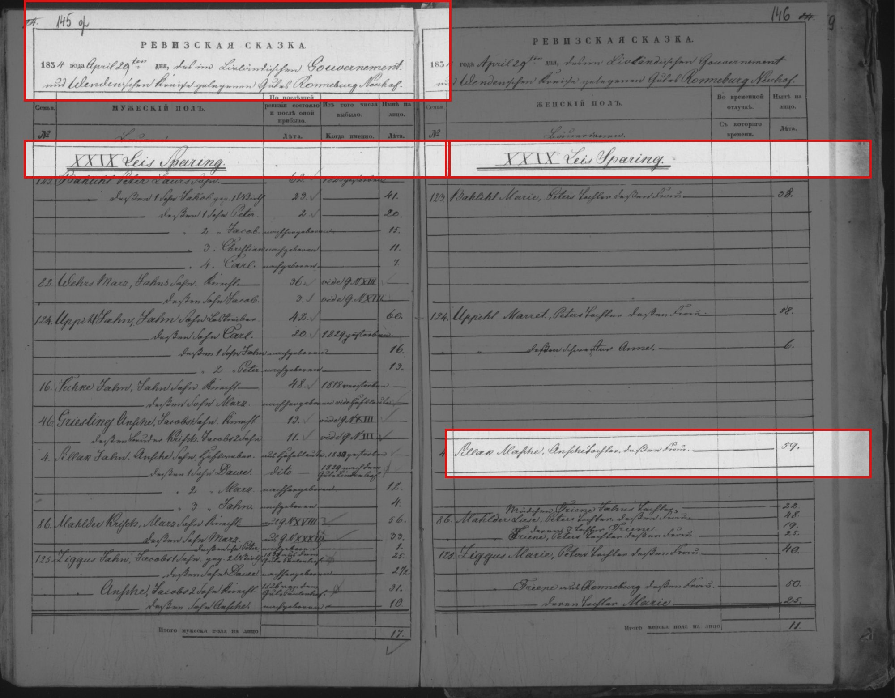
1834 Jaunrauna soul revision — Farm XXIX Lejas Spāriņi, Family 4. . The page, large, and the untouched original. - 1855 Cēsis marriage no. 14 & 1850 Jaunrauna soul revision. Cēsis rural marriages 1855 no. 14 & Jaunrauna 1850 soul revision (frame 220, Hofsleute). LVVA Raduraksti. Cited for Jānis Sirlaks.Archived copy held: 2 files (image).
Transcription we hold (1)
14. Ronneb. Neuhof Gärtner Dahwis [Jahnis] Sillak (E. Jānis — Mahrz — luth.) | Cēsis Dubinsay Glahsneek Wirths T. Lihse Weidenbaum (E. Jānis — Lihse v.) | d. 17t. April (1855 no. 14); Jahn Sillak, 20 (1850 revision, frame 220, Hofsleute family no. 15)
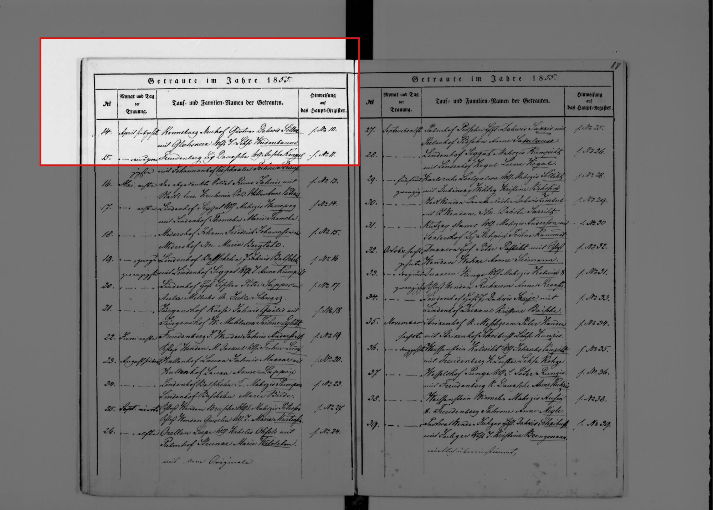
1855 Cēsis marriage no. 14 & 1850 Jaunrauna soul revision. . The page, large, and the untouched original. - 1857 Priekuļi soul revision — Farm XIX Ģiboļi, 3, Dahw. Priekuļi (Freudenberg) 1857 soul revision, LVVA f. 77, apr. 14, l. 344, image 32. LVVA Raduraksti. Cited for Dāvis Ģibols.Archived copy held: 2 files (image).
Transcription we hold (1)
3, Dahw | 25½ | Laut Cameralh[ofs] Befehl v. 18 Januar[?] 1856 No. 652 nach Riga übergeführt
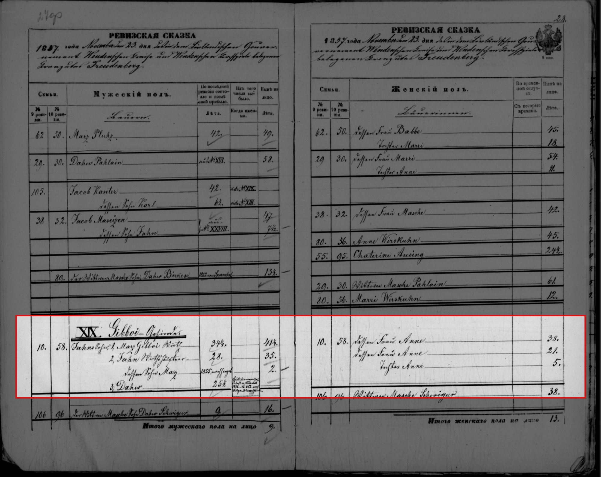
1857 Priekuļi soul revision — Farm XIX Ģiboļi, 3, Dahw. . The page, large, and the untouched original. - 1860 Cēsis rural baptism no. 50, Ernestine Sirlak. Cēsis rural Lutheran parish births 1847–1879, LVVA f. 235, apr. 7, l. 104, image 188R. LVVA Raduraksti. Cited for Jānis Sirlaks.Archived copy held: 2 files (image).
Transcription we hold (1)
50. Dubinsay Glahsneek. Ernestine Sirlak. Elt. Jahnis Sirlak u. d. Lihse, luth.
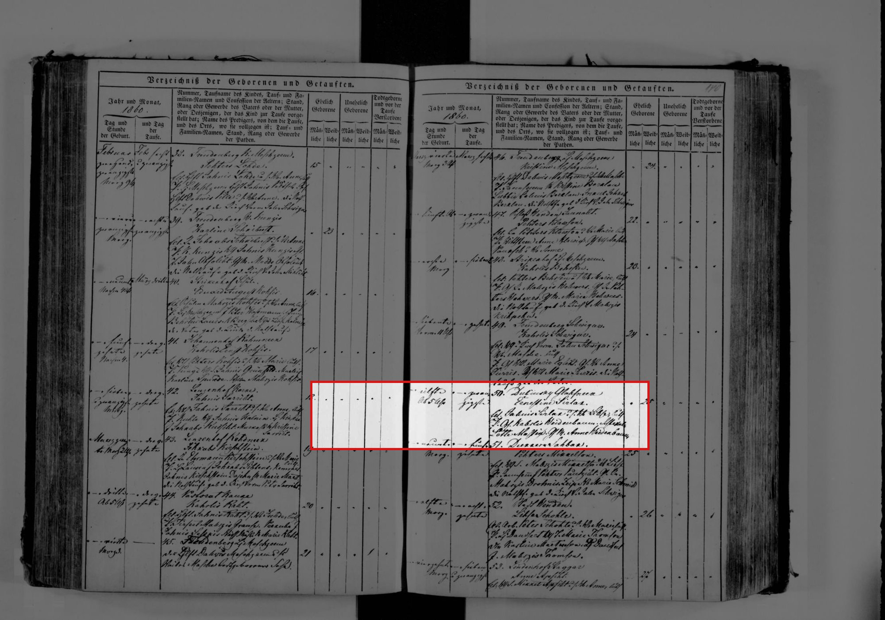
1860 Cēsis rural baptism no. 50, Ernestine Sirlak. . The page, large, and the untouched original. - 1862 Cēsis rural baptism no. 156, Reinhold Sirlak, Johannenhof Mühle. Cēsis rural Lutheran parish births 1862 no. 156 (LVVA f. 235, apr. 7, l. 104, image 227R) & Ainas Sirlakas atmiņas. Vīstuči, p. 8. LVVA Raduraksti & Aina Jurciņa memoir. Cited for Jānis Sirlaks, Līze Veidenbauma.Archived copy held: 2 files (image).
Transcription we hold (1)
156. Johannenhof Mühle. Reinhold Sirlak. Elt. Müller Jahnis Sirlak u. d. Lihse, luth.
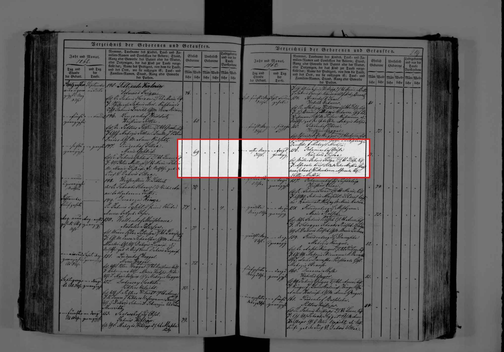
1862 Cēsis rural baptism no. 156, Reinhold Sirlak, Johannenhof Mühle. . The page, large, and the untouched original. - 1879 baptism no. 98, Ernestine Sirlak. Rauna ev. lut. draudze, dzimušo reģistrs 1877–1891. Latvian State Historical Archives, via Raduraksti. LVVA f. 235, apr. 7, l. 517, image 83 (right page). LVVA f. 235, apr. 7, l. 517, image 83. Cited for Ernestīne Sirlaka.Archived copy held: 2 files (image).
Transcription we hold (1)
Maerz, neunten, Morgens 9 Uhr | Maerz neunzehnten | 98 Neuhof, Lj. Wihstuz. Ernestine Sirlak / Elt. Wth Peter Sirlak u. W. Marie geb. Gibboy. beide lutherisch / Pth. Md. Ernestine Sirlak. W. Leene Wihstuz Wth. Kahrl Blizzan / Get. vom K.V. Gudre im Hause / best. vom Past. Dsirne, in der K. am 15 April
Translation: March ninth, 9 a.m. | March nineteenth | No. 98, Jaunrauna, Lejas Vīstuči: Ernestine Sirlak. Parents: farmer Peter Sirlak and wife Marie née Gibboy, both Lutheran. Godparents: maid Ernestine Sirlak, wife Leene Wihstuz, farmer Kahrl Blizzan. Baptised by churchwarden Gudre at home; ratified by Pastor Dsirne in the church on 15 April.
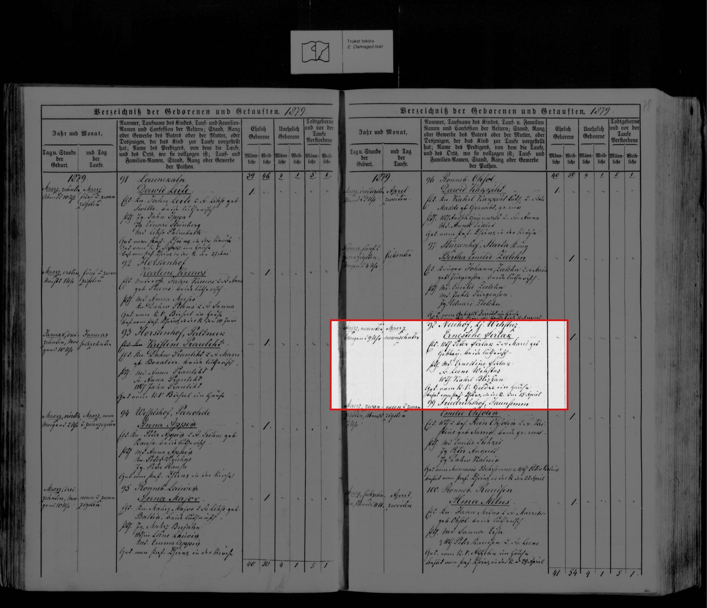
1879 baptism no. 98, Ernestine Sirlak. . The page, large, and the untouched original. - 1881 baptism no. 53, Kahrl Sirlak. Rauna ev. lut. draudze, dzimušo reģistrs 1877–1891. Latvian State Historical Archives, via Raduraksti. LVVA f. 235, apr. 7, l. 517, image 143 (right page). LVVA f. 235, apr. 7, l. 517, image 143. Cited for Kārlis Sirlaks.Archived copy held: 2 files (image).
Transcription we hold (1)
Februar, ein u. zwanzigsten, Morgens 1 Uhr | Februar, vier u. zwanzigsten. | 53. Neuhof, Lj. Wihstuz / Kahrl Sirlak. / Elt. Wth. Peter Sirlak u. Frau Marie geb. Gibboy. Beide lutherisch. / Pth. Jg. Jahn Duhzmann, Jg. Kahrl Weidenbaum, Ww. Leene Duhzmann / Get. vom Past. Dsirne im Hause
Translation: February twenty-first, 1 a.m. | February twenty-fourth | No. 53, Jaunrauna, Lejas Vīstuči: Kahrl Sirlak. Parents: farmer Peter Sirlak and Mrs Marie née Gibboy, both Lutheran. Godparents: bachelor Jahn Duhzmann, bachelor Kahrl Weidenbaum, widow Leene Duhzmann. Baptised by Pastor Dsirne at home.
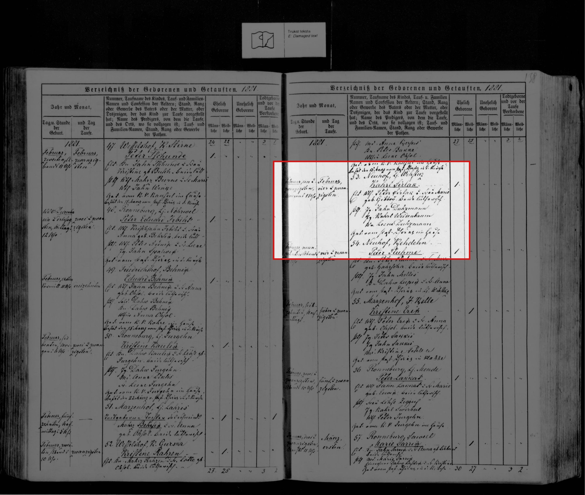
1881 baptism no. 53, Kahrl Sirlak. . The page, large, and the untouched original. - 1888 baptism no. 121, Kristine Sirlak. Rauna ev. lut. draudze, dzimušo reģistrs 1877–1891. Latvian State Historical Archives, via Raduraksti. LVVA f. 235, apr. 7, l. 517, image 390 (left page). LVVA f. 235, apr. 7, l. 517, image 390. Cited for Kristīne Sirlaka.Archived copy held: 2 files (image).
Transcription we hold (1)
April, neunten, morgens 6 U. | fünf u. zwanzigsten. | 121. Neuhof, Lj. Wihstuz / Kristine Sirlak. / Elt. Wth. Peter Sirlak u. W. Marie geb. Gibboy. beide lutherisch. / Pth Wthin Mari Sirnis, Kn. Jahn Karniht, Mdch Mari Karnit / Get. v. Wth Dahw Gudre im Hause
Translation: April ninth, 6 a.m. | twenty-fifth | No. 121, Jaunrauna, Lejas Vīstuči: Kristine Sirlak. Parents: farmer Peter Sirlak and wife Marie née Gibboy, both Lutheran. Godparents: farm-mistress Mari Sirnis, farmhand Jahn Karniht, maid Mari Karnit. Baptised by farmer Dahw Gudre at home.
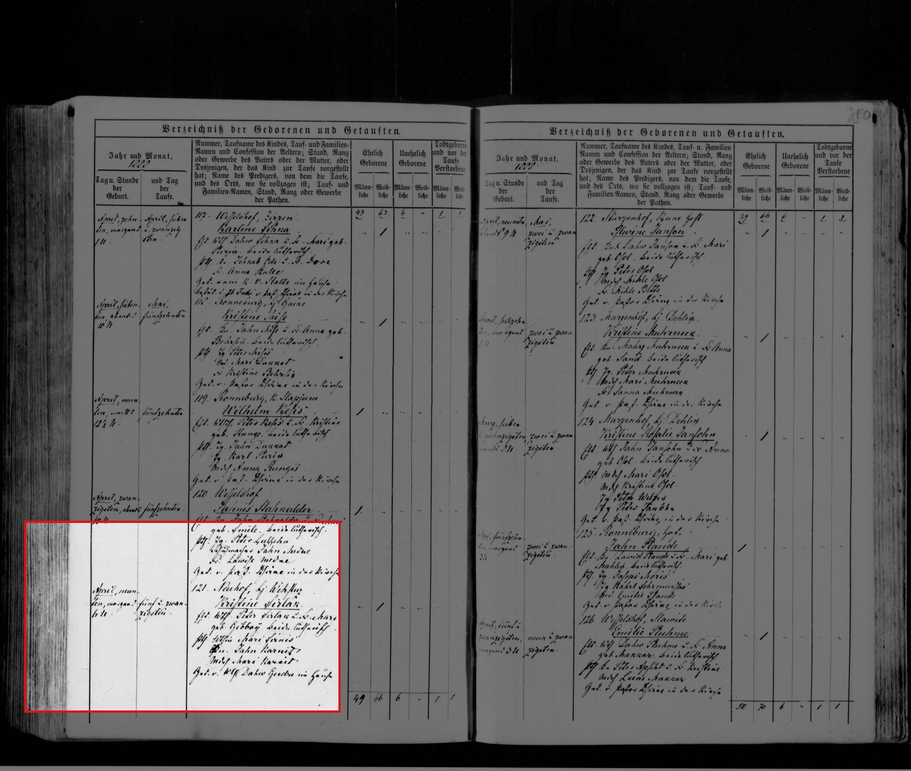
1888 baptism no. 121, Kristine Sirlak. . The page, large, and the untouched original. - 1888 baptism no. 132, Jahnis Karnicht. Rauna ev. lut. draudze, dzimušo reģistrs 1877–1891. Latvian State Historical Archives, via Raduraksti. LVVA f. 235, apr. 7, l. 517, image 391 (right page). LVVA f. 235, apr. 7, l. 517, image 391. Archived copy held: 2 files (image).
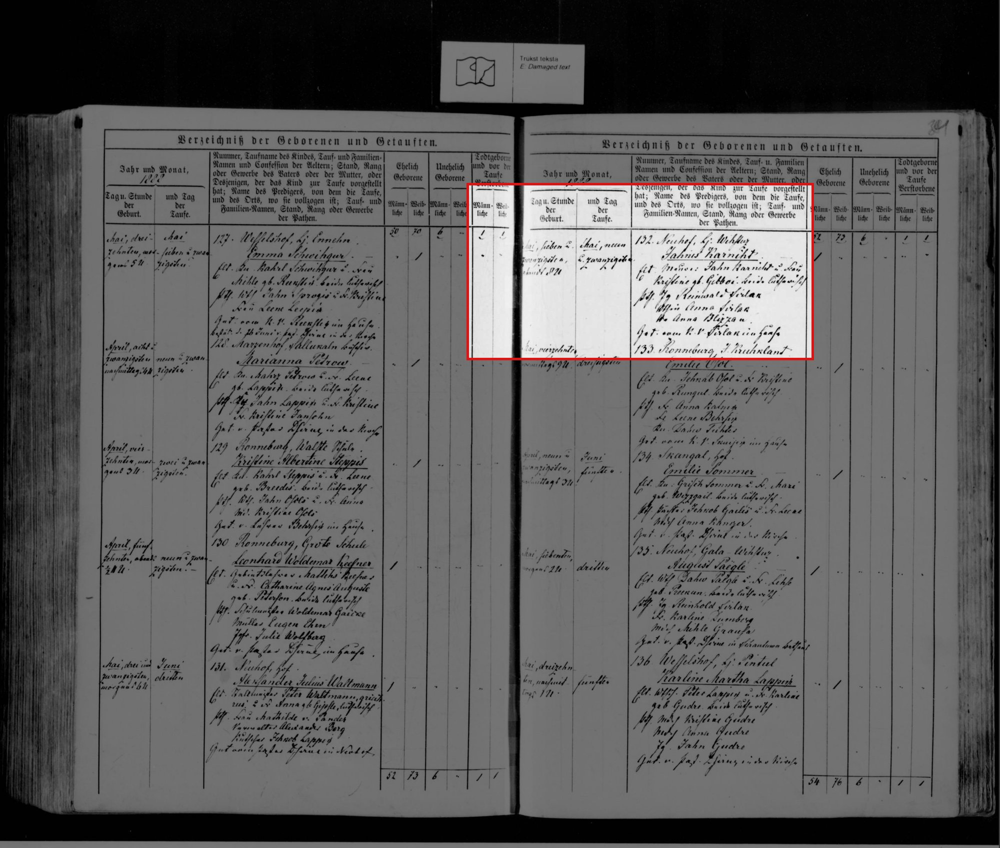
1888 baptism no. 132, Jahnis Karnicht. . The page, large, and the untouched original. - 1895 baptism no. 135, August Sirlak. Rauna ev. lut. draudze, dzimušo reģistrs 1891–1897. Latvian State Historical Archives, via Raduraksti. LVVA f. 235, apr. 12, l. 678, image 116 (right page). LVVA f. 235, apr. 12, l. 678, image 116. Cited for Augusts Sirlaks.Archived copy held: 2 files (image).
Transcription we hold (1)
Mai, dreissigsten, morgens 4 U. | Juli, neunten | 135. Neuhof-Wihstuz / August Sirlak. / Elt. Wrth Peter Sirlak u Fr. Mari geb. Gibboj. Beide lutherisch. / Pth.: Jge Jahn Duhzmann, Wrth Dahw Blukis u Fr. Karline. / Get. v. P. Adj. Rugel in d. Kirche.
Translation: May thirtieth, 4 a.m. | July ninth | No. 135, Jaunrauna-Vīstuči: August Sirlak. Parents: farmer Peter Sirlak and Mrs Mari née Gibboj, both Lutheran. Godparents: bachelor Jahn Duhzmann, farmer Dahw Blukis and Mrs Karline. Baptised by Pastor-Adjunct Rugel in the church.
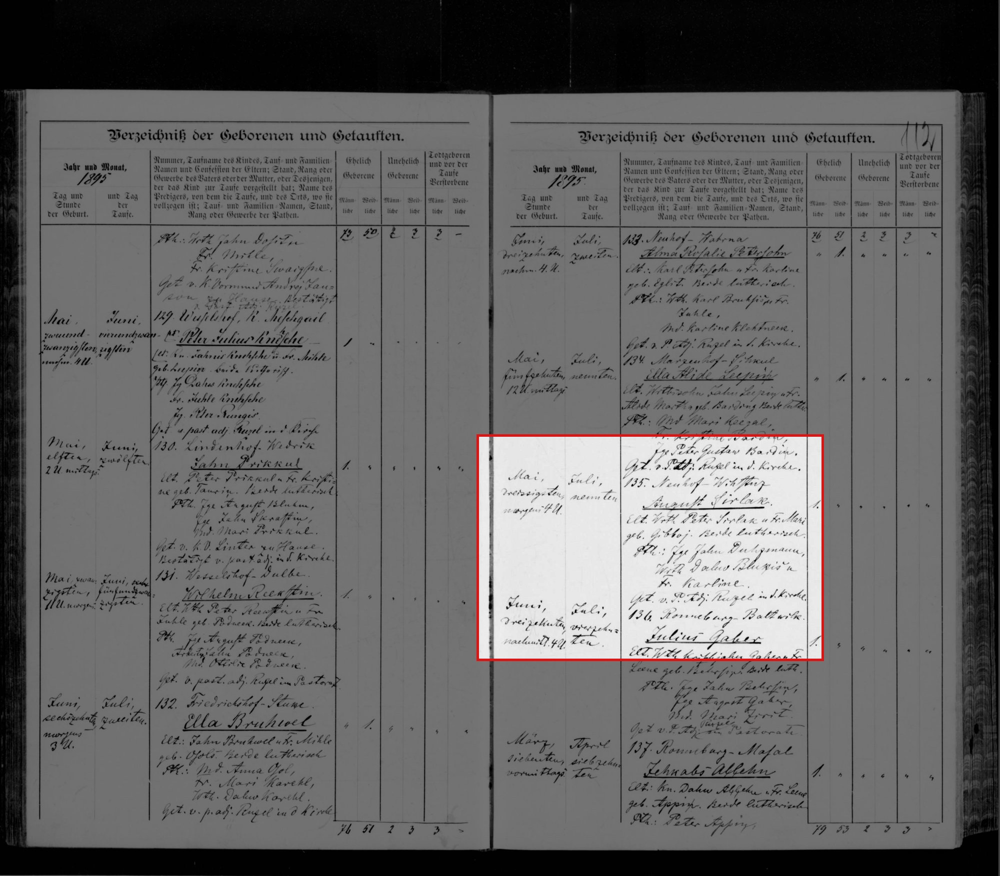
1895 baptism no. 135, August Sirlak. . The page, large, and the untouched original. - Baptism of Edward Newman (12 May 1844), 1851/1861 England Censuses, Freethorpe, Norfolk, and FamilySearch tree L6VS-9M9 (b. 17 Apr 1844). England, Norfolk, Parish Registers, 1510-1997; England and Wales, Census, 1851 & 1861; FamilySearch Family Tree (L6VS-9M9). FamilySearch / Norfolk Record Office & UK Census. original at familysearch.org. Cited for Edward Newman.Archived copy held: 6 files (JSON, table), fetched 1 Nov 2026.
1 index row we hold: England, Norfolk, Parish Registers (County Record Office), 1510-1997
Name Event Date Place Relatives Record Edward Newman Baptism 12 May 1844 Freethorpe, Norfolk, England, United Kingdom parent: Elizabeth; parent: William Robert Newman FamilySearch JQQW-5N5 Transcription we hold (1)
Edward Newman: Baptism 12 May 1844 @ Freethorpe, Norfolk, England, United Kingdom; ParentChild: William Robert Newman, Elizabeth … 1851 Census (SGBB-G9Q) & 1861 Census (M7X1-DM9): Birth 1845 @ Freethorpe, Norfolk … L6VS-9M9: Birth 17 April 1844
- Baptism of Marie Gibboij, 1853 no. 149, Freudenberg K. Pohdin (image 13, fol. 10r). Cēsis (Wenden) Latvian rural congregation births 1853 (LVVA f. 235, apr. 4, l. 586). LVVA Raduraksti. Cited for Mārcis Gibboy.Archived copy held: 4 files (image).
Transcription we hold (1)
[August] — sechsten Morg. 8 Uhr | — sechzehnten | 149. Freudenberg K. Pohdin. Marie Gibboij Elt. Kn. Mahrzis Gibboij u. s. Wb. Anne, luth. T. Lej Pohdin Jehkabs Pohdin u. s. Wb Lihse K Pohdin Marie Bitte.
Translation: [Born August] the sixth, 8 a.m. | [Baptised August] the sixteenth | No. 149. Freudenberg [Priekuļi] Kalna-Podiņi. Marie Gibboij. Parents: farmhand Mārcis Gibboij and his wife Anne, Lutheran. Godparents: Lejas-Podiņi Jēkabs Podiņš and his wife Līze, Kalna-Podiņi Marija Bite.
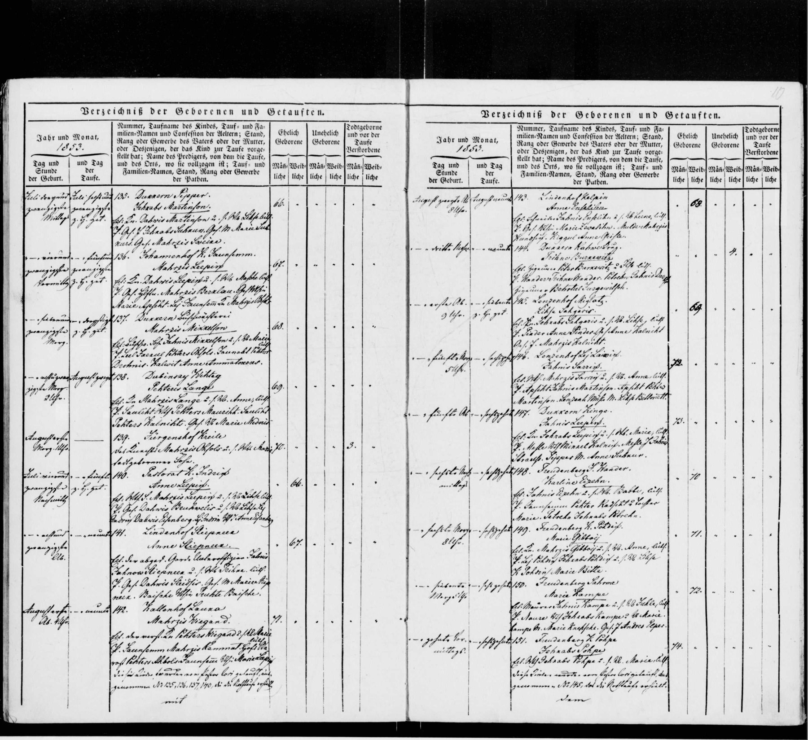
Baptism of Marie Gibboij, 1853 no. 149, Freudenberg K. Pohdin (image 13, fol. 10r). . - Baptism of Marie Gibboij, 1853 no. 149, Freudenberg K. Pohdis. Cēsis St John's Lutheran parish births 1853, no. 149. LVVA Raduraksti. Cited for Anna Mežciema, Mārcis Gibboy.Archived copy held: 2 files (image).
Transcription we hold (1)
[August] — sechsten Morg. 8 Uhr | — sechzehnten | 149. Freudenberg K. Pohdis. Marie Gibboij. Lett. Kn. Mahrzis Gibboij u. s. W. Anne, luth.
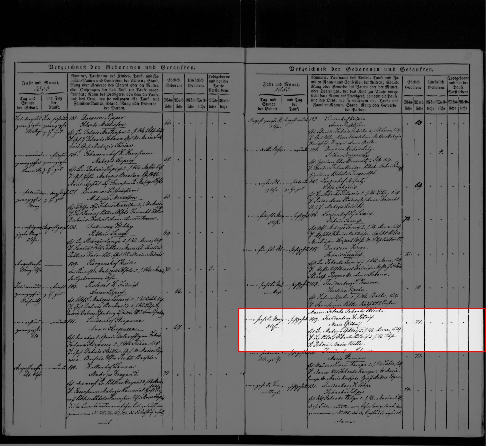
Baptism of Marie Gibboij, 1853 no. 149, Freudenberg K. Pohdis. . The page, large, and the untouched original. - Baznīcas ziņas. Cēsu lauku draudze (in the article run headed 'Patiesības apliecinātāji'). Cēsu Vēstis. Latvian National Library, periodika.lv. Cēsu Vēstis, Nr.3 (22.01.1943), p. 3. original at periodika.lv. Cited for Mārtiņš Vilhelms Sirlaks.Archived copy held: 2 files (JSON), fetched 25 Oct 2026.
Transcription we hold (1)
Baznīcas zinas. Cēsu lauka [sic] draudze. … Miruši: Mārtiņš-Vilhelms Sirlaks, 59 g. v. no Cēsīm, Mārcis Jēkabsons, 80 g. v. no Cēsu Lejas Senčiem …
Translation: Church news. Cēsis rural congregation. … Died: Mārtiņš-Vilhelms Sirlaks, aged 59, of Cēsis; Mārcis Jēkabsons, aged 80, …
- Baznīcas ziņas. Cēsu lauku draudze (in the article run headed 'Tautas Palīdzības darbs Taurenē'). Cēsu Vēstis. Latvian National Library, periodika.lv. Cēsu Vēstis, Nr.2 (09.01.1942), p. 3. original at periodika.lv. Cited for Arvīds Fricis Danenbergs, Elvīra Antonija Sirlaka.Archived copy held: 2 files (JSON), fetched 25 Oct 2026.
Transcription we hold (1)
Laulāti: … Arvīds Danenbergs no Jelgavas ar Elvīru Sirlaks no Litenes aptiekas.
Translation: Married: … Arvīds Danenbergs of Jelgava to Elvīra Sirlaks of the Litene pharmacy.
- Birth of Ellen McCabe, 15 Feb 1877, parents Peter McCabe and Catherine Prunty. Ireland, Select Births and Baptisms, 1620-1911 (Ancestry collection 2533). General Register Office (Ireland) / FamilySearch FHL 255979, via Ancestry.com. Ancestry 2533:2139874 (FHL Film 255979); raw/round3/ancestry-log.jsonl line 76. original at ancestry.com.
- Blīdene and Stūri congregations 1903, marriages no. 17. Baznīcu grāmatas — Blīdenes un Stūru draudze. LVVA, via Raduraksti. LVVA f. 235, apr. 14, l. 472, images 13–14. LVVA f. 235, apr. 14, l. 472, image 13–14. original at raduraksti.arhivi.lv. Archived copy held: 10 files (JSON, image, table, web page).
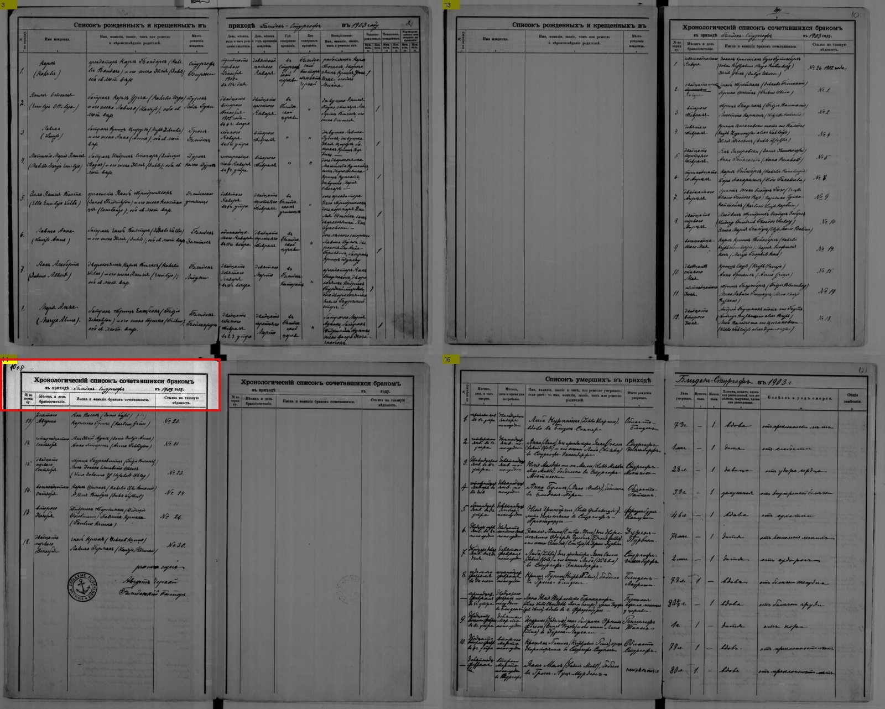
Blīdene and Stūri congregations 1903, marriages no. 17. . The page, large, and the untouched original. - Blīdene and Stūri Latvian and German congregations 1900, deaths no. 35. Baznīcu grāmatas — Blīdenes un Stūru (Blieden und Stuhrhof) draudze. Latvian State Historical Archives (LVVA), via Raduraksti. LVVA f. 235, apr. 12, l. 467, image 16. LVVA f. 235, apr. 12, l. 467, image 16. original at raduraksti.arhivi.lv. Archived copy held: 7 files (JSON, image, table, web page).
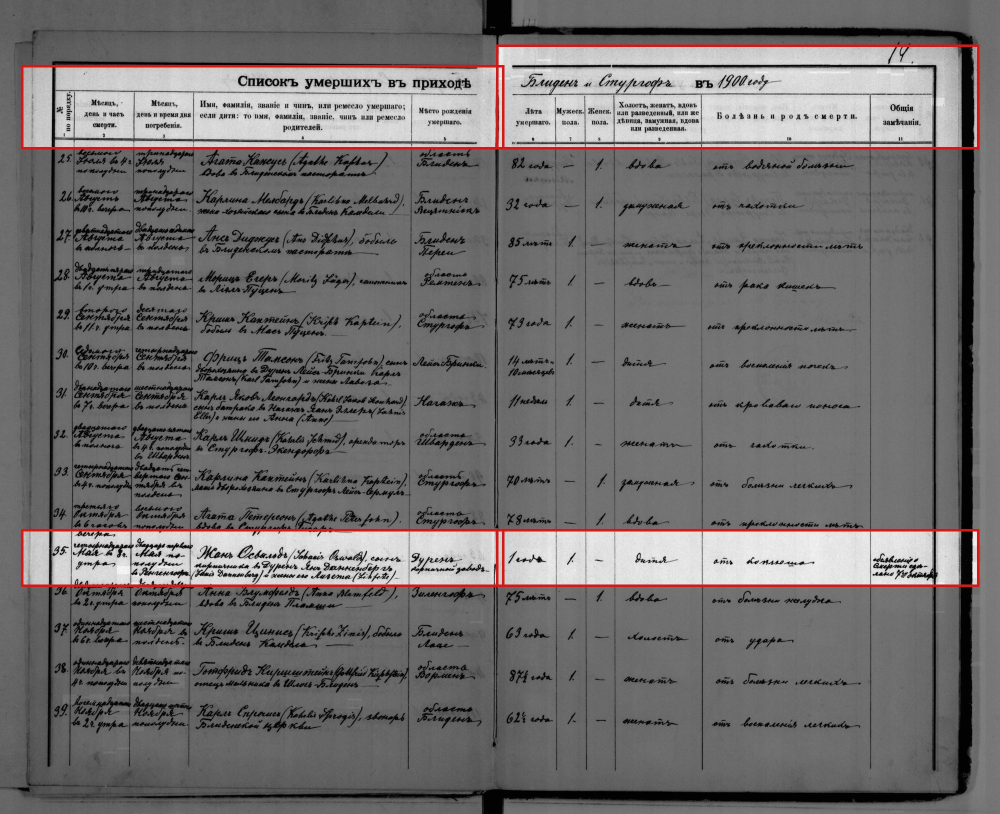
Blīdene and Stūri Latvian and German congregations 1900, deaths no. 35. . The page, large, and the untouched original. - Blīdene-Stūri birth, marriage, and death register 1892, births no. 41. Blīdenes-Stūru luterāņu draudzes baznīcas grāmatas, LVVA f. 235, apr. 6, l. 199. Latvian State Historical Archives (LVVA), via Raduraksti. LVVA f. 235, apr. 6, l. 199, img 9, no. 41. LVVA f. 235, apr. 6, l. 199, image 9. original at raduraksti.arhivi.lv. Archived copy held: 6 files (image).
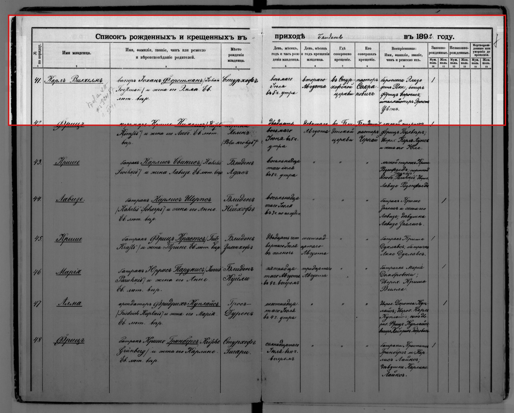
Blīdene-Stūri birth, marriage, and death register 1892, births no. 41. . The page, large, and the untouched original. 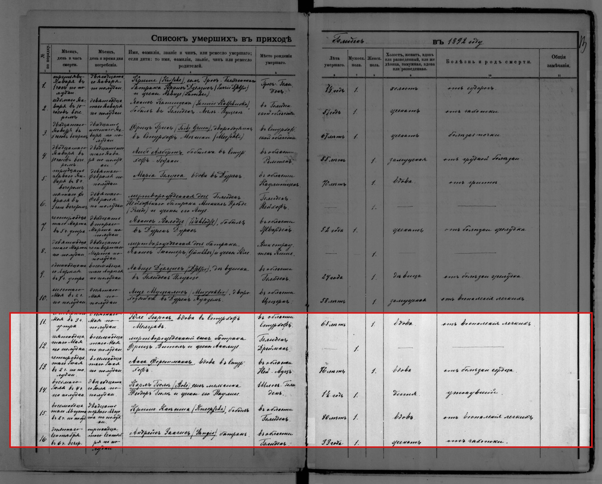
Blīdene-Stūri birth, marriage, and death register 1892, births no. 41. . The page, large, and the untouched original. 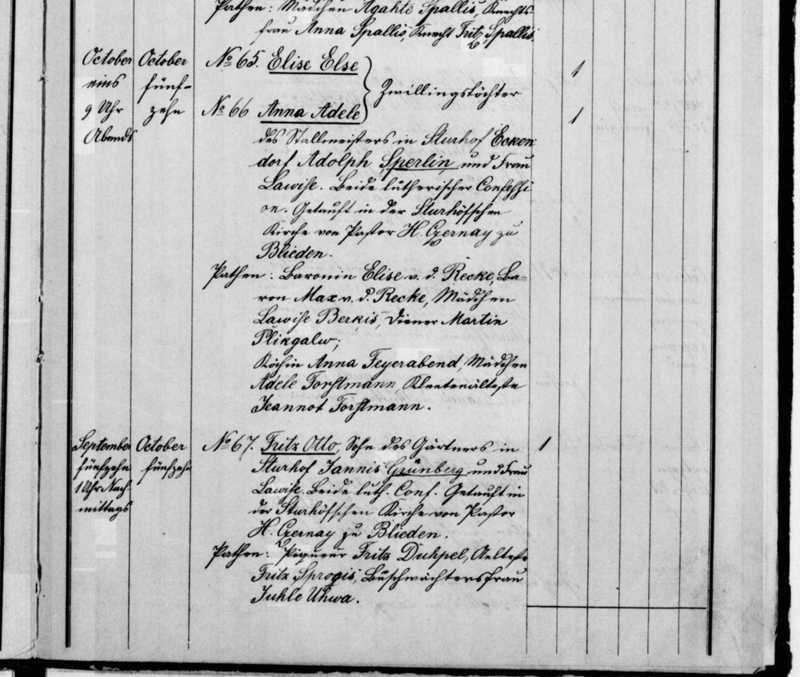
Blīdene-Stūri birth, marriage, and death register 1892, births no. 41. . - Cēsis Lutheran marriage register 1847, entry no. 38 (Mahrz Gibboy × Anne Meschzeem). Cēsu lauku latviešu ev. lut. draudzes 1841.–1876. g. laulāto reģistrs (235-15-664). Latvian State Historical Archives (LVVA), via Raduraksti. LVVA f. 235, apr. 15, l. 664, image 23 (p. 36), 1847 no. 38. LVVA f. 235, apr. 15, l. 664, image 23. original at raduraksti.arhivi.lv. Cited for Anna Mežciema, Mārcis Gibboy.Archived copy held: 6 files (image).
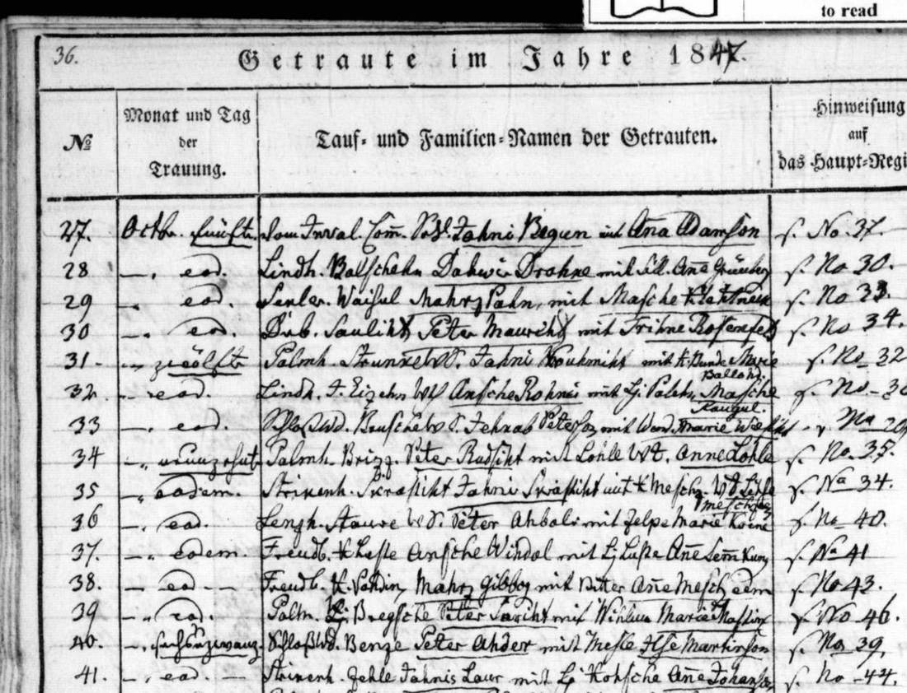
Cēsis Lutheran marriage register 1847, entry no. 38 (Mahrz Gibboy × Anne Meschzeem). . 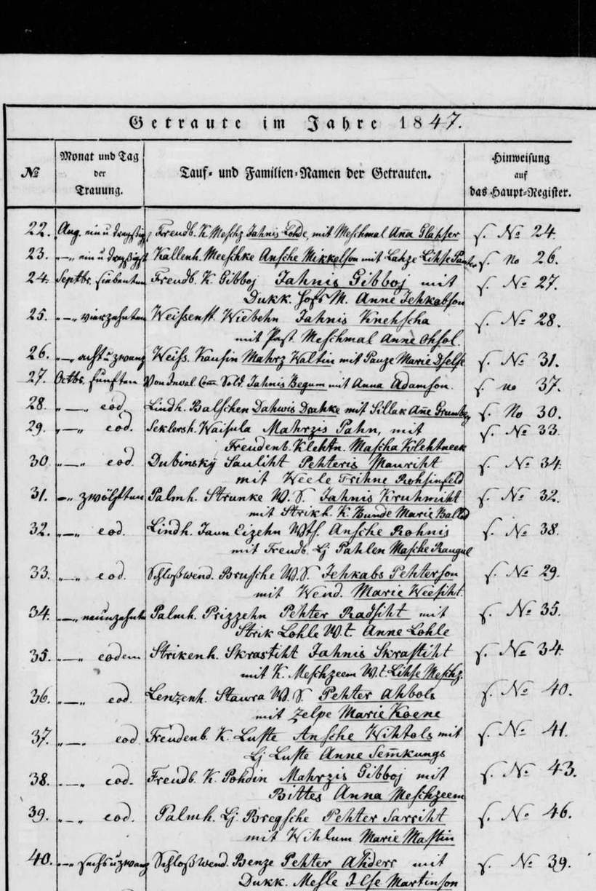
Cēsis Lutheran marriage register 1847, entry no. 38 (Mahrz Gibboy × Anne Meschzeem). . - Cēsis rural birth register 1848, entry no. 135 (Mahrz Gibboij). Cēsu lauku latviešu ev. lut. draudzes 1847.–1879. g. dzimušo un kristīto reģistrs (235-7-104). Latvian State Historical Archives (LVVA), via Raduraksti. LVVA f. 235, apr. 7, l. 104, image 25, 1848 no. 135. LVVA f. 235, apr. 7, l. 104, image 25. original at raduraksti.arhivi.lv. Cited for Mārcis.Archived copy held: 2 files (image).
Transcription we hold (1)
[Spt.] ein u. zwanzig Ab | Octbr. dritten | 135 Freudenb. K. Pohdin Mahrz Gibboij Elt. Mahrz Gibboij u s Wb. Anne. L. Tf. Bittes Jahni Wirskaln u Babbe Bitte W. W. Schwiggur Mahrz Mikkelson.
Translation: [September] 21st in the evening | October 3rd | No. 135, Freudenberg Kalna-Podiņi: Mahrz Gibboij. Parents: Mahrz Gibboij and his wife Anne, Lutheran. Godparents: Bites Jahni Wirskaln and farmer's wife Babbe Bitte; Vec-Švīguļi Mahrz Mikkelson.
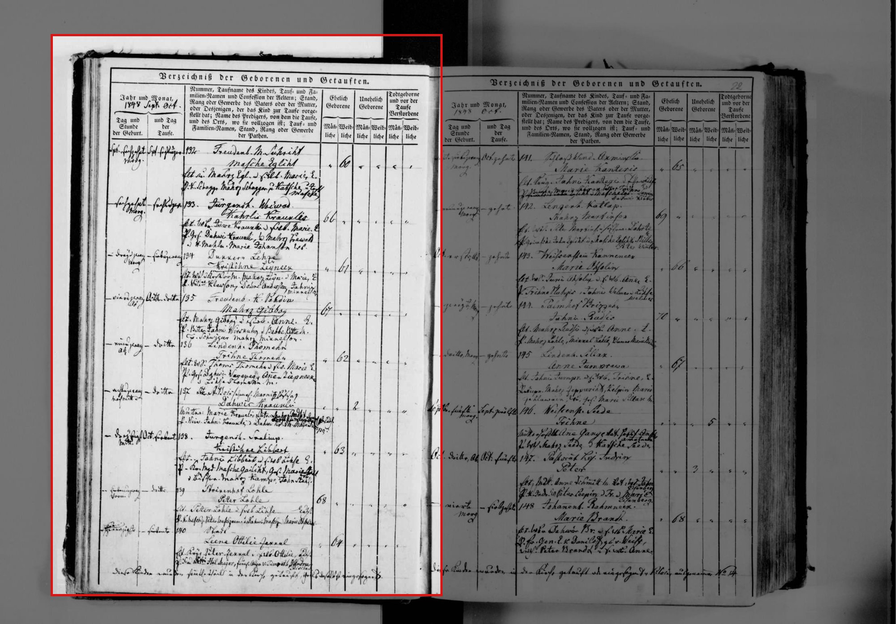
Cēsis rural birth register 1848, entry no. 135 (Mahrz Gibboij). . The page, large, and the untouched original. - Cēsis rural birth register 1855, entry no. 175 (Mahrzis Gibboij). Cēsu lauku latviešu ev. lut. draudzes 1847.–1879. g. dzimušo un kristīto reģistrs (235-7-104). Latvian State Historical Archives (LVVA), via Raduraksti. LVVA f. 235, apr. 7, l. 104, image 125 (p. 121), 1855 no. 175. LVVA f. 235, apr. 7, l. 104, image 125. original at raduraksti.arhivi.lv. Archived copy held: 2 files (image).
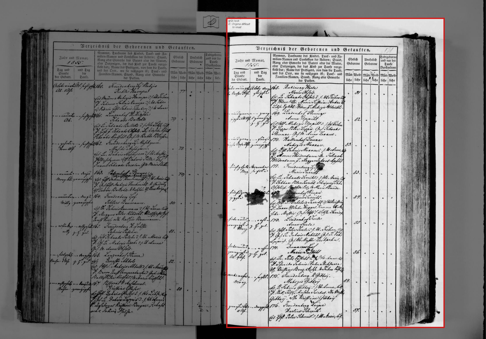
Cēsis rural birth register 1855, entry no. 175 (Mahrzis Gibboij). . The page, large, and the untouched original. - Cēsis rural birth register 1855, entry no. 214 (Kristine Gibboij). Cēsu lauku latviešu ev. lut. draudzes 1847.–1879. g. dzimušo un kristīto reģistrs (235-7-104). Latvian State Historical Archives (LVVA), via Raduraksti. LVVA f. 235, apr. 7, l. 104, image 128, 1855 no. 214. LVVA f. 235, apr. 7, l. 104, image 128. original at raduraksti.arhivi.lv. Cited for Kristīne Gibboy.Archived copy held: 2 files (image).
Transcription we hold (1)
[Dec.] einunddreißigste Morg 7 Uhr | [Januar] sechste z. H. get. | 214. Freudenberg K. Pohding Kristine Gibboij El: Kn. Mahrzis Gibboij u. s. Wb. Anne, luth Tf. W. Gibboij Jahnis Sarriht u. Dahwis Sarriht. W. Gibboij M. Marie Sarriht
Translation: [December] 31st, 7 a.m. | [January] 6th, baptised at home | No. 214, Freudenberg Kalna-Podiņi: Kristine Gibboij. Parents: farmhand Mahrzis Gibboij and his wife Anne, Lutheran. Godparents: Vec-Ģiboli Jahnis Sarriht and Dahwis Sarriht, Vec-Ģiboli maid Marie Sarriht.
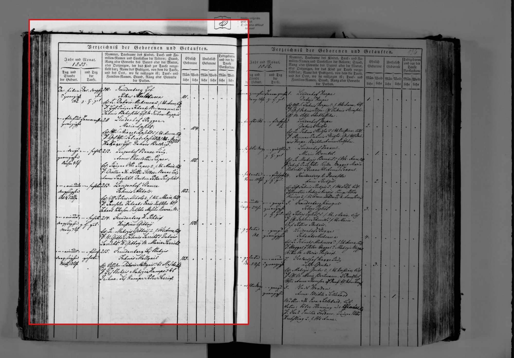
Cēsis rural birth register 1855, entry no. 214 (Kristine Gibboij). . The page, large, and the untouched original. - Cēsis rural congregation births 1853, no. 149. Baznīcu grāmatas — Cēsu lauku draudze (lettische Gemeinde zu Wenden), 1853 Dz L M. Latvian State Historical Archives (LVVA), via Raduraksti. LVVA f. 235, apr. 4, l. 586, image 13 (right page, folio 10). LVVA f. 235, apr. 4, l. 586, image 13. original at raduraksti.arhivi.lv. Cited for Marija Gibboja.Archived copy held: 6 files (JSON, image, table).
Transcription we hold (1)
[August] — sechsten Morg. 8 Uhr | — sechzehnten | 149. Freudenberg K. Pohdis. Marie Gibboij. Lett. Kn. Mahrzis Gibboij u. s. W. Anne, luth. T. Lej Pohdis Jehkabs Pohdis u. s. W. Lihse, K. Pohdis Marie Bitte.
Translation: Born [August] the sixth, 8 a.m.; baptised the sixteenth. No. 149. Freudenberg, Upper Pohdis farm. Marie Gibboy. [Parents:] Latvian farmhand Mārcis Gibboy and his wife Anne, Lutheran. Godparents: from Lower Pohdis, Jēkabs Pohdis and his wife Līze; from Upper Pohdis, Marie Bitte.
Cēsis rural congregation births 1853, no. 149. . The page, large, and the untouched original. - Cēsu apriņķa Raunas draudzes Jaunraunas (Ronneburg-Neuhof) muižas 1858. gada revīzijas saraksts, pp. 23–24. Dvēseļu revīzijas — Jaunraunas privātmuiža (Ronneburg-Neuhof). LVVA, via Raduraksti. LVVA f. 77, apr. 14, l. 323, image 30 (family index: image 6). LVVA f. 77, apr. 14, l. 323, image 30. original at raduraksti.arhivi.lv. Cited for Mārcis Sirlaks, Pēteris Sirlaks.Archived copy held: 6 files (JSON, image, table).
Transcription we hold (1)
Gesinde No. XIV Wihstuz … 15. | 95. | Marz Sillakk, Jahns Sohn | 28 | | 36. / d[esse]n Stiefsohn[?] Dahw Wihstuz | 6 | | 14 / [ditto mark] Sohn Peter Sillakk | 2 | | 10 — [female side] 15. | 63[?]. | d[esse]n Frau Anne verw.[?] Wihstuz | | 51.
Translation: Farm No. XIV Vīstuči … family 15/95: Mārcis Sirlaks, son of Jānis, aged 28 at the last revision, 36 now; his stepson[?] Dāvis Vīstucs, 14; son Pēteris Sirlaks, 10. His wife Anne, widow of [a] Vīstucs, 51.
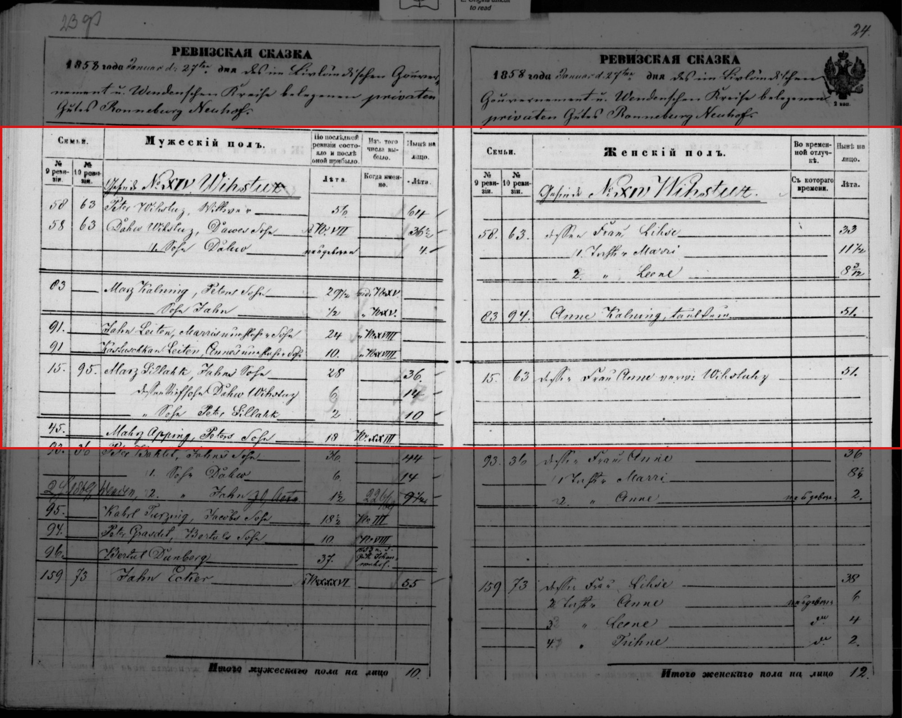
Cēsu apriņķa Raunas draudzes Jaunraunas (Ronneburg-Neuhof) muižas 1858. gada revīzijas saraksts, pp. 23–24. . The page, large, and the untouched original. - Dobele Latvian birth, marriage, and death register 1886–1888, 1888 boys no. 48. Dobeles latviešu luterāņu draudzes baznīcas grāmatas, LVVA f. 235, apr. 6, l. 250. Latvian State Historical Archives (LVVA), via Raduraksti. LVVA f. 235, apr. 6, l. 250, img 123L, no. 48. LVVA f. 235, apr. 6, l. 250, image 123. original at raduraksti.arhivi.lv. Archived copy held: 3 files (image, web page).
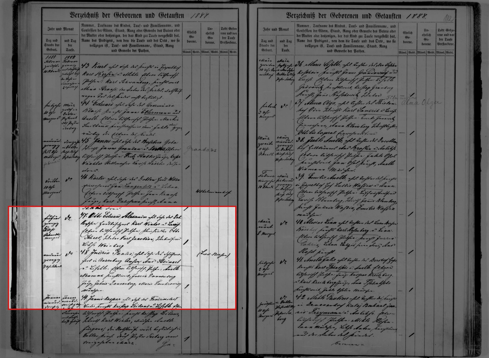
Dobele Latvian birth, marriage, and death register 1886–1888, 1888 boys no. 48. . The page, large, and the untouched original. - Dobele Latvian births 1883 nos. 131, 202; 1884 no. 66; deaths 1885 no. 27. Dobeles latviešu luterāņu draudzes baznīcas grāmatas, LVVA f. 235, apr. 6, l. 249. Latvian State Historical Archives (LVVA), via Raduraksti. LVVA f. 235, apr. 6, l. 249, img 24, 35, 80, 181. LVVA f. 235, apr. 6, l. 249, image 24. original at raduraksti.arhivi.lv. Archived copy held: 6 files (image).
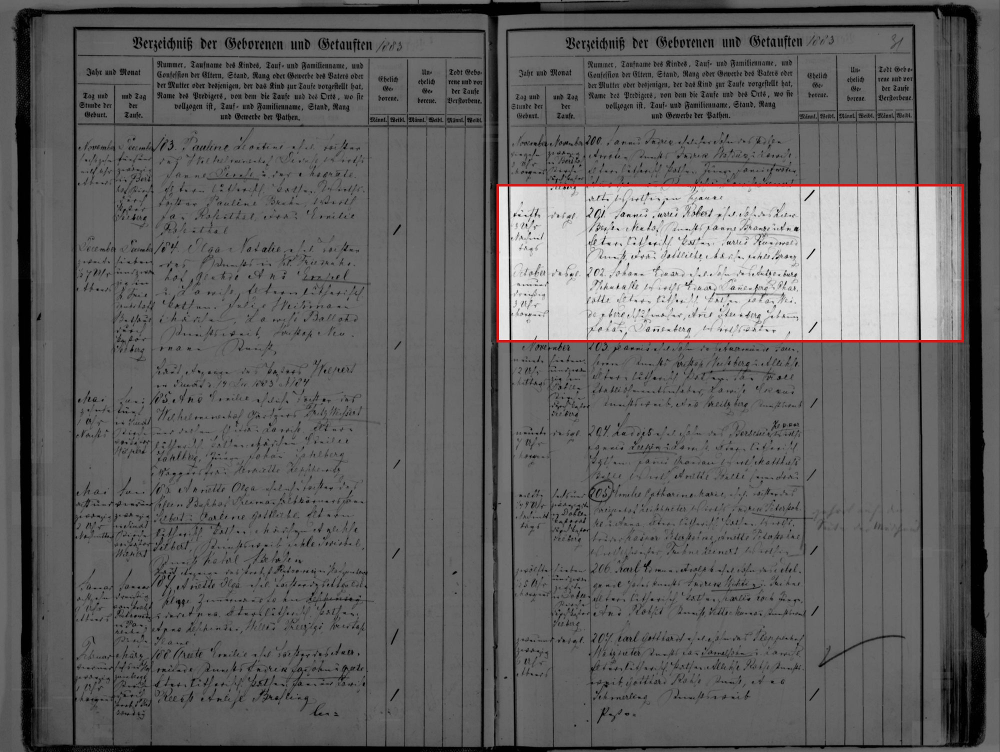
Dobele Latvian births 1883 nos. 131, 202; 1884 no. 66; deaths 1885 no. 27. . The page, large, and the untouched original. - Getraute im Jahre 1871–1879 and 1885 (Dobele Latvian marriages). Dobeles latviešu luterāņu draudzes baznīcas grāmatas, LVVA f. 235, apr. 6, l. 248 and l. 249. Latvian State Historical Archives (LVVA), via Raduraksti. LVVA f. 235, apr. 6, l. 248, img 5, 8, 9, 10, 11, 21, 23; l. 249, img 178. LVVA f. 235, apr. 6, l. 248, image 5. original at raduraksti.arhivi.lv. Archived copy held: 8 files (image).
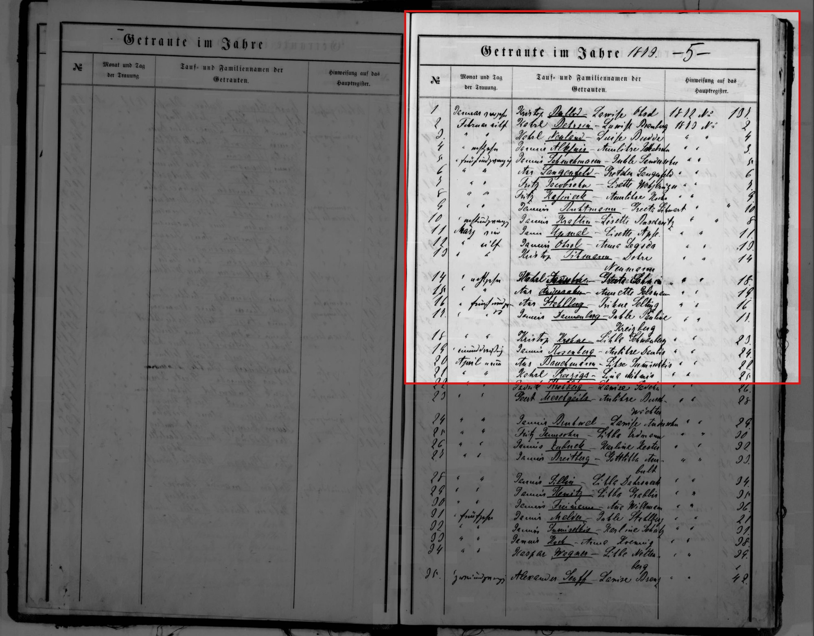
Getraute im Jahre 1871–1879 and 1885 (Dobele Latvian marriages). . The page, large, and the untouched original. - Getraute im Jahre 1878 (Dobele Latvian marriages 1878), no. 28. Dobeles latviešu luterāņu draudzes baznīcas grāmatas, LVVA f. 235, apr. 6, l. 248. Latvian State Historical Archives (LVVA), via Raduraksti. LVVA f. 235, apr. 6, l. 248, img 18 (right page, p. 15). LVVA f. 235, apr. 6, l. 248, image 18. original at raduraksti.arhivi.lv. Archived copy held: 2 files (image).
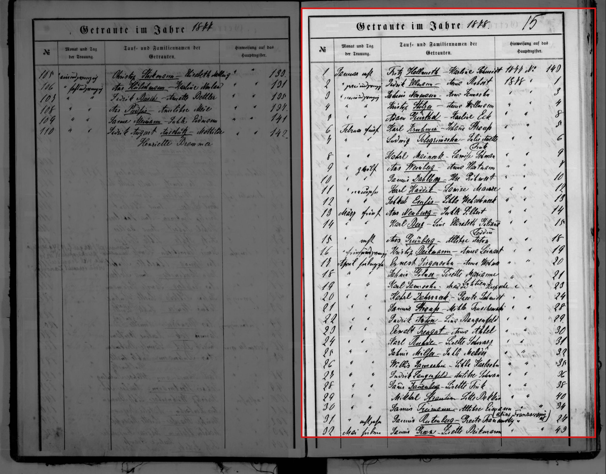
Getraute im Jahre 1878 (Dobele Latvian marriages 1878), no. 28. . The page, large, and the untouched original. - Getraute im Jahre 1884, no. 42. Rauna Latvian and German congregations, 1884 marriages and deaths (duplicate). LVVA, via Raduraksti. LVVA f. 235, apr. 7, l. 518, img 5 (left page). LVVA f. 235, apr. 7, l. 518, image 5. original at raduraksti.arhivi.lv. Cited for Dāvis Smukuls, Marija Kajone.Archived copy held: 7 files (JSON, image, table, web page).

Getraute im Jahre 1884, no. 42. . The page, large, and the untouched original. - Jaunauce-Ķerkliņi 1913, births no. 31. Baznīcu grāmatas — Jaunauces (Neu-Autz) draudze. LVVA, via Raduraksti. LVVA f. 235, apr. 15, l. 776, image 9. LVVA f. 235, apr. 15, l. 776, image 9. original at raduraksti.arhivi.lv. Archived copy held: 6 files (JSON, image, table).
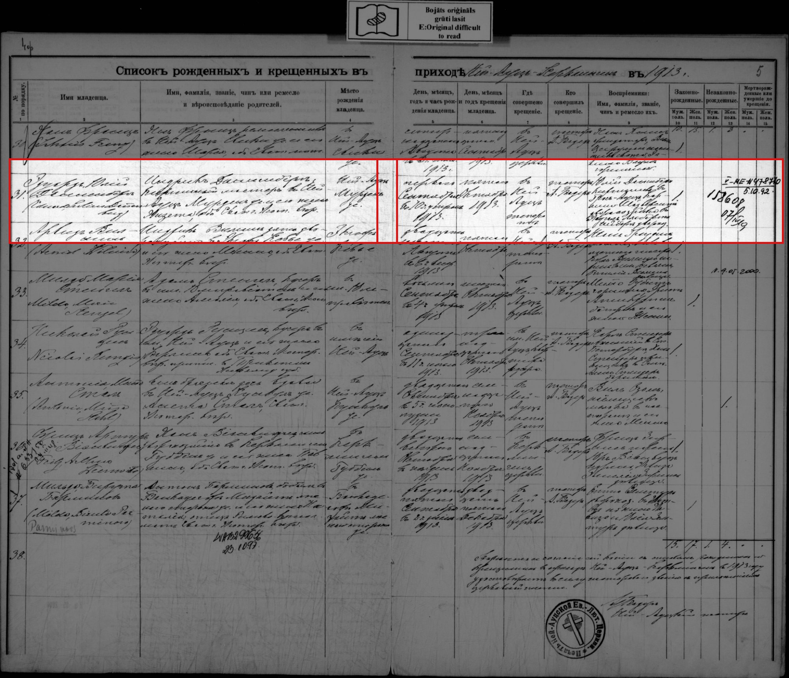
Jaunauce-Ķerkliņi 1913, births no. 31. . The page, large, and the untouched original. - Jauniešu iesvēte Kalamazū ev. lut. latv. draudzē (group photograph and caption), Laiks, 8 July 1964, p. 5. Periodika.lv — Laiks. Latvijas Nacionālā digitālā bibliotēka (LNB). Laiks, 08.07.1964 (Periodika issue 1028428, article DIVL374, doc 72981163), viewer p. 5. The photograph sits under the "Detroitas chronika" / "Grand Rapidu chronika" columns at the foot of the page, inside zone DIVL374. The issue date is Periodika's; I did not read the masthead.. original at periodika.lv. Cited for Ilze Balka, Kalvis Danenbergs, Liga Danenberg.Archived copy held: 4 files (JSON, image, search log).
Transcriptions we hold (2)
Jauniešu iesvēte Kalamazū ev. lut. latv. draudzē. 1. rindā no kreisās Līga Dannenberga, ērģelnieks prof. Ā. Ābele, māc. K. Zuika, māc. J. Meisters, māc. A. Piebalgs, māc. E. Rūsa, dr. pr-ks J. Salna un Ilze Lejiņa; otrā rindā Jānis Aivars, Mārtiņš Tolis, Maija Jirgene, Valdis Bormanis, Dace Rolle, Kalvis Dannenbergs, Liene Rava, Jānis Kirulis, Ilze Balka un Jānis Zuika A. Purmaļa foto
Translation: Youth confirmation in the Kalamazoo Ev. Luth. Latvian congregation. First row from the left Līga Dannenberga, organist prof. Ā. Ābele, Rev. K. Zuika, Rev. J. Meisters, Rev. A. Piebalgs, Rev. E. Rūsa, congregation president [dr. pr-ks] J. Salna and Ilze Lejiņa; second row Jānis Aivars, Mārtiņš Tolis, Maija Jirgene, Valdis Bormanis, Dace Rolle, Kalvis Dannenbergs, Liene Rava, Jānis Kirulis, Ilze Balka and Jānis Zuika. Photo by A. Purmaļa.
Jauniešu iesvēte Kalamazū ev. lut. latv. draudzē. 1. rindā no kreisās Līga Dannenberga, ērģelnieks prof. Ā. Ābele, māc. K. Zuika, māc. J. Meisters, māc. A. Piebalgs, māc. E. Rūsa, dr. pr-ks J. Salna un Ilze Lejiņa; otrā rindā Jānis Aivars, Mārtiņš Tolis, Maija Jirgene, Valdis Bormanis, Dace Rolle, Kalvis Dannenbergs, Liene Rava, Jānis Kirulis, Ilze Balka un Jānis Zuika. A. Purmaļa foto
Translation: Youth confirmation (iesvēte) at the Kalamazoo Ev. Lutheran Latvian congregation. In the first row from the left Līga Dannenberga, organist Prof. Ā. Ābele, Rev. K. Zuika, Rev. J. Meisters, Rev. A. Piebalgs, Rev. E. Rūsa, Dr. pr-ks J. Salna and Ilze Lejiņa; second row Jānis Aivars, Mārtiņš Tolis, Maija Jirgene, Valdis Bormanis, Dace Rolle, Kalvis Dannenbergs, Liene Rava, Jānis Kirulis, Ilze Balka and Jānis Zuika. Photo: A. Purmalis ("A. Purmaļa foto").
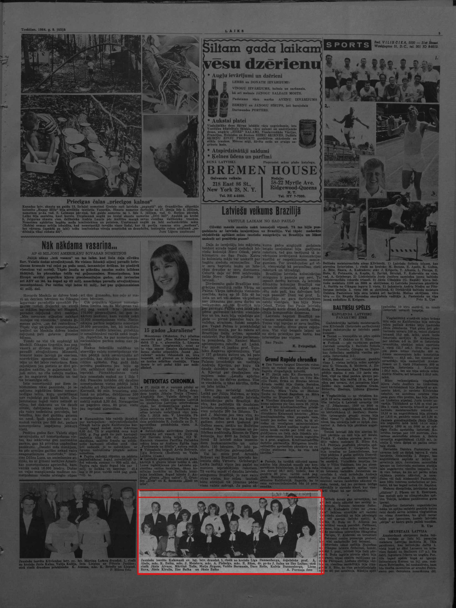
Jauniešu iesvēte Kalamazū ev. lut. latv. draudzē (group photograph and caption), Laiks, 8 July 1964, p. 5. . The page, large, and the untouched original. - Jaunrauna (Ronneburg-Neuhof) soul revision 1834, XXIX. Leis-Sparing, family 4 (Sillak). Jaunraunas (Ronneburg-Neuhof) muižas 1795., 1811., 1816., 1826., 1834. un 1850. g. revīzijas (376. lieta). Latvian State Historical Archives (LVVA), via Raduraksti. LVVA f. 199, apr. 1, l. 376, image 112. LVVA f. 199, apr. 1, l. 376, image 112. original at raduraksti.arhivi.lv. Cited for Jānis Sirlaks, Masche, Mārcis Sirlaks.Archived copy held: 2 files (image).
Transcription we hold (1)
[XXIX. Leis-Sparing] / ... / 4. | Sillak Jahn, Ansche Sohn, Hofsweber | v. d. Hofsleuten | 1830 gestorben | — / deßen 1 Sohn Dawe | dito | 1829 nach dem Gute Lindenhof | — / " 2 " Marz | nachher geb. | — | 12. / " 3 " Jahn | nachher geb. | — | 4. ‖ 4. | Sillak Masche, Ansche Tochter, deßen Frau | 59.
Translation: [XXIX. Lejas-Spāriņi]: ... Family 4: Sillak Jahn, Ansche's son, manor weaver, from the manor people, died in 1830; his 1st son Dawe, ditto, 1829 to Lindenhof [Liepa] estate; 2nd son Marz, born since, 12; 3rd son Jahn, born since, 4. Sillak Masche, Ansche's daughter, his wife, 59.

Jaunrauna (Ronneburg-Neuhof) soul revision 1834, XXIX. Leis-Sparing, family 4 (Sillak). . The page, large, and the untouched original. - Jaunrauna estate revision 1816, manor people. Dvēseļu revīzijas — Jaunrauna (Ronneburg-Neuhof) 1811–1858. LVVA, via Raduraksti. LVVA f. 199, apr. 1, l. 376, image 31 (fol. 26); farm 29 on image 54 (fol. 49). LVVA f. 199, apr. 1, l. 376, image 31. original at raduraksti.arhivi.lv. Cited for Dāvis Sirlaks, Jānis Sirlaks, Masche, Mārcis Sirlaks.Archived copy held: 2 files (image).
Transcription we hold (1)
Weber Jahn, Ansch S., a. d. No. 29 | 32. | 37. / Sohn Dawe, nachhergeboren | ½ — Jahns Eheweib Masche, Ansch T. 41
Translation: Weaver Jahn, son of Ansis, from no. 29, 32 [in 1811], 37 [now]; son Dāvis, born since, ½. Jahn's wife Masche, daughter of Ansis, 41.
Jaunrauna estate revision 1816, manor people. . The page, large, and the untouched original. - Jaunrauna estate revision 1834, farm XXIX Leis Sparing, family 4. Dvēseļu revīzijas — Jaunrauna (Ronneburg-Neuhof) 1811–1858. LVVA, via Raduraksti. LVVA f. 199, apr. 1, l. 376, image 156 (fol. 145). LVVA f. 199, apr. 1, l. 376, image 156. original at raduraksti.arhivi.lv. Cited for Jānis Sirlaks, Mārcis Sirlaks.Archived copy held: 3 files (image).
Transcription we hold (1)
4. Sillak Jahn, Ansche Sohn, Hofsweber[?] | aus Hofsleute[?] | 1830[?] gestorben / dessen 1 Sohn Dawe | dito | 1829 nach dem Gute Lindenhof[?] / " 2 " Marz | nachhergeboren | | 12. / " 3 " Jahn | nachgeboren | | 4. — Sillak Masche, Ansche Tochter, dessen Frau | 59.
Translation: Jahn Sillak, son of Ansis, manor weaver, from the manor people, died 1830; his 1st son Dāvis, moved 1829 to Lindenhof estate; 2nd son Mārcis, born since the last revision, 12; 3rd son Jānis, born since, 4. Masche Sillak, daughter of Ansis, his wife, 59.
Jaunrauna estate revision 1834, farm XXIX Leis Sparing, family 4. . The page, large, and the untouched original. - Jaunrauna estate revision 1850, farm XIV Wihstuz, family 15. Dvēseļu revīzijas — Jaunrauna (Ronneburg-Neuhof) 1811–1858. Latvian State Historical Archives (LVVA), via Raduraksti. LVVA f. 199, apr. 1, l. 376, image 237 (fol. 224v–225); also images 220 and 236. LVVA f. 199, apr. 1, l. 376, image 237. original at raduraksti.arhivi.lv. Cited for Mārcis Sirlaks.Archived copy held: 3 files (image).
Transcription we hold (1)
15. | Marz Sillak, Jahns Sohn | aus No. XXIX | | 28. / 58 | dessen Stiefsohn Dahw Wihstuz | 1841 geboren | | 9. / 15. | " Sohn Peter Sillak | 1848 geboren | | 2. — 15 | dessen Frau Anne verwittwete Wihstuz | 43. / 58 | deren Tochter Leene Wihstuz | 18.
Translation: Marz Sillak, son of Jahn, from farm no. XXIX, 28; his stepson Dahw Wihstuz, born 1841, 9; his son Peter Sillak, born 1848, 2. His wife Anne, widowed Wihstuz, 43; her daughter Leene Wihstuz, 18.
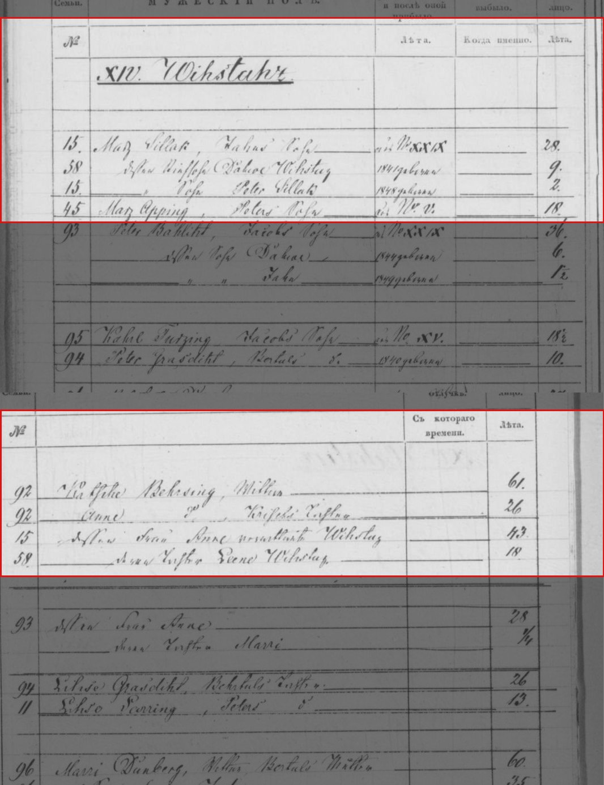
Jaunrauna estate revision 1850, farm XIV Wihstuz, family 15. . The page, large, and the untouched original. - Jelgava: baznīcas ziņas. Zemgale (Jelgava). Latvian National Library, periodika.lv. Zemgale, Nr.91 (21.04.1942), p. 7. original at periodika.lv. Cited for Aina Modrīte Sirlaka, Alberts Jurciņš.Archived copy held: 2 files (JSON), fetched 25 Oct 2026.
- Lielauce birth, marriage, and death register 1889, births no. 84. Lielauces luterāņu draudzes baznīcas grāmatas, LVVA f. 235, apr. 6, l. 635. Latvian State Historical Archives (LVVA), via Raduraksti. LVVA f. 235, apr. 6, l. 635, img 9L, no. 84. LVVA f. 235, apr. 6, l. 635, image 9. original at raduraksti.arhivi.lv. Archived copy held: 2 files (image).
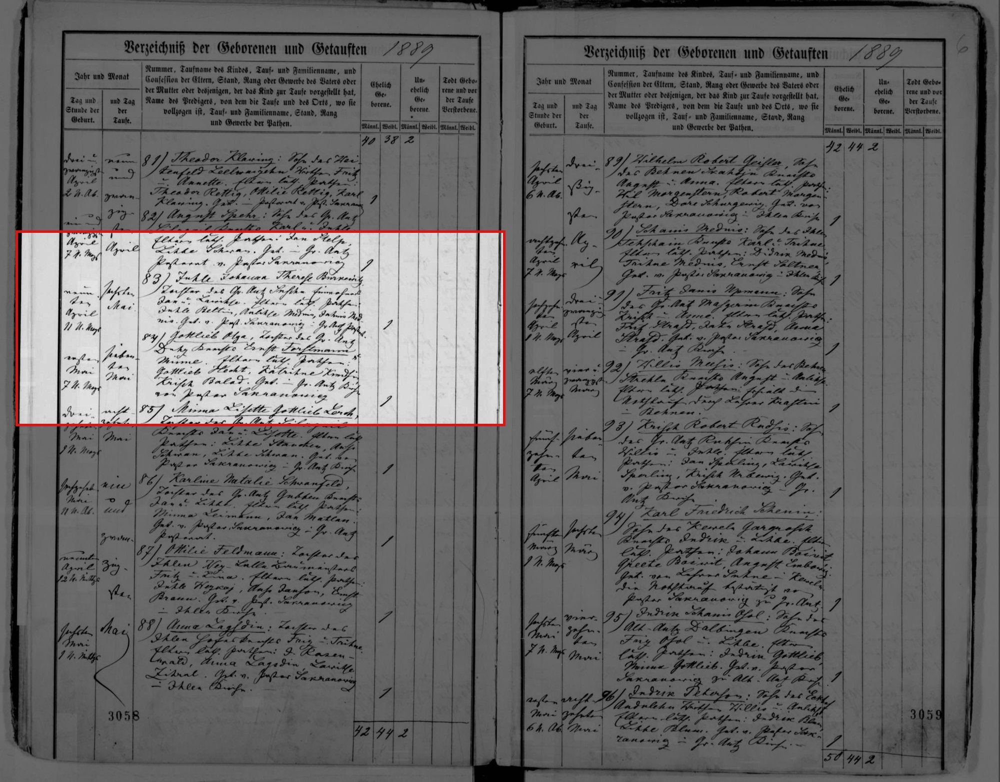
Lielauce birth, marriage, and death register 1889, births no. 84. . The page, large, and the untouched original. - Lielauce marriages 1902, summary list no. 9. Baznīcu grāmatas — Lielauces (Gross-Autz) draudze, 1902 Dz L M. LVVA, via Raduraksti. LVVA f. 235, apr. 14, l. 194, image 17. LVVA f. 235, apr. 14, l. 194, image 17. original at raduraksti.arhivi.lv. Archived copy held: 6 files (JSON, image, table).
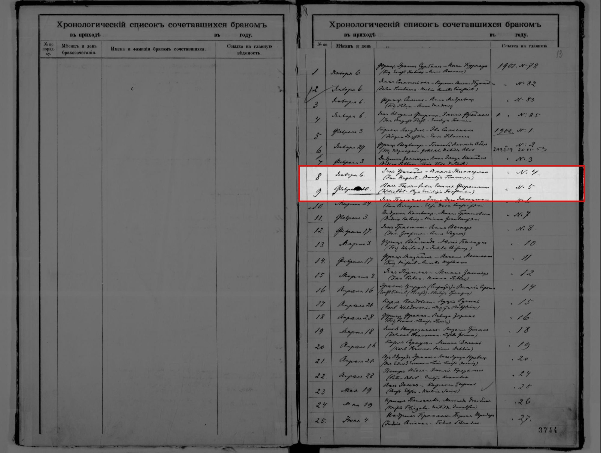
Lielauce marriages 1902, summary list no. 9. . The page, large, and the untouched original. - Lielauce marriages 1907, no. 63. Baznīcu grāmatas — Lielauces (Gross-Autz) draudze, 1906–1908. Latvian State Historical Archives (LVVA), via Raduraksti. LVVA f. 235, apr. 15, l. 229, image 57. LVVA f. 235, apr. 15, l. 229, image 57. original at raduraksti.arhivi.lv. Archived copy held: 6 files (JSON, image, table).
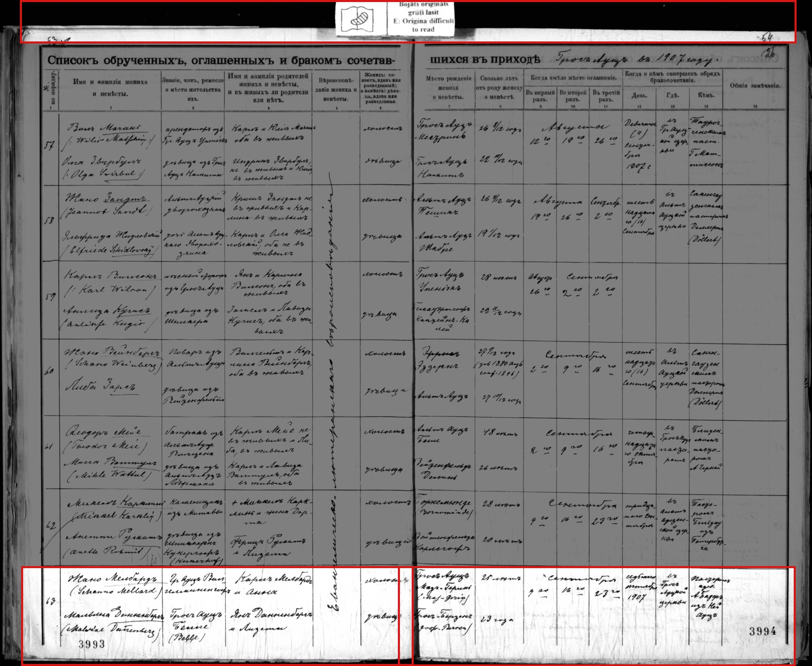
Lielauce marriages 1907, no. 63. . The page, large, and the untouched original. - Marriage (1911) and baptism of Elvīra Sirlaka (1912) at Rīga St Martin's, Torņakalns. Rīga St Martin's Lutheran parish registers (1911–1912) & My Life and Times, ¶6. LVVA Raduraksti & Elvīra Danenberga memoir. Cited for Emma Smukule.Archived copy held: 2 files (doc, eml).
Transcription we hold (1)
The first two years of my life were spent in Torņukalns (Tower Hill), a suburb of Rīga. My father, Mārtinš Sirlaks, and my mother Emma Smukulis were both born about 8 km from each other: my mother in Vecrauna (Old Rauna) and my father in Jaunrauna (New Rauna). … At first they both worked in menial jobs, but then my father opened a tavern while mother stayed at home as a housewife. When WWI started in 1914, they left Rīga to escape the anticipated disruptions and disturbances of war and went to Cēsis
- Priekuļi (Freudenberg) soul revision 1811, No. 1 Meschzeem Gesinde. Priekuļu (Freudenberg) muižas 1811., 1816., 1826., 1834. un 1850. g. revīzijas un to papildinājumi (112. lieta). Latvian State Historical Archives (LVVA), via Raduraksti. LVVA f. 199, apr. 1, l. 112, image 7 (p. 108v). LVVA f. 199, apr. 1, l. 112, image 7. original at raduraksti.arhivi.lv. Cited for Jānis Mežciems, Jēkabs Mežciems.Archived copy held: 2 files (image).
Transcription we hold (1)
No 1 Meschzeem Gesinde / Peter 1ster Wirth | 66 | Unvermögend zur Arbeit 8 J. | 82 / ... / x Jacob 2ter Wirth | 38 | — | 54 / deßen Söhne 1, Jahn | 9 | — | 25 / 2, Martz | 3 | — | 19 / 3, Jacob | ¼ | gestorben im Jahr 1800 | — / 4, David | — | nachher gebohren | 12 / 1te Sohn Jahn's Kind Martz | — | nachher gebohren | ½
Translation: No. 1 Meschzeem farm: Peter, 1st farmer, 66 [in 1795], unfit for work 8 yrs, 82 [in 1811] ... Jacob, 2nd farmer, 38 [in 1795], 54 [in 1811]; his sons: 1. Jahn, 9 -> 25; 2. Martz, 3 -> 19; 3. Jacob, ¼, died in 1800; 4. David, born since, 12; 1st son Jahn's child Martz, born since, ½.
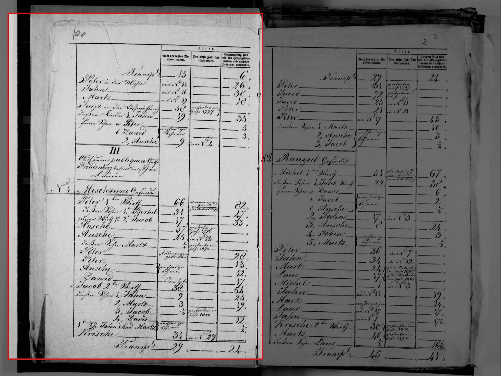
Priekuļi (Freudenberg) soul revision 1811, No. 1 Meschzeem Gesinde. . The page, large, and the untouched original. - Priekuļi (Freudenberg) soul revision 1811, No. 6 Gibboy Gesinde. Priekuļu (Freudenberg) muižas 1811., 1816., 1826., 1834. un 1850. g. revīzijas un to papildinājumi (112. lieta). Latvian State Historical Archives (LVVA), via Raduraksti. LVVA f. 199, apr. 1, l. 112, image 9 (p. 3v). LVVA f. 199, apr. 1, l. 112, image 9. original at raduraksti.arhivi.lv. Cited for Ansis Ģibols, Laurs Ģibols, Mārcis Gibboy, Pēteris Ģibols.Archived copy held: 2 files (image).
Transcription we hold (1)
No 6 Gibboy Gesinde / Ansche 1ster Wirth | 53 | gestorben im Jahr 1805 | — / deßen Söhne 1, Martz Wirth | 20 | — | 36 / ... / Laur | 46 | — | 62 / deßen Sohn Jahn | 6 | — | 22 / Peter | 30 | — | 46 / deßen Sohn Martz | — | nachher gebohren | 5
Translation: No. 6 Gibboy farm: Ansche, 1st farmer, 53 [in 1795], died in 1805; his sons: 1. Martz, farmer, 20 -> 36 ... Laur, 46 -> 62; his son Jahn, 6 -> 22; Peter, 30 [in 1795] -> 46 [in 1811]; his son Martz, born since, 5 [in 1811].
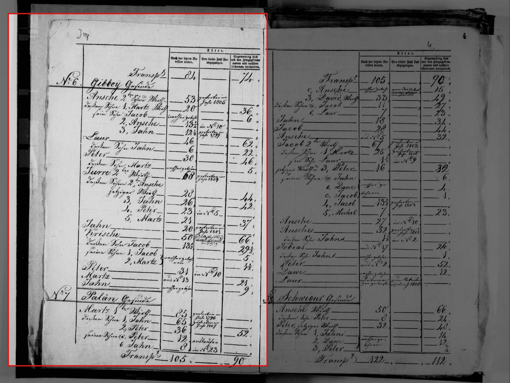
Priekuļi (Freudenberg) soul revision 1811, No. 6 Gibboy Gesinde. . The page, large, and the untouched original. - Priekuļi (Freudenberg) soul revision 1816, No. 19 Gibbain. Priekuļu (Freudenberg) muižas 1811., 1816., 1826., 1834. un 1850. g. revīzijas un to papildinājumi (112. lieta). Latvian State Historical Archives (LVVA), via Raduraksti. LVVA f. 199, apr. 1, l. 112, image 41 (ff. 35v–36r). LVVA f. 199, apr. 1, l. 112, image 41. original at raduraksti.arhivi.lv. Cited for Laurs Ģibols, Pēteris Ģibols.Archived copy held: 2 files (image).
Transcription we hold (1)
No 19 Gibbain / Wirth Marting Ansche Sohn | 36 | — | 40 / Marteng Sohn Jacob | 6 | — | 10 / Knecht Laure Ansche Sohn | 62 | — | 66 / Laure Sohn Jahn | 22 | — | 26 / Jahn Sohn Martze | neugebohren | ¼ / Knecht Peter Ansche Sohn | 46 | gestorben | —
Translation: No. 19 Gibbain [Ģiboli]: Farmer Marting, Ansche's son, 36 -> 40; Marting's son Jacob, 6 -> 10; farmhand Laure, Ansche's son, 62 -> 66; Laure's son Jahn, 22 -> 26; Jahn's son Martze, newborn, ¼; farmhand Peter, Ansche's son, 46 [in 1811], died.
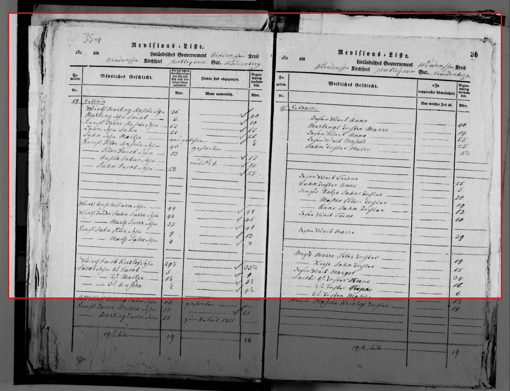
Priekuļi (Freudenberg) soul revision 1816, No. 19 Gibbain. . The page, large, and the untouched original. - Priekuļi (Freudenberg) soul revision 1816, No. 21 Schwigur. Priekuļu (Freudenberg) muižas 1811., 1816., 1826., 1834. un 1850. g. revīzijas un to papildinājumi (112. lieta). Latvian State Historical Archives (LVVA), via Raduraksti. LVVA f. 199, apr. 1, l. 112, image 43 (ff. 37v–38r). LVVA f. 199, apr. 1, l. 112, image 43. original at raduraksti.arhivi.lv. Cited for Mārcis Gibboy.Archived copy held: 2 files (image).
Transcription we hold (1)
No 21 Schwigur / Wirth Peter Jahn Sohn | 46 | — | 50 / ... / Knecht Martz Peters Sohn | 5 | — | 9
Translation: No. 21 Schwigur [Švīguļi]: Farmer Peter, Jahn's son, 46 -> 50 ... farmhand Martz, Peter's son, 5 [in 1811] -> 9 [in 1816].
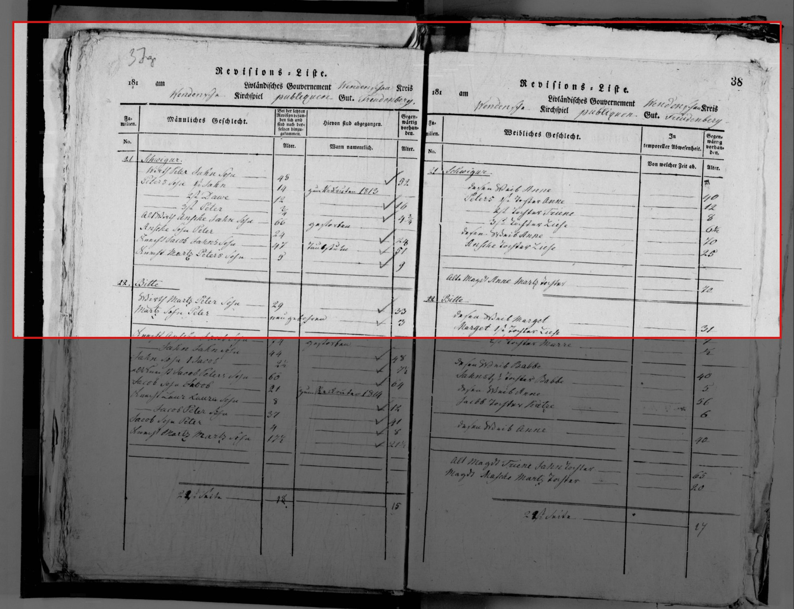
Priekuļi (Freudenberg) soul revision 1816, No. 21 Schwigur. . The page, large, and the untouched original. - Priekuļi (Freudenberg) soul revision 1834, I. Meschzeem, family 1. Priekuļu (Freudenberg) muižas 1811., 1816., 1826., 1834. un 1850. g. revīzijas un to papildinājumi (112. lieta). Latvian State Historical Archives (LVVA), via Raduraksti. LVVA f. 199, apr. 1, l. 112, image 117 (ff. 115v–116r). LVVA f. 199, apr. 1, l. 112, image 117. original at raduraksti.arhivi.lv. Cited for Anna Mežciema, Jānis Mežciems, Jēkabs Mežciems, Līze Mežciema, Maža Mežciema.Archived copy held: 2 files (image).
Transcription we hold (1)
1. | Jakob Meschzeem ehemals Wirth | 58 | 1832 gestorben | — / dessen Sohn 1 Jahn | 29 | 1833 gestorben | — / dessen Söhne 1 Marz | 6 | — | 24 / 2 Jahn | 2½ | — | 20½ / 2 Dawe | 16 | vide N XXVIII | — / 3 Jakob jetziger Wirth | 2½ | — | 20½ ‖ 1 | dessen Wittwe Masche | 57 / dessen Wittwe Lihse | 47 / dessen Frau Babbe | 22 / dessen Töchter 1 Mareet | 21½ / 2 Anne | 11
Translation: Family 1: Jakob Meschzeem, former farmer, 58 [in 1816], died in 1832; his widow Masche, 57. His 1st son Jahn, 29 [in 1816], died in 1833; his widow Lihse, 47. His [Jahn's] sons: 1. Marz, 6 -> 24 (his wife Babbe, 22); 2. Jahn, 2½ -> 20½; his [Jahn's] daughters: 1. Mareet, 21½; 2. Anne, 11. [Jakob Sr.'s sons:] 2. Dawe, 16, see No. XXVIII; 3. Jakob, current farmer, 2½ -> 20½.

Priekuļi (Freudenberg) soul revision 1834, I. Meschzeem, family 1. . The page, large, and the untouched original. - Priekuļi (Freudenberg) soul revision 1834, XVI. Pohding, family 28 (Marz Gibboi Wirth). Priekuļu (Freudenberg) muižas 1811., 1816., 1826., 1834. un 1850. g. revīzijas un to papildinājumi (112. lieta). Latvian State Historical Archives (LVVA), via Raduraksti. LVVA f. 199, apr. 1, l. 112, image 133 (ff. 131v–132r). LVVA f. 199, apr. 1, l. 112, image 133. original at raduraksti.arhivi.lv. Cited for Jānis Gibols, Mārcis Gibboy.Archived copy held: 2 files (image).
Transcription we hold (1)
28 | Marz Gibboi Wirth | — | aus N XXI | 27 / dessen Sohn Jahn | — | nachher geboren 1831 | 3 ‖ 28 | dessen Frau Marri | 43 / dessen Töchter 1 Trihne | 18¾ / 2 Anne | 15 / 3 Marri | 13 / 4 Lihse | 7 / 5 Mahde | 5 / 6 Kristine | ¼
Translation: Family 28: Marz Gibboi, farmer, from No. XXI, 27; his son Jahn, born after [in] 1831, 3. His wife Marri, 43; daughters: 1. Trihne, 18¾; 2. Anne, 15; 3. Marri, 13; 4. Lihse, 7; 5. Mahde, 5; 6. Kristine, ¼.
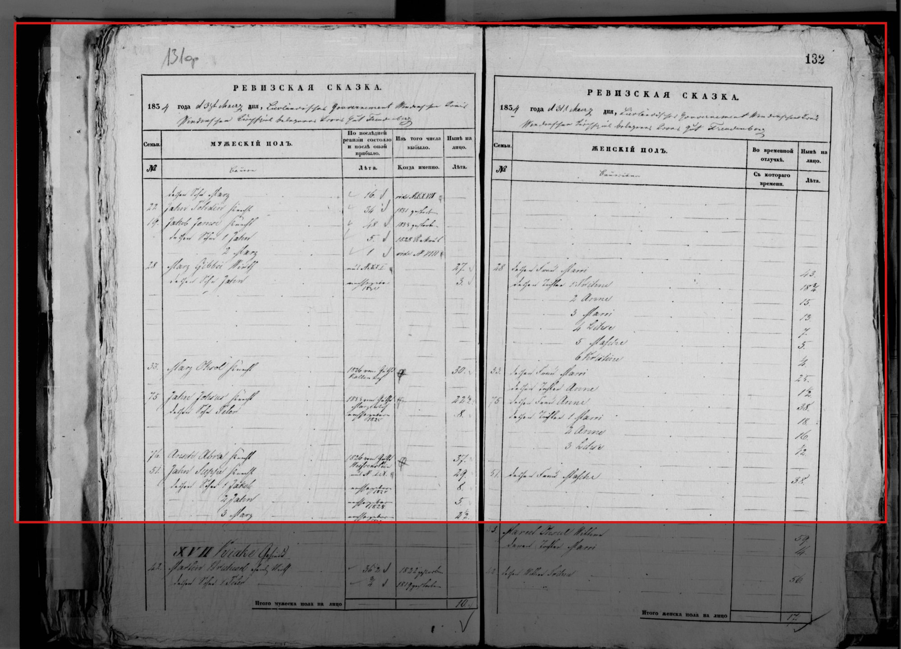
Priekuļi (Freudenberg) soul revision 1834, XVI. Pohding, family 28 (Marz Gibboi Wirth). . The page, large, and the untouched original. - Priekuļi (Freudenberg) soul revision 1834, XXI. Schwigur, family 28. Priekuļu (Freudenberg) muižas 1811., 1816., 1826., 1834. un 1850. g. revīzijas un to papildinājumi (112. lieta). Latvian State Historical Archives (LVVA), via Raduraksti. LVVA f. 199, apr. 1, l. 112, image 139 (ff. 137v–138r). LVVA f. 199, apr. 1, l. 112, image 139. original at raduraksti.arhivi.lv. Cited for Mārcis Gibboy.Archived copy held: 2 files (image).
Transcription we hold (1)
28. | Marz Gibboi Knecht | 9. | vide N XVI
Translation: Family 28: Marz Gibboi, farmhand, 9 [in 1816], see No. XVI [Pohding].
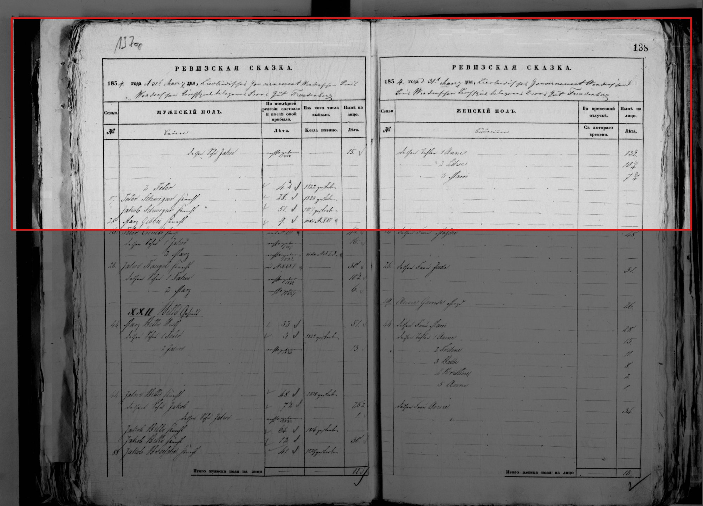
Priekuļi (Freudenberg) soul revision 1834, XXI. Schwigur, family 28. . The page, large, and the untouched original. - Priekuļi (Freudenberg) soul revision 1850, family 10 (Marz Gibboi). Priekuļu (Freudenberg) muižas 1811., 1816., 1826., 1834. un 1850. g. revīzijas un to papildinājumi (112. lieta). Latvian State Historical Archives (LVVA), via Raduraksti. LVVA f. 199, apr. 1, l. 112, image 291 (pp. 295v–296). LVVA f. 199, apr. 1, l. 112, image 291. original at raduraksti.arhivi.lv. Cited for Anna Mežciema, Mārcis, Mārcis Gibboy.Archived copy held: 6 files (JSON, image, table).
Transcription we hold (1)
10. | Marz Gibboi, Knecht[?] | aus No. XVI | 43. / dessen Sohn Marz | 1849 nachgeboren | 1½. ‖ 10. | dessen Frau Anne Gibboi | 31.
Translation: Family 10: Mārcis Gibboi, farmhand[?], from farm XVI, 43; his son Mārcis, born 1849, 1½. His wife Anne Gibboi, 31.
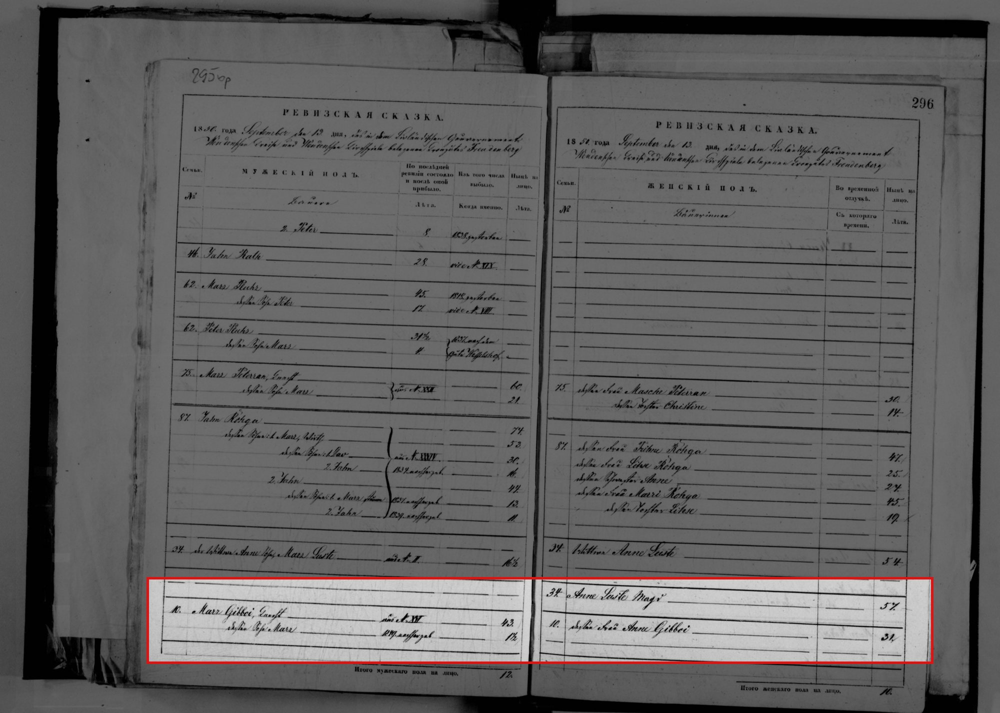
Priekuļi (Freudenberg) soul revision 1850, family 10 (Marz Gibboi). . The page, large, and the untouched original. - Priekuļi (Freudenberg) soul revision 1857, Luste farm (XIV), family 10 (Marz Gibboi). Priekuļu (Freudenberg) muižas 1857. g. revīzija un tās papildinājumi (77-14-344. lieta). Latvian State Historical Archives (LVVA), via Raduraksti. LVVA f. 77, apr. 14, l. 344, image 27 (p. 22v). LVVA f. 77, apr. 14, l. 344, image 27. original at raduraksti.arhivi.lv. Cited for Mārcis.Archived copy held: 6 files (JSON, image, table).
Transcription we hold (1)
10 | Marz Gibboi | 43. | vide No. VI. / dessen Sohn Marz | 1½ | starb 1853.
Translation: Family 10: Mārcis Gibboi, 43 [at the last revision], see no. VI; his son Mārcis, 1½, died 1853.
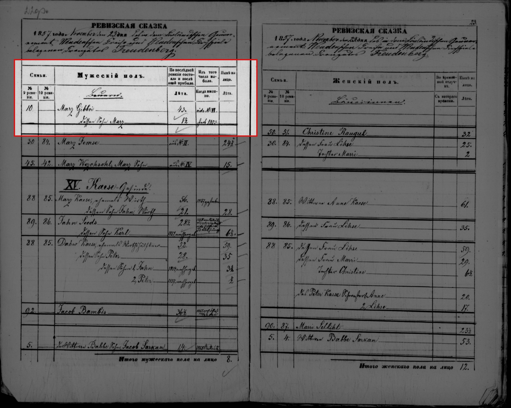
Priekuļi (Freudenberg) soul revision 1857, Luste farm (XIV), family 10 (Marz Gibboi). . The page, large, and the untouched original. - Priekuļi (Freudenberg) soul revision 1857, Rauguļi farm, family 10/58 (Marz Gibboi). Priekuļu (Freudenberg) muižas 1857. g. revīzija un tās papildinājumi (77-14-344. lieta). Latvian State Historical Archives (LVVA), via Raduraksti. LVVA f. 77, apr. 14, l. 344, image 16 (pp. 11v–12). LVVA f. 77, apr. 14, l. 344, image 16. original at raduraksti.arhivi.lv. Cited for Anna Mežciema, Kristīne Gibboy, Marija Gibboja, Mārcis Gibboy.Archived copy held: 6 files (JSON, image, table).
Transcription we hold (1)
10. | 58. | Marz Gibboi | aus No. XIV. | 50. ‖ 10. | 58. | dessen Frau Anne | 38. / Töchter 1. Marri | 4. / 2. Christine | 2.
Translation: Family 10 (9th rev.) / 58 (10th rev.): Mārcis Gibboi, from farm no. XIV [at the last revision], now 50. His wife Anne, 38; daughters 1. Marija, 4; 2. Kristīne, 2.
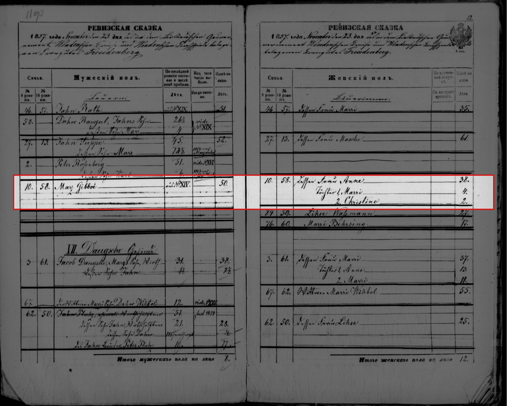
Priekuļi (Freudenberg) soul revision 1857, Rauguļi farm, family 10/58 (Marz Gibboi). . The page, large, and the untouched original. - Priekuļi (Freudenberg) soul revision 1857, XIX Gibboi farm, family 10/58. Priekuļu (Freudenberg) muižas 1857. g. revīzija un tās papildinājumi (77-14-344. lieta). Latvian State Historical Archives (LVVA), via Raduraksti. LVVA f. 77, apr. 14, l. 344, image 32. LVVA f. 77, apr. 14, l. 344, image 32. original at raduraksti.arhivi.lv. Cited for Anna, Anna Balodis, Dāvis Ģibols, Jānis Ģibols, Mārcis Ģibols.Archived copy held: 6 files (JSON, image, table).
Transcriptions we hold (4)
XIX. Gibboi-Gesinde. | 10. | 58. | Jahns Söhne 1. Marz Gibboi Wirth | 34½. | 41½. / 2. Jahn Wirthsgehülfe[?] | 28. | 35. / dessen Sohn Marz | 1855 nachgeboren | 2. / 3. Dahw | 25½.
Translation: Farm XIX Ģiboļi. Family 10/58: Jahn's sons 1. Mārcis Gibboi, farmer, 34½ then, 41½ now; 2. Jānis, farmer's assistant[?], 28, 35; his son Mārcis, born 1855, 2; 3. Dāvis, 25½.
2. Jahn Wirthsgehülfe[?] | 28. | 35. / dessen Sohn Marz | 1855 nachgeboren | 2. ‖ dessen Frau Anne | 21. / Tochter Anne | 5.
Translation: 2. Jānis, farmer's assistant[?], 28 then, 35 now; his son Mārcis, born 1855, 2. His wife Anne, 21; daughter Anne, 5.
XIX. Gibboi-Gesinde. | 10. | 58. | Jahns Söhne 1. Marz Gibboi Wirth | 34½. | 41½. ‖ 10. | 58. | dessen Frau Anne | 38. / dessen Frau Anne | 21. / Tochter Anne | 5.
Translation: Farm XIX Ģiboļi. Family 10/58: Jahn's sons 1. Mārcis Gibboi, farmer, 34½ then, 41½ now. His wife Anne, 38; [Jahn's] wife Anne, 21; daughter Anne, 5.
Jahns Söhne 1. Marz Gibboi Wirth | 34½. | 41½. / 2. Jahn Wirthsgehülfe[?] | 28. | 35.
Translation: Jahn's sons 1. Mārcis Gibboi, farmer, 34½, 41½; 2. Jānis, farmer's assistant[?], 28, 35.
Priekuļi (Freudenberg) soul revision 1857, XIX Gibboi farm, family 10/58. . The page, large, and the untouched original. - Priekuļi (Freudenberg) surname revision 1826, No. 1 Meschzeem (surname XIV Meschzeem). Priekuļu (Freudenberg) muižas 1811., 1816., 1826., 1834. un 1850. g. revīzijas un to papildinājumi (112. lieta). Latvian State Historical Archives (LVVA), via Raduraksti. LVVA f. 199, apr. 1, l. 112, image 54 (ff. 49v–50r). LVVA f. 199, apr. 1, l. 112, image 54. original at raduraksti.arhivi.lv. Cited for Anna Mežciema, Jānis, Jānis Mežciems, Jēkabs Mežciems, Līze Mežciema, Maža Mežciema, Mārcis Gibboy.Archived copy held: 6 files (image).
Transcriptions we hold (3)
16. Pohding / Jacob Jahns Sohn Wirth | 29 | 1825 gestorben | — ‖ XXXI Pohdin | Marri deßen Wittwe s. unten verheirathet an Marz Gibboi / ... / VII Gibboi | Marz, Peters Sohn Wirth aus No 21 | — | 19 ‖ VII Gibboi | Marri deßen Wb, sieh oben Wittwe des Jacob | 35
Translation: No. 16 Pohding [Podiņi]: Jacob, Jahn's son, farmer, 29 [in 1816], died in 1825; [surname XXXI Pohdin] Marri, his widow, see below married to Marz Gibboi ... [surname VII Gibboi] Marz, Peter's son, farmer, from No. 21, 19; [surname VII Gibboi] Marri, his wife, see above widow of Jacob, 35.
21 Schwigur / ... / VII Gibboi | Marz, Peters Sohn s. in No 16 | 9 | —
Translation: No. 21 Schwigur [Švīguļi]: ... [surname] VII Gibboi: Marz, Peter's son, see in No. 16 [Pohding], 9 [in 1816].
XIV Meschzeem | Jacob Jahns Sohn Wirth | 58 | — | 68 / XIV Meschzeem | Jahn des Jacobs 1te Sohn | 30 | — | 40 / Marz des Jahns 1te Sohn | 6 | — | 16 / Jahn ,, 2te Sohn | 2½ | — | 12½ ‖ XIV Meschzeem | Masche deßen Weib | 50 / XIV Meschzeem | Liese deßen Weib | 40 / Mareet ihre 1te Tochter | 14½ / Anne ihre 2te Tochter | 4
Translation: Surname XIV Meschzeem: Jacob, Jahn's son, farmer, 58 -> 68; his wife Masche, 50. Jahn, Jacob's 1st son, 30 -> 40; his wife Liese, 40; Jahn's 1st son Marz, 6 -> 16; 2nd son Jahn, 2½ -> 12½; their 1st daughter Mareet, 14½; their 2nd daughter Anne, 4.

Priekuļi (Freudenberg) surname revision 1826, No. 1 Meschzeem (surname XIV Meschzeem). . The page, large, and the untouched original. 
Priekuļi (Freudenberg) surname revision 1826, No. 1 Meschzeem (surname XIV Meschzeem). . The page, large, and the untouched original. 
Priekuļi (Freudenberg) surname revision 1826, No. 1 Meschzeem (surname XIV Meschzeem). . The page, large, and the untouched original. - Priekuļi soul revision — Farm XVI Podiņi (transferred from Farm XXI Žvīguri). Priekuļi (Freudenberg) soul revisions 1816 & 1826 (voronins-tree.ged). LVVA Raduraksti (via Raimonds Voroņins MyHeritage tree). Cited for Pēteris Ģibols.Archived copy held: 1 file (ged).
Transcription we hold (1)
Dzīvo Podiņu mājās Nr. 16 1826.gadā … 1826.gadā Mārcis (19) ar sievu Mariju (35) dzīvo 16 Podiņu mājās, Priekuļos, atnācis no XXI Žvīguru mājām (iepriekšējā Dvēseļu revīzijā).
- Rauna (Schloß Ronneburg) soul revision 1782, 118. Thewenen. Raunas pilsmuižas (Schloß Ronneburg) 1782., 1795., 1816., 1834. un 1850. g. revīzijas (375. lieta). Latvian State Historical Archives (LVVA), via Raduraksti. LVVA f. 199, apr. 1, l. 375, image 36. LVVA f. 199, apr. 1, l. 375, image 36. original at raduraksti.arhivi.lv. Archived copy held: 2 files (image).
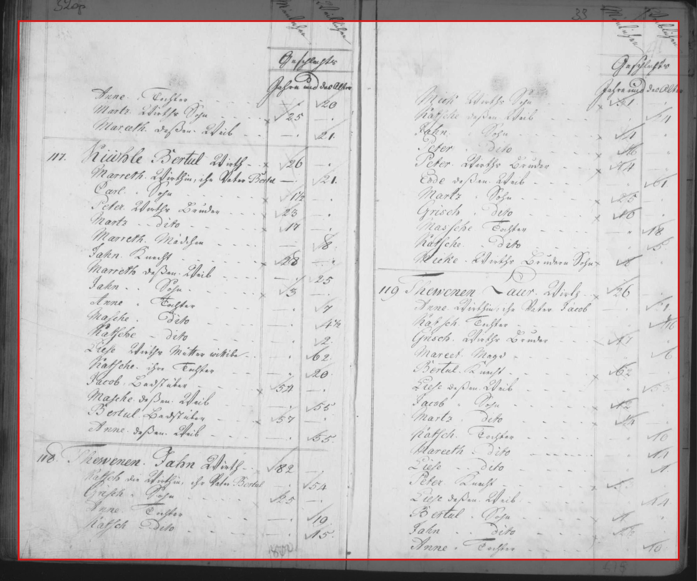
Rauna (Schloß Ronneburg) soul revision 1782, 118. Thewenen. . The page, large, and the untouched original. - Rauna (Schloß Ronneburg) soul revision 1816, 107. Tewenen. Raunas pilsmuižas (Schloß Ronneburg) 1782., 1795., 1816., 1834. un 1850. g. revīzijas (375. lieta). Latvian State Historical Archives (LVVA), via Raduraksti. LVVA f. 199, apr. 1, l. 375, image 101 (ff. 96v–97r). LVVA f. 199, apr. 1, l. 375, image 101. original at raduraksti.arhivi.lv. Archived copy held: 2 files (image).
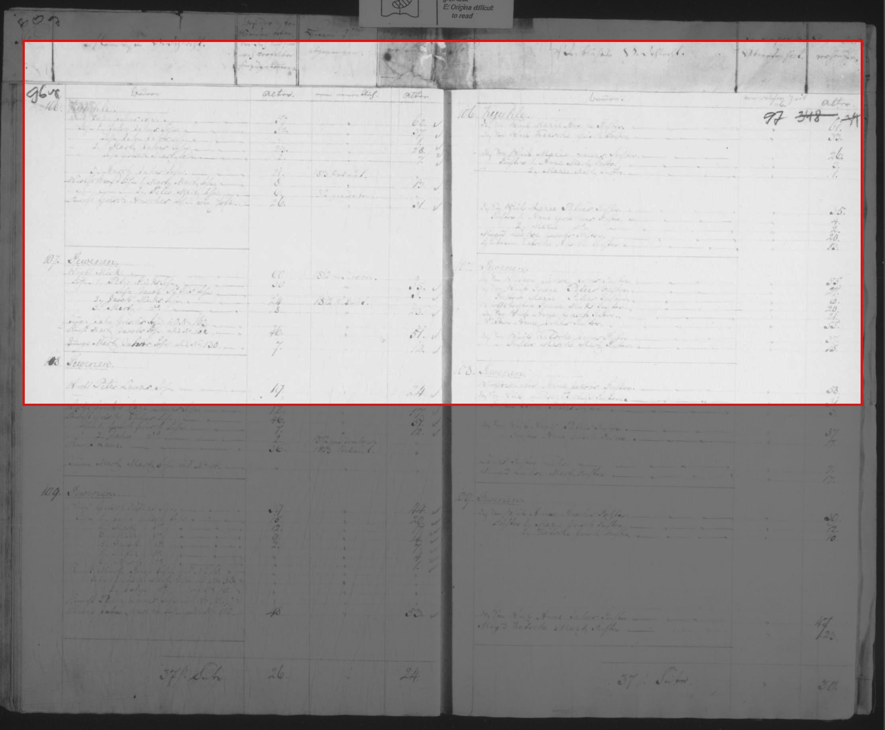
Rauna (Schloß Ronneburg) soul revision 1816, 107. Tewenen. . The page, large, and the untouched original. - Rauna (Schloß Ronneburg) soul revision 1834, CVII. Tewenen, family 14 (Smukkul). Raunas pilsmuižas (Schloß Ronneburg) 1782., 1795., 1816., 1834. un 1850. g. revīzijas (375. lieta). Latvian State Historical Archives (LVVA), via Raduraksti. LVVA f. 199, apr. 1, l. 375, image 233. LVVA f. 199, apr. 1, l. 375, image 233. original at raduraksti.arhivi.lv. Archived copy held: 2 files (image).
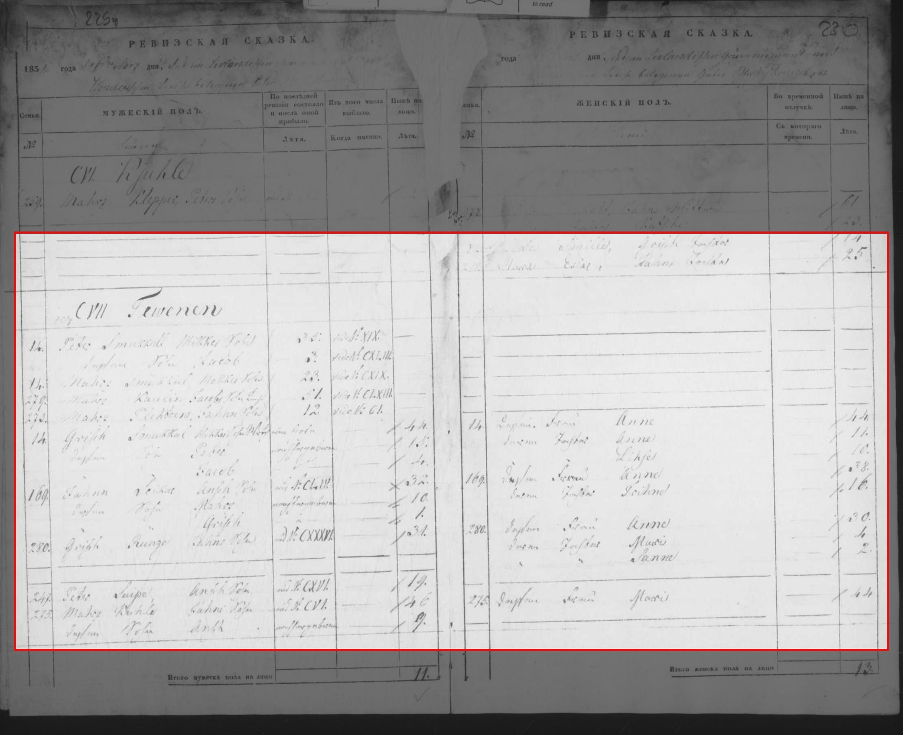
Rauna (Schloß Ronneburg) soul revision 1834, CVII. Tewenen, family 14 (Smukkul). . The page, large, and the untouched original. - Rauna (Schloß Ronneburg) soul revision 1850, CVII. Tewenen, family 94 (Smukkul). Raunas pilsmuižas (Schloß Ronneburg) 1782., 1795., 1816., 1834. un 1850. g. revīzijas (375. lieta). Latvian State Historical Archives (LVVA), via Raduraksti. LVVA f. 199, apr. 1, l. 375, image 440. LVVA f. 199, apr. 1, l. 375, image 440. original at raduraksti.arhivi.lv. Archived copy held: 2 files (image).
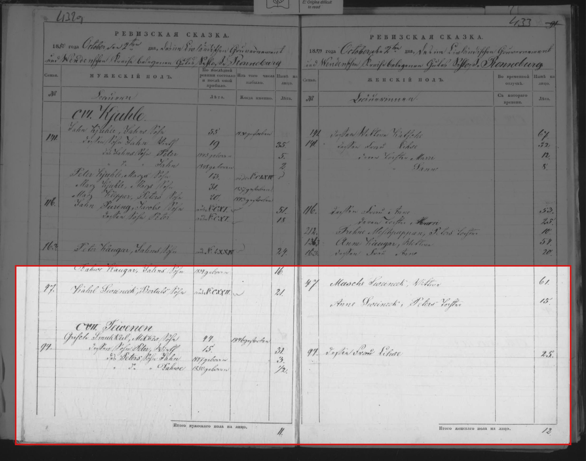
Rauna (Schloß Ronneburg) soul revision 1850, CVII. Tewenen, family 94 (Smukkul). . The page, large, and the untouched original. - Rauna (Schloß Ronneburg) soul revision 1850, surname index S (Smukkul). Raunas pilsmuižas (Schloß Ronneburg) 1782., 1795., 1816., 1834. un 1850. g. revīzijas (375. lieta). Latvian State Historical Archives (LVVA), via Raduraksti. LVVA f. 199, apr. 1, l. 375, image 302. LVVA f. 199, apr. 1, l. 375, image 302. original at raduraksti.arhivi.lv. Archived copy held: 4 files (image).
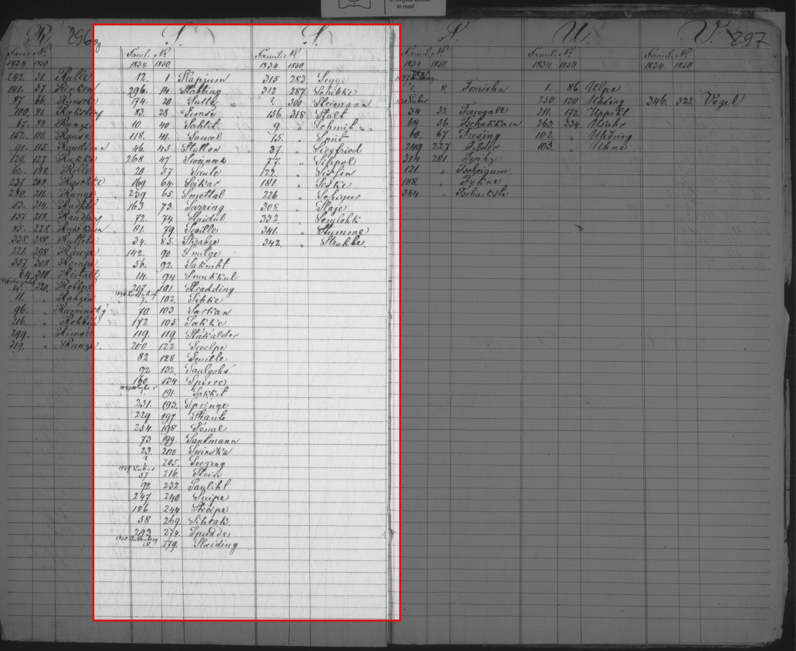
Rauna (Schloß Ronneburg) soul revision 1850, surname index S (Smukkul). . The page, large, and the untouched original. 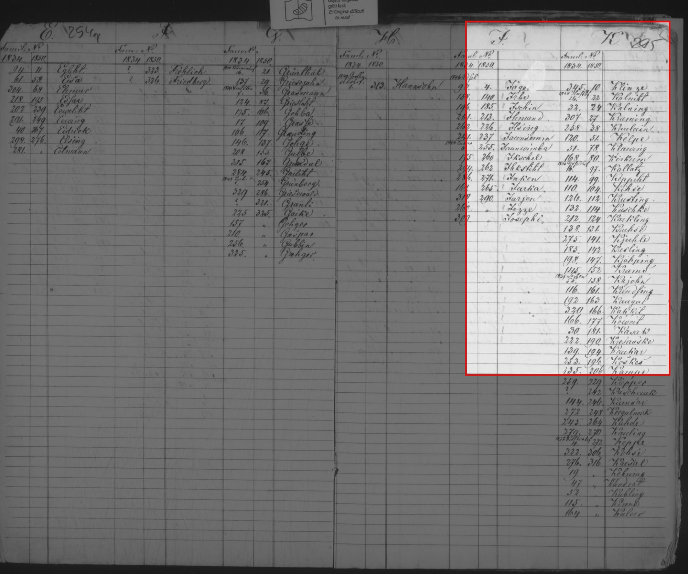
Rauna (Schloß Ronneburg) soul revision 1850, surname index S (Smukkul). . The page, large, and the untouched original. - Rauna (Schloß Ronneburg) soul revision 1850, XLII. Lappul, family 158 (Mikkel Kajohn). Raunas pilsmuižas (Schloß Ronneburg) 1782., 1795., 1816., 1834. un 1850. g. revīzijas (375. lieta). Latvian State Historical Archives (LVVA), via Raduraksti. LVVA f. 199, apr. 1, l. 375, image 387. LVVA f. 199, apr. 1, l. 375, image 387. original at raduraksti.arhivi.lv. Archived copy held: 2 files (image).
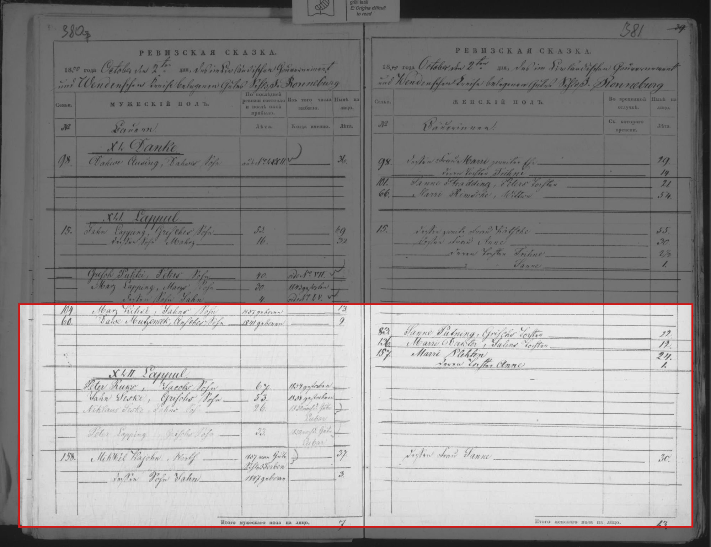
Rauna (Schloß Ronneburg) soul revision 1850, XLII. Lappul, family 158 (Mikkel Kajohn). . The page, large, and the untouched original. - Rauna (Schloß Ronneburg) soul revision 1858, No. 107 Tehwenen Smukkul, family 94/184. Raunas pilsmuižas (Schloß Ronneburg) zemnieku 1858. g. revīzija un tās papildinājumi (77-14-325). Latvian State Historical Archives (LVVA), via Raduraksti. LVVA f. 77, apr. 14, l. 325, image 118 (ff. 113v–114r). LVVA f. 77, apr. 14, l. 325, image 118. original at raduraksti.arhivi.lv. Archived copy held: 6 files (image).
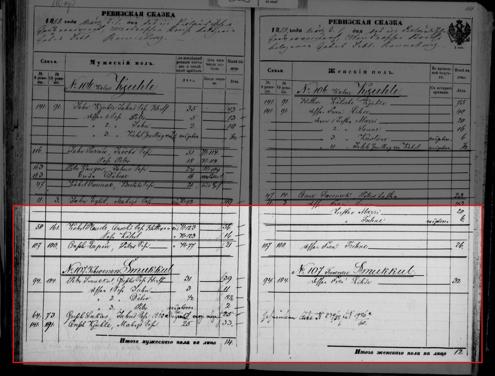
Rauna (Schloß Ronneburg) soul revision 1858, No. 107 Tehwenen Smukkul, family 94/184. . The page, large, and the untouched original. Rauna (Schloß Ronneburg) soul revision 1858, No. 107 Tehwenen Smukkul, family 94/184. . The page, large, and the untouched original. 
Rauna (Schloß Ronneburg) soul revision 1858, No. 107 Tehwenen Smukkul, family 94/184. . The page, large, and the untouched original. - Rauna 1888 baptism no. 132, Jahnis Karniht. Rauna Lutheran parish births 1877–1891, LVVA f. 235, apr. 7, l. 517, image 391R. LVVA Raduraksti. Cited for Kristīne Gibboy.Archived copy held: 2 files (image).
Transcription we hold (1)
132. Neuhof, Lj. Wihstuz / Jahnis Karniht. / Elt. Maurer: Jahn Karnicht u. Frau Kristine gb. Gibboi. beide lutherisch / Pth. Jg Reinwald Sirlak / Wthin Anna Sirlak / Ww Anna Blizzan. / Get. vom K.V. Sirlak im Hause
Rauna 1888 baptism no. 132, Jahnis Karniht. . The page, large, and the untouched original. - Rauna baptisms 1884 no. 315. Baznīcu grāmatas — Raunas (Ronneburg) draudze. LVVA, via Raduraksti. LVVA f. 235, apr. 7, l. 517, image 271 (right page). LVVA f. 235, apr. 7, l. 517, image 271. original at raduraksti.arhivi.lv. Archived copy held: 8 files (JSON, image, table, web page).
Rauna baptisms 1884 no. 315. . The page, large, and the untouched original. - Rauna baptisms 1890, no. 109. Baznīcu grāmatas — Raunas (Ronneburg) draudze. LVVA, via Raduraksti. LVVA f. 235, apr. 7, l. 517, image 452. LVVA f. 235, apr. 7, l. 517, image 452. original at raduraksti.arhivi.lv. Cited for Minna Sirlaka.Archived copy held: 7 files (JSON, image, table, web page).
Transcription we hold (1)
109. Ronneb.-Neuhof, Wd.[?] Smurge. Emil Smurge. Elt. Wth Dahw Smurge u. d. Fr. Minna geb. Sirlak. beide lutherisch. Pth. Jg. Reinhold Sirlak, Wth Jahn Sirlak, Fr.[?] Karline Grundul[?]
Translation: No. 109. Ronneburg-Neuhof, Smurge farm: Emil Smurge. Parents: farmer Dāvis Smurge and wife Minna née Sirlak. Godparents: bachelor Reinhold Sirlak, farmer Jahn Sirlak, Mrs[?] Karline Grundul[?]
Rauna baptisms 1890, no. 109. . The page, large, and the untouched original. - Rauna baptisms 1890, no. 109. Baznīcu grāmatas — Raunas (Ronneburg) draudze. LVVA, via Raduraksti. LVVA f. 235, apr. 7, l. 517, image 452. LVVA f. 235, apr. 7, l. 517, image 452. original at raduraksti.arhivi.lv. Archived copy held: 7 files (JSON, image, table, web page).
Rauna baptisms 1890, no. 109. . The page, large, and the untouched original. - Rauna birth register 1849, entry no. 30 (son of Mikkel Kaio × Sanne). Raunas ev. lut. draudzes 1841.–1850. g. dzimušo un kristīto reģistrs (235-7-513). Latvian State Historical Archives (LVVA), via Raduraksti. LVVA f. 235, apr. 7, l. 513, image 203, 1849 no. 30. LVVA f. 235, apr. 7, l. 513, image 203. original at raduraksti.arhivi.lv. Archived copy held: 2 files (image).
Rauna birth register 1849, entry no. 30 (son of Mikkel Kaio × Sanne). . The page, large, and the untouched original. - Rauna birth register 1850, entry no. 48 (Mahrz Kajohn). Raunas ev. lut. draudzes 1841.–1850. g. dzimušo un kristīto reģistrs (235-7-513). Latvian State Historical Archives (LVVA), via Raduraksti. LVVA f. 235, apr. 7, l. 513, image 232, 1850 no. 48. LVVA f. 235, apr. 7, l. 513, image 232. original at raduraksti.arhivi.lv.
- Rauna birth register 1851, entry no. 146 (Trihne Kaio). Raunas ev. lut. draudzes 1851.–1856. g. dzimušo un kristīto reģistrs (235-7-514). Latvian State Historical Archives (LVVA), via Raduraksti. LVVA f. 235, apr. 7, l. 514, image 23 (p. 20), 1851 no. 146. LVVA f. 235, apr. 7, l. 514, image 23. original at raduraksti.arhivi.lv. Archived copy held: 2 files (image).
Rauna birth register 1851, entry no. 146 (Trihne Kaio). . The page, large, and the untouched original. - Rauna births (235/7/517), 1884 deaths (235/7/518), and 1874–1885 marriages (235/4/2036–2046, 235/7/518–519). Rauna Latvian congregation registers 1874–1891. LVVA, via Raduraksti. LVVA f. 235, apr. 4, l. 2036–2046; apr. 7, l. 517–519. LVVA f. 235, apr. 4, l. 2036, image ?. original at raduraksti.arhivi.lv.
- Rauna births 1886 no. 33. Rauna Lutheran parish, Latvian congregation, births 1877–1891. Latvian State Historical Archives (LVVA), via Raduraksti. LVVA f. 235, apr. 7, l. 517, img 311 (right page). LVVA f. 235, apr. 7, l. 517, image 311. original at raduraksti.arhivi.lv. Cited for Dāvis Smukuls, Emma Smukule, Marija Kajone.Archived copy held: 7 files (JSON, image, table).
Transcriptions we hold (3)
1885 December fünf u. zwanzig[sten] abends 9 U. | zweiten | 33 Lubar, Lj. Luhzmann[?] / Emma Smukkul / Elt. Kn. Dahw Smukkul u. d. Marie geb. Kahjon, beide lutherisch / Tf. Md. Juhle Meeschit[?], Md. Leene Leepin[?], Jg. August Meeschit[?]
Translation: 1885 December twenty-fifth, 9 in the evening | [baptised on the] second | No. 33, Lubar[?], [farm] Luhzmann[?] / Emma Smukkul / parents: farmhand (Knecht) Dahw Smukkul and his wife Marie née Kahjon, both Lutheran / godparents: maid Juhle Meeschit[?], maid Leene Leepin[?], young man August Meeschit[?]
Elt. Kn. Dahw Smukkul u. d. Marie geb. Kahjon
Translation: parents: farmhand Dahw Smukkul and his wife Marie née Kahjon
Marie geb. Kahjon
Translation: Marie née Kahjon

Rauna births 1886 no. 33. . The page, large, and the untouched original. 
Rauna births 1886 no. 33. . The page, large, and the untouched original. - Rauna births 1887 no. 1. Rauna Latvian congregation, births 1877–Aug 1891. LVVA, via Raduraksti. LVVA f. 235, apr. 7, l. 517, img 344 (left page). LVVA f. 235, apr. 7, l. 517, image 344. original at raduraksti.arhivi.lv. Archived copy held: 2 files (image).
Rauna births 1887 no. 1. . The page, large, and the untouched original. - Rauna births 1887 no. 136 and 1891 no. 55. Rauna Latvian congregation, births 1877–Aug 1891. LVVA, via Raduraksti. LVVA f. 235, apr. 7, l. 517, img 357 (left) and img 478 (right). LVVA f. 235, apr. 7, l. 517, image 357. original at raduraksti.arhivi.lv. Archived copy held: 4 files (image).
Rauna births 1887 no. 136 and 1891 no. 55. . The page, large, and the untouched original. Rauna births 1887 no. 136 and 1891 no. 55. . The page, large, and the untouched original. - Rauna births 1887 no. 179. Rauna Latvian congregation, births 1877–Aug 1891. LVVA, via Raduraksti. LVVA f. 235, apr. 7, l. 517, img 361 (right page). LVVA f. 235, apr. 7, l. 517, image 361. original at raduraksti.arhivi.lv. Archived copy held: 2 files (image).
Rauna births 1887 no. 179. . The page, large, and the untouched original. - Rauna births 1887–1891. Rauna Latvian congregation, births 1877–Aug 1891. LVVA, via Raduraksti. LVVA f. 235, apr. 7, l. 517, imgs 344–361, 407–435, 463–481. LVVA f. 235, apr. 7, l. 517, image 344–361. original at raduraksti.arhivi.lv. Archived copy held: 2 files (image).
Rauna births 1887–1891. . The page, large, and the untouched original. - Rauna births 1889 no. 243. Rauna Latvian congregation, births 1877–Aug 1891. LVVA, via Raduraksti. LVVA f. 235, apr. 7, l. 517, img 432 (right page). LVVA f. 235, apr. 7, l. 517, image 432. original at raduraksti.arhivi.lv. Cited for Anna Smukule.Archived copy held: 2 files (image).
Transcription we hold (1)
September, dritten, morgens 2 U. | achten. | 243. Ronneburg, Lappul. Anna Smukkul. Elt. Kn. Dahw Smukkul u. W. Mari gb. Kahjon, beide lutherisch. Pth. Mch. Karline Kahjon, Jg. Jahn Kahjon, W. Mari Meesiht. Get. v. Pastor Dsirne in der Kirche.
Translation: Born 3 September, 2 a.m.; baptised 8th. No. 243. Rauna, Lapuļi. Anna Smukkul. Parents: farmhand Dāvis Smukkul and wife Mari née Kahjon, both Lutheran. Godparents: maiden Karlīne Kahjon, bachelor Jānis Kahjon, wife Mari Meesiht. Baptised by Pastor Dsirne in the church.
Rauna births 1889 no. 243. . The page, large, and the untouched original. - Rauna births 1890 no. 292. Rauna Latvian congregation, births 1877–Aug 1891. LVVA, via Raduraksti. LVVA f. 235, apr. 7, l. 517, img 471 (left page). LVVA f. 235, apr. 7, l. 517, image 471. original at raduraksti.arhivi.lv. Archived copy held: 2 files (image).
Rauna births 1890 no. 292. . The page, large, and the untouched original. - Rauna deaths 1884 no. 126. Rauna Latvian and German congregations, 1884 marriages and deaths (duplicate). LVVA, via Raduraksti. LVVA f. 235, apr. 7, l. 518, img 17. LVVA f. 235, apr. 7, l. 518, image 17. original at raduraksti.arhivi.lv. Archived copy held: 7 files (JSON, image, table, web page).
Rauna deaths 1884 no. 126. . The page, large, and the untouched original. - Rauna Latvian congregation births and baptisms 1877–1891, 1883 no. 324. Baznīcu grāmatas — Raunas (Ronneburg) draudze. Latvian State Historical Archives (LVVA), via Raduraksti. LVVA f. 235, apr. 7, l. 517, image 239 (right page). LVVA f. 235, apr. 7, l. 517, image 239. original at raduraksti.arhivi.lv. Cited for Mārtiņš Vilhelms Sirlaks.Archived copy held: 8 files (JSON, image, table, web page).
Transcription we hold (1)
October, dreißigsten, nachmittags 5 Uhr | sechs u. zwanzigsten | 324. Neuhof, Lj. Wihstuz. Martin Wilhelm Sirlak. Elt. Wth Peter Sirlak u. d. Marie geb. Gibboy, beide lutherisch. Pth. Wth Dahw Bitte, Wth Kahrl Sirnis, Md. Kristine Gibboy. Get. vom Past. […] in d. Kirche.
Translation: Born 30 October, 5 p.m.; baptised the 26th [December]. No. 324. Neuhof, Lower Vīstuči: Martin Wilhelm Sirlak. Parents: farmer Peter Sirlak and his wife Marie née Gibboy, both Lutheran. Godparents: farmer Dahw Bitte, farmer Kahrl Sirnis, maiden Kristine Gibboy. Baptised by Pastor […] in church.
Rauna Latvian congregation births and baptisms 1877–1891, 1883 no. 324. . The page, large, and the untouched original. - Rauna Latvian congregation births and baptisms 1877–1891, 1886 no. 134. Baznīcu grāmatas — Raunas (Ronneburg) draudze. LVVA, via Raduraksti. LVVA f. 235, apr. 7, l. 517, image 322 (right page, folio 314). LVVA f. 235, apr. 7, l. 517, image 322. original at raduraksti.arhivi.lv. Cited for Dāvis Sirlaks.Archived copy held: 7 files (JSON, image, table, web page).
Transcription we hold (1)
April, vierten, nachmittags 3 U. | April dreizehnten | 134 Neuhof, Lj. Wihstuz. Dawid Sirlak. Elt. Wth Peter Sirlak u. d. Fr. Marie geb. Gibboy, beide lutherisch. Pth. Wth Dahw Bitte, Wth Mahrz Sirnis u. d. Fr. Lihse. Get. vom Wirth Dahw Gudre im Hause, bestät. den 10 August v. Past. [Sirne?] in d. K.
Translation: Born 4 April, 3 p.m.; baptised 13 April. No. 134. Neuhof, Lower Vīstuči: Dawid Sirlak. Parents: farmer Peter Sirlak and his wife Marie née Gibboy, both Lutheran. Godparents: farmer Dahw Bitte; farmer Mahrz Sirnis and his wife Lihse. Baptised at home by farmer Dahw Gudre; confirmed 10 August by Pastor [Sirne?] in church.
Rauna Latvian congregation births and baptisms 1877–1891, 1886 no. 134. . The page, large, and the untouched original. - Raunas draudzes 1874. gada laulāto un mirušo reģistrs, 'Getraute im Jahre 1874', no. 3. Baznīcu grāmatas — Raunas (Ronneburg) draudze. LVVA, via Raduraksti. LVVA f. 235, apr. 4, l. 2036, image 4 (p. 41). LVVA f. 235, apr. 4, l. 2036, image 4. original at raduraksti.arhivi.lv. Cited for Marija Gibboja, Pēteris Sirlaks.
- Raunas latviešu draudzes 1840.–1850. gada jūnija dzimušo un kristīto reģistrs, 1847 no. 191. Baznīcu grāmatas — Raunas (Ronneburg) draudze. LVVA, via Raduraksti. LVVA f. 235, apr. 7, l. 513, image 166. LVVA f. 235, apr. 7, l. 513, image 166. original at raduraksti.arhivi.lv. Cited for Pēteris Sirlaks.Archived copy held: 7 files (JSON, image, table, web page).
Transcription we hold (1)
1847 | August [struck word] zehnten[?] Mittags (margin: 10.) | August ein und dreißigsten | No. 191. Neuhof Wihstuz Peter Sirlakk. Elt. Wt. Mahrz Sirlakk, Wtt.[?] Anne. Tfz.[?] 1, Gahles Br.[?] Dahw Sirne 2, desselb. Wb. Lihse Sirne 3, Hof[?] Jug. Dahw Sirlakk. In der Kirche vom Schulmeister[?] Gaike[?]
Translation: 1847. Born August the 10th, at midday; baptised August 31st. No. 191. Neuhof, Vīstuči farm: Peter Sirlakk. Parents: farmer Mahrz Sirlakk, [wife] Anne. Godparents: 1. Dahw Sirne of Gahles[?]; 2. his wife Lihse Sirne; 3. bachelor Dahw Sirlakk of Hof[?]. [Baptised] in the church by schoolmaster[?] Gaike[?].
Raunas latviešu draudzes 1840.–1850. gada jūnija dzimušo un kristīto reģistrs, 1847 no. 191. . The page, large, and the untouched original. - Raunas latviešu draudzes 1870. gada jūlija–1876. gada dzimušo un kristīto reģistrs, 1875 no. 71. Baznīcu grāmatas — Raunas (Ronneburg) draudze. LVVA, via Raduraksti. LVVA f. 235, apr. 7, l. 516, image 155. LVVA f. 235, apr. 7, l. 516, image 155. original at raduraksti.arhivi.lv. Cited for Natālija Emīlija Sirlaka.Archived copy held: 7 files (JSON, image, table, web page).
Transcription we hold (1)
1875 März | zwei und zwanzigsten, 8¼[?] Uhr abends | eodem die [= neunten] | No. 71. Ronneburg-Neuhof, Lijas Wihstutschi. Natalie Emilie Sirlak. V. Landesbesitzer[?] Peter Sirlak, M. Marrie geb. Gibboy, beide evang. luth. Pathen: Md.[?] Kristine Gibboy, Wirth Dahw Bitte sammt[?] Katrihne. gat.[?] in d. Kirche vom Pastor loci.
Translation: 1875, March [page]. Born the 22nd [of February], 8:15[?] p.m.; baptised the same day as the entries above (9 March). No. 71. Ronneburg-Neuhof, Greater Vīstuči farm: Natalie Emilie Sirlak. Father: landholder[?] Peter Sirlak; mother: Marrie née Gibboy, both Lutheran. Godparents: [maid?] Kristine Gibboy, farmer Dahw Bitte with Katrihne. Baptised in the church by the parish pastor.
Raunas latviešu draudzes 1870. gada jūlija–1876. gada dzimušo un kristīto reģistrs, 1875 no. 71. . The page, large, and the untouched original. - Raunas latviešu draudzes 1877.–1891. gada augusta dzimušo un kristīto reģistrs, 1890 no. 96. Baznīcu grāmatas — Raunas (Ronneburg) draudze. LVVA, via Raduraksti. LVVA f. 235, apr. 7, l. 517, image 451 (register p. 54). LVVA f. 235, apr. 7, l. 517, image 451. original at raduraksti.arhivi.lv. Cited for Anna Sirlaka, Marija Gibboja.Archived copy held: 8 files (JSON, image, table, web page).
Transcriptions we hold (2)
Wth Peter Sirlak u. d. Fr. Mari geb. Gibboy
Translation: farmer Peter Sirlak and his wife Mari née Gibboy
1890 | Maerz, drei u. zwanzigsten, nachmitt.[?] 3 U. | April, neun u. zwanzigsten. | 96. Ronneb. Neuhof, Lj.[?] Wihstuz. Anna Sirlak. Elt. Wth Peter Sirlak u. d. Fr. Mari geb. Gibboy. beide lutherisch. Pth. Mdf[?] Anna Dutzmann[?] Kn.[?] Jahn Karnicht[?] u. d. Fr. Kristine. Get. v. Pastor Sirne[?] in der Kirche.
Translation: 1890. Born 23 March, 3 p.m.[?]; baptised 29 April. No. 96. Ronneburg-Neuhof, Vīstuči farm: Anna Sirlak. Parents: farmer Peter Sirlak and his wife Mari née Gibboy, both Lutheran. Godparents: [maid?] Anna Dutzmann[?]; [farmhand?] Jahn Karnicht[?] and his wife Kristine. Baptised by Pastor Sirne[?] in the church.
Raunas latviešu draudzes 1877.–1891. gada augusta dzimušo un kristīto reģistrs, 1890 no. 96. . The page, large, and the untouched original. - Raunas latviešu un vācu draudzes 1896. gada laulāto un mirušo reģistrs, deaths no. 148. Baznīcu grāmatas — Luterāņi — Raunas (Ronneburg) draudze. Latvian State Historical Archives (LVVA), via Raduraksti. LVVA f. 235, apr. 12, l. 97, image 17 (register pp. 128–129). LVVA f. 235, apr. 12, l. 97, image 17. original at raduraksti.arhivi.lv. Cited for Pēteris Sirlaks.Archived copy held: 9 files (JSON, image, table, web page).
Transcriptions we hold (2)
Ronneb. Neuhof, Lj.[?] Wihstuz … Роннебургъ-Нейгофъ-Вистуцъ: хозяинъ
Translation: Ronneburg-Neuhof, Vīstuči farm … farm owner
148. | [Ноября] десятаго, въ 5 ч. пополудни | семнадцатаго, по полудни. | Роннебургъ-Нейгофъ-Вистуцъ: хозяинъ Петеръ Сирлакъ (Peter Sirlak,) | Нейгофъ | 49 л. 3 м. | 1 | — | Женатъ | ракъ
Translation: 148. Died [November] the tenth, 5 p.m.; buried the seventeenth, at noon. Ronneburg-Neuhof, Vīstuči: farm owner Pēteris Sirlaks. Born: Neuhof. Age 49 years 3 months. Male. Married. Cause of death: cancer.
Raunas latviešu un vācu draudzes 1896. gada laulāto un mirušo reģistrs, deaths no. 148. . The page, large, and the untouched original. - Revision list (10th revision) of Gross- and Klein-Bersen, 20 Dec 1857. Kurzemes revīziju saraksti (Courland revision lists), LVVA f. 630. Latvian State Historical Archives (LVVA), via Raduraksti. LVVA f. 630, apr. 1, l. 84, img 223. LVVA f. 630, apr. 1, l. 84, image 223. original at raduraksti.arhivi.lv. Archived copy held: 9 files (JSON, image, table).
Revision list (10th revision) of Gross- and Klein-Bersen, 20 Dec 1857. . The page, large, and the untouched original. Revision list (10th revision) of Gross- and Klein-Bersen, 20 Dec 1857. . The page, large, and the untouched original. - Revision list (10th revision) of the private estate Bersebeck, 1 Oct 1857. Kurzemes revīziju saraksti (Courland revision lists), LVVA f. 630. Latvian State Historical Archives (LVVA), via Raduraksti. LVVA f. 630, apr. 1, l. 82, img 139 (fol. 141v–142r). LVVA f. 630, apr. 1, l. 82, image 139. original at raduraksti.arhivi.lv. Archived copy held: 2 files (image).
Revision list (10th revision) of the private estate Bersebeck, 1 Oct 1857. . The page, large, and the untouched original. - Revision list (8th revision) of Blieden, 10 Oct 1835. Kurzemes revīziju saraksti (Courland revision lists), LVVA f. 630. Latvian State Historical Archives (LVVA), via Raduraksti. LVVA f. 630, apr. 1, l. 842, img 4–67 and 85–88. LVVA f. 630, apr. 1, l. 842, image 4–67. original at raduraksti.arhivi.lv. Archived copy held: 75 files (JSON, image, table).
Revision list (8th revision) of Blieden, 10 Oct 1835. . The page, large, and the untouched original. - Revision list (8th revision) of Gross-Bersen, 7 Jun 1835. Kurzemes revīziju saraksti (Courland revision lists), LVVA f. 630. Latvian State Historical Archives (LVVA), via Raduraksti. LVVA f. 630, apr. 1, l. 84, img 68, 112. LVVA f. 630, apr. 1, l. 84, image 68. original at raduraksti.arhivi.lv. Archived copy held: 14 files (JSON, image, table).
Revision list (8th revision) of Gross-Bersen, 7 Jun 1835. . The page, large, and the untouched original. Revision list (8th revision) of Gross-Bersen, 7 Jun 1835. . The page, large, and the untouched original. Revision list (8th revision) of Gross-Bersen, 7 Jun 1835. . The page, large, and the untouched original. Revision list (8th revision) of Gross-Bersen, 7 Jun 1835. . The page, large, and the untouched original. - Revision list (9th revision) of Gross- and Klein-Bersen, 2 Oct 1850. Kurzemes revīziju saraksti (Courland revision lists), LVVA f. 630. Latvian State Historical Archives (LVVA), via Raduraksti. LVVA f. 630, apr. 1, l. 84, img 124. LVVA f. 630, apr. 1, l. 84, image 124. original at raduraksti.arhivi.lv. Archived copy held: 15 files (JSON, image, table).
Revision list (9th revision) of Gross- and Klein-Bersen, 2 Oct 1850. . The page, large, and the untouched original. Revision list (9th revision) of Gross- and Klein-Bersen, 2 Oct 1850. . The page, large, and the untouched original. Revision list (9th revision) of Gross- and Klein-Bersen, 2 Oct 1850. . The page, large, and the untouched original. Revision list (9th revision) of Gross- and Klein-Bersen, 2 Oct 1850. . The page, large, and the untouched original. Revision list (9th revision) of Gross- and Klein-Bersen, 2 Oct 1850. . The page, large, and the untouched original. - Revision list of Gross- and Klein-Bersen, 1826. Kurzemes revīziju saraksti (Courland revision lists), LVVA f. 630. Latvian State Historical Archives (LVVA), via Raduraksti. LVVA f. 630, apr. 1, l. 84, img 30. LVVA f. 630, apr. 1, l. 84, image 30. original at raduraksti.arhivi.lv. Archived copy held: 7 files (JSON, image, table).
Revision list of Gross- and Klein-Bersen, 1826. . The page, large, and the untouched original. - Revision lists (9th and 10th revisions) of Gross-Bersen, 4 Oct 1850 and 20 Dec 1857. Kurzemes revīziju saraksti (Courland revision lists), LVVA f. 630. Latvian State Historical Archives (LVVA), via Raduraksti. LVVA f. 630, apr. 1, l. 84, img 128 (fol. 124r, p. 21) and img 220 (fol. 215r). LVVA f. 630, apr. 1, l. 84, image 128. original at raduraksti.arhivi.lv. Archived copy held: 6 files (JSON, image, table).
Revision lists (9th and 10th revisions) of Gross-Bersen, 4 Oct 1850 and 20 Dec 1857. . The page, large, and the untouched original. - Revisions-Liste of the private estate Gross-Bersen, 8 Dec 1872. Kurzemes revīziju saraksti (Courland revision lists), LVVA f. 630. Latvian State Historical Archives (LVVA), via Raduraksti. LVVA f. 630, apr. 1, l. 84, img 329 (fol. 324v). LVVA f. 630, apr. 1, l. 84, image 329. original at raduraksti.arhivi.lv. Archived copy held: 6 files (JSON, image, table).
Revisions-Liste of the private estate Gross-Bersen, 8 Dec 1872. . The page, large, and the untouched original. - Rīga St Martin Latvian congregation 1912, births and baptisms no. 82. Baznīcu grāmatas — Rīgas Sv. Mārtiņa draudze. LVVA, via Raduraksti. LVVA f. 3036, apr. 4, l. 68, image 15 (right page, bottom). LVVA f. 3036, apr. 4, l. 68, image 15. original at raduraksti.arhivi.lv. Cited for Elvīra Antonija Sirlaka, Mārtiņš Vilhelms Sirlaks.Archived copy held: 7 files (JSON, image, table, web page).
Transcriptions we hold (2)
торговецъ Мартинъ Вильгельмъ Сирлакъ (Sirlak)
Translation: trader Martin Wilhelm Sirlak
1911 Декабря двадцать седьмого (27) 7 ч. веч. | 1912 Февраля девятнадцатаго (19) | № 82 | Эльвира Антонія (Elvira Antonie). Род. торговецъ Мартинъ Вильгельмъ Сирлакъ (Sirlak) ев. лют. вѣр. и его жена Эмма, ур. Смукулъ ев. лют. вѣроиспов. Воспр.: Давидъ Сирлакъ, хозяинъ; Анна Смукулъ, дѣв.; Эрнестина Сирлакъ, дѣвица. Крещ. въ зал[ѣ][?] Ви[к]лес[ъ][?] паст. Гильде[?]
Translation: Born 27 December 1911, 7 p.m.; baptised 19 February 1912. No. 82. Elvira Antonie. Parents: trader Martin Wilhelm Sirlak, Ev.-Lutheran, and his wife Emma née Smukul, Ev.-Lutheran. Godparents: David Sirlak, farm owner; Anna Smukul, unmarried; Ernestine Sirlak, unmarried. Baptised [in …] by Pastor Hilde[?].
Rīga St Martin Latvian congregation 1912, births and baptisms no. 82. . The page, large, and the untouched original. - Rīga St Martin Latvian marriages 1911, no. 34 (summary list; main register no. 62). Baznīcu grāmatas — Rīgas Sv. Mārtiņa draudze, 1910 Dz + 1910–1911 L M (latv.). Latvian State Historical Archives (LVVA), via Raduraksti. LVVA f. 3036, apr. 4, l. 66, image 105 (left page, fol. 98v). LVVA f. 3036, apr. 4, l. 66, image 105. original at raduraksti.arhivi.lv. Cited for Emma Smukule, Mārtiņš Vilhelms Sirlaks.Archived copy held: 6 files (JSON, image, table).

Rīga St Martin Latvian marriages 1911, no. 34 (summary list; main register no. 62). . The page, large, and the untouched original. - Rūjiena Latvian congregation birth register 1855–1871, 1860 no. 198. Rūjienas Dienvidu un Ziemeļu evaņģēliski luteriskā draudze, LVVA f. 3681, apr. 1, l. 56. Latvian State Historical Archives (LVVA), via Raduraksti. LVVA f. 3681, apr. 1, l. 56, p. 255v (img 268), no. 198. LVVA f. 3681, apr. 1, l. 56, image 268. original at raduraksti.arhivi.lv. Archived copy held: 7 files (image, web page).
Rūjiena Latvian congregation birth register 1855–1871, 1860 no. 198. . The page, large, and the untouched original. Rūjiena Latvian congregation birth register 1855–1871, 1860 no. 198. . The page, large, and the untouched original. Rūjiena Latvian congregation birth register 1855–1871, 1860 no. 198. . The page, large, and the untouched original. - Rūjiena Latvian congregation marriage register 1856–1863, 1859 no. 25 (19). Rūjienas Dienvidu un Ziemeļu evaņģēliski luteriskā draudze, LVVA f. 3681, apr. 1, l. 63. Latvian State Historical Archives (LVVA), via Raduraksti. LVVA f. 3681, apr. 1, l. 63, img 55, no. 25 (19). LVVA f. 3681, apr. 1, l. 63, image 55. original at raduraksti.arhivi.lv.
- Rūjiena Latvian congregation Personalbücher 1850 (col 387) and 1874–1878 (col 493–494) and alphabetical indexes. Rūjienas Dienvidu un Ziemeļu evaņģēliski luteriskā draudze, LVVA f. 3681, apr. 1, l. 11, 12, 14, 155. Latvian State Historical Archives (LVVA), via Raduraksti. LVVA f. 3681, apr. 1, l. 11 img 19; l. 12 img 111 col 387; l. 14 img 133 col 493–494; l. 155 img 19. LVVA f. 3681, apr. 1, l. 11, image 19. original at raduraksti.arhivi.lv. Archived copy held: 4 files (image, web page).
Rūjiena Latvian congregation Personalbücher 1850 (col 387) and 1874–1878 (col 493–494) and alphabetical indexes. . The page, large, and the untouched original. - Svētdienas dievkalpojumi / baznīcas ziņas. Zemgale (Jelgava). Latvian National Library, periodika.lv. Zemgale, Nr.95 (06.12.1941), p. 7. original at periodika.lv. Cited for Arvīds Fricis Danenbergs, Elvīra Antonija Sirlaka.Archived copy held: 2 files (JSON), fetched 25 Oct 2026.
- Umschreibungs-Liste (Abgegangene) of Gross-Bersen, 1851. Kurzemes revīziju saraksti (Courland revision lists), LVVA f. 630. Latvian State Historical Archives (LVVA), via Raduraksti. LVVA f. 630, apr. 1, l. 84, img 182 (fol. 177r). LVVA f. 630, apr. 1, l. 84, image 182. original at raduraksti.arhivi.lv. Archived copy held: 6 files (JSON, image, table).
Umschreibungs-Liste (Abgegangene) of Gross-Bersen, 1851. . The page, large, and the untouched original. - Umschreibungs-Liste of Bersebeck and Gross-Bersen, 21 May 1855. Kurzemes revīziju saraksti (Courland revision lists), LVVA f. 630. Latvian State Historical Archives (LVVA), via Raduraksti. LVVA f. 630, apr. 1, l. 82, img 106 (fol. 110r); LVVA f. 630, apr. 1, l. 84, img 199. LVVA f. 630, apr. 1, l. 82, image 106. original at raduraksti.arhivi.lv. Archived copy held: 3 files (image).
Umschreibungs-Liste of Bersebeck and Gross-Bersen, 21 May 1855. . The page, large, and the untouched original. - Umschreibungs-Liste of Gross-Bersen and Bersebek, 13 May 1852. Kurzemes revīziju saraksti (Courland revision lists), LVVA f. 630. Latvian State Historical Archives (LVVA), via Raduraksti. LVVA f. 630, apr. 1, l. 84, img 186 (fol. 181r); LVVA f. 630, apr. 1, l. 82, img 96 (fol. 94r). LVVA f. 630, apr. 1, l. 84, image 186. original at raduraksti.arhivi.lv.
- Verzeichniß der Geborenen und Getauften 1883 (Dobele Latvian births 1883, boys), no. 79. Dobeles latviešu luterāņu draudzes baznīcas grāmatas, LVVA f. 235, apr. 6, l. 249. Latvian State Historical Archives (LVVA), via Raduraksti. LVVA f. 235, apr. 6, l. 249, img 15 (right page). LVVA f. 235, apr. 6, l. 249, image 15. original at raduraksti.arhivi.lv. Archived copy held: 4 files (image).
Verzeichniß der Geborenen und Getauften 1883 (Dobele Latvian births 1883, boys), no. 79. . The page, large, and the untouched original. Verzeichniß der Geborenen und Getauften 1883 (Dobele Latvian births 1883, boys), no. 79. . The page, large, and the untouched original.


Displaced-persons records, 1944–1950
- AEF DP Registration Record (duplicate), Danenbergs Astra. 3.1.1.1 Central Name Index / DP registration cards. Arolsen Archives, International Center on Nazi Persecution, Bad Arolsen. DocID 66841158. original at collections.arolsen-archives.org.
- AEF DP Registration Record (duplicate), Gailitis Fricis-Andrejs. 3.1.1.1 Central Name Index / DP registration cards. Arolsen Archives, International Center on Nazi Persecution, Bad Arolsen. DocID 67114549 (also 81739047). original at collections.arolsen-archives.org. Cited for Fricis Gailītis.Archived copy held: 12 files (JSON, image, table, text, web page), fetched 1 Nov 2026.
Transcriptions we hold (3)
(1) G11095303 | (2) GAILITIS FRICIS-ANDREJS | (6) 6.1.1907 | Matkules | Tukuma | Latvia | (7) Ev.-lut. | (10) Fricis Gailitis | (11) Lizete Novadnieks | (14) Mag. math. | (15) ģimn. skolotājs
(13) LAST PERMANENT RESIDENCE OR RESIDENCE JANUARY 1, 1938: Riga | Latvia
(1) G11095303 | Date: 27.VIII.45 | Assembly Center No. Hanau 27
- AEF DP Registration Record (duplicate), Kārkliņš Ede dz. Danenbergs. 3.1.1.1 Central Name Index / DP registration cards. Arolsen Archives, International Center on Nazi Persecution, Bad Arolsen. DE ITS 3.1.1.1, folder DP1784 (03010101 11 132), DocID 67594085. original at collections.arolsen-archives.org.
- AEF DP Registration Record, Balks Biruta, Reg. No. 902673063. 3.1.1.1 Central Name Index / DP registration cards (AEF D.P. Registration Record, DP-2). Arolsen Archives, International Center on Nazi Persecution, Bad Arolsen. DE ITS 3.1.1.1, folder DP0173 (03010101 02 065), DocID 66492229. original at collections.arolsen-archives.org. Cited for Biruta Zeltīte Sirlaka.Archived copy held: 8 files (JSON, image, table, text, web page), fetched 1 Nov 2026.
Transcriptions we hold (3)
Balks Biruta | F | Married | 3.VI.1919 Cēsis Vidzeme Latvia | luth. | Pēteris Sirlaks | Emma Smukulis | Rīga – Latvia | Veterinarian | To the district veterinarian in Tukums | 23.VII.4[5] | [reverse] CM1 No. 855706 Res. to USA on 17.1.50
(2) Balks Biruta | (13) LAST PERMANENT RESIDENCE OR RESIDENCE JANUARY 1, 1938: Riga – Latvia | (14) Veterinarian | (15) To the district veterinarian in Tukums
(1) 902672947 | Date: 23.VII.45 | Assembly Center No. Haunstetten
- AEF DP Registration Record, Balks Ilze, Reg. No. 901950314. 3.1.1.1 Central Name Index / DP registration cards (AEF D.P. Registration Record, DP-2). Arolsen Archives, International Center on Nazi Persecution, Bad Arolsen. DE ITS 3.1.1.1, folder DP0173, DocID 66492237. original at collections.arolsen-archives.org. Cited for Ilze Balka.
- AEF DP Registration Record, Balks Vitolds, Reg. No. 902673011. 3.1.1.1 Central Name Index / DP registration cards (AEF D.P. Registration Record, DP-2). Arolsen Archives, International Center on Nazi Persecution, Bad Arolsen. DE ITS 3.1.1.1, folder DP0173, DocID 66492247. original at collections.arolsen-archives.org. Cited for Biruta Zeltīte Sirlaka, Vitolds Balks.Archived copy held: 9 files (JSON, image, table, text, web page), fetched 1 Nov 2026.
Transcriptions we hold (3)
Balks Vitolds | M | Married | 16.6.21 Vec-Piebalga Vidzeme Latvia | Luth. | Žanis Balks | Elza Brauns [?] | Riga Latvia | Office clerk | Food supplies department | 23.7.45
Last permanent residence or residence January 1, 1938: Riga, Latvia
From: 505 A.C. Haunstetten to: Resettlement Center on: January 9 1950 … 6. BALKS, VITOLDS | Latvian | M | 28 | 886226
- AEF DP Registration Record, Danenbergs Alfreds. 3.1.1.1 Central Name Index / DP registration cards. Arolsen Archives, International Center on Nazi Persecution, Bad Arolsen. DocID 66841151 (also 66841152; 81784826 in 3.1.3.2). original at collections.arolsen-archives.org.
- AEF DP Registration Record, Danenbergs Arvids, Reg. No. 902081303 (Team 114 copy; original is ObjId 66841155). 3.1.1.1 Central Name Index / DP registration cards (AEF D.P. Registration Record, DP-2). Arolsen Archives, International Center on Nazi Persecution, Bad Arolsen. DE ITS 3.1.1.1, folder DP0730 (03010101 05 023), DocID 66841157. original at collections.arolsen-archives.org. Cited for Arvīds Fricis Danenbergs.Archived copy held: 10 files (JSON, image, table, text, web page), fetched 1 Nov 2026.
Transcription we hold (1)
1913.17.1. Tucum Kurzeme Latvia | Luther | Alberts Danenbergs | Zelma Forstmanis | Stende Kurzeme Latvia | agro-culturel | In agricult. station | Date: 1945.12.8 | Haunstetten-Augsburg UNRRA TEAM 114
- AEF DP Registration Record, Danenbergs Biruta (née Zile). 3.1.1.1 Central Name Index / DP registration cards. Arolsen Archives, International Center on Nazi Persecution, Bad Arolsen. DocID 66841159 (also 81785052 in 3.1.3.2). original at collections.arolsen-archives.org.
- AEF DP Registration Record, Danenbergs Elvira, Reg. 902081302. 3.1.1.1 Central Name Index / DP registration cards. Arolsen Archives, International Center on Nazi Persecution, Bad Arolsen. DocID 66841166 and 66841168. original at collections.arolsen-archives.org. Cited for Elvīra Antonija Sirlaka.
- AEF DP Registration Record, Danenbergs Elvira, Reg. No. 902081302 (copy; original is ObjId 66841166). 3.1.1.1 Central Name Index / DP registration cards (AEF D.P. Registration Record, DP-2). Arolsen Archives, International Center on Nazi Persecution, Bad Arolsen. DE ITS 3.1.1.1, folder DP0730, DocID 66841168. original at collections.arolsen-archives.org. Cited for Elvīra Antonija Sirlaka.Archived copy held: 11 files (JSON, image, table, text, web page), fetched 1 Nov 2026.
Transcription we hold (1)
1912. 9.1. Riga Vidzeme Latvia | lutheran | Mārtiņš Sirlaks | Emma Smukulis | Stende Kurzeme Latvia | Mag.-pharm. | In apotheke
- AEF DP Registration Record, Danenbergs Kalvis, 27 Nov 1946. 3.1.1.1 Central Name Index / DP registration cards (AEF D.P. Registration Record, DP-2). Arolsen Archives, International Center on Nazi Persecution, Bad Arolsen. DE ITS 3.1.1.1, folder DP0730, DocID 66841184. original at collections.arolsen-archives.org. Cited for Kalvis Danenbergs.
- AEF DP Registration Record, Danenbergs Liga, 27 Nov 1946. 3.1.1.1 Central Name Index / DP registration cards (AEF D.P. Registration Record, DP-2). Arolsen Archives, International Center on Nazi Persecution, Bad Arolsen. DE ITS 3.1.1.1, folder DP0730, DocID 66841190. original at collections.arolsen-archives.org. Cited for Liga Danenberg.
- AEF DP Registration Record, Danenbergs Pēteris, Reg. No. 901950275. 3.1.1.1 Central Name Index / DP registration cards (AEF D.P. Registration Record, DP-2). Arolsen Archives, International Center on Nazi Persecution, Bad Arolsen. DE ITS 3.1.1.1, folder DP0730, DocID 66841198. original at collections.arolsen-archives.org. Cited for Peter Valentins Danenbergs.Archived copy held: 8 files (JSON, image, table, text, web page), fetched 1 Nov 2026.
Transcriptions we hold (2)
DANENBERGS PĒTERIS | RĪGĀ, LATVIJĀ | DANENBERGS ARVĪDS | SIRLAKS ELVĪRA
DANENBERGS PĒTERIS | 1942 RĪGĀ, LATVIJĀ | Assembly Center No. 5 | CAMP HAUNSTETTEN | Augsburg - Haunstetten. UNRRA TEAM 114
- AEF DP Registration Record, Sirlaks Emma, Reg. No. 908280023 (original; duplicate is ObjId 69117903). 3.1.1.1 Central Name Index / DP registration cards (AEF D.P. Registration Record, DP-2). Arolsen Archives, International Center on Nazi Persecution, Bad Arolsen. DE ITS 3.1.1.1, folder DP3761 (03010101 23 169), DocID 69117906. original at collections.arolsen-archives.org. Cited for Emma Smukule.Archived copy held: 10 files (JSON, image, table, text, web page), fetched 1 Nov 2026.
Transcription we hold (1)
Sirlaks Emma | F | Widowed | 6.I 1885 Rauna Vidzeme Latvia | Ev.-Luther | Smukuls, Dāvis | Kajans [?], Marija | Stende Kurzeme Latvia | House wife | Date: 16.IX.1945

AEF DP Registration Record, Sirlaks Emma, Reg. No. 908280023 (original; duplicate is ObjId 69117903). . - AEF DP Registration Record, Sirlaks Mirdza Auguste, Reg. No. 902673064. 3.1.1.1 Central Name Index / DP registration cards (AEF D.P. Registration Record, DP-2). Arolsen Archives, International Center on Nazi Persecution, Bad Arolsen. DE ITS 3.1.1.1, folder DP3761, DocID 69117904. original at collections.arolsen-archives.org. Cited for Mirdza Augusta Sirlaka.Archived copy held: 8 files (JSON, image, table, text, web page), fetched 1 Nov 2026.
Transcriptions we hold (3)
Širlaks Mirdza Auguste | F | Single | 17.I.16 Cēsis Vidzeme Latvia | Luther. | Sirlaks Mārtiņš | Smukulis Emma | Rīga Vidzeme Latvia | Sister of charity | Sanatorium, Latvia | 23.VII.45 | [reverse] CM1 No. 855706 Res. CANADA on [?].12.48
(2) Širlaks Mirdza Auguste | (13) LAST PERMANENT RESIDENCE OR RESIDENCE JANUARY 1, 1938: Rīga | Vidzeme | Latvia | (14) Sister of charity | (15) Sanatorium, Latvia
(1) 902673064 | Date: 23.VII.45 | Assembly Center No. Haunstetten; reverse (p. 2): Area 5 | CM 1 No. 855706 | Res. CANADA on 28.12.48
- Arolsen Archives, DANENBERGS index entry, DocID 66841152. Arolsen Archives, online collections. DE ITS 3.1.1.1, DocID 66841152. original at collections.arolsen-archives.org. Archived copy held: 9 files (JSON, image, table, text, web page), fetched 1 Nov 2026.
- Arolsen Archives, DANENBERGS index entry, DocID 66841170. Arolsen Archives, online collections. DE ITS 3.1.1.1, DocID 66841170. original at collections.arolsen-archives.org. Archived copy held: 7 files (JSON, table, text, web page), fetched 1 Nov 2026.
- Arolsen Archives, DANENBERGS index entry, DocID 66841174. Arolsen Archives, online collections. DE ITS 3.1.1.1, DocID 66841174. original at collections.arolsen-archives.org. Archived copy held: 7 files (JSON, table, text, web page), fetched 1 Nov 2026.
- Arolsen Archives, DANENBERGS index entry, DocID 66841178. Arolsen Archives, online collections. DE ITS 3.1.1.1, DocID 66841178. original at collections.arolsen-archives.org. Archived copy held: 7 files (JSON, table, text, web page), fetched 1 Nov 2026.
- Arolsen Archives, DANENBERGS index entry, DocID 66841179. Arolsen Archives, online collections. DE ITS 3.1.1.1, DocID 66841179. original at collections.arolsen-archives.org. Archived copy held: 7 files (JSON, table, text, web page), fetched 1 Nov 2026.
- Arolsen Archives, DANENBERGS index entry, DocID 66841193. Arolsen Archives, online collections. DE ITS 3.1.1.1, DocID 66841193. original at collections.arolsen-archives.org. Archived copy held: 7 files (JSON, table, text, web page), fetched 1 Nov 2026.
- Arolsen Archives, DANENBERGS index entry, DocID 66841194. Arolsen Archives, online collections. DE ITS 3.1.1.1, DocID 66841194. original at collections.arolsen-archives.org. Archived copy held: 7 files (JSON, table, text, web page), fetched 1 Nov 2026.
- Arolsen Archives, DANENBERGS index entry, DocID 66841195. Arolsen Archives, online collections. DE ITS 3.1.1.1, DocID 66841195. original at collections.arolsen-archives.org. Archived copy held: 7 files (JSON, table, text, web page), fetched 1 Nov 2026.
- Arolsen Archives, DANENBERGS index entry, DocID 66841197. Arolsen Archives, online collections. DE ITS 3.1.1.1, DocID 66841197. original at collections.arolsen-archives.org. Archived copy held: 7 files (JSON, table, text, web page), fetched 1 Nov 2026.
- Arolsen Archives, DANENBERGS index entry, DocID 70821175. Arolsen Archives, online collections. DE ITS 2.1.3.1, DocID 70821175. original at collections.arolsen-archives.org. Archived copy held: 7 files (JSON, image, table, text, web page), fetched 1 Nov 2026.
- Arolsen Archives, DANENBERGS index entry, DocID 70821185. Arolsen Archives, online collections. DE ITS 2.1.3.1, DocID 70821185. original at collections.arolsen-archives.org. Archived copy held: 6 files (JSON, table, text, web page), fetched 1 Nov 2026.
- Arolsen Archives, DANENBERGS index entry, DocID 70821764. Arolsen Archives, online collections. DE ITS 2.1.3.1, DocID 70821764. original at collections.arolsen-archives.org. Archived copy held: 6 files (JSON, table, text, web page), fetched 1 Nov 2026.
- Arolsen Archives, DANENBERGS index entry, DocID 77416358. Arolsen Archives, online collections. DE ITS 2.3.3.1, DocID 77416358. original at collections.arolsen-archives.org. Archived copy held: 7 files (JSON, table, text, web page), fetched 1 Nov 2026.
- Arolsen Archives, DANENBERGS index entry, DocID 77416359. Arolsen Archives, online collections. DE ITS 2.3.3.1, DocID 77416359. original at collections.arolsen-archives.org. Archived copy held: 9 files (JSON, image, table, text, web page), fetched 1 Nov 2026.
- Arolsen Archives, DANENBERGS index entry, DocID 77416360. Arolsen Archives, online collections. DE ITS 2.3.3.1, DocID 77416360. original at collections.arolsen-archives.org. Archived copy held: 7 files (JSON, table, text, web page), fetched 1 Nov 2026.
- Arolsen Archives, DANENBERGS index entry, DocID 78843709. Arolsen Archives, online collections. DE ITS 2.1.5.1, DocID 78843709. original at collections.arolsen-archives.org. Archived copy held: 6 files (JSON, table, text, web page), fetched 1 Nov 2026.
- Arolsen Archives, DANENBERGS index entry, DocID 81666354. Arolsen Archives, online collections. DE ITS 3.1.3.2, DocID 81666354. original at collections.arolsen-archives.org. Archived copy held: 9 files (JSON, image, table, text, web page), fetched 1 Nov 2026.
- Arolsen Archives, DANENBERGS index entry, DocID 81777116. Arolsen Archives, online collections. DE ITS 3.1.3.2, DocID 81777116. original at collections.arolsen-archives.org. Archived copy held: 8 files (JSON, image, table, text, web page), fetched 1 Nov 2026.
- Arolsen Archives, DANENBERGS index entry, DocID 81784826. Arolsen Archives, online collections. DE ITS 3.1.3.2, DocID 81784826. original at collections.arolsen-archives.org. Archived copy held: 7 files (JSON, image, table, text, web page), fetched 1 Nov 2026.
- Arolsen Archives, DANENBERGS index entry, DocID 81785052. Arolsen Archives, online collections. DE ITS 3.1.3.2, DocID 81785052. original at collections.arolsen-archives.org. Archived copy held: 8 files (JSON, image, table, text, web page), fetched 1 Nov 2026.
- Arolsen Archives, DANENBERGS index entry, DocID 81972981. Arolsen Archives, online collections. DE ITS 3.1.1.2, DocID 81972981. original at collections.arolsen-archives.org. Archived copy held: 6 files (JSON, table, text, web page), fetched 1 Nov 2026.
- Arolsen Archives, DANENBERGS index entry, DocID 82062279. Arolsen Archives, online collections. DE ITS 3.1.1.2, DocID 82062279. original at collections.arolsen-archives.org. Archived copy held: 7 files (JSON, table, text, web page), fetched 1 Nov 2026.
- Arolsen Archives, DANENBERGS index entry, DocID 82062295. Arolsen Archives, online collections. DE ITS 3.1.1.2, DocID 82062295. original at collections.arolsen-archives.org. Archived copy held: 7 files (JSON, table, text, web page), fetched 1 Nov 2026.
- Arolsen Archives, DANENBERGS index entry, DocID 82062306. Arolsen Archives, online collections. DE ITS 3.1.1.2, DocID 82062306. original at collections.arolsen-archives.org. Archived copy held: 7 files (JSON, table, text, web page), fetched 1 Nov 2026.
- Arolsen Archives, DANENBERGS index entry, DocID 82062334. Arolsen Archives, online collections. DE ITS 3.1.1.2, DocID 82062334. original at collections.arolsen-archives.org. Archived copy held: 7 files (JSON, table, text, web page), fetched 1 Nov 2026.
- Arolsen Archives, DANENBERGS index entry, DocID 82062428. Arolsen Archives, online collections. DE ITS 3.1.1.2, DocID 82062428. original at collections.arolsen-archives.org. Archived copy held: 7 files (JSON, table, text, web page), fetched 1 Nov 2026.
- Arolsen Archives, DANENBERGS index entry, DocID 82062443. Arolsen Archives, online collections. DE ITS 3.1.1.2, DocID 82062443. original at collections.arolsen-archives.org. Archived copy held: 7 files (JSON, table, text, web page), fetched 1 Nov 2026.
- Augsburg resident-registration card, Sirlaks Mirdza. 2.2.2.1 War Time Card File. Arolsen Archives, International Center on Nazi Persecution, Bad Arolsen. DE ITS 2.2.2.1, DocID 74898631. original at collections.arolsen-archives.org. Cited for Mirdza Augusta Sirlaka.
- Fiche individuelle, Danenbergs Janis. 3.1.1.1 CNI (French zone "fiche individuelle") / 3.1.3.2 emigration rolls. Arolsen Archives, International Center on Nazi Persecution, Bad Arolsen. DocID 66841177 (also 70821175, 81666354). original at collections.arolsen-archives.org.
- Kategorie III list of foreigners no longer resident, Landkreis Regensburg, Blatt 1, 29 May 1947. 2.1.1.1 Lists of foreigners, Bavaria, rural district Regensburg (BY 125), Latvians, Form 7. Arolsen Archives, International Center on Nazi Persecution, Bad Arolsen. DE ITS 2.1.1.1 BY 125 LET 7 ZM, DocID 70184107. original at collections.arolsen-archives.org. Cited for Arvīds Fricis Danenbergs, Emma Smukule, Peter Valentins Danenbergs.Archived copy held: 7 files (JSON, image, table, text, web page), fetched 1 Nov 2026.
Transcriptions we hold (2)
Danenbergs Arvids 17. 1.13 Sturnonnischa [?] m Dipl. Landwirt 12. 1.45 / Danenbergs Elvira 9. 1.12 Riga w Ehefrau 12. 1.45 / Danenbergs Peter … Schwanenberg m — 12. 1.45 / Sirlaks geb. Sumkulis Emma 6. 6.85 Branti [?] w Landarbeiterin 12. 1.45
Danenbergs | Peter | 1942 Schwanenberg | m | | — | 12. 1.45

Kategorie III list of foreigners no longer resident, Landkreis Regensburg, Blatt 1, 29 May 1947. . - Kategorie III list, Landkreis Kelheim, 17 June 1947. 2.1.1.1 Lists of foreigners, Bavaria, rural district Kelheim (BY 069), Latvians. Arolsen Archives, International Center on Nazi Persecution, Bad Arolsen. DE ITS 2.1.1.1 BY 069 LET ZM, DocID 69964918. original at collections.arolsen-archives.org. Cited for Biruta Zeltīte Sirlaka, Vitolds Balks.Archived copy held: 7 files (JSON, image, table, text, web page), fetched 1 Nov 2026.
Transcriptions we hold (2)
Balks | Wietold | 16.6.21 Veekiebalga | m | unbekannt | – | 1945
Balks Wietold 16.6.21 Veekiebalga m unbekannt 1945 / Sirlaks Biruta 6.9.19 Wenden w unbekannt 1945
- Personal file of SIRLAKS, VELTA (Resettlement Record), ITS Nr. 9-18628. 3.2.1.1 IRO CM/1 files (Post War). Arolsen Archives, International Center on Nazi Persecution, Bad Arolsen. DE ITS 3.2.1.1, ref. 32110000 311.137, DocID 79785774. original at collections.arolsen-archives.org. Cited for Velta Skaidrīte Sirlaka.Archived copy held: 10 files (JSON, image, table, text, web page), fetched 1 Nov 2026.
Transcriptions we hold (3)
SIRLAKS VELTA D.P. FEMALE 19.9.1918 JAUNRAUNA CĒSIS LATVIA EV.LUTH. … RIGA 9.VIII.1944 … NURSE … OPTHALMIC SECTION … MŪRWIK 1203 FLENSBURG
1. REGISTRANT: SIRLAKS VELTA | 3. PREVIOUS RESIDENCE: Town RIGA | Province RIGA | Country LATVIA | 9.VIII.1944 | 6. Primary occupation and Code: NURSE E5 | Specialisation: OPTHALMIC SECTION
2. DOCUMENTS: DPIC. G21001248, in LÜBECK 28.11.45. No. E. 13189 | 9. LOCATIONS — Present Location: Camp MÜRWIK | Centre No. 1203 (No. 114 D.P.A.C.C.S.) | Town FLENSBURG | Region Schleswig-Holstein
- Refugee/Displaced Person Statistical Card, Danenbergs Angelika. 3.1.1.1 Central Name Index / IRO Refugee-DP Statistical Card (CM/1-ITS). Arolsen Archives, International Center on Nazi Persecution, Bad Arolsen. DocID 66841153. original at collections.arolsen-archives.org.
- Standesamt Augsburg, Form 6, list of births of Latvians, 18 June 1947. 2.1.1.3 Births of non-Germans, Augsburg (BY 011 6), Latvians. Arolsen Archives, International Center on Nazi Persecution, Bad Arolsen. DE ITS 2.1.1.3 BY 011 6 LET ZM, DocID 85921424. original at collections.arolsen-archives.org. Cited for Kalvis Danenbergs, Liga Danenberg.Archived copy held: 8 files (JSON, image, table, text, web page), fetched 1 Nov 2026.
Transcription we hold (1)
25. Danenbergs | Liga | [date] Augsburg | w | Arvids D. | Lettl. | Elvira, geb. Sirlaks | Lettl. | Haunstetten, Lkr. Augsbg. / 26. " | Kalvis | … | m
- Standesamt Augsburg, Kategorie III Form 7 (births), 25 Aug 1948. 2.1.1.3 Births, Augsburg (BY 011 7), Latvians. Arolsen Archives, International Center on Nazi Persecution, Bad Arolsen. DE ITS 2.1.1.3 BY 011 7 LET ZM, DocID 85921857. original at collections.arolsen-archives.org. Cited for Ilze Balka.
- UNRRA tracing enquiry (Annex C), Haunstetten, Dec 4 1945. 3.1.1.2 Haunstetten folder 147. Arolsen Archives, International Center on Nazi Persecution, Bad Arolsen. DE ITS 3.1.1.2, ref. 3112147, DocID 81989971. original at collections.arolsen-archives.org. Cited for Elvīra Antonija Sirlaka.


Censuses
- 1901 Census: House 10, Fair Green, Belturbet Urban, Co. Cavan (Peter McCabe household). Census of Ireland, 1901. National Archives of Ireland. NAI 1901 Census, Cavan / Belturbet Urban / Fair Green / House 10 (nai000451131); raw/round3/nai000451131.pdf. original at census.nationalarchives.ie.
- 1910 US Census: Household of Melvin P Nolen, Monroe City, Missouri. 1910 United States Federal Census. Ancestry.com (National Archives and Records Administration). original at ancestry.com. Cited for Porter Wendell Nolen.Archived copy held: 2 files (JSON, web page), fetched 4 Nov 2026.
- 1911 census, Corgarve, Ballyhaise. Census of Ireland 1911. National Archives of Ireland. census 1911 id 2909612-18. original at nationalarchives.ie. Archived copy held: 6 files (JSON, search log, table).
7 index rows we hold: Census of Ireland 1911
Name Event Date Place Relatives Record Lawrence McCabe Census 1911 8 Corgarve, Ballyhaise, Cavan relation to head: Head of Family National Archives of Ireland census id 2909612 Maggie McCabe Census 1911 8 Corgarve, Ballyhaise, Cavan relation to head: Wife National Archives of Ireland census id 2909613 Owen McCabe Census 1911 8 Corgarve, Ballyhaise, Cavan relation to head: Son National Archives of Ireland census id 2909614 Laurence McCabe Census 1911 8 Corgarve, Ballyhaise, Cavan relation to head: Son National Archives of Ireland census id 2909615 Ellie McCabe Census 1911 8 Corgarve, Ballyhaise, Cavan relation to head: Daughter National Archives of Ireland census id 2909616 Maggie McCabe Census 1911 8 Corgarve, Ballyhaise, Cavan relation to head: Daughter National Archives of Ireland census id 2909617 Katie McCabe Census 1911 8 Corgarve, Ballyhaise, Cavan relation to head: Daughter National Archives of Ireland census id 2909618 - 1920 census, San Francisco ED 301 sheet 9B. United States, Census, 1920. NARA T625, via FamilySearch. FS 1:1:MH47-6CQ; image 3:1:33SQ-GR6Z-DHX. original at familysearch.org. Archived copy held: 8 files (JSON, image, table), fetched 24 Oct 2026.
1 index row we hold: United States, Census, 1920
Name Event Date Place Relatives Record Susan Obrien Census 1920 (born 1887, Ireland) San Francisco, California, United States household: Hans P Krummes, Mathilda C Krummes FamilySearch MH47-6CQ 1920 census, San Francisco ED 301 sheet 9B. US census, U.S. National Archives T625, image via FamilySearch, public domain. The page, large, and the untouched original. - 1920 US Census, Vancouver Precinct D, Clark County, Washington, ED 36, sheet 8A, lines 14–16. United States, Census, 1920. FamilySearch / NARA T625. original at familysearch.org. Cited for Charles Hall, Susan May McCabe.Archived copy held: 9 files (JSON, image, table), fetched 23 Oct 2026.
1 index row we hold: United States, Census, 1920
Name Event Date Place Relatives Record Susie A Hall Census 1920 (born 1889, Ireland) Vancouver, Clark, Washington, United States child: Margaret E Hall; spouse: Charles H Hall FamilySearch MHJ7-HQ2 Transcriptions we hold (4)
Fourteenth | 112 | 145 | 201 | Hall Charles H | Head | R | M | W | 29 | M | Yes | Yes | Texas | Texas | Texas | Yes | Mechanic | Automobile shop | W
Fourteenth | 112 | 145 | 201 | Hall Charles H | Head | R | M | W | 29 | M | Yes | Yes | Texas | Texas | Texas | Yes | Mechanic | Automobile shop | W / Susie A. | Wife | F | W | 31 | M | 1898 | Na | Yes | Yes | Irland | Irland | Irish | Irland | Irish | Yes | none / Margaret E. | Daughter | F | W | 1 | S | Washington | Texas | Irland | Irish | none
112 | 145 | 201 | Hall Charles H | Head | R | M W 29 M | Yes Yes | Texas | Texas | Texas | Mechanic | Automobile Shop | W ... Susie A. | Wife | F W 31 M | 1898 Na | Yes Yes | Ireland | Irish | Ireland | Irish | Ireland | Irish | none
Susie A. | Wife | F W 31 M | 1898 Na | yes yes | Ireland | Irish | Ireland | Irish | Ireland | Irish | none
1920 US Census, Vancouver Precinct D, Clark County, Washington, ED 36, sheet 8A, lines 14–16. US census, U.S. National Archives T625, image via FamilySearch, public domain. 1920 US Census, Vancouver Precinct D, Clark County, Washington, ED 36, sheet 8A, lines 14–16. US census, U.S. National Archives T625, image via FamilySearch, public domain. The page, large, and the untouched original. - 1920 US Census: Household of Melvin P Nolen, Monroe City, Missouri. 1920 United States Federal Census. Ancestry.com (National Archives and Records Administration). original at ancestry.com. Cited for Porter Wendell Nolen.Archived copy held: 2 files (JSON, web page), fetched 4 Nov 2026.
- 1930 and 1940 US Census entries for Ronald C. Helgerson (b. 1922 Washington). United States, Census, 1930 & 1940. FamilySearch / NARA T626 & T627. original at familysearch.org. Cited for Charles W. Helgerson, Lola Lucille Alderson, Ronald C. Helgerson.Archived copy held: 4 files (JSON, search log, text), fetched 21 Oct 2026.
1 index row we hold: United States, Census, 1930
Name Event Date Place Relatives Record Ronald C Helgerson Census 1930 (born 1922, Washington) Los Angeles (Districts 0251-0500), Los Angeles, California, United States parent: Charles Helgerson; parent: Lola G Helgerson FamilySearch XCVY-4NC Transcriptions we hold (4)
Ronald C Helgerson | United States, Census, 1930 | Birth: 1922 Washington | 1:1:XCVY-4NC | w/ Lola G Helgerson, Charles Helgerson
Ronald C Helgerson | United States, Census, 1930 | Birth: 1922 Washington; Census: 1930 Los Angeles (Districts 0251-0500), Los Angeles, California, United States | 1:1:XCVY-4NC | w/ Lola G Helgerson, Charles Helgerson, John Donaldson, Felix Patter … Ronald Helgerson | United States, Census, 1940 | Census: 1940 Tract 52, Portland, Portland City Election Precinct 36, Multnomah, Oregon, United States; Birth: 1922 Washington | 1:1:VRTV-T2Y | w/ Lolla Helgerson, Charles Helgerson
Ronald C Helgerson | United States, Census, 1930 | Birth: 1922 Washington; Census: 1930 Los Angeles (Districts 0251-0500), Los Angeles, California, United States | 1:1:XCVY-4NC | w/ Lola G Helgerson, Charles Helgerson, John Donaldson, Felix Patter … [JSON fa44c2:] "personId" : "XCVY-4NH", "name" : "Lola G Helgerson", "role" : "Wife", "spouses" : [ { "name" : "Charles Helgerson", "role" : "Head" } ], "children" : [ { "name" : "Ronald C Helgerson", "role" : "Son", "birthDate" : "1922", "birthPlace" : "Washington" } ] … "personId" : "VRTV-T2T", "name" : "Lolla Helgerson", "role" : "Wife", "spouses" : [ { "name" : "Charles Helgerson", "role" : "Head", "birthDate" : "1888", "birthPlace" : "Kansas" } ], "children" : [ { "name" : "Ronald Helgerson", "role" : "Son", "birthDate" : "1922", "birthPlace" : "Washington" } ]
Ronald C Helgerson | United States, Census, 1930 | Birth: 1922 Washington; Census: 1930 Los Angeles (Districts 0251-0500), Los Angeles, California, United States | 1:1:XCVY-4NC | w/ Lola G Helgerson, Charles Helgerson, John Donaldson, Felix Patter … Ronald Helgerson | United States, Census, 1940 | Census: 1940 Tract 52, Portland, Portland City Election Precinct 36, Multnomah, Oregon, United States; Birth: 1922 Washington | 1:1:VRTV-T2Y | w/ Lolla Helgerson, Charles Helgerson … [JSON fa44c2:] "personId" : "XCVY-4NH", "name" : "Lola G Helgerson", "role" : "Wife", "spouses" : [ { "name" : "Charles Helgerson", "role" : "Head" } ], "children" : [ { "name" : "Ronald C Helgerson", "role" : "Son", "birthDate" : "1922", "birthPlace" : "Washington" } ] … "personId" : "VRTV-T2T", "name" : "Lolla Helgerson", "role" : "Wife", "spouses" : [ { "name" : "Charles Helgerson", "role" : "Head", "birthDate" : "1888", "birthPlace" : "Kansas" } ], "children" : [ { "name" : "Ronald Helgerson", "role" : "Son", "birthDate" : "1922", "birthPlace" : "Washington" } ]
- 1930 US Census, Portland City Precinct 473, Multnomah County, Oregon, ED 26-472, sheet 2A, lines 47–50. United States, Census, 1930. FamilySearch / NARA T626. original at familysearch.org. Cited for Catherine Elizabeth Hall, Charles Henry Hall, Margaret Hall, Robert H. Elfsten, Susan May McCabe.Archived copy held: 8 files (JSON, image, table), fetched 23 Oct 2026.
1 index row we hold: United States, Census, 1930
Name Event Date Place Relatives Record Susie Hall Census 1930 (born 1890, Northern Ireland) Portland (Districts 271-553), Multnomah, Oregon, United States child: Catherine E Hall; child: Charles H Hall; child: Margaret E Hall FamilySearch XCS4-7GR Transcriptions we hold (7)
April 7 | Leonard | 1225 | 115 | 115 | Hall, Susie | Head-H | R | 13.50 | R | No | F | W | 40 | M | 29 | No | Yes | Northern Ireland | Northern Ireland | Northern Ireland | English | 1903 | Na | Yes | Servant | Private family | 95-96 | W | Yes
1225 | 115 | 115 | Hall, Susie | Head-H | R | 13.50 | R | No | F | W | 40 | M | 29 | No | Yes | Northern Ireland | Northern Ireland | Northern Ireland | English | 1903 | Na | Yes | Servant | Private family
April 7 | Leonard | 1225 | 115 | 115 | Hall, Susie | Head-H | R | 13.50 | R | No | F | W | 40 | M | 29 | No | Yes | Northern Ireland | Northern Ireland | Northern Ireland | English | 1903 | Na | Yes | Servant | Private family | 95-96 | W | Yes / — Margaret E. | Daughter | F | W | 11 | S | Yes | Yes | Washington | Texas | Northern Ireland / — Charles H. | Son | M | W | 9 | S | Yes | Washington | Texas | Northern Ireland / — Catherine E. | Daughter | F | W | 8 | S | Yes | Washington | Texas | Northern Ireland
1225 | 115 | 115 | Hall, Susie ... Charles H. | Son | M | W | 9 | S | Yes | Washington | Texas | Northern Ireland
— Margaret E. | Daughter | F | W | 11 | S | Yes | Yes | Washington | Texas | Northern Ireland | Yes | None
— Catherine E. | Daughter | F | W | 8 | S | Yes | Washington | Texas | Northern Ireland | Yes | None
1225 | 115 | 115 | Hall, Susie | Head-H | 40 ... Margaret E. | Daughter | F | W | 11 | S | Yes | Yes | Washington | Texas | Northern Ireland
1930 US Census, Portland City Precinct 473, Multnomah County, Oregon, ED 26-472, sheet 2A, lines 47–50. US census, U.S. National Archives T626, image via FamilySearch, public domain. 1930 US Census, Portland City Precinct 473, Multnomah County, Oregon, ED 26-472, sheet 2A, lines 47–50. US census, U.S. National Archives T626, image via FamilySearch, public domain. The page, large, and the untouched original. - 1930 US Census: Household of Otto Urban, Manhattan, New York. 1930 United States Federal Census. Ancestry.com (National Archives and Records Administration). original at ancestry.com. Cited for Harold Urban.Archived copy held: 2 files (JSON, web page), fetched 4 Nov 2026.
- 1940 US Census: Household of Otto Urban, New York, New York. 1940 United States Federal Census. Ancestry.com (National Archives and Records Administration). original at ancestry.com. Cited for Harold Urban.Archived copy held: 2 files (JSON, web page), fetched 4 Nov 2026.
- 1950 US Census, Multnomah County, Oregon, ED 26-76, sheet 12, line 16. United States, Census, 1950. NARA / FamilySearch. original at familysearch.org. Cited for Estella May Alderson.Archived copy held: 8 files (JSON, image, table), fetched 23 Oct 2026.
1 index row we hold: United States, Census, 1950
Name Event Date Place Relatives Record Stella M Hall Census born 1917, Washington Multnomah, Multnomah, Oregon, United States spouse: Charles H Hall; child: Kathleen D Hall; child: Steven C Hall FamilySearch 6KMM-J56Q Transcriptions we hold (2)
—, Stella M. | Wife | W | F | 33 | Mar | [Seattle crossed out] Washington | H | no | no | no
Name: Steela M. Hall (Stella M Hall); RelationshipToHead: Wife; Gender: Female; Race: W; Age: 33 / 33 years; MaritalStatus: Married; Birth: 1917, Washington; Census: June 1950, Multnomah, Multnomah, Oregon, United States; SourcePageNbr: 12; SourceLineNbr: 16; HouseholdId: 155; OccupationCategory: H
- 1950 US Census, Multnomah County, Oregon, ED 26-76, sheet 12, line 17. United States, Census, 1950. NARA / FamilySearch. original at familysearch.org. Cited for Kathleen Diane Hall.Archived copy held: 6 files (JSON, image), fetched 23 Oct 2026.
1 index row we hold: United States, Census, 1950
Name Event Date Place Relatives Record Kathleen D Hall Census June 1950 (born 1947, Oregon) Multnomah, Multnomah, Oregon, United States parent: Charles H Hall; parent: Stella M Hall FamilySearch 6KMM-J563 Transcriptions we hold (2)
—, Kathleen D. | Daughter | W | F | 3 | Nev | Oregon
Name: Kathleen D. Hall (Kathleen D Hall); RelationshipToHead: Daughter; Gender: Female; Race: W; Age: 3 / 3 years; MaritalStatus: Single; Birth: 1947, Oregon; Census: June 1950, Multnomah, Multnomah, Oregon, United States; SourcePageNbr: 12; SourceLineNbr: 17; HouseholdId: 155
- 1950 US Census, Multnomah County, Oregon, ED 26-76, sheet 12, line 18. United States, Census, 1950. NARA / FamilySearch. original at familysearch.org. Cited for Josiah de la Motte, Steve Hall.Archived copy held: 6 files (JSON, image), fetched 23 Oct 2026.
1 index row we hold: United States, Census, 1950
Name Event Date Place Relatives Record Steven C Hall Census born June 1949, Oregon Multnomah, Multnomah, Oregon, United States parent: Charles H Hall; parent: Stella M Hall FamilySearch 6KMM-J56S Transcriptions we hold (2)
—, Steven C. | Son | W | M | June | Nev | Oregon
Name: Steven C. Hall (Steven C Hall); RelationshipToHead: Son; Gender: Male; Race: W; Age: 0 / 0 days; MaritalStatus: Single; Birth: June 1949, Oregon; Census: June 1950, Multnomah, Multnomah, Oregon, United States; SourcePageNbr: 12; SourceLineNbr: 18; HouseholdId: 155
- 1950 US Census, Multnomah County, Oregon, ED 26-76, sheet 12, lines 15–18. United States, Census, 1950. NARA / FamilySearch. original at familysearch.org. Cited for Charles Henry Hall, Kathleen Diane Hall, Steve Hall.Archived copy held: 8 files (JSON, image, table), fetched 23 Oct 2026.
1 index row we hold: United States, Census, 1950
Name Event Date Place Relatives Record Charles H Hall Census June 1950 (born 1921, Washington) Multnomah, Multnomah, Oregon, United States spouse: Stella M Hall; child: Steven C Hall; child: Kathleen D Hall FamilySearch 6KMM-J567 Transcriptions we hold (4)
Kathleen Diane /Hall/ (voronins-tree.ged): 1 BIRT / 2 DATE 1947 … Kathleen D. Hall (6KMM-J567): Race = W; Birth 1947 @ Oregon; Census June 1950 @ Multnomah, Multnomah, Oregon, United States; Residence 1949; RelationshipToHead=Daughter; Age=3
Kathleen D. Hall: Birth 1947 @ Oregon; Census June 1950 @ Multnomah, Multnomah, Oregon, United States; RelationshipToHead=Daughter; Age=3
[address omitted] | [address omitted] | 155 | no | no | Hall, Charles H. | Head | W | M | 29 | Mar | Washington | WK | 42 | deisel mechanic | freight company | P / —, Stella M. | Wife | W | F | 33 | Mar | [Seattle crossed out] Washington | H | no | no | no / —, Kathleen D. | Daughter | W | F | 3 | Nev | Oregon / —, Steven C. | Son | W | M | June | Nev | Oregon
Name: Charles H. Hall (Charles H Hall); RelationshipToHead: Head; Gender: Male; Race: W; Age: 29 / 29 years; MaritalStatus: Married; Birth: 1921, Washington; Census: June 1950, Multnomah, Multnomah, Oregon, United States; SourcePageNbr: 12; SourceLineNbr: 15; HouseholdId: 155; Occupation: Deisel Mechanic; OccupationIndustry: Freight Company; MiscWorkerClass: P; MiscHoursWorked: 42
- 1950 US Census, Portland, Multnomah County, Oregon, ED 37-553, sheet 6, lines 10–11 (Sample Line 11). United States, Census, 1950. NARA / FamilySearch. original at familysearch.org. Cited for Catherine Elizabeth Hall, Charles Hall, Margaret Hall, Susan May McCabe.Archived copy held: 7 files (JSON, image, table), fetched 23 Oct 2026.
1 index row we hold: United States, Census, 1950
Name Event Date Place Relatives Record Susan Hall Census 13 April 1950 (born 1887, Ireland) Portland, Multnomah, Oregon, United States child: Cathryn Hall FamilySearch 6XVR-5SFK Transcriptions we hold (5)
Susan Hall | Mother | W | 63 | Sep | Ireland
N. Willamette | 9727 | 47 | No | No | Hall, Cathryn | Head | W | F | 28 | Nev. | Washington | WK | Telephone operator | Telephone Co | P / —, Susan | Mother | W | F | 63 | SEP. | Ireland | Yes | H | No | No | No [Sample Line 11: Same house a year ago: Yes | Father/Mother born: Ireland / Ireland | Highest grade: S5 | Finished: Yes]
Susan Hall: Residence 1949; Birth 1887 @ Ireland; Census 13 April 1950 @ Portland, Multnomah, Oregon, United States; Race = W; RelationshipToHead=Mother; Age=63
N. Willamette | 9727 | 47 | No | No | Hall, Cathryn | Head | W | F | 28 | Nev. | Washington | WK | Telephone operator | Telephone Co | P
Cathryn Hall: Birth 1922 @ Washington; Residence 1949; Census 13 April 1950 @ Portland, Multnomah, Oregon, United States; Race = W; Occupation = Telephone Operator; RelationshipToHead=Head; Age=28
- 1950 US Census: John J Fitzgibbon in household of Paul and Elaine L Fitzgibbon, Berkeley, California. 1950 United States Federal Census (Ancestry collection 62308). Ancestry.com (National Archives and Records Administration). original at ancestry.com. Cited for John Grattan Fitz Gibbon Sr..Archived copy held: 4 files (JSON, web page), fetched 4 Nov 2026.
- Birth, Susan McCabe, Drum (Cootehill) 1884, no. 2. Civil births; Census of Ireland 1901. GRO Ireland, via irishgenealogy.ie; National Archives of Ireland. original at irishgenealogy.ie. Cited for Susan May McCabe.Archived copy held: 10 files (JSON, PDF, image, table), fetched 1 Nov 2026.
- Certificate of Death: Irene Mary Meyer (1971); Certificate of Marriage: Henry L. Meyer and Irene Larson (1960); 1900 Census: Irene M Barnhart. Washington State Department of Health, Death Certificates (State File No. 4576); Whatcom County Auditor, Marriage Records (No. 27287); United States Census, 1900. Washington State Digital Archives; FamilySearch. WA Death Certificate State File No. 4576, Local File No. 71-86; Whatcom Co. Marriage Certificate No. 27287; 1900 Census Delta Precinct, Whatcom Co., Sheet 12A, Household 218. original at digitalarchives.wa.gov. Cited for Irene Mary Barnhart.Archived copy held: 6 files (JSON, PDF, table, web page), fetched 4 Nov 2026.
Transcription we hold (1)
STATE FILE NUMBER 4576 | 1. DECEASED—NAME: IRENE MARY MEYER | 2. SEX: Female | 3. DATE OF DEATH: Feb. 15, 1971 | 5a. AGE—LAST BIRTHDAY: 70 | 6. DATE OF BIRTH: Aug. 16, 1900 | 8. STATE OF BIRTH: Washington | 15. FATHER—NAME: Phillip Barnhart | 16. MOTHER—MAIDEN NAME: Millie H. Walker || NO. 27287 ... Irene Larson (Female) (Place of Birth) Lynden, Wash. (Age last Birthday) Legal of Bellingham, Wash. || Irene M Barnhart, Daughter, Single, White, Age 1y, Birth Aug 1899, Washington
- Certificate of Marriage, License No. 3201, Henry L. Meyer and M. Irene Barnhardt, 17 Mar 1917; Certificate of Death, Irene Mary Meyer, 15 Feb 1971. Whatcom County Auditor, Marriage Records (nwwtcmr3201); Washington State Department of Health, Death Certificates (State File No. 4576); US Census 1910, 1920. Washington State Digital Archives; FamilySearch. Whatcom Co. Marriage License No. 3201; WA Death Certificate State File No. 4576, Local File No. 71-86. original at digitalarchives.wa.gov. Cited for Estella May Alderson, Irene Mary Barnhart.Archived copy held: 6 files (JSON, PDF, table, web page), fetched 2 Nov 2026.
Transcriptions we hold (2)
WASHINGTON STATE BOARD OF HEALTH | BUREAU OF VITAL STATISTICS | CERTIFICATE OF MARRIAGE | License No. 3201 | GROOM: Full Name: Henry L Meyer | Residence: Lynden Wash. | Age at last Birthday: 22 years | Color or Race: White | Single, Widowed or Divorced: Single | Number of Marriage: 1st | Birthplace: Iowa | Occupation: Teamster | Name of Father: Charles Meyer | Birthplace of Father: N Y | Maiden Name of Mother: Minnie Meyer | Birthplace of Mother: Germany || BRIDE: Full Name: M Irene Barnhardt | Residence: Lynden | Age at last Birthday: 17 years | Color or Race: White | Single, Widowed or Divorced: Single | Number of Marriage: 1st | Birthplace: Washington | Occupation: [blank] | Name of Father: Phil Barnhardt | Birthplace of Father: Iowa | Maiden Name of Mother: Margaret Walker | Birthplace of Mother: St Louis Mo || We, the groom and bride named in this certificate, hereby certify that the information given therein is correct ... Henry L. Meyer Groom, M. Irene Barnhardt Bride || I HEREBY CERTIFY, That Henry L. Meyer and M. Irene Barnhardt were joined in Marriage by me in accordance with the laws of the State of Washington, at Bellingham this 17 day of March, 1917. | Signature of Witnesses to the Marriage: Marguerit Pym, Chas Meyer | Signature of person performing the ceremony: William H Pemberton, Official Station: Judge of Superior Court
License No. 3201 | BRIDE: Full Name: M Irene Barnhardt | Residence: Lynden | Age at last Birthday: 17 years | Color or Race: White | Single, Widowed or Divorced: Single | Number of Marriage: 1st | Birthplace: Washington | Name of Father: Phil Barnhardt | Birthplace of Father: Iowa | Maiden Name of Mother: Margaret Walker | Birthplace of Mother: St Louis Mo | Signature of Witnesses to the Marriage: Marguerit Pym, Chas Meyer || STATE FILE NUMBER 4576 | 1. DECEASED—NAME: IRENE MARY MEYER | 3. DATE OF DEATH: Feb. 15, 1971 | 6. DATE OF BIRTH: Aug. 16, 1900 | 15. FATHER—NAME: Phillip Barnhart | 16. MOTHER—MAIDEN NAME: Millie H. Walker
- Charles H Hall household, Vancouver, Clark, WA, ED 36, sheet 8A, lines 14-16 (dwelling 145, family 201). United States, Census, 1920. NARA T625, via FamilySearch. original at familysearch.org. Cited for Charles Hall, Margaret Hall.Archived copy held: 8 files (JSON, image, table), fetched 23 Oct 2026.
1 index row we hold: United States, Census, 1920
Name Event Date Place Relatives Record Charles H Hall Census 1920 (born 1891, Texas) Vancouver, Clark, Washington, United States spouse: Susie A Hall; child: Margaret E Hall FamilySearch MHJ7-HQK Transcription we hold (1)
112 | 145 | 201 | Hall Charles H | Head | R | M W 29 M | yes yes | Texas | Texas | Texas | Mechanic | Automobile shop | W
Charles H Hall household, Vancouver, Clark, WA, ED 36, sheet 8A, lines 14-16 (dwelling 145, family 201). US census, U.S. National Archives T625, image via FamilySearch, public domain. The page, large, and the untouched original. - Charles H Hall, 19. United States, Census, 1940. NARA T627, via FamilySearch. original at familysearch.org. Cited for Charles Henry Hall.Archived copy held: 6 files (JSON, table), fetched 23 Oct 2026.
1 index row we hold: United States, Census, 1940
Name Event Date Place Relatives Record Charles H Hall Census 1940 (born 1921, Washington) West Spokane Township, Spokane, Washington, United States FamilySearch K9SV-756 - Charles H Hall, Pilot Point, Denton, Texas. United States, Census, 1920. FamilySearch. original at familysearch.org. Cited for Charles Hall.Archived copy held: 6 files (JSON, table), fetched 1 Nov 2026.
1 index row we hold: United States, Census, 1920
Name Event Date Place Relatives Record Charles H Hall Census 1920 (born 1891, Texas) Pilot Point, Denton, Texas, United States child: Alma M Hall; child: Charles H Hall; spouse: Cora A Hall; child: James O Hall FamilySearch MHT4-91L Transcription we hold (1)
Charles H Hall | Married | 1920 Pilot Point, Denton, Texas | Birth: 1891 Texas (household: Cora A b. 1897, Alma M 1913, James O 1915, Charles H 1916)
- Charles Hall, b. 1890-91 Texas (21 index rows). United States, Census, 1920. FamilySearch. original at familysearch.org. Cited for Charles Hall.Archived copy held: 2 files (JSON, search log), fetched 23 Oct 2026.
21 index rows we hold: United States, Census, 1920
Name Event Date Place Relatives Record Charles H Hall Census 1920 (born 1891, Texas) Pilot Point, Denton, Texas, United States child: Alma M Hall; child: Charles H Hall; spouse: Cora A Hall; child: James O Hall FamilySearch MHT4-91L Charles H Hall Census 1920 (born 1891, Texas) Vancouver, Clark, Washington, United States spouse: Susie A Hall; child: Margaret E Hall FamilySearch MHJ7-HQK Charles M Hall Census 1920 (born 1890, Texas) McClain, Oklahoma, United States parent: Mary E Hall; parent: Walter C Hall FamilySearch MJ9M-S39 Charlie Hall Census 1920 (born 1890, Texas) Panola, Texas, United States child: Willie Hall; child: Novella Hall; spouse: Rena Hall FamilySearch MHYN-K12 Charlie Hall Census 1920 (born 1891, Texas) Van Zandt, Texas, United States spouse: Mary Hall; child: Mildred Hall; child: Wilson Hall FamilySearch MC92-FZY Charly B Hall Census 1920 (born 1891, Texas) Fresno, Fresno, California, United States FamilySearch MH3L-RCF C H Hall Census 1920 (born 1891, Texas) Lavaca, Texas, United States spouse: Jessie Hall; child: I M Hall; child: Mamie J Hall; child: Hall FamilySearch MHY6-B81 Florence C Hall Census 1920 (born 1890, Texas) Lamar, Texas, United States child: Marvin E Hall; spouse: Charlie W Hall; child: Eva E Hall FamilySearch MCMF-ZQP Henry C Hall Census 1920 (born 1891, Texas) Tarrant, Texas, United States spouse: Myrtle W Hall; child: Wesley R Hall; child: Jesse L Hall FamilySearch MC9V-L14 N C Hall Census 1920 (born 1891, Texas) Tarrant, Texas, United States child: Jodie P Hall; spouse: Wilma W Hall FamilySearch MH1P-3HT William C Hall Census 1920 (born 1890, Texas) Hill, Texas, United States FamilySearch MCS3-27Q Alonzo C Hall Census 1920 (born 1891, Texas) San Antonio, Bexar, Texas, United States child: Alonzo C Hall; spouse: Mable Hall FamilySearch MH1Z-RG5 John C Hall Census 1920 (born 1891, Texas) Clyde, Callahan, Texas, United States child: Juanita Hall; spouse: Davie Hall; child: Raymond A Hall; child: Allene Hall; child: Ruby M Hall FamilySearch MCM9-QKB J C Hall Census 1920 (born 1891, Texas) Justice Precinct 1, Callahan, Texas, United States spouse: Davie Hall; child: Janunata Hall; child: Ruby Hall; child: Alleen Hall; child: Raymon Hall FamilySearch MCM9-QXY Joe C Hall Census 1920 (born 1890, Texas) Justice Precinct 5, Bell, Texas, United States FamilySearch MH1C-M2P Lon C Hall Census 1920 (born 1890, Texas) Caldwell, Burleson, Texas, United States spouse: Mossie Hall FamilySearch MHYR-DJM Andrew C Hall Census 1920 (born 1890, Texas) Lake Valley, Sierra, New Mexico, United States spouse: Hettie Hall; parent: Andrew M Hall; child: Mildred F Hall; child: Odina G Hall; child: A C Hall, Jr; child: Hazel H Hall FamilySearch M4V1-WSD Emma C Hall Census 1920 (born 1891, Texas) Bryan, Oklahoma, United States child: Allen Hall; spouse: Juilliard O Hall; child: Lillian Hall FamilySearch MJ9W-2NK M C Hall Census 1920 (born 1890, Texas) Osage, Oklahoma, United States spouse: Adlene Hall FamilySearch MN1R-8BN Inez C Hall Census 1920 (born Texas) Justice Precinct 5, Denton, Texas, United States parent: Samuel Hall FamilySearch MC9S-ZG2 Mr Hall Census 1920 (born 1891, Texas) Navarro, Texas, United States spouse: Mrs Hall FamilySearch MH1Q-9JD - Charles W. Helgerson in 1910 US Census (Milwaukie, OR, ED 37, sheet 8A, line 34), 1930 US Census (Los Angeles, CA, XCVY-4N4), and 1940 US Census (Portland, OR, VRTV-T2R). United States, Census, 1910, 1930 & 1940. FamilySearch / NARA T624, T626 & T627. ED 37, sheet 8A, line 34 (1910); XCVY-4N4 (1930); VRTV-T2R (1940). original at familysearch.org. Cited for Charles W. Helgerson.Archived copy held: 3 files (JSON, search log, text), fetched 21 Oct 2026.
1 index row we hold: United States, Census, 1930
Name Event Date Place Relatives Record Charles Helgerson Census 1930 (born 1888, Kansas) Los Angeles (Districts 0251-0500), Los Angeles, California, United States child: Ronald C Helgerson; spouse: Lola G Helgerson FamilySearch XCVY-4N4 Transcriptions we hold (2)
Charles Helgerson | United States, Census, 1930 | Birth: 1888 Kansas; Census: 1930 Los Angeles (Districts 0251-0500), Los Angeles, California, United States | 1:1:XCVY-4N4 | w/ Lola G Helgerson, Ronald C Helgerson, John Donaldson, Felix Patter … Charles Helgerson | United States, Census, 1940 | Birth: 1888 Kansas; Census: 1940 Tract 52, Portland, Portland City Election Precinct 36, Multnomah, Oregon, United States | 1:1:VRTV-T2R | w/ Lolla Helgerson, Ronald Helgerson … [JSON fa44c2:] "personId" : "XCVY-4NH", "name" : "Lola G Helgerson", "role" : "Wife", "spouses" : [ { "name" : "Charles Helgerson", "role" : "Head" } ], "children" : [ { "name" : "Ronald C Helgerson", "role" : "Son", "birthDate" : "1922", "birthPlace" : "Washington" } ] … "personId" : "VRTV-T2T", "name" : "Lolla Helgerson", "role" : "Wife", "spouses" : [ { "name" : "Charles Helgerson", "role" : "Head", "birthDate" : "1888", "birthPlace" : "Kansas" } ], "children" : [ { "name" : "Ronald Helgerson", "role" : "Son", "birthDate" : "1922", "birthPlace" : "Washington" } ]
Lola G Helgerson | United States, Census, 1930 | Birth: 1894 Oregon; Census: 1930 Los Angeles (Districts 0251-0500), Los Angeles, California, United States; MaritalStatus: =Married; Race: =White | 1:1:XCVY-4NH | w/ Charles Helgerson, Ronald C Helgerson, John Donaldson, Felix Patter Charles Helgerson | United States, Census, 1930 | Birth: 1888 Kansas; Census: 1930 Los Angeles (Districts 0251-0500), Los Angeles, California, United States | 1:1:XCVY-4N4 | w/ Lola G Helgerson, Ronald C Helgerson, John Donaldson, Felix Patter Ronald C Helgerson | United States, Census, 1930 | Birth: 1922 Washington; Census: 1930 Los Angeles (Districts 0251-0500), Los Angeles, California, United States | 1:1:XCVY-4NC | w/ Lola G Helgerson, Charles Helgerson, John Donaldson, Felix Patter … [JSON fa44c2:] "personId" : "XCVY-4NH", "name" : "Lola G Helgerson", "role" : "Wife", "spouses" : [ { "name" : "Charles Helgerson", "role" : "Head" } ], "children" : [ { "name" : "Ronald C Helgerson", "role" : "Son", "birthDate" : "1922", "birthPlace" : "Washington" } ] … "personId" : "VRTV-T2T", "name" : "Lolla Helgerson", "role" : "Wife", "spouses" : [ { "name" : "Charles Helgerson", "role" : "Head", "birthDate" : "1888", "birthPlace" : "Kansas" } ], "children" : [ { "name" : "Ronald Helgerson", "role" : "Son", "birthDate" : "1922", "birthPlace" : "Washington" } ]
- Chas Hall, sheet 23A, line 23. United States, Census, 1940. NARA T627, via FamilySearch. original at familysearch.org. Cited for Charles Hall.Archived copy held: 8 files (JSON, image, table), fetched 23 Oct 2026.
1 index row we hold: United States, Census, 1940
Name Event Date Place Relatives Record Chas Hall Census 1940 (born 1890, Texas) Camarillo Judicial Township, Ventura, California, United States FamilySearch K962-T4F - Death record of William C. Alderson (b. 1864 Washington) & 1880 Census. Oregon, Death Records, 1864-1968; United States, Census, 1880. FamilySearch / Oregon State Archives & NARA T9. original at familysearch.org. Cited for Christopher Alderson, Mary Catharine Royal.Archived copy held: 6 files (JSON, table), fetched 1 Nov 2026.
1 index row we hold: Oregon, Oregon State Archives, Death Records, 1864-1968
Name Event Date Place Relatives Record Christopher Alderson Birth England spouse: Mary Royal; child: William C. Alderson FamilySearch CGNN-5HZM Transcription we hold (1)
William C. Alderson: Birth 1864 @ Washington; Death 8 Oct 1928 @ Portland, Washington, Oregon, United States; ParentChild: Christopher Alderson, Mary Royal
- Household of Arwids F Danenbergs, Liberty Township, Mercer, Ohio. United States, Census, 1950. FamilySearch. original at familysearch.org. Cited for Arvīds Fricis Danenbergs, Biruta Zeltīte Sirlaka, Elvīra Antonija Sirlaka, Emma Smukule, Ilze Balka, Kalvis Danenbergs, Liga Danenberg, Peter Valentins Danenbergs and 1 more.Archived copy held: 7 files (JSON, image, table), fetched 21 Oct 2026.
1 index row we hold: United States, Census, 1950
Name Event Date Place Relatives Record Arwids F Danenbergs Census 10 April 1950 (born 1913, Latvia) Liberty Township, Mercer, Ohio, United States spouse: Elvira A Danenbergs; child: Liga Danenbergs; child: Peter V Danenbergs; child: Kalvis V Danenbergs FamilySearch 6XY1-VV2Y Transcriptions we hold (9)
Emma Sirlaks: Race = White; Birth 1885 @ Latvia; Residence 1949; Census 10 April 1950 @ Liberty Township, Mercer, Ohio, United States; RelationshipToHead=Mother-in-law; Age=65
136 No No Danenbergs, Arwids F Head W M 37 Mar Latvia … WK … 70 Farm Hand Farm P
Elvira A Danenbergs: Race = White; Census 10 April 1950 @ Liberty Township, Mercer, Ohio, United States; Birth 1912 @ Latvia; Residence 1949; RelationshipToHead=Wife; Age=38
Peter V Danenbergs: Race = White; Census 10 April 1950 @ Liberty Township, Mercer, Ohio, United States; Birth 1943 @ Latvia; Residence 1949; RelationshipToHead=Son; Age=7
Kalvis V Danenbergs: Race = White; Birth 1947 @ Germany; Residence 1949; Census 10 April 1950 @ Liberty Township, Mercer, Ohio, United States; RelationshipToHead=Son; Age=3
Liga Danenbergs: Race = White; Residence 1949 @ germany; Census 10 April 1950 @ Liberty Township, Mercer, Ohio, United States; Birth 1947 @ Germany; RelationshipToHead=Daughter; Age=3
Witolds Balks: Race = White; Occupation = Farm Hand; Census 10 April 1950 @ Liberty Township, Mercer, Ohio, United States; Residence 1949; Birth 1921 @ Latvia; RelationshipToHead=Brother-in-law; Age=29
Biruta Z Balks: Race = White; Residence 1949; Birth 1920 @ Latvia; Census 10 April 1950 @ Liberty Township, Mercer, Ohio, United States; RelationshipToHead=Sister-in-law; Age=30
Ilze Balks: Race = White; Birth 1946 @ Germany; Census 10 April 1950 @ Liberty Township, Mercer, Ohio, United States; Residence 1949 @ germany; RelationshipToHead=Niece; Age=4

Household of Arwids F Danenbergs, Liberty Township, Mercer, Ohio. US census, U.S. National Archives, image via FamilySearch, public domain. - Household of Cales Royals, Fountain, Indiana. United States, Census, 1830. FamilySearch / NARA M19. original at familysearch.org. Cited for Mary Ann Gearhart.Archived copy held: 6 files (JSON, table), fetched 21 Oct 2026.
1 index row we hold: United States, Census, 1830
Name Event Date Place Relatives Record Cales Royals Census 1830 Fountain, Indiana, United States FamilySearch XHGG-VWP Transcription we hold (1)
Cales Royals: Census 1830 @ Fountain, Indiana, United States
- Household of Charles Helgerson, Los Angeles, California, 1930. United States, Census, 1930. FamilySearch / NARA T626. original at familysearch.org. Cited for Lola Lucille Alderson.Archived copy held: 4 files (JSON, search log, text), fetched 21 Oct 2026.
1 index row we hold: United States, Census, 1930
Name Event Date Place Relatives Record Lola G Helgerson Census 1930 (born 1894, Oregon) Los Angeles (Districts 0251-0500), Los Angeles, California, United States spouse: Charles Helgerson; child: Ronald C Helgerson FamilySearch XCVY-4NH Transcription we hold (1)
Lola G Helgerson | United States, Census, 1930 | Birth: 1894 Oregon; Census: 1930 Los Angeles (Districts 0251-0500), Los Angeles, California, United States; MaritalStatus: =Married | 1:1:XCVY-4NH | w/ Charles Helgerson, Ronald C Helgerson
- Household of Charles Helgerson, Tract 52, Portland, Multnomah, Oregon, 1940. United States, Census, 1940. FamilySearch / NARA T627. DigitalFilmNbr 005449215. original at familysearch.org. Cited for Charles W. Helgerson.Archived copy held: 3 files (JSON, search log, text), fetched 21 Oct 2026.
1 index row we hold: United States, Census, 1940
Name Event Date Place Relatives Record Charles Helgerson Census 1940 (born 1888, Kansas) Tract 52, Portland, Portland City Election Precinct 36, Multnomah, Oregon, United States spouse: Lolla Helgerson; child: Ronald Helgerson FamilySearch VRTV-T2R Transcription we hold (1)
Lolla Helgerson | United States, Census, 1940 | Birth: 1893 Oregon; Residence: 1935 Same Place; Census: 1940 Tract 52, Portland, Portland City Election Precinct 36, Multnomah, Oregon, United States; Race: =White; MaritalStatus: =Married | 1:1:VRTV-T2T | w/ Charles Helgerson, Ronald Helgerson Charles Helgerson | United States, Census, 1940 | Birth: 1888 Kansas; Census: 1940 Tract 52, Portland, Portland City Election Precinct 36, Multnomah, Oregon, United States | 1:1:VRTV-T2R | w/ Lolla Helgerson, Ronald Helgerson Ronald Helgerson | United States, Census, 1940 | Census: 1940 Tract 52, Portland, Portland City Election Precinct 36, Multnomah, Oregon, United States; Birth: 1922 Washington | 1:1:VRTV-T2Y | w/ Lolla Helgerson, Charles Helgerson … [JSON fa44c2:] "personId" : "XCVY-4NH", "name" : "Lola G Helgerson", "role" : "Wife", "spouses" : [ { "name" : "Charles Helgerson", "role" : "Head" } ], "children" : [ { "name" : "Ronald C Helgerson", "role" : "Son", "birthDate" : "1922", "birthPlace" : "Washington" } ] … "personId" : "VRTV-T2T", "name" : "Lolla Helgerson", "role" : "Wife", "spouses" : [ { "name" : "Charles Helgerson", "role" : "Head", "birthDate" : "1888", "birthPlace" : "Kansas" } ], "children" : [ { "name" : "Ronald Helgerson", "role" : "Son", "birthDate" : "1922", "birthPlace" : "Washington" } ]
- Household of Charles Helgerson, Tract 52, Portland, Multnomah, Oregon, 1940. United States, Census, 1940; Oregon, Multnomah County, Voting Registration Records, 1908-1958. FamilySearch / NARA T627 & Multnomah County Elections. original at familysearch.org. Cited for Lola Lucille Alderson.Archived copy held: 4 files (JSON, search log, text), fetched 21 Oct 2026.
1 index row we hold: United States, Census, 1940
Name Event Date Place Relatives Record Lolla Helgerson Census 1940 (born 1893, Oregon) Tract 52, Portland, Portland City Election Precinct 36, Multnomah, Oregon, United States child: Ronald Helgerson; spouse: Charles Helgerson FamilySearch VRTV-T2T Transcription we hold (1)
Lolla Helgerson | United States, Census, 1940 | Birth: 1893 Oregon; Residence: 1935 Same Place; Census: 1940 Tract 52, Portland, Portland City Election Precinct 36, Multnomah, Oregon, United States | 1:1:VRTV-T2T | w/ Charles Helgerson, Ronald Helgerson
- Household of Charles Royal, Mazon, Grundy, Illinois. United States, Census, 1850. FamilySearch / NARA M432. original at familysearch.org. Cited for Mary Ann Gearhart.Archived copy held: 6 files (JSON, table), fetched 1 Nov 2026.
1 index row we hold: United States, Census, 1850
Name Event Date Place Relatives Record Charles Royal Census 1850 (born 1798, Virginia) Mazon, Grundy, Illinois, United States household: Mary Ann Royal, James S Royal, Elizabeth Royal, Charles Fletcher Royal, William Royal, Mary Catherine Royal, Lewis B Royal FamilySearch M85T-M9V Transcription we hold (1)
Mary Ann Royal: Race = White; Birth 1802 @ Virginia; Census 1850 @ Mazon, Grundy, Illinois, United States; Age=48y
- Household of Charles Royal, Springcreek Township, Miami, Ohio. United States, Census, 1820. FamilySearch / NARA M33. original at familysearch.org. Cited for Mary Ann Gearhart.Archived copy held: 6 files (JSON, table), fetched 21 Oct 2026.
1 index row we hold: United States, Census, 1820
Name Event Date Place Relatives Record Charles Royal Census 1820 Springcreek Township, Miami, Ohio, United States FamilySearch XHLQ-HLV Transcription we hold (1)
Charles Royal: Census 1820 @ Springcreek Township, Miami, Ohio, United States
- Household of Christopher Alderson, Jackson, Oregon. United States, Census, 1870. FamilySearch / NARA M593. original at familysearch.org. Cited for Christopher Alderson, Mary Catharine Royal.Archived copy held: 6 files (JSON, table), fetched 1 Nov 2026.
1 index row we hold: United States, Census, 1870
Name Event Date Place Relatives Record Christopher Alderson Census 1870 (born 1829, England) Jackson, Oregon, United States household: Mary C Alderson, Charles W Alderson, Winter S Alderson, Edith R Alderson FamilySearch MF8Y-6GW Transcriptions we hold (2)
Christopher Alderson: Race = White; Birth 1829 @ England; Census 1870 @ Jackson, Oregon, United States; Age=41y
Mary C Alderson: Race = White; Birth 1841 @ Illinois; Census 1870 @ Jackson, Oregon, United States; Age=29y
- Household of Christopher Alderson, Sheridan, Yamhill, Oregon. United States, Census, 1880. FamilySearch / NARA T9. original at familysearch.org. Cited for Mary Catharine Royal.Archived copy held: 6 files (JSON, table), fetched 1 Nov 2026.
1 index row we hold: United States, Census, 1880
Name Event Date Place Relatives Record Christopher Alderson Census 1880 (born 1828, England) Sheridan, Yamhill, Oregon, United States child: Grace H. Alderson; child: William C. Alderson; child: Annie Alderson; child: Winter S. Alderson; spouse: Mary C. Alderson; child: Edith R. Alderson; child: Maggie F. Alderson FamilySearch MNCR-WFG Transcription we hold (1)
Mary C. Alderson: Race = White; Occupation = Keeping House; Birth 1842 @ Illinois, United States; Census 1880 @ Sheridan, Yamhill, Oregon, United States; RelationshipToHead=Wife; Age=38
- Household of Edward A Holt and May E Holt, Grand Junction, Mesa, Colorado, 1920 US Census. 1920 United States Federal Census (Ancestry collection 6061). Ancestry.com (National Archives and Records Administration). original at ancestry.com. Cited for Berniece Wilmina Holt.Archived copy held: 3 files (JSON, web page), fetched 4 Nov 2026.
- Household of Edward Holt and May Holt, Los Angeles, California, 1940 US Census. 1940 United States Federal Census (Ancestry collection 2442). Ancestry.com (National Archives and Records Administration). Sheet 24B. original at ancestry.com. Cited for Berniece Wilmina Holt.Archived copy held: 3 files (JSON, web page), fetched 4 Nov 2026.
- Household of Edward Holt, Los Angeles, California, 1940 US Census. 1940 United States Federal Census (Ancestry collection 2442). Ancestry.com (National Archives and Records Administration). Sheet 24B–25A. original at ancestry.com. Cited for Carol May Nolen.Archived copy held: 3 files (JSON, web page), fetched 4 Nov 2026.
- Household of Edward Newman, Toroda Creek, Okanogan, Washington. United States, Census, 1900. FamilySearch / NARA T623. original at familysearch.org. Cited for Carrie May Newman, Edward Newman, Edward Newman Jr., Grover Cleveland Newman, Harriet M Brate, Lilly E. Newman, William Newman.Archived copy held: 6 files (JSON, table), fetched 1 Nov 2026.
1 index row we hold: United States, Census, 1900
Name Event Date Place Relatives Record Edward Newman Census 1900 (born Apr 1850, England) Toroda Creek, Okanogan, Washington, United States child: L A Newman; child: William Newman; spouse: Hattie Newman; child: Edward Newman; child: G C Newman FamilySearch MMPL-98T Transcriptions we hold (5)
William Newman: Birth Mar 1882 @ California; Census 1900 @ Toroda Creek, Okanogan, Washington, United States
William Newman: Birth Mar 1882 @ California; Census 1900 @ Toroda Creek, Okanogan, Washington, United States; RelationshipToHead=Son; Age=18y
"value" : "\"United States, Census, 1900\", <i>FamilySearch</i> (https://www.familysearch.org/ark:/61903/1:1:MMPL-9DM : Tue Jan 21 04:11:23 UTC 2025), William Newman in entry for Edward Newman, 1900." … "original" : "Mar 1882" … "original" : "California" … "fullText" : "William Newman"
169 | 172 | Newman, Edward | Head | W | M | July 1838 | 61 | M | 31 | | | England | England | England | 1865 | 35 | Na | Farmer | 0 | | Yes | Yes | Yes | O | F | F | 136 | —, H M | Wife | W | F | Feb 1848 | 52 | M | 31 | 5 | 5 | New York | New York | New York | | | | | | | Yes | Yes | Yes | —, E | Son | W | M | Sept 1875 | 24 | S | | | | New York | England | New York | | | | Farm laborer | 0 | | Yes | Yes | Yes | —, W | Son | W | M | Mar 1882 | 18 | S | | | | California | England | New York | | | | Farm laborer | 0 | | Yes | Yes | Yes | —, L E | Daughter | W | F | Jan 1884 | 16 | S | | | | Oregon | England | New York | | | | | | | Yes | Yes | Yes | —, G C | Son | W | M | Apr 1886 | 14 | S | | | | Oregon | England | New York | | | | At school | | 6 | Yes | Yes | Yes
—, W | Son | W | M | Mar 1882 | 18 | S | | | | California | England | New York | | | | Farm laborer | 0 | | Yes | Yes | Yes
- Household of Frank Kerbrat and Ozanna Kerbrat, Roseville, Macomb, Michigan, 1930 US Census. 1930 United States Federal Census (Ancestry collection 6224). Ancestry.com (National Archives and Records Administration). Dwelling 20, Family 20, 1339 Lowell Street, Roseville, Macomb, Michigan. original at ancestry.com. Cited for Adrien F. Kerbrat.Archived copy held: 2 files (JSON, web page), fetched 4 Nov 2026.
Transcription we hold (1)
"Home in 1930": "Roseville, Macomb, Michigan, USA", "Map of Home": "Roseville, Macomb, Michigan", "Street Address": "Lowell Street", "House Number": "1339", "Dwelling Number": "20", "Family Number": "20" … [ "Frank Kerbrat", "48", "Head" ], [ "Ozanna Kerbrat", "33", "Wife" ], [ "Aline Kerbrat", "8", "Daughter" ], [ "Arthur Kerbrat", "6", "Son" ], [ "Yves Kerbrat", "5", "Son" ], [ "Aldrien Kerbrat", "3", "Son" ], [ "Louise Kerbrat", "0", "Daughter" ], [ "Rena Lehto", "22", "Servant" ]
- Household of Frank Kerbrat and Ozanna Kerbrat, Roseville, Macomb, Michigan, 1930 US Census. 1930 United States Federal Census (Ancestry collection 6224). Ancestry.com (National Archives and Records Administration). original at ancestry.com. Cited for Yves John Kerbrat.Archived copy held: 2 files (JSON, web page), fetched 4 Nov 2026.
- Household of Harold G Urban, Burbank, Los Angeles, California, 1950 US Census. 1950 United States Federal Census (Ancestry collection 62308). Ancestry.com (National Archives and Records Administration). original at ancestry.com. Cited for Annelisa Urban, Patricia Urban.Archived copy held: 2 files (JSON, web page), fetched 4 Nov 2026.
- Household of James W. Eaton, Osage, Otoe, Nebraska, 1880 US Census. 1880 United States Federal Census (Ancestry collection 6742). Ancestry.com (National Archives and Records Administration). Dwelling Number 89. original at ancestry.com. Cited for May Eaton.Archived copy held: 2 files (JSON, web page), fetched 4 Nov 2026.
- Household of John Fitzgibbon, Sioux Falls Ward 7, Minnehaha, South Dakota, 1910 US Census. 1910 United States Federal Census (Ancestry collection 7884). Ancestry.com (National Archives and Records Administration). ED 0343, Sheet 6A. original at ancestry.com. Cited for Fitz Gibbon (Jimmy, Paul Fitz Gibbon's father), Paul Fitz Gibbon.Archived copy held: 2 files (JSON, web page), fetched 4 Nov 2026.
Transcription we hold (1)
Name: Joseph P Fitzgibbon | Age in 1910: 7 | Birth Date: 1903 [1903] | Birthplace: South Dakota | Home in 1910: Sioux Falls Ward 7, Minnehaha, South Dakota, USA | Sheet Number: 6a | Street: Seventh Avenue | Race: White | Gender: Male | Relation to Head of House: Son | Marital Status: Single | Father's Birthplace: New York | Mother's Birthplace: Minnesota | Native Tongue: English | Enumeration District Number: 0343 | Enumerated Year: 1910 | Neighbors: View others on page || Household: John Fitzgibbon 55 Head; Nellie R Fitzgibbon 42 Wife; Thomas G Fitzgibbon 15 Son; John R Fitzgibbon 13 Son; Joseph P Fitzgibbon 7 Son; Lanora R Rowdan 35 Sister-in-law
- Household of John H Nelson and Vivianne M Nelson, Burbank, Los Angeles, California, 1950 US Census. 1950 United States Federal Census (Ancestry collection 62308). Ancestry.com (National Archives and Records Administration). original at ancestry.com. Cited for James Nelson, Jeff Nelson, Judith Nelson.Archived copy held: 2 files (JSON, web page), fetched 4 Nov 2026.
- Household of John H Nelson and Vivienne Nelson, Los Angeles, California, 1940 US Census. 1940 United States Federal Census (Ancestry collection 2442). Ancestry.com (National Archives and Records Administration). Sheet 12A, Household 331. original at ancestry.com. Cited for Judith Nelson.Archived copy held: 2 files (JSON, web page), fetched 4 Nov 2026.
- Household of Jon Paul Fitzgibbon and Elaine L Fitzgibbon, Berkeley, Alameda, California, 1950 US Census. 1950 United States Federal Census (Ancestry collection 62308). Ancestry.com (National Archives and Records Administration). original at ancestry.com. Cited for Elaine de la Balt, Honorah Fitz Gibbon, Paul Fitz Gibbon Jr..Archived copy held: 3 files (JSON, web page), fetched 4 Nov 2026.
- Household of Manuel Symanske, Los Angeles, California, 1930 US Census. 1930 United States Federal Census (Ancestry collection 6224). Ancestry.com (National Archives and Records Administration). original at ancestry.com. Cited for Gloria Symanski.Archived copy held: 2 files (JSON, web page), fetched 4 Nov 2026.
- Household of Melvin P Nolen, Mesa County, Colorado, USA, 1950 US Census. 1950 United States Federal Census. Ancestry.com (National Archives and Records Administration). original at ancestry.com. Cited for Porter Wendell Nolen.Archived copy held: 2 files (JSON, web page), fetched 4 Nov 2026.
- Household of Orville Staples and Berniece Staples, Los Angeles, California, 1950 US Census. 1950 United States Federal Census (Ancestry collection 62308). Ancestry.com (National Archives and Records Administration). original at ancestry.com. Cited for Carol May Nolen.Archived copy held: 2 files (JSON, web page), fetched 4 Nov 2026.
- Household of Robert H Elfsten and Margaret E Elfsten, Los Angeles, California, 1940 US Census. 1940 United States Federal Census (Ancestry collection 2442). Ancestry.com (National Archives and Records Administration). Sheet 7A, Household 241. original at ancestry.com. Cited for Patricia Elfsten.Archived copy held: 2 files (JSON, web page), fetched 4 Nov 2026.
- Household of Robert W Leslie and Mary E Leslie, Berkeley, Alameda, California, 1920 US Census. 1920 United States Federal Census (Ancestry collection 6061). Ancestry.com (National Archives and Records Administration). original at ancestry.com. Cited for Williamar Leslie.Archived copy held: 2 files (JSON, web page), fetched 4 Nov 2026.
- Household of Sherwin William Rowley, Concord Election Precinct, Clackamas, Oregon. United States, Census, 1940. FamilySearch / NARA T627. original at familysearch.org. Cited for William S. Rowley.Archived copy held: 2 files (JSON), fetched 21 Oct 2026.
Transcriptions we hold (3)
Sherwin William Rowley: Census 1940 @ Concord Election Precinct, Clackamas, Oregon, United States; Residence 1935 @ Portland, Multnomah, Oregon; Birth 1916 @ Oregon; RelationshipToHead=Head; Age=24
Sherwin William Rowley: Residence 1935 @ Portland, Multnomah, Oregon; Stella May Rowley: Residence 1935 @ Portland, Multnomah, Oregon
Sherwin William Rowley: Census 1940 @ Concord Election Precinct, Clackamas, Oregon, United States; Birth 1916 @ Oregon; RelationshipToHead=Head; Age=24
- Irene Larson in entry for Benjamin Larson, Bellingham, Whatcom, Washington, 12 Apr 1950. United States, Census, 1950. FamilySearch / NARA. ED 37-70, Sheet 43, Dwelling 471, Lines 17–18 (510½ E. Magnolia, Bellingham); raw/records/6X1H-TH61.json. original at familysearch.org. Cited for Irene Mary Barnhart.Archived copy held: 7 files (JSON, image), fetched 3 Nov 2026.
1 index row we hold: United States, Census, 1950
Name Event Date Place Relatives Record Irene Larson Census April 12, 1950 (born 1900, Wash) Bellingham, Whatcom, Washington, United States spouse: Benjamin Larson FamilySearch 6X1H-TH61 Transcription we hold (1)
E. Magnolia | 510½ | 471 | Line 17: Larson, Benjamin | head | W | M | 70 | mar | Minnesota | wk | 40 | carpenter | mine | P || Line 18: Larson, Irene | wife | W | F | 50 | mar | Wash. | H || Seattle ED 40-467 Sheet 71 Lines 11–13: Meyer, Cora B | head | W | F | 29 | Wd | Washington | Wk | 44 | Stenographer | Medical Doctor || —, Sharon J. | daughter | W | F | 9 | nev | Washington || —, Charles L | son | W | M | 4 | nev | Washington
Irene Larson in entry for Benjamin Larson, Bellingham, Whatcom, Washington, 12 Apr 1950. US census, U.S. National Archives, image via FamilySearch, public domain. Irene Larson in entry for Benjamin Larson, Bellingham, Whatcom, Washington, 12 Apr 1950. US census, U.S. National Archives, image via FamilySearch, public domain. Irene Larson in entry for Benjamin Larson, Bellingham, Whatcom, Washington, 12 Apr 1950. US census, U.S. National Archives, image via FamilySearch, public domain. The page, large, and the untouched original. - Irene M Barnhart in entry for G Phillip Barnhart, North Lynden, Whatcom, Washington, 1910. United States, Census, 1910. FamilySearch / NARA T624. ED 359, Sheet 12A, North Lynden Precinct, Whatcom County, Washington; raw/records/MGJQ-9QK.json. original at familysearch.org. Cited for Irene Mary Barnhart.Archived copy held: 6 files (JSON, table), fetched 21 Oct 2026.
1 index row we hold: United States, Census, 1910
Name Event Date Place Relatives Record Irene M Barnhart Census 1910 (born 1900, Washington) North Lynden, 359, Whatcom, Washington, United States parent: Margaret Barnhart; parent: G Phillip Barnhart FamilySearch MGJQ-9QK Transcription we hold (1)
G Phillip Barnhart, Head, 45y, Iowa | Margaret Barnhart, Wife, 41y, Missouri | George E Barnhart, Son, 22y, Minnesota | Gertrude M Barnhart, Daughter, 19y, Washington | Nellie J Barnhart, Daughter, 16y, Washington | Merle E Barnhart, Son, 14y, Washington | Cecile E Barnhart, Daughter, 12y, Washington | Irene M Barnhart, Daughter, 10y, Washington | Elsie W Barnhart, Daughter, 8y, Washington | Phillis Barnhart, Daughter, 2y, Washington
- Irene M Barnhart in entry for Philip * Barnhart, Delta, Whatcom, Washington, 1900. United States, Census, 1900. FamilySearch / NARA T623. Delta Precinct, Whatcom County, Washington, Sheet 12A, Household 218, Line 19; raw/records/MM5M-3MV.json. original at familysearch.org. Cited for Irene Mary Barnhart.Archived copy held: 3 files (JSON), fetched 21 Oct 2026.
1 index row we hold: United States, Census, 1900
Name Event Date Place Relatives Record Irene M Barnhart Census 1900 (born Aug 1899, Washington) Delta, Whatcom, Washington, United States parent: Margaret A Barnhart; parent: Philip * Barnhart FamilySearch MM5M-3MV Transcription we hold (1)
Philip * Barnhart, Head, 37y, Birth Nov 1863 Iowa | Margaret A Barnhart, Wife, 31y, Birth Oct 1869 Missouri, CntChildren 7, CntLivingChildren 7 | Pearl A Barnhart, Daughter, 14y, Sep 1886 Minnesota | George A Barnhart, Son, 12y, Feb 1888 Minnesota | Gertie M Barnhart, Daughter, 10y, Nov 1890 Washington | Nellie J Barnhart, Daughter, 7y, Dec 1893 Washington | Merle E Barnhart, Son, 5y, Aug 1895 Washington | Cecil M Barnhart, Daughter, 3y, Jul 1897 Washington | Irene M Barnhart, Daughter, 1y, Aug 1899 Washington
- Irene Meyer in entry for Henry Meyer, Bellingham, Whatcom, Washington, 1920. United States, Census, 1920. FamilySearch / NARA T625. Bellingham, Whatcom County, Washington, Sheet 7A, Household 183, Line 4; raw/records/MHN6-LNS.json. original at familysearch.org. Cited for Irene Mary Barnhart.Archived copy held: 6 files (JSON, table), fetched 21 Oct 2026.
1 index row we hold: United States, Census, 1920
Name Event Date Place Relatives Record Irene Meyer Census 1920 (born 1900, Washington) Bellingham, Whatcom, Washington, United States child: Jean Meyer; spouse: Henry Meyer; child: Charles Meyer FamilySearch MHN6-LNS Transcription we hold (1)
Sheet 7A, Household 183: Line 3: Henry Meyer, Head, Married, White, 25y, Birth 1895 Minnesota (Father New York, Mother Germany) | Line 4: Irene Meyer, Wife, Married, White, 20y, Birth 1900 Washington (Father Iowa, Mother Missouri) | Line 5: Jean Meyer, Daughter, Single, White, 1y10m, Birth 1918 Washington | Line 6: Charles Meyer, Son, Single, White, 3m, Birth 1919 Washington
- Parental birthplaces of Harriet (Brate) Newman in the 1880, 1900, and 1910 US censuses. United States, Census, 1880, 1900, 1910. FamilySearch / NARA T9, T623, T624. original at familysearch.org. Cited for Brate, Doken, Edward Newman Jr..Archived copy held: 6 files (JSON, table), fetched 1 Nov 2026.
1 index row we hold: United States, Census, 1880
Name Event Date Place Relatives Record Harret Numan Census 1880 (born 1849, New York, United States) Ash Rock Township, Rooks, Kansas, United States child: Edward Numan; child: May Numan; spouse: Edward Numan FamilySearch MF5V-GXH Transcriptions we hold (2)
Harret Numan (MF5V-GXH, 1880): FatherBirthPlace = NY, New York, United States; MotherBirthPlace = NY, New York, United States … Hattie Newman (MMPL-98Y, 1900; MLY2-9PZ, 1910): FatherBirthPlace = New York; MotherBirthPlace = New York
46 | 46 | Newman Edward | W | M | 35 | | Farmer | | | | | England | England | England | — Harriett M | W | F | 31 | Wife | Keeping House | | | | | New York | N.Y. | N.Y. | — Edward | W | M | 5 | Son | | | | | | New York | England | N.Y. | — May | W | F | 2 | Daughter | | | | | | New York | England | N.Y.
- Pembroke East, Dodder Place, house 55.3 (census ids 5389134-5389137). Census of Ireland 1901. National Archives of Ireland. original at nationalarchives.ie. Archived copy held: 5 files (JSON, search log, table).
4 index rows we hold: Census of Ireland 1901
Name Event Date Place Relatives Record Christina McCabe Census 1901 55.3 Dodder Place, Pembroke East & Donnybrook, Dublin relation to head: Child National Archives of Ireland census id 5389134 Mary Esther McCabe Census 1901 55.3 Dodder Place, Pembroke East & Donnybrook, Dublin relation to head: Child National Archives of Ireland census id 5389135 Patrick McCabe Census 1901 55.3 Dodder Place, Pembroke East & Donnybrook, Dublin relation to head: Head of Family National Archives of Ireland census id 5389136 Eliza McCabe Census 1901 55.3 Dodder Place, Pembroke East & Donnybrook, Dublin relation to head: Wife National Archives of Ireland census id 5389137 - Ronald Helgerson in household of Charles Helgerson, Tract 52, Portland, Multnomah, Oregon, 1940. United States, Census, 1940. FamilySearch / NARA T627. DigitalFilmNbr 005449215. original at familysearch.org. Cited for Ronald C. Helgerson.Archived copy held: 3 files (JSON, search log, text), fetched 21 Oct 2026.
1 index row we hold: United States, Census, 1940
Name Event Date Place Relatives Record Ronald Helgerson Census 1940 (born 1922, Washington) Tract 52, Portland, Portland City Election Precinct 36, Multnomah, Oregon, United States parent: Lolla Helgerson; parent: Charles Helgerson FamilySearch VRTV-T2Y Transcription we hold (1)
Lolla Helgerson | United States, Census, 1940 | Birth: 1893 Oregon; Residence: 1935 Same Place; Census: 1940 Tract 52, Portland, Portland City Election Precinct 36, Multnomah, Oregon, United States; Race: =White; MaritalStatus: =Married | 1:1:VRTV-T2T | w/ Charles Helgerson, Ronald Helgerson Charles Helgerson | United States, Census, 1940 | Birth: 1888 Kansas; Census: 1940 Tract 52, Portland, Portland City Election Precinct 36, Multnomah, Oregon, United States | 1:1:VRTV-T2R | w/ Lolla Helgerson, Ronald Helgerson Ronald Helgerson | United States, Census, 1940 | Census: 1940 Tract 52, Portland, Portland City Election Precinct 36, Multnomah, Oregon, United States; Birth: 1922 Washington | 1:1:VRTV-T2Y | w/ Lolla Helgerson, Charles Helgerson … [JSON fa44c2:] "personId" : "XCVY-4NH", "name" : "Lola G Helgerson", "role" : "Wife", "spouses" : [ { "name" : "Charles Helgerson", "role" : "Head" } ], "children" : [ { "name" : "Ronald C Helgerson", "role" : "Son", "birthDate" : "1922", "birthPlace" : "Washington" } ] … "personId" : "VRTV-T2T", "name" : "Lolla Helgerson", "role" : "Wife", "spouses" : [ { "name" : "Charles Helgerson", "role" : "Head", "birthDate" : "1888", "birthPlace" : "Kansas" } ], "children" : [ { "name" : "Ronald Helgerson", "role" : "Son", "birthDate" : "1922", "birthPlace" : "Washington" } ]
- United States, Census, 1950. United States, Census, 1950. FamilySearch. original at familysearch.org. Archived copy held: 7 files (JSON, search log, table), fetched 24 Oct 2026.
1 index row we hold: United States, Census, 1950
Name Event Date Place Relatives Record Charles M Hall Census 10 May 1950 (born 1891, Texas) Hail, Fannin, Texas, United States household: Bennie L Thompson, Bettie J Thompson, Ralph E Davis, Hazel A Davis, Patsy R Davis, Peggy R Davis, Pamela R Davis, Bernice F Nolen FamilySearch 6XPS-KB8S - United States, Census, 1900. United States, Census, 1900. FamilySearch. original at familysearch.org. Archived copy held: 8 files (JSON, image, table), fetched 23 Oct 2026.
1 index row we hold: United States, Census, 1900
Name Event Date Place Relatives Record Henry Hall Census 1900 (born September 1892, Texas) Justice Precinct 6, Comanche, Texas, United States parent: Roland Hall FamilySearch M3L4-9TY United States, Census, 1900. US census, U.S. National Archives, image via FamilySearch, public domain. The page, large, and the untouched original. - United States, Census, 1920. United States, Census, 1920. FamilySearch / NARA T625. original at familysearch.org. Cited for Elmer Ellsworth Alderson, Estella May Alderson.Archived copy held: 8 files (JSON, image, table), fetched 21 Oct 2026.
1 index row we hold: United States, Census, 1920
Name Event Date Place Relatives Record Stella M Alderson Census 1920 (born 1916, Washington) Portland, Multnomah, Oregon, United States parent: May C Alderson; parent: Scott W Alderson FamilySearch M487-BM7 Transcriptions we hold (3)
Alderson, Scott W | Head ... Oregon | England | United States; May C. | Wife ... 41 ... New York; Stella M. | Daughter | F W 4 S | Washington | Oregon | New York
East Seventh Street | 222 | 2 | 2 | Alderson, Elmer E | Head | R | M | W | 24 | M | Yes | Yes | Oregon | Oregon | New York | Yes | Truck-driver | Ice Cream Company | W | —, Pearl L. | Wife | F | W | 21 | M | No | Yes | Yes | Oregon | United States | Nebraska | Yes | None | —, Lionel | Son | M | W | 1 11/12 | S | Oregon | Oregon | Oregon | None | —, Elmer | Son | M | W | 7/12 | S | Oregon | Oregon | Oregon | None
[address omitted] | 2 | 2 | Alderson, Elmer E | Head | R | M | W | 24 | M | Yes | Yes | Oregon | Oregon | New York | Yes | Truck-driver | Ice Cream Company | W
- US Census 1910; Minnesota State Census 1905; NUMIDENT; SSDI. US Census 1910; Minnesota State Census 1905; NUMIDENT; SSDI. FamilySearch. original at familysearch.org. Archived copy held: 10 files (JSON, table), fetched 21 Oct 2026.
1 index row we hold: United States, Census, 1910
Name Event Date Place Relatives Record Irene F Barnes Census 1910 (born 1894, Minnesota) Portland Ward 7, Multnomah, Oregon, United States parent: Verena B Barnes FamilySearch MLB7-F2D - United States, Census, 1910. United States, Census, 1910. FamilySearch / NARA T624. original at familysearch.org. Cited for Carrie May Newman, Charles W. Helgerson, Elmer Ellsworth Alderson, Lola Lucille Alderson.Archived copy held: 8 files (JSON, image, table), fetched 21 Oct 2026.
1 index row we hold: United States, Census, 1910
Name Event Date Place Relatives Record Minter S Alderson Census 1910 (born 1867, Oregon) Milwaukie, Clackamas, Oregon, United States child: Elmer E Alderson; spouse: May C Alderson; child: Lola L Alderson FamilySearch MLY2-9PZ Transcriptions we hold (5)
Alderson, Winter S. | Head | M W 43 M1 18 ... May C. | Wife | F W 33 M1 18 | 2 | 2 | New York
Alderson, Minter S. 43 | May C. 33 | Lola L., Daughter, 17, S, Oregon | Elmer E., Son, 14 | Newman, Hattie, Mother-in-law, 61
164 | 174 | Alderson Winter S. | Head | M | W. | 43 | M1 | 18 | Oregon | England | United States | English | Ice manufacturer | Emp | May C. | Wife | F. | W. | 33 | M1 | 18 | 2 | 2 | New York | England | New York | Lola L. | Daughter | F. | W. | 17 | S. | Oregon | Oregon | New York | Elmer E. | Son | M | W. | 14 | S. | Oregon | Oregon | New York | English | None | Yes | Yes | Yes | Newman Hattie | Mother-in-law | F. | W. | 61 | W. | 5 | 4 | New York | New York | New York
172 | 182 | Helgerson, Henry | Head | M | W | 28 | M1 | 4 | | | Kansas | Norway Norwegian | Illinois | English | Farmer | Fruit farm | Emp | | | Yes | Yes | R | F | 22 | —, Lettie M. | Wife | F | W | 29 | M1 | 4 | 0 | 0 | Oregon | England English | England English | English | None | | | | | Yes | Yes | —, Charles W. | Brother | M | W | 22 | S | | | | Kansas | Norway Norwegian | Illinois | English | Farmer | Fruit farm | Emp | | | Yes | Yes | | | 22
—, Charles W. | Brother | M | W | 22 | S | | | | Kansas | Norway Norwegian | Illinois | English | Farmer | Fruit farm | Emp | | | Yes | Yes | | | 22

United States, Census, 1910. US census, U.S. National Archives T624, image via FamilySearch, public domain. - United States, Census, 1880; Family Tree. United States, Census, 1880; Family Tree. FamilySearch. original at familysearch.org. Archived copy held: 10 files (JSON, table), fetched 21 Oct 2026.
1 index row we hold: United States, Census, 1880
Name Event Date Place Relatives Record William Walker Census 1880 (born 1843, Canada) Bluffton, Otter Tail, Minnesota, United States child: Annie J. Walker; child: William R. Walker; child: Margret A. Walker; child: Chester A. Walker; child: George Walker; child: Olive M. Walker; child: Mary E. Walker; child: Caroline A. Walker; spouse: Jane R. Walker FamilySearch MZ9V-SSK - Texas, Comanche County Records, 1858-1955; United States, Census, 1900. Texas, Comanche County Records, 1858-1955; United States, Census, 1900. FamilySearch. original at familysearch.org. Archived copy held: 7 files (JSON, search log, table), fetched 23 Oct 2026.
1 index row we hold: Texas, Comanche County Records, 1858-1955
Name Event Date Place Relatives Record De Witt Hall Birth 9 May 1891 De Leon, Comanche, Texas, United States parent: Harriett Elizabeth Holt; parent: Henry Taylor Hall FamilySearch QGN4-P9HV - United States, Census, 1930. United States, Census, 1930. FamilySearch / NARA T626. original at familysearch.org. Cited for Elmer Ellsworth Alderson, Estella May Alderson.Archived copy held: 8 files (JSON, image, table), fetched 21 Oct 2026.
1 index row we hold: United States, Census, 1930
Name Event Date Place Relatives Record Stella M Alderson Census 1930 (born 1917, Washington) Portland (Districts 271-553), Multnomah, Oregon, United States parent: Winter S Alderson; parent: Carrie M Alderson FamilySearch XCSS-HWY Transcriptions we hold (3)
52nd Ave. S.E. | 5003 | 60 | 61 | Alderson, Winter S. | Head | O | 3500 | No | No | M | W | 64 | M | 27 | No | Yes | Oregon | England | Illinois ... Carrie M. | Wife-H | F | W | 51 | M | 14 | No | Yes | New York | New York | New York ... Stella M. | Daughter | F | W | 13 | S | Yes | Yes | Washington | Oregon | New York
50th Avenue | 5704 | 92 | 92 | Alderson, Elmer E. | Head | R | $15.00 | No | M | W | 34 | M | 21 | No | Yes | Oregon | Oregon | New York | Yes | Truck driver | city street cleaning department | W | Yes | No | —, Katherine L. | Wife-H | F | W | 22 | M | 17 | No | Yes | Oregon | Oregon | Missouri | Yes | None | —, Shirley M. | Daughter | F | W | 4 4/12 | S | No | Oregon | Oregon | Oregon | None
50th Avenue | 5704 | 92 | 92 | Alderson, Elmer E. | Head | R | $15.00 | No | M | W | 34 | M | 21 | No | Yes | Oregon | Oregon | New York | Yes | Truck driver | city street cleaning department | W | Yes | No
- 1950 Census of Population, California, Ventura County, ED 56-9 (Camarillo State Hospital). 1950 Census of Population, California, Ventura County, ED 56-9 (Camarillo State Hospital). National Archives (1950census.archives.gov). original at 1950census.archives.gov. Archived copy held: 6 files (JSON, image, table).
1950 Census of Population, California, Ventura County, ED 56-9 (Camarillo State Hospital). US census, U.S. National Archives, image via the National Archives, public domain. The page, large, and the untouched original. - United States, Census, 1900 (1325221). United States, Census, 1900 (1325221). FamilySearch. original at familysearch.org. Archived copy held: 5 files (JSON, search log), fetched 24 Oct 2026.
200 index rows we hold (the first 100 of 200): United States, Census, 1900
Name Event Date Place Relatives Record Eddie Hall Census 1900 (born August 1890, Texas) Justice Precinct 1, Comanche, Texas, United States parent: W L Hall; parent: Harriet Hall FamilySearch M3L7-NRC Authur Hall Census 1900 (born March 1890, Texas) Justice Precinct 1, Comanche, Texas, United States parent: Wilson Hall; parent: Mattie Hall FamilySearch M3L7-D81 Morgan L Hall Census 1900 (born October 1889, Louisiana) Comanche, Texas, United States parent: Otie L Hall; parent: Morgan E Hall FamilySearch M3LW-6FM Sissie Hall Census 1900 (born March 1889, Texas) Justice Precinct 1, Comanche, Texas, United States parent: Wilson Hall; parent: Mattie Hall FamilySearch M3L7-D8B Elsie Hall Census 1900 (born November 1891, Texas) Justice Precinct 1, Comanche, Texas, United States parent: Wilson Hall; parent: Mattie Hall FamilySearch M3L7-DDM Maggie E Hall Census 1900 (born May 1892, Louisiana) Comanche, Texas, United States parent: Otie L Hall; parent: Morgan E Hall FamilySearch M3LW-6F9 William A Hall Census 1900 (born October 1889, Kentucky) Justice Precinct 3, Comanche, Texas, United States parent: Nancey J Hall; parent: Martin B Hall FamilySearch M3LW-88T Lena Hall Census 1900 (born August 1889, Texas) Justice Precinct 6, Comanche, Texas, United States parent: Alva E Hall; parent: Ida Hall FamilySearch M3L4-919 Dewitt Hall Census 1900 (born May 1891, Texas) Justice Precinct 5, Comanche, Texas, United States parent: Henry T Hall; parent: H Eliza Hall FamilySearch M3LW-MN2 Bennion Hall Census 1900 (born March 1892, Texas) Justice Precinct 6, Comanche, Texas, United States parent: Alva E Hall; parent: Ida Hall FamilySearch M3L4-91S Lela Hall Census 1900 (born July 1892, Kentucky) Justice Precinct 3, Comanche, Texas, United States parent: Martin B Hall; parent: Nancey J Hall FamilySearch M3LW-88Y Robert H Hall Census 1900 (born March 1892, Texas) Justice Precinct 2, Comanche, Texas, United States parent: Martha Hall FamilySearch M3LW-MSP Drew L Hall Census 1900 (born November 1888, Texas) Justice Precinct 2, Comanche, Texas, United States parent: Martha Hall FamilySearch M3LW-MSG Henry Hall Census 1900 (born September 1892, Texas) Justice Precinct 6, Comanche, Texas, United States parent: Roland Hall FamilySearch M3L4-9TY Lola A Hall Census 1900 (born March 1888, Kentucky) Justice Precinct 3, Comanche, Texas, United States parent: Nancey J Hall; parent: Martin B Hall FamilySearch M3LW-88R Kate Hall Census 1900 (born August 1887, Texas) Justice Precinct 5, Comanche, Texas, United States parent: Henry T Hall; parent: H Eliza Hall FamilySearch M3LW-MNK Madie R Hall Census 1900 (born September 1894, Louisiana) Comanche, Texas, United States parent: Morgan E Hall; parent: Otie L Hall FamilySearch M3LW-6FS Harvey Hall Census 1900 (born May 1886, Texas) Justice Precinct 1, Comanche, Texas, United States parent: W L Hall; parent: Harriet Hall FamilySearch M3L7-NRH Arzona E Hall Census 1900 (born May 1886, Texas) Justice Precinct 2, Comanche, Texas, United States parent: Martha Hall FamilySearch M3LW-MSL Jennie Hall Census 1900 (born March 1894, Texas) Justice Precinct 6, Comanche, Texas, United States parent: Ida Hall; parent: Alva E Hall FamilySearch M3L4-913 Irene Hall Census 1900 (born September 1894, Texas) Justice Precinct 5, Comanche, Texas, United States parent: Henry T Hall; parent: H Eliza Hall FamilySearch M3LW-MNL Ovie Hall Census 1900 (born March 1894, Texas) Justice Precinct 1, Comanche, Texas, United States parent: Wilson Hall; parent: Mattie Hall FamilySearch M3L7-DD9 David N Hall Census 1900 (born February 1885, Texas) Justice Precinct 2, Comanche, Texas, United States parent: Martha Hall FamilySearch M3LW-MS2 Ora Hall Census 1900 (born October 1895, Texas) Justice Precinct 6, Comanche, Texas, United States parent: Alva E Hall; parent: Ida Hall FamilySearch M3L4-91Q Maggie Hall Census 1900 (born October 1885, Texas) Justice Precinct 1, Comanche, Texas, United States parent: Jessie B Hall; parent: Ella Hall FamilySearch M3L7-Y38 Lige Hall Census 1900 (born October 1895, Texas) Justice Precinct 6, Comanche, Texas, United States parent: Roland Hall FamilySearch M3L4-9TB Jesse B Hall Census 1900 (born September 1899, Texas) Comanche, Texas, United States parent: Otie L Hall; parent: Morgan E Hall FamilySearch M3LW-6FQ Otie L Hall Census 1900 (born April 1869, Louisiana) Comanche, Texas, United States child: Morgan L Hall; child: Madie R Hall; child: Jesse B Hall; child: Maggie E Hall; spouse: Morgan E Hall; child: Lucile L Hall FamilySearch M3LW-6X1 Elizabeth Hall Census 1900 (born January 1869, Texas) Comanche, Texas, United States spouse: James Hall FamilySearch M3LW-6XN Lucile L Hall Census 1900 (born May 1897, Texas) Comanche, Texas, United States parent: Morgan E Hall; parent: Otie L Hall FamilySearch M3LW-6F3 James Hall Census 1900 (born May 1856, Alabama) Comanche, Texas, United States spouse: Elizabeth Hall FamilySearch M3LW-6XF Morgan E Hall Census 1900 (born August 1867, Louisiana) Comanche, Texas, United States child: Morgan L Hall; child: Madie R Hall; child: Jesse B Hall; child: Maggie E Hall; child: Lucile L Hall; spouse: Otie L Hall FamilySearch M3LW-6XB Chastain John Hall Census 1900 (born January 1880, Georgia) Comanche, Texas, United States household: James Hall, Elizabeth Hall FamilySearch M3LW-6XJ Ida Hall Census 1900 (born October 1870, Mississippi) Justice Precinct 6, Comanche, Texas, United States child: Jennie Hall; spouse: Alva E Hall; child: Lena Hall; child: Bennion Hall; child: Ora Hall FamilySearch M3L4-91M Holcie Hall Census 1900 (born March 1897, Texas) Justice Precinct 3, Comanche, Texas, United States parent: Nancey J Hall; parent: Martin B Hall FamilySearch M3LW-88B Alva E Hall Census 1900 (born July 1866, Louisiana) Justice Precinct 6, Comanche, Texas, United States child: Jennie Hall; child: Ora Hall; spouse: Ida Hall; child: Bennion Hall; child: Lena Hall FamilySearch M3L4-9B1 F A Hall Census 1900 (born May 1867, Louisiana) Justice Precinct 1, Comanche, Texas, United States household: Jessie B Hall, Ella Hall, May Hall, Maude Hall, Maggie Hall FamilySearch M3LW-H3D May Hall Census 1900 (born June 1881, Texas) Justice Precinct 1, Comanche, Texas, United States parent: Jessie B Hall; parent: Ella Hall FamilySearch M3L7-Y3C Francis T Hall Census 1900 (born March 1876, Texas) Justice Precinct 6, Comanche, Texas, United States spouse: Arthur G Hall; child: Helen M Hall FamilySearch M3LW-K5S Jessie B Hall Census 1900 (born June 1855, Georgia) Justice Precinct 1, Comanche, Texas, United States spouse: Ella Hall; child: Maggie Hall; child: Maude Hall; child: May Hall FamilySearch M3L7-Y34 Margret Hall Census 1900 (born Oct 1831, Georgia) Justice Precinct 1, Comanche, Texas, United States child: Cora Rogers FamilySearch M3LW-QMX Martha Hall Census 1900 (born July 1851, Georgia) Justice Precinct 2, Comanche, Texas, United States child: Robert H Hall; child: Arzona E Hall; child: Drew L Hall; child: David N Hall; child: Joseph N Bolin FamilySearch M3LW-MSV Virgie Hall Census 1900 (born August 1881, Texas) Justice Precinct 5, Comanche, Texas, United States parent: Henry T Hall; parent: H Eliza Hall FamilySearch M3LW-MNJ Roland Hall Census 1900 (born September 1860, Louisiana) Justice Precinct 6, Comanche, Texas, United States child: Henry Hall; child: Lige Hall FamilySearch M3L4-9TT Hubert Hall Census 1900 (born December 1899, Texas) Justice Precinct 1, Comanche, Texas, United States parent: Wilson Hall; parent: Mattie Hall FamilySearch M3L7-DD3 Manervia J Hall Census 1900 (born February 1846, Missouri) Justice Precinct 6, Comanche, Texas, United States spouse: Marion W Hall FamilySearch M3LW-KP5 Alvin Hall Census 1900 (born May 1874, Arkansas) Justice Precinct 2, Comanche, Texas, United States household: John Banner, Maggie Banner, Allie A Banner, Bertie L Banner, James J Banner, Winnie J Banner, John W Banner FamilySearch M3L7-58J Martin B Hall Census 1900 (born November 1864, Kentucky) Justice Precinct 3, Comanche, Texas, United States child: Lela Hall; spouse: Nancey J Hall; child: Lola A Hall; child: William A Hall; child: Holcie Hall FamilySearch M3LW-88P Nancey J Hall Census 1900 (born June 1867, Kentucky) Justice Precinct 3, Comanche, Texas, United States child: Lela Hall; child: Holcie Hall; spouse: Martin B Hall; child: Lola A Hall; child: William A Hall FamilySearch M3LW-885 F A Hall Census 1900 (born Dec 1871, Louisiana) Justice Precinct 1, Comanche, Texas, United States FamilySearch M3L7-PZQ H Eliza Hall Census 1900 (born March 1852, South Carolina) Justice Precinct 5, Comanche, Texas, United States spouse: Henry T Hall; child: Dewitt Hall; child: Virgie Hall; child: Irene Hall; child: Kate Hall; child: Marian Hall FamilySearch M3LW-MNN Marian Hall Census 1900 (born May 1884, Texas) Justice Precinct 5, Comanche, Texas, United States parent: Henry T Hall; parent: H Eliza Hall FamilySearch M3LW-MNV Ella Hall Census 1900 (born January 1861, Texas) Justice Precinct 1, Comanche, Texas, United States spouse: Jessie B Hall; child: Maggie Hall; child: Maude Hall; child: May Hall FamilySearch M3L7-Y3H Arthur G Hall Census 1900 (born March 1874, Texas) Justice Precinct 6, Comanche, Texas, United States spouse: Francis T Hall; child: Helen M Hall FamilySearch M3LW-K59 Elsie Hall Census 1900 (born December 1882, Texas) Justice Precinct 1, Comanche, Texas, United States household: Wilson Hall, Mattie Hall, Sissie Hall, Authur Hall, Elsie Hall, Ovie Hall, Myrtle Hall, Hubert Hall FamilySearch M3L7-DDQ Maude Hall Census 1900 (born January 1883, Texas) Justice Precinct 1, Comanche, Texas, United States parent: Jessie B Hall; parent: Ella Hall FamilySearch M3L7-Y3Z Marion W Hall Census 1900 (born February 1827, Tennessee) Justice Precinct 6, Comanche, Texas, United States spouse: Manervia J Hall FamilySearch M3LW-KPP Henry T Hall Census 1900 (born August 1846, Texas) Justice Precinct 5, Comanche, Texas, United States child: Virgie Hall; child: Irene Hall; child: Dewitt Hall; spouse: H Eliza Hall; child: Kate Hall; child: Marian Hall FamilySearch M3LW-MNF Harriet Hall Census 1900 (born July 1857, Texas) Justice Precinct 1, Comanche, Texas, United States spouse: W L Hall; child: Eddie Hall; child: Harvey Hall FamilySearch M3L7-NR4 Nona Hall Census 1900 (born October 1875, Texas) Justice Precinct 1, Comanche, Texas, United States spouse: Delmon Hall FamilySearch M3L7-VYK Myrtle Hall Census 1900 (born December 1898, Texas) Justice Precinct 1, Comanche, Texas, United States parent: Wilson Hall; parent: Mattie Hall FamilySearch M3L7-DDS Mattie Hall Census 1900 (born December 1867, Tennessee) Justice Precinct 1, Comanche, Texas, United States spouse: Wilson Hall; child: Myrtle Hall; child: Authur Hall; child: Sissie Hall; child: Hubert Hall; child: Ovie Hall; child: Elsie Hall FamilySearch M3L7-D8Y Helen M Hall Census 1900 (born March 1899, Texas) Justice Precinct 6, Comanche, Texas, United States parent: Arthur G Hall; parent: Francis T Hall FamilySearch M3LW-K53 W L Hall Census 1900 (born August 1845, Mississippi) Justice Precinct 1, Comanche, Texas, United States child: Eddie Hall; spouse: Harriet Hall; child: Harvey Hall FamilySearch M3L7-NRW Wilson Hall Census 1900 (born October 1862, Missouri) Justice Precinct 1, Comanche, Texas, United States child: Authur Hall; child: Myrtle Hall; child: Elsie Hall; child: Sissie Hall; spouse: Mattie Hall; child: Ovie Hall; child: Hubert Hall FamilySearch M3L7-D8T Hattie Hall Census 1900 (born October 1884, Texas) Justice Precinct 1, Comanche, Texas, United States spouse: W J Hall FamilySearch M3L7-NR8 Delmon Hall Census 1900 (born February 1877, Texas) Justice Precinct 1, Comanche, Texas, United States spouse: Nona Hall FamilySearch M3L7-VYV W J Hall Census 1900 (born October 1876, Texas) Justice Precinct 1, Comanche, Texas, United States spouse: Hattie Hall FamilySearch M3L7-NRZ Frederick R Hall Census 1900 (born January 1890, Colorado) United States parent: Minnie M Hall; parent: David F Hall FamilySearch MQM4-1BR Rosa E Hall Census 1900 (born October 1890, Colorado) United States parent: Martha Hall; parent: Jno A Hall FamilySearch MQMV-YCG Walter Hall Census 1900 (born May 1890, Colorado) United States parent: Melissa Hall; parent: Norman Hall FamilySearch MQMX-YN4 Henry M Hall Census 1900 (born June 1890, Colorado) United States parent: Minard R Hall; parent: Mary A Hall FamilySearch MQMK-WXC Chester Hall Census 1900 (born Apr 1890, California) United States parent: Viola E Hall; parent: Thomas Hall FamilySearch M9PH-32W Albertina Hall Census 1900 (born January 1890, Nevada) United States parent: Sarah Riter; parent: Oscar Riter FamilySearch MMBQ-BVC Arthur Hall Census 1900 (born September 1890, Florida) United States parent: Violet Williams FamilySearch M3DR-WFF Cara B Hall Census 1900 (born March 1889, New Hampshire) United States parent: Frank E Hall; parent: Bertha A Hall FamilySearch M3Y3-XS4 Harry Hall Census 1900 (born February 1891, Wash) United States parent: Matilda Hall; parent: Henry D Hall FamilySearch MMPZ-TRD Edward Hall Census 1900 (born June 1891, Nevada) United States parent: Sarah Riter; parent: Oscar Riter FamilySearch MMBQ-BVH George Hall Census 1900 (born Jul 1891, Washington) United States parent: Cora Hall; parent: Henry Hall FamilySearch MMP1-C8N Murl L Hall Census 1900 (born December 1889, Kansas) United States parent: Horace Hall; parent: Annie Hall FamilySearch MQMH-6L9 Robert V Hall Census 1900 (born May 1889, Florida) United States parent: William W Hall; parent: Sarah J Hall FamilySearch M368-S34 Emma B Hall Census 1900 (born June 1891, Florida) United States parent: Sarah B Hall; parent: Murray Hall FamilySearch M3D5-Y87 Mellie Hall Census 1900 (born April 1891, Florida) United States parent: Lizzie Hall; parent: W F Hall FamilySearch M36H-Q1B Clara T. Hall Census 1900 (born August 1889, Utah) United States parent: John Hall; parent: Almyra Hall FamilySearch MMRP-5GP Katie Hall Census 1900 (born Jun 1889, Florida) United States parent: Perry Hall FamilySearch M36X-8KJ William Hall Census 1900 (born April 1889, Colorado) United States parent: Fannie Hall; parent: Meriman E Hall FamilySearch MQMH-WLX Frank Hall Census 1900 (born May 1889, Washington) United States parent: Cora Hall; parent: Henry Hall FamilySearch MMP1-C8F Willis R Hall Census 1900 (born May 1891, Florida) United States parent: William W Hall; parent: Sarah J Hall FamilySearch M368-S3H Elmer E Hall Census 1900 (born April 1891, Colorado) United States parent: Horace Hall; parent: Annie Hall FamilySearch MQMH-6LS Elton W Hall Census 1900 (born September 1889, Florida) United States parent: Sarah B Hall; parent: Murray Hall FamilySearch M3D5-Y8Q Frank Hall Census 1900 (born September 1889, Kentucky) Poor Fork, Harlan, Kentucky, United States parent: Elizabeth Hall; parent: Alfred D Hall FamilySearch M948-24H Laura Hall Census 1900 (born Aug 1891, Washington) United States parent: Emma Hall; parent: Alexander Hall FamilySearch MMPV-XSM William Hall Census 1900 (born September 1891, Pennsylvania) United States parent: Elmer Hall; parent: Susan Hall FamilySearch M3SG-Z1S David Hall Census 1900 (born February 1889, Florida) United States parent: Lizzie Hall; parent: W F Hall FamilySearch M36H-Q1Y Gertrude C Hall Census 1900 (born April 1891, Colorado) United States parent: May Hall; parent: Joseph W Hall FamilySearch MQMH-C5Z Edward Hall Census 1900 (born May 1889, Florida) United States parent: Page T Hall; parent: Sarah Hall FamilySearch M368-ZKM Lenora L Hall Census 1900 (born June 1888, Colorado) United States parent: Minard R Hall; parent: Mary A Hall FamilySearch MQMK-WXH Frederick Hall Census 1900 (born Feb 1892, Colorado) United States parent: Mary Hall; parent: William Hall FamilySearch MQM3-2BK Cora Hall Census 1900 (born May 1888, Colorado) United States parent: Henry D Hall; parent: Matilda Hall FamilySearch MMPZ-TR8 Essie W Hall Census 1900 (born October 1892, Florida) United States parent: Benjamin F Hall; parent: Florence L Hall FamilySearch M3DR-DQC - United States Census, 1900 (FS 1325221; Ancestry 7602). United States Census, 1900 (FS 1325221; Ancestry 7602). FamilySearch and Ancestry. original at familysearch.org. Archived copy held: 2 files (JSON, search log), fetched 24 Oct 2026.
100 index rows we hold: United States, Census, 1900
Name Event Date Place Relatives Record Chas Hall Census 1900 (born December 1859, Alabama) Galveston, Galveston, Texas, United States household: Isaac Bowers, Josephine Bowers, Willie Vincent, Isaac Bowers, Chas M Bowers FamilySearch M3GH-2W7 Chas C Hall Census 1900 (born October 1866, Texas) Houston, Harris, Texas, United States child: Thomas J Hall; spouse: Martha Hall FamilySearch M3G2-MY9 Charles E Hall Census 1900 (born January 1894, Texas) Justice Precinct 5, Cass, Texas, United States parent: Mary L Hall; parent: James M Hall FamilySearch M3L6-CTV Chas R Hall Census 1900 (born Apr 1876, Alabama) Justice Precinct 1, Johnson, Texas, United States household: Sol V Hall, Author Stewart FamilySearch M3PS-QB1 Charles Hall Census 1900 (born June 1857, Texas) Justice Precinct 3, Rusk, Texas, United States FamilySearch M35Q-VN3 Chas G Hall Census 1900 (born November 1868, Missouri) Justice Precinct 3, Hamilton, Texas, United States child: Chas H Hall; spouse: Edith Hall FamilySearch M3GJ-WFJ Charles Hall Census 1900 (born May 1860, Louisiana) Chambers, Texas, United States household: Haralson, Sam S Haralson, George Stearrett, Abe Rich, John Berger, Jribsh Arnes, V W J*che, Carl Nuster FamilySearch M3LF-MHJ Charles W Hall Census 1900 (born July 1845, Indiana) Justice Precinct 3, Upshur, Texas, United States child: Lula Hall; child: Timothy Hall; spouse: Mary A Hall; child: James Hall; child: Simeon Hall FamilySearch M35L-J9Y Charles G Hall Census 1900 (born June 1863, Missouri) Justice Precinct 1, Montague, Texas, United States child: Gussie I Hall; child: Lena Hall; spouse: Ellen Hall; child: Edith Hall; child: Stelzer C Hall FamilySearch M3P2-PWY Chas H Hall Census 1900 (born November 1892, Texas) Justice Precinct 3, Hamilton, Texas, United States parent: Edith Hall; parent: Chas G Hall FamilySearch M3GJ-WFK Charles H Hall Census 1900 (born Oct 1864, Tennessee) Justice Precinct 1, Gonzales, Texas, United States household: M M Fitzgeral, C A Fitzgeral, A Max Fitzgeral, M Josephine Fitzgeral, David C Fitzgeral, Peter Cook, Lena R Cook, R S Cook FamilySearch M3GZ-FJM Charles Hall Census 1900 (born April 1859, Mississippi) Justice Precinct 3, Wood, Texas, United States child: Daniel B Hall; spouse: Glennie E Hall; child: Preston E Hall; child: Jesse R Hall; child: Charles W Hall FamilySearch M351-S6R Charles M Hall Census 1900 (born January 1843, Alabama) Justice Precinct 4, Denton, Texas, United States spouse: Harret E Hall; child: Eula I Hall; child: Charles E Hall; child: Ethel Hall; child: William S Hall; child: Mary O Hall FamilySearch M3LG-Y3F Charles Hall Census 1900 (born August 1875, Louisiana) Galveston, Galveston, Texas, United States household: Joseph Hall, Eugenia Hall FamilySearch M3GC-438 Charles W Hall Census 1900 (born August 1894, Ind. Territory) Justice Precinct 3, Wood, Texas, United States parent: Glennie E Hall; parent: Charles Hall FamilySearch M351-SXM Chas Hall Census 1900 (born 1883, Texas) Victoria, Victoria, Texas, United States household: A W Bailey, Denta Bailey, A C Stucke, Maggie Stucke, Russel, E Green, D Rice, Kate Cardinas FamilySearch M35N-B8V Chas Hall Census 1900 (born March 1837, Alabama) Justice Precinct 1, Waller, Texas, United States FamilySearch M35V-48J Charles L Hall Census 1900 (born Nov 1875, Texas) Justice Precinct 1, Tarrant, Texas, United States parent: William D. Hall FamilySearch M358-96P Charles A Hall Census 1900 (born May 1897, Minnesota) Harris, Texas, United States parent: Wm T Hall; parent: Clara J Hall FamilySearch M3G2-HYD Charles H Hall Census 1900 (born Feb 1888, Texas) Justice Precinct 1, Gonzales, Texas, United States parent: James Hall; parent: Amanda Hall FamilySearch M3GZ-2NP Charles Hall Census 1900 (born August 1886, Texas) Justice Precinct 1, DeWitt, Texas, United States household: Johnson Taylor, Mary Ellen Taylor, Richard W Taylor, Rosa Ella Taylor, Iantha Taylor FamilySearch M3LP-7SG Chas Hall Census 1900 (born February 1900, Texas) Justice Precinct 7, Tarrant, Texas, United States parent: Susie Hall; parent: J I Hall FamilySearch M356-9TB Charles Hall Census 1900 (born Dec 1868, Texas) Fort Worth, Tarrant, Texas, United States parent: Elizabeth Hall FamilySearch M35D-8FJ Charles B Hall Census 1900 (born September 1887, Texas) Justice Precinct 5, McLennan, Texas, United States parent: Charles B Hall; parent: Jennie Hall FamilySearch M3PV-KR2 Charles L Hall Census 1900 (born April 1891, Texas) Justice Precinct 2, Montague, Texas, United States parent: Nellie M Hall; parent: Thomas A Hall FamilySearch M3PL-KVS Charles W Hall Census 1900 (born January 1882, Texas) Justice Precinct 5, Lamar, Texas, United States parent: Rebca E Hall; parent: Ben F Hall FamilySearch M3P4-T66 Charles M Hall Census 1900 (born January 1859, Texas) Throckmorton, Throckmorton, Texas, United States child: Edith M Hall; child: Maggie Hall; spouse: Nannie D Hall; child: Elijah Hall FamilySearch M356-BBR Charles Hall Census 1900 (born March 1876, Texas) Val Verde, Texas, United States FamilySearch M35V-29L Charles B Hall Census 1900 (born July 1850, Florida) Justice Precinct 5, McLennan, Texas, United States child: Charles B Hall; child: Alma G Hall; child: James B Hall; child: Willie M Hall; spouse: Jennie Hall FamilySearch M3PV-KRN Charles Hall Census 1900 (born September 1860, California) Fort Worth, Tarrant, Texas, United States household: Mary Horesoaker, Albert Horesoaker, James Horesoaker, Katie Horesoaker, Nellie E Gregory, Maude A Hall, Augustus Bader, James Foster FamilySearch M358-K3S Charles E Hall Census 1900 (born August 1882, Texas) Hall, Texas, United States household: John P Wheeler, Fannie M Wheeler, Henry L Wheeler, Cora M Wheeler, Lou S Wheeler, Laura A Wheeler, Alma G Wheeler, Frank E Wheeler FamilySearch M3GJ-WWJ Charles W Hall Census 1900 (born May 1850, Texas) Dallas, Dallas, Texas, United States spouse: Malinda F Hall FamilySearch M3LZ-HNH Charles Hall Census 1900 (born February 1861, Texas) Galveston, Galveston, Texas, United States spouse: Armontine Hall; child: Ardell Hall FamilySearch M3GC-88D Charles Hall Census 1900 (born May 1882, Texas) Justice Precinct 1, Navarro, Texas, United States parent: Hubard Hall; parent: Ruther Hall FamilySearch M3P5-LG2 Charles E Hall Census 1900 (born Mar 1876, Texas) Dallas, Dallas, Texas, United States household: Henry Secker, Lena Secker, Rosa Secker, Harry Secker, Louis Auglen, Fritz Brockman, Thomas Mourer, Peter Ekhard FamilySearch M3LC-P5D Charles E Hall Census 1900 (born September 1877, Kansas) Denison, Grayson, Texas, United States parent: John Hall; parent: Lucy Hall FamilySearch M3G6-47Q Charles Hall Census 1900 (born April 1889, Texas) Justice Precinct 1, Mitchell, Texas, United States parent: Mary E Hall; parent: Walter C Hall FamilySearch M3P2-Y31 Charles A Hall Census 1900 (born January 1898, Texas) Justice Precinct 2, Brazos, Texas, United States parent: Thomas P Hall; parent: Amanda J Hall FamilySearch M321-86N Chas R Hall Census 1900 (born September 1871, Alabama) Justice Precinct 4, Hunt, Texas, United States spouse: Johnie M Hall; child: George H Hall; child: Bessie P Hall; child: John W Hall; child: Essie F Hall FamilySearch M3PM-SSY Charles E Hall Census 1900 (born Aug 1871, Texas) Justice Precinct 6, Mitchell, Texas, United States spouse: Ora Hall; child: Mabel C Hall; child: Marcus Hall; child: Oscar E Hall FamilySearch M35C-LLR Charles L Hall Census 1900 (born Feb 1875, Mississippi) Justice Precinct 3, Parker, Texas, United States spouse: Low Hall FamilySearch M3P1-18G Charles M Hall Census 1900 (born July 1859, Louisiana) Justice Precinct 3, Ellis, Texas, United States parent: Francis A Hall; parent: Sarah E Hall FamilySearch M3LT-T13 Charles R Hall Census 1900 (born August 1864, Mississippi) Justice Precinct 3, Palo Pinto, Texas, United States spouse: Sarah A Hall; child: Jesse Hall; child: James Hall; child: Malvin Hall FamilySearch M3PY-G5F Charles Hall Census 1900 (born January 1899, Texas) Concho, Texas, United States parent: Elijah Hall; parent: Elizabeth Hall FamilySearch M3LW-F1Y Charles E Hall Census 1900 (born April 1886, Texas) Justice Precinct 4, Denton, Texas, United States parent: Harret E Hall; parent: Charles M Hall FamilySearch M3LG-Y3K Charles P Hall Census 1900 (born December 1870, Tennessee) El Paso, El Paso, Texas, United States spouse: Bell Hall FamilySearch M3LB-47Q Charles Hall Census 1900 (born December 1861, Texas) Justice Precinct 3, Fort Bend, Texas, United States spouse: Nancy Hall; child: Latte Simpson FamilySearch M3GW-4GJ Charles E Hall Census 1900 (born October 1865, Indiana) Justice Precinct 4, Dallas, Texas, United States child: Henry W Hall; spouse: May A Hall; child: Seth M Hall; child: Erin E Hall; child: Elsie A Hall; child: Ruth V Hall FamilySearch M3L2-NHG Charles Hall Census 1900 (born October 1881, Texas) Justice Precinct 6, Cooke, Texas, United States parent: Louisa Hall FamilySearch M3L4-R8F Charles H Hall Census 1900 (born August 1878, Texas) Justice Precinct 4, Goliad, Texas, United States parent: Mathew Hall; parent: Millie Hall FamilySearch M3GZ-26V Chas Hall Census 1900 (born May 1854, Ohio) San Angelo, Tom Green, Texas, United States child: Jim Hall; child: Tom Hall; spouse: Mamie Hall; child: Shannie Hall; child: John Hall; child: Georgia Hall; child: Billy Hall FamilySearch M35X-2TZ Charles J F Hall Census 1900 (born Dec 1868, Texas) Justice Precinct 3, Bowie, Texas, United States spouse: Louisa S Hall; child: James E Hall; child: Iris Hall; child: Eda Hall FamilySearch M32B-7G4 Charles Hall Census 1900 (born September 1872, Tennessee) Justice Precinct 7, McLennan, Texas, United States spouse: Molly Hall FamilySearch M3PV-ZCG Charles Hall Census 1900 (born February 1863, Virginia) Justice Precinct 1, Wilbarger, Texas, United States child: Elma Hall; child: Houston Hall; child: Robert Hall; child: Scott Hall; child: Gertrude Hall; child: Willie Hall; child: James G Hall; child: Charlie Hall; spouse: Ona P Hall FamilySearch M35R-3BR Charles Hall Census 1900 (born 1874, Texas) Justice Precinct 3, Fort Bend, Texas, United States spouse: Katie Hall FamilySearch M3GW-8X4 Charles Hall Census 1900 (born March 1870, Michigan) El Paso, El Paso, Texas, United States household: Charles Malliren, Alma Malliren, Charles Malliren, Lloyd Malliren, Annie Hall, Thomas Cavanany, Charles Taylor, J* McBroom FamilySearch M3LB-J7V Charles Hall Census 1900 (born January 1850, Connecticut) Fairfield, Fairfield, Connecticut, United States child: Maude Hull; spouse: Lucy Hull FamilySearch M9QV-M2S Charles F J Hall Census 1900 (born November 1878, Ohio) Hamilton Township, Decatur, Iowa, United States spouse: Della M Hall; child: Lawrence Hall FamilySearch M9KZ-NGX Charles H Hall Census 1900 (born Feb 1874, New Jersey) Burlington city Ward 4, Burlington, New Jersey, United States parent: Fannie Hall FamilySearch M9N2-QPH Chas H Hall Census 1900 (born Aug 1868, Kentucky) Hellgate Township Missoula city, Missoula, Montana, United States child: Annie M Hall; spouse: Harriet M Hall FamilySearch MM5Z-DSM Chas A W Hall Census 1900 (born Nov 1864, Louisiana) 4th Precinct New Orleans city Ward 2, Orleans, Louisiana, United States household: Wm S Ingram, Carrie Ingram, Loreta Ingram, Thelma Ingram, Joseph Mose, Georgeine Hall, Albert K Hall, Martain T Hall FamilySearch MS5X-R7V Chas W Hall Census 1900 (born Jan 1859, Virginia) Winchester, Frederick, Virginia, United States spouse: Anna Belle Hall FamilySearch MMJB-VZ9 Charles E Hall Census 1900 (born April 1869, Indiana) Jefferson Township, Switzerland, Indiana, United States household: Florence L Hall, Edith B Hall, Pearl C Hall, Virginia E Hall, Mabel B Hall FamilySearch M997-HYL Charles Hall Census 1900 (born July 1854, New York) Town of Canandaigua, Ontario, New York, United States child: Clara Hall; spouse: Ella Hall; child: Clarence Hall FamilySearch MSLM-49R Charles M Hall Census 1900 (born February 1876, Illinois) Golconda, Pope, Illinois, United States parent: Henry R Hall; parent: Anna C Hall FamilySearch MSHS-FTZ Charles Hall Census 1900 (born November 1882, North Dakota) Carrington, Foster, North Dakota, United States parent: George Hall; parent: Clara Hall FamilySearch M9VF-RCX Charles Hall Census 1900 (born April 1882, Pennsylvania) Springfield Township, Fayette, Pennsylvania, United States parent: Henry Hall; parent: Hannah Hall FamilySearch M3SG-PHL Charles Hall Census 1900 (born Mar 1860, Florida) Palmetto, Manatee, Florida, United States spouse: Mary A Hall; child: Mary A Hall; child: Vanburen Hall; child: Cullen C Hall; child: George W Hall; child: Susan V Hall; child: Charles E Hall; child: William J Hall FamilySearch M36H-86P Charles B Hall Census 1900 (born May 1870, Canada Eng) Cambridge, Middlesex, Massachusetts, United States child: John J Hall; spouse: Maria T Hall; child: William H Hall FamilySearch M9RY-6TG Chas Hall Census 1900 (born May 1897, Kentucky) Bagdad, Shelby, Kentucky, United States parent: Mollie Hall; parent: Jonah Hall FamilySearch M9H1-919 Charles S Hall Census 1900 (born May 1879, Ohio) Wayne Township, Fulton, Indiana, United States parent: Joseph Hall; parent: Angeline Hall FamilySearch MM1Q-ZH7 Charles H Hall Census 1900 (born July 1851, Indiana) Central Township, St. Louis, Missouri, United States child: Bessie Hall; child: Edna Hall FamilySearch M38V-W36 Charles S Hall Census 1900 (born September 1876, New York) Waterloo, Seneca, New York, United States household: Martin H Smith, Anna L Smith, Mary A Smith, Rose Heffron, Albert H Sparks, Daniel P Lynch, Frank Barto FamilySearch MSGZ-2P5 Charles T Hall Census 1900 (born May 1869, Indiana) Center Township, Boone, Indiana, United States parent: Johnithan Hall; parent: Cathrin Hall FamilySearch MMBD-98G Chas Lewis Hall Census 1900 (born Apr 1886, Virginia) Blackwater District, Franklin, Virginia, United States parent: Walker C Hall; parent: Sallie W Hall FamilySearch MMN9-W37 Chas Alex Hall Census 1900 (born October 1865, Maine) Mount Vernon, Kennebec, Maine, United States child: Frank C Hall; child: Myrtie A Hall; spouse: Marcia R Hall; child: Carrie E Hall; child: May Ella Hall FamilySearch MML2-XBB Charles Hall Census 1900 (born July 1867, New York) Osceola, Osceola, Lewis, New York, United States parent: Charles Hall; parent: Bridget Hall FamilySearch MSNY-SH1 Charles W Hall Census 1900 (born March 1898, Iowa) Sharon Township, Johnson, Iowa, United States parent: Rhuben W Hall; parent: Rachel S Hall FamilySearch M926-HHD Charles M Hall Census 1900 (born March 1847, Virginia) St. Louis, Missouri, United States spouse: Mary Hall FamilySearch M3DM-TG9 Charles A Hall Census 1900 (born January 1862, Illinois) Keithsburg, Mercer, Illinois, United States child: George H Hall; child: Mildred M Hall; spouse: Floy E Hall; child: Rex L Hall; child: Ida L Hall; child: Abraham O Hall FamilySearch MS4L-VWJ Charles Hall Census 1900 (born Nov 1876, Mississippi) Franklin Township Arkansas City town, Desha, Arkansas, United States FamilySearch M3XY-GN5 Charles M Hall Census 1900 (born Apr 1872, Virginia) Fort Washington K Troop/4th Regiment/Artillary, Prince George's, Maryland, United States FamilySearch M31J-KCM Chas Hall Census 1900 (born Sep 1865, Louisiana) Ward 3 Chaneyville, Magistrate's Ward 2, Rapides, Louisiana, United States child: Hynson Hall; child: Bertha Kinsey; spouse: Darkis Hall FamilySearch MS51-BJ5 Charles W Hall Census 1900 (born September 1891, Kansas) English Township, Iowa, Iowa, United States parent: Maggie Hall; parent: Costillo L Hall FamilySearch M9KB-YBV Charles F Hall Census 1900 (born May 1854, Vermont) Lyndon town, east side Lyndonville village, Caledonia, Vermont, United States child: Raymond C Hall; spouse: Abbie M Hall FamilySearch MMGY-12Y Charles L Hall Census 1900 (born Feb 1861, New York) Burlington city Ward 2, southwest side, Chittenden, Vermont, United States child: Ralph M Hall; spouse: Nellie M Hall FamilySearch MMGY-5ST Charles Hall Census 1900 (born May 1856, Illinois) Galva, Galva Township, Henry, Illinois, United States spouse: Almeda M Hall; child: Jas A Hall FamilySearch MSWH-YX6 Charles W Hall Census 1900 (born March 1846, North Carolina) Terre Haute, Harrison Township, Vigo, Indiana, United States child: Niola C Hall; child: Orvile Hall; spouse: Eliza Jane Hall FamilySearch M996-BBK Charles E Hall Census 1900 (born Apr 1875, Virginia) Chatham District, Pittsylvania, Virginia, United States household: May Cabell, Kate D Cabell, John R Cabell, May C Cabell, Arche P Satterfield FamilySearch MMN6-Y6K Charles W Hall Census 1900 (born August 1888, Massachusetts) Derry, Rockingham, New Hampshire, United States parent: Elisabeth M Hall; parent: Leroy W Hall FamilySearch M3Y6-R57 Charles F Hall Census 1900 (born Oct 1867, Connecticut) Old Lyme, New London, Connecticut, United States parent: Eva J Hall; parent: Finnkleton Hall FamilySearch M976-X7H Charles Hall Census 1900 (born May 1892, Missouri) St. Louis, Missouri, United States parent: Humphry Hall FamilySearch M38K-9DR Charles Hall Census 1900 (born July 1855, New York) Hebron Township, Kossuth, Iowa, United States child: Alvah Hall; child: Ruth Hall; child: Lillie Hall; spouse: Sarah Hall; child: Charles Hall; child: Delbert Hall FamilySearch M92N-KPF Charles H Hall Census 1900 (born Jan 1879, Canada Eng) Election District 7 St. Paul city Ward 2, Ramsey, Minnesota, United States parent: George A Hall; parent: Alice M Hall FamilySearch M936-4B6 Charles Hall Census 1900 (born Nov 1880, Virginia) Manhattan, New York City, New York, United States parent: Sarah Hall FamilySearch MSVH-S7K Chas W Hall Census 1900 (born October 1894, New Jersey) Camden, Camden, New Jersey, United States parent: Mary Hall; parent: Chas Hall FamilySearch M9NG-3Y4 Charles F Hall Census 1900 (born May 1898, Ohio) Cleveland, Cuyahoga, Ohio, United States parent: George J Hall; parent: Clara Hall FamilySearch MMZX-549 Charles G Hall Census 1900 (born November 1883, Virginia) Lipps District, Wise, Virginia, United States parent: Fleming Hall; parent: Bettie Hall FamilySearch MMJX-3P3 Charles Hall Census 1900 (born January 1876, Indiana) Attica, Logan Township, Fountain, Indiana, United States household: Ellaine M Green, Christopher Pluket, Lottie Warbritten, Birdie Thorn, William Pritchet FamilySearch MM1M-X38 Charles M Hall Census 1900 (born Jan 1879, Missouri) Canton Township (incl. Augustana College) Canton city, Lincoln, South Dakota, United States parent: Asa M Hall; parent: Amanda B Hall FamilySearch MMRC-9ZT - United States Census, 1910 (FS 1339271; Ancestry 7884). United States Census, 1910 (FS 1339271; Ancestry 7884). FamilySearch and Ancestry. original at familysearch.org.
- See README. Civil births; Census of Ireland 1901. irishgenealogy.ie; National Archives of Ireland. original at irishgenealogy.ie. Cited for Susan May McCabe.Archived copy held: 1 file (search log).
1 index row we hold
Name Event Date Place Relatives Record - See README query table. United States, Census, 1900 (1325221) and 1910 (1727033). FamilySearch. original at familysearch.org. Cited for Charles Hall.Archived copy held: 2 files (JSON, search log), fetched 23 Oct 2026.
75 index rows we hold: United States, Census, 1900
Name Event Date Place Relatives Record Jesse B Hall Census 1900 (born September 1899, Texas) Comanche, Texas, United States parent: Otie L Hall; parent: Morgan E Hall FamilySearch M3LW-6FQ Otie L Hall Census 1900 (born April 1869, Louisiana) Comanche, Texas, United States child: Morgan L Hall; child: Madie R Hall; child: Jesse B Hall; child: Maggie E Hall; spouse: Morgan E Hall; child: Lucile L Hall FamilySearch M3LW-6X1 Elizabeth Hall Census 1900 (born January 1869, Texas) Comanche, Texas, United States spouse: James Hall FamilySearch M3LW-6XN Maggie E Hall Census 1900 (born May 1892, Louisiana) Comanche, Texas, United States parent: Otie L Hall; parent: Morgan E Hall FamilySearch M3LW-6F9 Morgan L Hall Census 1900 (born October 1889, Louisiana) Comanche, Texas, United States parent: Otie L Hall; parent: Morgan E Hall FamilySearch M3LW-6FM Lucile L Hall Census 1900 (born May 1897, Texas) Comanche, Texas, United States parent: Morgan E Hall; parent: Otie L Hall FamilySearch M3LW-6F3 James Hall Census 1900 (born May 1856, Alabama) Comanche, Texas, United States spouse: Elizabeth Hall FamilySearch M3LW-6XF Morgan E Hall Census 1900 (born August 1867, Louisiana) Comanche, Texas, United States child: Morgan L Hall; child: Madie R Hall; child: Jesse B Hall; child: Maggie E Hall; child: Lucile L Hall; spouse: Otie L Hall FamilySearch M3LW-6XB Chastain John Hall Census 1900 (born January 1880, Georgia) Comanche, Texas, United States household: James Hall, Elizabeth Hall FamilySearch M3LW-6XJ Madie R Hall Census 1900 (born September 1894, Louisiana) Comanche, Texas, United States parent: Morgan E Hall; parent: Otie L Hall FamilySearch M3LW-6FS Ida Hall Census 1900 (born October 1870, Mississippi) Justice Precinct 6, Comanche, Texas, United States child: Jennie Hall; spouse: Alva E Hall; child: Lena Hall; child: Bennion Hall; child: Ora Hall FamilySearch M3L4-91M Holcie Hall Census 1900 (born March 1897, Texas) Justice Precinct 3, Comanche, Texas, United States parent: Nancey J Hall; parent: Martin B Hall FamilySearch M3LW-88B Bennion Hall Census 1900 (born March 1892, Texas) Justice Precinct 6, Comanche, Texas, United States parent: Alva E Hall; parent: Ida Hall FamilySearch M3L4-91S David N Hall Census 1900 (born February 1885, Texas) Justice Precinct 2, Comanche, Texas, United States parent: Martha Hall FamilySearch M3LW-MS2 Alva E Hall Census 1900 (born July 1866, Louisiana) Justice Precinct 6, Comanche, Texas, United States child: Jennie Hall; child: Ora Hall; spouse: Ida Hall; child: Bennion Hall; child: Lena Hall FamilySearch M3L4-9B1 F A Hall Census 1900 (born May 1867, Louisiana) Justice Precinct 1, Comanche, Texas, United States household: Jessie B Hall, Ella Hall, May Hall, Maude Hall, Maggie Hall FamilySearch M3LW-H3D May Hall Census 1900 (born June 1881, Texas) Justice Precinct 1, Comanche, Texas, United States parent: Jessie B Hall; parent: Ella Hall FamilySearch M3L7-Y3C Francis T Hall Census 1900 (born March 1876, Texas) Justice Precinct 6, Comanche, Texas, United States spouse: Arthur G Hall; child: Helen M Hall FamilySearch M3LW-K5S Jessie B Hall Census 1900 (born June 1855, Georgia) Justice Precinct 1, Comanche, Texas, United States spouse: Ella Hall; child: Maggie Hall; child: Maude Hall; child: May Hall FamilySearch M3L7-Y34 Sissie Hall Census 1900 (born March 1889, Texas) Justice Precinct 1, Comanche, Texas, United States parent: Wilson Hall; parent: Mattie Hall FamilySearch M3L7-D8B Margret Hall Census 1900 (born Oct 1831, Georgia) Justice Precinct 1, Comanche, Texas, United States child: Cora Rogers FamilySearch M3LW-QMX Ora Hall Census 1900 (born October 1895, Texas) Justice Precinct 6, Comanche, Texas, United States parent: Alva E Hall; parent: Ida Hall FamilySearch M3L4-91Q Harvey Hall Census 1900 (born May 1886, Texas) Justice Precinct 1, Comanche, Texas, United States parent: W L Hall; parent: Harriet Hall FamilySearch M3L7-NRH Martha Hall Census 1900 (born July 1851, Georgia) Justice Precinct 2, Comanche, Texas, United States child: Robert H Hall; child: Arzona E Hall; child: Drew L Hall; child: David N Hall; child: Joseph N Bolin FamilySearch M3LW-MSV Virgie Hall Census 1900 (born August 1881, Texas) Justice Precinct 5, Comanche, Texas, United States parent: Henry T Hall; parent: H Eliza Hall FamilySearch M3LW-MNJ Kate Hall Census 1900 (born August 1887, Texas) Justice Precinct 5, Comanche, Texas, United States parent: Henry T Hall; parent: H Eliza Hall FamilySearch M3LW-MNK Roland Hall Census 1900 (born September 1860, Louisiana) Justice Precinct 6, Comanche, Texas, United States child: Henry Hall; child: Lige Hall FamilySearch M3L4-9TT Hubert Hall Census 1900 (born December 1899, Texas) Justice Precinct 1, Comanche, Texas, United States parent: Wilson Hall; parent: Mattie Hall FamilySearch M3L7-DD3 Lela Hall Census 1900 (born July 1892, Kentucky) Justice Precinct 3, Comanche, Texas, United States parent: Martin B Hall; parent: Nancey J Hall FamilySearch M3LW-88Y Manervia J Hall Census 1900 (born February 1846, Missouri) Justice Precinct 6, Comanche, Texas, United States spouse: Marion W Hall FamilySearch M3LW-KP5 Alvin Hall Census 1900 (born May 1874, Arkansas) Justice Precinct 2, Comanche, Texas, United States household: John Banner, Maggie Banner, Allie A Banner, Bertie L Banner, James J Banner, Winnie J Banner, John W Banner FamilySearch M3L7-58J Eddie Hall Census 1900 (born August 1890, Texas) Justice Precinct 1, Comanche, Texas, United States parent: W L Hall; parent: Harriet Hall FamilySearch M3L7-NRC Elsie Hall Census 1900 (born November 1891, Texas) Justice Precinct 1, Comanche, Texas, United States parent: Wilson Hall; parent: Mattie Hall FamilySearch M3L7-DDM Martin B Hall Census 1900 (born November 1864, Kentucky) Justice Precinct 3, Comanche, Texas, United States child: Lela Hall; spouse: Nancey J Hall; child: Lola A Hall; child: William A Hall; child: Holcie Hall FamilySearch M3LW-88P Nancey J Hall Census 1900 (born June 1867, Kentucky) Justice Precinct 3, Comanche, Texas, United States child: Lela Hall; child: Holcie Hall; spouse: Martin B Hall; child: Lola A Hall; child: William A Hall FamilySearch M3LW-885 Arzona E Hall Census 1900 (born May 1886, Texas) Justice Precinct 2, Comanche, Texas, United States parent: Martha Hall FamilySearch M3LW-MSL Robert H Hall Census 1900 (born March 1892, Texas) Justice Precinct 2, Comanche, Texas, United States parent: Martha Hall FamilySearch M3LW-MSP F A Hall Census 1900 (born Dec 1871, Louisiana) Justice Precinct 1, Comanche, Texas, United States FamilySearch M3L7-PZQ H Eliza Hall Census 1900 (born March 1852, South Carolina) Justice Precinct 5, Comanche, Texas, United States spouse: Henry T Hall; child: Dewitt Hall; child: Virgie Hall; child: Irene Hall; child: Kate Hall; child: Marian Hall FamilySearch M3LW-MNN Marian Hall Census 1900 (born May 1884, Texas) Justice Precinct 5, Comanche, Texas, United States parent: Henry T Hall; parent: H Eliza Hall FamilySearch M3LW-MNV Drew L Hall Census 1900 (born November 1888, Texas) Justice Precinct 2, Comanche, Texas, United States parent: Martha Hall FamilySearch M3LW-MSG Authur Hall Census 1900 (born March 1890, Texas) Justice Precinct 1, Comanche, Texas, United States parent: Wilson Hall; parent: Mattie Hall FamilySearch M3L7-D81 Ella Hall Census 1900 (born January 1861, Texas) Justice Precinct 1, Comanche, Texas, United States spouse: Jessie B Hall; child: Maggie Hall; child: Maude Hall; child: May Hall FamilySearch M3L7-Y3H Arthur G Hall Census 1900 (born March 1874, Texas) Justice Precinct 6, Comanche, Texas, United States spouse: Francis T Hall; child: Helen M Hall FamilySearch M3LW-K59 Elsie Hall Census 1900 (born December 1882, Texas) Justice Precinct 1, Comanche, Texas, United States household: Wilson Hall, Mattie Hall, Sissie Hall, Authur Hall, Elsie Hall, Ovie Hall, Myrtle Hall, Hubert Hall FamilySearch M3L7-DDQ William A Hall Census 1900 (born October 1889, Kentucky) Justice Precinct 3, Comanche, Texas, United States parent: Nancey J Hall; parent: Martin B Hall FamilySearch M3LW-88T Lena Hall Census 1900 (born August 1889, Texas) Justice Precinct 6, Comanche, Texas, United States parent: Alva E Hall; parent: Ida Hall FamilySearch M3L4-919 Maude Hall Census 1900 (born January 1883, Texas) Justice Precinct 1, Comanche, Texas, United States parent: Jessie B Hall; parent: Ella Hall FamilySearch M3L7-Y3Z Jennie Hall Census 1900 (born March 1894, Texas) Justice Precinct 6, Comanche, Texas, United States parent: Ida Hall; parent: Alva E Hall FamilySearch M3L4-913 Maggie Hall Census 1900 (born October 1885, Texas) Justice Precinct 1, Comanche, Texas, United States parent: Jessie B Hall; parent: Ella Hall FamilySearch M3L7-Y38 Dewitt Hall Census 1900 (born May 1891, Texas) Justice Precinct 5, Comanche, Texas, United States parent: Henry T Hall; parent: H Eliza Hall FamilySearch M3LW-MN2 Lige Hall Census 1900 (born October 1895, Texas) Justice Precinct 6, Comanche, Texas, United States parent: Roland Hall FamilySearch M3L4-9TB Marion W Hall Census 1900 (born February 1827, Tennessee) Justice Precinct 6, Comanche, Texas, United States spouse: Manervia J Hall FamilySearch M3LW-KPP Irene Hall Census 1900 (born September 1894, Texas) Justice Precinct 5, Comanche, Texas, United States parent: Henry T Hall; parent: H Eliza Hall FamilySearch M3LW-MNL Henry T Hall Census 1900 (born August 1846, Texas) Justice Precinct 5, Comanche, Texas, United States child: Virgie Hall; child: Irene Hall; child: Dewitt Hall; spouse: H Eliza Hall; child: Kate Hall; child: Marian Hall FamilySearch M3LW-MNF Harriet Hall Census 1900 (born July 1857, Texas) Justice Precinct 1, Comanche, Texas, United States spouse: W L Hall; child: Eddie Hall; child: Harvey Hall FamilySearch M3L7-NR4 Nona Hall Census 1900 (born October 1875, Texas) Justice Precinct 1, Comanche, Texas, United States spouse: Delmon Hall FamilySearch M3L7-VYK Ovie Hall Census 1900 (born March 1894, Texas) Justice Precinct 1, Comanche, Texas, United States parent: Wilson Hall; parent: Mattie Hall FamilySearch M3L7-DD9 Henry Hall Census 1900 (born September 1892, Texas) Justice Precinct 6, Comanche, Texas, United States parent: Roland Hall FamilySearch M3L4-9TY Myrtle Hall Census 1900 (born December 1898, Texas) Justice Precinct 1, Comanche, Texas, United States parent: Wilson Hall; parent: Mattie Hall FamilySearch M3L7-DDS Mattie Hall Census 1900 (born December 1867, Tennessee) Justice Precinct 1, Comanche, Texas, United States spouse: Wilson Hall; child: Myrtle Hall; child: Authur Hall; child: Sissie Hall; child: Hubert Hall; child: Ovie Hall; child: Elsie Hall FamilySearch M3L7-D8Y Helen M Hall Census 1900 (born March 1899, Texas) Justice Precinct 6, Comanche, Texas, United States parent: Arthur G Hall; parent: Francis T Hall FamilySearch M3LW-K53 Lola A Hall Census 1900 (born March 1888, Kentucky) Justice Precinct 3, Comanche, Texas, United States parent: Nancey J Hall; parent: Martin B Hall FamilySearch M3LW-88R W L Hall Census 1900 (born August 1845, Mississippi) Justice Precinct 1, Comanche, Texas, United States child: Eddie Hall; spouse: Harriet Hall; child: Harvey Hall FamilySearch M3L7-NRW Wilson Hall Census 1900 (born October 1862, Missouri) Justice Precinct 1, Comanche, Texas, United States child: Authur Hall; child: Myrtle Hall; child: Elsie Hall; child: Sissie Hall; spouse: Mattie Hall; child: Ovie Hall; child: Hubert Hall FamilySearch M3L7-D8T Hattie Hall Census 1900 (born October 1884, Texas) Justice Precinct 1, Comanche, Texas, United States spouse: W J Hall FamilySearch M3L7-NR8 Delmon Hall Census 1900 (born February 1877, Texas) Justice Precinct 1, Comanche, Texas, United States spouse: Nona Hall FamilySearch M3L7-VYV W J Hall Census 1900 (born October 1876, Texas) Justice Precinct 1, Comanche, Texas, United States spouse: Hattie Hall FamilySearch M3L7-NRZ Tauns A Hull Census 1900 (born April 1878, North Carolina) Justice Precinct 6, Comanche, Texas, United States household: John C Leazar, Nannie Leazar, Hallie Leazar, Everett Leazar, Marnie Leazar, Lorma Leazar FamilySearch M3L7-YJ2 John Hull Census 1900 (born January 1861, Texas) Justice Precinct 4, Comanche, Texas, United States spouse: Ellen Hull; child: Etna Hull; child: Roxie Hull; child: Oral Hull FamilySearch M3L7-1GL Oral Hull Census 1900 (born February 1895, Texas) Justice Precinct 4, Comanche, Texas, United States parent: Ellen Hull; parent: John Hull FamilySearch M3L7-1G5 Roxie Hull Census 1900 (born February 1899, Texas) Justice Precinct 4, Comanche, Texas, United States parent: Ellen Hull; parent: John Hull FamilySearch M3L7-1GR James Hull Census 1900 (born February 1858, Texas) Justice Precinct 4, Comanche, Texas, United States household: John Hull, Ellen Hull, Etna Hull, Oral Hull, Roxie Hull, Willie Arney FamilySearch M3L7-1GT Ellen Hull Census 1900 (born February 1868, Arkansas) Justice Precinct 4, Comanche, Texas, United States child: Etna Hull; spouse: John Hull; child: Roxie Hull; child: Oral Hull FamilySearch M3L7-1GG Etna Hull Census 1900 (born August 1889, Missouri) Justice Precinct 4, Comanche, Texas, United States parent: Ellen Hull; parent: John Hull FamilySearch M3L7-1GP - Susan Hall household, Portland, sheet 2B, lines 49-50. United States, Census, 1940. NARA T627, via FamilySearch. original at familysearch.org. Cited for Susan May McCabe.Archived copy held: 6 files (JSON, table), fetched 23 Oct 2026.
1 index row we hold: United States, Census, 1940
Name Event Date Place Relatives Record Susan Hall Census 1940 (born 1890, Northern Ireland) Tract 22, Portland, Portland City Election Precinct 288, Multnomah, Oregon, United States child: Catherine Hall FamilySearch VRTY-HL8 Transcription we hold (1)
Susan Hall | Head | 50 | W[idowed] | Northern Ireland
- Susan McCabe in Chapman household. United States, Census, 1910. NARA T624, via FamilySearch. original at familysearch.org. Cited for Susan May McCabe.Archived copy held: 8 files (JSON, image, table), fetched 24 Oct 2026.
1 index row we hold: United States, Census, 1910
Name Event Date Place Relatives Record Susan McCabe Census 1910 (born 1885, Ireland) San Francisco Assembly District 41, San Francisco, California, United States household: Wilfred B Chapman, Dora Chapman, Dorothy E Chapman, Sherwood Chapman, Eliza N Sherwood, Margaret McKemner, Ellen Conolly, Elizabeth W Ide, Companion FamilySearch MVG6-4MR Susan McCabe in Chapman household. US census, U.S. National Archives T624, image via FamilySearch, public domain. The page, large, and the untouched original.


Passenger lists and border crossings
- IRO movement roll (DocID 81989986) and USS General Howze nominal roll (DocID 81666500). 3.1.1.2 IRO Cards & 3.1.3.2 Nominal Rolls. Arolsen Archives. DocID 81989986, 81666500. original at collections.arolsen-archives.org. Cited for Ilze Balka, Vitolds Balks.Archived copy held: 10 files (JSON, image, table, text, web page), fetched 1 Nov 2026.
Transcriptions we hold (2)
GROHN AGENCIES … 1095 | 119875 | 855706 | Balks Vitolds | C | LAT | Prot. | Md | Ma | 28 | LAT | farm-worker | J. Smalley (NLC) | R. 3, Rockford, Ohio
GROHN AGENCIES … 1097 | 119875 | 855706 | Balks Ilze | C | LAT | Prot. | S | F | 4 | GER | child | J.Smalley (NLC) | [address omitted], Rockford, Ohio
- IRO nominal roll, DP emigration to USA, sailing ex Bremerhaven for Boston, Mass., 28 June 1949, USAT General Blatchford, page 41. 3.1.3.2 Emigrations in 1949, IRO nominal roll, USAT General Blatchford (unit 8302110, DescId 21872). Arolsen Archives, International Center on Nazi Persecution, Bad Arolsen. DE ITS 3.1.3.2, ref. 8302110, file F-6-2421, DocID 81660428 (header page: DocID 81660388). original at collections.arolsen-archives.org. Cited for Arvīds Fricis Danenbergs.Archived copy held: 11 files (JSON, image, table, text, web page), fetched 1 Nov 2026.
Transcription we hold (1)
608 39405 855473 Danenbergs Arvids C Latvian Ev. Md Ma 36 Latvia Economist NLC Rockford, Ohio / 609 … Elvira … Md F 37 Latvia Pharmacist NLC Rockford, Ohio / 610 … Peteris … S Ma 6 Latvian … NLC Rockford, Ohio
- IRO nominal roll, SS Scythia, Bremen-Grohn to Canada, page 17. 3.1.3.2 Emigrations in 1949. Arolsen Archives, International Center on Nazi Persecution, Bad Arolsen. DE ITS 3.1.3.2, ref. 8307630, DocID 81713787. original at collections.arolsen-archives.org. Cited for Mirdza Augusta Sirlaka.
- IRO nominal roll, USAT General Blatchford, 28 June 1949, page 74. 3.1.3.2 Emigrations in 1949, IRO nominal roll, USAT General Blatchford (unit 8302110, DescId 21872). Arolsen Archives, International Center on Nazi Persecution, Bad Arolsen. DE ITS 3.1.3.2, ref. 8302110, DocID 81660461. original at collections.arolsen-archives.org. Cited for Emma Smukule.Archived copy held: 10 files (JSON, image, table, text, web page), fetched 1 Nov 2026.
Transcription we hold (1)
1099 39463 Sirlaks Emma Latvian prot. W F 64 Latvia housekeeper NLC Erie County, Ohio

IRO nominal roll, USAT General Blatchford, 28 June 1949, page 74. . - IRO nominal roll, USS General Howze, Bremen-Grohn, page 65. 3.1.3.2 Emigrations in 1950. Arolsen Archives, International Center on Nazi Persecution, Bad Arolsen. DE ITS 3.1.3.2, ref. 8302800, DocID 81666500. original at collections.arolsen-archives.org. Cited for Biruta Zeltīte Sirlaka.Archived copy held: 9 files (JSON, image, table, text, web page), fetched 1 Nov 2026.
Transcription we hold (1)
1095 119875 855706 Balks Vitolds C LAT Prot. Md Ma 28 LAT farm-worker J. Smalley (NLC) [address omitted], Rockford, Ohio / 1096 … Biruta … housewife / 1097 … Ilze … S F 4 GER child
- Manifest of In-bound Passengers (Aliens), No. 27, USAT General Blatchford, Bremerhaven 28 June 1949 → Boston 7 July 1949. Passenger Lists of Vessels Arriving at Boston, Massachusetts, 1944–1954 (microfilm A3604). U.S. National Archives (NARA), RG 85. NAID 76075234, image 80 of 651, object 76075314, file 41253_B124264-01101.jpg, lines 4–8. original at catalog.archives.gov. Cited for Arvīds Fricis Danenbergs, Elvīra Antonija Sirlaka, Kalvis Danenbergs, Liga Danenberg, Peter Valentins Danenbergs.Archived copy held: 6 files (JSON, image, table, web page), fetched 1 Nov 2026.
Transcription we hold (1)
DANENBERGS Arvids Rockford, Ohio 36 Ma Md I-849016 Latvian … ADMITTED JUL 7 1949 BOSTON, MASS.
- Manifest of In-bound Passengers (Aliens), No. 48, USAT General Blatchford, Bremerhaven 28 June 1949 → Boston. Passenger Lists of Vessels Arriving at Boston, Massachusetts, 1944–1954 (microfilm A3604). U.S. National Archives (NARA), RG 85. NAID 76075234, image 122 of 651, object 76075356, file 41253_B124264-01143.jpg, line 17. original at catalog.archives.gov. Cited for Emma Smukule.Archived copy held: 6 files (JSON, image, table, web page), fetched 1 Nov 2026.
Transcription we hold (1)
SIRLAKS Emma Erie County, Ohio 64 F W I-790421 Latvian Med. Cert. B. No 6(b)

Manifest of In-bound Passengers (Aliens), No. 48, USAT General Blatchford, Bremerhaven 28 June 1949 → Boston. US passenger list, U.S. National Archives RG 85, image via the National Archives, public domain. - PCIRO nominal roll for Canada (DocID 81739047). 3.1.3.2 PCIRO Emigration Nominal Rolls. Arolsen Archives. DocID 81739047. original at collections.arolsen-archives.org. Cited for Fricis Gailītis.
- Michigan, Wayne, Detroit, Manifests of Arrivals at the Port of Detroit, 1906-1956. Michigan, Wayne, Detroit, Manifests of Arrivals at the Port of Detroit, 1906-1956. FamilySearch. original at familysearch.org. Cited for Mirdza Augusta Sirlaka, Velta Skaidrīte Sirlaka.Archived copy held: 7 files (JSON, image, table), fetched 21 Oct 2026.
1 index row we hold: Michigan, Wayne, Detroit, Manifests of Arrivals at the Port of Detroit, 1906-1956
Name Event Date Place Relatives Record Mirdza Auguste Sirlaks Nationality FamilySearch K8MZ-L8N Transcriptions we hold (2)
SIRLAKS, Mirdza Auguste … nurse's aid … 2475 Quesnel St., Montreal, Quebec … 1/17/16, Cesis, Latvia … Stateless … To visit mother. 10 days … c/o E.Sirlaks-D.R.Smalley Farms,Rockford, Ohio
nearest relative: cousin - Velta Sirlaks - c/o Homeopathic Hosp. Montreal


Civil, military and court records
- "Annual Dairy Banquet Held" (Republic Reporter, 23 February 1961, p. 1). Republic Reporter (Attica, Ohio). Seneca East Public Library Digital Archive (sepl.historyarchives.online). Republic Reporter, 23.02.1961, p. 1; file republic_reporter_usa_ohio_attica_19610223_english_1. original at sepl.historyarchives.online. Cited for Arvīds Fricis Danenbergs.Archived copy held: 1 file (PDF).
Transcription we hold (1)
Awards were also given to the following whose herds averaged between 400 and 450 lbs. of butterfat: A Pladars and Arvid D?nenbergs, Ralph Baldosser, Richard Hayman, Marion Kelbley, H. J. Willman, Robert Rohde, Milo Saul and Charles Frankart, Harold Welter and Dr. D. J. Mullholand; Cletus Hopple, a DNA match,
"Annual Dairy Banquet Held" (Republic Reporter, 23 February 1961, p. 1). . The page, large, and the untouched original. - "Annual Dairy Banquet is Well Attended Mon.", Republic Reporter, Thursday 22 February 1951, p. 1. Republic Reporter (Attica, Ohio). Seneca East Public Library Digital Archive (sepl.historyarchives.online). Republic Reporter, 22.02.1951, p. 1; file republic_reporter_usa_ohio_attica_19510222_english_1 (search hit on 'danenberg', raw/ohio-aa-searches.json, key sepl:Danenberg). original at sepl.historyarchives.online. Cited for Arvīds Fricis Danenbergs.Archived copy held: 1 file (PDF).
Transcription we hold (1)
Arvid Danenberg the testing supervisor for the county in giving his report stated that the average production of dairy cows in Seneca County is 5500 pounds of milk and 200 pounds of butter fat and that the cows in the herds tested under DHIA system in Seneca County averaged 9000 pounds of milk per head and 350 pounds of butter fat Mr Danenberg further stated that there is no dairy herd in Seneca County which could not be improved by culling out the low producers
"Annual Dairy Banquet is Well Attended Mon.", Republic Reporter, Thursday 22 February 1951, p. 1. . The page, large, and the untouched original. - "Dairy Herd Awards Given At Banquet In Columbus Tuesday" (Bellevue Gazette, 20 March 1952, p. 2). Bellevue Gazette (Bellevue, Ohio). Bellevue Public Library Digital Archive (bellevue.historyarchives.online). Bellevue Gazette, 20.03.1952, p. 2; file bellevue_gazette_usa_ohio_bellevue_19520320_english_2. original at bellevue.historyarchives.online. Cited for Arvīds Fricis Danenbergs.Archived copy held: 1 file (PDF).
Transcription we hold (1)
At the annual recognition banquet for Dairy Herd Improvement Association members and testing supervisors in Ohio held at the North Broadway Methodist Church in Columbus Tuesday evening, Mr. and Mrs. Ray Wax, Nelson Price and Arvid Danenberg were given awards.
"Dairy Herd Awards Given At Banquet In Columbus Tuesday" (Bellevue Gazette, 20 March 1952, p. 2). . The page, large, and the untouched original. - "Dairymen to Honor Three from Seneca" (Republic Reporter, 23 March 1961, p. 1). Republic Reporter (Attica, Ohio). Seneca East Public Library Digital Archive (sepl.historyarchives.online). Republic Reporter, 23.03.1961, p. 1; file republic_reporter_usa_ohio_attica_19610323_english_1. original at sepl.historyarchives.online. Cited for Arvīds Fricis Danenbergs.Archived copy held: 1 file (PDF).
Transcription we hold (1)
DAIRYMEN TO HONOR THREE FROM SENECA. A I and Carleton Weiker, leading Seneca county milk producers in 1960, will be presented the Most Efficient Production Award for northwestern Ohio at the annual Ohio Dairymen's achievement program in the Ohio State University College of Agriculture auditorium Thursday, March 23 ... Arvids Danenbergs, Seneca county supervisor of dairy production testing, will also receive an award as one of the two most outstanding Dairy Herd Improvement Association production test supervisors.
"Dairymen to Honor Three from Seneca" (Republic Reporter, 23 March 1961, p. 1). . The page, large, and the untouched original. - "Milk Production in Seneca Above Average for Ohio" (Republic Reporter, 26 April 1956, p. 6). Republic Reporter (Attica, Ohio). Seneca East Public Library Digital Archive (sepl.historyarchives.online). Republic Reporter, 26.04.1956, p. 6; file republic_reporter_usa_ohio_attica_19560426_english_6. original at sepl.historyarchives.online. Cited for Arvīds Fricis Danenbergs.Archived copy held: 1 file (PDF).
Transcription we hold (1)
Reports of Arvids Danenbergs, Seneca County Dairy Service Unit testing supervisor, for last month listed 32 herds on the DHIA testing program, and 23 on the owner-sampler program. ... Best average for herds of over 15 cows were made by the Arden Cleveland Holsteins, 48 4 pounds; the Holstein herd of A Pladars and Arvids Danenbergs, 43 pounds; and the Holstein herds of Robert Raitz, and Lester and Robert Utz, each of which produced 40.8 pounds of butterfat.
"Milk Production in Seneca Above Average for Ohio" (Republic Reporter, 26 April 1956, p. 6). . The page, large, and the untouched original. - "Report Made on Milk Testing" (Republic Reporter, 30 July 1959, p. 4 [also filed as p. 2]). Republic Reporter (Attica, Ohio). Seneca East Public Library Digital Archive (sepl.historyarchives.online). Republic Reporter, 30.07.1959; files republic_reporter_usa_ohio_attica_19590730_english_4 (read) and ..._2 (same notice, not separately read in full). original at sepl.historyarchives.online. Cited for Arvīds Fricis Danenbergs.Archived copy held: 2 files (PDF).
Transcription we hold (1)
According to the monthly production testing report for dariymen of the county, as prepared by Arvids Danenbergs and Wilbur Nye, the production testers, in cooperation with B. E. Gamble, County Extension Agent, Agriculture, 32 herds were on test under DHIA plan for the month of June and 31 herds under the owner sampler plan. ... of over 25 cows the Arvids Danenbergs-A Pladars herd averaged 38 pounds of butter-fat per cow during the month, the Herbert and John Damschroder herd 37 4 and the L. J & R F Utz herd 36.8.
"Report Made on Milk Testing" (Republic Reporter, 30 July 1959, p. 4 [also filed as p. 2]). . The page, large, and the untouched original. - "Seneca Co. Testing Report Is Announced" (Bellevue Gazette, 31 August 1960, p. 2). Bellevue Gazette (Bellevue, Ohio). Bellevue Public Library Digital Archive (bellevue.historyarchives.online). Bellevue Gazette, 31.08.1960, p. 2 (printed; archive file name says _8); file bellevue_gazette_usa_ohio_bellevue_19600831_english_8. original at bellevue.historyarchives.online. Cited for Arvīds Fricis Danenbergs.Archived copy held: 1 file (PDF).
Transcription we hold (1)
The monthly production testing report of the Seneca Co Dairy Service Unit for the month of July, has just been compiled by Arvids Danenbergs, testing supervisor, and B E Gamble, Extension Agent. ... and a cow from the Pladars - Danenbergs herd which produced 96 pounds of butter fat during the month
"Seneca Co. Testing Report Is Announced" (Bellevue Gazette, 31 August 1960, p. 2). . The page, large, and the untouched original. - 'Blows Their Minds', The Milwaukee Journal (Milwaukee, Wisconsin), 26 August 1971, p. 35. America's GenealogyBank — Newspaper Archives. GenealogyBank. original at genealogybank.com. Cited for Liga Danenberg.Archived copy held: 3 files (image, search log).
Transcription we hold (1)
Liga Schubach, also 24, has been working in weights and measures inspection since early June. She has a master's degree in library science ... from UWM rt but T couldn't find a job in my field. My husband once worked for the health department in Philadelphia and suggested I apply here. I'm happy to have a job —- so many people are unemployed." Mrs. Schubach and her husband Wolfhart live at [address omitted]
Translation: Liga Schubach, also 24, has been working in weights and measures inspection since early June. She has a master's degree in library science from UWM, 'but I couldn't find a job in my field. My husband once worked for the health department in Philadelphia and suggested I apply here. I'm happy to have a job — so many people are unemployed.' Mrs. Schubach and her husband Wolfhart live at [address omitted]
'Blows Their Minds', The Milwaukee Journal (Milwaukee, Wisconsin), 26 August 1971, p. 35. . The page, large, and the untouched original. - 126 indexed publications. PubMed, author search Danenberg KD[Author]. US National Library of Medicine, PubMed (E-utilities). original at eutils.ncbi.nlm.nih.gov. Cited for Kathleen Diane Hall.Archived copy held: 5 files (JSON, table).
Transcription we hold (1)
"count":"126"
- 1869 Marriage, No. 32: Peter McCabe and Catherine Prunty (cima-3107203). Civil Marriages, Clones SRD, Newtownbutler RD. General Register Office (Ireland), via IrishGenealogy.ie. Group Registration ID 3107203; Entry No. 32; raw/round3/cima-3107203.pdf. original at irishgenealogy.ie. Archived copy held: 3 files (PDF, image).
1869 Marriage, No. 32: Peter McCabe and Catherine Prunty (cima-3107203). . The page, large, and the untouched original. - 1879 Birth, No. 10: Bernard McCabe (cibi-9794261). Civil Births, Cootehill SRD, Drum RD. General Register Office (Ireland), via IrishGenealogy.ie. Group Registration ID 9794261; Entry No. 10; raw/round3/cibi-9794261.pdf. original at irishgenealogy.ie. Archived copy held: 4 files (PDF, image).
1879 Birth, No. 10: Bernard McCabe (cibi-9794261). . The page, large, and the untouched original. - 1882 Birth, No. 182: Henry McCabe (cibi-11398180). Civil Births, Cootehill SRD, Drum RD. General Register Office (Ireland), via IrishGenealogy.ie. Group Registration ID 11398180; Entry No. 182; raw/round3/cibi-11398180.pdf. original at irishgenealogy.ie.
- 1934 California Birth Index: John Grattan Fitzgibbon, 1934, Los Angeles County. California Birth Index, 1905-1995 (Ancestry collection 5247). Ancestry.com (California Department of Health Services, Center for Health Statistics). original at ancestry.com. Cited for John Grattan Fitz Gibbon Sr..Archived copy held: 2 files (JSON, web page), fetched 4 Nov 2026.
Transcription we hold (1)
Name: John Grattan Fitzgibbon | Birth Date: 1934 | Gender: Male | Mother's Maiden Name: Delabalt | Birth County: Los Angeles
- 1955 California Birth Index: John Grattan Fitzgibbon, 1955, Alameda County. California Birth Index, 1905-1995 (Ancestry collection 5247). Ancestry.com (California Department of Health Services, Center for Health Statistics). original at ancestry.com. Cited for John G. Fitz Gibbon Jr..Archived copy held: 2 files (JSON, web page), fetched 4 Nov 2026.
Transcription we hold (1)
Name: John Grattan Fitzgibbon | Birth Date: 1955 | Gender: Male | Mother's Maiden Name: Williams | Birth County: Alameda
- 196 indexed publications, 1971–2022, with author affiliations. PubMed, author search Danenberg PV[Author]. US National Library of Medicine, PubMed (E-utilities). original at eutils.ncbi.nlm.nih.gov. Cited for Peter Valentins Danenbergs.Archived copy held: 5 files (JSON, XML, table).
Transcription we hold (1)
Department of Biochemistry and Molecular Medicine, Keck-USC School of Medicine, University of Southern California, 1975 Zonal Ave, Los Angeles, CA, United States
- 1992 California Birth Index: John Grattan Fitzgibbon, 1992, Sacramento County. California Birth Index, 1905-1995 (Ancestry collection 5247). Ancestry.com (California Department of Health Services, Center for Health Statistics). original at ancestry.com. Cited for Jack Fitz Gibbon.Archived copy held: 2 files (JSON, web page), fetched 4 Nov 2026.
Transcription we hold (1)
Name: John Grattan Fitzgibbon | Birth Date: 1992 | Gender: Male | Mother's Maiden Name: Schifano | Birth County: Sacramento
- 2008 proxy statement — Security Ownership of Certain Beneficial Owners and Management. Response Genetics, Inc., DEF 14A filed 20 May 2008, beneficial ownership note (4). US Securities and Exchange Commission, EDGAR. original at sec.gov. Cited for Kathleen Diane Hall.Archived copy held: 7 files (JSON, XML, table, web page).
Transcription we hold (1)
Includes of 426,108 shares of common stock jointly owned by Ms. Danenberg and her husband, Peter Danenberg.
- 2008 proxy statement, Security Ownership of Certain Beneficial Owners and Management, note (4). Response Genetics, Inc. (CIK 0001124608), DEF 14A filed 20 May 2008. US Securities and Exchange Commission, EDGAR. original at sec.gov. Cited for Peter Valentins Danenbergs.Archived copy held: 7 files (JSON, XML, table, web page).
Transcription we hold (1)
Includes of 426,108 shares of common stock jointly owned by Ms. Danenberg and her husband, Peter Danenberg.
- [address omitted], Altadena, California 91001-1527 & USC B.A. (1995–2000). Raimonds Voroņins family tree (voronins-tree.ged, itemId=129366167) & Curriculum vitae (PDF). MyHeritage / US Public Records Index & danenberg.ai. Cited for Peter Charles Danenberg Jr..Archived copy held: 1 file (ged).
Transcription we hold (1)
[address omitted], AltadenaCalifornia 91001-1527, USA … 1995–2000 USC B.A., Computer Science, Classics, Philosophy, German, Piano
- 39 patent documents. Inventor search, Kathleen D. Danenberg. Google Patents. original at patents.google.com. Cited for Kathleen Diane Hall.Archived copy held: 5 files (JSON, table).
Transcription we hold (1)
"total_num_results": 39
- [address omitted], La Canada, California 91011-3713 & Glendale High School Class of 1984. Raimonds Voroņins family tree (voronins-tree.ged) & Glendale HS Class of '84 (California). MyHeritage / US Public Records Index & Facebook. Cited for Liga Irene Danenberg, Peter Charles Danenberg Jr., Peter Valentins Danenbergs.Archived copy held: 1 file (ged).
Transcriptions we hold (3)
Kathleen Diane Danenberg … Iespējamie radinieki: VārdsDzimšanaPeter Valentin Danenberg1942Liga Irene Danenberg1966Peter C Danenberg … [address omitted], La CanadaCalifornia 91011-3713, USA … Glendale HS Class of '84 (California) · Liga Danenberg
Kathleen Diane Danenberg … Iespējamie radinieki: VārdsDzimšanaPeter Valentin Danenberg1942.gada [day omitted]Liga Irene Danenberg1966.gada [day omitted]Peter C Danenberg … [address omitted], USA … Glendale HS Class of '84 (California) · Liga Danenberg
Kathleen Diane Danenberg … Iespējamie radinieki: VārdsDzimšanaPeter Valentin Danenberg1942Liga Irene Danenberg1966Peter C Danenberg … [address omitted], USA … Glendale HS Class of '84 (California) · Liga Danenberg
- [address omitted], Pasadena, California 91101-3903 (1 Jan 1988). Raimonds Voroņins family tree (voronins-tree.ged, itemId=129366167). MyHeritage / US Public Records Index. Cited for Peter Charles Danenberg Jr., Peter Valentins Danenbergs.Archived copy held: 1 file (ged).
Transcription we hold (1)
[address omitted], PasadenaCalifornia 91101-3903, USA1988.gada 1. Jan
- 48th Co., 12th Bn., 166th D.B., Camp Lewis, Wash., Dec. [4?], 1918: Losses for the month of November. United States, Enlisted and Officer Muster Rolls and Rosters, 1916-1939 (FS 3346936; NARA 85713803), Roll 2105. NARA, via FamilySearch. NARA Roll 2105, DGS 106875374, image 540. original at familysearch.org. Cited for Charles Hall.Archived copy held: 11 files (JSON, image, table, text), fetched 24 Oct 2026.
Transcription we hold (1)
LOSSES FOR THE MONTH OF NOVEMBER: ... 20. Hall, Charles H. 2274478 Trans Nov. 11th
48th Co., 12th Bn., 166th D.B., Camp Lewis, Wash., Dec. [4?], 1918: Losses for the month of November. US federal record, U.S. National Archives, image via FamilySearch, public domain. The page, large, and the untouched original. - 7 projects, FY1994–FY2001, University of Southern California. Projects search, PI last name Danenberg. NIH RePORTER (api.reporter.nih.gov v2). original at api.reporter.nih.gov. Cited for Peter Valentins Danenbergs.Archived copy held: 5 files (JSON, table).
Transcription we hold (1)
1R01CA060859-01A1 | UNIVERSITY OF SOUTHERN CALIFORNIA | PETER V. DANENBERG | RESPONSE DETERMINANTS IN ADVANCED BREAST CANCER
- 84 Will Be Naturalized Thursday, Toledo Blade (Toledo, Ohio), 13 June 1955, p. 7. America's GenealogyBank — Newspaper Archives. GenealogyBank. original at genealogybank.com. Cited for Arvīds Fricis Danenbergs, Elvīra Antonija Sirlaka.Archived copy held: 3 files (image, search log).
Transcriptions we hold (2)
The naturalization ceremony will take' plape Thursday, at 10 a.m. in'the courtroom of U.S. District Judge Frank L. Kloeb, two days after the 178th anniversary of tho adoption of the Flag. ... Latvia—Mrs. Zinaida 0?olins, 2133 Vermont Ave.; Arturs Ozolins, 2133 Vermont Ave.; Paul Miezitis, 2706 Kendale Dr.; Mrs. Pauline Igumcnovs, 2133 Vermont Ave.; Edgars Remcsis, Pembcrvlllc; Gunars Rabants, Oak Harbor; Mrs. Zigrlda Emma Rabants, Oak Harbor; Ojars Podins, 910 National Ave,; Mrs. Milda Podins, 910 National Ave,; Arvids Danenbergs, Tiffin, and Elvira Dancnbergs, Tiffin.
Translation: The naturalization ceremony will take place Thursday [16 June 1955], at 10 a.m. in the courtroom of U.S. District Judge Frank L. Kloeb ... Latvia— ... Arvids Danenbergs, Tiffin, and Elvira Danenbergs, Tiffin.
Arvids Danenbergs, Tiffin, and Elvira Dancnbergs, Tiffin.
Translation: Arvids Danenbergs, Tiffin, and Elvira Danenbergs, Tiffin.
84 Will Be Naturalized Thursday, Toledo Blade (Toledo, Ohio), 13 June 1955, p. 7. . The page, large, and the untouched original. - [Female] Hall, born 1972, Los Angeles County (Mother: Meehan). California Birth Index, 1905-1995. Ancestry.com. Collection 5247, Record 12172215. original at ancestry.com. Cited for Debbie Hall.Archived copy held: 1 file (web page), fetched 6 Nov 2026.
Transcription we hold (1)
Name: Hall; Birth Date: 1972; Gender: Female; Mother's Maiden Name: Meehan; Birth County: Los Angeles
- About the Schubachs. demjo.org, 'About the Schubachs' (page about the Wolf Schubach library collection). Devar Emet Messianic Jewish Outreach, Skokie, Illinois. original at demjo.org. Cited for Liga Danenberg, Wolf Schubach.Archived copy held: 1 file (org-schubachs).
Transcriptions we hold (3)
Over more than a decade, he translated every Hebrew and Aramaic verse of the Tanakh (Old Testament) three times, typically analyzing 22 verses a day. In this way, Wolf developed his own hyper-literal translation…
Wolf and Liga Schubach shared 50 years of life together, largely in Milwaukee, Wisconsin, where Liga served as a city librarian and Wolf as a computer programmer.
The couple were adamant supporters of their local church, Israel, ministries worldwide, and Devar Emet Messianic Jewish Outreach.
- Acknowledgements. Doctoral thesis, Reginald V. N. Lord, 'Studies on Barrett's oesophagus and oesophageal adenocarcinoma'. University of New South Wales, UNSWorks. original at unsworks.unsw.edu.au. Cited for Peter Valentins Danenbergs.Archived copy held: 4 files (JSON, table).
Transcription we hold (1)
Peter V. Danenberg, Professor of Biochemistry and Molecular Biology at USC. I was principally responsible for initiating the study of Barrett's diseases in…
- Agricultural Extension Notes (Mercer County Chronicle, 4 April 1952, p. 2). Mercer County Chronicle (Coldwater, Ohio). Coldwater Public Library Digital Archive (coldwaterpl.historyarchives.online). Mercer County Chronicle, 04.04.1952, p. 2; file mercer_county_chronicle_usa_ohio_coldwater_19520404_english_2 (saved as raw/mcc_19520404_p2.pdf; the sweep's other file mercer_county_chronicle_19520404_p2.pdf is 0 bytes and not needed). original at coldwaterpl.historyarchives.online. Cited for Arvīds Fricis Danenbergs.Archived copy held: 2 files (PDF).
Transcription we hold (1)
At the annual banquet of the Dairy Herd Improvement Association members and technicians last Tuesday evening in Columbus, Arvids Danenberg, a former resident of the county and a displaced person that worked for some time on the Hawk and Smalley farms of Liberty twp., was honored as the third high ranking tester in Ohio. Danenberg is testing cattle in Seneca County, this was his first year of testing and it was a great honor to Arvids and his agricultural abilities.
Agricultural Extension Notes (Mercer County Chronicle, 4 April 1952, p. 2). . The page, large, and the untouched original. - Aina Jurciņa at Zvirgzdiņi in Jaungulbene parish (1942–1953). Ainas Sirlakas atmiņas. Vīstuči, pp. 30, 32, 35, 42. Aina Jurciņa (née Sirlaka) memoir. Cited for Aina Modrīte Sirlaka.Archived copy held: 1 file (PDF).
Transcription we hold (1)
1942.gadā ieprecējās skolas prakses saimniecībā Gulbenes rajona “Zvirgzdiņos”. … Kad ieprecējos priekšzīmīgajos Jaungulbenes "Zvirgzdiņos" … Aina Sirlaka, dz. 1920. 1. decembrī / Alberts Jurciņš, dz. 1916. 14. decembrī / Bērni: Valdis, dz. 1947 / Alfrēds, dz. 1951
- Aina Jurciņa working in Jaunpiebalga. Ainas Sirlakas atmiņas. Vīstuči, p. 43. Aina Jurciņa (née Sirlaka) memoir. Cited for Aina Modrīte Sirlaka.Archived copy held: 1 file (PDF).
Transcription we hold (1)
Kad es aizbēgu no kolhoza, man līdz bija tikai skābu kāpostu spainītis un maisiņš, kur iebāzt salmus gulēšanai. Šo maisiņu noliku uz krēsliem aiz drēbju pakaramiem Jaunpiebalgas sēklu kontroles laboratorijas priekšistabā.
- Aina Jurciņa's walk to Rauna for Līva Voroņina's second birthday (1992). Ainas Sirlakas atmiņas. Vīstuči, p. 54 & voronins-tree.ged. Aina Jurciņa (née Sirlaka) memoir & Raimonds Voroņins MyHeritage tree. Cited for Līva Voroņina.Archived copy held: 1 file (PDF).
Transcription we hold (1)
Es parādīju godu [day omitted] dzimušajai Voroņinu Līvai, aiziedama kājām no Priekuļiem uz Raunu un atpakaļ viņas divu gadu dzimšanas dienā.
- Ainas Sirlakas atmiņas ("Vīstuči"), Aina Jurciņa née Sirlaka, Priekuļi, 1998. Ainas Sirlakas atmiņas (1998 memoir, 53 pp. typescript). family papers (Raimonds Voroņins, 2026-10-24). p. 4, section "VĪSTUČU TAPŠANA". Cited for Aina Modrīte Sirlaka, Aksels Pirainens, Alberts Jurciņš, Aleksandrs Martinsons, Alfrēds Jurciņš, Alfrēds Āboltiņš, Alma Leontīne Āboltiņa, Alvīne Sirlaka and 71 more.Archived copy held: 1 file (PDF).
Transcriptions we hold (131)
Mārtiņš Vilhelms 1883.30.X … Visi dzimuši “Vīstučos”.
Translation: Mārtiņš Vilhelms, 30 October 1883 … All born at "Vīstuči".
Viņš turēja nelielu pārtikas veikaliņu Lielajā Katrīnas ielā, kur palīdzēja sieva Emma
Translation: He kept a small food shop on Lielā Katrīnas iela, where his wife Emma helped
Viņu tur novedusi cukurslimība.
Translation: Diabetes brought him there [to the grave].
Jākasē nauda procentiem aizņēmumam Zemes bankā. Tas paņemts, lai samaksātu pārējiem "Vīstuču" mantiniekiem viņu daļu.
Translation: Money had to be scraped together for the interest on the Land Bank loan, which had been taken to pay the other heirs of "Vīstuči" their share.
kur palīdzēja sieva Emma, ļoti glīta, pilsētnieciska, inteliģenta kundze
Translation: where his wife Emma helped, a very pretty, urbane, cultured lady
Meitas kopā ar māti emigrēja uz ASV, kur dzīvo vēl šodien labi un pārticīgi. Emma aizgājusi mūžībā.
Translation: The daughters emigrated with their mother to the USA, where they still live well and prosperously today. Emma has passed away.
Viņiem bija 3 meitas: Elvīra, Mirdza un Rūta. Elvīra kļuva farmaceite, Mirdza žēlsirdības māsa, Rūta- vetārste.
Translation: They had 3 daughters, Elvīra, Mirdza and Rūta. Elvīra became a pharmacist, Mirdza a nurse, Rūta a veterinarian.
Pēteris Sirlaks 1847.10.III- 1896.10.XI, iesvētīts 1874.10.II
Translation: Pēteris Sirlaks, 10 March 1847 – 10 November 1896, "confirmed" 10 February 1874
1872.g. "Vīstuči" nopirkti no fon Pandera
Translation: 1872: "Vīstuči" bought from von Pander
bijis no savas apkārtnes tā laika “Mājas Viesis” korespondents
Translation: he was the correspondent of the then "Mājas Viesis" for his district
Pēteris Sirlaks 1847.10.III- 1896.10.XI
Translation: Pēteris Sirlaks … died 10 November 1896
Savu Pēteri viņa apglabāja jaunajā Jaunraunas kapsētā 49 gadus jaunu.
Translation: She buried her Pēteris in the new Jaunrauna cemetery, only 49 years old.
- Alamdari — California Marriage Index search results (10 results). California, U.S., Marriage Index, 1960–1985. Ancestry.com (California Marriage Index search results; B2 capture 52d184ec8113.txt). original at ancestry.com. Cited for Fathollah Alamdari, Jeanne Marie Kerbrat.Archived copy held: 4 files (JSON, table, web page).
- Alberts Jurciņš of Zvirgzdiņi, Jaungulbene parish. Ainas Sirlakas atmiņas. Vīstuči, pp. 30, 32, 35. Aina Jurciņa (née Sirlaka) memoir. Cited for Alberts Jurciņš.Archived copy held: 1 file (PDF).
Transcription we hold (1)
1942.gadā ieprecējās skolas prakses saimniecībā Gulbenes rajona “Zvirgzdiņos”. … Un Ainu reizē bildina divi godavīri: Vladimirs Kuģenieks, Alberts Jurciņš. Liktens zīme piepildās. 1953.gadā abi reizē mirst, viens novembrī, otrs- decembrī. … Alberts Jurciņš, dz. 1916. 14. decembrī
- Alma Āboltiņa's service in Rīga and marriage to Dāvis Sirlaks. Ainas Sirlakas atmiņas. Vīstuči, pp. 9, 23. Aina Jurciņa (née Sirlaka) memoir. Cited for Alma Leontīne Āboltiņa.Archived copy held: 1 file (PDF).
Transcription we hold (1)
Davids apprecēja Almu Āboltiņu no Salacas, iepazīdams Rīgā darba gaitās. … Gāja dienēt pie kungiem. Salacas muižā un Rīgā. Pie miljonāriem.
- Altadena residence of Peter C. Danenberg and Genevieve E. Danenberg (2006–2011/2012). voronins-tree.ged (itemId=706707761) & danenberg.sql. MyHeritage / US Public Records Index & 2015 Genealogical Database. Cited for Mneme Gloria Danenberg.Archived copy held: 1 file (ged).
Transcription we hold (1)
Peter C Danenberg … Genevieve E Danenberg1988 … Dzīves vietas: Dzīves vietaDatums[address omitted], AltadenaCalifornia 91001-2729, USA11. Mai 2006
- Amber J Hall [Amber J De La Motte], San Diego & Lemon Grove, CA. U.S., Index to Public Records, 1994-2019. Ancestry.com. Collection 62209, Record 318288116. original at ancestry.com. Cited for Amber Hall.Archived copy held: 1 file (web page), fetched 4 Nov 2026.
Transcription we hold (1)
Name: Amber J Hall [A De Marc] [Amber J De La Motte] [Amber J Delamotte]; Birth Date: 1979; Residence Date: 1997-2020; Address: [address omitted]; Residence: San Diego, California, USA; Postal Code: 92116; Second Residence Date: 2004-2020; Second Address: [address omitted]; Second Residence: Lemon Grove, California, USA; Second Postal Code: 91945; Third Residence Date: 2008-2009; Third Address: [address omitted]; Third Residence: San Diego, California, USA; Third Postal Code: 92115; Fourth Residence Date: 1997-2007; Fourth Address: [address omitted]; Fourth Residence: San Diego, California, USA; Fourth Postal Code: 92116
- Amber Joy Hall, born 1979, San Diego County (Mother: Berry). California Birth Index, 1905-1995. Ancestry.com. Collection 5247, Record 14601646. original at ancestry.com. Cited for Amber Hall.Archived copy held: 3 files (JSON, web page), fetched 4 Nov 2026.
Transcription we hold (1)
Name: Amber Joy Hall; Birth Date: 1979; Gender: Female; Mother's Maiden Name: Berry; Birth County: San Diego
- Apliecinājums Nr. 3213 par Eosu Adelaidi Danenbergu (28.07.2021.). Apliecinājumi par Latvijas pilsonību. Pilsonības un migrācijas lietu pārvalde (PMLP), Personu statusa kontroles nodaļa. PMLP PSKN Apliecinājums Nr. 3213. Cited for Eos Adelaide Danenberg.Archived copy held: 1 file (PDF).
Transcription we hold (1)
Pilsonības un migrācijas lietu pārvaldes Personu statusa kontroles nodaļa apstiprina, ka Fizisko personu reģistrā iekļautas šādas ziņas par personas: EOSA ADELAIDE DANENBERGA (EOS ADELAIDE DANENBERG), personas kods [ID number omitted], dzimšanu: 2018. AMERIKAS SAVIENOTĀS VALSTIS, valstisko piederību: LATVIJAS PILSONIS, AMERIKAS SAVIENOTO VALSTU PILSONIS
Translation: The Personal Status Control Division of the Office of Citizenship and Migration Affairs confirms that the Register of Natural Persons holds the following: Eosa Adelaide Danenberga (Eos Adelaide Danenberg), personal code [ID number omitted], born 2018, United States of America; nationality: Latvian citizen, citizen of the United States.
- Appropriate Prescribing of Oral Beta-Lactam Antibiotics — Acknowledgements. American Family Physician, vol. 62, no. 3 (1 August 2000), p. 611. American Academy of Family Physicians. original at aafp.org. Cited for Kalvis Danenbergs.Archived copy held: 6 files (JSON, table, web page).
Transcription we hold (1)
The authors thank Karen Mandell, Pharm.D., University of Cincinnati, and Kalvis Danenbergs, R.Ph., Clinton Memorial Hospital, Wilmington, Ohio, for editorial assistance with the manuscript.
- Artis Čačka (1950–1991). voronins-tree.ged & Ainas Sirlakas atmiņas. Vīstuči, p. 35. Raimonds Voroņins MyHeritage tree & Aina Jurciņa memoir. Cited for Artis Čačka.Archived copy held: 1 file (ged).
Transcription we hold (1)
1 NAME Artis /Čačka/ … 1 DEAT Y / 2 DATE 1991 … 1 BURI / 2 PLAC Raunas kapsēta / 1 BIRT / 2 DATE 1950
- Arvids Danenbergs. Danenbergs family history. AncientFaces (from US Social Security Death Index). original at ancientfaces.com. Cited for Arvīds Fricis Danenbergs.Archived copy held: 5 files (JSON, table, web page), fetched 25 Oct 2026.
Transcription we hold (1)
Arvids Danenbergs of Cassopolis, Cass County, MI was born on January 4, 1913. Arvids Danenbergs died at age 83 years old on February 19, 1996.
- Arvīds Stangainis no Kraukļiem. Ainas Sirlakas atmiņas. Vīstuči, p. 32. Aina Jurciņa (née Sirlaka) memoir. Cited for Arvīds Stangainis.Archived copy held: 1 file (PDF).
Transcription we hold (1)
Toties Arvīds Stangainis no Kraukļiem teica: “Ilga ir visjaukākā sieviete pasaulē.”
- Assessment record, taxkey 1160199000, 6882 N Park Manor Dr. Property assessment search, owner = THE LIGA SCHUBACH 2019 REVOCABLE TRUST DATED FEBRUARY 8, 2019. City of Milwaukee Assessor's Office. original at assessments.milwaukee.gov. Cited for Liga Danenberg.Archived copy held: 5 files (JSON, table, web page).
Transcription we hold (1)
1160199000 | [address omitted] | THE LIGA SCHUBACH 2019 REVOCABLE TRUST DATED FEBRUARY 8, 2019 | 1964 | Ranch | $410,700 | 3 | 2.5 | 12,000 | 2,066 | 1 Residential | 7/12/2019 | $203,400
- Augusts Sirlaks in interwar Latvia and at his sister Anna's funeral in Rīga. Ainas Sirlakas atmiņas. Vīstuči, p. 10. Aina Jurciņa (née Sirlaka) memoir. Cited for Augusts Sirlaks.Archived copy held: 1 file (PDF).
Transcription we hold (1)
Redzāju Augustu divas reizi. Viņš neradojās. Esot komunists. Reiz vasarā “Vīstuču” pagalmā viņš stāvēja, rokā laikraksts “Cīņa”. Tas bija Latvijas laikā. Otreiz laikam Rīgas tantas bērēs, Stabu ielā pie bēru vakariņām. Viņam blakus sēdēja viņa draudzene.
- Autobiographical note of Raimonds Voroņins — childhood in Rauna. voronins-tree.ged (line 124). Raimonds Voroņins MyHeritage tree. Cited for Raimonds Voroņins.Archived copy held: 1 file (ged).
Transcription we hold (1)
Visu savu bērnību esmu pavadījis Raunā, tāpēc varētu teikt, ka tā ir mana dzimtā puse. Šobrīd esmu pilntiesīgs rīdzinieks.
- BANK OF AMERICA, N.A. VS LIGA DANENBERG. California State Courts — Los Angeles County Superior Courts. UniCourt (Los Angeles County Superior Courts docket aggregation). original at unicourt.com. Cited for Liga Irene Danenberg.Archived copy held: 5 files (JSON, table, web page).
Transcription we hold (1)
On 04/14/2021 BANK OF AMERICA, N A filed a Contract - Debt Collection lawsuit against LIGA DANENBERG. This case was filed in Los Angeles County Superior Courts, Chatsworth Courthouse … The Judge overseeing this case is RANDY RHODES. The case status is Other.
- Barbara L Danenbergs — Voting Profile. Person record OH0021472733. Ohio Residents Database (derivative republication of the Ohio Secretary of State voter file). original at ohioresidentdatabase.com. Cited for Barbara L..Archived copy held: 5 files (JSON, table, text).
Transcription we hold (1)
Registered to vote in: Franklin County · Registration Date: August 16, 2011 · Voter Status: Confirmation · Precinct: Cols 14-a · [address omitted], Columbus, 43215 Ohio
- Barbara L Danenbergs, Age 58, Columbus, OH. Person record OH0021472733. Ohio Residents Database (derivative republication of the Ohio Secretary of State voter file). original at ohioresidentdatabase.com. Cited for Barbara L..Archived copy held: 5 files (JSON, table, text).
Transcription we hold (1)
# Barbara L Danenbergs — Lives in: Columbus, Ohio. DOB: 1968
- Bavarian, Quebec, June 1905, line 23. Canada, Passenger Lists, 1881-1922. Library and Archives Canada, via FamilySearch. FS 1:1:2Q3H-W4D; image 3:1:S3HY-65KS-WT9. original at familysearch.org. Cited for Susan May McCabe.Archived copy held: 8 files (JSON, image, table), fetched 24 Oct 2026.
1 index row we hold: Canada, Passenger Lists, 1881-1922
Name Event Date Place Relatives Record Susan Mccabe Immigration Jun 1905 (born 1888, Ireland) Quebec City, Quebec, Canada FamilySearch 2Q3H-W4D Bavarian, Quebec, June 1905, line 23. . The page, large, and the untouched original. - Beacon Spring/Summer 2016 — alumni notes. Beacon, Spring/Summer 2016, p. 32. Harbor Day School, Corona del Mar, California (via Issuu). original at issuu.com. Cited for Chase Martin Hall.Archived copy held: 5 files (JSON, table, web page), fetched 1 Nov 2026.
- Beginning to end of passenger train service in Wilmington, Midland and beyond. Columns. Wilmington News Journal (AIM Media Midwest), wnewsj.com. original at wnewsj.com. Cited for Melinda Lee Berger.Archived copy held: 6 files (JSON, table, web page).
Transcription we hold (1)
Melinda Danenbergs' research led to this column — inspired by her interest in railroads and local history, and by the News Journal's/Clinton County History Center's January 13 Throwback Thursday photo "Bridge to Train's Past." … By Melinda Danenbergs, Contributing columnist
- Bellevue Gazette, 22 December 1962, p. 8 (Hopewell-Loudon vs Thompson basketball). Bellevue Gazette. Bellevue Public Library Digital Archive (bellevue.historyarchives.online). Bellevue Gazette, 22.12.1962, p. 8; file bellevue_gazette_usa_ohio_bellevue_19621222_english_8. original at bellevue.historyarchives.online. Cited for Kalvis Danenbergs.Archived copy held: 1 file (PDF).
Transcription we hold (1)
For Hopewell - Loudon Marvin King scored 17 points, Bob Sendelbach, 16, Dean King, 14, Calvin Danenberg, 13, Ed Schubert, 8, and Steve Creeger, 3
Bellevue Gazette, 22 December 1962, p. 8 (Hopewell-Loudon vs Thompson basketball). . The page, large, and the untouched original. - Bellevue Gazette, 30 January 1964, p. 6 (Seneca County League basketball preview). Bellevue Gazette. Bellevue Public Library Digital Archive (bellevue.historyarchives.online). Bellevue Gazette, 30.01.1964, p. 6; file bellevue_gazette_usa_ohio_bellevue_19640130_english_6. original at bellevue.historyarchives.online. Cited for Kalvis Danenbergs.Archived copy held: 1 file (PDF).
Transcription we hold (1)
Another good point gainer on the squad is Carl Danenberg
Bellevue Gazette, 30 January 1964, p. 6 (Seneca County League basketball preview). . The page, large, and the untouched original. - Berkeley High School Graduates, Oakland Tribune (Oakland, California), 28 May 1961, p. 136. America's GenealogyBank — Newspaper Archives. GenealogyBank. original at genealogybank.com. Cited for Lael Leslie.Archived copy held: 3 files (image, search log).
Transcription we hold (1)
BERKELEY, May 27 — ... Diplomas will go to some 650 Berkeley High School gradu- ates at ceremonies in the Berkeley Community Theater it 8 p.m. on June 16. ... Seniors Inctuuded: ... Christine Leong Dennis Lesea Lael Leslie Carol Levin
Translation: BERKELEY, May 27 — Diplomas will go to some 650 Berkeley High School graduates at ceremonies in the Berkeley Community Theater at 8 p.m. on June 16. ... Seniors included: ... Christine Leong, Dennis Lesea, Lael Leslie, Carol Levin
Berkeley High School Graduates, Oakland Tribune (Oakland, California), 28 May 1961, p. 136. . The page, large, and the untouched original. - Biographical note on Arvīds Stangainis — Komsomolsk-on-Amur filtration camp (1945–1947). voronins-tree.ged. Raimonds Voroņins MyHeritage family tree. Cited for Arvīds Stangainis.Archived copy held: 1 file (ged).
Transcription we hold (1)
1945. gada maijā nosūtīts uz filtrācijas nometni Sibīrijā - Komsomoļskā pie Amūras
- Biographical notes on Paul Fitz Gibbon, Elaine de la Balt, Monya, and John Grattan Fitz Gibbon Sr.. danenberg.sql. Peter Danenberg, 2015 Genealogical Database. Cited for Elaine de la Balt.Archived copy held: 1 file (sql).
Transcription we hold (1)
Elaine eventually became a nurse, moved to East Bay, and there met Paul Fitz Gibbon. … eventually resided with Elaine and Paul Fitz Gibbon in Berkeley, along with her last husband (a retired Russian sea-captain).
- Birth and death records of Elmer Elsworth Alderson (b. 22 Oct 1895 Portland, OR). Oregon, Center for Health Statistics, Birth Records, 1903-1918; Oregon, Death Records, 1864-1968. FamilySearch / Oregon State Archives. original at familysearch.org. Cited for Carrie May Newman, Elmer Ellsworth Alderson, Lola Lucille Alderson, Winter Scott Alderson.Archived copy held: 6 files (JSON, table), fetched 1 Nov 2026.
1 index row we hold: Oregon, Oregon State Archives, Death Records, 1864-1968
Name Event Date Place Relatives Record Winter Scott Alderson Birth Oregon child: Elmer Elsworth Alderson; spouse: Carrie May Newman Newman FamilySearch ZNLQ-YFPZ Transcriptions we hold (2)
Elmer Elsworth Alderson (ZNLQ-YFPZ): Birth 1895 @ Portland, Oregon; Death 12 Mar 1944 @ Portland, Washington, Oregon, United States; ParentChild: Winter Scott Alderson, Carrie May Newman Newman … Alderson (84KN-27MM): Birth 22 Oct 1895 @ Oregon, United States; ParentChild: Scott Alderson, Alderson
"value" : "\"Oregon, Oregon State Archives, Death Records, 1864-1968\", <i>FamilySearch</i> (https://www.familysearch.org/ark:/61903/1:1:ZNLQ-YF2M : Sun Mar 10 22:45:11 UTC 2024), Entry for Elmer Elsworth Alderson and Winter Scott Alderson, 12 Mar 1944." … "original" : "12 Mar 1944" … "original" : "Portland, Washington, Oregon, United States" … "original" : "1895" … "original" : "Portland, Oregon" … "text" : "48" … "fullText" : "Elmer Elsworth Alderson" … "fullText" : "Winter Scott Alderson" … "fullText" : "Carrie May Newman Newman" … "fullText" : "Vera"
- Birth index D9PK-3D6Z; marriage return QP9S-77KX. Washington, County Birth Registers; Washington, County Marriages. WA DOH; Skamania County Auditor; via FamilySearch. original at familysearch.org. Cited for Margaret Hall, Robert H. Elfsten.Archived copy held: 11 files (JSON, image, search log, table), fetched 23 Oct 2026.
1 index row we hold: Washington, County Marriages, 1855-2008
Name Event Date Place Relatives Record Margaret E Hall Birth 1918 parent: Chas Hall; parent: Susan McCabe; spouse: Robert H Elfstare FamilySearch QP9S-77KX Transcription we hold (1)
18—Father's Name: Chas. Hall | 19—Mother's Maiden Name: Susan McCabe | 16—Birthplace: Vancouver Wash.
Birth index D9PK-3D6Z; marriage return QP9S-77KX. . The page, large, and the untouched original. Birth index D9PK-3D6Z; marriage return QP9S-77KX. . - Birth of Alfrēds Jurciņš at Zvirgzdiņi, Jaungulbene. Ainas Sirlakas atmiņas. Vīstuči, p. 35. Aina Jurciņa (née Sirlaka) memoir. Cited for Alfrēds Jurciņš.Archived copy held: 1 file (PDF).
Transcription we hold (1)
Aina Sirlaka, dz. 1920. 1. decembrī / Alberts Jurciņš, dz. 1916. 14. decembrī / Bērni: Valdis, dz. 1947 / Alfrēds, 1951
- Birth of Alīna Jurciņa at Zvirgzdiņi, Jaungulbene. Ainas Sirlakas atmiņas. Vīstuči, p. 35. Aina Jurciņa (née Sirlaka) memoir. Cited for Alīna Jurciņa.Archived copy held: 1 file (PDF).
Transcription we hold (1)
Valdis Ainas dēls Jurciņš / Ņina Panšina / Bērni: Māris, dz. 1978 / Alīna, dz. 1987
- Birth of Harijs Sirlaks (11 Jan 1932) at Kalna Vīstuči. Ainas Sirlakas atmiņas. Vīstuči, pp. 22, 38 & voronins-tree.ged. Aina Jurciņa memoir & Raimonds Voroņins MyHeritage tree. Cited for Harijs Sirlaks.Archived copy held: 1 file (PDF).
Transcription we hold (1)
Viņiem ar Emīli viens dēls Harijs. … | Valdis- 1924. | ---- | Harijs- 1932. | brālēnu dēlu dēli | … 1 NAME Harijs /Sirlaks/ / 1 BIRT / 2 DATE 11 JAN 1932 … Harijs Emīļa d., dz. 1932, Vīstuči
- Birth of Inga Sirlaka in Priekuļi. Ainas Sirlakas atmiņas. Vīstuči, p. 34. Aina Jurciņa (née Sirlaka) memoir. Cited for Inga Sirlaka.Archived copy held: 1 file (PDF).
Transcription we hold (1)
Valdis Sirlaks, dz. 1924. 28. septembrī / Valda Katlapa, 1933 / Bērni: Jānis, dz. 1956 / Inga, 1959
- Birth of Jānis Sirlaks in Priekuļi. Ainas Sirlakas atmiņas. Vīstuči, pp. 33–34. Aina Jurciņa (née Sirlaka) memoir. Cited for Jānis Sirlaks.Archived copy held: 1 file (PDF).
Transcription we hold (1)
Valdis Sirlaks, dz. 1924. 28. septembrī / Valda Katlapa, dz. 1933 / Bērni: Jānis, 1956
- Birth of Susan McCabe, 1887, Dublin South, group registration ID 11188585. Civil Records, Births. General Register Office (Ireland), via irishgenealogy.ie. GRO births 1887, vol. 02572 image 1951059. original at irishgenealogy.ie. Cited for Susan May McCabe.Archived copy held: 9 files (JSON, PDF, image, search log, table), fetched 1 Nov 2026.
Birth of Susan McCabe, 1887, Dublin South, group registration ID 11188585. . The page, large, and the untouched original. - Birth of Velta Stangaine in Jaunpiebalga. Ainas Sirlakas atmiņas. Vīstuči, pp. 33–34 & voronins-tree.ged. Aina Jurciņa (née Sirlaka) memoir & Raimonds Voroņins MyHeritage tree. Cited for Velta Stangaine.Archived copy held: 1 file (PDF).
Transcription we hold (1)
Dzīvi nogruntēja Jaunpiebalgā. … Ilga Sirlaka, dz. 1922. 10. novembrī / Arvīds Stangainis, dz. 1923. 8.septembrī / Bērni: Ilze, dz. 1953 / Velta, 1955
- Birth, Bernard McCabe. Civil Registration (GRO), Ireland. General Register Office, via irishgenealogy.ie. cibi-222333. original at irishgenealogy.ie. Archived copy held: 8 files (JSON, PDF, image, table), fetched 1 Nov 2026.
Birth, Bernard McCabe. . The page, large, and the untouched original. - Birth, Catherine (Katie) McCabe. Civil Registration (GRO), Ireland. General Register Office, via irishgenealogy.ie. cibi-10316264. original at irishgenealogy.ie. Archived copy held: 8 files (JSON, PDF, image, table), fetched 1 Nov 2026.
Birth, Catherine (Katie) McCabe. . The page, large, and the untouched original. - Birth, Christina McCabe, Donnybrook 1898, no. 265. Civil births. GRO Ireland, via irishgenealogy.ie. original at irishgenealogy.ie. Archived copy held: 6 files (JSON, PDF, image, table), fetched 1 Nov 2026.
Birth, Christina McCabe, Donnybrook 1898, no. 265. . The page, large, and the untouched original. - Birth, James McCabe. Civil Registration (GRO), Ireland. General Register Office, via irishgenealogy.ie. cibi-9102793. original at irishgenealogy.ie. Archived copy held: 8 files (JSON, PDF, image, table), fetched 1 Nov 2026.
Birth, James McCabe. . The page, large, and the untouched original. - Birth, James McCabe, Donnybrook 1891, no. 480. Civil births. GRO Ireland, via irishgenealogy.ie. original at irishgenealogy.ie. Archived copy held: 6 files (JSON, PDF, image, table), fetched 1 Nov 2026.

Birth, James McCabe, Donnybrook 1891, no. 480. . The page, large, and the untouched original. - Birth, John McCabe. Civil Registration (GRO), Ireland. General Register Office, via irishgenealogy.ie. cibi-11551984. original at irishgenealogy.ie. Archived copy held: 8 files (JSON, PDF, image, table), fetched 1 Nov 2026.
Birth, John McCabe. . The page, large, and the untouched original. - Birth, Lawrence McCabe jr. Civil Registration (GRO), Ireland. General Register Office, via irishgenealogy.ie. cibi-11283633. original at irishgenealogy.ie. Archived copy held: 8 files (JSON, PDF, image, table), fetched 1 Nov 2026.
Birth, Lawrence McCabe jr. . The page, large, and the untouched original. - Birth, Margaret (Maggie) McCabe. Civil Registration (GRO), Ireland. General Register Office, via irishgenealogy.ie. cibi-11427524. original at irishgenealogy.ie. Archived copy held: 8 files (JSON, PDF, image, table), fetched 1 Nov 2026.
Birth, Margaret (Maggie) McCabe. . The page, large, and the untouched original. - Birth, Owen McCabe. Civil Registration (GRO), Ireland. General Register Office, via irishgenealogy.ie. cibi-9363946. original at irishgenealogy.ie. Archived copy held: 8 files (JSON, PDF, image, table), fetched 1 Nov 2026.
Birth, Owen McCabe. . The page, large, and the untouched original. - Birth, Susan McCabe, 1884, Cootehill. Civil Registration (GRO), Ireland. General Register Office, via irishgenealogy.ie. cibi-11152265. original at irishgenealogy.ie. Archived copy held: 10 files (JSON, PDF, image, table), fetched 1 Nov 2026.
Birth, Susan McCabe, 1884, Cootehill. . The page, large, and the untouched original. - Blīdene births 1884 no. 12. Blieden und Stuhrhof Lutheran parish registers. LVVA, via Raduraksti. LVVA f. 235, apr. 6, l. 191, frame 7. LVVA f. 235, apr. 6, l. 191, image ?. original at raduraksti.arhivi.lv. Archived copy held: 6 files (JSON, image, table).
Blīdene births 1884 no. 12. . The page, large, and the untouched original. - Blīdene births 1889 no. 36. Blieden und Stuhrhof Lutheran parish registers. LVVA, via Raduraksti. LVVA f. 235, apr. 6, l. 196. LVVA f. 235, apr. 6, l. 196, image ?. original at raduraksti.arhivi.lv. Archived copy held: 6 files (JSON, image, table).
Blīdene births 1889 no. 36. . The page, large, and the untouched original. - Blīdene births 1889 no. 4. Blieden und Stuhrhof Lutheran parish registers. LVVA, via Raduraksti. LVVA f. 235, apr. 6, l. 196. LVVA f. 235, apr. 6, l. 196, image ?. original at raduraksti.arhivi.lv. Archived copy held: 6 files (JSON, image, table).
Blīdene births 1889 no. 4. . The page, large, and the untouched original. - Brennan Hall — Data Analyst Intern, EY, Cleveland/Akron, Ohio Area (Jun–Aug 2018). Public profile experience section & person search. LinkedIn & 411.com. original at linkedin.com. Cited for Brennan James Hall.Archived copy held: 5 files (JSON, table).
Transcription we hold (1)
Data Analyst Intern, EY, Cleveland/Akron, Ohio Area, Jun 2018 – Aug 2018; 411.com Other addresses: Newport Beach, CA • Cleveland, OH • Los Angeles, CA
- Brennan Hall — experience. Public profile, experience section (6 entries). LinkedIn, via the read-only linkedin_get_profile tool on Peter's own account. original at linkedin.com. Cited for Brennan James Hall.Archived copy held: 5 files (JSON, table).
Transcription we hold (1)
"headline": "Software Engineer | Microsoft Dynamics 365 Developer", "location": "Los Angeles, California, United States", "is_verified": true, "websites": ["github.com/bhall005"]
- Brennan Hall — Software Engineer | Microsoft Dynamics 365 Developer. Public profile, education section. LinkedIn, via the read-only linkedin_get_profile tool on Peter's own account. original at linkedin.com. Cited for Brennan James Hall.Archived copy held: 5 files (JSON, table).
Transcription we hold (1)
{"degree": "Bachelor of Science - BS, Computer Science", "school": "University of California, Riverside", "start": "1/1/2015", "end": "1/1/2019"}
- Brennan Hall, born 1997, Newport Beach & Newport Coast, CA. U.S., Index to Public Records, 1994-2019. Ancestry.com. Collection 62209, Record 140990464. original at ancestry.com. Cited for Brennan James Hall.Archived copy held: 1 file (web page), fetched 4 Nov 2026.
Transcription we hold (1)
Name: Brennan Hall; Birth Date: 1997; Residence Date: 2016-2020; Address: [address omitted]; Residence: Newport Beach, California, USA; Postal Code: 92663; Second Residence Date: 2013-2014; Second Address: [address omitted]; Second Residence: Newport Coast, California, USA; Second Postal Code: 92657
- Brennan J Hall, Los Angeles & Newport Beach, CA. Person search, Brennan Hall. 411.com / Whitepages. original at 411.com. Cited for Brennan James Hall.Archived copy held: 6 files (JSON, table, text, web page).
Transcription we hold (1)
## Brennan J Hall / ### Los Angeles, CA / Age 20s / Other addresses: Newport Beach, CA - Cleveland, OH - Los Angeles, CA / May Go By: Brennan James Hall / Family: Jan Balthasar - Shelley Wixon - James Hall - +3 More … [whitepages] Brennan J Hall's home phone number is [phone omitted]. Family includes Chase M Hall and James P Hall.
- Brennan J Hall, Los Angeles, CA. Person search, Brennan Hall (63 results). 411.com (Whitepages people-search index). original at 411.com. Cited for Brennan James Hall.Archived copy held: 6 files (JSON, table, text, web page).
Transcription we hold (1)
Brennan J Hall · Los Angeles, CA · Age 20s · Other addresses: Newport Beach, CA • Cleveland, OH • Los Angeles, CA · May Go By: Brennan James Hall · Family: Jan Balthasar • Shelley Wixon • James Hall
- Building sandcastles in December. Real Estate, 17 December 2015, by Chrissi Angeles. Palo Alto Online / Palo Alto Weekly. original at paloaltoonline.com. Cited for Aletheia Saint-Saëns Danenberg, Arete Þórisdóttir Danenberg, Chronos Zarathustra Danenberg, Kairos Coriolanus Danenberg.Archived copy held: 6 files (JSON, table, web page).
Transcription we hold (1)
The Danenberg family — Peter, holding Arete, 2, and Chronos, 5 months, and Shayla, holding Aletheia, 18 months, and Kairos, 3 — venture into Big Basin Redwoods State Park.
- Building sandcastles in December. Real Estate, 17 December 2015, by Chrissi Angeles. Palo Alto Online / Palo Alto Weekly (Embarcadero Media). original at paloaltoonline.com. Cited for Shayla Nadah Alamdari.Archived copy held: 6 files (JSON, table, web page).
Transcription we hold (1)
For the Danenberg family, it's not just about the destination it's about the experience on the way there.
- Building sandcastles in December — Local families take holiday festivities outdoors to create special memories. Real Estate, 17 December 2015, by Chrissi Angeles. Palo Alto Online / Palo Alto Weekly (Embarcadero Media). original at paloaltoonline.com. Cited for Shayla Nadah Alamdari.Archived copy held: 6 files (JSON, table, web page).
Transcription we hold (1)
This past summer, Mountain View resident Shayla Danenberg created a to-do list of state beaches and parks to visit with her husband and their four children, ranging in age from 3 years to 5 months old.
- Building sandcastles in December — Mountain View resident Shayla Danenberg and family. Real Estate, 17 December 2015, by Chrissi Angeles. Palo Alto Online / Palo Alto Weekly. original at paloaltoonline.com. Cited for Peter Charles Danenberg Jr..Archived copy held: 6 files (JSON, table, web page).
Transcription we hold (1)
This past summer, Mountain View resident Shayla Danenberg created a to-do list of state beaches and parks to visit with her husband and their four children … The Danenberg family — Peter, holding Arete, 2, and Chronos, 5 months, and Shayla, holding Aletheia, 18 months, and Kairos, 3
- California Birth Index entry for Amber Joy Hall, 1979, San Diego County. California Birth Index, 1905-1995 (Ancestry collection 5247). Ancestry.com (California Department of Health Services, Center for Health Statistics). original at ancestry.com. Cited for Amber Hall.Archived copy held: 2 files (JSON, web page), fetched 4 Nov 2026.
Transcription we hold (1)
Name: Amber Joy Hall | Birth Date: 1979 | Gender: Female | Mother's Maiden Name: Berry | Birth County: San Diego
- California Birth Index entry for Andre E Daher, 1969, Los Angeles County. California Birth Index, 1905-1995 (Ancestry collection 5247). Ancestry.com (California Department of Health Services, Center for Health Statistics). original at ancestry.com. Cited for Andre Daher.Archived copy held: 2 files (JSON, web page), fetched 4 Nov 2026.
Transcription we hold (1)
Name: Andre E Daher | Birth Date: 1969 | Gender: Male | Mother's Maiden Name: Urban | Birth County: Los Angeles
- California Birth Index entry for Cary A Hall, 1971, Los Angeles County. California Birth Index, 1905-1995 (Ancestry collection 5247). Ancestry.com (California Department of Health Services, Center for Health Statistics). original at ancestry.com. Cited for Cary Ann Hall.Archived copy held: 3 files (JSON, web page), fetched 4 Nov 2026.
Transcription we hold (1)
Name: Cary A Hall | Birth Date: 1971 | Gender: Female | Mother's Maiden Name: Phillips | Birth County: Los Angeles
- California Birth Index entry for Charles Arthur Elfsten, 1943, Los Angeles County. California Birth Index, 1905-1995 (Ancestry collection 5247). Ancestry.com (California Department of Health Services, Center for Health Statistics). original at ancestry.com. Cited for Charles A. Elfsten.Archived copy held: 2 files (JSON, web page), fetched 4 Nov 2026.
Transcription we hold (1)
Name: Charles Arthur Elfsten | Birth Date: 1943 | Gender: Male | Mother's Maiden Name: Hall | Birth County: Los Angeles
- California Birth Index entry for Christin M Gutierrez, 1963, Orange County. California Birth Index, 1905-1995 (Ancestry collection 5247). Ancestry.com (California Department of Health Services, Center for Health Statistics). original at ancestry.com. Cited for Christina Gutierrez.Archived copy held: 2 files (JSON, web page), fetched 4 Nov 2026.
Transcription we hold (1)
Name: Christin M Gutierrez | Birth Date: 1963 | Gender: Female | Mother's Maiden Name: Elfsten | Birth County: Orange
- California Birth Index entry for Cyril Paul Fitzgibbon, 18 Dec 1937, Los Angeles County. California Birth Index, 1905-1995 (Ancestry collection 5247). Ancestry.com (California Department of Health Services, Center for Health Statistics). original at ancestry.com. Cited for Paul Fitz Gibbon Jr..Archived copy held: 2 files (JSON, web page), fetched 4 Nov 2026.
Transcription we hold (1)
Name: Cyril Paul Fitzgibbon | Birth Date: 18 Dec 1937 | Gender: Male | Mother's Maiden Name: Delabalt | Birth County: Los Angeles
- California Birth Index entry for Damien Manuel Daher, 1980, Los Angeles County. California Birth Index, 1905-1995 (Ancestry collection 5247). Ancestry.com (California Department of Health Services, Center for Health Statistics). original at ancestry.com. Cited for Damien Daher.Archived copy held: 2 files (JSON, web page), fetched 4 Nov 2026.
Transcription we hold (1)
Name: Damien Manuel Daher | Birth Date: 1980 | Gender: Male | Mother's Maiden Name: Urban | Birth County: Los Angeles
- California Birth Index entry for Elaine Rose Fitzgibbon, 1990, Yolo County. California Birth Index, 1905-1995 (Ancestry collection 5247). Ancestry.com (California Department of Health Services, Center for Health Statistics). original at ancestry.com. Cited for Elaine Fitz Gibbon.Archived copy held: 2 files (JSON, web page), fetched 4 Nov 2026.
Transcription we hold (1)
Name: Elaine Rose Fitzgibbon | Birth Date: 1990 | Gender: Female | Mother's Maiden Name: Schifano | Birth County: Yolo
- California Birth Index entry for Honora Ann Fitzgibbon, 1945, Los Angeles County. California Birth Index, 1905-1995 (Ancestry collection 5247). Ancestry.com (California Department of Health Services, Center for Health Statistics). original at ancestry.com. Cited for Honorah Fitz Gibbon.Archived copy held: 2 files (JSON, web page), fetched 4 Nov 2026.
Transcription we hold (1)
Name: Honora Ann Fitzgibbon | Birth Date: 1945 | Gender: Female | Mother's Maiden Name: Delabalt | Birth County: Los Angeles
- California Birth Index entry for James Edward Hall, 1988, San Bernardino County. California Birth Index, 1905-1995 (Ancestry collection 5247). Ancestry.com (California Department of Health Services, Center for Health Statistics). original at ancestry.com. Cited for James Hall.Archived copy held: 2 files (JSON, web page), fetched 4 Nov 2026.
Transcription we hold (1)
Name: James Edward Hall | Birth Date: 1988 | Gender: Male | Mother's Maiden Name: Carmona | Birth County: San Bernardino
- California Birth Index entry for James Mccord Nelson, 1942, Los Angeles County. California Birth Index, 1905-1995 (Ancestry collection 5247). Ancestry.com (California Department of Health Services, Center for Health Statistics). original at ancestry.com. Cited for James Nelson.Archived copy held: 2 files (JSON, web page), fetched 4 Nov 2026.
Transcription we hold (1)
Name: James Mccord Nelson | Birth Date: 1942 | Gender: Male | Mother's Maiden Name: Mccord | Birth County: Los Angeles
- California Birth Index entry for Jason Patrick Hall, 1978, Los Angeles County. California Birth Index, 1905-1995 (Ancestry collection 5247). Ancestry.com (California Department of Health Services, Center for Health Statistics). original at ancestry.com. Cited for Jason Hall.Archived copy held: 2 files (JSON, web page), fetched 4 Nov 2026.
Transcription we hold (1)
Name: Jason Patrick Hall | Birth Date: 1978 | Gender: Male | Mother's Maiden Name: Carmona | Birth County: Los Angeles
- California Birth Index entry for Jeanne M Kerbrat, 1964, Los Angeles County. California Birth Index, 1905-1995 (Ancestry collection 5247). Ancestry.com (California Department of Health Services, Center for Health Statistics). original at ancestry.com. Cited for Jeanne Marie Kerbrat.Archived copy held: 2 files (JSON, web page), fetched 4 Nov 2026.
Transcription we hold (1)
Name: Jeanne M Kerbrat | Birth Date: 1964 | Gender: Female | Mother's Maiden Name: Nolen | Birth County: Los Angeles
- California Birth Index entry for Jessica U Nelson, 1965, Los Angeles County. California Birth Index, 1905-1995 (Ancestry collection 5247). Ancestry.com (California Department of Health Services, Center for Health Statistics). original at ancestry.com. Cited for Jessica Urban Nelson.Archived copy held: 2 files (JSON, web page), fetched 4 Nov 2026.
Transcription we hold (1)
Name: Jessica U Nelson | Birth Date: 1965 | Gender: Female | Mother's Maiden Name: Urban | Birth County: Los Angeles
- California Birth Index entry for Kathelyn D Gutierrez, 1961, Los Angeles County. California Birth Index, 1905-1995 (Ancestry collection 5247). Ancestry.com (California Department of Health Services, Center for Health Statistics). original at ancestry.com. Cited for Kathy Gutierrez.Archived copy held: 2 files (JSON, web page), fetched 4 Nov 2026.
Transcription we hold (1)
Name: Kathelyn D Gutierrez | Birth Date: 1961 | Gender: Female | Mother's Maiden Name: Elfsten | Birth County: Los Angeles
- California Birth Index entry for Kathleen S Elfsten, 1970, Los Angeles County. California Birth Index, 1905-1995 (Ancestry collection 5247). Ancestry.com (California Department of Health Services, Center for Health Statistics). original at ancestry.com. Cited for Kathleen S. Elfsten.Archived copy held: 2 files (JSON, web page), fetched 4 Nov 2026.
Transcription we hold (1)
Name: Kathleen S Elfsten | Birth Date: 1970 | Gender: Female | Mother's Maiden Name: Winters | Birth County: Los Angeles
- California Birth Index entry for Liga I Danenbergs, 1966, Santa Barbara County. California Birth Index, 1905-1995 (Ancestry collection 5247). Ancestry.com (California Department of Health Services, Center for Health Statistics). original at ancestry.com. Cited for Liga Irene Danenberg.Archived copy held: 8 files (JSON, web page), fetched 4 Nov 2026.
Transcription we hold (1)
Name: Liga I Danenbergs | Birth Date: 1966 | Gender: Female | Mother's Maiden Name: Hall | Birth County: Santa Barbara
- California Birth Index entry for Malika Rosefitzgibb Hale, 1990, Los Angeles County. California Birth Index, 1905-1995 (Ancestry collection 5247). Ancestry.com (California Department of Health Services, Center for Health Statistics). original at ancestry.com. Cited for Malika Hale.Archived copy held: 2 files (JSON, web page), fetched 4 Nov 2026.
Transcription we hold (1)
Name: Malika Rosefitzgibb Hale | Birth Date: 1990 | Gender: Female | Mother's Maiden Name: Fitzgibbon | Birth County: Los Angeles
- California Birth Index entry for Mariam Sofiafitzgib Hale, 1993, Los Angeles County. California Birth Index, 1905-1995 (Ancestry collection 5247). Ancestry.com (California Department of Health Services, Center for Health Statistics). original at ancestry.com. Cited for Mariam Hale.Archived copy held: 2 files (JSON, web page), fetched 4 Nov 2026.
Transcription we hold (1)
Name: Mariam Sofiafitzgib Hale | Birth Date: 1993 | Gender: Female | Mother's Maiden Name: Fitzgibbon | Birth County: Los Angeles
- California Birth Index entry for Marius E Daher, 1971, Los Angeles County. California Birth Index, 1905-1995 (Ancestry collection 5247). Ancestry.com (California Department of Health Services, Center for Health Statistics). original at ancestry.com. Cited for Marius Daher.Archived copy held: 2 files (JSON, web page), fetched 4 Nov 2026.
Transcription we hold (1)
Name: Marius E Daher | Birth Date: 1971 | Gender: Male | Mother's Maiden Name: Urban | Birth County: Los Angeles
- California Birth Index entry for Mark C Gutierrez, 1965, Orange County. California Birth Index, 1905-1995 (Ancestry collection 5247). Ancestry.com (California Department of Health Services, Center for Health Statistics). original at ancestry.com. Cited for Mark Gutierrez.Archived copy held: 2 files (JSON, web page), fetched 4 Nov 2026.
Transcription we hold (1)
Name: Mark C Gutierrez | Birth Date: 1965 | Gender: Male | Mother's Maiden Name: Elfsten | Birth County: Orange
- California Birth Index entry for Matthew David Hall, 1980, Los Angeles County. California Birth Index, 1905-1995 (Ancestry collection 5247). Ancestry.com (California Department of Health Services, Center for Health Statistics). original at ancestry.com. Cited for Matthew Hall.Archived copy held: 2 files (JSON, web page), fetched 4 Nov 2026.
Transcription we hold (1)
Name: Matthew David Hall | Birth Date: 1980 | Gender: Male | Mother's Maiden Name: Carmonma | Birth County: Los Angeles
- California Birth Index entry for Sarah P Fitzgibbon, 1960, Alameda County. California Birth Index, 1905-1995 (Ancestry collection 5247). Ancestry.com (California Department of Health Services, Center for Health Statistics). original at ancestry.com. Cited for Sarah Pinkerton (Pinkie) Fitz Gibbon.Archived copy held: 2 files (JSON, web page), fetched 4 Nov 2026.
Transcription we hold (1)
Name: Sarah P Fitzgibbon | Birth Date: 1960 | Gender: Female | Mother's Maiden Name: Williams | Birth County: Alameda
- California Birth Index entry for Tristraw S Fitzgibbon, 1963, Los Angeles County. California Birth Index, 1905-1995 (Ancestry collection 5247). Ancestry.com (California Department of Health Services, Center for Health Statistics). original at ancestry.com. Cited for Tristram Stuart Fitz Gibbon.Archived copy held: 2 files (JSON, web page), fetched 4 Nov 2026.
Transcription we hold (1)
Name: Tristraw S Fitzgibbon | Birth Date: 1963 | Gender: Male | Mother's Maiden Name: Leslie | Birth County: Los Angeles
- California Birth Index entry for William Beecher Flad, 1989, Alameda County. California Birth Index, 1905-1995 (Ancestry collection 5247). Ancestry.com (California Department of Health Services, Center for Health Statistics). original at ancestry.com. Cited for Willie Flad.Archived copy held: 2 files (JSON, web page), fetched 4 Nov 2026.
Transcription we hold (1)
Name: William Beecher Flad | Birth Date: 1989 | Gender: Male | Mother's Maiden Name: Fitzgibbon | Birth County: Alameda
- California Birth Index entry for William D Elfsten, 1968, Los Angeles County. California Birth Index, 1905-1995 (Ancestry collection 5247). Ancestry.com (California Department of Health Services, Center for Health Statistics). original at ancestry.com. Cited for William Elfsten.Archived copy held: 2 files (JSON, web page), fetched 4 Nov 2026.
Transcription we hold (1)
Name: William D Elfsten | Birth Date: 1968 | Gender: Male | Mother's Maiden Name: Winters | Birth County: Los Angeles
- California Death Index entry for Edward Asa Holt (1874–1941). California, U.S., Death Index, 1940-1997 (Ancestry collection 5180). Ancestry.com (California Department of Health Services). original at ancestry.com. Cited for Edward Asa Holt.Archived copy held: 2 files (JSON, web page), fetched 4 Nov 2026.
Transcription we hold (1)
Name: Edward Asa Holt | Social Security #: 522102016 | Gender: Male | Birth Date: 15 Mar 1874 | Birth Place: Illinois | Death Date: 13 Jun 1941 | Death Place: Los Angeles | Mother's Maiden Name: Wilson | Father's Surname: Holt
- California Death Index entry for Elaine L Fitzgibbon [Elaine L Delabalt] (1908–1983). California, U.S., Death Index, 1940-1997 (Ancestry collection 5180). Ancestry.com (California Department of Health Services). original at ancestry.com. Cited for Elaine de la Balt.Archived copy held: 2 files (JSON, web page), fetched 4 Nov 2026.
Transcription we hold (1)
Name: Elaine L Fitzgibbon [Elaine L Delabalt] | Social Security #: 551030382 | Gender: Female | Birth Date: 2 Jun 1908 | Birth Place: Other Country | Death Date: 6 Mar 1983 | Death Place: Sonoma | Mother's Maiden Name: Metlansky | Father's Surname: Delabalt
- California Death Index entry for Joseph P Fitzgibbon (1903–1975). California, U.S., Death Index, 1940-1997 (Ancestry collection 5180). Ancestry.com (California Department of Health Services). original at ancestry.com. Cited for Paul Fitz Gibbon.Archived copy held: 2 files (JSON, web page), fetched 4 Nov 2026.
Transcription we hold (1)
Name: Joseph P Fitzgibbon | Social Security #: 551030382 | Gender: Male | Birth Date: 21 Mar 1903 | Birth Place: South Dakota | Death Date: 12 Mar 1975 | Death Place: Los Angeles
- California Death Index entry for May Eaton Holt (1874–1941). California, U.S., Death Index, 1940-1997 (Ancestry collection 5180). Ancestry.com (California Department of Health Services). original at ancestry.com. Cited for May Eaton.Archived copy held: 2 files (JSON, web page), fetched 4 Nov 2026.
Transcription we hold (1)
Name: May Eaton Holt [May Eaton Eaton] | Gender: Female | Birth Date: 29 May 1874 | Birth Place: Nebraska | Death Date: 19 Apr 1941 | Death Place: Los Angeles | Mother's Maiden Name: Stonbraker | Father's Surname: Eaton
- Cary A Hall, born 1971, Los Angeles County (Mother: Phillips). California Birth Index, 1905-1995. Ancestry.com. Collection 5247, Record 11835686. original at ancestry.com. Cited for Cary Ann Hall.Archived copy held: 3 files (JSON, web page), fetched 4 Nov 2026.
Transcription we hold (1)
Name: Cary A Hall; Birth Date: 1971; Gender: Female; Mother's Maiden Name: Phillips; Birth County: Los Angeles
- Cary A Moody [Cary Hall], 1993, Barstow, CA. U.S., Public Records Index, 1950-1993, Volume 1. Ancestry.com. Collection 1788, Record 68807335. original at ancestry.com. Cited for Cary Ann Hall.Archived copy held: 1 file (web page), fetched 6 Nov 2026.
Transcription we hold (1)
Name: Cary A Moody [Cary Hall] [Cary Moody]; Residence Date: 1993; Address: [address omitted]; Residence: Barstow, CA; Postal Code: 92311-3275; Second Residence Date: 1993; Second Address: [address omitted]; Second Residence: Barstow, CA; Second Postal Code: 92311-3275; Third Address: [address omitted]; Third Residence: Barstow, CA; Third Postal Code: 92311-1660; Fourth Address: [address omitted]; Fourth Residence: Barstow, CA; Fourth Postal Code: 92311-1660
- Cary Ann Moody [Cary A Hall], Olathe, KS & Barstow, CA. U.S., Index to Public Records, 1994-2019. Ancestry.com. Collection 62209, Record 318328323. original at ancestry.com. Cited for Cary Ann Hall.Archived copy held: 1 file (web page), fetched 6 Nov 2026.
Transcription we hold (1)
Name: Cary Ann Moody [Cary A Hall]; Birth Date: [day omitted]; Residence Date: 1999-2020; Address: [address omitted]; Residence: Olathe, Kansas, USA; Postal Code: 66062; Second Residence Date: 2017; Second Address: [address omitted]; Second Residence: Olathe, Kansas, USA; Second Postal Code: 66062; Third Residence Date: 1994-2000; Third Address: [address omitted]; Third Residence: Barstow, California, USA; Third Postal Code: 92311; Fourth Residence Date: 1998; Fourth Address: [address omitted]; Fourth Residence: Lenexa, Kansas, USA; Fourth Postal Code: 66215
- Cary Hall, 1993, [address omitted], Barstow, CA. U.S., Public Records Index, 1950-1993, Volume 1. Ancestry.com. Collection 1788, Record 407623936. original at ancestry.com. Cited for Cary Ann Hall.Archived copy held: 1 file (web page), fetched 6 Nov 2026.
Transcription we hold (1)
Name: Cary Hall; Residence Date: 1993; Address: [address omitted]; Residence: Barstow, CA; Postal Code: 92311-1650
- Cary Hall, 1996, [address omitted], Barstow, CA. U.S., Public Records Index, 1950-1993, Volume 1. Ancestry.com. Collection 1788, Record 390354766. original at ancestry.com. Cited for Cary Ann Hall.Archived copy held: 1 file (web page), fetched 6 Nov 2026.
Transcription we hold (1)
Name: Cary Hall; Residence Date: 1996; Address: [address omitted]; Residence: Barstow, CA; Postal Code: 92311-1633
- Catherin J Meehan & Steven C Hall, 15 Oct 1970, Los Angeles City. California, U.S., Marriage Index, 1960-1985. Ancestry.com. Collection 1144, Record 6134227. original at ancestry.com. Cited for Kathy, Steve Hall.Archived copy held: 2 files (web page), fetched 6 Nov 2026.
- Catherine J Harmon [Catherine Meehan] [Catherine Hall], born 1949, Azusa, CA. U.S., Public Records Index, 1950-1993, Volume 1. Ancestry.com. Collection 1788, Record 277140952. original at ancestry.com. Cited for Kathy.Archived copy held: 1 file (web page), fetched 6 Nov 2026.
Transcription we hold (1)
Name: Catherine J Harmon [Catherine Meehan] [Catherine Hall]; Birth Date: 1949; Residence Date: 1993; Address: [address omitted]; Residence: Azusa, CA; Postal Code: 91702-4543; Second Residence Date: 1993; Second Address: [address omitted]; Second Residence: Azusa, CA; Second Postal Code: 91702-4543; Third Residence Date: 1993; Third Address: [address omitted]; Third Residence: Azusa, CA; Third Postal Code: 91702-4543; Fourth Address: [address omitted]; Fourth Residence: San Gabriel, CA; Fourth Postal Code: 91776-2164
- Catherine Jane Meehan [Catherine J Hall], Sierra Madre, Azusa, & San Gabriel, CA. U.S., Index to Public Records, 1994-2019. Ancestry.com. Collection 62209, Record 318377498. original at ancestry.com. Cited for Kathy.Archived copy held: 1 file (web page), fetched 4 Nov 2026.
Transcription we hold (1)
Name: Catherine Jane Meehan [Catherine H King] [Catherine J Hall] [Catherine J Harmon]; Birth Date: 1949; Residence Date: 2009-2020; Address: [address omitted]; Residence: Sierra Madre, California, USA; Postal Code: 91024; Second Residence Date: 1992-2010; Second Address: [address omitted]; Second Residence: Azusa, California, USA; Second Postal Code: 91702; Third Residence Date: 1988-1997; Third Address: [address omitted]; Third Residence: San Gabriel, California, USA; Third Postal Code: 91775
- Certificate of Death: Benjamin Arthur Larson, 23 May 1959. Department of Health, Death Certificates, July 1, 1907–1960. Washington State Digital Archives. WA Death Certificate State File No. 13171, Registrar's No. 186. original at digitalarchives.wa.gov. Cited for Irene Mary Barnhart.Archived copy held: 5 files (JSON, PDF, table, web page), fetched 4 Nov 2026.
Transcription we hold (1)
STATE FILE NO. 13171, REGISTRAR'S NO. 186 | 1. PLACE OF DEATH: Whatcom, Bellingham, Parkhaven Nursing Home | 2. USUAL RESIDENCE: Wash., Whatcom, Bellingham, 510 Magnolia | 3. NAME OF DECEASED: BENJAMIN ARTHUR LARSON | 4. DATE OF DEATH: May 23, 1959 | 5. Male | 6. White | 7. Married | 8. DATE OF BIRTH: 5-17-1879 | 9. AGE: 80 | 10a. USUAL OCCUPATION: Miner | 10b. KIND OF BUSINESS OR INDUSTRY: Coal Mine | 11. BIRTHPLACE: Minnesota | 13. FATHER'S NAME: Chris Larson | 16. SOCIAL SECURITY NO.: 531-03-1607 | 17. INFORMANT: Mrs. Irene Larson, 510 Magnolia, Bellingham, Wash. | 18. CAUSE OF DEATH: Carcinoma of prostate (2 yrs.) | 23a. Burial, 5-27-59, Enterprise Cemetery, Whatcom County, Wash.
- Certificate of Death: Irene Mary Meyer, 15 Feb 1971. Department of Health, Death Certificates (State File No. 4576). Washington State Digital Archives. WA Death Certificate State File No. 4576, Local File No. 71-86. original at digitalarchives.wa.gov. Cited for Irene Mary Barnhart.Archived copy held: 6 files (JSON, PDF, table, web page), fetched 4 Nov 2026.
Transcriptions we hold (2)
13a. USUAL OCCUPATION: Manager | 13b. KIND OF BUSINESS OR INDUSTRY: Magnolia Apartments | 14a. RESIDENCE—STATE: Washington | 14b. COUNTY: Whatcom | 14c. CITY, TOWN, OR LOCATION: Bellingham | 14d. INSIDE CITY LIMITS: Yes | 14e. STREET AND NUMBER: 510 Magnolia Court | 17a. INFORMANT—NAME: Henry L. Meyer | 17b. MAILING ADDRESS: 510 Magnolia Court, Bellingham, Wash. 98225
LOCAL FILE NUMBER 71-86 | STATE FILE NUMBER 4576 | 1. DECEASED—NAME: IRENE MARY MEYER | 2. SEX: Female | 3. DATE OF DEATH: Feb. 15, 1971 | 4. RACE: White | 5a. AGE—LAST BIRTHDAY: 70 | 6. DATE OF BIRTH: Aug. 16, 1900 | 7a. COUNTY OF DEATH: Whatcom | 7b. CITY, TOWN, OR LOCATION OF DEATH: Bellingham | 7d. HOSPITAL OR OTHER INSTITUTION: St. Luke's Hospital | 8. STATE OF BIRTH: Washington | 10. MARRIED | 11. SURVIVING SPOUSE: Henry L. Meyer | 12. SOCIAL SECURITY NUMBER: 539-24-0031-A | 13a. USUAL OCCUPATION: Manager | 13b. KIND OF BUSINESS OR INDUSTRY: Magnolia Apartments | 14a–e. RESIDENCE: Washington, Whatcom, Bellingham, 510 Magnolia Court | 15. FATHER—NAME: Phillip Barnhart | 16. MOTHER—MAIDEN NAME: Millie H. Walker | 17a–b. INFORMANT—NAME: Henry L. Meyer, 510 Magnolia Court, Bellingham, Wash. 98225 | 18. PART I: (a) Pulmonary insufficiency (2 mos.) DUE TO (b) Pulmonary fibrosis, idiopathic (15 yrs.); PART II: A.S.H.D. | 21e. DEATH OCCURRED: 7:45 A.M. | 23a. CERTIFIER: D. Dean Nelson, M.D. | 24a–d. Burial, Feb. 18, 1971, Greenacres Memorial Park, Whatcom County, Washington | 25a. FUNERAL HOME: JONES FUNERAL HOME, 322 E. Holly St., Bellingham, Wash. 98225 || STATE FILE NUMBER 9662 | 1. DECEASED—NAME: HENRY L. MEYER | 3. DATE OF DEATH: April 9, 1972 | 6. DATE OF BIRTH: April 17, 1895 | 8. STATE OF BIRTH: Iowa | 10. Widowed | 14e. 510 Magnolia Court | 15. FATHER—NAME: Charles Meyer | 17a–b. INFORMANT: Mrs. Jeanne M. Schneider, [address omitted], Rosemead, California 91770
- Certificate of Death: Phil G. Barnhart (19 Jun 1912); Register of Deaths: Nellie J. Barnhart (12 Feb 1912). Department of Health, Death Certificates, July 1, 1907–1960; Bellingham City Clerk, Register of Deaths, 1904–1915; The Lynden Tribune (20 Jun 1912, p. 4). Washington State Digital Archives; GenealogyBank. Whatcom Co. Town of Lynden Record No. 86, File No. 5078, Registered No. 19; nw365-6-0-39_bellingham_deathrgstr_v1_0102-35 (p. 45, No. 27). original at digitalarchives.wa.gov. Cited for Irene Mary Barnhart.Archived copy held: 6 files (JSON, PDF, table, web page), fetched 4 Nov 2026.
Transcription we hold (1)
PLACE OF DEATH: County of Whatcom, Town or City of Lynden | Record No. 86, File No. 5078, Registered No. 19 | Full Name: Phil G. Barnhart | SEX: Male | COLOR: White | SINGLE, MARRIED, WIDOWED, OR DIVORCED: Married | DATE OF BIRTH: Nov 30, 1863 | AGE: 48 years, 6 months, 19 days | BIRTHPLACE: Iowa | NAME OF FATHER: Geo. H. Barnhart | BIRTHPLACE OF FATHER: Pa. | MAIDEN NAME OF MOTHER: not known | OCCUPATION: Farmer | (Informant) Mrs. P. G. Barnhart, (Address) Lynden Wn | DATE OF DEATH: June 19, 1912, at 8:45 P.M. | The CAUSE OF DEATH was as follows: Lightning, etc. | Contributory: I saw the dead man one hour after the accident | (Signed) D. Mulder, M.D., (Address) Lynden | PLACE OF BURIAL OR REMOVAL: Lynden Wn | DATE OF BURIAL: June 21, 1912 || REGISTER OF DEATHS, CITY OF BELLINGHAM, p. 45, No. 27: Barnhart Nellie J. | Died When: [Feb] 12 [1912] | Place of Death: St. Josephs Hospital | Age: 18 | Nativity: Lynden Wn | Sex: F | Color: W | Social Relation: Single | Occupation: School girl | Father's Birth Place: Iowa | Mother's Birth Place: Missouri | Cause of Death: Pul. Tuberculosis | Attending Physician: W. C. Keyes | Certificate Filed: [Feb] 12 [1912] | Undertaker: J. E. Knapp | Where Buried: Lynden Wn
- Certificate of Death: Susan McCabe Hall (State File No. 72-002849). Oregon State Board of Health, Vital Statistics Section — Certificates of Death. Oregon State Archives. State File No. 72-002849, Local File No. 855, filed Feb 15/22, 1972. Cited for Catherine Elizabeth Hall, Susan May McCabe.Archived copy held: 3 files (PDF, image).
Transcriptions we hold (3)
AGE—Last birthday (years): 85 | DATE OF BIRTH (month, day, year): April 9, 1886 | STATE OF BIRTH: Ireland | FATHER—NAME: Peter McCabe | MOTHER—Maiden Name: ------ | INFORMANT—NAME and relationship to deceased: Catherine Hall-Daughter
RESIDENCE—STATE: Oregon | COUNTY: Multnomah | CITY, TOWN, OR LOCATION: Portland | INSIDE CITY LIMITS: yes | STREET AND NUMBER OR R.F.D.: 4784 N. DePauw
DECEASED—NAME: Susan McCabe Hall | DATE OF DEATH: February 6, 1972 | AGE: 85 | DATE OF BIRTH: April 9, 1886 | COUNTY OF DEATH: Multnomah | CITY: Portland | HOSPITAL: Providence Hospital | STATE OF BIRTH: Ireland | CITIZEN OF WHAT COUNTRY: U.S.A. | Widowed | SOCIAL SECURITY NUMBER: 540-14-7970 | USUAL OCCUPATION: Housewife | RESIDENCE: Oregon, Multnomah, Portland, 4784 N. DePauw | FATHER—NAME: Peter McCabe | MOTHER—Maiden Name: ------ | INFORMANT: Catherine Hall-Daughter | IMMEDIATE CAUSE: Cardiac failure (1 week) due to Arteriosclerotic heart disease (yrs) | PART II: Pneumonia | BURIAL: Mt. Calvary, Portland, Oregon, 2/10/72 | MIKEWORTH'S FUNERAL HOME, 3018 N LOMBARD, Portland, Oregon 97217
- Certificate of Live Birth: Catherine Hall. Washington birth certificates (noncertified informational copy, VitalChek order 229110673). Washington State Department of Health, Center for Health Statistics. State file number 146-1922-001501; filed 1922-05-02; issued 2026-10-26. Cited for Catherine Elizabeth Hall.Archived copy held: 1 file (PDF).
Transcription we hold (1)
CATHERINE HALL / FEBRUARY 12, 1922 / VANCOUVER, CLARKE COUNTY, WASHINGTON / AT HOME / MOTHER'S NAME PRIOR TO FIRST MARRIAGE: LUSAN MCCAB / IRELAND / 34 YEARS / FATHER'S NAME: CHAS H. HALL / TEXAS / 31 YEARS
- Certificate of Live Birth: Charles Henry Hall. Washington birth certificates (noncertified informational copy, VitalChek order 229110643). Washington State Department of Health, Center for Health Statistics. State file number 146-1920-001664; filed 1920-07-02; issued 2026-10-26. Cited for Charles Henry Hall.Archived copy held: 1 file (PDF).
Transcription we hold (1)
CHARLES HENRY HALL / JUNE 11, 1920 12:30 PM / VANCOUVER, CLARKE COUNTY, WASHINGTON / ST. JOSEPH HOSPITAL / MOTHER'S NAME PRIOR TO FIRST MARRIAGE: SUSAN MC CAB / IRELAND / 32 YEARS / FATHER'S NAME: CHARLES HENRY HALL / TEXAS / 29 YEARS
- Certificate of Live Birth: Margaret Ellen Hall. Washington birth certificates (noncertified informational copy, VitalChek order 229110777). Washington State Department of Health, Center for Health Statistics. State file number 146-1919-001182; filed 1919-04-18; issued 2026-10-26. Cited for Margaret Hall.Archived copy held: 1 file (PDF).
Transcription we hold (1)
MARGARET ELLEN HALL / JANUARY 06, 1919 10:45 PM / VANCOUVER, CLARKE COUNTY, WASHINGTON / ST. JOSEPH HOSPITAL / MOTHER'S NAME PRIOR TO FIRST MARRIAGE: SUSAN MC. CAB / IRELAND / 30 YEARS / FATHER'S NAME: CHARLES HENRY HALL / TEXAS / 28 YEARS
- Certificate of Live Birth: Phillis May Barns. Washington birth certificates (noncertified informational copy, VitalChek order 228972479). Washington State Department of Health, Center for Health Statistics. State file number 146-1916-005906; filed 1916-05-12; issued 2026-10-22. Cited for Estella May Alderson.Archived copy held: 1 file (PDF).
Transcription we hold (1)
PHILLIS MAY / BARNS / MAY 05, 1916 04:30 AM / SEATTLE, KING COUNTY, WASHINGTON / IRENE BARNS / WASHINGTON / 18 YEARS / JOHN SMITH / WASHINGTON / 20 YEARS / MAY 12, 1916
- Certificate of Marriage, License No. 3201 (17 Mar 1917); The Lynden Tribune (22 Mar 1917). Whatcom County Auditor, Marriage Records (nwwtcmr3201); The Lynden Tribune (22 Mar 1917, p. 5). Washington State Digital Archives; GenealogyBank. Whatcom County Marriage License No. 3201, Document No. nwwtcmr3201; research/genealogybank/raw/irene-mary-barnhart/1917-03-22-lynden-tribune-p5.png. original at digitalarchives.wa.gov. Cited for Irene Mary Barnhart.Archived copy held: 5 files (JSON, PDF, table, web page), fetched 2 Nov 2026.
Transcription we hold (1)
BRIDE: Full Name: M Irene Barnhardt | Residence: Lynden | Age at last Birthday: 17 years || The Lynden Tribune (22 Mar 1917, p. 5): Henry Meyer and Irene Barnhardt, two popular young people of the neighborhood, were married in Bellingham Saturday. They will resid[e] at Roo and Van Leeuwen's mill, and start on the journey of life together with the good wishes of their many friends.
- Certificates of Live Birth: Margaret Ellen Hall (1919), Charles Henry Hall (1920), Catherine Hall (1922). Washington birth certificates (noncertified informational copies, VitalChek orders 229110777, 229110643, 229110673). Washington State Department of Health, Center for Health Statistics. State file numbers 146-1919-001182, 146-1920-001664, 146-1922-001501; issued 2026-10-26. Cited for Charles Hall, Susan May McCabe.Archived copy held: 1 file (PDF).
Transcriptions we hold (2)
FATHER'S NAME: CHARLES HENRY HALL / FATHER'S PLACE OF BIRTH: TEXAS / FATHER'S AGE: 28 YEARS — 29 YEARS — 31 YEARS
MOTHER'S NAME PRIOR TO FIRST MARRIAGE: SUSAN MC. CAB / SUSAN MC CAB / LUSAN MCCAB — MOTHER'S PLACE OF BIRTH: IRELAND — MOTHER'S AGE: 30 / 32 / 34 YEARS
- Charles H Hall [Chuck H Hall], born 1955, Richmond, CA & Portland, OR. U.S., Index to Public Records, 1994-2019. Ancestry.com. Collection 62209, Record 318343097. original at ancestry.com. Cited for Charles Hall Jr..Archived copy held: 1 file (web page), fetched 4 Nov 2026.
- Charles H Hall, born 1957, Ventura & Seal Beach, CA. U.S., Public Records Index, 1950-1993, Volume 1. Ancestry.com. Collection 1788, Record 407621779. original at ancestry.com. Cited for Charles Hall Jr..Archived copy held: 1 file (web page), fetched 6 Nov 2026.
- Charles H Hall, born 1955, Portland, OR. U.S., Public Records Index, 1950-1993, Volume 2. Ancestry.com. Collection 1732, Record 197174407. original at ancestry.com. Cited for Charles Hall Jr..Archived copy held: 1 file (web page), fetched 6 Nov 2026.
- Charles H Hall, born Jun 1920, Upland & Palo Alto, CA. U.S., Public Records Index, 1950-1993, Volume 1. Ancestry.com. Collection 1788, Record 224868144. original at ancestry.com. Cited for Charles Henry Hall.Archived copy held: 1 file (web page), fetched 6 Nov 2026.
Transcription we hold (1)
Name: Charles H Hall [Charles Hall]; Birth Date: Jun 1920; Residence Date: 1993; Address: 1447 Sunrise Cir S; Residence: Upland, CA; Postal Code: 91784-7316; Second Address: 4094 Villa Vis; Second Residence: Palo Alto, CA; Second Postal Code: 94306-3209; Third Residence Date: 1981; Third Address: 4337 Cesano CT; Third Residence: Palo Alto, CA; Third Postal Code: 94306-4441; Fourth Residence Date: 1993; Fourth Address: 1447 Sunrise Cir S; Fourth Residence: Upland, CA; Fourth Postal Code: 91784-7316
- Charles Henry Hall, Mariposa County, California, card 107 / no. 7. United States, World War I Draft Registration Cards, 1917-1918. NARA M1509, via FamilySearch. original at familysearch.org. Cited for Charles Hall.Archived copy held: 6 files (JSON, table), fetched 23 Oct 2026.
1 index row we hold: United States, World War I Draft Registration Cards, 1917-1918
Name Event Date Place Relatives Record Charles Henry Hall MilitaryDraftRegistration from 1917 to 1918 (born 12 Sep 1891, Comanche, Texas, United States) Mariposa, California, United States FamilySearch KZV2-B77 Transcriptions we hold (2)
Charles Henry Hall | 25 | El Portal California | September 12th 1891 | Natural born citizen | Comanche Texas U.S.A.
Charles Henry Hall | 25 | El Portal California | September 12th 1891 | Natural born citizen | Comanche Texas U.S.A. | Farmer | F.W. McCauley El Portal Calif | Single | Caucasian | Chas. Hall
- Childhood and schooling in Cēsis. My Life and Times, ¶7–8. Elvīra Danenberga memoir. Cited for Mirdza Augusta Sirlaka.Archived copy held: 2 files (doc, eml).
Transcription we hold (1)
The road passing near the house led to Bērzaine high school, where I and my sisters Biruta and Mirdza spent 4 years. … Eventually, my parents bought a house in Cēsis – Lielās Katrines (Katherine the Great) Street number 13.
- Childhood home in Vinterkalns outside Cēsis (1914–1919). My Life and Times, ¶6–8. Elvīra Danenberga memoir. Cited for Elvīra Antonija Sirlaka.Archived copy held: 2 files (doc, eml).
Transcription we hold (1)
At first we lived in a rented house in the Vinterkalns area, several km outside of Cēsis. … Mirdza was born in this house.
- Class of 2003 (Bonita High School), Inland Valley Daily Bulletin (Ontario, California), 1 August 2003, p. 181. America's GenealogyBank — Newspaper Archives. GenealogyBank. original at genealogybank.com. Cited for Shayla Nadah Alamdari.Archived copy held: 3 files (image, search log), fetched 1 Aug 2003.
Transcription we hold (1)
BONITA UNIFIED SCHOOL DISTRICT Bonita High School A Ara Abkarian, Lisa Acosta, Ryan Adams, Shayla Alamdari, Monica Alejandre, Haneen Alghita, Anthony Allison,

Class of 2003 (Bonita High School), Inland Valley Daily Bulletin (Ontario, California), 1 August 2003, p. 181. . The page, large, and the untouched original. - Classified Advertisement (EXACTA Print Inc.), The Milwaukee Journal (Milwaukee, Wisconsin), 20 January 1991, p. 162; and Building Permits, Milwaukee Journal Sentinel, 8 February 1996, p. 193. America's GenealogyBank — Newspaper Archives. GenealogyBank. original at genealogybank.com. Cited for Wolf Schubach.Archived copy held: 3 files (image, search log).
Transcription we hold (1)
PRINTING SALES Commercial shop with late- model multicolor Heidelbergs has immediate opening for experienced printing salesman Please submit your resume in complete confidence to or call Wolf Schubach EXACTA PRINT INC 16595 W Bluemound Rd. Brookfield. Wt 53005 784-7212
Translation: PRINTING SALES: Commercial shop with late-model multicolor Heidelbergs has immediate opening for experienced printing salesman. Please submit your resume in complete confidence to or call Wolf Schubach, EXACTA PRINT INC, 16595 W. Bluemound Rd., Brookfield, WI 53005, 784-7212.
Classified Advertisement (EXACTA Print Inc.), The Milwaukee Journal (Milwaukee, Wisconsin), 20 January 1991, p. 162; and Building Permits, Milwaukee Journal Sentinel, 8 February 1996, p. 193. . The page, large, and the untouched original. - Cleaning Up the Loose Notes (Columbus Germania Soccer Team), The Columbus Dispatch (Columbus, Ohio), 2 October 1966, p. 76. America's GenealogyBank — Newspaper Archives. GenealogyBank. original at genealogybank.com. Cited for Wolf Schubach.Archived copy held: 3 files (image, search log).
Transcription we hold (1)
Bill Creusen is manager, John Gellner co-manager aitd Kurt Hackl captain and trainer of the Columbus Germania team in the Ohio-Indiana Soccer league. Members of the team are: Laszlo Konrad, John Vrolyk, Tgd Lingnau. Otto Karsten, Henz Weigert, Hubert Stang, Horst Schmidt, Chris Stefanovsky, Wolfhart Schubach, John Calis, Kurt Hackl, Andy Zwarum, Steve Petrovsky, Willy Lammers, Inno Wintrich, Derrik Tunmcr, Reinhold Knoetzele, Branimir Bosiljeric.
Cleaning Up the Loose Notes (Columbus Germania Soccer Team), The Columbus Dispatch (Columbus, Ohio), 2 October 1966, p. 76. . The page, large, and the untouched original. - Consular Immigration Card for Elaine Lillian Fitzgibbon [Elaine Lillian Delabalt], 1950. Rio de Janeiro, Brazil, Immigration Cards, 1900-1965 (Ancestry collection 9800). Ancestry.com (Arquivo Nacional, Rio de Janeiro / FamilySearch FHL Film 004921080). FHL Film Number 004921080. original at ancestry.com. Cited for Elaine de la Balt, Monya, de la Balt (Monya's man).Archived copy held: 2 files (JSON, web page), fetched 4 Nov 2026.
Transcription we hold (1)
Name: Elaine Lillian Fitzgibbon [Elaine Lillian Delabalt] | Gender: Female | Marital Status: Married | Birth Date: 20 de mai de 1908 (20 May 1908) | Birth Place: Russia | Arrival Date: 1950 | Arrival Place: Rio De Janeiro, Rio De Janeiro, Brazil | Father: Cyril Delabalt | Mother: Miriam Delabalt Phillips | Traveling With Children: No | FHL Film Number: 004921080
- Consular Immigration Card for Joseph Paul Fitzgibbon, 1950. Rio de Janeiro, Brazil, Immigration Cards, 1900-1965 (Ancestry collection 9800). Ancestry.com (Arquivo Nacional, Rio de Janeiro / FamilySearch FHL Film 004921080). FHL Film Number 004921080. original at ancestry.com. Cited for Jimmy, Paul Fitz Gibbon's mother, Paul Fitz Gibbon.Archived copy held: 2 files (JSON, web page), fetched 4 Nov 2026.
Transcription we hold (1)
Name: Joseph Paul Fitzgibbon | Gender: Male | Marital Status: Married | Birth Date: 21 de mar de 1903 (21 Mar 1903) | Birth Place: South Dakota | Arrival Date: 1950 | Arrival Place: Rio de Janeiro, Rio de Janeiro, Brazil | Father: John Fitzgibbon | Mother: Nellie Riordan Fitzgibbon | Traveling With Children: No | FHL Film Number: 004921080
- Consultant — Life Technologies. Public profile kathleen-danenberg-b4988a16, experience. LinkedIn (read-only, via Peter's account). original at linkedin.com. Cited for Kathleen Diane Hall.Archived copy held: 5 files (JSON, table).
Transcription we hold (1)
Life Technologies — Consultant — Foster City CA — Aug 2012 – Nov 2014
- Coos Early Settler Dead, The Morning Oregonian (Portland, Oregon), 19 February 1917, p. 4. America's GenealogyBank — Newspaper Archives. GenealogyBank. original at genealogybank.com. Cited for Ruby Pershbaker.Archived copy held: 3 files (image, search log).
Transcription we hold (1)
His es- i tate of $250,000 is left to two daughters, Mrs. S. W. Fdhy, of Prosper, and Mrs, Andrew Muir, of Oakland, Cal.
Translation: His estate of $250,000 is left to two daughters, Mrs. S. W. Fahy, of Prosper, and Mrs. Andrew Muir, of Oakland, Cal.
Coos Early Settler Dead, The Morning Oregonian (Portland, Oregon), 19 February 1917, p. 4. . The page, large, and the untouched original. - Coos Early Settler Dead: Adam Pershbaker Stricken Suddenly at Age of 79, The Morning Oregonian (Portland, Oregon), 19 February 1917, p. 4; and Oregon Journal, 19 February 1917, p. 8. America's GenealogyBank — Newspaper Archives. GenealogyBank. original at genealogybank.com. Cited for Adam Pershbaker, Ruby Pershbaker.Archived copy held: 3 files (image, search log).
Transcription we hold (1)
COOS EARLY SETTLER DEAD Adam Pershbaker Stricken Suddenly at Age of 79. BANDON, Or., Feb. IS.—(Special.)— Adam Pershbaker, prominent early settler of Coos County, died suddenly, at Prosper last night at the age of 79 years. He came to the county in iS71, was the first,merchant in the Coquille Valley, owned the famous Black Sand mines and townsite of Randolph during the gold rush in the ’70s and built the Prosper sawmill in 1888. His es- i tate of $250,000 is left to two daughters, Mrs. S. W. Fdhy, of Prosper, and Mrs, Andrew Muir, of Oakland, Cal. The funeral will.be held here Tuesday.
Translation: COOS EARLY SETTLER DEAD / Adam Pershbaker Stricken Suddenly at Age of 79. BANDON, Or., Feb. 18.—(Special.)—Adam Pershbaker, prominent early settler of Coos County, died suddenly at Prosper last night at the age of 79 years. He came to the county in 1871, was the first merchant in the Coquille Valley, owned the famous Black Sand mines and townsite of Randolph during the gold rush in the '70s and built the Prosper sawmill in 1888. His estate of $250,000 is left to two daughters, Mrs. S. W. Fahy, of Prosper, and Mrs. Andrew Muir, of Oakland, Cal. The funeral will be held here Tuesday.
Coos Early Settler Dead: Adam Pershbaker Stricken Suddenly at Age of 79, The Morning Oregonian (Portland, Oregon), 19 February 1917, p. 4; and Oregon Journal, 19 February 1917, p. 8. . The page, large, and the untouched original. - Couple Wed At Stanford, San Jose Mercury Herald (San Jose, California), 4 June 1941, p. 8. America's GenealogyBank — Newspaper Archives. GenealogyBank. original at genealogybank.com. Cited for Andrew Muir, Edith Evelyn Muir, Mary Elizabeth Paty, Williamar Leslie.Archived copy held: 3 files (image, search log).
Transcriptions we hold (2)
The bride, daughter of Mr. and - i Mrs. A. R. Muir of Los Gatos, 'graduated from Miss I-Iarker’s ^school in Palo Alto, attended „ Stanford university, and grad- ' uated from the University of • Washington, where she was a member of Lambda Rho, art ! honorary. She was a graduate •> student at the University of Cali- : fornia.
Translation: The bride, daughter of Mr. and Mrs. A. R. Muir of Los Gatos, graduated from Miss Harker's school in Palo Alto, attended Stanford university, and graduated from the University of Washington, where she was a member of Lambda Rho, art honorary. She was a graduate student at the University of California.
Williamar Leslie, son of Mrs. » Mary E. Leslie of Mountain View, graduated from ' Stanford university
Translation: Williamar Leslie, son of Mrs. Mary E. Leslie of Mountain View, graduated from Stanford university
Couple Wed At Stanford, San Jose Mercury Herald (San Jose, California), 4 June 1941, p. 8. . The page, large, and the untouched original. - Crash victim moved to nursing home, South Bend Tribune (South Bend, Indiana), 1 March 1996, p. 7. America's GenealogyBank — Newspaper Archives. GenealogyBank. original at genealogybank.com. Cited for Elvīra Antonija Sirlaka.Archived copy held: 3 files (image, search log).
Transcription we hold (1)
Crash victim moved to nursing home DOWAGIAC — Elvira Dan- enbergs, 84, of 56882 Point Road, Cassopolis, has been moved from Bronson Methodist Hospital, Kalamazoo, to a nursing home, according to a hospital spokesman. Danenbergs had been treated in the hospital’s trauma care unit since a two-car crash Feb. 19 that claimed the life of her husband, Arvids Danenbergs, 83. The acci; dent occurred about 2:45 p.m. at; the intersection of Decatur Road and Dutch Settlement Street.
Translation: Crash victim moved to nursing home DOWAGIAC — Elvira Danenbergs, 84, of 56882 Point Road, Cassopolis, has been moved from Bronson Methodist Hospital, Kalamazoo, to a nursing home, according to a hospital spokesman. Danenbergs had been treated in the hospital's trauma care unit since a two-car crash Feb. 19 that claimed the life of her husband, Arvids Danenbergs, 83. The accident occurred about 2:45 p.m. at the intersection of Decatur Road and Dutch Settlement Street.
Crash victim moved to nursing home, South Bend Tribune (South Bend, Indiana), 1 March 1996, p. 7. . The page, large, and the untouched original. - Dale E Hall & Darlene B Phillips, 20 Jun 1970, San Bernardino. California, U.S., Marriage Index, 1960-1985. Ancestry.com. Collection 1144, Record 2984580. original at ancestry.com. Cited for Dale Hall, Darlene Phillips.Archived copy held: 2 files (web page), fetched 4 Nov 2026.
- Dale E Hall & Darlene Phillips, Apr 1975, San Bernardino. California, U.S., Divorce Index, 1966-1984. Ancestry.com. Collection 1141, Record 1764492. original at ancestry.com. Cited for Dale Hall.Archived copy held: 1 file (web page), fetched 6 Nov 2026.
Transcription we hold (1)
Name: Dale E Hall; Spouse Name: Darlene Phillips; Location: San Bernardino; Date: Apr 1975
- Dale E Hall & Yolanda Escamilla, Aug 1976, San Bernardino. California, U.S., Divorce Index, 1966-1984. Ancestry.com. Collection 1141, Record 1764490. original at ancestry.com. Cited for Dale Hall.Archived copy held: 1 file (web page), fetched 6 Nov 2026.
Transcription we hold (1)
Name: Dale E Hall; Spouse Name: Yolanda Escamilla; Location: San Bernardino; Date: Aug 1976
- Dale E Hall, born 1952, Fontana, Riverside, & Santa Ana, CA. U.S., Public Records Index, 1950-1993, Volume 1. Ancestry.com. Collection 1788, Record 120412943. original at ancestry.com. Cited for Dale Hall.Archived copy held: 1 file (web page), fetched 6 Nov 2026.
Transcription we hold (1)
Name: Dale E Hall [Dale Hall]; Birth Date: 1952; Residence Date: 1993; Address: [address omitted]; Residence: Fontana, CA; Postal Code: 92335-3340; Second Residence Date: 1993; Second Address: [address omitted]; Second Residence: Riverside, CA; Second Postal Code: 92501-1834; Third Address: [address omitted]; Third Residence: Santa Ana, CA; Third Postal Code: 92704-7901
- Dale Edward Hall, Corona, Riverside, Santa Ana, & Fontana, CA. U.S., Index to Public Records, 1994-2019. Ancestry.com. Collection 62209, Record 318393317. original at ancestry.com. Cited for Dale Hall.Archived copy held: 1 file (web page), fetched 4 Nov 2026.
Transcription we hold (1)
Name: Dale Edward Hall [D E Hall]; Birth Date: [day omitted]; Residence Date: 2000-2019; Address: [address omitted]; Residence: Corona, California, USA; Postal Code: 92879; Second Residence Date: 1979-2019; Second Address: [address omitted]; Second Residence: Riverside, California, USA; Second Postal Code: 92501; Third Residence Date: 1984-2001; Third Address: [address omitted]; Third Residence: Santa Ana, California, USA; Third Postal Code: 92704; Fourth Residence Date: 1983-2000; Fourth Address: [address omitted]; Fourth Residence: Fontana, California, USA; Fourth Postal Code: 92335
- Danenbergs Elvira (Arvids) — Tiffin, Seneca County, Ohio (1953–1959). Tiffin, Seneca County, Ohio City Directories (1953, 1956, 1958, 1959) & Elvīras dzīves stāsts. R. L. Polk & Co. City Directories (via MyHeritage) & Elvīra Danenberga memoir. Cited for Arvīds Fricis Danenbergs.Archived copy held: 1 file (ged).
Transcription we hold (1)
1953 Danenbergs Elvira Mrs pharm Mercy Hosp h[address omitted] / 1956 Danenbergs Elvira (Arvids) pharmacist Mercy Hosp r [address omitted] / 1958 Danenbergs Elvira Mrs pharm Mercy Hosp r [address omitted] / 1959 Danenbergs Elvira Mrs pharm Mercy Hosp r [address omitted]
- Danenbergs, Ēriks. Latvijas Universitātes studentu saraksts 1919–1944. data.gov.lv. original at data.gov.lv. Archived copy held: 5 files (JSON, table).
- David E Hall & Cindy A Berry, 27 Aug 1977, San Diego. California, U.S., Marriage Index, 1960-1985. Ancestry.com. Collection 1144, Record 376316. original at ancestry.com. Cited for Cindy Berry, David Hall.Archived copy held: 2 files (web page), fetched 4 Nov 2026.
- David E Hall, born 1952, Alameda, CA. U.S., Public Records Index, 1950-1993, Volume 1. Ancestry.com. Collection 1788, Record 103205284. original at ancestry.com. Cited for David Hall.Archived copy held: 1 file (web page), fetched 6 Nov 2026.
Transcription we hold (1)
Name: David E Hall; Birth Date: 1952; Residence Date: 1996; Address: [address omitted]; Residence: Alameda, CA; Postal Code: 94501-1550
- David E Hall, born Mar 1952, San Diego & Alameda, CA. U.S., Public Records Index, 1950-1993, Volume 1. Ancestry.com. Collection 1788, Record 250988626. original at ancestry.com. Cited for David Hall.Archived copy held: 1 file (web page), fetched 6 Nov 2026.
Transcription we hold (1)
Name: David E Hall [David Hall]; Birth Date: 1952 [1952]; Address: [address omitted]; Residence: San Diego, CA; Postal Code: 92116-1664; Second Residence Date: 1994; Second Address: [address omitted]; Second Residence: Alameda, CA; Second Postal Code: 94501-8024; Third Address: [address omitted]; Third Residence: San Diego, CA; Third Postal Code: 92116-1813; Fourth Residence Date: 1993; Fourth Address: [address omitted]; Fourth Residence: Alameda, CA; Fourth Postal Code: 94501-1550
- David E Hall, San Diego & Alameda, CA. U.S., Index to Public Records, 1994-2019. Ancestry.com. Collection 62209, Record 318364859. original at ancestry.com. Cited for David Hall.Archived copy held: 1 file (web page), fetched 4 Nov 2026.
Transcription we hold (1)
Name: David E Hall; Birth Date: 1952; Residence Date: 1998-2020; Address: [address omitted]; Residence: San Diego, California, USA; Postal Code: 92116; Second Residence Date: 1998-2020; Second Address: [address omitted]; Second Residence: San Diego, California, USA; Second Postal Code: 92116; Third Residence Date: 1981-2008; Third Address: [address omitted]; Third Residence: Alameda, California, USA; Third Postal Code: 94501; Fourth Residence Date: 1990-2002; Fourth Address: [address omitted]; Fourth Residence: Alameda, California, USA; Fourth Postal Code: 94501
- Death certificate of Edward Newman, 24 Jul 1909, Conconully, Okanogan, Washington. Washington, Death Certificates, 1907-1960. FamilySearch / Washington State Department of Health. original at familysearch.org. Cited for Harriet M Brate.Archived copy held: 6 files (JSON, table), fetched 21 Oct 2026.
1 index row we hold: Washington, Death Certificates, 1907-1960
Name Event Date Place Relatives Record Edward Newman Death 24 Jul 1909 (born 1844) Conconully, Okanogan, Washington FamilySearch N32X-861 Transcription we hold (1)
Edward Newman: Death 24 Jul 1909 @ Conconully, Okanogan, Washington; Birth 1844; Age=65
- Death certificate of Harritt Newman, 29 Apr 1924, Tonasket, Okanogan, Washington. Washington, Death Certificates, 1907-1960. FamilySearch / Washington State Department of Health. original at familysearch.org. Cited for Brate.Archived copy held: 6 files (JSON, table), fetched 1 Nov 2026.
1 index row we hold: Washington, Death Certificates, 1907-1960
Name Event Date Place Relatives Record Brate Birth Holland spouse: Doken; child: Harritt Newman FamilySearch N3GL-VVD Transcription we hold (1)
Harritt Newman: Birth 26 Sep 1847 @ Albany, Ny, Usa; ParentChild: Brate, Doken
- Death certificate of Harritt Newman, 29 Apr 1924, Tonasket, Okanogan, Washington. Washington, Death Certificates, 1907-1960. FamilySearch / Washington State Department of Health. original at familysearch.org. Cited for Doken.Archived copy held: 6 files (JSON, table), fetched 1 Nov 2026.
1 index row we hold: Washington, Death Certificates, 1907-1960
Name Event Date Place Relatives Record Doken Birth Holland spouse: Brate; child: Harritt Newman FamilySearch N3GL-VV6 Transcription we hold (1)
Harritt Newman: Birth 26 Sep 1847 @ Albany, Ny, Usa; ParentChild: Brate, Doken
- Death List: Alderson — Winter Scott Alderson, Morning Oregonian (Portland, Oregon), 3 March 1933, p. 12. America's GenealogyBank — Newspaper Archives. GenealogyBank. original at genealogybank.com. Cited for Winter Scott Alderson.Archived copy held: 3 files (image, search log).
Transcription we hold (1)
Alderson—Winter Scott Aldorson. Multnomah county hospital, February 27, 66 years. Cancer.
Translation: Alderson—Winter Scott Alderson, Multnomah county hospital, February 27, 66 years. Cancer.
Death List: Alderson — Winter Scott Alderson, Morning Oregonian (Portland, Oregon), 3 March 1933, p. 12. . The page, large, and the untouched original. - Death Notice: Alderson, Winter Scott, The Morning Oregonian (Portland, Oregon), 1 March 1933, p. 12. America's GenealogyBank — Newspaper Archives. GenealogyBank. original at genealogybank.com. Cited for Elmer Ellsworth Alderson, Ronald C. Helgerson.Archived copy held: 4 files (image, search log, text).
Transcription we hold (1)
ALDER.SON—-F’eb. 27, late of 5003 5-Slh si. S. E., Winter Scott Alderson, beloved husband ol May Alderson. son of the late Rev, C. and Mary R. Alderson, father of Lola L. Helgerson, Elmer E. and Stella Alderson,' all or Portland; brother of Anna Pierson ami Marguerite Burkhart of Albany, Or.: Edith Alderson and Lois Huggins, both of Portland; five grandchildren also survive,
Translation: ALDERSON—Feb. 27, late of 5003 58th st. S. E., Winter Scott Alderson, beloved husband of May Alderson, son of the late Rev. C. and Mary R. Alderson, father of Lola L. Helgerson, Elmer E. and Stella Alderson, all of Portland; brother of Anna Pierson and Marguerite Burkhart of Albany, Or.; Edith Alderson and Lois Huggins, both of Portland; five grandchildren also survive.
Death Notice: Alderson, Winter Scott, The Morning Oregonian (Portland, Oregon), 1 March 1933, p. 12. . The page, large, and the untouched original. - Death notice: Cecile Margaret Lindseth, Seattle Daily Times, 5 Nov 1963, p. 32; Certificate of Death: Cecile Margaret Lindseth, 4 Nov 1963. Seattle Daily Times; Department of Health, Death Certificates (State File No. 23224). GenealogyBank; Washington State Digital Archives. research/genealogybank/raw/irene-mary-barnhart/1963-11-05-seattle-daily-times-p31.png; WA Death Certificate State File No. 23224, Registrar's No. 6107. original at digitalarchives.wa.gov. Cited for Irene Mary Barnhart.Archived copy held: 5 files (JSON, PDF, table, web page), fetched 4 Nov 2026.
Transcription we hold (1)
LINDSETH — Cecile Margaret. Husband of John. Mother of Jack, Seattle. Grandmother of Jack Jr., Niki Adelle. Sister of George and Merle, Bellingham; Jack, Portland, Ore.; Mrs. Pearl Moore, Bellingham; Mrs. Gertrude Burke, Tacoma; Mrs. Irene Meyer. Announcement later YARINGTON White Center Funeral Home || STATE FILE NO. 23224 | 3. NAME OF DECEASED: Cecile Margaret Lindseth | 4. DATE OF DEATH: 11-4-1963 | 2d. STREET ADDRESS: 7517 31st S.W., Seattle | 8. DATE OF BIRTH: 7-21-97 | 11. BIRTHPLACE: Lynden, Wash | 13. FATHER'S NAME: Phillip Barnhardt | 14. MOTHER'S MAIDEN NAME: Millie | 23c. Lynden Cemetery, Lynden, Wash
- Death Notice: Danenbergs, Elvira A. (Nee Sirlaks), Milwaukee Journal Sentinel (Milwaukee, Wisconsin), 23 June 2011, p. 16 (4B). America's GenealogyBank — Newspaper Archives. GenealogyBank. original at genealogybank.com. Cited for Elvīra Antonija Sirlaka.Archived copy held: 3 files (image, search log), fetched 23 Jun 2011.
Transcription we hold (1)
Danenbergs, Elvira A. (Nee Slrlaks) Bom to Eternal Life Saturday, June 18, 2011, at the age of 99 years. Beloved wife of the late Arvlds. Loving mother of Peter (Kathleen), Llga (Wolfhart) Schubach and Kalvls (Melinda). Dear grandmother of Liga, Peter and Justin. Great-grandmother of Mneme. Also survived by nieces, nephews, other relatives and friends here and in Latvia. Visitation, Saturday, at the FUNERAL HOME from 9-10AM with a Funeral Service at 10AM. Interment Arlington Park Cemetery. If so desired, memorials to the Latvian National Opera House or the Museum of the Occupation of Latvia appreciated. HERITAGE FUNERAL HOMES Klemmer-Scheuerell- Johnson-Relss Richard B. Lee Associate 6615 W. Oklahoma 414-321-7447 Guest Book & Directions www.heritagefuneral.com
Translation: Danenbergs, Elvira A. (Nee Sirlaks) Born to Eternal Life Saturday, June 18, 2011, at the age of 99 years. Beloved wife of the late Arvids. Loving mother of Peter (Kathleen), Liga (Wolfhart) Schubach and Kalvis (Melinda). Dear grandmother of Liga, Peter and Justin. Great-grandmother of Mneme. Also survived by nieces, nephews, other relatives and friends here and in Latvia. Visitation, Saturday, at the FUNERAL HOME from 9-10AM with a Funeral Service at 10AM. Interment Arlington Park Cemetery. If so desired, memorials to the Latvian National Opera House or the Museum of the Occupation of Latvia appreciated. HERITAGE FUNERAL HOMES Klemmer-Scheuerell-Johnson-Reiss Richard B. Lee Associate 6615 W. Oklahoma 414-321-7447 Guest Book & Directions www.heritagefuneral.com
Death Notice: Danenbergs, Elvira A. (Nee Sirlaks), Milwaukee Journal Sentinel (Milwaukee, Wisconsin), 23 June 2011, p. 16 (4B). . The page, large, and the untouched original. - Death Notice: Leslie — Mary E., San Jose Mercury News (San Jose, California), 25 June 1967, p. 33. America's GenealogyBank — Newspaper Archives. GenealogyBank. original at genealogybank.com. Cited for Mary Elizabeth Paty, Williamar Leslie.Archived copy held: 3 files (image, search log).
Transcription we hold (1)
LESLIE—In Mountain View, June24, 19&7, Mary E. Leslie, of 465 Loreto St. Mountain View, loving mother of Elizabeth Mattoch of Honolulu, Hawaii. WIMIamar Leslie, Berkeley; Donald M. Leslie, San Marino; and Elmer ceslie of Mountain View Grandmother of seven, great-grandmother of two. A native of Makawao. Hawaii, age 84 years. A member of the Trinity Melho- dist Church. , Friends aro invited to attend memorial services at the Trinity Methodist Churcn, Hope and Mercy Streets, Mountain View. Tuesday, June 27, at 2 P.m., Rev Edwin Swoot officiating. Interment Greenlawn Memorial Cemetery-private. Arrangements under the direction of Havs Funeral Home, Mountain View
Translation: LESLIE—In Mountain View, June 24, 1967, Mary E. Leslie, of 465 Loreto St., Mountain View, loving mother of Elizabeth Mattoch of Honolulu, Hawaii, Williamar Leslie, Berkeley; Donald M. Leslie, San Marino; and Elmer Leslie of Mountain View. Grandmother of seven, great-grandmother of two. A native of Makawao, Hawaii, age 84 years. A member of the Trinity Methodist Church. Friends are invited to attend memorial services at the Trinity Methodist Church, Hope and Mercy Streets, Mountain View, Tuesday, June 27, at 2 p.m., Rev. Edwin Swoot officiating. Interment Greenlawn Memorial Cemetery-private. Arrangements under the direction of Hays Funeral Home, Mountain View.
Death Notice: Leslie — Mary E., San Jose Mercury News (San Jose, California), 25 June 1967, p. 33. . The page, large, and the untouched original. - Death Notice: Leslie, Ramona I., Oakland Tribune (Oakland, California), 14 July 1993, p. 14. America's GenealogyBank — Newspaper Archives. GenealogyBank. original at genealogybank.com. Cited for Lann Daniel Leslie.Archived copy held: 3 files (image, search log).
Transcription we hold (1)
1ESUE, RAMONA I. In Berkeley, July 10, 1993. She is survived by cousins Stuart Howell, Edith Leslie, Elizabeth Mattock, Don Leslie, Me(ody Leslie and Lann Leslie. Also by close friend Leora Ricketts. A native of San Francisco, age 93. A long time member of Telephone Pioneers of America. Funeral services will be held Thursday July 15,1993 at 230 p.m. at St. Mark's Episcopal Church, 2300 Bancroft Wav, Berkeley. Interment will be at Mountain View Cemetery, Oakland.
Translation: LESLIE, RAMONA I. In Berkeley, July 10, 1993. She is survived by cousins Stuart Howell, Edith Leslie, Elizabeth Mattock, Don Leslie, Melody Leslie and Lann Leslie. Also by close friend Leora Ricketts. A native of San Francisco, age 93. A long time member of Telephone Pioneers of America. Funeral services will be held Thursday July 15, 1993 at 2:30 p.m. at St. Mark's Episcopal Church, 2300 Bancroft Way, Berkeley. Interment will be at Mountain View Cemetery, Oakland.
Death Notice: Leslie, Ramona I., Oakland Tribune (Oakland, California), 14 July 1993, p. 14. . The page, large, and the untouched original. - Death Notice: Lindseth — Cecile Margaret, The Seattle Daily Times (Seattle, Washington), 5 November 1963, p. 31. America's GenealogyBank — Newspaper Archives. GenealogyBank. original at genealogybank.com. Cited for Irene Mary Barnhart.Archived copy held: 3 files (image, search log).
Transcription we hold (1)
LINDSETH — Cedle Margaret. Husband of John. Mather of Jack, Seattle. Grandmother of Jack Jr., Niki Adelle. Sister of George and Merle, Bellingham; Jack, Porflond, Ore.; Mrs. Pearl Moore. Bellingham; Mrs. Gertrude Burke, Tacoma; Mrs. Irene Meyer. Announcement later YARINGTON White Center Funeral Home
Translation: LINDSETH — Cecile Margaret. Wife of John. Mother of Jack, Seattle. Grandmother of Jack Jr., Niki Adelle. Sister of George and Merle, Bellingham; Jack, Portland, Ore.; Mrs. Pearl Moore, Bellingham; Mrs. Gertrude Burke, Tacoma; Mrs. Irene Meyer. Announcement later, Yarington White Center Funeral Home.
Death Notice: Lindseth — Cecile Margaret, The Seattle Daily Times (Seattle, Washington), 5 November 1963, p. 31. . The page, large, and the untouched original. - Death Notice: Schroeder — Carrie M., The Oregonian (Portland, Oregon), 11 August 1970, p. 34; and Oregon Journal, 11 August 1970, p. 24. America's GenealogyBank — Newspaper Archives. GenealogyBank. original at genealogybank.com. Cited for Carrie May Newman, Estella May Alderson, Lola Lucille Alderson.Archived copy held: 3 files (image, search log).
Transcriptions we hold (2)
SCHROEDER — August 9, Carrie M-, age 92, In Lebanon formerly of Portland, widow of the late Charles G. Schroeder; mother of Mrs. Lola West of Lebanon, Ore; Mrs. Stella Hall of Akron, Ohio.
Translation: SCHROEDER — August 9, Carrie M., age 92, in Lebanon formerly of Portland, widow of the late Charles G. Schroeder; mother of Mrs. Lola West of Lebanon, Ore.; Mrs. Stella Hall of Akron, Ohio.
SCHROEDER — August 9, Carrie M-, age 92, In Lebanon formerly of Portland, widow of the late Charles G. Schroeder; mother of Mrs. Lola West of Lebanon, Ore; Mrs. Stella Hall of Akron, Ohio. Funeral services Thursday 11 am Portland Memorial Mausoleum. JOST FUNERAL HOME, Lebanon, in charge.
Translation: SCHROEDER — August 9, Carrie M., age 92, in Lebanon formerly of Portland, widow of the late Charles G. Schroeder; mother of Mrs. Lola West of Lebanon, Ore.; Mrs. Stella Hall of Akron, Ohio. Funeral services Thursday 11 am Portland Memorial Mausoleum. JOST FUNERAL HOME, Lebanon, in charge.

Death Notice: Schroeder — Carrie M., The Oregonian (Portland, Oregon), 11 August 1970, p. 34; and Oregon Journal, 11 August 1970, p. 24. . The page, large, and the untouched original. - Death record of Anna Alderson Pearson, 30 Oct 1947. Oregon, Oregon State Archives, Death Records, 1864-1968. FamilySearch / Oregon State Archives. original at familysearch.org. Cited for Christopher Alderson, Mary Catharine Royal.Archived copy held: 6 files (JSON, table), fetched 1 Nov 2026.
1 index row we hold: Oregon, Oregon State Archives, Death Records, 1864-1968
Name Event Date Place Relatives Record Christopher Alderson Birth Yorkshire, England spouse: Mary Catherine Royal; child: Anna Alderson Pearson FamilySearch ZV3F-D9W2 Transcription we hold (1)
Anna Alderson Pearson: Birth 1872 @ Wilbur, Oregon; Death 30 Oct 1947 @ Portland, Washington, Oregon, United States; ParentChild: Christopher Alderson (Birth @ Yorkshire, England), Mary Catherine Royal (Birth @ Cook, Illinois)
- Death, Bernard McCabe, 1901. Civil Registration (GRO), Ireland. General Register Office, via irishgenealogy.ie. cide-3687036. original at irishgenealogy.ie. Archived copy held: 8 files (JSON, PDF, image, table), fetched 1 Nov 2026.
Death, Bernard McCabe, 1901. . The page, large, and the untouched original. - Death, Eliza McCabe, 45, Donnybrook 1903, no. 312. Civil deaths. GRO Ireland, via irishgenealogy.ie. original at irishgenealogy.ie. Archived copy held: 6 files (JSON, PDF, image, table), fetched 1 Nov 2026.
Death, Eliza McCabe, 45, Donnybrook 1903, no. 312. . The page, large, and the untouched original. - Death, Laurence McCabe, 1935. Civil Registration (GRO), Ireland. General Register Office, via irishgenealogy.ie. cide-1653747. original at irishgenealogy.ie. Archived copy held: 8 files (JSON, PDF, image, table), fetched 1 Nov 2026.
Death, Laurence McCabe, 1935. . The page, large, and the untouched original. - Death, Margaret McCabe, 1924. Civil Registration (GRO), Ireland. General Register Office, via irishgenealogy.ie. cide-1898750. original at irishgenealogy.ie. Archived copy held: 8 files (JSON, PDF, image, table), fetched 1 Nov 2026.
Death, Margaret McCabe, 1924. . The page, large, and the untouched original. - Death, Susan McCabe, 2, South Dublin 1889, no. 279. Civil deaths. GRO Ireland, via irishgenealogy.ie. original at irishgenealogy.ie. Archived copy held: 6 files (JSON, PDF, image, table), fetched 1 Nov 2026.
Death, Susan McCabe, 2, South Dublin 1889, no. 279. . The page, large, and the untouched original. - Deborah J Hall, born Apr 1972, San Gabriel, Azusa, & Monrovia, CA. U.S., Public Records Index, 1950-1993, Volume 1. Ancestry.com. Collection 1788, Record 407620171. original at ancestry.com. Cited for Debbie Hall.Archived copy held: 1 file (web page), fetched 6 Nov 2026.
Transcription we hold (1)
Name: Deborah J Hall [Deborah Hall]; Birth Date: 1972 [1972]; Residence Date: 1991; Address: [address omitted]; Residence: San Gabriel, CA; Postal Code: 91775-1419; Second Address: [address omitted]; Second Residence: Azusa, CA; Second Postal Code: 91702-4543; Third Residence Date: 1996; Third Address: [address omitted]; Third Residence: Monrovia, CA; Third Postal Code: 91016-2944; Fourth Residence Date: 1996; Fourth Address: [address omitted]; Fourth Residence: Monrovia, CA; Fourth Postal Code: 91016-2216
- Deborah Jean Hardy [Debbie J Hall], Sierra Madre, Azusa, & Monrovia, CA. U.S., Index to Public Records, 1994-2019. Ancestry.com. Collection 62209, Record 318420681. original at ancestry.com. Cited for Debbie Hall.Archived copy held: 1 file (web page), fetched 6 Nov 2026.
Transcription we hold (1)
Name: Deborah Jean Hardy [Debbie Hardy] [Debbie J Hall] [Deborah J Hall]; Birth Date: Apr 1972; Residence Date: 2003-2020; Address: [address omitted]; Residence: Sierra Madre, California, USA; Postal Code: 91024; Second Residence Date: 1991-2010; Second Address: [address omitted]; Second Residence: Azusa, California, USA; Second Postal Code: 91702; Third Residence Date: 1999-2004; Third Address: [address omitted]; Third Residence: Sierra Madre, California, USA; Third Postal Code: 91024; Fourth Residence Date: 1997-1998; Fourth Address: [address omitted]; Fourth Residence: Monrovia, California, USA; Fourth Postal Code: 91016
- Decatur, Michigan farm of Arvīds and Elvīra Danenbergs. My Life and Times, ¶19 & voronins-tree.ged (itemId=560609475). Elvīra Danenberga memoir & MyHeritage / US Public Records Index. Cited for Elvīra Antonija Sirlaka.Archived copy held: 1 file (ged).
Transcription we hold (1)
17940 Dewey Lake St, Decatur, Michigan 49045-9477, USA 1. Aug 1995
- Declaration of Intention No. 132, Mrs. Emma Sirlaks. Ohio, County Naturalization Records, 1800-1977. FamilySearch. original at familysearch.org. Cited for Emma Smukule.Archived copy held: 7 files (JSON, image, table), fetched 21 Oct 2026.
1 index row we hold: Ohio, County Naturalization Records, 1800-1977
Name Event Date Place Relatives Record Emma Sirlaks Naturalization 1950 (born 6 Jan 1885, Branti, Latvia) Ohio, United States FamilySearch QG1G-Z966 Transcription we hold (1)
Mrs. Emma Sirlaks … Housewife … 65 … Jan. 6, 1885 in Branti, Latvia … I am widowed … Elvira Danenbergs-F- Jan. [overwritten] 1912--Riga, Latvia--Rockford, Ohio / Mirdza Sirlaks-f-Jan. 17, 1916-Cesis, Latvia--Montreal, Canada / Biruta Balks--F--June 3, 1919--Cesis, Latvia--Rockford, Ohio

Declaration of Intention No. 132, Mrs. Emma Sirlaks. . - Declaration of Intention No. 133, Elvira Danenbergs, Celina, Ohio, 14 Aug 1950. Ohio, County Naturalization Records, 1800-1977. FamilySearch. original at familysearch.org. Cited for Arvīds Fricis Danenbergs, Elvīra Antonija Sirlaka.Archived copy held: 7 files (JSON, image, table), fetched 21 Oct 2026.
1 index row we hold: Ohio, County Naturalization Records, 1800-1977
Name Event Date Place Relatives Record Arvids Danenbergs Naturalization born 17 Jan 1913 Ohio, United States FamilySearch QG1L-RCLT Transcription we hold (1)
(5) I was born on Jan. 9, 1912 in Riga Latvia
- Declaration of Intention No. 134, Arvids Danenbergs, Mercer County Common Pleas, Celina, Ohio, 14 Aug 1950. Ohio, County Naturalization Records, 1800-1977. FamilySearch. original at familysearch.org. Cited for Alberts Danenbergs, Arvīds Fricis Danenbergs, Kalvis Danenbergs, Liga Danenberg, Peter Valentins Danenbergs, Zelma Forstmane.Archived copy held: 8 files (JSON, image, table), fetched 21 Oct 2026.
1 index row we hold: Ohio, County Naturalization Records, 1800-1977
Name Event Date Place Relatives Record Arvids Danenbergs Naturalization 1950 (born 17 Jan 1913, Sturumuiza, Latvia) Ohio, United States FamilySearch QG1G-DHZZ Transcriptions we hold (6)
DP-2 card 66841157: 1913. 17.1. Tucum Kurzeme Latvia | Alberts Danenbergs | Zelma Forstmanis … Declaration of Intention No. 134 (QG1G-DHZZ): (5) I was born on Jan. 17, 1913 in Sturumuiza Latvia … Daugavas Vanagu Mēnešraksts Nr. 2 (01.04.1996): Arvīds Fricis Danenbergs, dzimis 1913.g. 17. janvārī Tukuma apriņķa Stūrmuižas pagastā.
(5) I was born on Jan. 17, 1913 in Sturumuiza Latvia
(9) My last place of foreign residence was Augsburg, Germany (10) I emigrated to the United States from Bremerhaven, Germany (11) My lawful entry for permanent residence in the United States was at Boston, Mass. under the name of Arvids Danenburgs on July 7, 1949 on the Gen. Blatchford … Certification No. A-7218970
Subscribed and sworn to … Celina, Ohio this 14th day of August anno Domini 1950
Peteris Danenbergs -- M--1942-Riga, Latvia-Rockford, Ohio
Kalvis Danenbergs--M--1946-Augsburg, Germany--Rockford, Ohio / Liga Danenbergs-F--1946-Augsburg, Germany--Rockford, Ohio
- Department of Biochemistry and Molecular Medicine — Faculty. USC Catalogue (catoid 14), Department of Biochemistry and Molecular Medicine. University of Southern California. original at catalogue.usc.edu. Cited for Peter Valentins Danenbergs.Archived copy held: 4 files (JSON, table).
Transcription we hold (1)
… Chair for Medical Education. Judd Rice, Associate Professor and Director of the BMM Master of Science Program. Professors: Peter V. Danenberg; Vijay Kalra …
- Department of Cancer Biology — Biochemistry and Molecular Medicine, Faculty. USC Catalogue 2026-2027. University of Southern California. original at catalogue.usc.edu. Cited for Peter Valentins Danenbergs.Archived copy held: 5 files (JSON, table, text).
Transcription we hold (1)
Professors: Peter V. Danenberg; Vijay Kalra; Frank S. Markland, Jr.; Robert Maxson; Pragna Patel; Michael Stallcup
- Departure of Directors or Principal Officers; Appointment of Principal Officers. Response Genetics, Inc., 8-K filed 7 February 2011 (item 5.02). US Securities and Exchange Commission, EDGAR. original at sec.gov. Cited for Kathleen Diane Hall.Archived copy held: 6 files (JSON, XML, table, web page).
Transcription we hold (1)
Kathleen Danenberg, who previously held the position of President of the Company, will continue to act as Chief Executive Officer of the Company. … By: /s/ Kathleen Danenberg Name: Kathleen Danenberg Title: Chief Executive Officer
- Deportation of Elza Sirlaka to Chainsky district, Tomsk oblast (1949–1956). voronins-tree.ged. Raimonds Voroņins MyHeritage tree (from Latvian State Archives 1949 deportation records). Cited for Elza.Archived copy held: 1 file (ged).
Transcription we hold (1)
Sirlaks / Elza Otto m., dz. 1907, Vīstuči; izsūt. 25.03.49, Tomskas apg. Čajas raj., atbrīv. 02.07.56. Lieta Nr. 12349.
- Deportation of Harijs Sirlaks to Chainsky district, Tomsk oblast (1949–1956). voronins-tree.ged. Raimonds Voroņins MyHeritage tree (from Latvian State Archives 1949 deportation records). Cited for Harijs Sirlaks.Archived copy held: 1 file (ged).
Transcription we hold (1)
Sirlaks / Harijs Emīļa d., dz. 1932, Vīstuči; izsūt. 25.03.49, Tomskas apg. Čajas raj., atbrīv. 02.07.56. Lieta Nr. 12349
- Deportation of the Kalna Vīstuči Sirlaks family to Chainsky district, Tomsk oblast (1949–1956). voronins-tree.ged. Raimonds Voroņins MyHeritage tree (from Latvian State Archives 1949 deportation records). Cited for Mīle.Archived copy held: 1 file (ged).
Transcription we hold (1)
Sirlaks Mīle Pētera m., dz. 1869, Vīstuči; izsūt. 25.03.49, Tomskas apg. Čajas raj., atbrīv. 02.07.56. Lieta Nr. 12349.
- Directors and executive officers — Kathleen Danenberg. Response Genetics, Inc., DEF 14A filed 20 May 2008. US Securities and Exchange Commission, EDGAR. original at sec.gov. Cited for Kathleen Diane Hall.Archived copy held: 7 files (JSON, XML, table, web page).
Transcription we hold (1)
Prior to her work at USC, Ms. Danenberg received her B.S. in biochemistry from the University of Wisconsin.
- Dr. Wolfgang Schubach, internist / Death Notice: Wolfgang W. Schubach, M.D., The Plain Dealer (Cleveland, Ohio), 14 August 1984, p. 25. America's GenealogyBank — Newspaper Archives. GenealogyBank. original at genealogybank.com. Cited for Wolf Schubach.Archived copy held: 3 files (image, search log).
Transcription we hold (1)
Dr. Wolfgang Schubach, internist Dr. Wolfgang Schubach practiced internal medicine. His office was at 29001 Cedar Rd., Beachwood.; Cancer was diagnosed two months ago and Dr. Schubach died Saturday at his home in Beachwood. He was 64. Dr. Schubach was bom in Wiesbaden, Germany, and came to the United States in 1957. He had been graduated from medical school in Bonn. He worked two years at Suburban Community Hospital and then took his internship and residency at Huron Road Hospital where he was named to the medical staff. Dr. Schubach’s hobby was photography and he had taken several prizes in shows at the Jewish Community Center. He is survived by his wife, Dr. Margaret Schubach; sons Wolfhart and Dieter; daughter Gisella DeDomenico; stepsons Dr. Robert Cendo and Richard W. Cendo; a great-granddaughter and a brother. Memorial services will be at 7:30 p.m. tomorrow at his home, 27500 Cedar Rd.
Dr. Wolfgang Schubach, internist / Death Notice: Wolfgang W. Schubach, M.D., The Plain Dealer (Cleveland, Ohio), 14 August 1984, p. 25. . The page, large, and the untouched original. - EDGAR filer record and filing history, 2007–2012. Reporting-owner submissions index, CIK 0001401803 'Danenberg Kathleen'. US Securities and Exchange Commission, EDGAR. original at data.sec.gov. Cited for Kathleen Diane Hall.Archived copy held: 5 files (JSON, table), fetched 28 Oct 2026.
Transcription we hold (1)
"name": "Danenberg Kathleen", "addresses": {"mailing": {"street1": "[address omitted]", "city": "ALTADENA", "stateOrCountry": "CA", "zipCode": "91001"}}
- Eight Latvian DP's Will Make Homes In Mercer Co., The Journal-Gazette (Fort Wayne, Indiana), 14 July 1949, p. 13. America's GenealogyBank — Newspaper Archives. GenealogyBank. original at genealogybank.com. Cited for Arvīds Fricis Danenbergs, Elvīra Antonija Sirlaka, Emma Smukule, Kalvis Danenbergs, Liga Danenberg, Peter Valentins Danenbergs.Archived copy held: 3 files (image, search log).
Transcriptions we hold (3)
The family of six includes Arvids Danenbergs. 36. his wife. Elvira. 37, their three children. Peter. 6, a set of twins. Liga and Kalvis. 2>2, and Mrs Dancnherg’s mother. Mrs. Emma Sirlaks
Translation: The family of six includes Arvids Danenbergs, 36, his wife, Elvira, 37, their three children, Peter, 6, a set of twins, Liga and Kalvis, 2 1/2, and Mrs. Danenbergs's mother, Mrs. Emma Sirlaks.
MAKING IT HOME LIKE—Arvids Danenbergs, Latvian displaced person who was brought to Mercer County, 0., under the sponsorship of St. Paul's Lutheran Church in Mercer County, starts trimming the lawn at the tenant home on the D R. Smalley farm, where he and his wife, three children, Peter, Liga and Kalvis, shown above, will reside. ... The Danenbergs lived in Talsi. Latvia, until'1944. when the German troops took over their farm and forced them westward Into Germany. After the fall of Berlin they were placed in an American DP camp. Mr. Danenbergs’ parents, who remained at Talsi, later were sent to Siberia by the Russians. The eight Latvians came to the United States from Brcmcrhaven aboard the U. S. Army Transport Gen. Blatchford.
Translation: MAKING IT HOME LIKE—Arvids Danenbergs, Latvian displaced person who was brought to Mercer County, O., under the sponsorship of St. Paul's Lutheran Church in Mercer County, starts trimming the lawn at the tenant home on the D. R. Smalley farm, where he and his wife, three children, Peter, Liga and Kalvis, shown above, will reside. ... The Danenbergs lived in Talsi, Latvia, until 1944, when the German troops took over their farm and forced them westward into Germany. After the fall of Berlin they were placed in an American DP camp. Mr. Danenbergs's parents, who remained at Talsi, later were sent to Siberia by the Russians. The eight Latvians came to the United States from Bremerhaven aboard the U.S. Army Transport Gen. Blatchford.
LEARN TO BSE NEW GADGETS—Catl Hawks, farm manager, shows Mrs. Elvira Danenbergs and her mother, Mrs. Emma Sirlaks, how an electric kitchen range works. Mrs. Danenbergs and Mrs Sirlaks came lo this country from Latvia ajid are now residing ai the Smalley farm In Mercer County.
Translation: LEARN TO USE NEW GADGETS—Carl Hawks, farm manager, shows Mrs. Elvira Danenbergs and her mother, Mrs. Emma Sirlaks, how an electric kitchen range works. Mrs. Danenbergs and Mrs. Sirlaks came to this country from Latvia and are now residing at the Smalley farm in Mercer County.

Eight Latvian DP's Will Make Homes In Mercer Co., The Journal-Gazette (Fort Wayne, Indiana), 14 July 1949, p. 13. . The page, large, and the untouched original. - Ellis Island arrival, Susan McCabe, 22 Sep 1904. New York, Passenger Arrival Lists (Ellis Island), 1892-1925. Statue of Liberty–Ellis Island Foundation. JN9Z-HNT. original at statueofliberty.org. Archived copy held: 6 files (JSON, table, web page), fetched 1 Nov 2026.
1 index row we hold: New York, Passenger Arrival Lists (Ellis Island), 1892-1925
Name Event Date Place Relatives Record Susan McCabe Immigration 22 September 1904 (born 1883) Ellis Island, New York City, New York, United States household: Mrs Sandbank FamilySearch JN9Z-HNT - Elza Sirlaka at Kalna Vīstuči (1930–1949, 1956–1988). Ainas Sirlakas atmiņas. Vīstuči, pp. 22, 38–39 & voronins-tree.ged. Aina Jurciņa memoir & Raimonds Voroņins MyHeritage tree. Cited for Elza.Archived copy held: 1 file (PDF).
Transcription we hold (1)
Uz “Vīstučiem” atveda Elzu ar garām zeltainām bizēm. … | Emīlis Sirlaks | "Kalna Vīstučos" | … Viņa sieva Elza- pati labsirdība- vienmēr mums šuva kleitas
- Elza Sirlaka née Bēniņa of the Gulbene area. Ainas Sirlakas atmiņas. Vīstuči, p. 22 & voronins-tree.ged. Aina Jurciņa memoir & Raimonds Voroņins MyHeritage tree. Cited for Elza.Archived copy held: 1 file (PDF).
Transcription we hold (1)
Emīlis savu dzimtas koku iestādīja 15 gadus vēlāk nekā Davids- 1930.gadā. … Emīlis savu sievu lūkot brauca gulbeniešos- Bēniņu dzimtā. Tajā 5 meitas: Alma, Elza, Olga, Zelma, Mildiņa un dēls Jānis. … Uz “Vīstučiem” atveda Elzu ar garām zeltainām bizēm.
- Emma Sirlaks: Social Security Death Index (SSDI) Death Record. Social Security Death Index. GenealogyBank. original at genealogybank.com. Cited for Emma Smukule.Archived copy held: 3 files (JSON, image).
Transcription we hold (1)
Name: Emma Sirlaks State of Issue: Ohio Date of Birth: Tuesday January 06, 1885 Date of Death: October 1970 Est. Age at Death: 85 years, 9 months Last known residence: City: Southfield County: Oakland State: Michigan ZIP Code: 48075

Emma Sirlaks: Social Security Death Index (SSDI) Death Record. . - Entries for Carol May Nolen (born 1934, provenance Grand Junction, CO) and Porter Wendell Nolen (born 1908, provenance Monroe City, MO). danenberg.sql. Peter Danenberg, 2015 Genealogical Database. Cited for Porter Wendell Nolen.Archived copy held: 1 file (sql).
Transcription we hold (1)
INSERT INTO "personae" (first, last, male, birth, birth_precision, provenance) VALUES("Carol May", "Nolen", 0, "1934", "%Y", 'Grand Junction, CO'); INSERT INTO "personae" (first, last, male, birth, birth_precision, provenance) VALUES("Porter Wendell", "Nolen", 1, "1908", "%Y", 'Monroe City, MO');
- Entries for Edith Evelyn Muir (Coquille, Oregon), Andrew Muir, and Adam Pershbaker (Prosper, Oregon). danenberg.sql. Peter Danenberg, 2015 Genealogical Database. Cited for Andrew Muir.Archived copy held: 1 file (sql).
Transcription we hold (1)
INSERT INTO "personae" (first, last, male, birth, birth_precision, location) VALUES("Edith Evelyn", "Muir", 0, "December 21, 1916", "%B %d, %Y", "Coquille, Oregon"); INSERT INTO "personae" (first, last, male, provenance) VALUES("Andrew", "Muir", 1, "Scotland"); INSERT INTO "personae" (first, last, male, info) VALUES("Adam", "Pershbaker", 1, 'Adam Pershbaker founded the town of <a href="http://maps.google.com/maps?q=prosper,+oregon">Prosper, Oregon</a>.');
- Entries for Erle L. Flad (line 71) and Katie Flad (line 72). danenberg.sql. Peter Danenberg, 2015 Genealogical Database. Cited for Erle L. Flad.Archived copy held: 1 file (sql).
Transcription we hold (1)
INSERT INTO "personae" (first, last, male, provenance, birth, birth_precision, notes, info) VALUES("Erle L.", "Flad", 1, "Youngstown, Ohio", "1953", "%B %d, %Y", "[phone omitted] [phone omitted] [phone omitted] [phone omitted] [phone omitted] [phone omitted]", 'Erle Flad and his wife Pinkie are prodigious donors; Erle is ranked with the <a href="http://www.ustanorcal.com/PlayerMatches.asp?id=76813">US Tennis Association</a>.');
- Entries for James Lepowsky (lines 82–84) and Mei Lepowsky (line 85). danenberg.sql. Peter Danenberg, 2015 Genealogical Database. Cited for Mei Lepowsky.Archived copy held: 1 file (sql).
Transcription we hold (1)
INSERT INTO "personae" (first, last, male, homepage, homepage_title, info, email) VALUES("James", "Lepowsky", 1, "http://www.math.rutgers.edu/cgi-bin/nohtml?lepowsky", 'James Lepowsky''s page at Rutgers', 'James Lepowsky, professor of math at <a href="http://www.math.rutgers.edu/people/faculty.html#J1">Rutgers</a>, is interested in “lie theory, representation theory, mathematics related to string theory.”', "[email omitted]"); INSERT INTO "personae" (first, last, male, provenance) VALUES("Mei", "Lepowsky", 0, "China");
- Entry for Alderson and Scott Alderson, 22 Oct 1895. Oregon, Center for Health Statistics, Birth Records, 1903-1918. FamilySearch / Oregon Center for Health Statistics, Portland, Oregon. ExtRecordId 387325; sequencenumber 1400; DigitalFilmNbr 107155856; ImageNbr 208. original at familysearch.org. Cited for Elmer Ellsworth Alderson.Archived copy held: 7 files (JSON, table), fetched 21 Oct 2026.
1 index row we hold: Oregon, Center for Health Statistics, Birth Records, 1903-1918
Name Event Date Place Relatives Record Scott Alderson child: Alderson; spouse: Alderson FamilySearch 84KN-27MM Transcription we hold (1)
"value": "\"Oregon, Center for Health Statistics, Birth Records, 1903-1918\", <i>FamilySearch</i> (https://www.familysearch.org/ark:/61903/1:1:84KN-2QT2 : Mon Jun 16 17:17:26 UTC 2025), Entry for Alderson and Scott Alderson, 22 Oct 1895." … "original": "22 Oct 1895" … "original": "Oregon, United States" … "fullText": "Alderson" … "fullText": "Scott Alderson"
- Entry for C W Helgerson and L L Alderson, 8 Jan 1911, Multnomah, Oregon. Oregon, County Marriages, 1851-1975. FamilySearch / Oregon State Archives. DigitalFilmNbr 103140220. original at familysearch.org. Cited for Charles W. Helgerson, Lola Lucille Alderson.Archived copy held: 3 files (JSON, search log, text), fetched 21 Oct 2026.
1 index row we hold: Oregon, County Marriages, 1851-1975
Name Event Date Place Relatives Record C W Helgerson spouse: L L Alderson FamilySearch QPQN-F8DL Transcription we hold (1)
"personId" : "QPQN-F8DG", "name" : "L L Alderson", "role" : "Bride" … "event" : { "type" : "Marriage", "date" : "8 January 1911", "place" : "Multnomah, Oregon, United States" } … "spouses" : [ { "name" : "C W Helgerson", "role" : "Groom" } ]
- Entry for Edward Newman, 9 May 1945 (buried 12 May 1945, Tonasket, Okanogan, Washington). Washington, Deaths and Burials, 1810-1960; Washington, Death Certificates, 1907-1960. FamilySearch / Washington State Department of Health. cn 2124; FilmNbr 230285; DigitalFilmNbr 007604764; RecordNbr 136. original at familysearch.org. Cited for Edward Newman Jr..Archived copy held: 6 files (JSON, table), fetched 1 Nov 2026.
1 index row we hold: Washington, Deaths and Burials, 1810-1960
Name Event Date Place Relatives Record Edward Newman Birth England spouse: Harriet Brate; child: Edward Newman FamilySearch HVF9-N9ZM Transcriptions we hold (3)
"value" : "\"Washington, Deaths and Burials, 1810-1960\", <i>FamilySearch</i> (https://www.familysearch.org/ark:/61903/1:1:HVF9-N9W2 : Fri Jul 25 07:58:29 UTC 2025), Entry for Edward Newman and Edward Newman, 12 May 1945." … "value" : "Retired" … "value" : "Widowed" … "original" : "Tonasket, Okanagan, Wash." … "original" : "12 May 1945" … "original" : "Tonasket, Okanogan, Washington, United States" … "fullText" : "Edward Newman"
"value" : "\"Washington, Deaths and Burials, 1810-1960\", <i>FamilySearch</i> (https://www.familysearch.org/ark:/61903/1:1:HVF9-N9W2 : Fri Jul 25 07:58:29 UTC 2025), Entry for Edward Newman and Edward Newman, 12 May 1945." … "original" : "3 Jul 1875" … "original" : "Lindenville, New York" … "original" : "9 May 1945" … "original" : "Seattle, King, Washington" … "text" : "69" … "fullText" : "Edward Newman" … "fullText" : "Harriet Brate" … "fullText" : "Goldie"
"value" : "\"Washington, Deaths and Burials, 1810-1960\", <i>FamilySearch</i> (https://www.familysearch.org/ark:/61903/1:1:HVF9-N9W2 : Fri Jul 25 07:58:29 UTC 2025), Entry for Edward Newman and Edward Newman, 12 May 1945." … "original" : "12 May 1945" … "original" : "Tonasket, Okanogan, Washington, United States" … "fullText" : "Edward Newman"
- Entry for Grover Cleveland Newman, died 30 Aug 1949, Tonasket, Okanogan, Washington. Washington, Deaths and Burials, 1810-1960; Washington, Death Certificates, 1907-1960. FamilySearch / Washington State Department of Health. cn 16013; FilmNbr 230341; DigitalFilmNbr 007607750; RecordNbr 61. original at familysearch.org. Cited for Grover Cleveland Newman.Archived copy held: 6 files (JSON, table), fetched 1 Nov 2026.
1 index row we hold: Washington, Deaths and Burials, 1810-1960
Name Event Date Place Relatives Record Edward Newman spouse: Harriet Brate; child: Grover Cleveland Newman FamilySearch HV8L-SSN2 Transcriptions we hold (4)
"original" : "30 Aug 1949" … "original" : "Tonasket, Okanogan, Washington" … "original" : "Tonasket, Okanogan, Wash." … "fullText" : "Grover Cleveland Newman"
"original" : "30 Aug 1949" … "original" : "Tonasket, Okanogan, Washington" … "original" : "Tonasket, Okanogan, Wash." … "value" : "Widowed" … "value" : "Carpenter" … "fullText" : "Grover Cleveland Newman"
"value" : "\"Washington, Deaths and Burials, 1810-1960\", <i>FamilySearch</i> (https://www.familysearch.org/ark:/61903/1:1:HV8L-SS6Z : Fri Jul 25 06:16:07 UTC 2025), Entry for Grover Cleveland Newman and Edward Newman, 3 Sep 1949." … "original" : "28 Apr 1886" … "original" : "Fossil, Oregon" … "original" : "30 Aug 1949" … "original" : "Tonasket, Okanogan, Washington" … "value" : "Widowed" … "value" : "Carpenter" … "text" : "63" … "fullText" : "Grover Cleveland Newman" … "fullText" : "Edward Newman" … "fullText" : "Harriet Brate"
"value" : "\"Washington, Deaths and Burials, 1810-1960\", <i>FamilySearch</i> (https://www.familysearch.org/ark:/61903/1:1:HV8L-SS6Z : Fri Jul 25 06:16:07 UTC 2025), Entry for Grover Cleveland Newman and Edward Newman, 3 Sep 1949." … "original" : "3 Sep 1949" … "original" : "Tonasket, Okanogan, Washington, United States" … "fullText" : "Grover Cleveland Newman"
- Entry for Ronald C Helgerson and Elsie Fothergill, 20 Jun 1942, Clark, Washington. Washington, County Marriages, 1855-2008. FamilySearch / Washington State Archives. original at familysearch.org. Cited for Ronald C. Helgerson.Archived copy held: 3 files (JSON, search log, text), fetched 21 Oct 2026.
1 index row we hold: Washington, County Marriages, 1855-2008
Name Event Date Place Relatives Record Ronald C Helgerson Birth 1922 parent: Charles W Helgerson; parent: Lola Alderson; spouse: Elsie Fothergill FamilySearch QP9S-G7P5 Transcription we hold (1)
"personId" : "QP9S-G7P5", "name" : "Ronald C Helgerson", "role" : "Groom", "birthDate" : "1922" … "event" : { "type" : "Marriage", "date" : "20 June 1942", "place" : "Clark, Washington, United States" } … "parents" : [ { "name" : "Charles W Helgerson", "role" : "Father Of Groom" }, { "name" : "Lola Alderson", "role" : "Mother Of Groom" } ] … "spouses" : [ { "name" : "Elsie Fothergill", "role" : "Bride" } ]
- Estella - Newman - Alderson - Et Al.. Department of Health, Delayed Birth Records, 1860-1924. Washington State Archives, Digital Archives. doh_db_00205057; Vol. 26, State File No. 342. original at digitalarchives.wa.gov. Cited for Estella May Alderson.Archived copy held: 5 files (JSON, PDF, table).
Transcription we hold (1)
Estella May Alderson ... Female ... May 5, 1916 ... Seattle ... King ... Winter Scott Alderson ... Carrie May Newman ... * Affiant states she is the mother of the child stated. ** Affiant states she is the older sister of the child and lived in Seattle with her parents at the time of the birth. ... I certify that no prior certificate has been found for this registrant ... Filed at Seattle, Washington, on April 7, 1952
- Extracting RNA from Formalin-Fixed Paraffin-Embedded Tissue — University of Southern California. Better World Project, story collection. AUTM (Association of University Technology Managers). original at autm.net. Cited for Kathleen Diane Hall.Archived copy held: 5 files (JSON, table, web page).
Transcription we hold (1)
The method of extracting RNA from formalin-fixed paraffin-embedded tissues was developed in 2000 by University of Southern California researchers Kathleen Danenberg, Ph.D., Peter Danenberg, Ph.D. and Stephen Swenson, Ph.D. … Response Genetics, a biotechnology company in Los Angeles, holds the exclusive license and has invested approximately $13 million to further develop the process.
- Fathollah Alamdari & Shayla Alamdari address history in La Verne, CA. Person records p429n0n8n82ur00l82r & p8uu9u90r8rl4nnn2289. TruePeopleSearch (B2 captures bbb4239b4a10.txt & 2fae56497baa.txt). original at truepeoplesearch.com. Cited for Fathollah Alamdari.Archived copy held: 5 files (JSON, table, text), fetched 2 Nov 2026.
Transcription we hold (1)
[address omitted] / La Verne, CA 91750 / Los Angeles County / (Oct 1995 - Jun 2018) / [address omitted] / La Verne, CA 91750 / Los Angeles County / (Oct 1986 - Dec 1993)
- Fathollah Alamdari has 4 Salary Records. Salary records search, Fathollah Alamdari. OpenPayrolls (republication of released public-employee compensation records). original at openpayrolls.com. Cited for Fathollah Alamdari.Archived copy held: 6 files (JSON, table, text), fetched 2 Nov 2026.
Transcription we hold (1)
There are 4 salary records for Fathollah Alamdari, all with the job title of Bus Driver. … 2020 … 2018 … 2017 … 2016 … Bus Driver … Morgan Hill Unified … School
- Fathollah Alamdari — [address omitted], Monrovia, CA 91016 (Nov 1985 - Dec 1985). Person record p429n0n8n82ur00l82r. TruePeopleSearch (B2 capture bbb4239b4a10.txt). original at truepeoplesearch.com. Cited for Shayla Nadah Alamdari.Archived copy held: 5 files (JSON, table, text), fetched 2 Nov 2026.
Transcription we hold (1)
[address omitted] / Monrovia, CA 91016 / Los Angeles County / (Nov 1985 - Dec 1985)
- Fathollah Alamdari, Age 63 in Morgan Hill, CA. Person record p429n0n8n82ur00l82r. TruePeopleSearch (B2 capture bbb4239b4a10.txt). original at truepeoplesearch.com. Cited for Fathollah Alamdari, Jeanne Marie Kerbrat.Archived copy held: 5 files (JSON, table, text), fetched 2 Nov 2026.
Transcriptions we hold (2)
[address omitted] / Monrovia, CA 91016 / Los Angeles County / (Nov 1985 - Dec 1985) … Possible Relatives: Jeanne Alamdari, Age 62, Possible Spouse
[address omitted] / Monrovia, CA 91016 / Los Angeles County / (Nov 1985 - Dec 1985) … [phone omitted] - Landline
- Fathollah Alamdari, Age 63 in Morgan Hill, CA. Search-result snippets, 29 Oct 2026 (the pages themselves return 403). TruePeopleSearch / FastPeopleSearch / unmask.com (people-search aggregators; derivative). original at truepeoplesearch.com. Cited for Fathollah Alamdari.Archived copy held: 5 files (JSON, table, text), fetched 2 Nov 2026.
Transcription we hold (1)
Fathollah Alamdari, Age 63 in Morgan Hill, CA, [phone omitted]… Fathollah is married to Jeanne Alamdari. Fathollah is related to Abdulreza Alamdari, Devan Alamdari, Fathollah Alamdari, Jennifer Odell and 15 others. / unmask.com, Karamollah Alamdari: "Zahra Alamdari La Verne, CA · Fathollah Alamdari Morgan Hill, CA · Shoreh …"
- Fathollah Alamdari, Age 63, Born April 1963. Person record p429n0n8n82ur00l82r & danenberg.sql. TruePeopleSearch (B2 capture bbb4239b4a10.txt) & 2015 Genealogical Database. original at truepeoplesearch.com. Cited for Fathollah Alamdari.Archived copy held: 5 files (JSON, table, text), fetched 2 Nov 2026.
Transcription we hold (1)
Fathollah Alamdari / Age 63, Born April 1963 … INSERT INTO "personae" (first, last, male, birth, birth_precision, provenance) VALUES("Fathollah", "Alamdari", 1, "1963", "%Y", 'Abadan, Iran');
- Filing detail, NutraSculpt Inc.. Business Search — NUTRASCULPT INC., entity no. 3480232 (record id 1047644). California Secretary of State, bizfileonline.sos.ca.gov. original at bizfileonline.sos.ca.gov. Cited for Liga Irene Danenberg.Archived copy held: 5 files (JSON, table, text).
Transcription we hold (1)
Initial Filing Date: 05/29/2012 … Status: Suspended - FTB … Inactive Date: 04/02/2019 … Principal Address: [address omitted], LA CRESCENTA, CA 91214 … Agent: LEGALZOOM.COM, INC.
- Filing detail, Starwood Sober Living, Inc.. Business Search — STARWOOD SOBER LIVING, INC., entity no. 2503578 (record id 4495467). California Secretary of State, bizfileonline.sos.ca.gov. original at bizfileonline.sos.ca.gov. Cited for Liga Irene Danenberg.Archived copy held: 5 files (JSON, table, text).
Transcription we hold (1)
Initial Filing Date: 03/25/2003 … Inactive Date: 11/01/2005 … Principal Address: [address omitted], WEST HOLLYWOOD, CA 90069 … Agent: Individual — LIGA DANENBERG, [address omitted], WEST HOLLYWOOD, CA 90069
- Final Payment Roll of Casual Co. No. 2, Presidio of San Francisco, 19 April 1919 (Voucher No. 617), pp. 16–17, line 13. World War I Final Pay Vouchers (War Department Form No. 371/371-A, final payment rolls). National Archives at St. Louis (NPRC), via eVetRecs case C-0008393663. eVetRecs case C-0008393663, document ADR-0018408111 (raw/nara/C-0008393663/ADR-0018408111.pdf). Cited for Charles Hall.Archived copy held: 3 files (image).
Transcription we hold (1)
C.H.H. 2274478 | MILITARY POLICE | 316th Military Police Company "A" | Pvt. | Sept. 22nd, 1917. Mariposa, Calif. | Soldier paid in full to March 31st, 1919. No overseas service. | Hall, Charles H. [signed] Charles H Hall
- Five Rutgers faculty members win awards, The Times (Trenton, New Jersey), 19 August 1989, p. 19 (B5); and 27 July 1989, p. 6. America's GenealogyBank — Newspaper Archives. GenealogyBank. original at genealogybank.com. Cited for James Lepowsky.Archived copy held: 3 files (image, search log).
Transcription we hold (1)
NEW BRUNSWICK — Five members of the Rutgers University faculty have won the board of trustees awards for excellence in research. They are: Dr. Robert C. Ahlert, professor of chemical and biochemical engineering; Dr. Stephen Isied, professor of chemistry; Dr. Maurice Lee Jr., professor of history; Dr. James Lepowsky, professor of mathematics; and Dr. David Levering Lewis, professor of history. All teach in New Brunswick.
Five Rutgers faculty members win awards, The Times (Trenton, New Jersey), 19 August 1989, p. 19 (B5); and 27 July 1989, p. 6. . The page, large, and the untouched original. - Forstmanis, Rūdolfs. Latvijas Universitātes studentu saraksts 1919–1944 (open data XML). LVVA / data.gov.lv. original at data.gov.lv. Archived copy held: 5 files (JSON, table).
- From the Sun's Special Correspondents: Mariposa, Merced County Sun, 27 Jul 1917. Merced County Sun. California Digital Newspaper Collection. original at cdnc.ucr.edu. Cited for Charles Hall.Archived copy held: 7 files (JSON, table, text, web page), fetched 25 Oct 2026.
Transcription we hold (1)
107 Chas. Henry Hall, El Portal.
- Funeral Notice: Alderson — Winter Scott Alderson, Morning Oregonian (Portland, Oregon), 1 March 1933, p. 12; and Death List, Morning Oregonian, 3 March 1933, p. 12. America's GenealogyBank — Newspaper Archives. GenealogyBank. original at genealogybank.com. Cited for Winter Scott Alderson.Archived copy held: 3 files (image, search log).
Transcription we hold (1)
ALDER.SON—-F’eb. 27, late of 5003 5-Slh si. S. E., Winter Scott Alderson, beloved husband ol May Alderson. son of the late Rev, C. and Mary R. Alderson, father of Lola L. Helgerson, Elmer E. and Stella Alderson,' all or Portland; brother of Anna Pierson ami Marguerite Burkhart of Albany, Or.: Edith Alderson and Lois Huggins, both of Portland; five grandchildren also survive, F'rlends invited to attend funeral services Thursday. March 2. al 1:30 P. M. at the Chapel of the Mount Pcol.t Funeral Home. Foster road at 59lh st. Interment Lincoln Memorial Park,
Translation: ALDERSON—Feb. 27, late of 5003 58th st. S. E., Winter Scott Alderson, beloved husband of May Alderson, son of the late Rev. C. and Mary R. Alderson, father of Lola L. Helgerson, Elmer E. and Stella Alderson, all of Portland; brother of Anna Pierson and Marguerite Burkhart of Albany, Or.; Edith Alderson and Lois Huggins, both of Portland; five grandchildren also survive. Friends invited to attend funeral services Thursday, March 2, at 1:30 P. M. at the Chapel of the Mount Scott Funeral Home, Foster road at 59th st. Interment Lincoln Memorial Park.
Funeral Notice: Alderson — Winter Scott Alderson, Morning Oregonian (Portland, Oregon), 1 March 1933, p. 12; and Death List, Morning Oregonian, 3 March 1933, p. 12. . The page, large, and the untouched original. - Funeral Notice: Hall — Susan, Oregon Journal (Portland, Oregon), 8 February 1972, p. 25; and The Oregonian (Portland, Oregon), 9 February 1972, p. 27 & 10 February 1972, p. 73. America's GenealogyBank — Newspaper Archives. GenealogyBank. original at genealogybank.com. Cited for Catherine Elizabeth Hall, Charles Henry Hall, Margaret Hall, Susan May McCabe.Archived copy held: 3 files (image, search log).
Transcriptions we hold (2)
HALL — Susan, 4734 Deoau.v; mother of Catherine E. Hail# Charles H. Hall and Margaret H. Henry; 9 grandchildren; 3 great grandchildren. Reauiem mass i nursday# 10 am# Hedy Cross Church# N. Hodge and o_,v- doin. Recitation of The rosary Wednesday 7:30om CChurcnj. M : ^-- WORTH'S FUNERAL HOME# Directors.
Translation: HALL — Susan, 4734 N. Depauw; mother of Catherine E. Hall, Charles H. Hall and Margaret H. Henry; 9 grandchildren; 3 great grandchildren. Requiem mass Thursday, 10 am, Holy Cross Church, N. Hodge and Bowdoin. Recitation of the rosary Wednesday 7:30 pm (Church). MIKEWORTH'S FUNERAL HOME, Directors.
HALL — Susan, 4734 Deoau.v; mother of Catherine E. Hail# Charles H. Hall and Margaret H. Henry; 9 grandchildren; 3 great grandchildren.
Translation: HALL — Susan, 4734 N. Depauw; mother of Catherine E. Hall, Charles H. Hall and Margaret H. Henry; 9 grandchildren; 3 great grandchildren.
Funeral Notice: Hall — Susan, Oregon Journal (Portland, Oregon), 8 February 1972, p. 25; and The Oregonian (Portland, Oregon), 9 February 1972, p. 27 & 10 February 1972, p. 73. . The page, large, and the untouched original. - Funeral Notice: Schroeder — Carrie M., The Oregonian (Portland, Oregon), 11 August 1970, p. 34. America's GenealogyBank — Newspaper Archives. GenealogyBank. original at genealogybank.com. Cited for Carrie May Newman.Archived copy held: 3 files (image, search log).
Transcription we hold (1)
Funeral services Thursday 11 am Portland Memorial Mausoleum. JOST FUNERAL HOME, Lebanon, in charge.
Funeral Notice: Schroeder — Carrie M., The Oregonian (Portland, Oregon), 11 August 1970, p. 34. . The page, large, and the untouched original. - Gene expression differences in cell-free RNA between… — author affiliations. Journal of Clinical Oncology 36, no. 15_suppl (2018), e17077. American Society of Clinical Oncology (ascopubs.org). original at ascopubs.org. Cited for Peter Valentins Danenbergs.Archived copy held: 5 files (JSON, table, text), fetched 2 Nov 2026.
Transcription we hold (1)
Peter V. Danenberg. USC Keck School of Medicine Norris Comprehensive Cancer Center, Los Angeles, CA;
- Genevieve Danenberg. genevieve.danenberg.name, capture of 5 June 2011. Internet Archive Wayback Machine. original at web.archive.org. Cited for Genevieve Elisa Symanski Nelson.Archived copy held: 6 files (JSON, table, text, web page).
Transcription we hold (1)
Genevieve Danenberg … Fig. 1 Genevieve that nympheth.
- Genevieve Danenberg (@genevieve_danenberg). Public profile card. Instagram (search-result metadata only; the site does not resolve in DNS here). original at instagram.com. Cited for Genevieve Elisa Symanski Nelson.Archived copy held: 4 files (JSON, table).
Transcription we hold (1)
Genevieve Danenberg. 913 followers. 6,664 following. SK & JA. This profile is private.
- Genevieve Danenberg | Producer, Writer — and Genevieve Symanski | Cinematographer, Editor, Producer. Name records nm7717273 and nm7933892. IMDb. original at imdb.com. Cited for Genevieve Elisa Symanski Nelson.Archived copy held: 5 files (JSON, table, text).
Transcription we hold (1)
Genevieve Danenberg is known for World Cup Fever (2015) and In No Sense (2016). … Genevieve Symanski is known for Beneath Me (2016) and No Such Thing (2016).
- Genevieve E Danenberg — [address omitted], Altadena, CA (11 May 2006). Raimonds Voroņins family tree (voronins-tree.ged, itemId=706707761). MyHeritage / US Public Records Index & Spokeo (B2 capture b7f7d5fcb553.txt). original at myheritage.lv. Cited for Genevieve Elisa Symanski Nelson.Archived copy held: 5 files (JSON, ged, search log), fetched 28 Oct 2026.
Transcription we hold (1)
Genevieve E Danenberg1988 … Dzīves vietas: Dzīves vietaDatums[address omitted], AltadenaCalifornia 91001-2729, USA11. Mai 2006
- Genevieve E Danenberg — Born 1988 ([address omitted], Altadena, CA) & provenance New Orleans, Louisiana. Raimonds Voroņins family tree (voronins-tree.ged, itemId=706707761 & 745057547) & danenberg.sql. MyHeritage / US Public Records Index & 2015 Genealogical Database. original at myheritage.lv. Cited for Genevieve Elisa Symanski Nelson.Archived copy held: 5 files (JSON, ged, search log), fetched 28 Oct 2026.
Transcription we hold (1)
Peter C Danenberg / Dzimšana: 1978 / Iespējamie radinieki: VārdsDzimšanaGenevieve E Danenberg1988Kathleen D Danenberg / Dzīves vietas: Dzīves vietaDatums[address omitted], AltadenaCalifornia 91001-2729, USA11. Mai 2006 … INSERT INTO "personae" (first, last, male, provenance, homepage_title, homepage) VALUES("Genevieve Elisa Symanski", "Nelson", 0, "New Orleans, Louisiana", "Genevieve Danenberg", "http://genevieve.danenberg.name");
- Genevieve Nelson — Alhambra, CA (2019–2022). Genevieve Nelson, Age 38, Monrovia, CA. Spokeo (B2 capture b7f7d5fcb553.txt). original at spokeo.com. Cited for Genevieve Elisa Symanski Nelson, Mneme Gloria Danenberg.Archived copy held: 6 files (JSON, table, text, web page).
Transcriptions we hold (2)
Genevieve Nelson, Age 38 … 2 / [address omitted] / ALHAMBRA, CA2019-2022 / Genevieve departed this 1,984 square foot home in 2022.
2 / [address omitted] / ALHAMBRA, CA2019-2022 / Genevieve departed this 1,984 square foot home in 2022.
- Genevieve Nelson — Monrovia, CA (2012–2020, 2020–present). Genevieve Nelson, Age 38, Monrovia, CA. Spokeo (B2 capture b7f7d5fcb553.txt). original at spokeo.com. Cited for Mneme Gloria Danenberg.Archived copy held: 6 files (JSON, table, text, web page).
Transcription we hold (1)
Genevieve Nelson, Age 38 / Resides in Monrovia, CA … 1 / [address omitted] / MONROVIA, CA2020-2023 … 3 / [address omitted] / MONROVIA, CA2012-2020
- Genevieve Nelson, Age 38, Monrovia, CA. Genevieve Nelson in California — 188 results. Spokeo (people-search aggregator; derivative). original at spokeo.com. Cited for Genevieve Elisa Symanski Nelson.Archived copy held: 6 files (JSON, table, text, web page).
Transcription we hold (1)
Genevieve Nelson, Age 38 · Resides in Monrovia, CA · Locations: Alhambra CA, Altadena CA, Sedona AZ, Palo Alto CA · Relatives: Liga Danenberg, Peter Danenberg · Aliases: Genevieve E Danenberg, Genevieve Es Nelson
- Getraute im Jahre 1884, no. 55. Rauna 1884 marriages (duplicate). LVVA, via Raduraksti. LVVA f. 235, apr. 7, l. 518, img 5 (right page). LVVA f. 235, apr. 7, l. 518, image 5. original at raduraksti.arhivi.lv. Archived copy held: 7 files (JSON, image, table, web page).
Getraute im Jahre 1884, no. 55. . The page, large, and the untouched original. - Godparent Md. Ernestine Sirlak at Lejas Vīstuči (1879). Rauna births 1879 no. 98 & Ainas Sirlakas atmiņas. Vīstuči, p. 8. LVVA Raduraksti & Aina Jurciņa memoir. Cited for Ernestīne Sirlaka.Archived copy held: 2 files (image).
Transcription we hold (1)
98 Neuhof, Lj. Wihstuz. Ernestine Sirlak … Pth. Md. Ernestine Sirlak
Godparent Md. Ernestine Sirlak at Lejas Vīstuči (1879). . The page, large, and the untouched original. - Grace Baptist / Stock Pasture, Monroe City Democrat (Monroe City, Missouri), 19 May 1910, p. 2; and 23 April 1914, p. 6. America's GenealogyBank — Newspaper Archives. GenealogyBank. original at genealogybank.com. Cited for Melvin Porter Nolen.Archived copy held: 5 files (image, search log).
Transcription we hold (1)
The Grace church and pasto were pleased to have as worshippers at the morning service on last Sunday, John Nolen and wife of Jefferson City; Sheriff Marion Nolen -and wife of Paris; Ambrose Nolen, Mrs. Mary Norman, Melvin and Mrs. Nolen, all except one, Ollie, whose home is in Kansas. How good it seemed to have the family together house of God. ... Stock Pasture. I have pasture for fifty head of stock. Also seed corn for sale. Melvin P. Nolen.
Translation: The Grace church and pastor were pleased to have as worshippers at the morning service on last Sunday, John Nolen and wife of Jefferson City; Sheriff Marion Nolen and wife of Paris; Ambrose Nolen, Mrs. Mary Norman, Melvin and Mrs. Nolen, all except one, Ollie, whose home is in Kansas. How good it seemed to have the family together in the house of God. ... Stock Pasture. I have pasture for fifty head of stock. Also seed corn for sale. Melvin P. Nolen.
Grace Baptist / Stock Pasture, Monroe City Democrat (Monroe City, Missouri), 19 May 1910, p. 2; and 23 April 1914, p. 6. . The page, large, and the untouched original. Grace Baptist / Stock Pasture, Monroe City Democrat (Monroe City, Missouri), 19 May 1910, p. 2; and 23 April 1914, p. 6. . The page, large, and the untouched original. - Grammar School Diplomas Awarded at Mountain View, Evening News (San Jose, California), 3 February 1928, p. 17. America's GenealogyBank — Newspaper Archives. GenealogyBank. original at genealogybank.com. Cited for Williamar Leslie.Archived copy held: 3 files (image, search log).
Transcription we hold (1)
MOUNTAIN VIEW, Feb. 3.—Grammar school diplomas were awarded by Roger Sherman, president of the board of education, to 34 at exercises last night from the Highway Grammar School here, with Alonzo L. Baker giving the address of the evening. The president and valedictorian of the class was Williamar Leslie, and Toshlko Kiyomura was salutatorian.
Translation: MOUNTAIN VIEW, Feb. 3.—Grammar school diplomas were awarded by Roger Sherman, president of the board of education, to 34 at exercises last night from the Highway Grammar School here, with Alonzo L. Baker giving the address of the evening. The president and valedictorian of the class was Williamar Leslie, and Toshiko Kiyomura was salutatorian.
Grammar School Diplomas Awarded at Mountain View, Evening News (San Jose, California), 3 February 1928, p. 17. . The page, large, and the untouched original. - Grave record, Hall, Susan M, GS-307-6. Mt Calvary grave map (ArcGIS feature layer ADPO_CALV_OR_Vector_view). Catholic Cemeteries, Archdiocese of Portland in Oregon. FeatureServer/0 where DecName LIKE '%HALL%'; raw/round2/calvary/q-UPPERDNLIKEHALL.json. original at services7.arcgis.com.
- Hall, Charles Henry / Margaret Ellen, Clarke, Susan McCab, 1-6-19. Washington, County Birth Registers, 1873-1965 (state birth index, Hall page). Washington State Department of Health, via FamilySearch. original at familysearch.org. Cited for Charles Hall, Margaret Hall.Archived copy held: 9 files (JSON, image, table), fetched 21 Oct 2026.
1 index row we hold: Washington, County Birth Registers, 1873-1965
Name Event Date Place Relatives Record Susan McCab child: Margaret Ellen Hall; spouse: Charles Henry Hall FamilySearch D9PK-3D6Z Transcription we hold (1)
400 Hall, Charles Henry | Margaret Ellen | Clarke | Susan McCab | 1-6-19 | F | W | 129
Hall, Charles Henry / Margaret Ellen, Clarke, Susan McCab, 1-6-19. . The page, large, and the untouched original. - Hall, Charles Henry, 6-11-20, Clarke. Washington, County Birth Registers, 1873-1965. WA DOH, via FamilySearch. original at familysearch.org. Cited for Charles Henry Hall.Archived copy held: 9 files (JSON, image, table), fetched 23 Oct 2026.
1 index row we hold: Washington, County Birth Registers, 1873-1965
Name Event Date Place Relatives Record Charles Henry Hall Birth 11 Jun 1920 Washington, United States parent: Tusan McCab; parent: Charles Henry Hall FamilySearch DDNT-LYT2 Transcription we hold (1)
400 Hall, Charles Henry | Charles Henry | Clarke | Tusan McCab | 6-11-20 | M | W | 269
Hall, Charles Henry, 6-11-20, Clarke. . The page, large, and the untouched original. - Hall, Charles Henry, Vancouver Wash, b. 9/12/90. United States, Veterans Administration Master Index, 1917-1940. VA, via FamilySearch. original at familysearch.org. Cited for Charles Hall.Archived copy held: 8 files (JSON, image, table), fetched 23 Oct 2026.
1 index row we hold: United States, Veterans Administration Master Index, 1917-1940
Name Event Date Place Relatives Record Charles Henry Hall MilitaryService Apr 1919 (born 12 Sep 1890) Vancouver, Clark, Washington, United States FamilySearch Q5GN-L53Z Transcription we hold (1)
HALL CHARLES HENRY | Pvt B H Co A 316 MP | Vancouver Wash | Sn 2 274 478 | Born 9/12/90 | Died 9-12-61 | Dis 4/ /19 | XC 198 015
Hall, Charles Henry, Vancouver Wash, b. 9/12/90. US federal record, U.S. Department of Veterans Affairs, image via FamilySearch, public domain. The page, large, and the untouched original. - Hall, Chas. H. / Catherine, Vancouver, 2-12-22 (same image as DDNT-LYT2). Washington, County Birth Registers, 1873-1965 (state index image). WA DOH, via FamilySearch. original at familysearch.org. Cited for Catherine Elizabeth Hall.Archived copy held: 10 files (JSON, image, table, text), fetched 23 Oct 2026.
Transcription we hold (1)
400 Hall, Chas. H. | Catherine | Vancouver | Lusan McCab | 2-12-22 | F | W | 46
Hall, Chas. H. / Catherine, Vancouver, 2-12-22 (same image as DDNT-LYT2). . The page, large, and the untouched original. - Harijs and Dzintra Sirlaks in Priekuļi. Ainas Sirlakas atmiņas. Vīstuči, pp. 8, 22. Aina Jurciņa (née Sirlaka) memoir. Cited for Harijs Sirlaks.Archived copy held: 1 file (PDF).
Transcription we hold (1)
Reinholds (Emīļa Sirlaka, dzīv. “Kalna Vīstučos”, tēvs, Harija Sirlaka, dzīv. Priekuļos, vectēvs) … [handwritten: Harijs nodibināja ģimeni, sieva Dzintra, dzīvoja Priekuļos, ģimenē aug daudz bērnu.]
- High School Report (Individual Leaders — Receiving), Pasadena Star-News (Pasadena, California), 27 October 1993, p. 22; 10 November 1993, p. 24; 17 November 1993, p. 24. America's GenealogyBank — Newspaper Archives. GenealogyBank. original at genealogybank.com. Cited for Peter Charles Danenberg Jr..Archived copy held: 3 files (image, search log).
Transcription we hold (1)
RECEIVING Player, School No. Yds Ave TD ... Isaac Chung, Mara. 3 73 24.3 0 Londell Ramsey, Marsh. 2 37 18.5 0 Ross Driscoll, St Frn 2 10 5.0 0 Peter Danenberg, Mara. 1 27 27.0 0 Ryan Conway, St Fran. 1 11 11.0 0
High School Report (Individual Leaders — Receiving), Pasadena Star-News (Pasadena, California), 27 October 1993, p. 22; 10 November 1993, p. 24; 17 November 1993, p. 24. . The page, large, and the untouched original. - House Market (Delaware County), The Columbus Dispatch (Columbus, Ohio), 8 September 2001, p. 56 (D8). America's GenealogyBank — Newspaper Archives. GenealogyBank. original at genealogybank.com. Cited for Justin Danenbergs.Archived copy held: 3 files (image, search log), fetched 8 Sep 2001.
Transcription we hold (1)
[address omitted]; Justin E. Danenbergs and Barbara L. Greashabep $282,000.
Translation: [address omitted]; Justin E. Danenbergs and Barbara L. Greashaber; $282,000.
House Market (Delaware County), The Columbus Dispatch (Columbus, Ohio), 8 September 2001, p. 56 (D8). . The page, large, and the untouched original. - House Market (Franklin County), The Columbus Dispatch (Columbus, Ohio), 7 August 1999, p. 40. America's GenealogyBank — Newspaper Archives. GenealogyBank. original at genealogybank.com. Cited for Dāvīds Zadvinskis, Inga Augenberga.Archived copy held: 3 files (image, search log).
Transcription we hold (1)
43017 ... [address omitted]; David P. and Inga M. i Zadvinskis; $387,500.
Translation: 43017 ... [address omitted]; David P. and Inga M. Zadvinskis; $387,500.
House Market (Franklin County), The Columbus Dispatch (Columbus, Ohio), 7 August 1999, p. 40. . The page, large, and the untouched original. - Human leukemic cells resistant to 5-fluoro-2'-deoxyuridine contain a thymidylate synthetase with lower affinity for nucleotides — footnotes. J Biol Chem 258, no. 7 (10 April 1983), 4130–4136. Journal of Biological Chemistry (via search-engine snippet of the PDF). original at jbc.org. Cited for Peter Valentins Danenbergs.Archived copy held: 5 files (JSON, table, text).
- In re Hall, 1943 OK CR 128, 143 P.2d 833, 78 Okl.Cr. 83. Justia (Oklahoma Court of Criminal Appeals). original at law.justia.com. Archived copy held: 6 files (JSON, table, text), fetched 2 Nov 2026.
- Index row: Sirlaka, Anna, Pēteris, 1890-04-14, Jaunraunas pag., Jaunraunas pag.. Latvijas iedzīvotāju pases (1918–1940), name index. Latvian State Archives (LNA), via Raduraksti link. none given by the index. original at pases.arhivi.lv. Cited for Anna Sirlaka.Archived copy held: 5 files (JSON, table).
Transcription we hold (1)
Sirlaka | Anna | Pēteris | 1890-04-14 | Jaunraunas pag. | Jaunraunas pag.
Translation: surname | given name | father's name | birth date | birthplace | domicile
- Index row: Sirlaka, Velta Mirdza, 1920-04-21, Krievija. Latvijas iedzīvotāju pases (1918–1940), name index. Latvian State Archives (LNA), via Raduraksti link. none given. original at pases.arhivi.lv. Cited for Velta Skaidrīte Sirlaka.Archived copy held: 5 files (JSON, table).
- Index to Marriage Licenses, King County, 'A' series, p. 29. Washington, County Marriages, 1855-2008. King County Auditor, via FamilySearch. original at familysearch.org. Cited for Susan May McCabe.Archived copy held: 6 files (JSON, table), fetched 23 Oct 2026.
1 index row we hold: Washington, County Marriages, 1855-2008
Name Event Date Place Relatives Record Susie A McCabe spouse: Carl A Gardner FamilySearch QPMK-P4CC - Inga Veinberga née Sirlaka family in Latvia. Ainas Sirlakas atmiņas. Vīstuči, pp. 35, 54. Aina Jurciņa (née Sirlaka) memoir. Cited for Inga Sirlaka.Archived copy held: 1 file (PDF).
Transcription we hold (1)
Inga-Valda meita Sirlaka / Jānis Veinbergs / Bērni: Ieva, dz. 1987 / Krišjānis, dz. 1990 / Ingmārs, dz. 1990 … Inga parādīja godu "Vīstuču" dzimtai un Latvijai 1983.gada 29.jūnijā, Rīgas Operā saņemdama ārstes diplomu.
- Inhibition of hexokinase by multisubstrate analogs. Biochimica et Biophysica Acta, vol. 473 (1977). Elsevier / ScienceDirect. original at sciencedirect.com. Cited for Kathleen Diane Hall.Archived copy held: 6 files (JSON, table, text, web page), fetched 2 Nov 2026.
Transcription we hold (1)
Inhibition of hexokinase by multisubstrate analogs. Peter V. Danenberg, Kathleen D. Danenberg
- Inhibition of hexokinase by multisubstrate analogs. Biochimica et Biophysica Acta — Reviews on Cancer, vol. 473 (1977). Elsevier / ScienceDirect. original at sciencedirect.com. Cited for Peter Valentins Danenbergs.Archived copy held: 6 files (JSON, table, text, web page), fetched 2 Nov 2026.
Transcription we hold (1)
Inhibition of hexokinase by multisubstrate analogs. Peter V. Danenberg, Kathleen D. Danenberg
- Ivete Mara Augenbergs — [address omitted], Beverly Hills, MI 48025-2720 (1 Feb 1994). voronins-tree.ged (line 4436–4441). MyHeritage / US Public Records Index. Cited for Ivete Augenberga.Archived copy held: 1 file (ged).
Transcription we hold (1)
Ivete Mara Augenbergs … Dzīves vietas: Dzīves vietaDatums[address omitted], Beverly HillsMichigan 48025-2720, USA1. Feb 1994
- James Edward Hall, born 1988, San Bernardino County (Mother: Carmona). California Birth Index, 1905-1995. Ancestry.com. Collection 5247, Record 19154289. original at ancestry.com. Cited for James Hall.Archived copy held: 3 files (JSON, web page), fetched 4 Nov 2026.
Transcription we hold (1)
Name: James Edward Hall; Birth Date: 1988; Gender: Male; Mother's Maiden Name: Carmona; Birth County: San Bernardino
- James P Hall & Shelley A Minard, 30 Aug 1983, San Bernardino. California, U.S., Marriage Index, 1960-1985. Ancestry.com. Collection 1144, Record 3285528. original at ancestry.com. Cited for James A. Hall, Maria Cruz Delgadillo.Archived copy held: 1 file (web page), fetched 6 Nov 2026.
- James P Hall & Shelley A Piccoli, 30 Aug 1983, San Bernardino. California, U.S., Marriage Index, 1960-1985. Ancestry.com. Collection 1144, Record 3301310. original at ancestry.com. Cited for James A. Hall, Maria Cruz Delgadillo.Archived copy held: 1 file (web page), fetched 6 Nov 2026.
- James P Hall, born 1959, [address omitted], Newport Coast, CA. U.S., Public Records Index, 1950-1993, Volume 2. Ancestry.com. Collection 1732, Record 179532850. original at ancestry.com. Cited for James A. Hall.Archived copy held: 1 file (web page), fetched 6 Nov 2026.
Transcription we hold (1)
Name: James P Hall; Birth Date: 1959; Address: [address omitted]; Residence Place: Newport Coast, California, USA; Zip Code: 92657-1200
- James P Hall, born 1959, Los Angeles County (Mother: Alderson). California Birth Index, 1905-1995. Ancestry.com. Collection 5247, Record 7261287. original at ancestry.com. Cited for James A. Hall.Archived copy held: 1 file (web page), fetched 6 Nov 2026.
Transcription we hold (1)
Name: James P Hall; Birth Date: 1959; Gender: Male; Mother's Maiden Name: Alderson; Birth County: Los Angeles
- James P Hall, born 1959, Moreno Valley, CA. U.S., Public Records Index, 1950-1993, Volume 1. Ancestry.com. Collection 1788, Record 332349887. original at ancestry.com. Cited for James A. Hall.Archived copy held: 1 file (web page), fetched 6 Nov 2026.
Transcription we hold (1)
Name: James P Hall; Birth Date: 1959; Residence Date: 1993; Address: [address omitted]; Residence: Moreno Valley, CA; Postal Code: 92557-8620
- James P Hall, born 1959, Akron, OH. U.S., Index to Public Records, 1994-2019. Ancestry.com. Collection 62209, Record 193885709. original at ancestry.com. Cited for James A. Hall.Archived copy held: 1 file (web page), fetched 4 Nov 2026.
Transcription we hold (1)
Name: James P Hall; Birth Date: [day omitted]; Address: [address omitted]; Residence: Akron, Ohio, USA; Postal Code: 44313
- James Patrick Hall, Santa Ana, Tustin, Trabuco Canyon, & Newport Coast, CA. U.S., Index to Public Records, 1994-2019. Ancestry.com. Collection 62209, Record 318441175. original at ancestry.com. Cited for James A. Hall.Archived copy held: 1 file (web page), fetched 4 Nov 2026.
Transcription we hold (1)
Name: James Patrick Hall; Birth Date: 1959; Residence Date: 1988-2020; Address: [address omitted]; Residence: Santa Ana, California, USA; Postal Code: 92704; Second Residence Date: 2005-2019; Second Address: [address omitted]; Second Residence: Tustin, California, USA; Second Postal Code: 92782; Third Residence Date: 2018; Third Address: [address omitted]; Third Residence: Trabuco Canyon, California, USA; Third Postal Code: 92679; Fourth Residence Date: 1983-2014; Fourth Address: [address omitted]; Fourth Residence: Newport Coast, California, USA; Fourth Postal Code: 92657
- Janis Ugis Augenbergs — 31831 Grand River Ave, Unit 28, Farmington, MI 48336. voronins-tree.ged (I146, lines 4364–4373). MyHeritage / US Public Records Index. Cited for Uģis Augenbergs.Archived copy held: 1 file (ged).
Transcription we hold (1)
31831 Grand River Ave, FarmingtonMichigan 48336-4137, USA1. Jūl 2004Rādīt kaimiņus31831 Grand River Ave, Unit 28, FarmingtonMichigan 48336-4142, USA2. Nov 2004
- Janis Ugis Augenbergs — 32400 Plumwood St, Beverly Hills, MI 48025-2720. voronins-tree.ged (I145 & I146, lines 4339–4340, 4364–4369). MyHeritage / US Public Records Index. Cited for Uģis Augenbergs.Archived copy held: 1 file (ged).
Transcription we hold (1)
Janis Ugis Augenbergs … [address omitted], Beverly HillsMichigan 48025-2720, USA … Ilze Augenbergs … Dzīves vietas: Dzīves vietaDatums[address omitted], Beverly HillsMichigan 48025-2720, USA1. Sep 1973
- Janis Ugis Augenbergs — US Public Records Index. voronins-tree.ged (I146). MyHeritage / US Public Records Index. Cited for Uģis Augenbergs.Archived copy held: 1 file (ged).
- Jāņmuiža mill household of Jānis Sirlaks (1862–1866). Cēsis rural births 1862 no. 156 & Ainas Sirlakas atmiņas. Vīstuči, p. 8. LVVA Raduraksti & Aina Jurciņa memoir. Cited for Ernestīne Sirlaka.Archived copy held: 2 files (image).
Transcription we hold (1)
156. Johannenhof Mühle. Reinhold Sirlak. Elt. Müller Jahnis Sirlak u. d. Lihse
Jāņmuiža mill household of Jānis Sirlaks (1862–1866). . The page, large, and the untouched original. - Jason P Hall, Van Nuys & Los Angeles, CA. U.S., Index to Public Records, 1994-2019. Ancestry.com. Collection 62209, Record 318439384. original at ancestry.com. Cited for Jason Hall.Archived copy held: 1 file (web page), fetched 6 Nov 2026.
- Jason Patrick Hall, born 1978, Los Angeles County. California Birth Index, 1905-1995. Ancestry.com. Collection 5247, Record 14206038. original at ancestry.com. Cited for Jason Hall.Archived copy held: 2 files (JSON, web page), fetched 4 Nov 2026.
Transcription we hold (1)
Name: Jason Patrick Hall; Birth Date: 1978; Gender: Male; Mother's Maiden Name: Carmona; Birth County: Los Angeles
- Jeanne Alamdari — Purchasing Agent, Business Services. Staff Directory. Gavilan College (gavilan.edu), official staff directory. original at gavilan.edu. Cited for Jeanne Marie Kerbrat.Archived copy held: 6 files (JSON, table, text, web page).
Transcription we hold (1)
Jeanne Alamdari | Purchasing Agent | Business Services | [email omitted] | [phone omitted] | MP 116
- Jeanne Marie Alamdari (62), [address omitted], Morgan Hill, CA. Employee record jeanne-alamdari-4330 & TruePeopleSearch. OpenPayrolls & TruePeopleSearch (B2 captures a9abdab63466.txt & bbb4239b4a10.txt). original at openpayrolls.com. Cited for Jeanne Marie Kerbrat.Archived copy held: 6 files (JSON, table, text), fetched 2 Nov 2026.
Transcription we hold (1)
Jeanne Marie Alamdari (62) / Morgan Hill, CA … [address omitted] / Morgan Hill, CA 95037 … Santa Clara County / (Jan 2019 - Nov 2026)
- Jeanne Marie Alamdari (62), Morgan Hill, CA. Linked person record on the Jeanne Alamdari payroll page. OpenPayrolls / TruthFinder index (derivative). original at openpayrolls.com. Cited for Jeanne Marie Kerbrat.Archived copy held: 6 files (JSON, table, text), fetched 2 Nov 2026.
- Jeanne Marie Alamdari (62), Morgan Hill, CA — locations Morgan Hill, CA | Warren, MI | La Verne, CA. Employee record jeanne-alamdari-4330 & TruePeopleSearch. OpenPayrolls & TruePeopleSearch (B2 captures a9abdab63466.txt & bbb4239b4a10.txt). original at openpayrolls.com. Cited for Jeanne Marie Kerbrat.Archived copy held: 6 files (JSON, table, text), fetched 2 Nov 2026.
Transcription we hold (1)
Jeanne Marie Alamdari (62) / Morgan Hill, CA / Locations: Morgan Hill, CA / Warren, MI / La Verne, CA / Connections: Reza Alam / Fathollah Alamdari / Jennifer Alamdari … [address omitted] / La Verne, CA 91750 / Los Angeles County / (Oct 1995 - Jun 2018) / [address omitted] / La Verne, CA 91750 / Los Angeles County / (Oct 1986 - Dec 1993)
- Jefferson Township School Alumni & Friends gather for 103rd annual meeting. News, 30 July 2026. Wilmington News Journal (AIM Media Midwest), wnewsj.com. original at wnewsj.com. Cited for Melinda Lee Berger.Archived copy held: 6 files (JSON, table, web page).
Transcription we hold (1)
Association President Ed Pagett presided over the gathering, assisted by Vice President Laura Summers, Treasurer Darlene Kassner, and Secretary Melinda Danenbergs. … The evening's program was presented by Kassner and Danenbergs, who shared historical information and projected vintage photographs highlighting Jefferson Township, Midland City, and Westboro.
- Jessica Urban Nelson. Gens Danenbergorum — Specifics. danenberg.name (the family's own 2015/2016 site, indexed by the search engine). original at danenberg.name. Cited for Jessica Urban Nelson.
- Justin Danenbergs — Diabetes Specialist Pharmacist at Express Scripts. Public profile, experience section (7 entries). LinkedIn, via the read-only linkedin_get_profile tool on Peter's own account. original at linkedin.com. Cited for Justin Danenbergs.Archived copy held: 5 files (JSON, table).
Transcription we hold (1)
"headline": "Diabetes Specialist Pharmacist at Express Scripts", "location": "Columbus, Ohio Metropolitan Area", "is_verified": true
- Justin Danenbergs — profile metadata. Public profile metadata. LinkedIn, via the read-only linkedin_get_profile tool on Peter's own account. original at linkedin.com. Cited for Justin Danenbergs.Archived copy held: 5 files (JSON, table).
Transcription we hold (1)
"member_urn": "663077923", "is_verified": true, "network_distance": "THIRD_DEGREE"
- Justin Danenbergs — The Ohio State University. Public profile, education section. LinkedIn, via the read-only linkedin_get_profile tool on Peter's own account. original at linkedin.com. Cited for Justin Danenbergs.Archived copy held: 5 files (JSON, table).
Transcription we hold (1)
{"degree": "Bachelor's degree, Pharmacy", "school": "The Ohio State University", "start": "1/1/1994", "end": "1/1/1999", "activities": "Stadium Scholarship Dormitory, Ro Pi Phi Pharmacy Fraternity"}
- Justin Erik Danenbergs — Overview. Person record OH0021501785. Ohio Residents Database (derivative republication of the Ohio Secretary of State voter file). original at ohioresidentdatabase.com. Cited for Justin Danenbergs.Archived copy held: 5 files (JSON, table, text).
Transcription we hold (1)
DOB: 1975
- Justin Erik Danenbergs — Voting Profile. Person record OH0021501785. Ohio Residents Database (derivative republication of the Ohio Secretary of State voter file). original at ohioresidentdatabase.com. Cited for Justin Danenbergs.Archived copy held: 5 files (JSON, table, text).
Transcription we hold (1)
Justin Erik Danenbergs (age 51) is currently listed at [address omitted], Columbus, 43215 Ohio, is not affiliated to any political party. Justin is registered to vote since September 09, 2011 in Franklin County … Precinct Code: Cols 14-a
- Justin Erik Danenbergs, Age 51, Columbus, OH. Person record OH0021501785. Ohio Residents Database (derivative republication of the Ohio Secretary of State voter file). original at ohioresidentdatabase.com. Cited for Justin Danenbergs.Archived copy held: 5 files (JSON, table, text).
Transcription we hold (1)
# Justin Erik Danenbergs — Lives in: Columbus, Ohio. DOB: 1975
- Kalna Vīstuči (Emīļmāja) household of Reinholds Sirlaks (1869–1949). Ainas Sirlakas atmiņas. Vīstuči, p. 8 & voronins-tree.ged. Aina Jurciņa memoir & LVVA State Archives deportation records. Cited for Reinholds Sirlaks.Archived copy held: 1 file (PDF).
Transcription we hold (1)
| Reinholds | dzim. Jāņmuižas dzirnavās 1862. | … Reinholds (Emīļa Sirlaka, dzīv. “Kalna Vīstučos”, tēvs, Harija Sirlaka, dzīv. Priekuļos, vectēvs) miris izsūtījumā Tomskas lēģerī 1949.gada 20.aprīlī.
- Kalna Vīstuči household of Jānis and Līze Sirlaks (1869–1901). Ainas Sirlakas atmiņas. Vīstuči, pp. 4, 7–8. Aina Jurciņa (née Sirlaka) memoir. Cited for Līze Veidenbauma.Archived copy held: 1 file (PDF).
Transcription we hold (1)
Jān Sirlak dz.8.maijā 1829.gadā / mir.20.februārī 1901.gadā / Līhze Sirlak dz.14.jūnijā 1836.gadā / mir. 24.decembrī 1901.gadā
- Kalna Vīstuči household of Jānis Sirlaks. Ainas Sirlakas atmiņas. Vīstuči, p. 8. Aina Jurciņa (née Sirlaka) memoir. Cited for Minna Sirlaka.Archived copy held: 1 file (PDF).
Transcription we hold (1)
Sirlak Jonh dz. Jaunraunā “Spāriņos”, dzīv.”Kalna Vīstučos” … | Minna | dzim. Jāņmuižas dzirnavās 1866. |
- Kalvis and Melinda Lee Danenbergs — registration dates. Person records OH0010004772 and OH0010004785. Ohio Residents Database (derivative republication of the Ohio Secretary of State voter file). original at ohioresidentdatabase.com. Cited for Kalvis Danenbergs.Archived copy held: 6 files (JSON, table, text), fetched 2 Nov 2026.
- Kalvis Danenbergs — Voting Profile. Person record OH0010004772. Ohio Residents Database (derivative republication of the Ohio Secretary of State voter file). original at ohioresidentdatabase.com. Cited for Kalvis Danenbergs.Archived copy held: 5 files (JSON, table, text).
Transcription we hold (1)
Kalvis Danenbergs (age 79) is currently listed at [address omitted], Midland, 45148 Ohio … Kalvis is registered to vote since September 28, 1973 in Clinton County … Voter Status: Active … Precinct Code: Jefferson … Village: Jefferson Township
- Kalvis Danenbergs, Age 79, Midland, OH. Person record OH0010004772. Ohio Residents Database (derivative republication of the Ohio Secretary of State voter file). original at ohioresidentdatabase.com. Cited for Kalvis Danenbergs.Archived copy held: 5 files (JSON, table, text).
Transcription we hold (1)
Overview of Kalvis Danenbergs — Lives in: Midland, Ohio. DOB: 1946
- Kathleen Danenberg — Senior Project Management Consultant. Public profile kathleen-danenberg-b4988a16 (member urn 55923177). LinkedIn (read-only, via Peter's account). original at linkedin.com. Cited for Kathleen Diane Hall.Archived copy held: 5 files (JSON, table).
Transcription we hold (1)
"location": "Los Angeles, California, United States" … "contact_info": {"emails": ["[email omitted]"]} … "is_verified": true
- Kathleen Danenberg — summary. Public profile kathleen-danenberg-b4988a16, summary and skills. LinkedIn (read-only, via Peter's account). original at linkedin.com. Cited for Kathleen Diane Hall.Archived copy held: 5 files (JSON, table).
Transcription we hold (1)
Extensive global management experience and MDx development through long-term relationships with key oncology opinion leaders and their institutions
- Kerbrat Family History. Kerbrat family history — all Kerbrats in the index. sortedbyname.com (Social Security–derived surname index). original at sortedbyname.com. Cited for Carol May Nolen.Archived copy held: 6 files (JSON, table, web page).
- KERBRAT, ADRIEN F (born 27 April 1926 in Roseville, Michigan). Kerbrat family history — surname index. sortedbyname.com (republication of the SSA NUMIDENT public file). original at sortedbyname.com. Cited for François Kerbrat, Yves John Kerbrat.Archived copy held: 6 files (JSON, table, web page).
Transcription we hold (1)
KERBRAT, ADRIEN F was born 27 April 1926 in ROSEVILLE, Michigan, son of FRANK KERBRAT (father) and OZANNA LHEUREUX, was assigned Social Security number 559-18-4798 (indicating California), and died 24 December 2000, while residing in Zip Code 92363.
- KERBRAT, ADRIEN F (born 27 April 1926 in Roseville, Michigan, son of Frank Kerbrat and Ozanna Lheureux). Kerbrat family history — surname index. sortedbyname.com (republication of the SSA NUMIDENT public file). SSN 559-18-4798. original at sortedbyname.com. Cited for Adrien F. Kerbrat.Archived copy held: 6 files (JSON, table, web page).
Transcription we hold (1)
KERBRAT, ADRIEN F was born 27 April 1926 in ROSEVILLE, Michigan, son of FRANK KERBRAT (father) and OZANNA LHEUREUX, was assigned Social Security number 559-18-4798 (indicating California), and died 24 December 2000, while residing in Zip Code 92363.
- KERBRAT, ADRIEN F (died 24 December 2000, residing in Zip Code 92363). Kerbrat family history — surname index; Social Security Death Index. sortedbyname.com (republication of the SSA NUMIDENT public file) & GenealogyBank SSDI. SSN 559-18-4798; ZIP 92363. original at sortedbyname.com. Cited for Adrien F. Kerbrat.Archived copy held: 6 files (JSON, table, web page).
Transcription we hold (1)
KERBRAT, ADRIEN F was born 27 April 1926 in ROSEVILLE, Michigan, son of FRANK KERBRAT (father) and OZANNA LHEUREUX, was assigned Social Security number 559-18-4798 (indicating California), and died 24 December 2000, while residing in Zip Code 92363.
- KERBRAT, ADRIEN F, KERBRAT, YVES J, and KERBRAT, FRANK (California SSNs & Santa Monica field office). Kerbrat family history — surname index. sortedbyname.com (republication of the SSA NUMIDENT public file). SSN 559-18-4798. original at sortedbyname.com. Cited for Adrien F. Kerbrat.Archived copy held: 6 files (JSON, table, web page).
Transcription we hold (1)
KERBRAT, ADRIEN F was born 27 April 1926 in ROSEVILLE, Michigan, son of FRANK KERBRAT (father) and OZANNA LHEUREUX, was assigned Social Security number 559-18-4798 (indicating California), and died 24 December 2000, while residing in Zip Code 92363. … KERBRAT, FRANK was born 30 November 1881 in France, was assigned Social Security number 550-26-2558, and is in the NUMIDENT public file of deceased persons. The Social Security field office at SANTA MONICA CALIF received the claim 22 July 1952. … KERBRAT, YVES, also known as YVES J KERBRAT, was born 13 October 1924, was assigned Social Security number 559-18-4795 (indicating California), and died 16 February 1986, while residing in Zip Code 91342-0000.
- KERBRAT, FRANK & KERBRAT, OZANNA (Santa Monica field office claims). Kerbrat family history — surname index. sortedbyname.com (republication of the SSA NUMIDENT public file). original at sortedbyname.com. Cited for François Kerbrat.Archived copy held: 6 files (JSON, table, web page).
Transcription we hold (1)
KERBRAT, FRANK was born 30 November 1881 in France, was assigned Social Security number 550-26-2558 … The Social Security field office at SANTA MONICA CALIF received the claim 22 July 1952. / KERBRAT, OZANNA was born 3 May 1896, was assigned Social Security number 564-12-2900 … The Social Security field office at SANTA MONICA CALIF received the claim 16 January 1956.
- KERBRAT, FRANK (born 30 November 1881 in France) & 2015 database entry (Bretagne, France). Kerbrat family history — surname index; danenberg.sql. sortedbyname.com (republication of the SSA NUMIDENT public file) & 2015 Genealogical Database. original at sortedbyname.com. Cited for François Kerbrat.Archived copy held: 6 files (JSON, table, web page).
Transcription we hold (1)
KERBRAT, FRANK was born 30 November 1881 in France, was assigned Social Security number 550-26-2558, and is in the NUMIDENT public file of deceased persons. The Social Security field office at SANTA MONICA CALIF received the claim 22 July 1952. … INSERT INTO "personae" (first, last, male, birth, birth_precision, provenance) VALUES("François", "Kerbrat", 1, "1881", "%Y", 'Bretagne, France');
- KERBRAT, YVES. Kerbrat family history — surname index. sortedbyname.com (republication of the Social Security Death Master File, the SSA numerical-identification file and the US veterans' index). original at sortedbyname.com. Cited for Yves John Kerbrat.Archived copy held: 6 files (JSON, table, web page).
Transcriptions we hold (2)
KERBRAT, YVES, also known as YVES J KERBRAT, was born 13 October 1924, was assigned Social Security number 559-18-4795 (indicating California), and died 16 February 1986, while residing in Zip Code 91342-0000. The Social Security field office at VAN NUYS CA received the claim 29 November 1975.
… and died 16 February 1986, while residing in Zip Code 91342-0000.
- KERBRAT, YVES (Van Nuys / Sylmar, Los Angeles), 1964 birth of Jeanne Marie Kerbrat, & 1985 Los Angeles marriage of Jeanne M. Kerbrat. Kerbrat surname index; danenberg.sql; California Marriage Index, 1960–1985. sortedbyname.com, 2015 Genealogical Database & Ancestry.com California Marriage Index. original at sortedbyname.com. Cited for Carol May Nolen.Archived copy held: 6 files (JSON, table, web page).
Transcription we hold (1)
KERBRAT, YVES, also known as YVES J KERBRAT, was born 13 October 1924, was assigned Social Security number 559-18-4795 (indicating California), and died 16 February 1986, while residing in Zip Code 91342 … The Social Security field office at VAN NUYS CA received the claim 29 November 1975. … INSERT INTO "personae" (first, last, male, birth, birth_precision) VALUES("Jeanne Marie", "Kerbrat", 0, "1964", "%Y"); … Fatholla Alamdari / Marriage Date: 20 Apr 1985 / Marriage Place: Los Angeles / Spouse Name: Jeanne M Kerbrat
- KERBRAT, YVES J & KERBRAT, FRANK (California SSN & Santa Monica field office). Kerbrat family history — surname index. sortedbyname.com (republication of the SSA NUMIDENT public file). original at sortedbyname.com. Cited for Yves John Kerbrat.Archived copy held: 6 files (JSON, table, web page).
Transcription we hold (1)
KERBRAT, YVES, also known as YVES J KERBRAT, was born 13 October 1924, was assigned Social Security number 559-18-4795 (indicating California), and died 16 February 1986, while residing in Zip Code 91342-0000. … KERBRAT, FRANK … The Social Security field office at SANTA MONICA CALIF received the claim 22 July 1952.
- Killed By An Engine: Rev. C. Alderson Meets Death on Track at Albany, The Sunday Oregonian (Portland, Oregon), 13 October 1907, p. 28. America's GenealogyBank — Newspaper Archives. GenealogyBank. original at genealogybank.com. Cited for Christopher Alderson, Mary Catharine Royal.Archived copy held: 3 files (image, search log).
Transcription we hold (1)
KILLED BY AN ENGINE Hov. C. Alderson Moots Death on Track nt.Albany. ALBANY, Or.. Ocl. 12.—Rov. C. Aider- son, a retired pioneer Methodist minister, whose home was at Salem, was instantly ' killed this morning by tho engine of a freight train. Ho was 1 hurled from a trestle 80 feel down and forward to the rocks of Penny-winkle- Creek, this city. His skull was crushed by the fall. ... The Rev. Christopher Alderson whs horn in Yorkshire, England, September II, IS27, and came to the .United States |n 1860. Ho crossed tho plains lu 1862, and settled In Oregon. He was married to Mary C. Royal, August 13, 18G2, nnd'a lie survives him. ... Hp ls surylved by his widow, -Mrs.' Mary C. Alderson, two sons, Professor w. C. Alderson,' of St. John, and W. S'. Alder- son,’of Portland; four daughters, Mrs. . Margaret Burkhart, of Albany, and Mrs. Anna Peqrson, of Ashland, Or.; Miss ; Edith R. and -Miss Lola Alderson, residing with their mother In Salem, The funeral ' services will <be hold In the Sunnysldo Methodist Episcopal Church, East Yamhill and’ Thirty-fifth streets, Monday : afternoon at 8 o'clock.
Translation: KILLED BY AN ENGINE / Rev. C. Alderson Meets Death on Track at Albany. ALBANY, Or., Oct. 12.—Rev. C. Alderson, a retired pioneer Methodist minister, whose home was at Salem, was instantly killed this morning by the engine of a freight train. He was hurled from a trestle 30 feet down and forward to the rocks of Pennywinkle Creek, this city. His skull was crushed by the fall. ... The Rev. Christopher Alderson was born in Yorkshire, England, September 11, 1827, and came to the United States in 1850. He crossed the plains in 1852, and settled in Oregon. He was married to Mary C. Royal, August 13, 1862, and she survives him. ... He is survived by his widow, Mrs. Mary C. Alderson, two sons, Professor W. C. Alderson, of St. Johns, and W. S. Alderson, of Portland; four daughters, Mrs. Margaret Burkhart, of Albany, and Mrs. Anna Pearson, of Ashland, Or.; Miss Edith R. and Miss Lola Alderson, residing with their mother in Salem. The funeral services will be held in the Sunnyside Methodist Episcopal Church, East Yamhill and Thirty-fifth streets, Monday afternoon at 2 o'clock.
Killed By An Engine: Rev. C. Alderson Meets Death on Track at Albany, The Sunday Oregonian (Portland, Oregon), 13 October 1907, p. 28. . The page, large, and the untouched original. - klutometis. Users. GitHub REST API. original at api.github.com. Cited for Peter Charles Danenberg Jr..Archived copy held: 6 files (JSON, com-users-klutometis, table).
Transcription we hold (1)
"login": "klutometis", "name": "Peter Danenberg", "blog": "https://danenberg.ai", "location": "Palo Alto", "created_at": "2009-05-18T18:13:28Z", "public_repos": 141
- Laboratory Director, University of Southern California. Public profile kathleen-danenberg-b4988a16, experience. LinkedIn (read-only, via Peter's account). original at linkedin.com. Cited for Kathleen Diane Hall.Archived copy held: 5 files (JSON, table).
Transcription we hold (1)
University of Southern California — Laboratory Director — Greater Los Angeles — Jan 1985 – Jan 2000 — Development of advanced oncology laboratory testing. Managed lab operation for research grants, patents and publications.
- Lapland, arr. 7 Nov 1914, p. 170 l. 6-7. New York, Passenger Arrival Lists (Ellis Island), 1892-1925. NARA T715 roll 2382, via FamilySearch. FS 1:1:JJSJ-H4W, 1:1:JJSJ-H47; images 3:1:3Q9M-C9TX-WS9G-F, 3:1:3Q9M-C9TX-WSSQ-R. original at familysearch.org. Archived copy held: 8 files (JSON, image, table), fetched 24 Oct 2026.
1 index row we hold: New York, Passenger Arrival Lists (Ellis Island), 1892-1925
Name Event Date Place Relatives Record Ellie Mc Cabe Immigration 7 November 1914 (born 1892) Ellis Island, New York City, New York, United States household: Laurence Mc Cabe, Mrs O'Brien FamilySearch JJSJ-H4W Lapland, arr. 7 Nov 1914, p. 170 l. 6-7. US federal record, U.S. National Archives T715 roll 2382, image via FamilySearch, public domain. The page, large, and the untouched original. - Latvijas pilsoņa pase (18.09.2015.) un vēstniecības vēstule Nr. 3.3.2.-1081 (13.10.2015.). Latvijas pilsoņa pase un vēstniecības pavadvēstule. Pilsonības un migrācijas lietu pārvalde (PMLP) / Latvijas Republikas vēstniecība ASV. [ID number omitted]; MFA Nr. 3.3.2.-1081. Cited for Peter Charles Danenberg Jr..Archived copy held: 1 file (PDF).
Transcription we hold (1)
[ID number omitted] / DANENBERGS / PĒTERIS ČĀRLZS / LATVIJAS / 1978 / [ID number omitted] / PMLP RĪGAS 9.NODAĻA / SAVIENOTĀS VALSTIS/USA / 18.09.2015. / 17.09.2025.
- Lēmums Nr. 3957 par bērna tiesībām iegūt Latvijas pilsonību (13.09.2021.). Lēmumi par Latvijas pilsonības reģistrāciju. Pilsonības un migrācijas lietu pārvalde (PMLP), Personu statusa kontroles nodaļa. PMLP PSKN Lēmums Nr. 3957. Cited for Chronos Zarathustra Danenberg.Archived copy held: 1 file (PDF).
Transcription we hold (1)
reģistrēt Hronu Zaratustru Danenbergu, personas kods [ID number omitted], par Latvijas pilsoni.
Translation: [PMLP] decided: to register Hronu Zaratustru Danenbergu, personal code [ID number omitted], as a Latvian citizen.
- Lēmums Nr. 3959 (13.09.2021.) un Lēmums Nr. 3957 (13.09.2021.). Lēmumi par Latvijas pilsonības reģistrāciju. Pilsonības un migrācijas lietu pārvalde (PMLP), Personu statusa kontroles nodaļa. PMLP PSKN Nr. 3959 & Nr. 3957. Cited for Peter Charles Danenberg Jr., Peter Valentins Danenbergs.Archived copy held: 2 files (PDF).
Transcription we hold (1)
Pēteris Valentīns Danenbergs dzimis 1942 Latvijā, vecāki: Arvīds Danenbergs un Elvīra Danenberga, Latvijas pilsoņi, dzimšana reģistrēta 1942.
Translation: Pēteris Valentīns Danenbergs was born on 1942 in Latvia; parents: Arvīds Danenbergs and Elvīra Danenberga, Latvian citizens; birth registered 1942.
- Lēmums Nr. 3959 par bērnu tiesībām iegūt Latvijas pilsonību (13.09.2021.). Lēmumi par Latvijas pilsonības reģistrāciju. Pilsonības un migrācijas lietu pārvalde (PMLP), Personu statusa kontroles nodaļa. PMLP PSKN Lēmums Nr. 3959. Cited for Aletheia Saint-Saëns Danenberg, Arete Þórisdóttir Danenberg, Kairos Coriolanus Danenberg, Mneme Gloria Danenberg.Archived copy held: 1 file (PDF).
Transcriptions we hold (4)
4) reģistrēt Mnīmiju Gloriju Džuljetu Danenbergu, personas kods [ID number omitted], par Latvijas pilsoni.
Translation: [PMLP] decided: to register Mnīmiju Gloriju Džuljetu Danenbergu, personal code [ID number omitted], as a Latvian citizen.
1) reģistrēt Kairu Koriolanusu Danenbergu, personas kods [ID number omitted], par Latvijas pilsoni;
Translation: [PMLP] decided: to register Kairu Koriolanusu Danenbergu, personal code [ID number omitted], as a Latvian citizen.
3) reģistrēt Areti Torisdotiru Danenbergu, personas kods [ID number omitted], par Latvijas pilsoni;
Translation: [PMLP] decided: to register Areti Torisdotiru Danenbergu, personal code [ID number omitted], as a Latvian citizen.
2) reģistrēt Aletiju Sevensu Danenbergu, personas kods [ID number omitted], par Latvijas pilsoni;
Translation: [PMLP] decided: to register Aletiju Sevensu Danenbergu, personal code [ID number omitted], as a Latvian citizen.
- Liga Danenberg (@leegs) — About. Public profile, About tab. Facebook (read in Peter's own signed-in browser, read-only). original at facebook.com. Cited for Liga Irene Danenberg.Archived copy held: 5 files (JSON, table, text).
Transcription we hold (1)
Location: Los Angeles, California — Current city. Hometown: Santa Barbara, California. Birthday: [day omitted]
- Liga Danenberg — Capitol Records. Public profile, experience section. LinkedIn, via the read-only linkedin_get_profile tool on Peter's own account. original at linkedin.com. Cited for Liga Irene Danenberg.Archived copy held: 5 files (JSON, table).
Transcription we hold (1)
{"company": "Capitol Records", "position": "Music Video Dept", "location": "Hollywood, CA", "description": "Worked with Music Video Supervisor on set and in media room", "start": "2/1/2003", "end": "5/1/2003"}
- Liga Danenberg — education. Public profile, education section. LinkedIn, via the read-only linkedin_get_profile tool on Peter's own account. original at linkedin.com. Cited for Liga Irene Danenberg.Archived copy held: 5 files (JSON, table).
Transcription we hold (1)
{"degree": "MBA, IT Strategic Management", "school": "University of Southern California", "start": "1/1/2001", "activities": "Global Studies, Tokyo Japan"}
- Liga Danenberg — GoFundMe post. Group 'Glendale HS Class of '84 (California)', post 28162115403433997. Facebook (read in Peter's own signed-in browser, read-only). original at facebook.com. Cited for Liga Irene Danenberg.Archived copy held: 5 files (JSON, table, text).
Transcription we hold (1)
Hello friends, I created a GoFundMe to help my parents as they begin to rebuild after they lost their home in the Altadena fire. … GOFUNDME.COM — Donate to Help Danenberg's Rebuild after Lost Everything in Eaton Fire, organized by Liga Danenberg
- Liga Danenberg — Liquid Genomics. Public profile, experience section. LinkedIn, via the read-only linkedin_get_profile tool on Peter's own account. original at linkedin.com. Cited for Liga Irene Danenberg.Archived copy held: 5 files (JSON, table).
Transcription we hold (1)
{"company": "Liquid Genomics", "position": "Digital Media Consultant", "location": "Torrance, CA", "status": "Contract", "start": "1/1/2012", "end": "8/1/2016"}
- Liga Danenberg — location. Public profile. LinkedIn, via the read-only linkedin_get_profile tool on Peter's own account. original at linkedin.com. Cited for Liga Irene Danenberg.Archived copy held: 5 files (JSON, table).
Transcription we hold (1)
"location": "Los Angeles, California, United States"
- Liga Danenberg — Owner, CEO of NutraSculpt Inc.. Public profile, education section. LinkedIn, via the read-only linkedin_get_profile tool on Peter's own account. original at linkedin.com. Cited for Liga Irene Danenberg.Archived copy held: 5 files (JSON, table).
Transcription we hold (1)
{"degree": "BSEE, MSCENG, Computer Engineering", "school": "University of Southern California", "activities": "AOTT, Women in Technology (WITI), USC Marching Band"}
- Liga Danenberg — PacketVideo. Public profile, experience section. LinkedIn, via the read-only linkedin_get_profile tool on Peter's own account. original at linkedin.com. Cited for Liga Irene Danenberg.Archived copy held: 5 files (JSON, table).
Transcription we hold (1)
{"company": "PacketVideo", "position": "Manager of Technology", "location": "Los Angeles, CA", "description": "Wireless Video Streaming apps for cell phones", "start": "6/1/2000", "end": "1/1/2002"}
- Liga Danenberg — profile metadata. Public profile. LinkedIn, via the read-only linkedin_get_profile tool on Peter's own account. original at linkedin.com. Cited for Liga Irene Danenberg.Archived copy held: 5 files (JSON, table).
Transcription we hold (1)
"contact_info": {"emails": ["[email omitted]"]}, "websites": ["http://www.facebook.com/leegs"], "connected_at": 1349049595000
- Liga Danenberg — Response Genetics. Public profile, experience section. LinkedIn, via the read-only linkedin_get_profile tool on Peter's own account. original at linkedin.com. Cited for Liga Irene Danenberg.Archived copy held: 5 files (JSON, table).
Transcription we hold (1)
{"company": "Response Genetics", "position": "IT Director", "location": "Los Angeles", "description": "IT Systems Management, Biotech genetic profiling, LIMS system development, Personalized medicine", "start": "8/1/2004", "end": "10/1/2011"}
- Liga Danenberg — Skunk New Media. Public profile, experience section. LinkedIn, via the read-only linkedin_get_profile tool on Peter's own account. original at linkedin.com. Cited for Liga Irene Danenberg.Archived copy held: 5 files (JSON, table).
Transcription we hold (1)
{"company": "Skunk New Media", "position": "Java Developer", "location": "Santa Monica, CA", "description": "Entertainment web sites and Java applications", "start": "2/1/1996", "end": "5/1/1997"}
- Liga Danenberg — Sony Online Entertainment. Public profile, experience section. LinkedIn, via the read-only linkedin_get_profile tool on Peter's own account. original at linkedin.com. Cited for Liga Irene Danenberg.Archived copy held: 5 files (JSON, table).
Transcription we hold (1)
{"company": "Sony Online Entertainment", "position": "Manager, IT", "location": "Culver City, CA", "description": "Sony Online, Columbia Tristar, Gaming and web site apps", "start": "8/1/1997", "end": "5/1/2000"}
- Liga Danenberg — summary. Public profile, summary. LinkedIn, via the read-only linkedin_get_profile tool on Peter's own account. original at linkedin.com. Cited for Liga Irene Danenberg.Archived copy held: 5 files (JSON, table).
Transcription we hold (1)
Extensive experience in computer engineering, business, and also entertainment with a passion for entrepreneurship.
- Līga Danenberg's GoFundMe post. Group 'Glendale HS Class of '84 (California)', post 28162115403433997, c. January 2025. Facebook (read in Peter's own signed-in browser, read-only — nobody was contacted). original at facebook.com. Cited for Kathleen Diane Hall.Archived copy held: 5 files (JSON, table, text).
Transcription we hold (1)
Hello friends, I created a GoFundMe to help my parents as they begin to rebuild after they lost their home in the Altadena fire. … GOFUNDME.COM — Donate to Help Danenberg's Rebuild after Lost Everything in Eaton Fire, organized by Liga Danenberg
- Līga Danenberg's GoFundMe post. Group 'Glendale HS Class of '84 (California)', post 28162115403433997, c. January 2025. Facebook (read in Peter's own signed-in browser, read-only). original at facebook.com. Cited for Peter Valentins Danenbergs.Archived copy held: 5 files (JSON, table, text).
Transcription we hold (1)
Hello friends, I created a GoFundMe to help my parents as they begin to rebuild after they lost their home in the Altadena fire. … GOFUNDME.COM — Donate to Help Danenberg's Rebuild after Lost Everything in Eaton Fire, organized by Liga Danenberg
- Liga Danenberg's post in Glendale HS Class of '84 (California). Group 'Glendale HS Class of '84 (California)', post 28162115403433997. Facebook (read in Peter's own signed-in browser, read-only). original at facebook.com. Cited for Liga Irene Danenberg.Archived copy held: 5 files (JSON, table, text).
Transcription we hold (1)
Glendale HS Class of '84 (California) · Liga Danenberg · Hello friends, I created a GoFundMe to help my parents…
- List of Pupils Attending the Local Schools, 22 Oct 1908, p. 2. The Lynden Tribune (Lynden, Washington). GenealogyBank. research/genealogybank/raw/irene-mary-barnhart/1908-10-22-lynden-tribune-p1.txt. original at genealogybank.com. Cited for Irene Mary Barnhart.Archived copy held: 1 file (search log).
Transcription we hold (1)
List of Pupils Attending the Local Schools. The following is a complete list of nil [all] the pupils in the various grades, who were perfect in attendance during the month ending October 28, 1908: ... 3d Grade: Jennie Bajema, Florence Barendse, Irene Barnhart, Lula Benton ... 5th Grade: Ellmer Anderson, Albert Bowman, Cecil Barnhart ... 8th Grade: Nelly Barnhart
- List of Pupils Attending the Local Schools, The Lynden Tribune (Lynden, Washington), 22 October 1908, p. 1. America's GenealogyBank — Newspaper Archives. GenealogyBank. original at genealogybank.com. Cited for Irene Mary Barnhart.Archived copy held: 3 files (image, search log).
Transcription we hold (1)
List of Pupils Attending the Local Schools. The following is a complete list of nil the pupils in the various grades, who were perfect in attendance during the month ending October 28, 1908: ... 3d Grade: Jennie Bajema, Florence Barendse, Irene Barnhart, Lula Benton, ... sth Grade: Ellmer Anderson, Albert Bowman, Cecil Barnhart, ... Bth Grade: Nelly Barnhart,
Translation: List of Pupils Attending the Local Schools. The following is a complete list of all the pupils in the various grades, who were perfect in attendance during the month ending October 28, 1908: ... 3d Grade: Jennie Bajema, Florence Barendse, Irene Barnhart, Lula Benton, ... 5th Grade: Elmer Anderson, Albert Bowman, Cecil Barnhart, ... 8th Grade: Nelly Barnhart,
List of Pupils Attending the Local Schools, The Lynden Tribune (Lynden, Washington), 22 October 1908, p. 1. . The page, large, and the untouched original. - Little Boys, Monroe City Democrat (Monroe City, Missouri), 4 August 1904, p. 2. America's GenealogyBank — Newspaper Archives. GenealogyBank. original at genealogybank.com. Cited for Melvin Porter Nolen.Archived copy held: 3 files (image, search log).
Transcription we hold (1)
And the stork has been at Melvin Nolen's again and left a fine boy with him to care for.
Little Boys, Monroe City Democrat (Monroe City, Missouri), 4 August 1904, p. 2. . The page, large, and the untouched original. - Local News, Oroville Weekly Gazette (Oroville, Washington), 6 August 1909, p. 4. America's GenealogyBank — Newspaper Archives. GenealogyBank. original at genealogybank.com. Cited for Harriet M Brate.Archived copy held: 3 files (image, search log).
Transcription we hold (1)
l id Newman came hack from his trip to Portland Monday, bringing hack his mother who had been visitingadaughter in that city.
Translation: Ed Newman came back from his trip to Portland Monday, bringing back his mother who had been visiting a daughter in that city.
Local News, Oroville Weekly Gazette (Oroville, Washington), 6 August 1909, p. 4. . The page, large, and the untouched original. - Local News, The Oroville Weekly Gazette (Oroville, Washington), 6 August 1909, p. 4. America's GenealogyBank — Newspaper Archives. GenealogyBank. original at genealogybank.com. Cited for Edward Newman Jr..Archived copy held: 4 files (image, search log, text).
Transcription we hold (1)
Ed Newman came back from his trip to Portland Monday, bringing back his mother who had been visiting a daughter in that city.
Translation: Ed Newman came back from his trip to Portland Monday, bringing back his mother who had been visiting a daughter in that city.
Local News, The Oroville Weekly Gazette (Oroville, Washington), 6 August 1909, p. 4. . The page, large, and the untouched original. - Lola West: Social Security Death Index (SSDI) Death Record. Social Security Death Index. GenealogyBank. original at genealogybank.com. Cited for Lola Lucille Alderson.Archived copy held: 2 files (JSON, image).
Transcription we hold (1)
Name: Lola West State of Issue: California Date of Birth: Monday June 19, 1893 Date of Death: December 1984 Est. Age at Death: 91 years, 5 months Last known residence: City: Salem County: Marion State: Oregon ZIP Code: 97306

Lola West: Social Security Death Index (SSDI) Death Record. . - Lumber Pioneer Gone: Late Adam Pershbaker's Fortune Amassed On Coquille, The Sunday Oregonian (Portland, Oregon), 4 March 1917, p. 49. America's GenealogyBank — Newspaper Archives. GenealogyBank. original at genealogybank.com. Cited for Adam Pershbaker.Archived copy held: 3 files (image, search log).
Transcription we hold (1)
John Pershbaker built the first sawmill on Coos Bay In 1867, while Adam Pershbaker, in 1887, erected at Prosper the nucleus of the plant which has grown into one of the largest mills on the Coquille River. Adam Pershbaker was born in St. Charles County, Missouri, July 1; 1838. Following the Civil War, through which he served for three years, he came West, settling in California in 1866. Practically penniless, he came to Coos County in 1870 to undertake his first business venture, a general merchandise store, at the old town of Randolph, seven miles up the river from Bandon.
Translation: John Pershbaker built the first sawmill on Coos Bay in 1867, while Adam Pershbaker, in 1887, erected at Prosper the nucleus of the plant which has grown into one of the largest mills on the Coquille River. Adam Pershbaker was born in St. Charles County, Missouri, July 1, 1838. Following the Civil War, through which he served for three years, he came West, settling in California in 1866. Practically penniless, he came to Coos County in 1870 to undertake his first business venture, a general merchandise store, at the old town of Randolph, seven miles up the river from Bandon.
Lumber Pioneer Gone: Late Adam Pershbaker's Fortune Amassed On Coquille, The Sunday Oregonian (Portland, Oregon), 4 March 1917, p. 49. . The page, large, and the untouched original. - Management — Executive Officers and Directors. Response Genetics, Inc. (CIK 0001124608), 424B4 filed 6 June 2007 (IPO prospectus). US Securities and Exchange Commission, EDGAR. original at sec.gov. Cited for Kathleen Diane Hall.Archived copy held: 7 files (JSON, XML, table, web page).
Transcription we hold (1)
Name Age Position … Kathleen Danenberg 60 Director, Chief Executive Officer and President
- Many Mariposans Claiming Exemption, Mariposa Gazette, 18 Aug 1917. Mariposa Gazette. California Digital Newspaper Collection (UC Riverside). original at cdnc.ucr.edu. Cited for Charles Hall.Archived copy held: 9 files (JSON, search log, table, text), fetched 1 Nov 2026.
Transcription we hold (1)
Passed and No Exemption Claimed. Serial Order No. Name Address No ... 107 Charles Henry Hall, EI Portal. Cal .... 10
- Marc A Delamotte [Marc A De La Motte], Lemon Grove & San Diego, CA. U.S., Index to Public Records, 1994-2019. Ancestry.com. Collection 62209, Record 283381586. original at ancestry.com. Cited for Marc A. de la Motte.Archived copy held: 1 file (web page), fetched 4 Nov 2026.
Transcription we hold (1)
Name: Marc A Delamotte [Marc A De La Motte] [Marc A Dela Motte] [Marc A Delzmotte]; Birth Date: 1977; Residence Date: 2004-2020; Address: [address omitted]; Residence: Lemon Grove, California, USA; Postal Code: 91945; Second Residence Date: 2020; Second Address: [address omitted]; Second Residence: San Pablo, California, USA; Second Postal Code: 94806; Third Residence Date: 2000-2013; Third Address: [address omitted]; Third Residence: San Diego, California, USA; Third Postal Code: 92116; Fourth Residence Date: 2007; Fourth Address: [address omitted]; Fourth Residence: Newport, North Carolina, USA; Fourth Postal Code: 28570
- Marc A Motte, born 1977, Hillsboro, OR. U.S., Public Records Index, 1950-1993, Volume 2. Ancestry.com. Collection 1732, Record 196807896. original at ancestry.com. Cited for Marc A. de la Motte.Archived copy held: 1 file (web page), fetched 6 Nov 2026.
Transcription we hold (1)
Name: Marc A Motte; Birth Date: 1977; Address: [address omitted]; Residence Place: Hillsboro, Oregon, USA; Zip Code: 97123-8333
- Maria C Delgadilla [Maria C Delgadillo], born 1966, Pasadena, CA. U.S., Index to Public Records, 1994-2019. Ancestry.com. Collection 62209, Record 283614255. original at ancestry.com. Cited for Maria Cruz Delgadillo.Archived copy held: 1 file (web page), fetched 4 Nov 2026.
- Marquis Who's Who Honors Peter Danenberg for Expertise in Software Engineering. Press releases. 24-7PressRelease.com. original at 24-7pressrelease.com. Cited for Peter Charles Danenberg Jr..Archived copy held: 6 files (JSON, com-press-release-517918-marquis-whos-who-honors-peter-danenberg-for-expertise-in-software-engineer, table, web page), fetched 28 Oct 2026.
Transcription we hold (1)
Outside of work, Mr. Danenberg is deeply involved in associations such as the Pasadena Rugby Football Club, Chabad Palo Alto, and the Google Rugby Football Club. … In his personal life, Mr. Danenberg finds joy in playing piano and spending quality time with his wife and children. Inspired by his mother's entrepreneurial spirit, he aspires to establish his own company
- Marriage Certificate No. 27287: Henry L. Meyer and Irene Larson, 15 Dec 1960. Whatcom County Auditor, Marriage Records, 1891–1995. Washington State Digital Archives. Whatcom County Marriage Certificate No. 27287 (60B-299). original at digitalarchives.wa.gov. Cited for Irene Mary Barnhart.Archived copy held: 5 files (JSON, PDF, table, web page).
Transcription we hold (1)
STATE OF WASHINGTON, County of Whatcom | NO. 27287 | THIS CERTIFIES, that the undersigned, an ordained minister, by authority of a License bearing date the 11th day of December, A.D. 1960 and issued by the County Auditor of the County of Whatcom did, on the 15th day of December A.D. 1960, at the hour of 4:30 P.M. in this County and State join in LAWFUL WEDLOCK Henry L. Meyer (Male) (Place of Birth) Iowa (Age last Birthday) Legal of Bellingham, Wash. and Irene Larson (Female) (Place of Birth) Lynden, Wash. (Age last Birthday) Legal of Bellingham, Wash. with their mutual assent, in the presence of A. W. Morgenthaler and Minnie E. Lowrey witnesses. | WITNESSES: A. W. Morgenthaler, Minnie E. Lowrey | PARTIES: Henry L. Meyer (MALE), Irene Larson (FEMALE) | OFFICIATING CLERGYMAN OR OFFICER: Rev. D. L. Swerdfeger, Garden St. Meth. Church, Bellingham, Washington | Filed Dec 19, 1960
- Marriage Certificate No. 9476: Benjamin A. Larson and Irene Meyer, 27 Jun 1940. Whatcom County Auditor, Marriage Records, 1891–1995. Washington State Digital Archives. Whatcom County Marriage Certificate No. 9476. original at digitalarchives.wa.gov. Cited for Irene Mary Barnhart.Archived copy held: 5 files (JSON, PDF, table, web page).
Transcription we hold (1)
FORM A | STATE OF WASHINGTON, County of Whatcom | No. 9476 | MARRIAGE CERTIFICATE | THIS IS TO CERTIFY, that the undersigned, a Minister, by authority of a License bearing date the 23rd day of June, A.D. 1940 and issued by the County Auditor of the County of Whatcom did, on the 27th day of June, A.D. 1940, at the hour of 7:30 P.M. in the County and State aforesaid, join IN LAWFUL WEDLOCK Benjamin A. Larson of the County of Whatcom, of the State of Wash and Irene Meyer of the County of Whatcom, of the State of Wash, with their mutual assent, in the presence of Eunice G. McCarthy and N. P. Jensen, witnesses. | WITNESSES: Eunice G McCarthy, N. P. Jensen | PARTIES: Benjamin A. Larson (MALE), Irene Meyer (FEMALE) | OFFICIATING CLERGYMAN OR OFFICER: a DNA match, P.O. ADDRESS: Bellingham, Washington
- Marriage licence 13120, O'Brien-McCabe, 1911. California, County Marriages, 1850-1953. San Francisco County Recorder, via FamilySearch. FS 1:1:QL4Y-GYQN; image 3:1:33SQ-G5N9-DQQ; index QL4Y-R1PV, QL45-XH8T, QL4P-G5JB. original at familysearch.org. Archived copy held: 8 files (JSON, image, table), fetched 24 Oct 2026.
1 index row we hold: California, San Francisco County Records, 1824-1997
Name Event Date Place Relatives Record Susan McCabe Birth 1888 spouse: Frank Patrick O'Brien FamilySearch QL4Y-GYQN Marriage licence 13120, O'Brien-McCabe, 1911. . The page, large, and the untouched original. - Marriage Licenses, The Columbus Dispatch (Columbus, Ohio), 3 January 1971, p. 79. America's GenealogyBank — Newspaper Archives. GenealogyBank. original at genealogybank.com. Cited for Kalvis Danenbergs, Melinda Lee Berger.Archived copy held: 3 files (image, search log).
Transcription we hold (1)
Kalvis Danenbergs, 24, student. of [address omitted], and Melinda L. Berger, 23, of [address omitted].
Translation: Kalvis Danenbergs, 24, student, of [address omitted], and Melinda L. Berger, 23, of [address omitted].
Marriage Licenses, The Columbus Dispatch (Columbus, Ohio), 3 January 1971, p. 79. . The page, large, and the untouched original. - Marriage Licenses: Fitz Gibbon-Williams, Oakland Tribune (Oakland, California), 29 April 1953, p. 63. America's GenealogyBank — Newspaper Archives. GenealogyBank. original at genealogybank.com. Cited for Jane W., John Grattan Fitz Gibbon Sr..Archived copy held: 3 files (image, search log).
Transcription we hold (1)
FTT*i GIBBON-WILLIAMS—John Grattan Fitz Gibbon. 18. and Jane Lucille William*. 18. both Berkeley.
Translation: FITZ GIBBON-WILLIAMS—John Grattan Fitz Gibbon, 18, and Jane Lucille Williams, 18, both Berkeley.

Marriage Licenses: Fitz Gibbon-Williams, Oakland Tribune (Oakland, California), 29 April 1953, p. 63. . The page, large, and the untouched original. - Marriage Licenses: Gutierrez-Elfsten, Los Angeles Examiner (Los Angeles, California), 1 October 1960, p. 18. America's GenealogyBank — Newspaper Archives. GenealogyBank. original at genealogybank.com. Cited for Armando Gutierrez, Patricia Elfsten.Archived copy held: 3 files (image, search log).
Transcription we hold (1)
GUTIERREZ ELFSTEN-A., 21; P . 21.
Translation: GUTIERREZ-ELFSTEN—A., 21; P., 21.
Marriage Licenses: Gutierrez-Elfsten, Los Angeles Examiner (Los Angeles, California), 1 October 1960, p. 18. . The page, large, and the untouched original. - Marriage of Anson A Webster and Lola L Helgerson, 30 Jun 1941, Clark, Washington. Washington, County Marriages, 1855-2008. FamilySearch / Washington State Archives. original at familysearch.org. Cited for Lola Lucille Alderson.Archived copy held: 6 files (JSON, table), fetched 1 Nov 2026.
1 index row we hold: Washington, County Marriages, 1855-2008
Name Event Date Place Relatives Record Lola L Helgerson Birth 1893 parent: Mae Newman; parent: W S Alderson; spouse: Anson A Webster FamilySearch QP9S-YH8R Transcription we hold (1)
Anson A Webster (Age=51) & Lola L Helgerson (Age=48, father W S Alderson, mother Mae Newman): Marriage 30 June 1941 @ Clark, Washington, United States
- Marriage of Armando M Gutierrez and Patricia M Elfsten, 2 Oct 1960, Los Angeles, California. California, U.S., Marriage Index, 1960-1985 (Ancestry collection 1144). Ancestry.com (California Department of Health Services). original at ancestry.com. Cited for Armando Gutierrez, Patricia Elfsten.Archived copy held: 2 files (JSON, web page), fetched 4 Nov 2026.
- Marriage of Charles A Elfsten and Marie A Winters, 17 Sep 1966, Los Angeles City, California. California, U.S., Marriage Index, 1960-1985 (Ancestry collection 1144). Ancestry.com (California Department of Health Services). original at ancestry.com. Cited for Charles A. Elfsten, Marie A. Winters.Archived copy held: 2 files (JSON, web page), fetched 4 Nov 2026.
- Marriage of Charles G Schroeder and Carrie M Newman Alderson, 18 Nov 1933, Vancouver, Clark, Washington. Washington, County Marriages, 1855-2008. FamilySearch / Washington State Archives. original at familysearch.org. Cited for Carrie May Newman.Archived copy held: 6 files (JSON, table), fetched 1 Nov 2026.
1 index row we hold: Washington, County Marriages, 1855-2008
Name Event Date Place Relatives Record Carrie M Newman Alderson Birth 1878 parent: Edward Newman; parent: Harriet Brite; spouse: Charles G Schroeder FamilySearch QPMN-MHQF Transcription we hold (1)
Charles G Schroeder (Age=55) & Carrie M Newman Alderson (Age=55, father Edward Newman, mother Harriet Brite): Marriage 18 November 1933 @ Vancouver, Clark, Washington, United States
- Marriage of Charles Royal and Polly Gearhart, 14 Mar 1820, Miami, Ohio. Ohio, Marriages, 1800-1958; Ohio, County Marriages, 1789-2016. FamilySearch / Miami County Courthouse. original at familysearch.org. Cited for Charles Royal, Mary Ann Gearhart.Archived copy held: 6 files (JSON, table), fetched 1 Nov 2026.
1 index row we hold: Ohio, Marriages, 1800-1958
Name Event Date Place Relatives Record Charles Royal spouse: Polly Gearhart FamilySearch XD7X-D8M - Marriage of Cindy A Berry and David E Hall, 27 Aug 1977, San Diego, California. California, U.S., Marriage Index, 1960-1985 (Ancestry collection 1144). Ancestry.com (California Department of Health Services). original at ancestry.com. Cited for Cindy Berry, David Hall.Archived copy held: 3 files (JSON, web page), fetched 4 Nov 2026.
- Marriage of Darlene B Phillips and Dale E Hall, 20 Jun 1970, San Bernardino, California. California, U.S., Marriage Index, 1960-1985 (Ancestry collection 1144). Ancestry.com (California Department of Health Services). original at ancestry.com. Cited for Dale Hall, Darlene Phillips.Archived copy held: 3 files (JSON, web page), fetched 4 Nov 2026.
- Marriage of Elmer E Alderson and Katherine L Lieuallen, 30 Sep 1924, Vancouver, Clark, Washington. Washington, County Marriages, 1855-2008. FamilySearch / Washington State Archives. FilmNbr 002205617; DigitalFilmNbr 007749929_001_M9MF-BDL; ImageNbr 528. original at familysearch.org. Cited for Elmer Ellsworth Alderson.Archived copy held: 7 files (JSON, table), fetched 21 Oct 2026.
1 index row we hold: Washington, County Marriages, 1855-2008
Name Event Date Place Relatives Record Winter S Alderson spouse: Carrie M Newman; child: Elmer E Alderson FamilySearch Q2ZK-CVF7 Transcription we hold (1)
"value" : "\"Washington, County Marriages, 1855-2008\", <i>FamilySearch</i> (https://www.familysearch.org/ark:/61903/1:1:Q2ZK-CVXB : Thu Mar 07 07:20:42 UTC 2024), Entry for Elmer E Alderson and Katherine L Lieuallen, 30 September 1924." … "original" : "1896" … "text" : "28" … "fullText" : "Elmer E Alderson" … "original" : "1907" … "text" : "17" … "fullText" : "Katherine L Lieuallen" … "fullText" : "Winter S Alderson" … "fullText" : "Carrie M Newman" … "fullText" : "Joseph Lieuallen" … "fullText" : "Grace King" … "original" : "30 September 1924" … "original" : "Vancouver, Clark, Washington, United States"
- Marriage of Elmer Elsworth Alderson and Pearl Lillian Quiner, 2 Jul 1917, Vancouver, Clark, Washington. Washington, County Marriages, 1855-2008. FamilySearch / Washington State Archives. FilmNbr 002203949; DigitalFilmNbr 007749911; ImageNbr 524. original at familysearch.org. Cited for Elmer Ellsworth Alderson.Archived copy held: 6 files (JSON, table), fetched 1 Nov 2026.
1 index row we hold: Washington, County Marriages, 1855-2008
Name Event Date Place Relatives Record Winter Alderson spouse: Carrie May Newman; child: Elmer Elsworth Alderson FamilySearch Q2ZK-7PT5 Transcription we hold (1)
"value" : "\"Washington, County Marriages, 1855-2008\", <i>FamilySearch</i> (https://www.familysearch.org/ark:/61903/1:1:Q2ZK-7PTJ : Sat Mar 09 13:24:23 UTC 2024), Entry for Elmer Elsworth Alderson and Pearl Lillian Quiner, 2 July 1917." … "original" : "1896" … "text" : "21" … "fullText" : "Elmer Elsworth Alderson" … "original" : "1899" … "text" : "18" … "fullText" : "Pearl Lillian Quiner" … "fullText" : "Winter Alderson" … "fullText" : "Carrie May Newman" … "fullText" : "William Quiner" … "fullText" : "Alice Lillian Rowley" … "original" : "2 July 1917" … "original" : "Vancouver, Clark, Washington, United States"
- Marriage of Fatholla Alamdari and Jeanne M Kerbrat, 20 Apr 1985, Los Angeles, California. California, U.S., Marriage Index, 1960-1985 (Ancestry collection 1144). Ancestry.com (California Department of Health Services). original at ancestry.com. Cited for Fathollah Alamdari, Jeanne Marie Kerbrat.Archived copy held: 2 files (JSON, web page), fetched 4 Nov 2026.
- Marriage of Gloria Symanski and Harold G Urban, 9 Jan 1945. California, U.S., County Birth, Marriage, and Death Records, 1849-1980 (Ancestry collection 61460). Ancestry.com. original at ancestry.com. Cited for Gloria Symanski, Harold Urban.Archived copy held: 2 files (JSON, web page), fetched 4 Nov 2026.
- Marriage of Grover Cleveland Newman and Frances Chesramen Butler, 29 Oct 1918, Chelan, Washington. Washington, County Marriages, 1855-2008. FamilySearch / Washington State Archives. DigitalFilmNbr 004926448; ImageNbr 237; RecordId 004926448_00237. original at familysearch.org. Cited for Grover Cleveland Newman.Archived copy held: 6 files (JSON, table), fetched 1 Nov 2026.
1 index row we hold: Washington, County Marriages, 1855-2008
Name Event Date Place Relatives Record Edward Newman child: Grover Cleveland Newman; spouse: Hattie FamilySearch QPMP-Q2RP Transcription we hold (1)
"value" : "\"Washington, County Marriages, 1855-2008\", <i>FamilySearch</i> (https://www.familysearch.org/ark:/61903/1:1:QPMP-Q2RG : Mon Mar 11 00:15:06 UTC 2024), Entry for Grover Cleveland Newman and Frances Chesramen Butler, 29 October 1918." … "original" : "1884" … "text" : "34" … "fullText" : "Grover Cleveland Newman" … "original" : "1899" … "text" : "19" … "fullText" : "Frances Chesramen Butler" … "fullText" : "Edward Newman" … "fullText" : "Hattie" … "fullText" : "James Butler" … "fullText" : "Sarah Chesrarem" … "original" : "29 October 1918" … "original" : "Chelan, Washington, United States"
- Marriage of John G Fitzgibbon and Jane L Williams, 28 Apr 1953, Monterey, California. California, U.S., Marriage Index, 1949-1959 (Ancestry collection 5186). Ancestry.com (California Department of Health Services). original at ancestry.com. Cited for Jane W., John Grattan Fitz Gibbon Sr..Archived copy held: 2 files (JSON, web page), fetched 4 Nov 2026.
Transcription we hold (1)
Name: John G Fitzgibbon | Gender: Male | Estimated Birth Year: abt 1935 [abt 1935] | Age: 18 | Marriage Date: 28 Apr 1953 | Marriage Place: Monterey, California, USA | Spouse: Jane L Williams | Spouse Age: 18
- Marriage of May Eaton and Edward A. Holt, 4 May 1898, Syracuse, Otoe County, Nebraska. Nebraska, U.S., Select County Marriage Records, 1855-1908 (Ancestry collection 61335). Ancestry.com. original at ancestry.com. Cited for John Eaton, John Eaton's wife, May Eaton.Archived copy held: 2 files (JSON, web page), fetched 4 Nov 2026.
Transcription we hold (1)
Name: May Eaton | Gender: Female | Race: White | Marriage Age: 23 | Record Type: Marriage | Birth Date: abt 1875 | Birth Place: Otoe, Nebraska | Marriage Date: 4 May 1898 | Marriage Place: Syracuse, Nebraska, USA | Marriage County Office: Otoe | Father: James W. Eaton | Mother: Mary E. Eaton | Spouse: Edward A. Holt
- Marriage registration of Edelbert M Harthorn and Lilly E Newman, 26 Mar 1901, British Columbia, Canada. Canada, British Columbia, Marriage Registrations, 1859-1932; 1937-1938. FamilySearch / British Columbia Archives. Registration 01 09 166544; FilmNbr 1983979; DigitalFilmNbr 004401580; ImageNbr 2570. original at familysearch.org. Cited for Lilly E. Newman.Archived copy held: 6 files (JSON, table), fetched 1 Nov 2026.
1 index row we hold: Canada, British Columbia, Marriage Registrations, 1859-1932; 1937-1938
Name Event Date Place Relatives Record Edward Newman child: Lilly E Newman; spouse: Harriet Newman FamilySearch JD8G-HXW Transcriptions we hold (3)
"value" : "\"Canada, British Columbia, Marriage Registrations, 1859-1932; 1937-1938\", <i>FamilySearch</i> (https://www.familysearch.org/ark:/61903/1:1:JD8G-HX7 : Sun Jan 19 18:05:28 UTC 2025), Edelbert M Harthorn and Lilly E Newman, 26 Mar 1901." … "original" : "1882" … "original" : "Fossil, Oregon" … "text" : "19" … "fullText" : "Lilly E Newman"
"original" : "1882" … "original" : "Fossil, Oregon" … "fullText" : "Lilly E Newman" … "fullText" : "Edward Newman" … "fullText" : "Harriet Newman"
"value" : "\"Canada, British Columbia, Marriage Registrations, 1859-1932; 1937-1938\", <i>FamilySearch</i> (https://www.familysearch.org/ark:/61903/1:1:JD8G-HX7 : Sun Jan 19 18:05:28 UTC 2025), Edelbert M Harthorn and Lilly E Newman, 26 Mar 1901." … "original" : "1849" … "original" : "Bangor, Maine" … "value" : "Widowed" … "text" : "52" … "fullText" : "Edelbert M Harthorn" … "fullText" : "Daniel" … "fullText" : "Abigal" … "original" : "1882" … "original" : "Fossil, Oregon" … "value" : "Spinster" … "text" : "19" … "fullText" : "Lilly E Newman" … "fullText" : "Edward Newman" … "fullText" : "Harriet Newman" … "original" : "26 Mar 1901" … "original" : ", British Columbia, Canada"
- Marriage statistics, Charles H Hall and Stella M Rowley, Clark Co., 11 May 1946. Washington, County Marriages, 1855-2008. Clark County Auditor, via FamilySearch. original at familysearch.org. Cited for Charles Hall, Charles Henry Hall, Estella May Alderson.Archived copy held: 10 files (JSON, image, table), fetched 21 Oct 2026.
1 index row we hold: Washington, County Marriages, 1855-2008
Name Event Date Place Relatives Record Charles H Hall Birth 1921 parent: Charles H Hall; spouse: Stella M Rowley; parent: Susan McCabe FamilySearch Q2ZV-1VXG Transcription we hold (1)
Name of Father: Charles H. Hall Sr. | Birthplace of Father: Texas | Maiden Name of Mother: Susan McCabe | Birthplace of Mother: Ireland
Marriage statistics, Charles H Hall and Stella M Rowley, Clark Co., 11 May 1946. . The page, large, and the untouched original. - marriage summary lists. Rauna parish yearly duplicates (L M) 1875–1885. LVVA, via Raduraksti. LVVA f. 235, apr. 4, l. 2037–2046; apr. 7, l. 518–519. LVVA f. 235, apr. 4, l. 2037, image ?. original at raduraksti.arhivi.lv. Archived copy held: 16 files (JSON, image, table).
- Marriage, McCabe–Curran, 1883. Civil Registration (GRO), Ireland. General Register Office, via irishgenealogy.ie. cima-2238868. original at irishgenealogy.ie. Archived copy held: 8 files (JSON, PDF, image, table), fetched 1 Nov 2026.
Marriage, McCabe–Curran, 1883. . The page, large, and the untouched original. - Marriage, McCabe–Curran, 1883, Cootehill. Civil Registration (GRO), Ireland. General Register Office, via irishgenealogy.ie. cima-2238868. original at irishgenealogy.ie. Archived copy held: 8 files (JSON, PDF, image, table), fetched 1 Nov 2026.
Marriage, McCabe–Curran, 1883, Cootehill. . The page, large, and the untouched original. - Marriage, Patrick MacCabe and Elizabeth Redmond, Donnybrook 1881, no. 108. Civil marriages. GRO Ireland, via irishgenealogy.ie. original at irishgenealogy.ie. Archived copy held: 6 files (JSON, PDF, image, table), fetched 1 Nov 2026.
Marriage, Patrick MacCabe and Elizabeth Redmond, Donnybrook 1881, no. 108. . The page, large, and the untouched original. - Mary Jene Meyer (25 Feb 1918); NUMIDENT: Jean Meyer Schneider (1918–2001). Washington, County Birth Registers, 1873–1965; United States, Social Security Numerical Identification Files (NUMIDENT), 1936–2007; WA Death Certificates. FamilySearch; Washington State Digital Archives. raw/records/DR9Q-SJZM.json; raw/records/6KWP-CP2F.json; WA Death Certificate State File No. 9662. original at familysearch.org. Cited for Irene Mary Barnhart.Archived copy held: 4 files (JSON, PDF), fetched 21 Oct 2026.
1 index row we hold: Washington, County Birth Registers, 1873-1965
Name Event Date Place Relatives Record Mary I Bernhardt spouse: Henry L Meyer; child: Mary Jene Meyer FamilySearch DR9Q-SJZM Transcription we hold (1)
Mary Jene Meyer, Female, Birth: 25 Feb 1918, Washington, United States | Father: Henry L Meyer | Mother: Mary I Bernhardt || Jean Meyer Schneider (Jean Mary Meyer / Jeanne M Schneider) | Birth: 25 Feb 1918, Lynden, Washington, United States | Death: 18 Apr 2001 | Residence: Placentia, Orange, California, United States | Father: Henry L Meyer | Mother: Irene M Barnhardt || 17a. INFORMANT—NAME: Mrs. Jeanne M. Schneider | 17b. MAILING ADDRESS: 7956 Newmark Ave., Rosemead, California 91770
- Matthew D Hall, Glendale, Santa Monica, & Montrose, CA. U.S., Index to Public Records, 1994-2019. Ancestry.com. Collection 62209, Record 318603185. original at ancestry.com. Cited for Matthew Hall.Archived copy held: 1 file (web page), fetched 4 Nov 2026.
Transcription we hold (1)
Name: Matthew D Hall; Birth Date: 1980; Residence Date: 2011-2020; Address: [address omitted]; Residence: Glendale, California, USA; Postal Code: 91206; Second Residence Date: 2011-2013; Second Address: [address omitted]; Second Residence: Glendale, California, USA; Second Postal Code: 91205; Third Residence Date: 2004-2007; Third Address: [address omitted]; Third Residence: Santa Monica, California, USA; Third Postal Code: 90405; Fourth Residence Date: 2000-2005; Fourth Address: [address omitted]; Fourth Residence: Montrose, California, USA; Fourth Postal Code: 91020
- Matthew David Hall, born 1980, Los Angeles County (Mother: Carmonma). California Birth Index, 1905-1995. Ancestry.com. Collection 5247, Record 15026852. original at ancestry.com. Cited for Matthew Hall.Archived copy held: 3 files (JSON, web page), fetched 4 Nov 2026.
Transcription we hold (1)
Name: Matthew David Hall; Birth Date: 1980; Gender: Male; Mother's Maiden Name: Carmonma; Birth County: Los Angeles
- Melinda Danenbergs (Melinda Berger), Blanchester High School Class of 1965. Blanchester High School (Ohio), Class of 1965 — alumni profile 3388821. AlumniClass.com. original at alumniclass.com. Cited for Melinda Lee Berger.Archived copy held: 6 files (JSON, table, web page), fetched 29 Oct 2026.
Transcription we hold (1)
First Name Melinda · Last Name Danenbergs · Maiden Name Berger · Graduation Year Class of 1965 · Gender Female · State/Province OH · Country United States · Occupation Teacher · Married Yes · Favorite School Memory GAA Sports · About Me Taught school for 40 years
- Melinda Danenbergs — About Me. Blanchester High School (Ohio), Class of 1965 — alumni profile 3388821. AlumniClass.com. original at alumniclass.com. Cited for Melinda Lee Berger.Archived copy held: 6 files (JSON, table, web page), fetched 29 Oct 2026.
Transcription we hold (1)
Occupation Teacher … About Me Taught school for 40 years
- Melinda Lee Danenbergs — Voting Profile. Person record OH0010004785. Ohio Residents Database (derivative republication of the Ohio Secretary of State voter file). original at ohioresidentdatabase.com. Cited for Melinda Lee Berger.Archived copy held: 6 files (JSON, table, text).
Transcription we hold (1)
Melinda Lee Danenbergs (age 79) is currently listed at [address omitted], Midland, 45148 Ohio, is not affiliated to any political party. Melinda is registered to vote since September 28, 1973 in Clinton County.
- Melinda Lee Danenbergs, Age 79, Midland, OH. Person record OH0010004785. Ohio Residents Database (derivative republication of the Ohio Secretary of State voter file). original at ohioresidentdatabase.com. Cited for Melinda Lee Berger.Archived copy held: 6 files (JSON, table, text).
Transcription we hold (1)
Overview of Melinda Lee Danenbergs — Lives in: Midland, Ohio. DOB: 1947
- Men Called to Arms From Mariposa County, Mariposa Gazette, 25 Aug 1917. Mariposa Gazette. California Digital Newspaper Collection. original at cdnc.ucr.edu. Cited for Charles Hall.Archived copy held: 9 files (JSON, search log, table, text), fetched 1 Nov 2026.
Transcription we hold (1)
All claims made for exemption by married men were granted by the local Board, and all single men were denied exemption ... 107 Charles Henry Hall. El Portal. Cal. 10
- Meyers (23 Oct 1919); NUMIDENT: Charles Llewellyn Meyer. Washington, County Birth Registers, 1873–1965; United States, Social Security NUMIDENT, 1936–2007; Washington Death Certificates. FamilySearch; Washington State Digital Archives. raw/records/DRV4-X23Z.json; raw/records/6KWR-B9ND.json; WA Death Certificate State File No. 18626. original at familysearch.org. Cited for Irene Mary Barnhart.Archived copy held: 4 files (JSON, PDF), fetched 21 Oct 2026.
1 index row we hold: Washington, County Birth Registers, 1873-1965
Name Event Date Place Relatives Record Irene Mary Barhardt child: Meyers; spouse: Henry L Meyers FamilySearch DRV4-X23Z Transcription we hold (1)
Meyers, Male, Birth: 23 Oct 1919, Washington, United States | Father: Henry L Meyers | Mother: Irene Mary Barhardt || Charles Llewellyn Meyer | SSN: 539031787 | Birth: 23 Oct 1919, Bellingham, Washington, United States | Death: Oct 1948 | Father: Henry L Meyer | Mother: Irene Barnhardt
- Midland, Clinton County, Ohio household of Kalvis and Melinda Lee Danenbergs. Person records OH0010004772, OH0010004785, OH0019292014. Ohio Residents Database. Cited for Justin Danenbergs.Archived copy held: 1 file (text).
Transcription we hold (1)
Kalvis Danenbergs (age 79) is currently listed at [address omitted], Midland, 45148 Ohio, is not affiliated to any political party. Kalvis is registered to vote since September 28, 1973 in Clinton County. Our records show Melinda Lee Danenbergs (79) as possible relative.
- Mīle Sirlaka at Kalna Vīstuči (Emīļmāja). Ainas Sirlakas atmiņas. Vīstuči, pp. 38–39 & voronins-tree.ged. Aina Jurciņa memoir & Raimonds Voroņins MyHeritage tree. Cited for Mīle.Archived copy held: 1 file (PDF).
Transcription we hold (1)
| Marija | ---- | Mīle | … Emīļmāte- veca, resna, bez sirmiem matiem (ar tumšiem nomira), gāja ganos … Sirlaks Mīle Pētera m., dz. 1869, Vīstuči; izsūt. 25.03.49, Tomskas apg. Čajas raj., atbrīv. 02.07.56. Lieta Nr. 12349.
- Milwaukee Youth Symphony Orchestra — FOUNDERS CONCERT. MYSO Founders Concert, 21 February 2026 — Donors. Milwaukee Youth Symphony Orchestra (audienceaccess.co digital programme). original at audienceaccess.co. Cited for Liga Danenberg.Archived copy held: 6 files (JSON, table, web page), fetched 29 Oct 2026.
Transcription we hold (1)
Cantabile ($1,000 - $2,499) … Steve Russ · William Scanlon · Liga Schubach · Carter & Pamela Simmons
- Miranda Carmona, born 1949, Flintridge, CA. U.S., Public Records Index, 1950-1993, Volume 2. Ancestry.com. Collection 1732, Record 168912225. original at ancestry.com. Cited for Miranda Carmona.Archived copy held: 1 file (web page), fetched 6 Nov 2026.
Transcription we hold (1)
Name: Miranda Carmona; Birth Date: 1949; Address: [address omitted]; Residence Place: Flintridge, California, USA; Zip Code: 91011-1452
- Miranda Hall, 1992, Montrose, CA. U.S., Public Records Index, 1950-1993, Volume 1. Ancestry.com. Collection 1788, Record 381508071. original at ancestry.com. Cited for Miranda Carmona.Archived copy held: 1 file (web page), fetched 6 Nov 2026.
Transcription we hold (1)
Name: Miranda Hall; Residence Date: 1992; Address: [address omitted]; Residence: Montrose, CA; Postal Code: 91020-1108
- Miranda M Carmona, born 1949, Montrose, CA. U.S., Public Records Index, 1950-1993, Volume 2. Ancestry.com. Collection 1732, Record 168983386. original at ancestry.com. Cited for Miranda Carmona.Archived copy held: 1 file (web page), fetched 6 Nov 2026.
Transcription we hold (1)
Name: Miranda M Carmona; Birth Date: 1949; Address: [address omitted]; Residence Place: Montrose, California, USA; Zip Code: 91020-1343
- Miranda Y Carmona [Miranda Y Hall Miranda], Manhattan Beach, CA. U.S., Public Records Index, 1950-1993, Volume 1. Ancestry.com. Collection 1788, Record 69842920. original at ancestry.com. Cited for Miranda Carmona.Archived copy held: 1 file (web page), fetched 6 Nov 2026.
Transcription we hold (1)
Name: Miranda Y Carmona [Miranda Carmona] [Miranda Y Hall Miranda]; Address: [address omitted]; Residence: Manhattan Beach, CA; Postal Code: 90266; Second Address: [address omitted]; Second Residence: Manhattan Beach, CA; Second Postal Code: 90266; Third Address: [address omitted]; Third Residence: Manhattan Beach, CA; Third Postal Code: 90266; Fourth Address: [address omitted]; Fourth Residence: Manhattan Beach, CA; Fourth Postal Code: 90266
- Miranda Yance Carmona [Hall Miranda], Glendale & Los Angeles, CA. U.S., Index to Public Records, 1994-2019. Ancestry.com. Collection 62209, Record 261928512. original at ancestry.com. Cited for Miranda Carmona.Archived copy held: 1 file (web page), fetched 4 Nov 2026.
Transcription we hold (1)
Name: Miranda Yance Carmona [Hall Miranda] [Marie Carmona] [Miranda M Carmona]; Birth Date: [day omitted]; Residence Date: 2020; Address: [address omitted]; Residence: Glendale, California, USA; Postal Code: 91206; Second Residence Date: 2010-2018; Second Address: [address omitted]; Second Residence: Los Angeles, California, USA; Second Postal Code: 90048; Third Residence Date: 2007-2016; Third Address: [address omitted]; Third Residence: Los Angeles, California, USA; Third Postal Code: 90064; Fourth Residence Date: 2010-2011; Fourth Address: [address omitted]; Fourth Residence: Beverly Hills, California, USA; Fourth Postal Code: 90211
- Morrow County (Heppner), 1921, Registered No. 32: Katie Leach. Oregon, U.S., State Deaths, 1864-1971 (Ancestry collection 61675). Oregon State Archives, via Ancestry.com. Ancestry 61675:335673; Morrow County Registered No. 32; raw/round3/OR-death-1921-katie-leach-mccabe.jpg. original at ancestry.com.
- Move from the Rockford farm to Tiffin, Seneca County, Ohio. Elvīras dzīves stāsts & My Life and Times; voronins-tree.ged. Elvīra Danenberga memoir & R. L. Polk Tiffin City Directories. Cited for Emma Smukule.Archived copy held: 1 file (text).
Transcription we hold (1)
Labos Hawkus pievīlām pēc gada aiziedami uz Tiffinu,Ohio. … Uzaudzināja ne vien Pēteri un Ilzi,bet arī dvīņus (Cvinīšus,kā viņa sauca).Pateicoties mātei mēs ar Rūtu varējām strādāt,jo bija kas uzmana mazos.
Translation: We let the good Hawks down after a year by leaving for Tiffin, Ohio. … She raised not only Pēteris and Ilze, but also the twins ('Cvinīši', as she called them). Thanks to mother, Rūta and I were able to work, because there was someone to watch the little ones.
- Move from Torņakalns to Vinterkalns outside Cēsis (1914–1919). My Life and Times, ¶6–8. Elvīra Danenberga memoir. Cited for Emma Smukule.Archived copy held: 2 files (doc, eml).
Transcription we hold (1)
When WWI started in 1914, they left Rīga to escape the anticipated disruptions and disturbances of war and went to Cēsis … At first we lived in a rented house in the Vinterkalns area, several km outside of Cēsis. … Mirdza was born in this house. My mother (Māte) fed her cream of wheat
- Mrs. Mary Alderson, Pioneer of Oregon, Dies, Oregon Journal (Portland, Oregon), 31 December 1928, p. 4. America's GenealogyBank — Newspaper Archives. GenealogyBank. original at genealogybank.com. Cited for Charles Royal, Mary Catharine Royal.Archived copy held: 3 files (image, search log).
Transcriptions we hold (2)
.MRS. MARY ALDEKSON, PIONEER OF OREGON, DIES Mrs. Mary Royal Alderson, 80, died early Sunday at her home at No. 1208 Belmont street of injuries she suffered at midnight Friday when she fell to the floor In her room. Physicians said she did not recover consciousness after her fall. Mrs. Alderson was the widow of the late Rev. Christopher P. Alderson, pioneer circuit riding minister of the Methodist Episcopal church. She was born in Cook county, 111., January 26, 1842, and crossed the plains with her parents, Mr. and Mrs. Charles Royal, In 1852, settling at Astoria. The Royal family moved later to a donation land claim near Gresham, taking with them the daughter, Mary, who grew up there and met and married the Rev. Alderson, spending the next 40 years with him In his pastorates throughout Western Oregon and Washington. She is survived by one son, W. S. Alderson, and four daughters, two of whom. Miss Edith Alderson and Mrs. Lois Huggins, live Dr Portland. Two other daughters live In Albany, Mrs. Anna Pearson and Mrs. Marguerite Burkhart. A brother, William Royal of Elma, Wash., also survives. Funeral services will be held nt 30 a. m. Wednesday at Sunnyslde Methodist church, where Mrs. Alderson had her membership at the time of her death. Interment will be at the Lincoln Park Memorial cemetery.
Translation: MRS. MARY ALDERSON, PIONEER OF OREGON, DIES / Mrs. Mary Royal Alderson, 86, died early Sunday at her home at No. 1208 Belmont street of injuries she suffered at midnight Friday when she fell to the floor in her room. Physicians said she did not recover consciousness after her fall. Mrs. Alderson was the widow of the late Rev. Christopher P. Alderson, pioneer circuit riding minister of the Methodist Episcopal church. She was born in Cook county, Ill., January 26, 1842, and crossed the plains with her parents, Mr. and Mrs. Charles Royal, in 1852, settling at Astoria. The Royal family moved later to a donation land claim near Gresham, taking with them the daughter, Mary, who grew up there and met and married the Rev. Alderson, spending the next 40 years with him in his pastorates throughout Western Oregon and Washington. She is survived by one son, W. S. Alderson, and four daughters, two of whom, Miss Edith Alderson and Mrs. Lois Huggins, live in Portland. Two other daughters live in Albany, Mrs. Anna Pearson and Mrs. Marguerite Burkhart. A brother, William Royal of Elma, Wash., also survives. Funeral services will be held at 10 a. m. Wednesday at Sunnyside Methodist church, where Mrs. Alderson had her membership at the time of her death. Interment will be at the Lincoln Park Memorial cemetery.
She was born in Cook county, 111., January 26, 1842, and crossed the plains with her parents, Mr. and Mrs. Charles Royal, In 1852, settling at Astoria. The Royal family moved later to a donation land claim near Gresham, taking with them the daughter, Mary, who grew up there and met and married the Rev. Alderson
Translation: She was born in Cook county, Ill., January 26, 1842, and crossed the plains with her parents, Mr. and Mrs. Charles Royal, in 1852, settling at Astoria. The Royal family moved later to a donation land claim near Gresham, taking with them the daughter, Mary, who grew up there and met and married the Rev. Alderson
Mrs. Mary Alderson, Pioneer of Oregon, Dies, Oregon Journal (Portland, Oregon), 31 December 1928, p. 4. . The page, large, and the untouched original. - Muster Roll of Company "A" of the 316th Military Police at Camp Lewis Amer Lake Wn from Initial (Date of Draft) to Oct. 31, 1917. United States, Enlisted and Officer Muster Rolls and Rosters, 1916-1939 (FS 3346936; NARA 85713803), Roll 1847. NARA, via FamilySearch. NARA Roll 1847, DGS 106718572, images 505 (cover) and 515 (line, p. 6, Privates). original at familysearch.org. Cited for Charles Hall.Archived copy held: 8 files (JSON, image), fetched 5 Nov 2026.
Transcriptions we hold (3)
MUSTER ROLL of Company "A" of the 316th Military Police at Camp Lewis Amer Lake Wn from the last bimonthly muster on Initial (Date of Draft), 191, to the muster on Oct. 31, 1917. ... Hall, Charles H. | 9/22/17 | Place of enlistment Mariposa, Cal Reported Sd and place. Tr fr 12th Co 166th Depot Brigade per SO 55 91st Div NA 10/23/17.
MUSTER ROLL of Company "A" of the 316th Military Police at Camp Lewis Wash from the last bimonthly muster on Dec 31st, 1917, to the muster on Feb. 28th, 1918. ... Hall, Charles H. | Sep 22/17 | 2274478
Hall, Charles H. | Sept 22/17 | 2274478 Transferred to the 166th Depot Brigade Camp Lewis, Wn per Par 6 SO 87 Hq Camp Lewis, Wn dated June 24, 1918. ... 137 Hall Charles H. | 22 Sept 17 | 2274478 Tr fr Co A. 316 M.P. 6/24/18 par 6 SO 87 Hqs Camp Lewis 6/24/18 Assgnd Co Memo 12 Bn. 6/26/18
Muster Roll of Company "A" of the 316th Military Police at Camp Lewis Amer Lake Wn from Initial (Date of Draft) to Oct. 31, 1917. US federal record, U.S. National Archives, image via FamilySearch, public domain. The page, large, and the untouched original. Muster Roll of Company "A" of the 316th Military Police at Camp Lewis Amer Lake Wn from Initial (Date of Draft) to Oct. 31, 1917. US federal record, U.S. National Archives, image via FamilySearch, public domain. The page, large, and the untouched original. Muster Roll of Company "A" of the 316th Military Police at Camp Lewis Amer Lake Wn from Initial (Date of Draft) to Oct. 31, 1917. US federal record, U.S. National Archives, image via FamilySearch, public domain. The page, large, and the untouched original. - Northwood, The Lynden Tribune (Lynden, Washington), 22 March 1917, p. 5; 20 December 1917, p. 6; and 11 May 1916, p. 1. America's GenealogyBank — Newspaper Archives. GenealogyBank. original at genealogybank.com. Cited for Irene Mary Barnhart.Archived copy held: 3 files (image, search log).
Transcription we hold (1)
Henry Meyer and Irene Barnhardt, two popular young people of the neighborhood, were married in Bellingham Saturday. They will resid at Roo and Van Leeuwen's mill, and start on the journey of life together with the good wishes of their many friends.
Translation: Henry Meyer and Irene Barnhardt, two popular young people of the neighborhood, were married in Bellingham Saturday. They will reside at Roo and Van Leeuwen's mill, and start on the journey of life together with the good wishes of their many friends.
Northwood, The Lynden Tribune (Lynden, Washington), 22 March 1917, p. 5; 20 December 1917, p. 6; and 11 May 1916, p. 1. . The page, large, and the untouched original. - Notice to Creditors / Notice of Settlement of Account (Estate of Edward Newman, Sr., Deceased), Oroville Weekly Gazette (Oroville, Washington), 31 December 1909, p. 8; and 12 April 1912, p. 4. America's GenealogyBank — Newspaper Archives. GenealogyBank. original at genealogybank.com. Cited for Edward Newman.Archived copy held: 3 files (image, search log).
Transcription we hold (1)
NOTICE TO CREDITORS IN the Superior Court of Okanogan county, state of Washington. In the matter of the estate of Edward Newman. sr.. deceased. Notice is hereby given that on November 29, 1909, the undersigned was duly anil regularly appointed by the above entitled court as ad mini*- irator of the estate of Edward Newman, Sr., deceased, and ail persons having claims aeainsl said estate will present the same to me in legal form within one year from the date of the ilrst publication of this notice at my ottice at oroville, Okanogan county, Washington, or the same will be fo.ever barred. .1. F. SAMSON, Administrator of said estate. Date of first publication December 3, 1909. Date of last publication December 31, 1909.
Translation: NOTICE TO CREDITORS: In the Superior Court of Okanogan county, state of Washington. In the matter of the estate of Edward Newman, Sr., deceased. Notice is hereby given that on November 29, 1909, the undersigned was duly and regularly appointed by the above entitled court as administrator of the estate of Edward Newman, Sr., deceased, and all persons having claims against said estate will present the same to me in legal form within one year from the date of the first publication of this notice at my office at Oroville, Okanogan county, Washington, or the same will be forever barred. J. F. SAMSON, Administrator of said estate. Date of first publication December 3, 1909. Date of last publication December 31, 1909.
Notice to Creditors / Notice of Settlement of Account (Estate of Edward Newman, Sr., Deceased), Oroville Weekly Gazette (Oroville, Washington), 31 December 1909, p. 8; and 12 April 1912, p. 4. . The page, large, and the untouched original. - NUMIDENT and 1945 Washington death record of Edward Newman Jr.. United States, Social Security Numerical Identification Files (NUMIDENT), 1936-2007; Washington, Deaths and Burials, 1810-1960. FamilySearch / NARA & Washington State Board of Health. original at familysearch.org. Cited for Edward Newman, Edward Newman Jr., Harriet M Brate.Archived copy held: 6 files (JSON, table), fetched 1 Nov 2026.
1 index row we hold: United States, Social Security Numerical Identification Files (NUMIDENT), 1936-2007
Name Event Date Place Relatives Record Edward Newman child: Edward Junior Newman; spouse: Harriett Brate FamilySearch 6KWT-VKSP Transcriptions we hold (3)
Edward Junior Newman: Birth 3 Jul 1875 @ Lindenville, New York, United States; Father: Edw Newman; Mother: Harriett Brate
"value" : "\"United States, Social Security Numerical Identification Files (NUMIDENT), 1936-2007\", <i>FamilySearch</i> (https://www.familysearch.org/ark:/61903/1:1:6KWT-VKSJ : Fri Jul 03 23:34:32 UTC 2026), Entry for Edward Junior Newman and Edw Newman." … "original" : "3 Jul 1875" … "original" : "Lindenville, New York, United States" … "fullText" : "Edward Junior Newman" … "fullText" : "Edward Newman" … "fullText" : "Harriett Brate"
"value" : "\"United States, Social Security Numerical Identification Files (NUMIDENT), 1936-2007\", <i>FamilySearch</i> (https://www.familysearch.org/ark:/61903/1:1:6KWT-VKSJ : Fri Jul 03 23:34:32 UTC 2026), Entry for Edward Junior Newman and Edw Newman." … "text" : "NUMIDENT:531163753" … "original" : "Jan 1938" … "original" : "United States" … "fullText" : "Edward Junior Newman"
- NUMIDENT and 1949 Washington death record of Grover Cleveland Newman, 1901 BC marriage of Lilly E. Newman, and 1892 elopement from Fossil. United States, Social Security Numerical Identification Files (NUMIDENT); Washington, Deaths and Burials, 1810-1960; British Columbia Marriage Registrations, 1859-1932; FamilySearch Family Tree (L51K-5YQ). FamilySearch / NARA, Washington State Board of Health & BC Archives. original at familysearch.org. Cited for Carrie May Newman, Edward Newman, Edward Newman Jr., Grover Cleveland Newman, Harriet M Brate, William Newman.Archived copy held: 6 files (JSON, table), fetched 1 Nov 2026.
1 index row we hold: United States, Social Security Numerical Identification Files (NUMIDENT), 1936-2007
Name Event Date Place Relatives Record Edward Newman spouse: Hattie M Brate; child: Grover Cleveland Newman FamilySearch 6KW1-MWL6 Transcriptions we hold (6)
Grover Cleveland Newman: Birth 28 Apr 1887 @ Fossil Wheel*, Oregon, United States; ParentChild: Edward Newman, Hattie M Brate … Lilly E Newman (JD8G-HXW): Birth 1882 @ Fossil, Oregon … Winter Scott Alderson (L51K-5YQ): Eloped 16 August 1892 @ Fossil, Gilliam, Oregon, United States; Carrie May Newman (KGWM-KQ2): Marriage 4 September 1892 @ Gilliam, Oregon, United States
Grover Cleveland Newman: Birth 28 Apr 1887 @ Fossil Wheel*, Oregon, United States; ParentChild: Edward Newman, Hattie M Brate … Lilly E Newman (JD8G-HXW): Birth 1882 @ Fossil, Oregon … Winter Scott Alderson (L51K-5YQ): Eloped 16 August 1892 @ Fossil, Gilliam, Oregon, United States
"value" : "\"United States, Social Security Numerical Identification Files (NUMIDENT), 1936-2007\", <i>FamilySearch</i> (https://www.familysearch.org/ark:/61903/1:1:6KW1-MWLZ : Fri Jul 03 20:52:03 UTC 2026), Entry for Grover Cleveland Newman and Edward Newman." … "original" : "28 Apr 1887" … "original" : "Fossil Wheel*, Oregon, United States" … "fullText" : "Grover Cleveland Newman" … "fullText" : "Edward Newman" … "fullText" : "Hattie M Brate"
"value" : "\"United States, Social Security Numerical Identification Files (NUMIDENT), 1936-2007\", <i>FamilySearch</i> (https://www.familysearch.org/ark:/61903/1:1:6KW1-MWLZ : Fri Jul 03 20:52:03 UTC 2026), Entry for Grover Cleveland Newman and Edward Newman." … "original" : "28 Apr 1887" … "original" : "Fossil Wheel*, Oregon, United States" … "fullText" : "Grover Cleveland Newman"
"original" : "28 Apr 1887" … "original" : "Fossil Wheel*, Oregon, United States" … "fullText" : "Grover Cleveland Newman" … "fullText" : "Edward Newman" … "fullText" : "Hattie M Brate"
"value" : "\"United States, Social Security Numerical Identification Files (NUMIDENT), 1936-2007\", <i>FamilySearch</i> (https://www.familysearch.org/ark:/61903/1:1:6KW1-MWLZ : Fri Jul 03 20:52:03 UTC 2026), Entry for Grover Cleveland Newman and Edward Newman." … "text" : "NUMIDENT:539101528" … "original" : "United States" … "original" : "Sep 1937" … "fullText" : "Grover Cleveland Newman"
- NUMIDENT entry for Harold Gerard Urban (1919–1989). U.S., Social Security Applications and Claims Index, 1936-2007 (Ancestry collection 60901). Ancestry.com (Social Security Administration). original at ancestry.com. Cited for Harold Urban.Archived copy held: 2 files (JSON, web page), fetched 4 Nov 2026.
Transcription we hold (1)
Name: Harold Gerard Urban [Harold G Urban] | Gender: Male | Race: White | Birth Date: 26 Oct 1919 | Birth Place: New York N Y, New York [New York, New York] | Death Date: 22 Jan 1989 | Father: Otto Urban | Mother: Anna M Schmidt | SSN: 556562446 | Death Certificate Number: 007250 | Notes: Apr 1958: Name Listed As Harold Gerard Urban; 22 May 1998: Name Listed As Harold G Urban
- Oakland University Scholarship Winners, The Oakland Press (Pontiac, Michigan), 24 November 1994, p. 103. America's GenealogyBank — Newspaper Archives. GenealogyBank. original at genealogybank.com. Cited for Ivete Augenberga.Archived copy held: 3 files (image, search log).
Transcription we hold (1)
Oakland University has awarded $1,500 scholarships to . 34 area students, courtesy of the William T. Morris Foundation of New York City. ... This year’s scholarship winners are: Ivete Augenbergs, Beverly Hills; Leanne Barber, Kendra Barus and Erica Blake of Troy;
Oakland University Scholarship Winners, The Oakland Press (Pontiac, Michigan), 24 November 1994, p. 103. . The page, large, and the untouched original. - Ohio Birth Index entry for Justin Erik Danenbergs, 1975, Certificate 1975114837. Ohio, U.S., Birth Index, 1908-2003 (Ancestry collection 3146). Ancestry.com (Ohio Department of Health, Office of Vital Statistics). Certificate Number 1975114837. original at ancestry.com. Cited for Justin Danenbergs.Archived copy held: 2 files (JSON, web page), fetched 4 Nov 2026.
Transcription we hold (1)
Name: Justin Erik Danenbergs | Birth Date: 1975 | Birth Place: Ohio, USA | Birth Registration Date: 1975 | Father: Kalvis Danenbergs | Mother: Melinda Lee Danenbergs | Certificate Number: 1975114837
- ORCID records for the surname Danenberg. Expanded search, family-name:Danenberg. ORCID public API. original at pub.orcid.org. Cited for Peter Valentins Danenbergs.Archived copy held: 5 files (JSON, table).
Transcription we hold (1)
0000-0001-9455-8950 Peter Danenberg | [] ; 0000-0002-2109-3205 Kathleen Danenberg | []
- Oregon birth records of Lola Lucille Alderson (Webster), 19 Jun 1893. Oregon, Births and Christenings, 1868-1929; Oregon, Oregon State Archives, Births, 1842-1917. FamilySearch / Oregon State Archives. original at familysearch.org. Cited for Carrie May Newman, Winter Scott Alderson.Archived copy held: 6 files (JSON, table), fetched 21 Oct 2026.
1 index row we hold: Oregon, Births and Christenings, 1868-1929
Name Event Date Place Relatives Record Winter Scott Alderson child: Lola Lucille Webster; spouse: Carrie May Newman Alderson FamilySearch HR3B-1P2M Transcription we hold (1)
Lola Lucille Webster: Birth 19 Jun 1893 @ Umatilla, Umatilla, Oregon, United States; Father: Winter Scott Alderson; Mother: Carrie May Newman Alderson
- Oregon State Marriages parent entry for Jeffrey Hunter Nelson (John Hume Nelson & Vivienne McCord, File 1120934). Oregon, U.S., State Marriages, 1906-1971 (Ancestry collection 61677). Ancestry.com (Oregon State Archives, Salem, Oregon). File Number 1120934. original at ancestry.com. Cited for Jeff Nelson.Archived copy held: 2 files (JSON, web page), fetched 4 Nov 2026.
- Pasadena residence of Peter and Shayla Danenberg (2011–2014). Person record p8uu9u90r8rl4nnn2289 & danenberg.sql. TruePeopleSearch (B2 capture 2fae56497baa.txt) & 2015 Genealogical Database. Cited for Arete Þórisdóttir Danenberg, Kairos Coriolanus Danenberg.Archived copy held: 2 files (sql, table).
Transcription we hold (1)
[address omitted] / Pasadena, CA 91104 / Los Angeles County / (Nov 2011 - Feb 2015)
- Personal Mention, The Huntsville Times (Huntsville, Alabama), 16 March 1944, p. 6. America's GenealogyBank — Newspaper Archives. GenealogyBank. original at genealogybank.com. Cited for Ozanna L'Herreaux Kerbrat.Archived copy held: 3 files (image, search log).
Transcription we hold (1)
Mrv D. H Norman 'Elsie Landers' has returned from a visit in j Fayetteville. West Va„ She was I ! accompanied by Mrs Ozanna | Kerbrat of Los Angeles, Cal.
Translation: Mrs. D. H. Norman (Elsie Landers) has returned from a visit in Fayetteville, West Va. She was accompanied by Mrs. Ozanna Kerbrat of Los Angeles, Cal.
Personal Mention, The Huntsville Times (Huntsville, Alabama), 16 March 1944, p. 6. . The page, large, and the untouched original. - Peter C Danenberg — [address omitted], Altadena, California 91001-2729 (11 May 2006). Raimonds Voroņins family tree (voronins-tree.ged, itemId=706707761). MyHeritage / US Public Records Index. original at myheritage.lv. Cited for Peter Charles Danenberg Jr..Archived copy held: 5 files (JSON, ged, search log), fetched 28 Oct 2026.
Transcription we hold (1)
Peter C Danenberg | Dzimšana: 1978 | Iespējamie radinieki: Genevieve E Danenberg 1988, Kathleen D Danenberg | Dzīves vietas: [address omitted], Altadena, California 91001-2729, USA, 11. Mai 2006
- Peter DANENBERG | Emeritus Professor of Biochemistry | Ph.D. | University of Southern California. Research profile. ResearchGate. original at researchgate.net. Cited for Peter Valentins Danenbergs.Archived copy held: 6 files (JSON, table, text), fetched 2 Nov 2026.
Transcription we hold (1)
Ph.D. · Emeritus Professor of Biochemistry at University of Southern California … 356 Publications … 20,055 Citations
- Peter Danenberg — CV. Curriculum vitae (PDF). danenberg.ai. original at peter.danenberg.ai. Cited for Peter Charles Danenberg Jr..Archived copy held: 1 file (PDF).
Transcriptions we hold (8)
Research Assistant Information Sciences Institute (2005–2008). Developed multi-agent simulation environments for computational social science.
Intern Google, Inc. (Summer 2008). Created Roxygen, R's in-source documentation system
Senior Software Architect Response Genetics (2008–2011)
Co-founder CrossFit Crown City (2011–2014). Built the gym from scratch to 450 members across two locations; coached five classes a day, seven days a week.
Senior Data Developer TrueCar, Inc. (2011–2013)
Senior Software Engineer Google, Inc. (2013–2024)
Senior Software Engineer Google DeepMind (2024–). Zero-to-one prototyping for Gemini: working features within 24 hours, demoed to Demis Hassabis, Sundar Pichai, Josh Woodward, Rick Osterloh, and Shakil Barkat.
Senior Research Associate Oxford HAI Lab (2026–). With Philipp Koralus and Edward Harcourt, on whether LLMs can carry out goal-directed, truth-seeking inquiry with people.
- Peter Danenberg — CV header. Curriculum vitae (PDF). danenberg.ai. original at peter.danenberg.ai. Cited for Peter Charles Danenberg Jr..Archived copy held: 1 file (PDF).
Transcription we hold (1)
Peter Danenberg [phone omitted] ◦ [email omitted]
- Peter Danenberg — CV, Education. Curriculum vitae (PDF served at peter.danenberg.ai). danenberg.ai (his own site). original at peter.danenberg.ai. Cited for Peter Charles Danenberg Jr..Archived copy held: 1 file (PDF).
Transcriptions we hold (2)
1995–2000 USC B.A., Computer Science, Classics, Philosophy, German, Piano
2004–2008 USC Ph.D. candidate, Computer Science / 2002–2004 University of Freiburg Ph.D. candidate, Philosophy / 2000–2002 Harvard University Ph.D. candidate, Comparative Literature
- Peter Danenberg — CV, Education. Curriculum vitae (PDF). danenberg.ai (his own site). original at peter.danenberg.ai. Cited for Peter Charles Danenberg Jr..Archived copy held: 1 file (PDF).
Transcription we hold (1)
2002–2004 University of Freiburg Ph.D. candidate, Philosophy
- Peter Danenberg — profile. Public profile peterdanenberg. LinkedIn (read-only lookup, his own account). original at linkedin.com. Cited for Peter Charles Danenberg Jr..Archived copy held: 6 files (JSON, table, web page).
Transcription we hold (1)
"location": "Palo Alto, California, United States"
- Peter Danenberg — Speaking & Media. Speaking & Media. danenberg.ai. original at danenberg.ai. Cited for Peter Charles Danenberg Jr..Archived copy held: 1 file (web page).
Transcription we hold (1)
Since October 2023, I have delivered 70+ speaking engagements, podcast appearances, and media features across 4 continents and 10+ countries … Since 2026, I am also a Senior Research Fellow at the Oxford Institute for Ethics in AI
- Peter Danenbergs — Hopewell-Loudon High School, Bascom, Ohio (1957 yearbook). Scarlet and Grey, Hopewell-Loudon High School, Bascom, Ohio (1957). MyHeritage / U.S. School Yearbooks, 1880–2012. Cited for Peter Valentins Danenbergs.Archived copy held: 1 file (ged).
Transcription we hold (1)
Hopewell-Loudon High School / School location: Bascom, Seneca County, Ohio, United States / Gadagrāmatas gads: 1957 / Lapa: 32 / Teksts: "...David Hohman, Roger Zepernick, Dennis Hdiman, Larry Fruth, Gerry Qmlor, John Park, Doyle Comer, Peter Danenbergs, Gerald King, MUo Bishop, Chester Snyder..."
- Peter V. Danenberg — faculty entry. USC PIBBS faculty directory. Internet Archive Wayback Machine. original at web.archive.org. Cited for Peter Valentins Danenbergs.Archived copy held: 6 files (JSON, table, web page).
Transcription we hold (1)
Send E-mail to: [email omitted] Webpage: http://www-hsc.usc.edu/~pdanenbe/ Telephone: [phone omitted] Fax: [phone omitted] Office: NOR 5318 Mail Code: 9176 HSC
- Peter V. Danenberg — Research Description. USC PIBBS faculty directory. Internet Archive Wayback Machine. original at web.archive.org. Cited for Peter Valentins Danenbergs.Archived copy held: 6 files (JSON, table, web page).
Transcription we hold (1)
Research Topics: Cancer Cell Biology, Protein Chemistry/Enzymology, DNA & RNA
- Peter V. Danenberg, Professor, Biochemistry & Molecular Biology, Keck School of Medicine. USC PIBBS — Graduate Programs in Biomedical & Biological Sciences, faculty directory. Internet Archive Wayback Machine. original at web.archive.org. Cited for Peter Valentins Danenbergs.Archived copy held: 6 files (JSON, table, web page).
Transcription we hold (1)
Started at USC: 1976
- Peter V. Danenberg, University of Southern California. Best Scientists — Biology and Biochemistry. Research.com. original at research.com. Cited for Peter Valentins Danenbergs.Archived copy held: 6 files (JSON, table, web page).
Transcription we hold (1)
Peter V. Danenberg, a Biology and Biochemistry scholar from University of Southern California, has 191 publications recorded across 54 years, from 1971 to 2024. … H-index 59 … Citations 13130
- Peters Sirlaks, Jaunraunas kapi. Cemety.lv (cemetery management database, Cēsu novads). original at cemety.lv. Cited for Pēteris Sirlaks.Archived copy held: 8 files (JSON, image, table, web page), fetched 1 Nov 2026.
Transcription we hold (1)
Peters Sirlaks Dzimšanas datums: 10.08.1847, Miršanas datums: 10.11.1896 … Sektors 001 Rinda – Vieta 427
Translation: Peters Sirlaks, date of birth 10 Aug 1847, date of death 10 Nov 1896, sector 001, place 427
- Phil. G. Barnhart Killed by Lightning, The Lynden Tribune (Lynden, Washington), 20 June 1912, p. 3; and Resolutions of Condolence, 4 July 1912, p. 6. America's GenealogyBank — Newspaper Archives. GenealogyBank. original at genealogybank.com. Cited for Irene Mary Barnhart.Archived copy held: 3 files (image, search log).
Transcription we hold (1)
Phil. G. Barnhart Killed by Lightning. One of the severest electrical storm!! ever known In this section occurred last evening about dark, and was followed by rain throughout the night. Mr. Phil Gk Barnhurt. li\!ng at Northv.ood, while engaged at work about tbe cream seperator «t his home w.ts struck by a bolt of lightning, and almost instantly killed, dying before Dr, Mulder, who was summoned, could leach him. Mr. Barnhart was an old resilient, having lived here more than twenty years, and was tbe father of a large family He was an estimable citizen, honored and resjiected, and his sudden and unfortunate death will be a shock to his many friends. A curious incident is that some six years ago, during a much less serere electrical storm than that of last evening. Mr. Barnhart's barn was struck by lightning, set on fire, and it and its con testta totally destroyed.
Translation: Phil. G. Barnhart Killed by Lightning. One of the severest electrical storms ever known in this section occurred last evening about dark, and was followed by rain throughout the night. Mr. Phil. G. Barnhart, living at Northwood, while engaged at work about the cream separator at his home was struck by a bolt of lightning, and almost instantly killed, dying before Dr. Mulder, who was summoned, could reach him. Mr. Barnhart was an old resident, having lived here more than twenty years, and was the father of a large family. He was an estimable citizen, honored and respected, and his sudden and unfortunate death will be a shock to his many friends. A curious incident is that some six years ago, during a much less severe electrical storm than that of last evening, Mr. Barnhart's barn was struck by lightning, set on fire, and it and its contents totally destroyed.
Phil. G. Barnhart Killed by Lightning, The Lynden Tribune (Lynden, Washington), 20 June 1912, p. 3; and Resolutions of Condolence, 4 July 1912, p. 6. . The page, large, and the untouched original. - Phillis May Barns, 5 May 1916. Washington, County Birth Registers, 1873-1965 (coll. 3418468). FamilySearch (WA Dept. of Health statewide birth index, filmed). DGS 101140005 image 721, rec. 76; DGS 101140006 image 586, rec. 7. original at familysearch.org. Cited for Estella May Alderson.Archived copy held: 13 files (JSON, image, table), fetched 21 Oct 2026.
1 index row we hold: Washington, County Birth Registers, 1873-1965
Name Event Date Place Relatives Record Phillis May Barns Birth 5 May 1916 Washington, United States parent: Irene Barns; parent: John Smith FamilySearch D3SJ-FQMM Transcription we hold (1)
652 Barns, Irene (M) Phillis May Barns (C) Seattle John Smith (F) 5-5-16 F W 1763 | 530 Smith, John Phillis May Barns Seattle Irene Barns 5-5-16 F W 1743
- Polk's Bellingham (Whatcom County, Wash.) City Directory, 1962, including Ferndale. Polk's Bellingham and Whatcom County Directory, 1962 (polksbellinghamw1962seatrich). Internet Archive. Alphabetical Directory pp. 269, 292 (scans 515, 538); Street Directory p. 169 (scan 893). original at archive.org. Cited for Irene Mary Barnhart.Archived copy held: 12 files (JSON, image, table, web page).
Transcription we hold (1)
p. 269: Magnolia Court Mrs Irene M Meyer mgr 510-14 1/2 E Magnolia | p. 292: Meyer Henry (Irene M) h510 E Magnolia | Meyer Irene M Mrs mgr Magnolia Court r510 E Magnolia | Street Directory p. 169: 510-14 1/2 Magnolia Court RE4-1608 | 510 Meyer Irene M Mrs RE4-1608
- Porter Nolen: Social Security Death Index (SSDI) Death Record. Social Security Death Index. GenealogyBank. original at genealogybank.com. Cited for Porter Wendell Nolen.Archived copy held: 2 files (JSON, image).
Transcription we hold (1)
Name: Porter Nolen State of Issue: Colorado Date of Birth: Monday December 14, 1908 Date of Death: January 1985 Est. Age at Death: 76 years, 1 months Last known residence: City: Los Angeles County: Los Angeles State: California ZIP Code: 90015

Porter Nolen: Social Security Death Index (SSDI) Death Record. . - Portland, Multnomah County, 1935 Death Certificate No. 3260: Margaret McCabe. Oregon, U.S., State Deaths, 1864-1971 (Ancestry collection 61675). Oregon State Archives, via Ancestry.com. Ancestry 61675:478555; Portland Registered No. 3260. original at ancestry.com.
- President and CEO (Founder and Director), Response Genetics, Inc.. Public profile kathleen-danenberg-b4988a16, experience. LinkedIn (read-only, via Peter's account). original at linkedin.com. Cited for Kathleen Diane Hall.Archived copy held: 5 files (JSON, table).
Transcription we hold (1)
Founded Response Genetics, Inc.(RGI) in 1999 with private funding, and incorporated licensed technology we had developed at USC for isolation of RNA from FFPE tissue. … Led RGI to a revenue run rate of approximately $30M/yr and close to profitability.
- President and CEO, Founder, Director — Liquid Genomics, Inc.. Public profile kathleen-danenberg-b4988a16, experience. LinkedIn (read-only, via Peter's account). original at linkedin.com. Cited for Kathleen Diane Hall.Archived copy held: 5 files (JSON, table).
Transcription we hold (1)
Liquid Genomics, Inc. a blood-based biomarker Company that was founded in November 2013. … Founded CLIA-registered lab in Torrance, CA. … European expansion: formed GmbH and leased lab in Berlin.
- Public Notices: Fictitious Business Name Statement 78-1137 (Elfsten Associates, Number Two), Riverside Independent Enterprise (Riverside, California), 10 May 1978, p. 12. America's GenealogyBank — Newspaper Archives. GenealogyBank. original at genealogybank.com. Cited for Charles A. Elfsten.Archived copy held: 3 files (image, search log).
Transcription we hold (1)
PUBLIC NOTICES FICTITIOUS BUSINESS NAME STATEMENT 78-1137 The following person Is doing business as: ELFSTEN ASSOCIATES , NUMBER TWO 580 Broadway, Suite 100 Laguna Beach, CA 92651 CHARLES A. ELFSTEN [address omitted] Laguna Beach, CA 92651 This business is conducted by a limited partnershlp.- s/CHARLES A. ELFSTEN General Partner This statement was filed with the County Clerk of Riverside County on March 30, 1978
Translation: PUBLIC NOTICES FICTITIOUS BUSINESS NAME STATEMENT 78-1137: The following person is doing business as: ELFSTEN ASSOCIATES, NUMBER TWO, 580 Broadway, Suite 100, Laguna Beach, CA 92651. CHARLES A. ELFSTEN, [address omitted], Laguna Beach, CA 92651. This business is conducted by a limited partnership. s/CHARLES A. ELFSTEN, General Partner. This statement was filed with the County Clerk of Riverside County on March 30, 1978.
Public Notices: Fictitious Business Name Statement 78-1137 (Elfsten Associates, Number Two), Riverside Independent Enterprise (Riverside, California), 10 May 1978, p. 12. . The page, large, and the untouched original. - Public Sale Notice (Arvids Danenbergs & Alfreds Pladars), The Blade (Toledo, Ohio), 17 April 1965, p. 16; and The Daily Record (Wooster, Ohio), 19 April 1965, p. 25. America's GenealogyBank — Newspaper Archives. GenealogyBank. original at genealogybank.com. Cited for Arvīds Fricis Danenbergs.Archived copy held: 3 files (image, search log).
Transcription we hold (1)
ARVIDS DANENBERGS & ALFREDS PLADARS, Owners RD 2. Bex 77, Tiffin. Ohio Phene 447-5(49
Translation: ARVIDS DANENBERGS & ALFREDS PLADARS, Owners, RD 2, Box 77, Tiffin, Ohio, Phone 447-5649
Public Sale Notice (Arvids Danenbergs & Alfreds Pladars), The Blade (Toledo, Ohio), 17 April 1965, p. 16; and The Daily Record (Wooster, Ohio), 19 April 1965, p. 25. . The page, large, and the untouched original. - Purchase of Kalna Vīstuči in 1869 by Jānis Sirlaks. Ainas Sirlakas atmiņas. Vīstuči, pp. 4, 7. Aina Jurciņa (née Sirlaka) memoir. Cited for Jānis Sirlaks.Archived copy held: 1 file (PDF).
Transcription we hold (1)
Viens no brāļiem Jānis Sirlaks 1869.gadā nopirka māju no Mārča Vīstuča. … Brāļa Jāņa māja- “Kalna Vīstuči”, brāļa Mārča- “Lejas Vīstuči”, vēlākā Dāvja māja. … Jān Sirlak dz.8.maijā 1829.gadā / mir.20.februārī 1901.gadā
- Rauna births 1885 nos. 84, 97, 102, 197 (godparents). Rauna births 1877–1891. LVVA, via Raduraksti. LVVA f. 235, apr. 7, l. 517, img 281 (no. 84), 283 (nos. 97, 102), 292 (no. 197). LVVA f. 235, apr. 7, l. 517, image 281. original at raduraksti.arhivi.lv. Archived copy held: 8 files (JSON, image, table).
Rauna births 1885 nos. 84, 97, 102, 197 (godparents). . The page, large, and the untouched original. - Rauna births 1886 no. 109. Rauna Latvian births 1877–1891. LVVA, via Raduraksti. LVVA f. 235, apr. 7, l. 517, img 320 (left page). LVVA f. 235, apr. 7, l. 517, image 320. original at raduraksti.arhivi.lv. Archived copy held: 6 files (JSON, image, table).
Rauna births 1886 no. 109. . The page, large, and the untouched original. - Rauna births 1886 no. 72. Rauna births 1877–1891. LVVA, via Raduraksti. LVVA f. 235, apr. 7, l. 517, img 315. LVVA f. 235, apr. 7, l. 517, image 315. original at raduraksti.arhivi.lv. Archived copy held: 6 files (JSON, image, table).
Rauna births 1886 no. 72. . The page, large, and the untouched original. - Rauna births 1886 no. 72; 1888 nos. 48, 59; 1890 nos. 29, 135. Rauna Latvian births 1877–1891. LVVA, via Raduraksti. LVVA f. 235, apr. 7, l. 517, img 315, 382, 383, 444, 454. LVVA f. 235, apr. 7, l. 517, image 315. original at raduraksti.arhivi.lv. Archived copy held: 14 files (JSON, image, table).
Rauna births 1886 no. 72; 1888 nos. 48, 59; 1890 nos. 29, 135. . The page, large, and the untouched original. Rauna births 1886 no. 72; 1888 nos. 48, 59; 1890 nos. 29, 135. . The page, large, and the untouched original. Rauna births 1886 no. 72; 1888 nos. 48, 59; 1890 nos. 29, 135. . The page, large, and the untouched original. Rauna births 1886 no. 72; 1888 nos. 48, 59; 1890 nos. 29, 135. . The page, large, and the untouched original. Rauna births 1886 no. 72; 1888 nos. 48, 59; 1890 nos. 29, 135. . The page, large, and the untouched original. - Rauna births 1886–1890 (partial scan). Rauna Latvian births 1877–1891. LVVA, via Raduraksti. LVVA f. 235, apr. 7, l. 517, img 315–334, 365–391, 436–455. LVVA f. 235, apr. 7, l. 517, image 315–334. original at raduraksti.arhivi.lv. Cited for Emma Smukule.Archived copy held: 72 files (JSON, image, table).
Transcription we hold (1)
(none)
- Rauna marriages 1884 no. 42. Rauna parish yearly duplicate (L M) 1884. LVVA, via Raduraksti. LVVA f. 235, apr. 7, l. 518, img 5 (left page). LVVA f. 235, apr. 7, l. 518, image 5. original at raduraksti.arhivi.lv. Cited for Dāvis Smukuls, Marija Kajone.Archived copy held: 7 files (JSON, image, table, web page).

Rauna marriages 1884 no. 42. . The page, large, and the untouched original. - Relationship between neutrophil lymphocyte ratio (NLR) and MDSC concentration… — author affiliations. Journal of Clinical Oncology, vol. 36 no. 6_suppl (Feb 2018), p. 338. American Society of Clinical Oncology (ascopubs.org). original at ascopubs.org. Cited for Genevieve Elisa Symanski Nelson.Archived copy held: 5 files (JSON, table, text).
Transcription we hold (1)
Genevieve Danenberg — USC Keck School of Medicine Norris Comprehensive Cancer Center, Los Angeles, CA;
- Relatives listed for Brennan J Hall of Los Angeles / Newport Beach. Person search, Brennan Hall. 411.com / Whitepages (people-search indexes). original at 411.com. Cited for James A. Hall.Archived copy held: 6 files (JSON, table, text, web page).
- Relatives listed for Brennan J Hall of Newport Beach, CA. Person search, Brennan Hall; Beacon Spring/Summer 2016, p. 32. 411.com / Whitepages & Harbor Day School Beacon. original at 411.com. Cited for Chase Martin Hall.Archived copy held: 6 files (JSON, table, text, web page).
Transcription we hold (1)
Brennan J Hall's home phone number is [phone omitted]. Family includes Chase M Hall and James P Hall. … Other addresses: Newport Beach, CA - Cleveland, OH - Los Angeles, CA
- Rented house in Vinterkalns outside Cēsis (1914–1919). My Life and Times, ¶6–8. Elvīra Danenberga memoir. Cited for Mārtiņš Vilhelms Sirlaks.Archived copy held: 2 files (doc, eml).
Transcription we hold (1)
At first we lived in a rented house in the Vinterkalns area, several km outside of Cēsis. … Mirdza was born in this house.
- Response Genetics Announces Search for New CEO — Kathleen Danenberg to Continue as Founder and Executive Scientific and Technology Officer. Response Genetics, Inc., 8-K filed 27 July 2011, Exhibit 99.1. US Securities and Exchange Commission, EDGAR. original at sec.gov. Cited for Kathleen Diane Hall.Archived copy held: 7 files (JSON, XML, table, web page).
Transcription we hold (1)
On July 22, 2011, Kathleen Danenberg stepped down from the position of CEO and was appointed by the Board of Directors to serve as Founder and Executive Scientific and Technology Officer of the Company to focus her attention on RGI's scientific research and development activities.
- Results Of 1964 Scholarship Tests, The Blade (Toledo, Ohio), 21 December 1964, p. 8; and 113 In Area Reach Scholarship Semifinals, The Blade (Toledo, Ohio), 24 September 1964, p. 12. America's GenealogyBank — Newspaper Archives. GenealogyBank. original at genealogybank.com. Cited for Kalvis Danenbergs.Archived copy held: 3 files (image, search log).
Transcription we hold (1)
Toledo and area students receiving honorable mentions and their schools were: ... Kalvis Danenbergs. Hope Loudon: Ronald B. Diegle, Marion: Nancy E. Heffner, Start; David E. Hammer. Hope Loudon;
Translation: Toledo and area students receiving honorable mentions and their schools were: ... Kalvis Danenbergs, Hope-Loudon; Ronald B. Diegle, Marion; Nancy E. Heffner, Start; David E. Hammer, Hope-Loudon;
Results Of 1964 Scholarship Tests, The Blade (Toledo, Ohio), 21 December 1964, p. 8; and 113 In Area Reach Scholarship Semifinals, The Blade (Toledo, Ohio), 24 September 1964, p. 12. . The page, large, and the untouched original. - Roster of 48th Company, 12th Battalion, 166th Depot Brigade, at midnight September 30th, 1918. United States, Enlisted and Officer Muster Rolls and Rosters, 1916-1939 (FS 3346936; NARA 85713803), Roll 2105. NARA, via FamilySearch. NARA Roll 2105, DGS 106875374, images 524 (header) and 525 (line). original at familysearch.org. Cited for Charles Hall.Archived copy held: 12 files (JSON, image, table, text), fetched 24 Oct 2026.
Transcription we hold (1)
Roster of 48th Company, 12th Battalion, 166th Depot Brigade, at midnight September 30th, 1918. ... 70. Hall, Charles H. 2274478
Roster of 48th Company, 12th Battalion, 166th Depot Brigade, at midnight September 30th, 1918. US federal record, U.S. National Archives, image via FamilySearch, public domain. The page, large, and the untouched original. - Roster of Detachment Medical Department, Post Hospital, Vancouver Barracks, Washington at midnight Dec. 31, 1918. United States, Enlisted and Officer Muster Rolls and Rosters, 1916-1939 (FS 3346936; NARA 85713803), Roll 1988. NARA, via FamilySearch. NARA Roll 1988, DGS 106823790, images 1521 (header) and 1524 (line). original at familysearch.org. Cited for Charles Hall.Archived copy held: 16 files (JSON, image, table, text), fetched 24 Oct 2026.
Transcriptions we hold (3)
Roster of Detachment Medical Department, Post Hospital, Vancouver Barracks, Washington at midnight Dec. 31, 1918 ... 63. Hall, Charles H. 2,274,47[8]
Roster of Detachment, Medical Department, Post Hospital, Vancouver Barracks, Washington, at Midnight, March 31, 1919. ... 47. Hall, Charles H. 2,274,478 Fur. Mar 15 to 24/19 Rptd Mar 24/19.
Roster of Detachment Medical Department, Post Hospital, Vancouver Barracks, Washington, at Midnight, April 30, 1919. ... LOSSES ... Transferred ... 5. Hall, Charles H. 2,274,478 Trfd to Presidio of San Francisco, Cal., Apr 17/19 per Par 1 SO 105 Hq Vanc Bks., Wash., Apr 15/19.
Roster of Detachment Medical Department, Post Hospital, Vancouver Barracks, Washington at midnight Dec. 31, 1918. US federal record, U.S. National Archives, image via FamilySearch, public domain. The page, large, and the untouched original. Roster of Detachment Medical Department, Post Hospital, Vancouver Barracks, Washington at midnight Dec. 31, 1918. US federal record, U.S. National Archives, image via FamilySearch, public domain. The page, large, and the untouched original. Roster of Detachment Medical Department, Post Hospital, Vancouver Barracks, Washington at midnight Dec. 31, 1918. US federal record, U.S. National Archives, image via FamilySearch, public domain. The page, large, and the untouched original. - Roster of Detachment Medical Department, Post Hospital, Vancouver Barracks, Washington at midnight Nov. 30, 1918. United States, Enlisted and Officer Muster Rolls and Rosters, 1916-1939 (FS 3346936; NARA 85713803), Roll 1988. NARA, via FamilySearch. NARA Roll 1988, DGS 106823790, images 1516 (header) and 1519 (line 58). original at familysearch.org. Cited for Charles Hall.Archived copy held: 4 files (JSON, image), fetched 5 Nov 2026.
Transcription we hold (1)
ROSTER OF DETACHMENT MEDICAL DEPARTMENT, POST HOSPITIAL, VANCOUVER BARRACKS, WASHINGTON AT MIDNIGHT NOV. 30, 1918. ... 58 Hall Charles H. 2274478 Trfd fr 48th Co. 12th Bn. 166th D.B. to Det. M.D. Vancouver Bks. Wn. Nov. 11/18 per Par. 33 S.O. 215 Camp Lewis, Wn.
Roster of Detachment Medical Department, Post Hospital, Vancouver Barracks, Washington at midnight Nov. 30, 1918. US federal record, U.S. National Archives, image via FamilySearch, public domain. The page, large, and the untouched original. - United States, Social Security Numerical Identification Files (NUMIDENT), 1936-2007. United States, Social Security Numerical Identification Files (NUMIDENT), 1936-2007. FamilySearch. original at familysearch.org. Cited for Biruta Zeltīte Sirlaka, Mārtiņš Vilhelms Sirlaks.Archived copy held: 6 files (JSON, table), fetched 21 Oct 2026.
1 index row we hold: United States, Social Security Numerical Identification Files (NUMIDENT), 1936-2007
Name Event Date Place Relatives Record Biruta Zeltite Balks Birth 3 Jun 1919 Cesis Vidzem*, parent: Martins V Sirlaks; parent: Emma Smukulis FamilySearch 6K3K-6CZC Transcriptions we hold (2)
Biruta Zeltite Sirlaks; AKA Biruta Balks; Birth 3 Jun 1919 Cesis Vidzem*; Death 30 Jun 2002; father Martins V Sirlaks; mother Emma Smukulis
Biruta Zeltite Sirlaks … Birth 3 Jun 1919 Cesis Vidzem* … Death 30 Jun 2002 … AKA Biruta Balks
- Washington, Deaths and Burials, 1810-1960; Washington, County Marriages. Washington, Deaths and Burials, 1810-1960; Washington, County Marriages. FamilySearch. original at familysearch.org. Cited for Charles W. Helgerson, Lola Lucille Alderson.Archived copy held: 9 files (JSON, table), fetched 21 Oct 2026.
1 index row we hold: Washington, Deaths and Burials, 1810-1960
Name Event Date Place Relatives Record Infant Helgerson Death 14 Jan 1914 (born 14 Jan 1914, Wash.) Tacoma, Pierce, Washington parent: C.W. Helgerson; parent: Lola Alderson FamilySearch HVQR-M86Z Transcription we hold (1)
"value" : "\"Washington, Deaths and Burials, 1810-1960\", <i>FamilySearch</i> (https://www.familysearch.org/ark:/61903/1:1:HVQR-M86Z : Sat Jul 26 10:47:26 UTC 2025), Entry for Infant Helgerson and C.W. Helgerson, 15 Jan 1914." … "original" : "14 Jan 1914" … "original" : "Tacoma, Pierce, Washington" … "original" : "Wash." … "fullText" : "Infant Helgerson" … "original" : "Kansas" … "fullText" : "C.W. Helgerson" … "original" : "Oregon" … "fullText" : "Lola Alderson"
- United States Social Security Death Index. United States Social Security Death Index. FamilySearch. original at familysearch.org. Cited for Elvīra Antonija Sirlaka.Archived copy held: 6 files (JSON, table), fetched 21 Oct 2026.
1 index row we hold: United States, Social Security Death Index
Name Event Date Place Relatives Record Elvira Danenbergs Death 18 Jun 2011 (born 09 Jan 1912) Milwaukee, Wisconsin FamilySearch JPMS-PM7 Transcription we hold (1)
Elvira Danenbergs; Death 18 Jun 2011 Milwaukee, Wisconsin; Birth 09 Jan 1912; 18 Jun 2011 verified by family; issued Ohio
- United States, Social Security Death Index. United States, Social Security Death Index. FamilySearch. original at familysearch.org. Cited for Biruta Zeltīte Sirlaka, Emma Smukule, Ilze Balka, Vitolds Balks.Archived copy held: 6 files (JSON, table), fetched 21 Oct 2026.
1 index row we hold: United States, Social Security Death Index
Name Event Date Place Relatives Record Emma Sirlaks Death Oct 1970 (born 06 Jan 1885) Southfield, Oakland, Michigan FamilySearch JRNP-MMG Transcriptions we hold (2)
Emma Sirlaks; Death Oct 1970 Southfield, Oakland, Michigan; Birth 06 Jan 1885; age 85; ZIP 48075; issued Ohio
Emma Sirlaks: Death Oct 1970 @ Southfield, Oakland, Michigan; Birth 06 Jan 1885; Age=85; ZipCodeOfLastResidence=48075
- Washington, County Marriages, 1855-2008. Washington, County Marriages, 1855-2008. FamilySearch. original at familysearch.org. Cited for Charles Henry Hall, Estella May Alderson.Archived copy held: 7 files (JSON, table), fetched 21 Oct 2026.
1 index row we hold: Washington, County Marriages, 1855-2008
Name Event Date Place Relatives Record Stella M Rowley Birth 1916 parent: Carrie M Newman; parent: W S Alderson; spouse: Charles H Hall FamilySearch Q2ZV-1VF4 - Washington, County Marriages, 1855-2008. Washington, County Marriages, 1855-2008. FamilySearch. original at familysearch.org. Cited for Estella May Alderson, William S. Rowley.Archived copy held: 11 files (JSON, table), fetched 21 Oct 2026.
1 index row we hold: Washington, County Marriages, 1855-2008
Name Event Date Place Relatives Record Estella M Alderson Birth 1916 parent: May E Newman; spouse: William S Rowley; parent: Winter S Alderson FamilySearch QPMN-ZW9T - BillionGraves Index. BillionGraves Index. FamilySearch. original at familysearch.org. Archived copy held: 6 files (JSON, table), fetched 21 Oct 2026.
1 index row we hold: BillionGraves Index
Name Event Date Place Relatives Record Pēteris Sirlaka Birth 1847 FamilySearch QVRS-J8JX - United States, Enlisted and Officer Muster Rolls and Rosters, 1916-1939 (3346936). United States, Enlisted and Officer Muster Rolls and Rosters, 1916-1939 (3346936). FamilySearch. original at familysearch.org. Archived copy held: 9 files (JSON, image, table), fetched 24 Oct 2026.
1 index row we hold: United States, Enlisted and Officer Muster Rolls and Rosters, 1916-1939
Name Event Date Place Relatives Record Charles H Hall MilitaryService 30 Nov 1918 United States FamilySearch WBTC-YBZM - all marriage collections (search). all marriage collections (search). FamilySearch. original at familysearch.org. Archived copy held: 3 files (JSON, search log), fetched 24 Oct 2026.
100 index rows we hold: Alabama County Marriages, 1711-1992; Alabama, Marriages, 1816-1957; Arkansas, County Marriages, 1837-1957
Name Event Date Place Relatives Record Audrey M Hall spouse: Patrick J McCabe FamilySearch CHX2-6VT2 Audrey M Hall spouse: Patrick J McCabe FamilySearch CCQ6-HYN2 Ivanell Hall spouse: Wesley W Gaub FamilySearch CVSY-93W2 Roberum Hall parent: Joannis Hall; spouse: Joannam McCabe FamilySearch 6ZKV-HLDK Ivanell M Hall spouse: Wesley W Gaub FamilySearch C28F-CK2M Ivanell M. Hall spouse: Wesley W. Gaub FamilySearch 7TDB-JR3Z Edgel Hall Birth 09 May 1941 Richwood, West Virginia Sibling: Garnett Hall; ParentChildInLaw: Kathy Hitchens; Sibling: Bradley Hall; Grandparent: Ethan Hall; parent: Laura M King Hall; child: Matthew Hall; Sibling: Elloise Martin; Grandparent: Owen Hall; Sibling: Elbert Hall; Relative: Virgil Wilson; Sibling: Evelina Marlowe; Sibling: Frances Aurthur FamilySearch QK5G-7Y9H Edgel Hall Obituary 29 Dec 2010 (born 09 May 1941, Richwood, West Virginia) Denton, Maryland, United States child: Jason Hall; Sibling: Frances Aurthur; Sibling: Iris N Murphy; Sibling: Evelina Marlowe; Sibling: Kenneth E Hall; Grandparent: Victoria Hudson; Grandparent: James Hitchens Jr; child: Tanya Hall; child: Matthew Hall; Grandparent: Alexa Hudson; spouse: Bernice Mccabe Hall; Sibling: Elloise Martin FamilySearch QK5H-1HJ3 Edgel Hall Birth 09 May 1941 Richwood, West Virginia Grandparent: Victoria Hudson; ParentChildInLaw: Kathy Hitchens; Sibling: Evelina Marlowe; Sibling: Elloise Martin; child: Tanya Hall; Sibling: Kenneth E Hall; child: James Hitchens; Sibling: Bradley Hall; Sibling: Elbert Hall; Grandparent: James Hitchens Jr; child: Matthew Hall; Sibling: Garnett Hall FamilySearch QK5L-TZDF Frank L Hall Birth 1889 parent: Orin Hall; parent: Anna Heath; spouse: Grace E Mccabe FamilySearch K81P-M71 Phillip M Hall Birth 1945 spouse: Jeanette M McCabe; parent: Wynona Grace Tillman; parent: William C Hall FamilySearch QG1C-19S1 Harold Harry Hall parent: Boyd A Hall; parent: Anna L Trenter; spouse: Helena Mccabe FamilySearch Q217-FY2X Phillip M Hall spouse: Jeanette M Mc Cabe FamilySearch Q2D3-XV4K Charles R Hall spouse: Minnie McCabe FamilySearch Q2DS-CZ57 Charles R Hall spouse: Minnie McCabe FamilySearch Q2DS-CH7D Charles K. Hall Birth 1874 spouse: Mamie McCabe FamilySearch QKZS-78MB Phillp M Hall spouse: Jeanette M McCabe FamilySearch Q2D3-F38F Maggie S. Hall Birth 1847 spouse: Alfred McCabe FamilySearch VF9X-VRZ Mary Hall Birth 1888 parent: Elizabeth; parent: Albert Hall; spouse: William McCabe FamilySearch VF38-QRX Frank Hall Birth 1862 spouse: Rose McCabe; parent: Frank Hall; parent: Mary FamilySearch FHDX-MZ5 Patrick Hall spouse: Catharine McCabe FamilySearch QG1K-RY4S Patrick Hall Birth 1842 parent: Catharine; parent: Francis; spouse: Catharine McCabe FamilySearch FHSR-5MG Mary E Hall spouse: Green Mccabe FamilySearch K62H-DXM John Hall spouse: Lilie Mccabe FamilySearch XXGG-PLM Mary E Hall spouse: Green McCabe FamilySearch K62C-FNS Sarah Katherine Hall Birth 28 Apr 1916 Russelville, Logan, Kentucky parent: Hattie Wren; parent: Samuel Dawson Hall; spouse: Newell Irvin Mc Cabe FamilySearch XXV6-793 Mary Jane Hall Birth 1860 parent: William H Hall; spouse: John M Mc Cabe; parent: Susan Marsland FamilySearch Q2CF-GY73 Archibald Hall Birth 1847 parent: Robert; parent: Mary; spouse: Jennie McCabe FamilySearch Q2CN-Y439 Archibald Hall Birth 1848 New York parent: Mary; spouse: Jennie McCabe; parent: Robert Hall FamilySearch 249T-5GD Margaret Hall Birth 1845 parent: Mary Rodgers; spouse: James McCabe; parent: Henry Hall FamilySearch Q2C2-RCNB Margaret Hall Birth 1845 spouse: James McCabe FamilySearch Q2CN-HFGH Frank Hall Birth 1862 parent: Frank Hall; spouse: Rose McCabe; parent: Mary FamilySearch FCSJ-S2W Fannie M. Hall Birth 1880 parent: Roger W. Hall; parent: Emma Hall; spouse: Frank H. McCabe FamilySearch N44L-89B Louis Hall spouse: Margt McCabe FamilySearch 66NB-W424 Elbert Hall Birth 1913 parent: G W Hall; spouse: Ruth McCabe; parent: Corinna Hall FamilySearch QP91-98YQ Louis Hall spouse: Margret McCabe FamilySearch 66ZH-MQ5D Louis Hall spouse: Margt McCabe FamilySearch 6D1H-KYW6 Louis Hall spouse: Margret McCabe FamilySearch 66ZH-JMTW Mrs Ellen Hall spouse: Mr Thomas McCabe FamilySearch Q2ZS-K77X Elbert Hall Birth 1913 parent: G W Hall; parent: Corinna Hall; spouse: Ruth Mccabe FamilySearch QJ8B-NMLG Patrick Hall spouse: Catharine McCabe; parent: Francis; parent: Catharine FamilySearch FC64-8GZ Marty H Hall, Jr Unknown born 1961 Fort Bend spouse: Linda G Mccabe FamilySearch VTLS-85L Bernard Earl Hall parent: Fred Hall; parent: Flora Russell; spouse: Dora Elizabeth Mccabe FamilySearch 2V3D-VH7 Robert Wesley Hall spouse: Janet M McCabe FamilySearch QPLR-S1H2 Bernard Earl Hall spouse: Dora Elizabeth Mccabe FamilySearch 2VQH-PSW Bernard E Hall spouse: Dora E McCabe FamilySearch QPQV-8RNY Agnes J Hall Birth 1872 spouse: Andrew F McCabe FamilySearch K86L-P95 Bernard Earl Hall Unknown Vergennes spouse: Dora Elizabeth Mccabe FamilySearch KFB7-15H Bernard Earl Hall Unknown born 1906 Vergennes parent: Flora; spouse: Dora Elizabeth Mccabe; parent: Fred FamilySearch KFYN-M47 Bernard Earl Hall Birth 1906 parent: Ford Hall; parent: Flora Russell; spouse: Dora Elizabeth McCabe FamilySearch QPQV-F78W Edith Hall Birth 1880 spouse: Peter Mccabe FamilySearch N749-JYF Clark Hall Birth 1872 spouse: Eliza McCabe FamilySearch F7SR-FMB Victoria L Hall Birth 1954 spouse: Gregory A McCabe FamilySearch V6L1-Q49 Benjamin Fulton Hall spouse: Lynne Marie McCabe FamilySearch VVS7-LC6 Patrick Hall spouse: Catharine McCabe FamilySearch QG1K-1TBL Mark W Hall Unknown Hartford spouse: Genevieve P Mccabe FamilySearch VWT1-N7Y Harvey Kenyon Hall spouse: Lajune Rose McCabe FamilySearch Q2M5-6511 Harvey Kenyon Hall spouse: La June Rose Mc Cabe FamilySearch Q2M5-D54M Carrie M Hall Residence 14 Jun 1899 Bath, Me spouse: John A Mccabe FamilySearch KCJ4-FWZ James G. Hall spouse: Ida May McCabe FamilySearch XF8L-2QV Clark Hall Birth 1872 spouse: Eliza McCabe FamilySearch NM16-B9Z Michael F Hall spouse: Kathryn McCabe FamilySearch QLHK-MNWG Linnie C Hall Birth 1897 parent: Inez Warner; spouse: Irene Esther McCabe; parent: Frank Hall FamilySearch K8N6-NWP Joe L Hall spouse: Mayme Mccabe FamilySearch K61T-88L Annie Hall spouse: Byron Mccabe FamilySearch QV14-NCP6 James H Hall Birth 1877 parent: Louise Hines; parent: Alva; spouse: Grace McCabe FamilySearch FFR1-PY8 Joe L Hall spouse: Mayme Mccabe FamilySearch QK8B-S11W Annie Hall spouse: Byron Mccabe FamilySearch QK8T-1B39 James H Hall spouse: Grace McCabe FamilySearch Q2MT-VJSX James H Hall Birth 1876 spouse: Grace McCabe; parent: Louise Himes; parent: Alva FamilySearch Q2MT-VJMS Jane Hall Residence 16 Aug 1934 Lewiston, Me spouse: Henry P Mccabe FamilySearch KCJ4-P2X Charles K. Hall Ethnicity born 1874 spouse: Mamie McCabe FamilySearch FQ46-M83 Ray Dwight Hall Birth 1940 spouse: Joyce Ann McCabe FamilySearch QVBK-KBKG Alice Hall spouse: Richard O McCabe FamilySearch QL4G-2K8Q Annie May Hall Birth 1920 parent: Ed Hall; parent: Fanny Gibson; spouse: Arthur McCabe FamilySearch QK9V-H9QD Carrie M Hall spouse: John A Mccabe FamilySearch KC8B-BBC William H Hall Unknown born 1845 Adams parent: Angeline A Roberts; spouse: Maria B Mccabe; parent: William A Hall FamilySearch Q288-FJGR William H Hall spouse: Maria B Mccabe FamilySearch X2T8-93L William H Hall Unknown Adams spouse: Maria B Mccabe FamilySearch Q288-26V4 James Robert Hall Birth 1890 parent: Cela Borne; parent: Alex Hall; spouse: Blanche Frances Gilkeson McCabe FamilySearch QV1M-DFQC Patrick Hall Birth 1842 spouse: Catharine McCabe; parent: Francis Hall; parent: Catharine FamilySearch N4SK-QX8 Frank Hall Birth 1862 , , Scotland spouse: Rose Mc Cabe; parent: Frank Hall; parent: Mary FamilySearch N4NC-GJC William H. Hall spouse: Maria B. McCabe FamilySearch V282-Z86 Alice Hall spouse: Richard O McCabe FamilySearch QL4L-6W83 Alice Hall spouse: Richard O McCabe FamilySearch QL4G-4H7M Louis Hall spouse: Margret Mc Cabe FamilySearch V2DH-5R7 Elbert Hall Ethnicity born 1913 spouse: Ruth McCabe FamilySearch F8DC-63X Maud Hall spouse: John W McCabe FamilySearch Q293-GLVM Miss Maud Hall Birth 1873 spouse: Mr John W McCabe FamilySearch Q293-GLNC Miss Maud Hall Birth 1873 spouse: Mr John W McCabe FamilySearch Q293-LW41 Marshall Bill Hall Underwood, Jr Obituary 14 October 2022 (born 3 October 1930, Wilder, Fentress, Tennessee, United States) Sparta, White, Tennessee, United States SiblingInLaw: Marylou; SiblingInLaw: John Cunningham; spouse: Mari Ellen McCabe Underwood; Sibling: Muriel Blaylock; parent: Marshall Hall Underwood; SiblingInLaw: Vickie Underwood; child: Connie; Sibling: Harold Underwood; Sibling: Mary Elizabeth Savage; parent: Vernia Mae Robinson Underwood; child: Robert; Sibling: Helen Cunningham FamilySearch XMKH-W1B3 Constance Ann Connie Hall McCabe Obituary 7 March 2023 (born 1 June 1927) Gulfport, Harrison, Mississippi, United States child: Bruce McCabe; Grandparent: Amity McCabe; child: Andrew McCabe; child: Sharon McCabe; Grandparent: Tyler McCabe; ParentChildInLaw: Dixon; child: Brian McCabe; Grandparent: Ryan McCabe; Grandparent: Alex McCabe; Grandparent: Collins McCabe; Grandparent: Patrick Boulware; child: Gary McCabe FamilySearch XMLM-KBKL Margaret Hall Birth Ireland spouse: James McCabe; child: Margaret McCabe FamilySearch 2WD2-5MT Joseph Hall child: Bertha F. Hall; spouse: Mary Mccabe FamilySearch XDWY-CWB Elizabeth Hall child: John J. McCabe; spouse: Patrick McCabe FamilySearch 2WLZ-34J Catherine Hall Birth Ireland child: Margaret Augusta McCabe; spouse: Patrick McCabe FamilySearch 2WLJ-N3R Charles Hall Birth U. S. A. spouse: Delia McCabe; child: Lillian Hall Lebeck FamilySearch 2WPX-BS1 Fannie M. Hall Birth 1880 parent: Roger W.; spouse: Frank H. McCabe; parent: Emma Hall FamilySearch FHKK-BYC Mary Jane Hall spouse: Benjamin Franklin McCabe; child: Benjamin McCabe FamilySearch 2495-RH5 Phillip Michael Hall spouse: Jeanette Marie McCabe; child: Trent Joseph Hall FamilySearch QG1H-Z64D - Full-Text search (Washington and Oregon county records). Full-Text search (Washington and Oregon county records). FamilySearch. original at familysearch.org. Archived copy held: 4 files (JSON, table, text).
- S-sweep-hall-charles-sr-https-gravelocator-cem-va-gov-ngl. VA Nationwide Gravesite Locator. original at gravelocator.cem.va.gov. Archived copy held: 5 files (search log).
- multiple (CA Death Index, OR Death Index, TX Deaths, VA Master Index). multiple (CA Death Index, OR Death Index, TX Deaths, VA Master Index). FamilySearch. original at familysearch.org. Archived copy held: 7 files (JSON, search log), fetched 24 Oct 2026.
200 index rows we hold (the first 100 of 200): California, County Birth and Death Records, 1800-1994; California, Death Index, 1940-1997; England and Wales, Death Registration Index 1837-2007
Name Event Date Place Relatives Record Charles S Hall Death 1961 (born 1890) Sussex, England, United Kingdom FamilySearch QVCG-BYXY Charles L Hall Death 1961 (born 1891) Dorset, England, United Kingdom FamilySearch QVCG-FZTL Charles W Hall Death 1961 (born 1891) Yorkshire, England, United Kingdom FamilySearch QVCG-BYX1 Charles Henry Hall MilitaryService Apr 1919 (born 12 Sep 1890) Vancouver, Clark, Washington, United States FamilySearch Q5GN-L53Z Charles Henry Hall MilitaryService Apr 1919 (born 12 Sep 1890) Vancouver, Clark, Washington, United States FamilySearch QPRR-BNHG Charles E Hall Death 01 Dec 1961 (born 11 May 1891, , , Illinois) Chicago, Cook, Illinois, United States parent: Eli E Hall; parent: Mary FamilySearch QV9J-MSV9 Charles Adom Hall Death 28 Feb 1961 (born 25 Sep 1891, Fontain) Eagle Grove, Wright, Iowa, United States parent: Margaret Gobel Gobel; parent: Cazzie Hall FamilySearch 61KF-LSHJ Charles Lawrence Hall, Sr Obituary 24 Sep 1961 (born about 1887) Greensboro, North Carolina FamilySearch Q5Q4-LNXW Charles Lawrence Hall, Sr Obituary 23 Sep 1961 (born about 1887, Alamance County) Greensboro, North Carolina child: Elvie C Hall; child: Mrs Mary H May; child: Charles L Hall, Jr; child: Mrs Emma Alcon; Sibling: J C Hall; Sibling: Mrs Charlie Hultimes; child: Robert E Hall; child: Mrs Robena Summers; child: Clyde M Hall FamilySearch Q5QS-S3C6 Charles A Hall Obituary December 1958 (born about 1893) Boston, Suffolk, Massachusetts, United States FamilySearch QPB4-6W16 Charles G Hall Obituary 22 May 1966 (born about 1887) Lewiston, Idaho FamilySearch Q53S-9SVP Charles G Hall Obituary 20 May 1966 (born about 1887) Lewiston, Idaho household: Claude A Adams, Marshall Reed Abbott, Peter Williams, Fr Albert Austen, Rev Merle Wood, Pastor Paul Wietzke FamilySearch Q5SB-DN63 Charles G Hall Obituary 21 May 1966 (born about 1887) Lewiston, Idaho FamilySearch Q5SB-B6LR Frederic Charles Hall Death 09 Oct 1961 (born 1891) FamilySearch 6ZWQ-XKC8 Charles Lawrence Hall Birth 1891 FamilySearch 624N-T1X9 L/sgt. William Charles Hall Death 02 Oct 1961 (born 27 Mar 1890) FamilySearch 6PMW-4M4K George Charles Hall Burial born 1890 Tower Hamlets, London Borough of Tower Hamlets, Greater London, England FamilySearch QPHL-4782 Charles E Hall Death 1962 (born 1891) Berkshire, England, United Kingdom FamilySearch QVCK-BK34 Seward Charles Hall MilitaryService 12 Jun 1919 (born 9 Jul 1891) Saratoga Springs, Saratoga, New York, United States FamilySearch QPR5-977M Seward Charles Hall MilitaryService 12 Jun 1919 (born 9 Jul 1891) Saratoga Springs, Saratoga, New York, United States FamilySearch Q563-HQN2 Charles D Hall Death 1960 (born 1890) Norfolk, England, United Kingdom FamilySearch QVCL-X7H2 Charles Hall Death 1960 (born 1890) Gloucestershire, England, United Kingdom FamilySearch QVCL-V2ZQ Mr Charles J Hall Obituary 21 Feb 1960 (born about 1888, West Troy, New York) Springfield, Massachusetts child: Mrs Burgess Carver; child: Charles R Hall; parent: May Dawley Hall; spouse: Helen B Thompson; parent: John Hall FamilySearch QP1S-9QL9 Mr Charles E Hall Obituary 17 Nov 1955 (born about 1885, Hillboro, Tennessee) Little Rock, Arkansas spouse: Mrs Minnie Cochran Hall; Sibling: Elmer Hall; Sibling: Will Hall; Sibling: Alvie Hall; child: Cecil Hall; child: Mrs J L Morris; child: Willard; Sibling: Guy; Sibling: Mrs Bell Halbrooks; child: Jack; Sibling: Mrs Grace Nicholson; Sibling: John Clety FamilySearch Q57J-5W5F Charles A Hall Death 07 May 1960 (born 1890) Tonawanda, Erie, New York FamilySearch 2CHJ-4VX Charles Hall Death 17 Dec 1960 (born 1891) Missoula, Montana FamilySearch VHCN-WB8 Charles Hall Obituary 11 Aug 1962 (born about 1885) Springfield, Massachusetts household: Rev Harry Bronkar FamilySearch Q53P-QMXQ Charles H. Hall Burial born 1891 Shippensburg, Cumberland, Pennsylvania, United States of America FamilySearch QVLB-6Q3K Charles Edward Hall Birth 17 Dec 1890 FamilySearch 6Y4P-XLY1 Charles Frederick Hall, Jr Birth 05 Jan 1891 FamilySearch X7JN-875L Seward Charles Hall Birth 14 Jul 1891 FamilySearch QVG6-PTLP Charles Dionysius Hall Burial born 1890 , Great Yarmouth Borough, Norfolk, England FamilySearch 6NLZ-8DJ6 Charles Hall Death Jan 1961 (born 02 Sep 1915) FamilySearch VMN9-D2F Charles T Hall Death 1961 (born 1905) Northamptonshire, England, United Kingdom FamilySearch QVCG-BYXB Charles E Hall Death 1961 (born 1908) London, England, United Kingdom FamilySearch QVCG-BYXT Charles E Hall Death 1961 (born 1910) Warwickshire, England, United Kingdom FamilySearch QVCG-KR3F Charles A P Hall Death 1961 (born 1912) Surrey, England, United Kingdom FamilySearch QVCG-BYXR Charles W Hall Death 1961 (born 1885) Yorkshire, England, United Kingdom FamilySearch QVCG-CDTY Charles E P Hall Death 1961 (born 1899) London, England, United Kingdom FamilySearch QVCG-KR3N Charles W Hall Death 1961 (born 1902) Yorkshire, England, United Kingdom FamilySearch QVCG-FZTP Charles Hall Death Mar 1961 (born 15 Sep 1917) FamilySearch J53Y-GMX Charles Hall Death Sep 1961 (born 13 Aug 1918) FamilySearch J1X3-8PT Charles Edward Hall MilitaryService 25 Jun 1919 (born 13 Sep 1892) Philadelphia, Pennsylvania, United States FamilySearch QPRR-Y96W Charles S Hall MilitaryService 12 Oct 1909 (born 26 Oct 1880) Chattanooga, Hamilton, Tennessee, United States FamilySearch Q5GN-TWPZ Charles S Hall MilitaryService 12 Oct 1909 (born 26 Oct 1880) Chattanooga, Hamilton, Tennessee, United States FamilySearch QPRR-YP7T Charles Ellis Hall MilitaryService 31 Oct 1919 (born 9 Feb 1887) Lynchburg, Virginia, United States FamilySearch Q5GT-JGMM Charles Samuel Hall MilitaryService 20 Jun 1919 (born 14 Aug 1880) Wisconsin, United States FamilySearch QPRR-YF5Q Charles Ellis Hall MilitaryService 31 Oct 1919 (born 9 Feb 1887) Lynchburg, Virginia, United States FamilySearch QPRR-BKLZ Charles Samuel Hall MilitaryService 20 Jun 1919 (born 14 Aug 1880) Wisconsin, United States FamilySearch Q5GF-CMMM Franklin Charles Hall MilitaryService 20 Feb 1919 (born 2 Jan 1893) Cornplanter, Warren, Pennsylvania, United States FamilySearch Q56V-ZRW2 Charles Betram Hall MilitaryService 7 Dec 1921 (born 22 Oct 1902) Chicago, Cook, Illinois, United States FamilySearch QPRR-YRQG Charles Augustus Hall Death 1961 (born 1872, North Carolina) Winston-Salem, Forsyth, North Carolina, United States parent: Cornelius A. Hall; spouse: Nora Robertson Hall; parent: Sallie Phillips FamilySearch FGYN-MGT Charles Bennett Hall Death 27 Oct 1961 (born 20 Mar 1935) Roanoke, Roanoke (Ind. City), Virginia, Virginia, United States parent: Kitty Roop Hall; parent: Charles E Hall FamilySearch QVRC-8QC4 Charles Bunn Hall Death 1961 (born 1900, Wilkes Co., N.C.) Concord, Cabarrus, North Carolina, United States parent: Genela Hall; parent: Bunn Hall FamilySearch FGY3-TJ1 Charles Ellis Hall Death 27 Jun 1961 (born 09 Feb 1887) Lynchburg, Lynchburg, Virginia, United States parent: Thomas Bondurant Hall; parent: Nannie Ellis; spouse: Irene Burruss Stith Hall FamilySearch QVYG-4T9D Charles Lawrence Hall Death 1961 (born 1886, Alamance Co., N. C.) Burlington, Alamance, North Carolina, United States parent: Mary Jane Sutton Hall; parent: William Herbin Hall FamilySearch FGYC-WBH Charles Henry Hall Death 17 Nov 1961 (born 13 Sep 1884) Richmond, Richmond (Ind. City), Virginia, Virginia, United States spouse: Virginia Inez Tinsley Hall; parent: Betty Butler; parent: Timothy A Hall FamilySearch QVR8-Y7KG Charles Henry Hall Death 10 January 1961 (born 1916) Van Nuys, Los Angeles, California, United States parent: Matilda Wolf; spouse: Diana Hall; parent: Charles Hall FamilySearch QPSC-F9GS Charles Martin Hall Death 13 Dec 1961 (born 21 Jul 1888) Becker, Minnesota parent: Hanson FamilySearch V47H-P4D Charles W. Hall Death 19 Apr 1961 (born 17 Jan 1877) Nicollet, Minnesota parent: Hayden FamilySearch V47H-GSM Charles V Hall Death 07 Dec 1961 (born 12 Jul 1881, California) Stanislaus, California, United States parent: Reinhart FamilySearch VPW1-PDW Charles D Hall Death 09 May 1961 (born 17 Aug 1887, Ohio) Los Angeles, California, United States parent: Jarvis FamilySearch VPW1-PDS Charles H Hall Death 10 Jan 1961 (born 02 Sep 1915, Connecticut) Los Angeles, California, United States parent: Wolf FamilySearch VPW1-PDQ Charles Hall Birth 1889 FamilySearch QKH1-TM4M Charles R Hall Death 13 Feb 1961 (born 1937) Warrenton, Warren Township, Jefferson, Ohio, United States FamilySearch VKL3-TZK Charles Bertram Hall Death 27 Nov 1961 (born 22 Oct 1902, LaMarrs, Iowa) Chicago, Cook, Illinois, Illinois, United States spouse: Madeleine M Hall; parent: Bertha Clause; parent: Charles Hall FamilySearch QV9N-1GCC Charles Hall Death 7 Dec 1961 (born 1910) Cincinnati, Hamilton, Ohio, United States FamilySearch VKB6-FZV Charles M Hall Death 26 Aug 1961 (born 1872) East Liverpool, Columbiana, Ohio, United States FamilySearch VKLQ-BS2 Charles L Hall Death 28 Dec 1961 (born 1905) McCracken, Kentucky, United States FamilySearch QKC9-MMJB Charles Stanley Hall Death 3 January 1961 (born 1881, Tennessee) Memphis, Shelby, Tennessee, United States parent: Matilda Ann Keller; parent: Thomas W Hall; spouse: Carrie B Hall FamilySearch QKMS-CSVM Charles Hall Death 5 November 1961 (born 1935, Tennessee) Memphis, Shelby, Tennessee, United States parent: Rosa B Johnson; parent: Wiley Hall FamilySearch QKMS-68Z6 Charles B Hall Burial 30 Nov 1961 (born 1902) Chicago, Cook, Illinois, United States FamilySearch Q2HN-LGQH Charles Luther Hall Death 28 Dec 1961 (born 1905, Calvert City Kentucky) Paducah, McCracken, Kentucky, United States parent: William L Hall; parent: Ivy Faith FamilySearch QVJ5-8ZPX Charles Hall Death Jun 1961 (born 08140000) FamilySearch JPYJ-5ZS Charles Newton Hall Death 22 Dec 1961 (born 15 Mar 1877, Bland, Va.) Rock, Freeman, Mercer, W.Va. parent: Sam Hall; parent: Mary S. Chandler FamilySearch NMV3-KQL Charles H Hall Death 10 March 1961 (born 15 Sep, , Texas) Monaco parent: Cora Alice Peabody; parent: Charles H Hall FamilySearch K3HQ-23X Charles Betram Hall MilitaryService 7 Dec 1921 (born 22 Oct 1902) Chicago, Cook, Illinois, United States FamilySearch Q5GK-M1W2 Charles R Hall Death 1961 (born 1918) Yorkshire, England, United Kingdom FamilySearch QVCG-KR3V Charles Hall Death 1961 (born 1885) Yorkshire, England, United Kingdom FamilySearch QVCG-CDTP Charles R Hall Death 1961 (born 1877) Hampshire, England, United Kingdom FamilySearch QVCG-FZTG Charles F Hall Death 1961 (born 1896) Hampshire, England, United Kingdom FamilySearch QVCG-KR3J Charles C Hall Death 1961 (born 1900) Yorkshire, England, United Kingdom FamilySearch QVCG-FZ6H Charles A Hall Death 1961 (born 1893) Essex, England, United Kingdom FamilySearch QVCG-CDT5 Charles F Hall Death 1961 (born 1877) Essex, England, United Kingdom FamilySearch QVCG-CDTR Rev Charles Taber Hall Obituary 27 March 1961 (born about 1922, Chelsea) Boston, Suffolk, Massachusetts, United States child: Charles T, Jr; child: Mrs Philip Gannam; child: Mrs Robert Ingratham; child: Edward H FamilySearch Q53F-93VM Mrs Charles B Hall Obituary 03 Feb 1957 (born about 1898) Boston, Massachusetts FamilySearch Q5QV-R7YX Charles Alva Hall Obituary 29 Sep 1963 (born about 1932) Houston, Texas household: Robin Elizabeth Rowan, L B Hubbell, Fred K Kazetsky, James C Reed FamilySearch Q5QT-D36Q Mrs Charles B Hall Obituary 02 Feb 1957 (born about 1898) Boston, Massachusetts FamilySearch Q5QP-YRKM Charles F Hall Obituary 07 May 1958 (born about 1917) Boston, Massachusetts parent: Mrs Elizabeth Hall FamilySearch Q59Q-7KXL Charles F Hall Obituary 07 May 1958 (born about 1917) Boston, Massachusetts parent: Mrs Elizabeth Hall FamilySearch Q59Q-34JT Rev Charles Taper Hall Obituary 27 Mar 1961 (born about 1931, Chelsea) Boston, Massachusetts child: Mrs Robert Ingraham; child: Jackson O; child: Edward H; child: Charles T, Jr FamilySearch Q5QP-DW3M Charles Hall Death 24 April 1961 (born 1889, Meally, Johnson, Kentucky, United States) Paintsville, Johnson, Kentucky, United States parent: Elizabeth Ramey; parent: A J Hall FamilySearch QVJ5-CQLJ Charles W Hall Death 17 Feb 1961 (born 1884) Multnomah, Oregon spouse: Charlot Hall FamilySearch VZCH-3DC Charles Hall Death 1961 (born 1873) Marion, Oregon FamilySearch VZ4M-V8N Charles S Hall Death 1961 (born 1881) Wisconsin, United States FamilySearch V89J-T62 Charles Juniar Hall Death 23 Dec 1961 (born 1961) Spartanburg, Spartanburg, South Carolina, United States parent: Maybele Mellwoup; parent: Charles Hall FamilySearch Q2SK-8424 Charles C Hall Death 6 Sep 1961 (born 21 Nov 1886, Arcade, New York) Clinton, Clinton, Iowa, United States parent: Anna Marie Gannon Gannon; parent: Clifford Hall FamilySearch 61KF-28S6 Charles Hall Birth 13 Aug 1918 FamilySearch 6KQK-GN8F Charles Hall Birth 14 Aug 1880 FamilySearch 6KQK-WQP8 Charles M Hall Death 23 Apr 1961 (born 1919) Huntington, Suffolk, New York FamilySearch 2CHF-KPV - Texas Birth Certificates (FS 1803964; Ancestry 2275), Texas County Marriage Records (FS 1904998; Ancestry 9168, 61383), Texas Probate Records (FS 1949343; Ancestry 2115). Texas Birth Certificates (FS 1803964; Ancestry 2275), Texas County Marriage Records (FS 1904998; Ancestry 9168, 61383), Texas Probate Records (FS 1949343; Ancestry 2115). FamilySearch and Ancestry. original at ancestry.com.
- Texas, Comanche County Records, 1858-1955 (1831470). Texas, Comanche County Records, 1858-1955 (1831470). FamilySearch. original at familysearch.org. Archived copy held: 9 files (JSON, search log), fetched 23 Oct 2026.
200 index rows we hold (the first 100 of 200): Texas, Comanche County Records, 1858-1955
Name Event Date Place Relatives Record Carl Hall spouse: Lena Mae Ripley FamilySearch QPQJ-X5TX Archie C Hall spouse: Louise Claxton FamilySearch QPQJ-HND6 Archie C Hall spouse: Louise Claxton FamilySearch QPQJ-RJWR Archie C Hall spouse: Louise Claxton FamilySearch QPQJ-KHXD C M Hall spouse: Edith T Bass FamilySearch QPQL-MDZ9 J C Hall Birth 1868 Mississippi spouse: Zella Hall; child: Imogene Hall FamilySearch QGN4-VWV1 Ellie Hall spouse: J C Lambert FamilySearch QPQK-P912 Juanita Elizabeth Hall Birth 21 December 1919 Comanche, Texas, United States parent: Sarah Etta Clark; parent: Robert Harvey Hall FamilySearch QGNH-9TP1 Nellie Hall spouse: Richard Lockhart FamilySearch QPQ2-M9RX L O Hall spouse: Mary M Allen FamilySearch QPQN-T26W Levona Hall spouse: John W Northcutt FamilySearch QPQJ-KHPN G D R Hall spouse: Julia Kay Kendall FamilySearch QPQV-Q4KG Maggie Hall spouse: J F Banner FamilySearch QPQJ-BYX9 Hall Birth 23 May 1907 Comanche, Comanche, Texas, United States parent: Hall; parent: Art G Hall FamilySearch QGN4-KGX9 Margaret Hall spouse: Charles Whitehurst FamilySearch QPQJ-PZ89 Jack Glendon Hall Birth 31 Oct 1919 Gustine, Comanche, Texas, United States parent: Jess Allen Hall; parent: Maud Lena Mann FamilySearch QGNH-Q3L2 Ruth Hall spouse: K A Little FamilySearch QPQ2-H7Y4 Cecil Hall spouse: Opal Lee FamilySearch QPQV-S49S Oliver Franklin Hall Birth 01 Jul 1912 Comanche, Texas, United States parent: Monda Emma Woolum; parent: Henry Augustus Hall FamilySearch QGN4-K2BN Winnie Hall spouse: Tom Bass FamilySearch QPQ2-46BY Hall Birth 20 April 1911 Comanche, Texas, United States parent: Smith; parent: Elmer Hall FamilySearch QGNQ-PM3D Fred H Hall spouse: Alma Sharkey FamilySearch QPQK-KGKN Chester Elizabeth Hall Birth 27 Oct 1896 Comanche, Texas, United States parent: Nancy Louisa Messer; parent: John Albert Hall FamilySearch QGN4-5XL9 Hall Birth 22 September 1925 Comanche, Comanche, Texas, United States parent: Otho Thompson; parent: Thomas Monroe Hall FamilySearch QGN4-5FKG Frances Christine Hall spouse: Emmett F Trickey FamilySearch QPQN-K1JH Virginia Hall spouse: Arlie Carver FamilySearch QPQN-T2KF Samuel Richard Hall Birth 16 March 1925 De Leon, Comanche, Texas, United States parent: Richard Lemley Hall; parent: Nellie May Weaver FamilySearch QGN4-29NX Imogene Hall Birth 16 Mar 1926 Proctor, Comanche, Texas, United States parent: Zella Hall; parent: J C Hall FamilySearch QGN4-VWV5 Chester Hall spouse: Roger Langston FamilySearch QPQJ-28N7 Jesse Hall spouse: Anna McCamey FamilySearch QPQL-97CN Alpha Hall Birth 26 July 1916 Comanche, Texas, United States parent: R R Hall FamilySearch QGN4-P6HK J D Hall spouse: Vernie Garrett FamilySearch QPQJ-BN74 Madie R Hall spouse: Lester B Collins FamilySearch QPQJ-838D Victor Leroy Hall Birth 17 May 1918 Comanche, Comanche, Texas, United States parent: Harvey Robert Hall; parent: Sarah Etta Clark FamilySearch QGN4-NZXL William Henry Hall Birth 06 Jun 1923 Carlton, Hamilton, Texas, United States parent: Nellie Lou Pearl Bolton; parent: William Albert Hall FamilySearch QGN4-RHML Roy Edward Hall Birth 1 October 1925 Lamkin, Comanche, Texas, United States parent: W A Hall; parent: Eunettie Hall FamilySearch QGN4-5F8F Luther Allen Hall Birth 04 Aug 1885 Comanche, Texas, United States parent: Ella May Ferguson; parent: Acie Bigs Hall FamilySearch QGN4-T9MT Hall Birth 22 Oct Comanche, Texas, United States parent: Ider Housard; parent: Amos Hall FamilySearch QGN4-L7B6 Lester M Hall spouse: Letta Myrtle Alsup FamilySearch QPQK-1ZR8 Hall Birth 9 January 1921 Comanche, Comanche, Texas, United States parent: Art Green Hall; parent: Francis T Plott FamilySearch QGN4-JQ7M Harvey Robert Hall Birth 04 Mar 1891 Comanche, Texas, United States parent: David Flur Hall; parent: Martha Elizabeth Rowe FamilySearch QGNH-S4BR Earl Weldon Hall Birth 1930 Hazeldell, Comanche, Texas, United States parent: Dovie Lee Cox; parent: Earl Hall FamilySearch QGN4-1C65 Mildred Hall spouse: John C Huddleston FamilySearch QPQL-3G58 Rosemary Hall spouse: Victor H Scott FamilySearch QPQV-S4SK Naomi Ruth Hall Birth 26 February 1903 Comanche, Texas, United States parent: John Albert Hall; parent: Nancy Louisa Messer FamilySearch QGN4-YSRJ Mae Hall spouse: Frank Vernon FamilySearch QPQ2-9BPP Alice Hall spouse: L E Steele FamilySearch QPQK-5YRL Hall Birth 29 October 1914 Comanche, Comanche, Texas, United States parent: Audra Butts; parent: Lester Hall FamilySearch QGN4-T9P5 Jean Plott Hall Birth 12 Apr 1918 Comanche, Comanche, Texas, United States parent: Frances Theresa Plott; parent: Arthur Green Hall FamilySearch QGNH-MD59 Allie Hall Birth 18 August 1916 Comanche, Texas, United States parent: Nettie Bolton; parent: William Albert Hall FamilySearch QGNH-QQCX Maude Hall spouse: G F Lee FamilySearch QPQK-91MK Calvin Maurice Hall Birth 19 November 1914 Comyn, Comanche, Texas, United States parent: Ed A Hall; parent: Dona E Swanner FamilySearch QGN4-FV23 Mildred Marie Hall spouse: Glen W Webb FamilySearch QPQV-S49C Maud Hall spouse: John I Robbins FamilySearch QPQJ-BYD8 Ora Mae Hall Birth 10 June 1881 Comanche, Texas, United States parent: Jessie Boring Hall; parent: Puella Logan FamilySearch QGNH-MS9X Hall Birth 8 Jun 22 Gustine, Comanche, Texas, United States parent: Alvin Hall; parent: Ollie Hall FamilySearch QGN4-VBCS Donald R Hall spouse: Anna Lea Sharp FamilySearch QPQL-97SR Mary E Hall spouse: B F Stard FamilySearch QPQV-SJMM Martha Elena Hall Birth 18 February 1922 Comanche, Texas, United States parent: Dona Swanner; parent: Ed F Hall FamilySearch QGN4-PGZP H H Hall spouse: Maggie Griffin FamilySearch QPQJ-6HXL Newton Hall spouse: Allene Wilson FamilySearch QPQJ-7W21 Hall Birth 16 January 1912 Comanche, Comanche, Texas, United States parent: Morgan Hall; parent: Leata Merritt FamilySearch QGNH-3MBT Jesse Hall spouse: Anna McCamey FamilySearch QPQL-SKCS R Hall spouse: L B Bryant FamilySearch QPQ2-MSS2 Hall Birth 24 November 1913 Comanche, Texas, United States parent: Ida Hansard; parent: A E Hall FamilySearch QGNH-3PHM Bessie Hall spouse: C W Phillips FamilySearch QPQK-QVM3 Elmer Bunyan Hall Birth 20 September 1896 Comanche, Texas, United States parent: John Franklin Hall; parent: Josephine Cordia Brown FamilySearch QGN4-R4N9 Hall Birth 13 November 1916 Comanche, Texas, United States parent: Newt Hall; parent: Nellie Hall FamilySearch QGNH-9B9S Earl Hall Birth 21 August 1900 Wilson, Comanche, Texas, United States parent: Martin B Hall; parent: Nancy Jane Roy FamilySearch QGN7-9YHQ Lizzie Hall spouse: W W Brown FamilySearch QPQJ-KH1B Howard Lee Hall Birth 31 October 1915 Sidney, Comanche, Texas, United States parent: Daisy Pearl Austin; parent: Lee Hall FamilySearch QGN4-F4CK Hall Birth 14 March 1914 Comanche, Texas, United States parent: Dasy Austin; parent: Lee Hall FamilySearch QGNH-MX6D Ruth Leon Hall Birth 15 October 1902 Sipe Springs, Comanche, Texas, United States parent: Frances Theresa Plott; parent: Arthur Green Hall FamilySearch QGN4-LYHN Inez Hall spouse: Joe Roy Gaines FamilySearch QPQJ-PKM3 Lucile Helen Hall Birth 29 May 1897 Comanche, Comanche, Texas, United States parent: Morgan Elliot Hall; parent: Leota Leona Merritt FamilySearch QGN4-26GP R E Hall Birth 1875 spouse: Stella Wright FamilySearch QPQJ-RJ8T H Hall spouse: Clyde Acton FamilySearch QPQK-9BXL Arthur Green Hall Birth 23 May 1907 Comanche, Comanche, Texas, United States parent: Frances Theresa Plott; parent: Arthur Green Hall FamilySearch QGN4-BJCQ Louise Hall spouse: Kermit Bustle FamilySearch QPQJ-8TKP Dale Lee Hall Birth 08 Jul 1907 Comanche, Comanche, Texas, United States parent: Wilson Hall; parent: Mattie Taylor FamilySearch QGN4-F4QD Marian Sletha Hall spouse: Melton D Stanley FamilySearch QPQK-P6SZ Hall Birth 31 October 1908 Comanche, Texas, United States parent: Galvin B Hall; parent: Hall FamilySearch QGNH-39JX Hall Birth 22 Nov Comanche, Texas, United States parent: Monroe Hall; parent: Otha Hall FamilySearch QGN4-B1XZ W M Hall spouse: Mary A Stallcup FamilySearch QPQN-TSD6 Hall Birth 18 June 1911 Comanche, Texas, United States parent: Otho Thompson; parent: Thos M Hall FamilySearch QGNQ-PMQF Ruth Hall spouse: E Clyde Fisher FamilySearch QPQJ-L9YP Zina Hall spouse: Ellis Fair FamilySearch QPQV-9RHB Hall Birth 13 June 1916 Comanche, Texas, United States parent: Alvin Hall; parent: Hall FamilySearch QGN4-255D J K Hall spouse: Minnie Mc Clendon FamilySearch QPQJ-MM5H Alton Eugene Hall Birth 19 September 1919 Sidney, Comanche, Texas, United States parent: Druie L Hall; parent: Ethel Mae Phillips FamilySearch QGN4-YS1C Ida Clifton Hall Birth 05 Oct 1894 Comanche, Texas, United States parent: Nancy Louisa Messer; parent: John Albert Hall FamilySearch QGN4-Y5V2 Ed F Hall Birth 24 Jun 1886 Comanche, Texas, United States parent: Annie Clayton; parent: T S Hall FamilySearch QGN4-P8ZX Eulala Ruth Hall Birth 22 Apr 1922 Board Church, Comanche, Texas, United States parent: Robert Harvey Hall; parent: Sarah Etta Clark FamilySearch QGN4-RHM9 Fred Hall spouse: Lois Masters FamilySearch QPQK-BB13 Judith Hall Birth 22 Sep 1924 Comanche, Comanche, Texas, United States parent: Mary Otho Thompson; parent: Thomas Monroe Hall FamilySearch QGN4-V4CZ Sarah Marie Hall Birth 16 Jan 1912 Comanche, Comanche, Texas, United States parent: Leota Leona Merritt; parent: Morgan Elliott Hall FamilySearch QGNH-9N7T Lloyd J Hall spouse: Juanita Douglas FamilySearch QPQJ-Y89F Lester Morgan Hall Birth 21 November 1918 Comanche, Comanche, Texas, United States parent: Lester Morgan Hall; parent: Lettie Myrtle Alsup FamilySearch QGNH-MS9T E A Hall spouse: Ida M Vaughn FamilySearch QPQ2-M5VQ Zona Alena Hall Birth 30 May 1887 Gustine, Comanche, Texas, United States parent: Martha E Row; parent: Newton F Hall FamilySearch QGN4-J5BF - United States, World War II Draft Registration Cards, 1942 (1861144). United States, World War II Draft Registration Cards, 1942 (1861144). FamilySearch. original at familysearch.org. Archived copy held: 15 files (JSON, search log), fetched 23 Oct 2026.
200 index rows we hold (the first 100 of 200): United States, World War II Draft Registration Cards, 1942
Name Event Date Place Relatives Record Charles Gates Hall MilitaryDraftRegistration 1942 (born 13 Oct 1890) Fresno, Fresno, California, United States FamilySearch V48N-N8S Charles Raymond Hall MilitaryDraftRegistration 1942 (born 12 Sep 1891, Vinita, Oklahoma) Mullan, Idaho, United States FamilySearch QVJT-K8LF Alfred Charles Hall MilitaryDraftRegistration 27 Apr 1942 (born 23 Sep 1890, Minneapolis, Minnesota) Minneapolis, Hennepin, Minnesota, United States Relative: Thos Hall FamilySearch QKCC-S1GT Charles Athon Hall MilitaryDraftRegistration 27 Apr 1942 (born 20 Oct 1890, Boston, Massachusetts) , , Washington DC, United States Relative: D M Reidy FamilySearch QKC4-6GC2 Charles Ralph Hall MilitaryDraftRegistration 1942 (born 02 Nov 1890) Dayton, Montgomery, Ohio, United States FamilySearch X5H9-TMZ Charles Hall MilitaryDraftRegistration 1942 (born 11 Jun 1890) Akron, Summit, Ohio, United States FamilySearch X5H9-R26 Charles Leroy Hall MilitaryDraftRegistration 1942 (born 25 Nov 1891) Mill Township, Tuscarawas, Ohio, United States FamilySearch X5H9-TM9 Archie Charles Hall MilitaryDraftRegistration 1942 (born 28 Sep 1890) Olinda, , California, United States FamilySearch V48Z-TQZ Charles Samuel Hall MilitaryDraftRegistration 1942 (born 02 Feb 1891) McDonald, Washington, Pennsylvania, United States FamilySearch VQFG-5SH Charles Harry Hall MilitaryDraftRegistration 1942 (born 28 Oct 1890) Elmwood, Hartford, Connecticut, United States FamilySearch X5VZ-F26 Charles Joseph F Hall MilitaryDraftRegistration 1942 (born 16 Aug 1891) Portsmouth, , Virginia, United States FamilySearch V1KR-JC4 Charles Alonzo Hall MilitaryDraftRegistration 1942 (born 07 Aug 1890) Pittsburgh, Allegheny, Pennsylvania, United States FamilySearch VQFG-5MB Charles David Hall MilitaryDraftRegistration 1942 (born 29 Aug 1891) Brownstown, Jackson, Indiana, United States FamilySearch X5JT-Y2F Charles Thomas Hall MilitaryDraftRegistration 1942 (born 30 Dec 1890) Delhi, , Louisiana, United States FamilySearch X5MS-WM8 Charles Hall MilitaryDraftRegistration 27 Apr 1942 (born 11 Dec 1890, Humansville, Missouri) Missoula, , Montana, United States Relative: Marion Hall FamilySearch Q2SD-LW81 Charles Edward Hall MilitaryDraftRegistration 1942 (born 27 Jan 1890) New York City, New York, New York, United States FamilySearch XTWS-RQM Charles Hall MilitaryDraftRegistration 27 Apr 1942 (born 18 Oct 1890, Henry, Missouri) Iola Township, Allen, Kansas, United States Relative: Rose Hall FamilySearch QKV3-29JM Leroy Charles Hall MilitaryDraftRegistration 1942 (born 18 Jun 1890) Long Valley, Morris, New Jersey, United States FamilySearch X558-F29 Charles Edson Hall MilitaryDraftRegistration 1942 (born 11 May 1891) Chicago, Cook, Illinois, United States FamilySearch V1K9-D6J Charles Albert Hall MilitaryDraftRegistration 04 May 1942 (born 29 Jun 1890, Eureka, Kansas) Winfield, Cowley, Kansas, United States Relative: C A Hall FamilySearch QKV3-29KY Charles Hall MilitaryDraftRegistration 1942 (born 25 Jun 1890) Annapolis, Anne Arundel, Maryland, United States FamilySearch F38Q-5PK Charles Sanders Hall MilitaryDraftRegistration 1942 (born 22 Feb 1890) Kingsland, Cleveland, Arkansas, United States FamilySearch J4M8-FPK Charles Lawrence Hall MilitaryDraftRegistration 1942 (born 13 Nov 1890) Detroit, Wayne, Michigan, United States FamilySearch J4SY-YSP Charles Hall MilitaryDraftRegistration 1942 (born 01 Mar 1890) Aberdeen, Harford, Maryland, United States FamilySearch F38Q-5PJ Charles Samuel Hall MilitaryDraftRegistration 1942 (born 02 Aug 1891) Redwood City, San Mateo, California, United States FamilySearch V48X-8ZV Charles T Hall MilitaryDraftRegistration 1942 (born 06 May 1890) Chicago, Cook, Illinois, United States FamilySearch V1K9-DX6 Charles Otto Hall MilitaryDraftRegistration 1942 (born 28 Dec 1891) Charleston, Kanawha, West Virginia, United States FamilySearch X5KP-9QS Charles Henry Hall MilitaryDraftRegistration 1942 (born 17 Sep 1890) Richmond, , Virginia, United States FamilySearch V1KR-JC7 Charles Hall MilitaryDraftRegistration 1942 (born 04 Sep 1891) Ross Township, Allegheny, Pennsylvania, United States FamilySearch VQFG-5MX Charles Edgar Hall MilitaryDraftRegistration 1942 (born 20 Feb 1890) Chicago, Cook, Illinois, United States FamilySearch V1K9-D6N Charles Atwood Hall MilitaryDraftRegistration 1942 (born 19 Jun 1891) Farmington, Hartford, Connecticut, United States FamilySearch X5L9-2X3 Charles Clement Hall MilitaryDraftRegistration 1942 (born 10 Oct 1890) Spencer, Owen, Indiana, United States FamilySearch X5JT-Y26 Charles Edwin Hall MilitaryDraftRegistration 1942 (born 19 Apr 1891) Providence, , Rhode Island, United States FamilySearch V1V6-DR7 Kyle Charles Hall MilitaryDraftRegistration 1942 (born 10 Dec 1891) Brazoria, Brazoria, Texas, United States FamilySearch XPRN-4MW Charles Hall MilitaryDraftRegistration 1942 (born 25 Oct 1891) Philadelphia, Philadelphia, Pennsylvania, United States FamilySearch VQFG-5M6 Charles William Hall MilitaryDraftRegistration 1942 (born 02 Mar 1890) Philadelphia, Philadelphia, Pennsylvania, United States FamilySearch VQFG-5SK Charles Henry Hall MilitaryDraftRegistration 1942 (born 12 Nov 1890) Brookfield, , Massachusetts, United States FamilySearch V12X-XD6 Charles Andrew Hall MilitaryDraftRegistration 27 Apr 1942 (born 25 Dec 1890, Albion, New York) Tonawanda, Erie, New York, United States Relative: Mary Hall FamilySearch QKV7-4F2P Charles Wiley Hall MilitaryDraftRegistration 1942 (born 02 Mar 1890) New Martinsville, Wetzel, West Virginia, United States FamilySearch X5KP-9ZS Charles Maurice Hall MilitaryDraftRegistration 27 Apr 1942 (born 30 Oct 1891, Cuba Republic, Kansas) Kansas City, , Missouri, United States Relative: H F Bohrn FamilySearch QKVS-ZP8H Charles L Hall MilitaryDraftRegistration 1942 (born 18 Nov 1890) Baltimore, Baltimore, Maryland, United States FamilySearch F38Q-R3D Walter Charles Hall MilitaryDraftRegistration 1942 (born 08 Oct 1891) Chester, Delaware, Pennsylvania, United States FamilySearch VQFG-RZQ Charles Frederick Hall MilitaryDraftRegistration born 03 Aug 1891, Denver, Colorado Denver, , Colorado, United States Relative: C F Hall FamilySearch QKC4-7N6N Charles Hall MilitaryDraftRegistration 1942 (born 05 Dec 1890) Pittsburgh, Allegheny, Pennsylvania, United States FamilySearch VQFG-5MJ Charles Emory Hall MilitaryDraftRegistration 27 Apr 1942 (born 11 Aug 1890, Washington, District Of Columbia) , , Washington DC, United States Relative: Franc G Hall FamilySearch QKC4-6FMM Charles Lewis Hall MilitaryDraftRegistration 1942 (born 12 May 1891) San Fernando, Los Angeles, California, United States FamilySearch V48T-YDH Charles Edward Hall MilitaryDraftRegistration 26 Apr 1942 (born 07 Apr 1890, Newcomb, New York) Long Lake, Hamilton, New York, United States Relative: Gertrude V Hall FamilySearch QKV7-4NBN Charles Hall MilitaryDraftRegistration 1942 (born 20 Jan 1891) Philadelphia, Philadelphia, Pennsylvania, United States FamilySearch VQFG-5MF Charles Perry Hall MilitaryDraftRegistration 27 Apr 1942 (born 15 Feb 1890, Troupsburg, New York) West Union, Steuben, New York, United States Relative: Elizabeth Hall FamilySearch QKV7-4WQD Charles Lee Hall MilitaryDraftRegistration 1942 (born 19 Jul 1890) Fort Smith, Sebastian, Arkansas, United States FamilySearch J4M8-FPF Charles Hiram Hall MilitaryDraftRegistration 25 Apr 1942 (born 18 Dec 1891, Oyster Bay, New York) Williston Park, Nassau, New York, United States Relative: Lydia Hall FamilySearch QKV7-4V3T Orson Charles Hall MilitaryDraftRegistration 26 Apr 1942 (born 07 Jul 1890, Rockville, Utah) Pine Valley, Washington, Utah, United States Relative: Philena Hall FamilySearch QKV9-RHN5 Charles William Hall MilitaryDraftRegistration 1942 (born 03 Jan 1890) Greenwood, Sebastian, Arkansas, United States FamilySearch J4M8-FPG Charles Walter Hall MilitaryDraftRegistration 1942 (born 16 Aug 1891) Los Angeles, Los Angeles, California, United States FamilySearch V4D4-512 Charles Ellis Hall MilitaryDraftRegistration 27 Apr 1942 (born 12 Jun 1891, Westmoreland, Virginia) , , Washington DC, United States Relative: Ruby Hall FamilySearch QKC4-6GCB Charles Aubrey Hall MilitaryDraftRegistration 1942 (born 01 Mar 1891) Mineola, Wood, Texas, United States FamilySearch XPRF-131 Charles Whit Hall MilitaryDraftRegistration 1942 (born 30 Nov 1890) Corpus Christi, Nueces, Texas, United States FamilySearch XPRF-16V Charles Alva Hall MilitaryDraftRegistration 27 Apr 1942 (born 22 Aug 1890, Hyrum, Utah) Salt Lake City, Salt Lake, Utah, United States Relative: R J Twiggs FamilySearch QKV9-YWWD Charles R Hall MilitaryDraftRegistration 1942 (born 17 Mar 1890) , , California, United States FamilySearch V48L-9SQ Charles Maurice Hall MilitaryDraftRegistration 1942 (born 11 Jul 1890) Mount Pleasant, Isabella, Michigan, United States FamilySearch J4SY-YSY Charles Spurgeon Hall MilitaryDraftRegistration 1942 (born 14 May 1890) New York City, New York, New York, United States FamilySearch XTWS-RWL Augustine Allen Charles Hall MilitaryDraftRegistration 1942 (born 07 Jan 1890) Hoxsie, Kent, Rhode Island, United States FamilySearch V1V6-D5R Charles Henry Hall MilitaryDraftRegistration 1942 (born 17 Dec 1891) Dover, Kent, Delaware, United States FamilySearch X5Z3-P32 Leonard Charles-Simon Hall MilitaryDraftRegistration 25 Apr 1942 (born 24 Nov 1891, Carlinville, Illinois) St Louis, St Louis, Missouri, United States Relative: Lillian L Hall FamilySearch QKVS-Z8VF Charles Alvin Hall MilitaryDraftRegistration 1942 (born 11 Feb 1890) Delaware City, New Castle, Delaware, United States FamilySearch X5Z3-P3V Charles Frederick Hall MilitaryDraftRegistration 1942 (born 05 Jan 1891) North Plymouth, Plymouth, Massachusetts, United States FamilySearch V12X-XDH Edward Charles Hall MilitaryDraftRegistration 1942 (born 20 Jun 1890) Chicago, Cook, Illinois, United States FamilySearch V1K9-DVX Charles F Hall MilitaryDraftRegistration 1942 (born 30 Jul 1891) Butler, Butler, Pennsylvania, United States FamilySearch VQFG-59C Charles Henderson Hall MilitaryDraftRegistration 1942 (born 09 Mar 1890) Groom, Carson, Texas, United States FamilySearch XPRF-166 Charles Bewell Hall MilitaryDraftRegistration 1942 (born 29 May 1890) Detroit, Wayne, Michigan, United States FamilySearch J4SY-YS4 Charles H Hall MilitaryDraftRegistration 1942 (born 17 Jul 1891) Big Beaver, Lawrence, Pennsylvania, United States FamilySearch VQFG-59J Charles James Hall MilitaryDraftRegistration 1942 (born 02 Apr 1890) Millsboro, Sussex, Delaware, United States FamilySearch X5Z3-P3L Charles Hall MilitaryDraftRegistration 1942 (born 16 Jan 1891) Paicines Township, San Benito, California, United States FamilySearch V48N-938 Charles Hall MilitaryDraftRegistration 1942 (born 21 Dec 1890) Reading, Berks, Pennsylvania, United States FamilySearch VQFG-5MN Charles Henry Hall MilitaryDraftRegistration 1942 (born 31 Dec 1891) Tomah, Monroe, Wisconsin, United States FamilySearch X53D-6M3 Charles Hall MilitaryDraftRegistration 1942 (born 16 Jan 1891) Coalinga, Fresno, California, United States FamilySearch V48N-31Z Charles Bernard Hall MilitaryDraftRegistration 1942 (born 18 Jul 1890) Versailles Township, Allegheny, Pennsylvania, United States FamilySearch VQFG-599 Charles Allen Hall MilitaryDraftRegistration 1942 (born 24 Sep 1890) Philadelphia, Philadelphia, Pennsylvania, United States FamilySearch VQFG-5MY Charles Hamilton Hall MilitaryDraftRegistration 1942 (born 04 Oct 1890) Folsom, Sacramento, California, United States FamilySearch V48D-6FX Charles Harold Hall MilitaryDraftRegistration 1942 (born 09 Nov 1891) Dover, Strafford, New Hampshire, United States FamilySearch VKJJ-PNQ Leroy Charles Hall MilitaryDraftRegistration 1942 (born 18 Jan 1890) Long Valley, Morris, New Jersey, United States FamilySearch X558-FX7 Charles Andrew Hall MilitaryDraftRegistration 1942 (born 05 Jan 1891) Barrackville, Marion, West Virginia, United States FamilySearch X5KP-93K Joseph Charles Hall MilitaryDraftRegistration 1942 (born 31 Jul 1890) Chicago, Cook, Illinois, United States FamilySearch V1K9-6QX Charles William Hall MilitaryDraftRegistration 1942 (born 28 Oct 1890) Brooklyn, Kings, New York, United States FamilySearch F3CN-DYH Charles John Hall MilitaryDraftRegistration 1942 (born 24 May 1891) Paterson, Passaic, New Jersey, United States FamilySearch XRSL-C3D Lavern Charles Hall MilitaryDraftRegistration 1942 (born 21 Oct 1890) Jackson, Jackson, Michigan, United States FamilySearch J4SY-YKG Charles Henderson Hall MilitaryDraftRegistration 1942 (born 01 Aug 1891) Worth, Cook, Illinois, United States FamilySearch V1K9-D6Y Charles G Hall MilitaryDraftRegistration 1942 (born 09 Jul 1891) North Bergen, Hudson, New Jersey, United States FamilySearch XRYB-Y3P Frank Charles Hall MilitaryDraftRegistration 1942 (born 01 May 1891) Tenafly, Bergen, New Jersey, United States FamilySearch X558-Y2R Charles Hall MilitaryDraftRegistration 1942 (born 14 Jun 1890) Los Angeles, Los Angeles, California, United States FamilySearch V4D7-DV4 Charles Hall MilitaryDraftRegistration 1942 (born 31 May 1890) Milwaukee, , Wisconsin, United States FamilySearch X53D-DJD Charles Edwin Hall MilitaryDraftRegistration 27 Apr 1942 (born 05 Nov 1891, Holyoke, Colorado) La Junta, Otero, Colorado, United States Relative: Laura E Hall FamilySearch QKC4-7N6Z Charles Dalton Hall, Jr MilitaryDraftRegistration 1942 (born 30 Apr 1896) Everett, Middlesex, Massachusetts, United States FamilySearch V12X-XDS Charles Albert Hall MilitaryDraftRegistration 1942 (born 03 Jul 1880, Downing, Missouri) Portland, Oregon, United States FamilySearch QVJT-P8TP Charles Lee Hall MilitaryDraftRegistration 27 Apr 1942 (born 22 Jan 1887, New Madrid, Missouri) Wardell, Pemiscot, Missouri, United States Relative: Claudine Weaver FamilySearch QKVS-ZGB3 Charles Harold Hall MilitaryDraftRegistration 1942 (born 05 Feb 1893) Philadelphia, Philadelphia, Pennsylvania, United States FamilySearch VQFG-59K Charles William Hall MilitaryDraftRegistration 1942 (born 06 Mar 1888) Grand Ledge, Eaton, Michigan, United States FamilySearch J4SY-Y3Q Charles Hall MilitaryDraftRegistration 1942 (born 10 Oct 1887) Jamaica, Queens, New York, United States FamilySearch F3F7-LTT Charles Stanley Hall MilitaryDraftRegistration 1942 (born 17 Jun 1893) Wilkes-Barre, Luzerne, Pennsylvania, United States FamilySearch VQFG-5SZ Charles Leighten Hall MilitaryDraftRegistration 1942 (born 13 May 1886) Charlottesville, , Virginia, United States FamilySearch V1KR-JCZ - S-sweep-sirlaks-frontier-https-cemety-lv-public-deceaseds-340290-type. Cemety.lv. original at cemety.lv.
- S-sweep-sirlaks-frontier-https-cemety-lv-public-deceaseds-340472-type. Cemety.lv. original at cemety.lv. Cited for Dāvis Sirlaks.Archived copy held: 6 files (JSON, table, web page), fetched 1 Nov 2026.
Transcription we hold (1)
Dāvis Sirlaks Dzimšanas datums: 1886, Miršanas datums: 1952
Translation: Dāvis Sirlaks, born 1886, died 1952
- S-sweep-sirlaks-frontier-https-cemety-lv-public-deceaseds-340475-type. Cemety.lv. original at cemety.lv. Cited for Marija Gibboja.
- S-sweep-sirlaks-frontier-https-www-raduraksti-arhivi-lv-objects-1-4-1. LVVA via Raduraksti. LVVA f. 235, apr. 4, l. 588 (Cēsu lauku latviešu draudzes 1855. g. laulāto un mirušo reģistrs), image 5, left page, no. 14. LVVA f. 235, apr. 4, l. 588, image 5. original at raduraksti.arhivi.lv. Cited for Ernestīne Sirlaka, Reinholds Sirlaks.Archived copy held: 11 files (JSON, image, table, web page).
Transcriptions we hold (2)
eilfte Ab. 5 Uhr | zwanzigsten | 50. Dubinsay Glahsneek. Ernestine Sirlak. Elt. [?] Jahnis Sirlak u. d. [?] Lihse, luth. Pth: [?] Kahrlis Weidenbaum, [?] Lotte Massing[?], [?] Anne Weidenbaum
Translation: Born the 11th, 5 p.m.; baptised the 20th [March 1860]. No. 50. Glāznieki (Dubinsay[?] estate): Ernestīne Sirlak. Parents: Jānis Sirlak and wife Līze, Lutheran. Godparents: Kārlis Weidenbaum, Lotte Massing[?], Anne Weidenbaum.
achte Morg. 3 U. | dreyzwanzig | 156. Johannenhof Mühle. Reinhold Sirlak. Elt. Müller Jahnis Sirlak u. d. [?] Lihse, luth. Pth: [?] Jahn Massing[?], Glahsneek [Jehkab?] Weidenbaum, [?] Lotte Massing
Translation: Born the 8th, 3 a.m.; baptised the 23rd [September 1862]. No. 156. Johannenhof mill: Reinhold Sirlak. Parents: the miller Jānis Sirlak and wife Līze, Lutheran. Godparents: … Jānis Massing[?], Jēkabs[?] Weidenbaum of Glāznieki, Lotte Massing.
S-sweep-sirlaks-frontier-https-www-raduraksti-arhivi-lv-objects-1-4-1. . The page, large, and the untouched original. S-sweep-sirlaks-frontier-https-www-raduraksti-arhivi-lv-objects-1-4-1. . The page, large, and the untouched original. S-sweep-sirlaks-frontier-https-www-raduraksti-arhivi-lv-objects-1-4-1. . The page, large, and the untouched original. - S-sweep-sirlaks-frontier-jaunrauna-revision-1850-lvva-f-199-apr-1-l-3. LVVA via Raduraksti (existing crop). Jaunrauna revision 1850, LVVA f. 199, apr. 1, l. 376. LVVA f. 199, apr. 1, l. 376, image ?. Cited for Mārcis Sirlaks.Archived copy held: 3 files (image).
Transcription we hold (1)
XIV. Wihstakz … 15. Matz Sillak, Jahns Sohn … 28. … Sohn Peter Sillak 1848 geboren 2.
Translation: Farm XIV Vīstuči … no. 15 Matz Sillak, son of Jahn, 28 … son Peter Sillak, born 1848, age 2
S-sweep-sirlaks-frontier-jaunrauna-revision-1850-lvva-f-199-apr-1-l-3. . The page, large, and the untouched original. - S-sweep-sirlaks-frontier-lvva-f-235-apr-12-l-678-image-116r-1895-no-1. LVVA via Raduraksti. LVVA f. 235, apr. 12, l. 678, image 116R, 1895 no. 135. LVVA f. 235, apr. 12, l. 678, image 116. Cited for Augusts Sirlaks.Archived copy held: 2 files (image).
Transcription we hold (1)
Mai, dreissigsten, morgens 4 U. | Juli, neunten | 135. Neuhof-Wihstuz. August Sirlak. Elt. Wrth Peter Sirlak u. Fr. Mari geb. Gibboj. Beide lutherisch. Pth: Jgs Jahn Duhzmann[?], Wrth Dahw Bluķis[?] u. Fr. Karline. Gt. v. P. Adj. Rußel[?] in d. Kirche.
Translation: Born 30 May, 4 a.m.; baptised 9 July [1895]. Vīstuči, Jaunrauna: August Sirlak. Parents: farmer Pēteris Sirlak and Marija née Gibboj, both Lutheran. Godparents: bachelor Jānis Duhzmann[?], farmer Dāvis Bluķis[?] and Mrs Karline. Baptised by the pastor-adjunct in the church.
S-sweep-sirlaks-frontier-lvva-f-235-apr-12-l-678-image-116r-1895-no-1. . The page, large, and the untouched original. - S-sweep-sirlaks-frontier-lvva-f-235-apr-15-l-664-images-36-and-40-f-2. LVVA via Raduraksti. LVVA f. 235, apr. 15, l. 664, images 36 and 40; f. 235, apr. 7, l. 104, image 226. LVVA f. 235, apr. 15, l. 664, image 36. Archived copy held: 5 files (image).
- S-sweep-sirlaks-frontier-lvva-f-235-apr-7-l-517-image-391. Latvian State Historical Archives, via Raduraksti. LVVA f. 235, apr. 7, l. 517, image 391. LVVA f. 235, apr. 7, l. 517, image 391. Archived copy held: 2 files (image).
S-sweep-sirlaks-frontier-lvva-f-235-apr-7-l-517-image-391. . The page, large, and the untouched original. - S.S. Majestic, arr. 11 May 1905, List K, p. 32, line 9. New York, Passenger Arrival Lists (Ellis Island), 1892-1925. NARA T715, via FamilySearch / Ancestry. FS 1:1:JFQF-8M7; NARA T715 roll 572, img 67; raw/round3/NYT715_572-0067-susan-mccabe-1905.jpg. original at familysearch.org. Archived copy held: 8 files (JSON, image, search log), fetched 23 Oct 2026.
1 index row we hold: New York, Passenger Arrival Lists (Ellis Island), 1892-1925
Name Event Date Place Relatives Record Susan McCabe Immigration 11 May 1905 (born 1885) Ellis Island, New York City, New York, United States household: John McCabe FamilySearch JFQF-8M7 S.S. Majestic, arr. 11 May 1905, List K, p. 32, line 9. . The page, large, and the untouched original. - S.S. Teutonic, arr. 20 Oct 1904, List E (Group P), p. 128, line 8 (and Record of Detained Alien Passengers, p. 135, line 151). New York, Passenger Arrival Lists (Ellis Island), 1892-1925. NARA T715, via FamilySearch / Ancestry. FS 1:1:JN9G-86D; NARA T715 roll 506, imgs 250 & 262; raw/round3/NYT715_506-0250-james-mccabe-1904.jpg, NYT715_506-0262-ov.jpg. original at familysearch.org. Archived copy held: 5 files (JSON, image, search log), fetched 24 Oct 2026.
1 index row we hold: New York, Passenger Arrival Lists (Ellis Island), 1892-1925
Name Event Date Place Relatives Record James McCabe Immigration 20 October 1904 (born 1888) Ellis Island, New York City, New York, United States household: John McCabe FamilySearch JN9G-86D S.S. Teutonic, arr. 20 Oct 1904, List E (Group P), p. 128, line 8 (and Record of Detained Alien Passengers, p. 135, line 151). . The page, large, and the untouched original. - Scarlet and Grey 1956 — Eighth Grade, Mrs Patricia Hoffert. Hopewell Loudon High School, Scarlet and Grey Yearbook, Bascom, Ohio, 1956 (120 pages). e-yearbook.com. original at e-yearbook.com. Cited for Peter Valentins Danenbergs.Archived copy held: 5 files (JSON, table, web page).
Transcription we hold (1)
Eighth Grade MRS. PATRICIA HOFFERT Heidelberg College Grade Music, English … Top Row: David Creeger, Doyle Comer, Jerry Omlor, John Park, Milo Bishop, David Hohman, Jerry King, Peter Danenbergs, Doris Depinet, Nancy Bushong.
- Scarlet and Grey 1956 — Third Grade, Mrs Norma Goodwin. Hopewell Loudon High School, Scarlet and Grey Yearbook, Bascom, Ohio, 1956 (120 pages). e-yearbook.com. original at e-yearbook.com. Cited for Kalvis Danenbergs.Archived copy held: 5 files (JSON, table, web page).
Transcription we hold (1)
Third Grade MRS. NORMA GOODWIN Heidelberg College … Sccmzrl [Second] Row: Nickie Chapman, Kalvis Danenbergs. Ken Yamloert [Lambert], Jim Chaney, Mark Leistcr. Bobby Lowery, Mrs. Goodwin.
- Searches listed in README.md §1. Marriage Records. Washington State Digital Archives. original at digitalarchives.wa.gov. Archived copy held: 5 files (JSON, search log, table).
- See README for record IDs. Civil Records, Births. General Register Office (Ireland), via irishgenealogy.ie. original at irishgenealogy.ie. Cited for Susan May McCabe.Archived copy held: 1 file (search log).
- Senior Project Management Consultant — Burning Rock Dx. Public profile kathleen-danenberg-b4988a16, experience and headline. LinkedIn (read-only, via Peter's account). original at linkedin.com. Cited for Kathleen Diane Hall.Archived copy held: 5 files (JSON, table).
Transcription we hold (1)
"headline": "Senior Project Management Consultant" … Burning Rock Dx — Jun 2021 – Present
- Senior Vice President, Professional Affairs — Caris Life Sciences. Public profile kathleen-danenberg-b4988a16, experience. LinkedIn (read-only, via Peter's account). original at linkedin.com. Cited for Kathleen Diane Hall.Archived copy held: 5 files (JSON, table).
Transcription we hold (1)
Caris Life Sciences — Senior Vice President, Professional Affairs — Pheonix Arizona — Oct 2011 – Aug 2012
- Shayla Alamdari — [address omitted], La Verne, CA 91750 (Jan 2003 - Jul 2004). Person records p8uu9u90r8rl4nnn2289 & p429n0n8n82ur00l82r. TruePeopleSearch (B2 captures 2fae56497baa.txt & bbb4239b4a10.txt). original at truepeoplesearch.com. Cited for Shayla Nadah Alamdari.Archived copy held: 5 files (JSON, table, text), fetched 2 Nov 2026.
Transcription we hold (1)
[address omitted] / La Verne, CA 91750 / Los Angeles County / (Jan 2003 - Jul 2004) … [phone omitted]
- Shayla Alamdari — [address omitted], Pasadena, CA 91104 (Nov 2011 - Feb 2015). Person record p8uu9u90r8rl4nnn2289. TruePeopleSearch (B2 capture 2fae56497baa.txt). original at truepeoplesearch.com. Cited for Shayla Nadah Alamdari.Archived copy held: 5 files (JSON, table, text), fetched 2 Nov 2026.
Transcription we hold (1)
[address omitted] / Pasadena, CA 91104 / Los Angeles County / (Nov 2011 - Feb 2015)
- Shayla Alamdari — Current Address: [address omitted], Palo Alto, CA 94303 (Sep 2022 - Nov 2026). Person record p8uu9u90r8rl4nnn2289 & Athlete profile 2783255. TruePeopleSearch (B2 capture 2fae56497baa.txt) & CrossFit Games. original at truepeoplesearch.com. Cited for Aletheia Saint-Saëns Danenberg, Arete Þórisdóttir Danenberg, Chronos Zarathustra Danenberg, Kairos Coriolanus Danenberg, Shayla Nadah Alamdari.Archived copy held: 5 files (JSON, table, text), fetched 2 Nov 2026.
Transcriptions we hold (2)
Current Address / [address omitted] / Palo Alto, CA 94303 … Santa Clara County / (Sep 2022 - Nov 2026) … She has lived at [address omitted] in Palo Alto, CA since September 2022.
Current Address / [address omitted] / Palo Alto, CA 94303 … Santa Clara County / (Sep 2022 - Nov 2026)
- Shayla Alamdari, Age 40 in Palo Alto, CA. Person record p8uu9u90r8rl4nnn2289. TruePeopleSearch (people-search aggregator; derivative). original at truepeoplesearch.com. Cited for Shayla Nadah Alamdari.Archived copy held: 6 files (JSON, table, text, web page), fetched 2 Nov 2026.
Transcription we hold (1)
Shayla Alamdari. Age 40, Born 1985. Lives in Palo Alto, CA (909) … Shayla has also gone by Shayla Danenberg and Shayla Nadah Alamdari. … Shayla is related to Abdulreza Alamdari, Devan Alamdari, Fathollah Alamdari, Genevieve Nelson and 28 others.
- Shayla Danenberg (shaylaalamdari) — Profile. Public profile. Pinterest. original at pinterest.com. Cited for Shayla Nadah Alamdari.
Transcription we hold (1)
Shayla Danenberg ; Activities · 683 Pins · 4y ; Food · 146 Pins · 4y ; kid birthday party · 597 Pins · 5y
- Shayla Danenberg | CrossFit — CrossFit Palo Alto, Women (40-44). Athlete profile 2783255. CrossFit, Inc. (games.crossfit.com). original at games.crossfit.com. Cited for Shayla Nadah Alamdari.Archived copy held: 6 files (JSON, table, web page), fetched 29 Oct 2026.
Transcription we hold (1)
Shayla Danenberg · CrossFit Palo Alto · Women (40-44) · 2026 open 16112th worldwide … 2026 … 35th Women CrossFit Palo Alto · 5th Women (40-44) CrossFit Palo Alto · 2025 … 29th Women CrossFit Palo Alto · 6th Women (35-39) CrossFit Palo Alto
- Shayla Danenberg — YouTube channel. Channel UCHcFAlsJphenUX4jD0WbLBw. YouTube. original at youtube.com. Cited for Shayla Nadah Alamdari.Archived copy held: 5 files (JSON, table, text).
Transcription we hold (1)
Shayla Danenberg. [email omitted]. 64 subscribers • 409 videos
- SS-5, Charles Henry Hall, signed 24 January 1939. Applications for Social Security Account Numbers (Form SS-5). Social Security Administration, FOIA Public Access Link. SSA FOIA case 2027-FSS5-00879 (released 2026-11-07); SSN 542-12-8477. Cited for Charles Henry Hall.Archived copy held: 1 file (PDF).
Transcriptions we hold (2)
8045 No COLUMBIA BLVD. | Portland | Oregon
C.C.C. (Unemployed) | Co. 2908 Foss, Oregon | ... | April 14, 1937
- State of Oregon Death Index 1971-80, Hall, Susan McC. Oregon Death Index, 1971-2008. Oregon State Health Division, via FamilySearch. original at familysearch.org. Cited for Susan May McCabe.Archived copy held: 8 files (JSON, image, search log, table), fetched 23 Oct 2026.
1 index row we hold: Oregon Death Index, 1971-2008
Name Event Date Place Relatives Record Susan McC Hall Death 6 Feb 1972 (born 1886) Multnomah, Oregon, United States FamilySearch C26T-P13Z Transcription we hold (1)
HALL | SUSAN MCC | [spouse blank] | 26 | 02-06-72 | 72-02849 | 04- -86
- Stella M Hall, born 5 May 1916, Mountain View, CA. U.S., Public Records Index, 1950-1993, Volume 2. Ancestry.com. Collection 1732, Record 379586258. original at ancestry.com. Cited for Estella May Alderson.Archived copy held: 1 file (web page), fetched 6 Nov 2026.
Transcription we hold (1)
Name: Stella M Hall; Birth Date: 5 May 1916; Address: 1983 San Luis Ave; Residence Place: Mountain View, California, USA; Zip Code: 94043-5601
- Stella M Hall, born 5 May 1916, Palo Alto & Upland, CA. U.S., Public Records Index, 1950-1993, Volume 1. Ancestry.com. Collection 1788, Record 407621461. original at ancestry.com. Cited for Estella May Alderson.Archived copy held: 1 file (web page), fetched 6 Nov 2026.
Transcription we hold (1)
Name: Stella M Hall [Stella Hall]; Birth Date: 5 May 1916; Address: 4094 Villa Vis; Residence: Palo Alto, CA; Postal Code: 94306-3209; Second Residence Date: 1993; Second Address: 1447 Sunrise Cir S; Second Residence: Upland, CA; Second Postal Code: 91784-7316; Third Residence Date: 1981; Third Address: 4337 Cesano CT; Third Residence: Palo Alto, CA; Third Postal Code: 94306-4441; Fourth Residence Date: 1993; Fourth Address: 1447 Sunrise Cir S; Fourth Residence: Upland, CA; Fourth Postal Code: 91784-7316
- Stella M Hall, born 5 May 1916, Upland, CA. U.S., Public Records Index, 1950-1993, Volume 2. Ancestry.com. Collection 1732, Record 376917121. original at ancestry.com. Cited for Estella May Alderson.Archived copy held: 1 file (web page), fetched 6 Nov 2026.
Transcription we hold (1)
Name: Stella M Hall; Birth Date: 5 May 1916; Address: 1447 Sunrise Cir S; Residence Place: Upland, California, USA; Zip Code: 91784-7316
- Steven C Hall & Catherin J Meehan, 15 Oct 1970, Los Angeles City. California, U.S., Marriage Index, 1960-1985. Ancestry.com. Collection 1144, Record 1233563. original at ancestry.com. Cited for Steve Hall.Archived copy held: 2 files (web page), fetched 6 Nov 2026.
Transcription we hold (1)
Name: Steven C Hall; Gender: Male; Birth Year: abt 1949 [abt 1949]; Age: 21; Marriage Date: 15 Oct 1970; Marriage Place: Los Angeles City, California, USA; Spouse Name: Catherin J Meehan; Spouse Age: 20
- Steven C Hall & Catherin J Meehan, Jul 1977, Los Angeles. California, U.S., Divorce Index, 1966-1984. Ancestry.com. Collection 1141, Record 1769369. original at ancestry.com. Cited for Steve Hall.Archived copy held: 1 file (web page), fetched 6 Nov 2026.
Transcription we hold (1)
Name: Steven C Hall; Spouse Name: Catherin J Meehan; Location: Los Angeles; Date: Jul 1977
- Steven C Hall & Catherin, 17 Apr 1978, Los Angeles. California, U.S., Divorce Index, 1966-1984. Ancestry.com. Collection 1141, Record 1476942. original at ancestry.com. Cited for Steve Hall.Archived copy held: 1 file (web page), fetched 6 Nov 2026.
Transcription we hold (1)
Name: Steven C Hall; Spouse Name: Catherin; Location: Los Angeles; Date: 17 Apr 1978
- Steven C Hall, born 1949, Gladstone, OR. U.S., Public Records Index, 1950-1993, Volume 2. Ancestry.com. Collection 1732, Record 195942783. original at ancestry.com. Cited for Steve Hall.Archived copy held: 1 file (web page), fetched 6 Nov 2026.
Transcription we hold (1)
Name: Steven C Hall; Birth Date: 1949; Address: [address omitted]; Residence Place: Gladstone, Oregon, USA; Zip Code: 97027-1029
- Steven C Hall, born 1949, La Crescenta, CA. U.S., Public Records Index, 1950-1993, Volume 1. Ancestry.com. Collection 1788, Record 414602330. original at ancestry.com. Cited for Steve Hall.Archived copy held: 1 file (web page), fetched 6 Nov 2026.
Transcription we hold (1)
Name: Steven C Hall; Birth Date: 1949; Residence Date: 1995; Address: [address omitted]; Residence: LA Crescenta, CA; Postal Code: 91214-1509
- Steven C Hall, born 1949, San Francisco, CA. U.S., Public Records Index, 1950-1993, Volume 2. Ancestry.com. Collection 1732, Record 185535731. original at ancestry.com. Cited for Steve Hall.Archived copy held: 1 file (web page), fetched 6 Nov 2026.
Transcription we hold (1)
Name: Steven C Hall; Birth Date: 1949; Address: [address omitted]; Residence Place: San Francisco, California, USA; Zip Code: 94107-1498
- Steven Charles Hall, born 1949, Montrose & Glendale, CA. U.S., Public Records Index, 1950-1993, Volume 1. Ancestry.com. Collection 1788, Record 355385905. original at ancestry.com. Cited for Steve Hall.Archived copy held: 1 file (web page), fetched 6 Nov 2026.
Transcription we hold (1)
Name: Steven Charles Hall [Steven Hall]; Birth Date: 1949; Residence Date: 1993; Address: [address omitted]; Residence: Montrose, CA; Postal Code: 91020-1108; Second Residence Date: 1993; Second Address: [address omitted]; Second Residence: Montrose, CA; Second Postal Code: 91020-1108; Third Address: [address omitted]; Third Residence: Glendale, CA; Third Postal Code: 91202-2944; Fourth Address: [address omitted]; Fourth Residence: Glendale, CA; Fourth Postal Code: 91202-2944
- Summer 1937 in Jaunjelgava surveying the Daugava. My Life and Times, ¶19 & Elvīras dzīves stāsts. Elvīra Danenberga memoir. Cited for Arvīds Fricis Danenbergs.Archived copy held: 2 files (doc, eml).
Transcription we hold (1)
I met Papa as follows. In the summer of 1937, I was practicing in the pharmacy at Jaunjelgava. Besides me, there were two other students from Rīga. One was Papa, who was engaged in surveying the area around the Daugava, because there were plans to build a hydroelectric plant there.
- Summer 1937 pharmacy internship in Jaunjelgava. My Life and Times, ¶19 & Elvīras dzīves stāsts. Elvīra Danenberga memoir. Cited for Elvīra Antonija Sirlaka.Archived copy held: 2 files (doc, eml).
Transcription we hold (1)
I met Papa as follows. In the summer of 1937, I was practicing in the pharmacy at Jaunjelgava. Besides me, there were two other students from Rīga. One was Papa, who was engaged in surveying the area around the Daugava, because there were plans to build a hydroelectric plant there.
- Susan Hall, d. Feb 1972 Portland. United States, Social Security Death Index. Social Security Administration, via FamilySearch. original at familysearch.org. Cited for Susan May McCabe.Archived copy held: 7 files (JSON, search log, table), fetched 23 Oct 2026.
1 index row we hold: United States, Social Security Death Index
Name Event Date Place Relatives Record Susan Hall Death Feb 1972 (born 09 Apr 1887) Portland, Multnomah, Oregon FamilySearch JGMH-R23 Transcription we hold (1)
Susan Hall | Death Feb 1972 Portland, Multnomah, Oregon | Birth 09 Apr 1887
- Susan M Hall, born 1960, Los Angeles County (Mother: Alderson). California Birth Index, 1905-1995. Ancestry.com. Collection 5247, Record 7636267. original at ancestry.com. Cited for Susan Hall.Archived copy held: 1 file (web page), fetched 6 Nov 2026.
Transcription we hold (1)
Name: Susan M Hall; Birth Date: 1960; Gender: Female; Mother's Maiden Name: Alderson; Birth County: Los Angeles
- Susan M Hall, born 1960, Pasadena, CA. U.S., Public Records Index, 1950-1993, Volume 2. Ancestry.com. Collection 1732, Record 169168752. original at ancestry.com. Cited for Susan Hall.Archived copy held: 1 file (web page), fetched 6 Nov 2026.
Transcription we hold (1)
Name: Susan M Hall; Birth Date: 1960; Address: [address omitted]; Residence Place: Pasadena, California, USA; Zip Code: 91105-2046
- Susan May Hall [Susan May Ocallaghan], Cedarpines Park, CA. U.S., Index to Public Records, 1994-2019. Ancestry.com. Collection 62209, Record 318645090. original at ancestry.com. Cited for Susan Hall.Archived copy held: 1 file (web page).
Transcription we hold (1)
Name: Susan May Hall Other possible values: Susan May Ocallaghan , Susan O Callaghan , Susan M Hall-Ocallagha; Birth Date: [day omitted]; Residence Date: 2003-2020; Residence: Cedarpines Park, California; Primary: Primary record
- Susan May Hall, born 1960, Chatsworth & Glendale, CA. U.S., Public Records Index, 1950-1993, Volume 1. Ancestry.com. Collection 1788, Record 407623369. original at ancestry.com. Cited for Susan Hall.Archived copy held: 1 file (web page), fetched 6 Nov 2026.
Transcription we hold (1)
Name: Susan May Hall [Susan Hall]; Birth Date: 1960 [1962]; Address: [address omitted]; Residence: Chatsworth, CA; Postal Code: 91311-1939; Second Address: [address omitted]; Second Residence: Chatsworth, CA; Second Postal Code: 91311-1939; Third Residence Date: 1995; Third Address: [address omitted]; Third Residence: Chatsworth, CA; Third Postal Code: 91311; Fourth Residence Date: 1992; Fourth Address: [address omitted]; Fourth Residence: Glendale, CA; Fourth Postal Code: 91206-2322
- Susan McCabe, b. 1880-1892. New York, Passenger Arrival Lists (Ellis Island), 1892-1925 (1368704); Canada, Passenger Lists, 1881-1922 (1823240). FamilySearch. original at familysearch.org. Cited for Susan May McCabe.Archived copy held: 4 files (JSON, search log), fetched 23 Oct 2026.
174 index rows we hold (the first 100 of 174): New York, Passenger Arrival Lists (Ellis Island), 1892-1925
Name Event Date Place Relatives Record Susan McCabe Immigration 17 September 1899 (born 1880) Ellis Island, New York City, New York, United States household: ??? McCabe FamilySearch JXCR-F43 Susan McCabe Immigration 8 June 1898 (born 1874) Ellis Island, New York City, New York, United States FamilySearch JX41-J66 Susan Margaret McCabe Immigration 18 June 1920 (born 1899) Ellis Island, New York City, New York, United States FamilySearch J6ZY-P3X Susan McCabe Immigration 22 September 1897 (born 1877) Ellis Island, New York City, New York, United States FamilySearch JXW1-KT5 Susan McCabe Immigration 21 May 1897 (born 1869) Ellis Island, New York City, New York, United States FamilySearch JXWD-ZY9 Susan McCabe Immigration 8 September 1907 (born 1884) Ellis Island, New York City, New York, United States household: Mrs McCabe, Mrs Deeling FamilySearch JXK2-W2P Susan McCabe Immigration 13 October 1924 (born 1885) Ellis Island, New York City, New York, United States FamilySearch JNWF-C2K Susan Mc Cabe Immigration 7 September 1909 (born 1885) Ellis Island, New York City, New York, United States household: W McCabe FamilySearch JX1P-TWB Susan McCabe Immigration 11 May 1905 (born 1885) Ellis Island, New York City, New York, United States household: John McCabe FamilySearch JFQF-8M7 Susan McCabe Immigration 17 May 1900 (born 1882) Ellis Island, New York City, New York, United States household: Jas McCabe FamilySearch JX69-XZ4 Susan McCabe Immigration 29 September 1912 (born 1883) Ellis Island, New York City, New York, United States household: James McCabe, Mrs J Brennard FamilySearch JJRC-XP8 Susan McCabe Immigration 22 September 1904 (born 1883) Ellis Island, New York City, New York, United States household: Mrs Sandbank FamilySearch JN9Z-HNT Susan McCabe Immigration 20 September 1902 (born 1883) Ellis Island, New York City, New York, United States household: Susan Fitzgibbon FamilySearch JF2J-VYQ Susan McCabe Immigration 1 October 1916 (born 1900) Ellis Island, New York City, New York, United States FamilySearch JJHS-6J4 Susan McCabe household: Bridget Mc Cabe FamilySearch QGG4-SH7F Susan McCabe household: James Fletcher, Jas Fletchen FamilySearch QGPZ-Q5QW Susan McCabe household: Harry Fletcher, James Fletcher FamilySearch QGPZ-6FDD Susan McCabe household: Francis Fletcher, Jas Fletchen FamilySearch QGPC-LJGT Susan McCabe household: Mary Fletcher, Jas Fletchen FamilySearch QGPC-279Y Susan McCabe household: Bridget McCabe FamilySearch QGGC-6QB3 Susan McCabe household: Michael McCabe, Patrick McCabe FamilySearch QGGF-HHLK Susan McCabe Immigration 14 May 1905 (born 1879) Ellis Island, New York City, New York, United States household: John McCabe FamilySearch JFHF-HM2 Susan McCabe Immigration 14 August 1904 (born 1856) Ellis Island, New York City, New York, United States FamilySearch JNMP-BZK Susan McCabe Immigration 13 September 1902 Ellis Island, New York City, New York, United States FamilySearch JF2F-8ZJ Susie McCabe Immigration 22 August 1900 (born 1881) Ellis Island, New York City, New York, United States FamilySearch JXDD-YQQ Susanna McCabe household: Elizth McCabe FamilySearch QGGX-CPMZ Michl Mc Cabe Immigration 17 February 1898 (born 1881) Ellis Island, New York City, New York, United States household: Jas Mc Cabe FamilySearch JX4P-NM5 Mary McCabe Immigration 12 August 1898 (born 1880) Ellis Island, New York City, New York, United States household: K Fitzpatrick FamilySearch JXHQ-XW1 Martha McCabe Immigration 28 July 1898 (born 1887) Ellis Island, New York City, New York, United States FamilySearch JXH4-DY9 Rose McCabe Immigration 17 October 1898 (born 1881) Ellis Island, New York City, New York, United States household: Leddie FamilySearch JXHL-CPV Emmaline Mc Cabe Immigration 9 April 1898 (born 1881) Ellis Island, New York City, New York, United States household: Mrs Taylor FamilySearch JXHF-J2S Maggie McCabe Immigration 17 October 1898 (born 1881) Ellis Island, New York City, New York, United States household: Fannie McCabe FamilySearch JXHL-2T1 Ella Mc Cabe Immigration 13 November 1898 (born 1882) Ellis Island, New York City, New York, United States household: Revd Scienna FamilySearch JX4J-YZD Thomas Mc Cabe Immigration 30 April 1898 (born 1889) Ellis Island, New York City, New York, United States FamilySearch JXHN-RJH Lizzie Mc Cabe Immigration 22 April 1898 (born 1881) Ellis Island, New York City, New York, United States FamilySearch JX4Y-63Y Kate McCabe Immigration 19 September 1898 (born 1883) Ellis Island, New York City, New York, United States FamilySearch JXH2-S65 John McCabe Immigration 16 October 1898 (born 1884) Ellis Island, New York City, New York, United States household: J Macabe FamilySearch JXHR-X31 Ellen McCabe Immigration 18 June 1899 (born 1883) Ellis Island, New York City, New York, United States household: D McCabe FamilySearch JXZ4-6ZX Ellen McCabe Immigration 2 June 1899 (born 1881) Ellis Island, New York City, New York, United States household: P Runn FamilySearch JXCF-W4W Michl McCabe Immigration 13 April 1899 (born 1881) Ellis Island, New York City, New York, United States FamilySearch JXZR-NJF Annie McCabe Immigration 18 June 1899 (born 1881) Ellis Island, New York City, New York, United States household: Kate McCabe FamilySearch JXZ4-6WB James McCabe Immigration 8 June 1899 (born 1881) Ellis Island, New York City, New York, United States household: Katie McCabe FamilySearch JXC9-166 Michael McCabe Immigration 9 November 1899 (born 1880) Ellis Island, New York City, New York, United States household: Mrs McCabe FamilySearch JXZ9-PZW Ann Jane McCabe Immigration 20 September 1897 (born 1886) Ellis Island, New York City, New York, United States FamilySearch JXW1-8W5 Bdgt. Mc Cabe Immigration 13 April 1899 (born 1881) Ellis Island, New York City, New York, United States household: Mrs Lynch FamilySearch JXZR-N2G Richard Mc Cabe Immigration 6 January 1897 (born 1885) Ellis Island, New York City, New York, United States FamilySearch JXW7-QXM Tom Mc Cabe Immigration 6 January 1897 (born 1891) Ellis Island, New York City, New York, United States FamilySearch JXW7-QX9 Susanne Kabe Immigration 5 November 1920 (born 1898) Ellis Island, New York City, New York, United States household: Marie Cerbus, John Kabe FamilySearch J66F-FYM Susy Maccabe Immigration 2 November 1914 (born 1882) Ellis Island, New York City, New York, United States household: Mrs Maccabe FamilySearch JJSN-L35 S. McCabe Immigration 11 October 1921 (born 1898) Ellis Island, New York City, New York, United States FamilySearch J62D-DMD Maggie McCabe Immigration 21 April 1898 (born 1869) Ellis Island, New York City, New York, United States FamilySearch JXHN-Q3V Hugh McCabe Immigration 4 October 1898 (born 1874) Ellis Island, New York City, New York, United States household: O McGiuen FamilySearch JXHG-BMS Mary McCabe Immigration 21 April 1898 (born 1894) Ellis Island, New York City, New York, United States household: Michael McCabe FamilySearch JXHN-D3K Loretta McCabe Immigration 24 April 1922 (born 1898) Ellis Island, New York City, New York, United States FamilySearch JNGT-9P5 Kate McCabe Immigration 4 October 1898 (born 1875) Ellis Island, New York City, New York, United States household: Mrs McCabe FamilySearch JXHP-HTL John McCabe Immigration 8 June 1920 (born 1898) Ellis Island, New York City, New York, United States FamilySearch J6ZP-RJ6 Thomas McCabe Immigration 22 December 1922 (born 1898) Ellis Island, New York City, New York, United States household: John McCabe, Mrs Catherina McAteer FamilySearch JNKV-T6G J Mc Cabe Immigration 21 August 1898 (born 1875) Ellis Island, New York City, New York, United States household: Mich G Kierson FamilySearch JXH7-MYC Margt McCabe Immigration 26 September 1898 (born 1876) Ellis Island, New York City, New York, United States FamilySearch JXHG-623 Elizabeth McCabe Immigration 12 May 1898 (born 1869) Ellis Island, New York City, New York, United States FamilySearch JXH8-LNL Owen McCabe Immigration 28 May 1898 (born 1873) Ellis Island, New York City, New York, United States FamilySearch JXHS-9ML Julia Mc Cabe Immigration 21 April 1898 (born 1876) Ellis Island, New York City, New York, United States household: Annie FamilySearch JXHN-Z2Z Mary McCabe Immigration 24 August 1898 (born 1870) Ellis Island, New York City, New York, United States FamilySearch JXH7-859 Geo. L. McCabe Immigration 17 December 1898 (born 1870) Ellis Island, New York City, New York, United States FamilySearch JX42-Y2D Mary McCabe Immigration 24 August 1898 (born 1877) Ellis Island, New York City, New York, United States household: Miss Mitchell FamilySearch JXH7-XM8 Catherine McCabe Immigration 5 October 1922 (born 1898) Ellis Island, New York City, New York, United States FamilySearch JNVQ-DPX Kitty McCabe Immigration 11 September 1921 (born 1898) Ellis Island, New York City, New York, United States household: Wm McCabe, J Regain FamilySearch J6LH-C6B Eldred J. McCabe Immigration 12 August 1919 (born 1898) Ellis Island, New York City, New York, United States FamilySearch J64G-D2L Philip Mc Cabe Immigration 22 April 1898 (born 1877) Ellis Island, New York City, New York, United States household: Morris Callehan FamilySearch JX4Y-46D Hugh McCabe Immigration 8 January 1923 (born 1898) Ellis Island, New York City, New York, United States household: Patrick McCabe, Miss Annie McCabe FamilySearch JNNN-HXM Sarah J. McCabe Immigration 28 July 1898 (born 1848) Ellis Island, New York City, New York, United States FamilySearch JXH4-DYM Alice McCabe Immigration 26 July 1909 (born 1898) Ellis Island, New York City, New York, United States FamilySearch JX19-B2H Francis Mc Cabe Immigration 6 May 1898 (born 1878) Ellis Island, New York City, New York, United States household: Tom McCabe FamilySearch JXHZ-PX3 Annie Mc Cabe Immigration 23 June 1898 (born 1879) Ellis Island, New York City, New York, United States household: Patrick FamilySearch JX4T-TQ9 Hugh McCabe Immigration 10 April 1920 (born 1898) Ellis Island, New York City, New York, United States FamilySearch J6HB-D29 Nancy McCabe Immigration 26 August 1923 (born 1898) Ellis Island, New York City, New York, United States FamilySearch JN67-FM3 Alfred McCabe Immigration 10 June 1921 (born 1898) Ellis Island, New York City, New York, United States FamilySearch J6KC-GWL William McCabe Immigration 11 April 1922 (born 1898) Ellis Island, New York City, New York, United States FamilySearch JNG2-TZQ Mary McCabe Immigration 8 September 1911 (born 1898) Ellis Island, New York City, New York, United States household: Peter McCabe FamilySearch JJGM-7MQ Philip McCabe Immigration 17 September 1922 (born 1898) Ellis Island, New York City, New York, United States household: P McCabe, James McDonald FamilySearch JNVK-CZ5 Kate McCabe Immigration 30 September 1898 (born 1875) Ellis Island, New York City, New York, United States FamilySearch JXHG-9XS Nancy McCabe Immigration 19 November 1923 (born 1898) Ellis Island, New York City, New York, United States FamilySearch JNDV-4W1 Martin McCabe Immigration 25 March 1898 (born 1850) Ellis Island, New York City, New York, United States household: ??? FamilySearch JXH6-SNY Agnes McCabe Immigration 7 October 1915 (born 1898) Ellis Island, New York City, New York, United States household: John McCabe, Delia McCabe FamilySearch JJ44-93F Nancy McCabe Immigration 21 October 1923 (born 1898) Ellis Island, New York City, New York, United States FamilySearch JNQH-G57 Thomas McCabe Immigration 14 April 1898 (born 1878) Ellis Island, New York City, New York, United States household: Patrick FamilySearch JXHV-VJ4 James McCabe Immigration 31 March 1898 (born 1876) Ellis Island, New York City, New York, United States household: Thos Mc Cabe FamilySearch JXH6-R3X Joseph McCabe Immigration 13 February 1923 (born 1898) Ellis Island, New York City, New York, United States household: Mr & Mrs McCabe, Mr Patrick Soully FamilySearch JNJK-34C Nancy McCabe Immigration 31 December 1923 (born 1898) Ellis Island, New York City, New York, United States FamilySearch JN8N-7N1 Anne McCabe Immigration 1 September 1898 (born 1870) Ellis Island, New York City, New York, United States FamilySearch JXHW-TTG Maggie McCabe Immigration 24 October 1898 (born 1874) Ellis Island, New York City, New York, United States household: Miss McCabe FamilySearch JX4N-VJH John McCabe Immigration 8 August 1920 (born 1898) Ellis Island, New York City, New York, United States FamilySearch J66G-S3B William McCabe Immigration 8 March 1920 (born 1898) Ellis Island, New York City, New York, United States FamilySearch J6ZF-6J7 Lizzie Mc Cabe Immigration 30 April 1898 (born 1874) Ellis Island, New York City, New York, United States household: Ellen Mc Cabe FamilySearch JXHN-RNB Wm McCabe Immigration 1 August 1917 (born 1898) Ellis Island, New York City, New York, United States FamilySearch JJCN-DZZ Edward Mc Cabe Immigration 28 October 1920 (born 1898) Ellis Island, New York City, New York, United States FamilySearch J664-V44 Nancy McCabe Immigration 14 September 1923 (born 1898) Ellis Island, New York City, New York, United States FamilySearch JN6D-MZ9 William McCabe Immigration 12 August 1919 (born 1898) Ellis Island, New York City, New York, United States FamilySearch J6W1-Z2Q Nora Mc Cabe Immigration 30 April 1923 (born 1898) Ellis Island, New York City, New York, United States FamilySearch JNQN-9YM Clarence J. McCabe Immigration 1 September 1923 (born 1898) Ellis Island, New York City, New York, United States FamilySearch JNX4-9J6 - SVP of Liquid Technologies — NantHealth, Inc.. Public profile kathleen-danenberg-b4988a16, experience. LinkedIn (read-only, via Peter's account). original at linkedin.com. Cited for Kathleen Diane Hall.Archived copy held: 5 files (JSON, table).
Transcription we hold (1)
NantHealth, Inc. — SVP of LIquid Technologies — [address omitted] — Mar 2017 – Jun 2021
- Tavern and residence of Mārtinš Sirlaks in Torņakalns, Rīga (1911–1914). Rīga St Martin's Lutheran parish registers (1911–1912) & My Life and Times, ¶6. LVVA Raduraksti & Elvīra Danenberga memoir. Cited for Mārtiņš Vilhelms Sirlaks.Archived copy held: 2 files (doc, eml).
Transcription we hold (1)
The first two years of my life were spent in Torņukalns (Tower Hill), a suburb of Rīga. My father, Mārtinš Sirlaks, and my mother Emma Smukulis were both born about 8 km from each other … At first they both worked in menial jobs, but then my father opened a tavern while mother stayed at home as a housewife. When WWI started in 1914, they left Rīga to escape the anticipated disruptions and disturbances of war and went to Cēsis
- Television Listings (Critique, Channel 10), The Milwaukee Journal (Milwaukee, Wisconsin), 26 March 1978, p. 192. America's GenealogyBank — Newspaper Archives. GenealogyBank. original at genealogybank.com. Cited for Liga Danenberg.Archived copy held: 3 files (image, search log).
Transcription we hold (1)
6:30—Critique — Harrison Salisbury discusses his latest book. “Black Night. White Snow: Russia’s Revolutions 1905-1917” with librarian Liga Schubach 10
Translation: 6:30—Critique — Harrison Salisbury discusses his latest book, 'Black Night, White Snow: Russia's Revolutions 1905-1917' with librarian Liga Schubach 10
Television Listings (Critique, Channel 10), The Milwaukee Journal (Milwaukee, Wisconsin), 26 March 1978, p. 192. . The page, large, and the untouched original. - Teutonic, arr. 19 Nov 1903, p. 10. New York, Passenger Arrival Lists (Ellis Island), 1892-1925. NARA T715, via FamilySearch. FS 1:1:JFYL-32H; image 3:1:33SQ-G16T-943R. original at familysearch.org. Archived copy held: 8 files (JSON, image, table), fetched 24 Oct 2026.
1 index row we hold: New York, Passenger Arrival Lists (Ellis Island), 1892-1925
Name Event Date Place Relatives Record Peter A. McCabe Immigration 19 November 1903 (born 1872) Ellis Island, New York City, New York, United States household: Owen Fervan FamilySearch JFYL-32H Teutonic, arr. 19 Nov 1903, p. 10. US federal record, U.S. National Archives T715, image via FamilySearch, public domain. The page, large, and the untouched original. - Teutonic, arr. 22 Sep 1904, list C p. 126 l. 20. New York, Passenger Arrival Lists (Ellis Island), 1892-1925. NARA T715 roll 496, via FamilySearch. FS 1:1:JN9Z-HNT; image 3:1:33S7-L1XM-9C6W. original at familysearch.org. Archived copy held: 8 files (JSON, image, table, web page), fetched 1 Nov 2026.
1 index row we hold: New York, Passenger Arrival Lists (Ellis Island), 1892-1925
Name Event Date Place Relatives Record Susan McCabe Immigration 22 September 1904 (born 1883) Ellis Island, New York City, New York, United States household: Mrs Sandbank FamilySearch JN9Z-HNT Teutonic, arr. 22 Sep 1904, list C p. 126 l. 20. US federal record, U.S. National Archives T715 roll 496, image via FamilySearch, public domain. The page, large, and the untouched original. - Tiffin, Seneca County, Ohio residence of the Danenberg family (1951–1960). Tiffin City Directories (1953–1959) & Scarlet and Grey (1956, 1957). R. L. Polk & Co. City Directories & Hopewell-Loudon School Yearbooks. Cited for Kalvis Danenbergs, Liga Danenberg, Peter Valentins Danenbergs.Archived copy held: 1 file (ged).
Transcriptions we hold (3)
1953 Danenbergs Elvira Mrs pharm Mercy Hosp h23 Apple / 1956 Danenbergs Elvira (Arvids) pharmacist Mercy Hosp r RD 2 / 1958 Danenbergs Elvira Mrs pharm Mercy Hosp r RD 2 / 1959 Danenbergs Elvira Mrs pharm Mercy Hosp r RD 2 … Hopewell-Loudon High School … Gadagrāmatas gads: 1956 … Peter Danenbergs … Gadagrāmatas gads: 1957 … Peter Danenbergs
1953 Danenbergs Elvira Mrs pharm Mercy Hosp h23 Apple / 1956 Danenbergs Elvira (Arvids) pharmacist Mercy Hosp r RD 2 / 1958 Danenbergs Elvira Mrs pharm Mercy Hosp r RD 2 / 1959 Danenbergs Elvira Mrs pharm Mercy Hosp r RD 2 … Third Grade MRS. NORMA GOODWIN Heidelberg College … Sccmzrl [Second] Row: Nickie Chapman, Kalvis Danenbergs.
1953 Danenbergs Elvira Mrs pharm Mercy Hosp h23 Apple / 1956 Danenbergs Elvira (Arvids) pharmacist Mercy Hosp r RD 2 / 1958 Danenbergs Elvira Mrs pharm Mercy Hosp r RD 2 / 1959 Danenbergs Elvira Mrs pharm Mercy Hosp r RD 2 … Top Row: Connie Schultz, Paul Porter, Liga Dan-enbergs, Bobbie Brendle, Georgianne Wertz, Bobby Kline, Jim Omlor.
- US7919280B2 — Method for isolation of DNA, RNA and proteins from formalin-fixed paraffin-embedded tissue specimens. US patents. Google Patents. original at patents.google.com. Cited for Peter Valentins Danenbergs.Archived copy held: 5 files (JSON, table, web page), fetched 28 Oct 2026.
Transcription we hold (1)
<meta name="DC.contributor" content="Kathleen Danenberg" scheme="inventor"> <meta name="DC.contributor" content="Peter V. Danenberg" scheme="inventor"> <meta name="DC.contributor" content="Steven Swenson" scheme="inventor">
- UWM Commencement List (School of Library and Information Science), The Milwaukee Journal (Milwaukee, Wisconsin), 3 June 1971, p. 79. America's GenealogyBank — Newspaper Archives. GenealogyBank. original at genealogybank.com. Cited for Liga Danenberg.Archived copy held: 3 files (image, search log).
Transcription we hold (1)
SCHOOL OF LIBRARY AND INFORMATION SCIENCE Master of Arts Sister Arm EsCbweiler, Brian J. Gerl, Nancy C. Mayer, a DNA match, Liga D. Schubach and Karen J. Sturm, all of Milwaukee;
Translation: SCHOOL OF LIBRARY AND INFORMATION SCIENCE Master of Arts: Sister Ann Eschweiler, Brian J. Gerl, Nancy C. Mayer, a DNA match, Liga D. Schubach and Karen J. Sturm, all of Milwaukee;
UWM Commencement List (School of Library and Information Science), The Milwaukee Journal (Milwaukee, Wisconsin), 3 June 1971, p. 79. . The page, large, and the untouched original. - Valdis and Ņina Jurciņš at Zvirgzdiņi, Jaungulbene. Ainas Sirlakas atmiņas. Vīstuči, pp. 35, 42. Aina Jurciņa (née Sirlaka) memoir. Cited for Ņina Panšina.Archived copy held: 1 file (PDF).
Transcription we hold (1)
Valdis Ainas dēls Jurciņš / Ņina Panšina / Bērni: Māris, dz. 1978 / Alīna, dz. 1987 … Kad nolikvidēja kolhozus, "Zvirgzdiņiem" atdeva atpakaļ viņu kūti. Lai to iztīrītu, Ņina ar slotas kātu sāka grūstīt nost bezdelīgu ligzdas.
- Valdis Sirlaks at the Jelgava Agricultural Academy. Ainas Sirlakas atmiņas. Vīstuči, p. 30. Aina Jurciņa (née Sirlaka) memoir. Cited for Valdis Laimdots Sirlaks.Archived copy held: 1 file (PDF).
Transcription we hold (1)
Arī Valdis iestājās un beidza Priekuļu Lauksaimniecības vidusskolu, pēc tam ar nelielu pauzi, Jelgavas Lauksaimniecības akadēmiju, iegūstot inženiera mehāniķa grādu.
- Vancouver Marriage Licenses: Rowley-Alderson, Morning Oregonian (Portland, Oregon), 4 January 1934, p. 10. America's GenealogyBank — Newspaper Archives. GenealogyBank. original at genealogybank.com. Cited for Estella May Alderson, William S. Rowley.Archived copy held: 3 files (image, search log).
Transcription we hold (1)
Rowley-Alderson—William S. Rowley, 19, 5003 Southeast Fifty-eighth avenue, Portland, and Miss Estelle M, Alderson, 17, 5003 Southeast Fifty-eighth avenue. Portland,
Translation: Rowley-Alderson—William S. Rowley, 19, 5003 Southeast Fifty-eighth avenue, Portland, and Miss Estelle M. Alderson, 17, 5003 Southeast Fifty-eighth avenue, Portland.
Vancouver Marriage Licenses: Rowley-Alderson, Morning Oregonian (Portland, Oregon), 4 January 1934, p. 10. . The page, large, and the untouched original. - Vital Statistics: Intention to Wed (Fitz Gibbon–Delabalt), Riverside Daily Press (Riverside, California), 9 January 1932, p. 12. America's GenealogyBank — Newspaper Archives. GenealogyBank. original at genealogybank.com. Cited for Elaine de la Balt.Archived copy held: 3 files (image, search log).
Transcription we hold (1)
Vital Statistics | o—; o INTENTION TO WED Joseph P. Fitz Gibbon, 28, and Elaine Lillian Delabalt, 23, both of Los Angeles.
Translation: Vital Statistics | INTENTION TO WED: Joseph P. Fitz Gibbon, 28, and Elaine Lillian Delabalt, 23, both of Los Angeles.
Vital Statistics: Intention to Wed (Fitz Gibbon–Delabalt), Riverside Daily Press (Riverside, California), 9 January 1932, p. 12. . The page, large, and the untouched original. - Voroņins family residence in Rauna. voronins-tree.ged (line 124) & Ainas Sirlakas atmiņas. Vīstuči, p. 54. Raimonds Voroņins MyHeritage tree & Aina Jurciņa memoir. Cited for Inga Voroņina, Velta Stangaine.Archived copy held: 1 file (ged).
Transcription we hold (1)
Visu savu bērnību esmu pavadījis Raunā, tāpēc varētu teikt, ka tā ir mana dzimtā puse. … Es parādīju godu [day omitted] dzimušajai Voroņinu Līvai, aiziedama kājām no Priekuļiem uz Raunu un atpakaļ viņas divu gadu dzimšanas dienā.
- Voter registration of Lola Helgerson, 1928, Multnomah County, Oregon. Oregon, Multnomah County, Voting Registration Records, 1908-1958. FamilySearch / Multnomah County Elections Division. original at familysearch.org. Cited for Charles W. Helgerson, Lola Lucille Alderson, Ronald C. Helgerson.Archived copy held: 4 files (JSON, search log, text), fetched 21 Oct 2026.
1 index row we hold: Oregon, Multnomah County, Voting Registration Records, 1908-1958
Name Event Date Place Relatives Record Lola Helgerson VoterRegistration 1928 FamilySearch W94Y-763Z Transcriptions we hold (2)
Lola Helgerson | Oregon, Multnomah County, Voting Registration Records, 1908-1958 | VoterRegistration: 1928 | 1:1:W94Y-763Z
"personId" : "W94Y-763Z", "name" : "Lola Helgerson" … "event" : { "type" : "VoterRegistration", "date" : "1928", "place" : "Multnomah, Oregon, United States" }
- Wedding Announcement: Elfsten-Winters, Los Angeles Herald Examiner (Los Angeles, California), 9 October 1966, p. 106. America's GenealogyBank — Newspaper Archives. GenealogyBank. original at genealogybank.com. Cited for Charles A. Elfsten, Margaret Hall, Marie A. Winters.Archived copy held: 3 files (image, search log).
Transcriptions we hold (2)
The marriage of Marie Annette Winters, daughter of Mr and Mrs Oeorge Winters of Alhambra and Charles Arthur Elfsten son of Mrs Dovle Henry of Ha cienda Heights, w as sol emnized in All Souls Catho He C'hurrh Alhambra
Translation: The marriage of Marie Annette Winters, daughter of Mr. and Mrs. George Winters of Alhambra, and Charles Arthur Elfsten, son of Mrs. Doyle Henry of Hacienda Heights, was solemnized in All Souls Catholic Church, Alhambra.
The marriage of Marie Annette Winters, daughter of Mr and Mrs Oeorge Winters of Alhambra and Charles Arthur Elfsten son of Mrs Dovle Henry of Ha cienda Heights, w as sol emnized in All Souls Catho He C'hurrh Alhambra ... She attended CSC at Los Angeles
Translation: The marriage of Marie Annette Winters, daughter of Mr. and Mrs. George Winters of Alhambra, and Charles Arthur Elfsten, son of Mrs. Doyle Henry of Hacienda Heights, was solemnized in All Souls Catholic Church, Alhambra ... She attended CSC at Los Angeles.
Wedding Announcement: Elfsten-Winters, Los Angeles Herald Examiner (Los Angeles, California), 9 October 1966, p. 106. . The page, large, and the untouched original. - Welcome! : About Us : Exacta Graphics, Inc.. About Us — Welcome!. Exacta Graphics, Inc. (company website). original at exactagraphics.com. Cited for Liga Danenberg.Archived copy held: 6 files (JSON, table, web page).
Transcription we hold (1)
Since Wolf and Liga started EGI in 1985, we have focused on fostering a work environment that meets our customers' needs with excellence … Founders Wolf & Liga Schubach … 13050 West Custer Avenue, Butler, WI 53007
- Young Men to Leave for Service Next Week, Mariposa Gazette, 15 Sep 1917. Mariposa Gazette. California Digital Newspaper Collection. original at cdnc.ucr.edu. Cited for Charles Hall.Archived copy held: 8 files (JSON, search log, table), fetched 1 Nov 2026.
Transcription we hold (1)
They will go to Camp Lewis for training ... Wednesday, Sept. 19th.—Walter A. Grace, William Pierce, Charles 11 Hall, William R. Bonds, Andrew Horgan.
- Yves J. Kerbrat: Social Security Death Index (SSDI) Death Record. Social Security Death Index. GenealogyBank. original at genealogybank.com. Cited for Yves John Kerbrat.Archived copy held: 2 files (JSON, image).
Transcription we hold (1)
Name: Yves J. Kerbrat State of Issue: California Date of Birth: Monday October 13, 1924 Date of Death: Sunday February 16, 1986 Est. Age at Death: 61 years, 4 months, 3 days Last known residence: City: Sylmar; Kagel Canyon; Lake View Terrace County: Los Angeles State: California ZIP Code: 91342

Yves J. Kerbrat: Social Security Death Index (SSDI) Death Record. .


Newspapers and obituaries
- "Latviešu dzīve Kanādā — Toronto", obituary item for Emma Sirlaka (Laiks, 17 October 1970, p. 2). Periodika.lv — Laiks. Latvijas Nacionālā digitālā bibliotēka (LNB). Laiks, Periodika issue 738652, p. 2, article DIVL170, column "Toronto", second bullet (the article is absent from raw/articles.json; page read by eye). Issue date per Periodika 17.10.1970; masthead not read.. original at periodika.lv. Cited for Emma Smukule, Fricis Gailītis.Archived copy held: 4 files (JSON, image), fetched 25 Oct 2026.
Transcriptions we hold (3)
Izvadot māc. A. Briedim, 13. oktobrī Jorkas kapsētas latviešu nodalījumā apglabāja 9. oktobrī 85 g. vecumā mirušo Emmu Sirlaku. Viņa pārmaiņus dzīvojusi gan ASV, kur paliek divas meitas ar ģimenēm, gan – pēdējos gados – Toronto pie meitas Mirdzas Gailītes un znota – matēmatikas skolotāja Friča Gailīša, kas mira pērngada septembrī. Emma Sirlaka nedaudzu gadu laikā pārcieta vairākas smagas operācijas, amputācijā zaudējot vispirms vienu, bet pirms diviem gadiem arī otru kāju.
Translation: With Rev. A. Briedis officiating, on 13 October in the Latvian section of York Cemetery was buried Emma Sirlaka, who died on 9 October aged 85. She had lived by turns in the USA, where two daughters with their families remain, and – in the last years – in Toronto with her daughter Mirdza Gailīte and son-in-law, the mathematics teacher Fricis Gailītis, who died last September. Within a few years Emma Sirlaka underwent several severe operations, first losing one leg to amputation and two years ago the other.
Izvadot māc. A. Briedim, 13. oktobrī Jorkas kapsētas latviešu nodalījumā apglabāja 9. oktobrī 85 g. vecumā mirušo Emmu Sirlaku. Viņa pārmaiņus dzīvojusi gan ASV, kur paliek divas meitas ar ģimenēm, gan - pēdējos gados - Toronto pie meitas Mirdzas Gailītes un znota - matēmatikas skolotāja Friča Gailīša, kas mira pērngada septembrī. Emma Sirlaka nedaudzu gadu laikā pārcieta vairākas smagas operācijas, amputācijā zaudējot vispirms vienu, bet pirms diviem gadiem arī otru kāju.
Translation: With Rev. A. Briedis officiating, Emma Sirlaka, who died on 9 October aged 85, was buried on 13 October in the Latvian section of York Cemetery. She had lived alternately in the USA, where two daughters survive with their families, and, in recent years, in Toronto with her daughter Mirdza Gailīte and son-in-law, the mathematics teacher Fricis Gailītis, who died last September. Within a few years Emma Sirlaka underwent several serious operations, losing first one leg and, two years ago, the other to amputation.
13. oktobrī Jorkas kapsētas latviešu nodalījumā apglabāja
Translation: buried on 13 October in the Latvian section of York Cemetery
"Latviešu dzīve Kanādā — Toronto", obituary item for Emma Sirlaka (Laiks, 17 October 1970, p. 2). . The page, large, and the untouched original. - "Latviešu dzīve Kanādā — Toronto", obituary item for Fricis Gailītis (Laiks, 1 October 1969, p. 2). Periodika.lv — Laiks. Latvijas Nacionālā digitālā bibliotēka (LNB). Laiks, Periodika issue 754235, p. 2, article DIVL158 (doc 53218246), column "Toronto" under the banner "Latviešu dzīve Kanādā", second bullet. Issue date per Periodika 01.10.1969; masthead not read.. original at periodika.lv. Cited for Fricis Gailītis.Archived copy held: 4 files (JSON, image, search log).
Transcriptions we hold (2)
F. Gailītis Latvijā strādāja par skolotāju kopš 1929.g. Pēc ieceļošanas Kanādā, nostrādājis līguma gadu "Hydro" sabiedrības būvēs, viņš bija viens no pirmajiem latviešu skolotājiem Kanādā, kas pēc papildstudijām un pārbaudījumu izturēšanas ieguva vidusskolas skolotāja tiesības. Nelaiķis piederēja studentu kosporācijai Fraternitas Academica un Toronto pēc Sv. Andreja draudzes nodibināšanas vairākus gadus bija tās kasieris.
Translation: F. Gailītis worked as a teacher in Latvia from 1929. After arriving in Canada, having worked a contract year on the construction works of the "Hydro" company, he was one of the first Latvian teachers in Canada who, after further study and passing examinations, obtained high-school teacher's qualifications. The deceased belonged to the student corporation Fraternitas Academica and, after the founding of St. Andrew's congregation in Toronto, was its treasurer for several years.
Ar sirdstrieku 23. septembrī miris ilggadīgais skolotājs, matēmatiķis 64 g.v. Fricis Gailītis, kas pirms pieciem gadiem pārdzīvoja sirdslēkmi un pavadīja slimnīcā pie divi mēneši. Otrdienas rītā viņšs savā darba vietā vidusskolā pēkšņi jutās ļoti slikti, daži kollēgas viņu nogādāja mājā. No turienes slimnieku ar ambulances auto noveda "Sunnybrook" slimnīcā. Kad ārsts paskaidroja, ka krize pārvarēta, un slimnieka dzīves biedre pēc kāda laika devās mājās, stāvoklis pēkšņi mainījās, un mājās viņu drīz sasniedza telefoniska vēsts, ka vīrs miris. … Aizgājēju 27. septembrī uz Jorkas kapsētas latviešu nodalījumu izvadīja māc. Ā. Čops, kas arī vadīja piemiņas svētbrīdi "Rosar" apbedīšanas mājā iepriekšējā vakarā. Nelaiķim paliek Toronto dzīves biedre Mirdza un brālis Latvijā.
Translation: On 23 September long-time teacher, mathematician, 64 years old, Fricis Gailītis died of a heart attack; five years ago he had survived a heart attack and spent about two months in hospital. On Tuesday morning at his workplace, a high school, he suddenly felt very unwell, some colleagues took him home. From there the patient was taken by ambulance to "Sunnybrook" hospital. When the doctor explained that the crisis was over, and the patient's wife after some time went home, his condition suddenly changed, and at home the telephone news soon reached her that her husband had died. … On 27 September the deceased was escorted to the Latvian section of York Cemetery by Rev. Ā. Čops, who also led the memorial service at the "Rosar" funeral home the evening before. The deceased leaves in Toronto his wife Mirdza, and a brother in Latvia.
"Latviešu dzīve Kanādā — Toronto", obituary item for Fricis Gailītis (Laiks, 1 October 1969, p. 2). . The page, large, and the untouched original. - "No namdara rīkiem atpakaļ pie skolas katedras" (Laiks, 6 July 1955, p. 2). Periodika.lv — Laiks. Latvijas Nacionālā digitālā bibliotēka (LNB). Laiks, Periodika issue 978220, p. 2, article DIVL169 (doc 69560407), right-hand part of the page, left column of the article text. Issue date per Periodika 06.07.1955.. original at periodika.lv. Cited for Fricis Gailītis.Archived copy held: 4 files (JSON, image, search log).
Transcription we hold (1)
Par „pionieri“ savā nozarē Kanādā, laikam būs jāuzskata LU matēmatikas maģistrs Fricis Gailītis, kas šopavasar pēc Ontario College of Education nobeigšanas ieguvis vidusskolas skolotāja tiesības un rudenī stāsies darbā. F. Gailītim aiz muguras 16 gadu skolotāja prakse Latvijā un arī Vācijā viņš darbojies par skolotāju latviešu ģimnāzijā Hanavā. Ieceļojis Kanādā 1948. g., viņš pirmās gaitas te sāka ar lāpstu un kapli, bet pēc līguma saistību izpildīšanas pievērsās namdara arodam. Arī to viņš darīja pamatīgi, piecus gadus apmeklēdams Toronto centrālā technikuma vakarskolu … Bet rudenī viņš atkal būs „baltās apkaklītes strādnieks“ un mācīs matēmatiku „Danforth Technical School“ audzēkņiem.
Translation: As the "pioneer" in his field in Canada one will probably have to regard Fricis Gailītis, Master of Mathematics of the University of Latvia, who this spring, after finishing the Ontario College of Education, obtained secondary-school teacher's qualifications and will start work in the autumn. F. Gailītis has behind him 16 years of teaching practice in Latvia, and in Germany too he worked as a teacher at the Latvian gymnasium in Hanau. Having come to Canada in 1948, he began here with shovel and hoe, but after his contract obligations were fulfilled he turned to the carpenter's trade. He did that thoroughly too, attending for five years the evening school of the Toronto Central Technical School … But in the autumn he will again be a "white-collar worker" and will teach mathematics to the pupils of Danforth Technical School.
"No namdara rīkiem atpakaļ pie skolas katedras" (Laiks, 6 July 1955, p. 2). . The page, large, and the untouched original. - "Tenisa nedēļa", Laiks, 1984, p. 6. Periodika.lv — Laiks. Latvijas Nacionālā digitālā bibliotēka (LNB). Laiks, 18.07.1984 (date from the recheck / library record; masthead not read), Periodika issue 776258, article DIVL366, doc 54888261, viewer p. 6. original at periodika.lv. Cited for Kalvis Danenbergs, Liga Danenberg.Archived copy held: 4 files (JSON, image, search log).
Transcription we hold (1)
Sievietēm 1. vietā L. Šūbacha (Schubach), 2. v. D. Klaumane.
Translation: Women: 1st place L. Šūbacha (Schubach), 2nd D. Klaumane. [Mixed doubles: 1st L. Šūbacha and E. Valdmanis.]
"Tenisa nedēļa", Laiks, 1984, p. 6. . The page, large, and the untouched original. - 1898-11-04 school notice. Latviešu Avīzes. National Library of Latvia, periodika.lv. original at periodika.lv. Archived copy held: 5 files (JSON, table), fetched 25 Oct 2026.
- 5000 Relatives in Missouri (Obituary of Mrs. Emma Jane Nolen), Monroe City Democrat (Monroe City, Missouri), 22 July 1909, p. 4. America's GenealogyBank — Newspaper Archives. GenealogyBank. original at genealogybank.com. Cited for Melvin Porter Nolen.Archived copy held: 3 files (image, search log).
Transcription we hold (1)
5000 Relative in Missouri Harry Norman, a St Louis newspaper man, was in Hannibal last night returning from the funeral of his grandmother, Mrs. Emma Jane Nolen, of Monroe City, who died there Thursday. Mrs. Nolen was a pioneer of Northeast Missouri arid had lived in Monroe county for nrnrlv thrpA-fmirtho. rf a ponfurv With many of her relatives in CuI- pepper county, Virginia, she emigrated to Missouri when a child and it is probable that she is relat- , ed to 5,000 persons in this section of the 8tate pr;ncipaily around Mon. I roe Citv. Paris and Stoutsville. Rh ' was the mother of ten children six I of whnm eiirv!vn nrr fhe Hpanf. w " vy. uui v v . (iiki iiiv 1 auu mother of twenty-three, twenty-one of whom survive The surviving children are: J. H. Nolen, of Jeffer- , son City, Deputy State Labor Corn- missioner; F. M. Nolen. of Paris, Sheriff of Monroe county; Oliver T. Nolen of Iola Kas: Ambrse J. Nolen Melvin p No,en and Mre Mary E. Norman, of Monroe City. Mrs- wnose maiden name was Yowe". a member of the Pbfn ad the widow of John L Nolen, a native of Har din county, Kentucky. Her hus- ImnH alert waa o ninnaor cot t lor rt 0f Northeast Missouri. He was one of the first shippers of live stock over the Hannibal and St.JoseDh railroad.
Translation: 5000 Relatives in Missouri: Harry Norman, a St. Louis newspaper man, was in Hannibal last night returning from the funeral of his grandmother, Mrs. Emma Jane Nolen, of Monroe City, who died there Thursday. Mrs. Nolen was a pioneer of Northeast Missouri and had lived in Monroe county for nearly three-fourths of a century. With many of her relatives in Culpeper county, Virginia, she emigrated to Missouri when a child and it is probable that she is related to 5,000 persons in this section of the State principally around Monroe City, Paris and Stoutsville. She was the mother of ten children, six of whom survive her, the grandmother of twenty-six and the great-grandmother of twenty-three, twenty-one of whom survive. The surviving children are: J. H. Nolen, of Jefferson City, Deputy State Labor Commissioner; F. M. Nolen, of Paris, Sheriff of Monroe county; Oliver T. Nolen of Iola, Kas.; Ambrose J. Nolen, Melvin P. Nolen and Mrs. Mary E. Norman, of Monroe City. Mrs. Nolen, whose maiden name was Yowell, was a member of the Christian Church and the widow of John L. Nolen, a native of Hardin county, Kentucky. Her husband also was a pioneer settler of Northeast Missouri. He was one of the first shippers of live stock over the Hannibal and St. Joseph railroad.
5000 Relatives in Missouri (Obituary of Mrs. Emma Jane Nolen), Monroe City Democrat (Monroe City, Missouri), 22 July 1909, p. 4. . The page, large, and the untouched original. - [Photograph] Studenšu vienības Ausma 35 gadu darba svētku dalībnieces Kalamazū, Latvija Amerikā, 14 May 1960, p. 1. Periodika.lv — Latvija Amerikā. Latvijas Nacionālā digitālā bibliotēka (LNB). Latvija Amerikā, 14.05.1960, p. 1 (Periodika issue 124937; the caption is in the foot of the page, Periodika zone DIVL86, doc 9996187). original at periodika.lv. Cited for Elvīra Antonija Sirlaka.Archived copy held: 4 files (JSON, image, search log).
Transcription we hold (1)
Studenšu vienības Ausma 35 gadu darba svētku dalībnieces Kalamazū. 1. r. no kr.: E. Liepiņa, I. Liniņa, N. Priverte, dibinātāja E. Zemīte, Ausmas ASV kopas vecākā, V. Ruņģe, B. Buša, E. Danenberga. Otrā rindā Ģ. Ķeņģe, R. Kupše, E. Balka, R. Kupše, L. Blankenburģe, M. Bēra, V. Rituma, L. Zuntaka, L. Muižniece, I. Pelse. A. Purmaļa foto.
Translation: Participants of the 35th-anniversary work celebration of the women students' association Ausma at Kalamazoo. Front row from the left: E. Liepiņa, I. Liniņa, N. Priverte, founder E. Zemīte, head of the Ausma US circle V. Ruņģe, B. Buša, E. Danenberga. Second row: Ģ. Ķeņģe, R. Kupše, E. Balka, R. Kupše, L. Blankenburģe, M. Bēra, V. Rituma, L. Zuntaka, L. Muižniece, I. Pelse. Photo A. Purmaļa.
[Photograph] Studenšu vienības Ausma 35 gadu darba svētku dalībnieces Kalamazū, Latvija Amerikā, 14 May 1960, p. 1. . The page, large, and the untouched original. - ALA mūža biedri, ALA Vēstis, March 1978 (viewer page 11 of the issue file). Periodika.lv — ALA Vēstis (Amerikas Latviešu Apvienība). Latvijas Nacionālā digitālā bibliotēka (LNB). ALA Vēstis, 01.03.1978, issue 738751, article DIVL137 (doc 52053492), continued over viewer pages 10–12; the line is on viewer page 11. The sweep cited issue 739382 p. 8, which is wrong.. original at periodika.lv. Cited for Arvīds Fricis Danenbergs, Elvīra Antonija Sirlaka.Archived copy held: 8 files (JSON, image, search log).
Transcriptions we hold (3)
1654. Arvīds Danenbergs, Decatur, Mich. 1655. Elvīra Danenbergs, Decatur, Mich.
ALA mūža biedri [heading, p. 10] … 1653. Jānis A. Lazdiņš, Indidnapolis, Ind. 1654. Arvīds Danenbergs, Decatur, Mich. 1655. Elvīra Danenbergs, Decatur, Mich. 1656. Fricis Bērziņš, Flushing, N.Y.
Translation: ALA life members … 1653. Jānis A. Lazdiņš, Indianapolis, Ind. 1654. Arvīds Danenbergs, Decatur, Mich. 1655. Elvīra Danenbergs, Decatur, Mich. 1656. Fricis Bērziņš, Flushing, N.Y.
1655. Elvīra Danenbergs, Decatur, Mich.
Translation: 1655. Elvīra Danenbergs, Decatur, Mich.
ALA mūža biedri, ALA Vēstis, March 1978 (viewer page 11 of the issue file). . The page, large, and the untouched original. ALA mūža biedri, ALA Vēstis, March 1978 (viewer page 11 of the issue file). . The page, large, and the untouched original. - ALA mūža biedri, ALA Žurnāls, May 1978 (viewer page 46 of the issue file). Periodika.lv — ALA Žurnāls (Amerikas Latviešu Apvienība). Latvijas Nacionālā digitālā bibliotēka (LNB). ALA Žurnāls, 01.05.1978, issue 738750, article DIVL426 (doc 52053409), "(13. turpinājums)", viewer pages 46–48; the line is on viewer page 46. The sweep cited issue 739378 p. 69, which is wrong.. original at periodika.lv. Cited for Arvīds Fricis Danenbergs.Archived copy held: 8 files (JSON, image, search log).
Transcription we hold (1)
1654. Arvīds Danenbergs, Decatur, Mich. 1655. Elvīra Danenberga, Decatur, Mich.
ALA mūža biedri, ALA Žurnāls, May 1978 (viewer page 46 of the issue file). . The page, large, and the untouched original. - Ar DV CV atzinības rakstu, Daugavas Vanagu Mēnešraksts, Sep 1989, p. 60. Periodika.lv — Daugavas Vanagu Mēnešraksts. Latvijas Nacionālā digitālā bibliotēka (LNB). DVM Sep 1989 (library date per the recheck; masthead not read), Periodika issue 811758, article DIVL337, viewer p. 62, printed p. 60. original at periodika.lv. Cited for Arvīds Fricis Danenbergs.Archived copy held: 6 files (JSON, image).
Transcription we hold (1)
ASV — Valdemārs K. Alks, Juris Augusts, Rasma Birzgale-Vītola, Arvīds Danenbergs, Aleksandrs Ģīmis
Translation: USA — Valdemārs K. Alks, Juris Augusts, Rasma Birzgale-Vītola, Arvīds Danenbergs, Aleksandrs Ģīmis … (under: 'with the DV Central Board's certificate of recognition')
Ar DV CV atzinības rakstu, Daugavas Vanagu Mēnešraksts, Sep 1989, p. 60. . The page, large, and the untouched original. - Arī Mičigenā aug jauni latviešu vieglatlēti, Laiks, 12 September 1959, p. 5. Periodika.lv — Laiks. Latvijas Nacionālā digitālā bibliotēka (LNB). Laiks, 12 Sep 1959 (date from the library record; masthead not read), Periodika issue 1015685, article DIVL321, doc 72128076, viewer p. 5. original at periodika.lv. Cited for Peter Valentins Danenbergs.Archived copy held: 4 files (JSON, image, search log).
Arī Mičigenā aug jauni latviešu vieglatlēti, Laiks, 12 September 1959, p. 5. . The page, large, and the untouched original. - Arī svešumā kopj dzimtenes tradīcijas (Devītā zemnieku diena Mičigenā), Latvija, 8 October 1960, p. 2. Periodika.lv — Latvija. Latvijas Nacionālā digitālā bibliotēka (LNB). Latvija, 08.10.1960, p. 2 (Periodika issue 941760, article DIVL96, doc 67181953). The sweep cited issue 940594, article DIVL179, p. 4 and the title "Latviešu zemnieku diena ASV" — wrong.. original at periodika.lv. Cited for Arvīds Fricis Danenbergs.Archived copy held: 4 files (JSON, image, search log).
Transcription we hold (1)
Agr. A. Danenbergs no Ohaio stāstīja par savu pieredzi Amerikas lopkopībā un piensaimniecībā. Referents, kas strādā par piena pārraugu un vada savu piensaimniecības farmu, norādīja uz visai šauro speciālizēšanos tikai vienā virzienā šinī zemē: piensaimniecībā, graudkopībā, gaļas lopu audzēšanā utt, uz ko spiežot visai dārgās saimniekošanas metodes, nepieciešamās mašīnas, dārgais darba spēks uc. apstākļi.
Translation: Agronomist A. Danenbergs from Ohio told of his experience in American livestock and dairy farming. The speaker, who works as a milk tester and runs his own dairy farm, pointed to the very narrow specialisation in only one direction in this country: dairying, grain growing, beef cattle etc., to which the very expensive farming methods, the necessary machines, expensive labour and other circumstances push one.
Arī svešumā kopj dzimtenes tradīcijas (Devītā zemnieku diena Mičigenā), Latvija, 8 October 1960, p. 2. . The page, large, and the untouched original. - Article on Latvian teachers in Canada, Laiks, 1956, p. 2. Periodika.lv — Laiks. Latvijas Nacionālā digitālā bibliotēka (LNB). Laiks, 28.7.1956 (library date; masthead not read), Periodika issue 884075, article DIVL146, doc 62953967, viewer p. 2. original at periodika.lv. Cited for Fricis Gailītis.Archived copy held: 4 files (JSON, image, search log).
Article on Latvian teachers in Canada, Laiks, 1956, p. 2. . The page, large, and the untouched original. - ASV: Latvijas ciems, Daugavas Vanagu Mēnešraksts, September 1982 (viewer pages 65–66 of the issue file). Periodika.lv — Daugavas Vanagu Mēnešraksts. Latvijas Nacionālā digitālā bibliotēka (LNB). Daugavas Vanagu Mēnešraksts, 01.09.1982, issue 781534, article DIVL328 (doc 55295302); caption on viewer page 65 (printed folio 63), signature on viewer page 66. The sweep cited pp. 65–66 as printed pages.. original at periodika.lv. Cited for Arvīds Fricis Danenbergs.Archived copy held: 8 files (JSON, image, search log).
Transcription we hold (1)
Latvijas ciema DV apv. valde un rev. kom. Sēž no kr.: B. Rainore, A. Tīdemane, F. Ozoliņa, A. Hausmane, E. Daneberga; stāv A. Tīdemanis, O. Rainors, S. Logins, Ed. Ozoliņš, A. Danebergs, A. Hausmanis un G. Liepiņš. V. Namatēvas uzņ. … A. Danenbergs
Translation: Board and audit committee of the DV branch at Latvijas ciems. Seated from the left: B. Rainore, A. Tīdemane, F. Ozoliņa, A. Hausmane, E. Daneberga; standing A. Tīdemanis, O. Rainors, S. Logins, Ed. Ozoliņš, A. Danebergs, A. Hausmanis and G. Liepiņš. Photo by V. Namatēva. … A. Danenbergs
ASV: Latvijas ciems, Daugavas Vanagu Mēnešraksts, September 1982 (viewer pages 65–66 of the issue file). . The page, large, and the untouched original. ASV: Latvijas ciems, Daugavas Vanagu Mēnešraksts, September 1982 (viewer pages 65–66 of the issue file). . The page, large, and the untouched original. - ASV: Latvijas ciems, Daugavas Vanagu Mēnešraksts, September 1991 (viewer pages 70–71 of the issue file). Periodika.lv — Daugavas Vanagu Mēnešraksts. Latvijas Nacionālā digitālā bibliotēka (LNB). Daugavas Vanagu Mēnešraksts, 01.09.1991, issue 1064082, article DIVL415 (doc 75262006); the Latvijas ciems item starts on viewer p.70 (column 2) and continues on p.71 with the photograph. The sweep cited p.69, which is a different page.. original at periodika.lv. Cited for Arvīds Fricis Danenbergs, Elvīra Antonija Sirlaka.Archived copy held: 24 files (JSON, image, search log).
Transcriptions we hold (2)
DV apv. Latvijas ciemā pie Gaŗezera valde 1991. gadam. Sēž no kr.: vanadžu kopas pr-ce E. Danenberga, pav. pr-ks E. Ozoliņš, vanadžu pr-ces v. un kasiere B. Ešmite. Stāv no kr.: saimn. vad. F. Ozoliņa, palīdze N. Pīpkalēja, valdes sekr. A. Danenbergs, sekr. I. Alunāne, pr-ka v. S. Logins, vanadžu pr-ces v. R. Kalnmale, biedrz. un sarīk. d. vad. A. Ešmits, rev. kom. pr-dis R. Kalnmals. … apv. pr-ks Ed. Ozoliņš, kuŗš arī pasniedza DV CV Atzinības rakstu vanadžu kopas pr-cei Elv. Danenbergai. … Vanadžu kopas pr-ces Elv. Danenbergas un saimn. vad. Fr. Ozoliņas vadībā bija ziedojušas daudz darba un produktu bagātīgam mielastam.
Translation: Board of the DV association at Latvijas ciems by Garezers for 1991. Seated from the left: Vanadzes circle chairwoman E. Danenberga, association chairman E. Ozoliņš (printed "pav. pr-ks", for "apv. pr-ks"), Vanadzes vice-chairwoman and treasurer B. Ešmite. Standing from the left: housekeeping head F. Ozoliņa, assistant N. Pīpkalēja, board secretary A. Danenbergs, secretary I. Alunāne, vice-chair S. Logins, Vanadzes vice-chairwoman R. Kalnmale, membership and events head A. Ešmits, audit committee chairman R. Kalnmals. … association chairman Ed. Ozoliņš, who also presented the DV Central Board Certificate of Appreciation to the Vanadzes circle chairwoman Elv. Danenberga. … Under the lead of the Vanadzes circle chairwoman Elv. Danenberga and housekeeping head Fr. Ozoliņa [the Vanadzes] had given much work and produce for a rich meal.
[...] apv. pr-ks Ed. Ozoliņš, kuŗš arī pasniedza DV CV Atzinības rakstu vanadžu kopas pr-cei Elv. Danenbergai. [...] Vanadžu kopas pr-ces Elv. Danenbergas un saimn. vad. Fr. Ozoliņas vadībā bija ziedojušas daudz darba un produktu bagātīgam mielastam.
Translation: [...] the branch chairman Ed. Ozoliņš, who also presented the DV Central Board Certificate of Appreciation to the Vanadzes chapter chairwoman Elv. Danenberga. [...] Under the Vanadzes chapter chairwoman Elv. Danenberga and housekeeping manager Fr. Ozoliņa, [the women] had donated much work and food for a lavish meal.
ASV: Latvijas ciems, Daugavas Vanagu Mēnešraksts, September 1991 (viewer pages 70–71 of the issue file). . The page, large, and the untouched original. ASV: Latvijas ciems, Daugavas Vanagu Mēnešraksts, September 1991 (viewer pages 70–71 of the issue file). . The page, large, and the untouched original. - Atpakaļ pie zemes, Laiks, 20 August 1958, p. 7. Periodika.lv — Laiks (New York). Latvijas Nacionālā digitālā bibliotēka (LNB). Laiks, 20.08.1958, p. 7 (Periodika issue 752045, article DIVL472; doc 53052365). original at periodika.lv. Cited for Arvīds Fricis Danenbergs.Archived copy held: 4 files (JSON, image, search log).
Transcription we hold (1)
Katru gadu viņu sanāksmēs piedalas ciemiņš no Ohaio — agr. Pladars, kas kopā ar agr. Dannenbergu apsaimnieko prāvu farmu Ohaijo valstī.
Translation: Every year a guest from Ohio takes part in their meetings — agr. Pladars, who together with agr. Dannenbergs runs a sizeable farm in the state of Ohio.
Atpakaļ pie zemes, Laiks, 20 August 1958, p. 7. . The page, large, and the untouched original. - Auto sadursmē miris agr. Arvids Danenbergs, Latvija Amerikā, 30 March 1996, p. 14. Periodika.lv — Latvija Amerikā. Latvijas Nacionālā digitālā bibliotēka (LNB). Latvija Amerikā, 30.03.1996, p. 14 (Periodika issue 1144856, article DIVL584, doc 80179968). The sweep cited article DIVL285 — wrong.. original at periodika.lv. Cited for Arvīds Fricis Danenbergs.Archived copy held: 4 files (JSON, image, search log).
Transcription we hold (1)
Auto sadursmē miris agr. Arvids Danenbergs. 19. februārī Mičiganā automašīnu sadursmē miris agronoms Arvids Danenbergs. Pēc slimnīcas ārstu atzinuma viņš miris ar sirdstrieku, bet nav zināms, vai tā notikusi pirms jeb arī pēc sadursmes. Arī A. Danenberga sieva Elvira sadursmē ievainota un nogādāta slimnīcā. Arvids Danenbergs dzimis 1913. gada 17. janvārī Tukumā, Latvijā ieguvis agronoma gradu, Vācijā maģistra gradu lauksaimniecībā. [...] Par vīra pēkšņo aiziešanu mūžībā skumst vēl slimnīcā dzīvesbiedre Elvira, meitas, dēli ar ģimenēm, brālis Žanis Latvijā, piederīgie un jo kupls draugu pulks. V. Boķis
Translation: Agronomist Arvids Danenbergs killed in a car collision. On 19 February in Michigan, in a collision of cars, agronomist Arvids Danenbergs died. According to the hospital doctors he died of a heart attack, but it is not known whether it happened before or after the collision. A. Danenbergs's wife Elvira was also injured in the collision and taken to hospital. Arvids Danenbergs was born on 17 January 1913 at Tukums; in Latvia he obtained an agronomist's degree, in Germany a master's degree in agriculture. [...] The sudden passing of her husband is mourned by his wife Elvira, still in hospital, daughters, sons with families, brother Žanis in Latvia, relatives and a very large circle of friends. V. Boķis
Auto sadursmē miris agr. Arvids Danenbergs, Latvija Amerikā, 30 March 1996, p. 14. . The page, large, and the untouched original. - Basketball preliminary round report (sports column), Laiks, 26 March 1969, p. 6. Periodika.lv — Laiks. Latvijas Nacionālā digitālā bibliotēka (LNB). Laiks, 26.03.1969 (date from the recheck / library record; masthead not read), Periodika issue 908979, article DIVL462, doc 64808639, viewer p. 6. original at periodika.lv. Cited for Kalvis Danenbergs.Archived copy held: 4 files (JSON, image, search log).
Basketball preliminary round report (sports column), Laiks, 26 March 1969, p. 6. . The page, large, and the untouched original. - Behgļu sazinašanās (1916.04.07). Latviešu Bēgļu Apgādāšanas Centrālkomitejas Ziņojums. National Library of Latvia, periodika.lv. original at periodika.lv. Archived copy held: 8 files (JSON, table, text), fetched 25 Oct 2026.
- Certificate of Death: Charles Llewellyn Meyer (31 Oct 1948); Bellingham Herald obituary: Mr Charles L Meyer (2 Nov 1948). Department of Health, Death Certificates (State File No. 18626); United States, GenealogyBank Historical Newspaper Obituaries, 1815–2013. Washington State Digital Archives; FamilySearch. WA Death Certificate State File No. 18626, Registrar's No. 4546; raw/records/N3YV-7X4.json; raw/records/Q57C-WK1N.json. original at digitalarchives.wa.gov. Cited for Irene Mary Barnhart.Archived copy held: 5 files (JSON, PDF, table, web page), fetched 4 Nov 2026.
Transcription we hold (1)
State File No. 18626, Registrar's No. 4546 | 1. PLACE OF DEATH: King, Seattle, King County Hospital #1 | 2. USUAL RESIDENCE: Washington, King, Seattle, 110 Broadway | 3(a) FULL NAME: Charles Llewellyn Meyer | 6(a) Married | 6(b) Name of husband or wife: Cora Nordtvedt Meyer, 6(c) Age: 28 years | 7. Birth date: October 23, 1919 | 8. AGE: 29 Years 0 Months 8 Days | 9. Birthplace: Bellingham, Washington | 10. Usual occupation: Longshoreman | 12. Father Name: Henry Lewis Meyer, 13. Birthplace: Iowa | 14. Mother Maiden name: Irene Barnhardt, 15. Birthplace: Linden, Washington | 20. Date of death: October 31, 1948, 7:20 AM | Immediate cause of death: Malignant Hypertension | 17. Removal 11/1/48, Place: Ferndale, Wash., George Monroe, Ferndale, Washington || Bellingham Herald (2 Nov 1948, ARK 1:1:Q57C-WK1N): Mr Charles L Meyer, 29, Residence: Seattle, Death: 31 Oct 1948 | Wife: Cora | Son: Charles | Daughter: Sharon | Mother: Mrs Irene Larson | Father: Henry Meyer | Sister: Mrs Jeanne Schneider | Officiant: Rev C G Albertson
- Certificate of Death: Marguerite Pym (23 Aug 1940); Delayed Birth Affidavits: Merle Eugene Barnhardt and Cecile Margaret Barnhardt (1940); Bellingham Herald obituary: Mrs Margarete Barnhart (23 Aug 1940). Department of Health, Death Certificates (State File No. 246); Delayed Birth Records (Special File Vol. #14 and Vol. #15); United States, GenealogyBank Historical Newspaper Obituaries, 1815–2013. Washington State Digital Archives; FamilySearch (GenealogyBank Obituaries). WA Death Certificate State File No. 246, Registrar's No. 254; Delayed Births Special File Vol. #14 and Vol. #15 (84); raw/records/Q5SQ-27BM.json. original at digitalarchives.wa.gov. Cited for Irene Mary Barnhart.Archived copy held: 7 files (JSON, PDF, table, web page).
Transcription we hold (1)
State File No. 246, Registrar's No. 254 | 1. PLACE OF DEATH: Whatcom, Bellingham, St. Luke's General Hospital | 2. USUAL RESIDENCE: Washington, Whatcom, Bellingham, 309 Grand Ave. | 3(a) FULL NAME: Marguerite Pym | 6(a) Widow | 6(b) Name of husband or wife: Phillip G. Barnhart, 6(c) Dec. | 7. Birth date: Oct. 1, 1869 | 8. AGE: 70 Years 10 Months 22 Days | 12. Father: William A. Walker, 13. Birthplace: England | 14. Mother Maiden name: Jenette Arbuckle, 15. Birthplace: Canada | 16(a) Informant's own signature: Merle E. Barnhardt, 2832 Cottonwood Ave B'ham | 20. Date of death: Aug. 23, 1940, 3:30 A.M. || Bellingham Herald (23 Aug 1940, ARK 1:1:Q5SQ-27BM): Mrs Margarete Barnhart, Age: 71, Birth: about 1869, Death: 23 Aug 1940, Obituary: 23 Aug 1940, Bellingham, Washington | Merle Barnhart (Residence: Bellingham, Washington) | George Barnhart (Residence: Bellingham, Washington) | Jack Barnhart (Residence: Portland, Oregon) | Mrs Pearl Moore (Residence: Bellingham, Washington) | Mrs Elsie Carlson (Residence: Bellingham, Washington) | Mrs Gertrude Barker (Residence: St. Maries, Idaho) | Mrs Cecile Lindseth (Residence: Seattle) | Mrs Irene Larson (Residence: Ferndale, Washington) | Miss Phillis Barnhart
- Charles Henry Hall obituary, Santa Ana, 16 Mar 2001. United States, GenealogyBank Obituaries, Births, and Marriages, 1980-2015. GenealogyBank, via FamilySearch. original at familysearch.org. Cited for Charles Henry Hall, Estella May Alderson.Archived copy held: 7 files (JSON, table), fetched 23 Oct 2026.
1 index row we hold: United States, GenealogyBank Obituaries, Births, and Marriages, 1980-2015
Name Event Date Place Relatives Record Charles Henry Hall Birth about 1921 child: Charles; child: James; child: Steven; child: David; child: Susan Hall; child: Dale; child: Kathleen Danenberg; spouse: Stella FamilySearch QKKR-58Z9 Transcription we hold (1)
Charles Henry Hall (QKKR-58Z9): Death 09 Mar 2001; Obituary 16 Mar 2001 @ Santa Ana, California, United States; Residence 09 Mar 2001 @ Newport Coast; Spouse: Stella … Charles H Hall (6KW1-XKV4): Residence @ Newport Coast, Orange, California, United States; Death 9 Mar 2001
- Charles Henry Hall, 80 — Friday, March 16, 2001. America's Obituaries & Death Notices — The Orange County Register (Santa Ana, CA). GenealogyBank. Document 100E823644661B90-100E823644661B90. original at genealogybank.com. Cited for Charles Henry Hall.Archived copy held: 3 files (table, text, web page), fetched 16 Mar 2001.
Transcription we hold (1)
Charles Henry Hall, 80, of Newport Coast, a trucking maintenance manager, died March 9, 2001, of myasthenia gravis. Services have been held. Arrangements by Fairhaven Memorial Park & Mortuary, Santa Ana. Wife, Stella; daughters, Kathleen Danenberg, Susan Hall; sons, a DNA match, Dale, Charles, James; nine grandchildren.
- court news, 1929-12-16. Rūjienas Balss. National Library of Latvia, periodika.lv. Rūjienas Balss, Nr. 34 (16.12.1929), p. 1, 'Sodīti:' (periodika.lv issue 764462, article DIVL71). original at periodika.lv. Archived copy held: 7 files (JSON, image), fetched 27 Oct 2026.
court news, 1929-12-16. . The page, large, and the untouched original. - DANE GREASHABER Obituary (1928–2018) — Marion, OH. Obituaries, published by Ann Arbor News 5–10 April 2018. Legacy.com / Ann Arbor News (MLive). original at obits.mlive.com. Cited for Barbara L..Archived copy held: 6 files (JSON, table, web page), fetched 28 Oct 2026.
Transcriptions we hold (2)
He is survived by his children, Dennis Greashaber of Blue Springs, Mo., Daryl Greashaber of Marion, Allyson (Terry) Haycox of Marion, Derrick (Anna) Greashaber of Marion, Linda (John) Sabo of North Ridgeville, Oh., Doug (Sonya) Greashaber of Marion, Dean (Lorri) Greashaber of Marion, Barbara (Justin) Danenbergs of Columbus, Oh., 14 grandchildren and 8 great grandchildren.
GREASHABER, DANE ALDEN age 90 of Marion, Ohio formerly of Milan, Michigan passed away Monday, April 2, 2018. He was born February 23, 1928 in Milan, Mi., to the late Walter and Pearl (Goldsmith) Greashaber. On April 24, 1948 he married Irma Ann (Burger) Greashaber, she preceded him in death on August 3, 2002.
- Death notice, Anna Smukule (1973). exile press. National Library of Latvia, periodika.lv. original at periodika.lv. Archived copy held: 8 files (JSON, table, text), fetched 25 Oct 2026.
- Death notice, Oto Smukulis (1964). exile press. National Library of Latvia, periodika.lv. original at periodika.lv. Archived copy held: 7 files (JSON, table, text), fetched 25 Oct 2026.
- Death Notice: Pershbaker — Rose E., San Francisco Chronicle (San Francisco, California), 22 November 1913, p. 19. America's GenealogyBank — Obituaries. GenealogyBank. original at genealogybank.com. Cited for Rosella Dame, Ruby Pershbaker.Archived copy held: 3 files (image, search log).
Transcription we hold (1)
PERSEBASETR—In Oakland. November 20. Rop-e K. , beloved wife of Adam Pershbaker. mother of Mrs. c>. W. Kahy and Miss Ruby E. Persli- baker. aud sister of Mrs. Christa Carothers and Joseph Dame, a native of Ohio. (Coo* county. Or., pap-rs please copy.) Funeral and interment strictly private.
Translation: PERSHBAKER—In Oakland, November 20, Rose E., beloved wife of Adam Pershbaker, mother of Mrs. S. W. Fahy and Miss Ruby E. Pershbaker, and sister of Mrs. Christa Carothers and Joseph Dame, a native of Ohio. (Coos county, Or., papers please copy.) Funeral and interment strictly private.
Death Notice: Pershbaker — Rose E., San Francisco Chronicle (San Francisco, California), 22 November 1913, p. 19. . The page, large, and the untouched original. - Deitonas "Rīga" ... Vidējo valstu meistarnosaukumu basketbolā (photograph and caption), Laiks, May 1974, p. 6. Periodika.lv — Laiks. Latvijas Nacionālā digitālā bibliotēka (LNB). Laiks, 8 May 1974 per Periodika (issue 1256604, article DIVL405, doc 86879667), p. 6; the headline was not separately transcribed by me.. original at periodika.lv. Cited for Kalvis Danenbergs.Archived copy held: 4 files (JSON, image, search log).
Transcription we hold (1)
Deitonas "Rīga" arī šogad izcīnīja Vidējo valstu meistarnosaukumu basketbolā un piedalīsies ASV latviešu finālos Čikagā, 25. un 26. maijā. 1. rindā (no kreisās) H. Lapiņš, R. Bedrītis, K. Danenbergs, M. Liepiņš. 2. rindā: trenētājs J. Zebeliņš, J. Daiga, G. Fricsons, A. Akselis, I. Kaleps un M. Graudiņš.
Translation: Dayton "Rīga" again this year won the Midwest championship in basketball and will take part in the US Latvian finals in Chicago on 25 and 26 May. 1st row (from the left) H. Lapiņš, R. Bedrītis, K. Danenbergs, M. Liepiņš. 2nd row: coach J. Zebeliņš, J. Daiga, G. Fricsons, A. Akselis, I. Kaleps and M. Graudiņš.
Deitonas "Rīga" ... Vidējo valstu meistarnosaukumu basketbolā (photograph and caption), Laiks, May 1974, p. 6. . The page, large, and the untouched original. - Deitonas "Rīga" — Vidienes meistars basketbolā (photograph and caption), Laiks, 16 May 1973, p. 6. Periodika.lv — Laiks. Latvijas Nacionālā digitālā bibliotēka (LNB). Laiks, Wednesday 16 May 1973 (masthead "Trešdien, 1973. g. 16. maijā" read on the page), p. 6, Periodika issue 738193, article DIVL547, doc 51978563. The headline text itself was not separately transcribed by me.. original at periodika.lv. Cited for Kalvis Danenbergs.Archived copy held: 4 files (JSON, image, search log).
Transcription we hold (1)
Pēc 15 gadu pārtraukuma Deitonas „Rīga" atkal pirmo reizi piedalījās ASV vidējo valstu latviešu meistarsacīkstēs basketbolā un tūlīt izcīnīja uzvaru. 1. rindā no kreisās H. Lapiņš, R. Bedrītis, K. Danenbergs, G. Fricsons; 2. rindā trenētājs - vienības vadītājs J. Zebeliņš K. Šteinmanis, M. Graudiņš, A. Akselis, V. Lerchs un J. Daiga. Foto Z. Zebeliņa
Translation: After a 15-year break Dayton "Rīga" took part for the first time again in the US Midwest Latvian championships in basketball and immediately won. 1st row from the left H. Lapiņš, R. Bedrītis, K. Danenbergs, G. Fricsons; 2nd row coach and team manager J. Zebeliņš, K. Šteinmanis, M. Graudiņš, A. Akselis, V. Lerchs and J. Daiga. Photo Z. Zebeliņa
Deitonas "Rīga" — Vidienes meistars basketbolā (photograph and caption), Laiks, 16 May 1973, p. 6. . The page, large, and the untouched original. - DV apv. ciemā „Latvija" sveic 1997. gada jubilārus, Daugavas Vanagu Mēnešraksts, July 1997. Periodika.lv — Daugavas Vanagu Mēnešraksts. Latvijas Nacionālā digitālā bibliotēka (LNB). Daugavas Vanagu Mēnešraksts, 01.07.1997 (July 1997 issue) (Periodika issue 841095, article DIVL284, doc 59813240), viewer p. 83. The sweep cited issue 841827, article DIVL277, p. 51 and a title with "9. janv. 85 g. v. sasniedza"; the page has a list "sveic 1997. gada jubilārus" with no day and month. Ids wrong; page is issue 841095. Printed page number not checked.. original at periodika.lv. Cited for Elvīra Antonija Sirlaka.Archived copy held: 14 files (JSON, image, search log).
Transcription we hold (1)
DV APV. CIEMĀ „LATVIJA" SVEIC 1997. GADA JUBILĀRUS; Irma Strautniece - 90, Elvīra Danenberga - 85, Armands Pētersons - 85, Albīns Dravnieks - 80, …
Translation: DV branch in the village "Latvija" greets the 1997 jubilarians: Irma Strautniece - 90, Elvīra Danenberga - 85, Armands Pētersons - 85, Albīns Dravnieks - 80, …
DV apv. ciemā „Latvija" sveic 1997. gada jubilārus, Daugavas Vanagu Mēnešraksts, July 1997. . The page, large, and the untouched original. - Elvira A. Danenbergs (Nee Sirlaks). Obituaries. Milwaukee Journal Sentinel via Legacy.com; Heritage Funeral Homes. Milwaukee Journal Sentinel, 23 June 2011. original at legacy.com. Cited for Elvīra Antonija Sirlaka, Kalvis Danenbergs.Archived copy held: 5 files (JSON, table, web page), fetched 25 Oct 2026.
Transcriptions we hold (2)
Danenbergs, Elvira A. (Nee Sirlaks) Born to Eternal Life Saturday, June 18, 2011, at the age of 99 years. Beloved wife of the late Arvids. Loving mother of Peter (Kathleen), Liga (Wolfhart) Schubach and Kalvis (Melinda). Dear grandmother of Liga, Peter and Justin. Great-grandmother of Mneme. Also survived by nieces, nephews, other relatives and friends here and in Latvia. … Interment Arlington Park Cemetery.
Loving mother of Peter (Kathleen), Liga (Wolfhart) Schubach and Kalvis (Melinda). Dear grandmother of Liga, Peter and Justin. Great-grandmother of Mneme.
- Fonds agronomu izdevumam „Zeme un Tauta", Laiks, 23 August 1975, p. 7. Periodika.lv — Laiks (New York). Latvijas Nacionālā digitālā bibliotēka (LNB). Laiks, 23.08.1975, p. 7 (Periodika issue 830222, article DIVL441; doc 58988695). The sweep cited issue 830656, which is wrong.. original at periodika.lv. Cited for Arvīds Fricis Danenbergs.Archived copy held: 4 files (JSON, image, search log).
Transcription we hold (1)
Šogad tāda bija 9. augustā, agr. A. Danenberga un dzīvesbiedres Elviras saimniecībā, Marcellus miesta tuvumā, Mičigenā. [...] Danenbergu pārim iepriekšējos gados saimniekošana pa daļai bijusi blakus nodarbošanās, bet pašreiz saimniecībā kā naudas avotu galvenā kārtā audzē kukurūzu graudiem. Mājlopus netur.
Translation: This year it was on 9 August, on the farm of agr. A. Danenbergs and his wife Elvīra, near the town of Marcellus, Michigan. [...] For the Danenbergs farming had in earlier years partly been a side occupation, but at present the farm's source of cash is chiefly the growing of grain corn. They keep no livestock.
Fonds agronomu izdevumam „Zeme un Tauta", Laiks, 23 August 1975, p. 7. . The page, large, and the untouched original. - Gaŗezerā (Latvijas ciems picnic), Daugavas Vanagu Mēnešraksts, Sep 1986, p. 56. Periodika.lv — Daugavas Vanagu Mēnešraksts. Latvijas Nacionālā digitālā bibliotēka (LNB). DVM Sep 1986 (library date per the recheck; masthead not read), Periodika issue 1042357, article DIVL390, viewer p. 58, printed p. 56. original at periodika.lv. Cited for Arvīds Fricis Danenbergs.Archived copy held: 9 files (JSON, image).
Transcription we hold (1)
Latvijas ciema DV apv. rīkoja 7. sept. biedru un tautiešu sabraukumu (pikniku) Arvīda un Elvīras Danenbergu lauku īpašumā.
Translation: The Latvijas ciems DV branch held on 7 Sept a gathering (picnic) of members and compatriots on the farm property of Arvīds and Elvīra Danenbergs.
Gaŗezerā (Latvijas ciems picnic), Daugavas Vanagu Mēnešraksts, Sep 1986, p. 56. . The page, large, and the untouched original. - Garezera vidusskolas absolventu akts (first page), Laiks, 5 Sep 1981, p. 1 (continued p. 5). Periodika.lv — Laiks. Latvijas Nacionālā digitālā bibliotēka (LNB). Laiks, 5.9.1981 (masthead of p. 5 read), Periodika issue 797655, article DIVL72, viewer p. 1 (continuation p. 5). original at periodika.lv. Cited for Arvīds Fricis Danenbergs.Archived copy held: 4 files (JSON, image).
Transcription we hold (1)
kad A. Bolšteins pieteica dziesmuvariešu Arvīda un Elvīras Danenbergu $300 balvu Garezera koru diriģentes universitātes stipendijai
Translation: when A. Bolšteins announced the $300 prize of the song-festival-goers Arvīds and Elvīra Danenbergs for a Garezers choir conductor's university scholarship
Garezera vidusskolas absolventu akts (first page), Laiks, 5 Sep 1981, p. 1 (continued p. 5). . The page, large, and the untouched original. - Garezera vidusskolas absolventu akts, Laiks, 25 Aug 1982, p. 5. Periodika.lv — Laiks. Latvijas Nacionālā digitālā bibliotēka (LNB). Laiks, 25.8.1982 (library date; masthead not read), Periodika issue 1257362, article DIVL257, viewer p. 5. original at periodika.lv. Cited for Arvīds Fricis Danenbergs.Archived copy held: 2 files (JSON, image).
Transcription we hold (1)
Akta dalībnieki sumināja skolotāju Vizmu Maksiņu, kad A. Bolšteins viņai pasniedza Arvīda un Elvīras Danenbergu 300 dol. balvu mūzikas studiju turpināšanai.
Translation: The participants of the ceremony honoured the teacher Vizma Maksiņa when A. Bolšteins presented her with the 300-dollar prize of Arvīds and Elvīra Danenbergs for the continuation of music studies.
Garezera vidusskolas absolventu akts, Laiks, 25 Aug 1982, p. 5. . The page, large, and the untouched original. - GAREZERS (MI): DV Latvijas ciems branch meeting, Laiks, 17 Mar 1984, p. 2. Periodika.lv — Laiks. Latvijas Nacionālā digitālā bibliotēka (LNB). Laiks, 17.3.1984 (masthead read), Periodika issue 981592, article DIVL81, viewer p. 2. original at periodika.lv. Cited for Arvīds Fricis Danenbergs, Elvīra Antonija Sirlaka.Archived copy held: 2 files (JSON, image).
Transcriptions we hold (2)
Pārvēlot apvienības vadību, par priekšnieku nākošajam gadam ievēlēja līdzšinējo E. Ozoliņu, par priekšnieka palīgu un sarīkojumu daļas vadītāju S. Loginu, sekretāru A. Danenbergu, kasieri G. Liepiņu un biedrzini A. Hausmani.
Translation: Re-electing the branch's leadership, they elected for the coming year the present E. Ozoliņš as chairman, S. Logins as deputy chairman and head of events, A. Danenbergs as secretary, G. Liepiņš as treasurer and A. Hausmane as … [biedrzine = branch treasurer/member-keeper, not checked].
par vanadžu kopas priekšnieci E. Danenbergu, vietnieci A. Hausmani, sekretāri E. Loginu un saimniecības daļas vadītāju Fr. Ozoliņu.
Translation: … as head of the vanadzes group E. Danenbergs [fem. 'Danenbergu'], as deputy A. Hausmane, as secretary E. Logina and as head of the household section Fr. Ozoliņš [sic].
GAREZERS (MI): DV Latvijas ciems branch meeting, Laiks, 17 Mar 1984, p. 2. . The page, large, and the untouched original. - Garezers tennis week participants (Laiks, 1986, p. 6). Periodika.lv — Laiks. Latvijas Nacionālā digitālā bibliotēka (LNB). Laiks, Periodika issue 766254, p. 6, article DIVL353 (doc 54129896): photo caption above the article "TENISA NEDĒĻA". Issue date 19.07.1986, read on the masthead (Sestdien, 1986. g. 19. jūlijā).. original at periodika.lv. Cited for Kalvis Danenbergs, Liga Danenberg.Archived copy held: 4 files (JSON, image, search log).
Transcription we hold (1)
1. rindā (no kreisās) L. Šūbacha, […] K. Danenbergs. Aizmugurē Garezera prezidents G. Strautnieks, […] Trūkst P. Danenbergs un B. Spulģe.
Translation: First row (from the left) L. Šūbacha, […] K. Danenbergs. Back row Garezers president G. Strautnieks, […] P. Danenbergs and B. Spulģe are missing.
Garezers tennis week participants (Laiks, 1986, p. 6). . The page, large, and the untouched original. - Globālās sporta spēles — teniss, Latvija Amerikā, 10 August 1985, p. 10. Periodika.lv — Latvija Amerikā. Latvijas Nacionālā digitālā bibliotēka (LNB). Latvija Amerikā, 10.08.1985 (date from the recheck / library record; masthead not read), Periodika issue 93490, article DIVL271, doc 7637507, viewer p. 10. original at periodika.lv. Cited for Liga Danenberg.Archived copy held: 4 files (JSON, image, search log).
Transcription we hold (1)
Sievietēm A grupā pārākā bija Rita Oliņa (ASV), sekoja Līga Šūbacha (ASV), Sandra Ozola (Austrālija) un Rūta Bēma (ASV).
Translation: In women's group A the best was Rita Oliņa (USA), followed by Līga Šūbacha (USA), Sandra Ozola (Australia) and Rūta Bēma [Bērna?] (USA).
Globālās sporta spēles — teniss, Latvija Amerikā, 10 August 1985, p. 10. . The page, large, and the untouched original. - Graduates of the 2nd Jelgava State Gymnasium: Arvids Danenbergs no Penkules. Darbs, Nr. 26 (2 July 1931). National Library of Latvia (periodika.lv). original at periodika.lv. Cited for Arvīds Fricis Danenbergs.Archived copy held: 7 files (JSON, table, text), fetched 25 Oct 2026.
Transcriptions we hold (2)
2. gelgawas walsts ģimnasijas kursu şchogad beidsa: A. Realşkolas nodaļā. … Arvids Danenbergs no Penkules
Realško[l]as nodaļā. … Arvids Danenbergs no Penkules
Translation: Modern (Realschule) section. … Arvids Danenbergs from Penkule
- Grand Rapidu chronika, Laiks, 13 August 1960, p. 7. Periodika.lv — Laiks. Latvijas Nacionālā digitālā bibliotēka (LNB). Laiks, 13 Aug 1960 (date from the Argon check and the library record; masthead not read by me), Periodika issue 945879, article DIVL451, doc 67450534, viewer p. 7. original at periodika.lv. Cited for Peter Valentins Danenbergs.Archived copy held: 4 files (JSON, image, search log).
Grand Rapidu chronika, Laiks, 13 August 1960, p. 7. . The page, large, and the untouched original. - Grandrapidu chronika, Laiks, 9 December 1992, p. 7. Periodika.lv — Laiks (New York). Latvijas Nacionālā digitālā bibliotēka (LNB). Laiks, 09.12.1992, p. 7 (Periodika issue 974453, article DIVL341, doc 69310434). The sweep cited issue 976734, article DIVL302, "Anna Šulce" — wrong.. original at periodika.lv. Cited for Elvīra Antonija Sirlaka.Archived copy held: 4 files (JSON, image, search log).
Transcription we hold (1)
17. novembrī savā dzīves vietā pēkšņi mirusi 84 g. vecā Berta Buša, dzim. Ludviga. Dzimusi 1908. g. 16. jūnijā, Dundagas pag., lībiešu pēcnācēja, kristīta un iesvētīta Mazirbes baznīcā. Pēc vidusskolas beigšanas mācījusies LU farmacijas fakultātē. [...] Piederēja vienības “Ausma” saimei. Viņu izvadīja 23. novembrī māc. J. Mednis, guldīja zemes klēpī Vudlavna kapsētā, latviešu nodalījumā, blakus jau agrāk mirušajam dzīvesbiedram. Kapos atvadījās no draudzes un Bēru fonda — B. Maine, no Mežvidu pārvaldes — E. Avots, E. Danenberga no vienības “Ausma”, A. Tālberga un J. Rumberga no Akadēmiskās kopas, no Bībeles stundu dalībniekiem — Z. Golta, no draugiem — māc. V. Fricsone.
Translation: On 17 November, suddenly at her home, died Berta Buša, née Ludviga, aged 84. Born 16 June 1908 in Dundaga parish, a descendant of Livonians, baptised and confirmed in Mazirbe church. After secondary school she studied at the pharmacy faculty of the University of Latvia. [...] She belonged to the Ausma association. She was conducted on 23 November by Rev. J. Mednis and laid to rest in Woodlawn cemetery, in the Latvian section, beside her husband who had died earlier. At the graveside farewell was said for the congregation and the funeral fund by B. Maine, for the Mežvidi administration by E. Avots, for the association Ausma by E. Danenberga, for the Academic Circle by A. Tālberga and J. Rumberga, for the Bible-study participants by Z. Golta, for friends by Rev. V. Fricsone.
Grandrapidu chronika, Laiks, 9 December 1992, p. 7. . The page, large, and the untouched original. - Jaunie studenti. Jaunākās Ziņas. Latvian National Library, periodika.lv. Jaunākās Ziņas, 1936-09-05. original at periodika.lv. Cited for Arvīds Fricis Danenbergs.Archived copy held: 8 files (JSON, table, text), fetched 25 Oct 2026.
Transcription we hold (1)
… Monika Ceirāne, Arvīds Danenbergs, Harijs Danfelds, Anna Dardzāne …
- Kalvis Danenbergs (portrait and caption), Laiks, 30 July 1986, p. 3. Periodika.lv — Laiks. Latvijas Nacionālā digitālā bibliotēka (LNB). Laiks, Wednesday 30 July 1986 (masthead "Trešdien, 1986. g. 30. jūlijā" read on the page), p. 3, Periodika issue 870917, article DIVL146, doc 61988005. The portrait caption sits at the foot of the left column, under the end of Anšlavs Eglītis's film review.. original at periodika.lv. Cited for Kalvis Danenbergs.Archived copy held: 4 files (JSON, image, search log).
Transcriptions we hold (2)
Kalvis Danenbergs jūnijā Wright State universitātē Deitonā, Ohaijo, ieguvis M.S. gradu farmakoloģijā un bioloģijā. Zinātniskais darbs bija par "Micronutrients in Pregnancy". Patlaban strādā Clinton Memorial Hospital, Wilmingtonā, Ohaijo, farmācijas nodaļā kā "clinical coordinator".
Translation: Kalvis Danenbergs in June at Wright State University in Dayton, Ohio, earned an M.S. degree in pharmacology and biology. His scientific work was on "Micronutrients in Pregnancy". He now works at Clinton Memorial Hospital, Wilmington, Ohio, in the pharmacy department as "clinical coordinator".
Patlaban strādā Clinton Memorial Hospital, Wilmingtonā, Ohaijo, farmācijas nodaļā kā "clinical coordinator".
Translation: Currently works at Clinton Memorial Hospital, Wilmington, Ohio, in the pharmacy department as "clinical coordinator".
Kalvis Danenbergs (portrait and caption), Laiks, 30 July 1986, p. 3. . The page, large, and the untouched original. - Kanadā. Latvija Amerikā. Latvian National Library, periodika.lv. Latvija Amerikā, 1955-06-22. original at periodika.lv. Cited for Jānis Grīslis, Velta Skaidrīte Sirlaka.Archived copy held: 8 files (JSON, table, text), fetched 25 Oct 2026.
- Kanada 7 dienās. Jaunais Apskats. Latvian National Library, periodika.lv. Jaunais Apskats, Nr.17 (03.06.1955), p. 2. original at periodika.lv. Cited for Fricis Gailītis, Mirdza Augusta Sirlaka.Archived copy held: 2 files (JSON), fetched 25 Oct 2026.
- Kura nozare izdevīgāka? (Devītā zemnieku diena Mičigenā), Laiks, 24 September 1960, p. 5. Periodika.lv — Laiks (New York). Latvijas Nacionālā digitālā bibliotēka (LNB). Laiks, 24.09.1960, p. 5 (Periodika issue 989182, article DIVL328, doc 70317540). original at periodika.lv. Cited for Arvīds Fricis Danenbergs.Archived copy held: 4 files (JSON, image, search log).
Transcription we hold (1)
Agr. A. Danenbergs no Ohaijo stāstīja par pieredzi Amerikas lopkopībā un piensaimniecībā. Referents, kas strādā par piena pārraugu un vada savu piensaimniecības farmu, norādīja uz šauro speciālizēšanos tikai vienā virzienā: piensaimniecībā, graudkopībā, gaļas lopu audzēšanā utt., uz ko spiežot nepieciešamās mašīnas, dārgais darba spēks uc. apstākļi.
Translation: Agronomist A. Danenbergs from Ohio told of his experience in American livestock and dairy farming. The speaker, who works as a milk tester and runs his own dairy farm, pointed to the narrow specialisation in only one direction: dairying, grain growing, beef cattle etc., to which the necessary machines, expensive labour and other circumstances push one.
Kura nozare izdevīgāka? (Devītā zemnieku diena Mičigenā), Laiks, 24 September 1960, p. 5. . The page, large, and the untouched original. - L! K! A! (Studiju un darba gaitas; Talavija), Universitas, Oct 1964, viewer p. 57. Periodika.lv — Universitas. Latvijas Nacionālā digitālā bibliotēka (LNB). Universitas, 1.10.1964 (date from the recheck / library record; masthead not read), Periodika issue 171250, article DIVL639, doc 13470425, viewer pp. 56–58 (the Danenbergs name is on p. 57, second line of the Talavija paragraph). original at periodika.lv. Cited for Peter Valentins Danenbergs.Archived copy held: 8 files (JSON, image, search log).
Transcription we hold (1)
Talavijā 1962/63/64. g. uzņemtie studenti: Jānis Priedite, ing. el., Univ. of Cincinnati; Pēteris Danenbergs, chem., Case Inst. of Technol.; Ojārs Mantenieks, oec., Fenn College, Cleveland;
Translation: Students admitted to Talavija in 1962/63/64: Jānis Priedite, electrical engineering, University of Cincinnati; Pēteris Danenbergs, chemistry, Case Institute of Technology; Ojārs Mantenieks, economics, Fenn College, Cleveland;
L! K! A! (Studiju un darba gaitas; Talavija), Universitas, Oct 1964, viewer p. 57. . The page, large, and the untouched original. - Labi bruņojies, Laiks, 12 March 1960, p. 3. Periodika.lv — Laiks (New York). Latvijas Nacionālā digitālā bibliotēka (LNB). Laiks, 12.03.1960, p. 3 (Periodika issue 935060, article DIVL175; doc 66718297). original at periodika.lv. Cited for Arvīds Fricis Danenbergs.Archived copy held: 4 files (JSON, image, search log).
Transcription we hold (1)
Ar gandarījumu jākonstatē, ka te izveidojusies gleznu kollekcionāru grupa, kurā jāmin T. Cirķelis, Dr. J. Kļaviņš, M. Krūmiņa-Vitrupe, Dr. P. Purviņš, Dr. J. Zemzars, Krebsu un Dukuru ģimenes un Dannenber- gu ģimene Tifinā. K. Ansons.
Translation: It is gratifying to note that a group of painting collectors has formed here, among whom should be named T. Cirķelis, Dr. J. Kļaviņš, M. Krūmiņa-Vitrupe, Dr. P. Purviņš, Dr. J. Zemzars, the Krebs and Dukurs families and the Dannenbergs family in Tiffin. K. Ansons.
Labi bruņojies, Laiks, 12 March 1960, p. 3. . The page, large, and the untouched original. - Lasītāju balsis: Par Latvijas Zemessardzes atbalstīšanu, Laiks, 2 March 1996, p. 2. Periodika.lv — Laiks (New York). Latvijas Nacionālā digitālā bibliotēka (LNB). Laiks, 02.03.1996, p. 2 (Periodika issue 805114, article DIVL131, doc 57073628). The sweep cited issue 805060, article DIVL173, p. 5 — the issue id and page are wrong.. original at periodika.lv. Cited for Arvīds Fricis Danenbergs.Archived copy held: 4 files (JSON, image, search log).
Transcription we hold (1)
Manā uztverē vajadzētu atrast visā ASV 1000 personu vai organizāciju, kam nekādu grūtību nesagādātu ziedot 1000 dol. Tas dotu 1 milj. dol. Bet nekas nenotika — mafijas vara vēl vienmēr turpinās un neviens nejūtas drošs ne dienu, ne nakti, ne mājā, ne uz ielas. Tādēļ priecājos par fonda nodibināšanu un piesaku savu 1000 dol. ziedojumu (esmu pensionārs) cerībā, ka mērķis tiks pacelts no 1/2 milj. uz 1 milj. dol. savākšanu.” agr. A. DANENBERGS
Translation: In my view one should find 1000 persons or organisations in the whole USA for whom donating 1000 dollars would be no hardship. That would give 1 million dollars. But nothing happened — the mafia's power still continues and nobody feels safe day or night, at home or in the street. So I am glad of the founding of the fund and pledge my 1000 dollar donation (I am a pensioner), hoping the target will be raised from 1/2 million to collecting 1 million dollars. agr. A. DANENBERGS
Lasītāju balsis: Par Latvijas Zemessardzes atbalstīšanu, Laiks, 2 March 1996, p. 2. . The page, large, and the untouched original. - Latvian tennis championships, Columbus, Ohio: caption and report (Laiks, 1983, p. 6). Periodika.lv — Laiks. Latvijas Nacionālā digitālā bibliotēka (LNB). Laiks, Periodika issue 1012657, p. 6, article DIVL410 (doc 71925475), section "Sports": photo caption above the headline "IZDEVIES SARĪKOJUMS (Beigas)" and, in the article, the mixed-doubles paragraph. Issue date 24.09.1983, read on the masthead (Sestdien, 1983. g. 24. septembrī).. original at periodika.lv. Cited for Kalvis Danenbergs, Liga Danenberg.Archived copy held: 5 files (JSON, image, search log).
Transcription we hold (1)
Apakšā: Sieviešu vienspēļu un jaukto pāru sacensību finālisti K.Danenbergs, L.Šūbacha (Milvoki), A.Zepe un M.Zeps (Indianapole). … pret H. Bedrīti un O. Rozentālu ar 6-2, 6-2, pret H. Grīnbergu un E. Zirni 6-1, 6-1 un beigās pret māsu un brāli L. Šūbachu un K. Danenbergu ar 6-3, 3-6, 6-3.
Translation: Bottom: finalists of the women's singles and mixed doubles K. Danenbergs, L. Šūbacha (Milwaukee), A. Zepe and M. Zeps (Indianapolis). … against H. Bedrītis and O. Rozentāls 6-2, 6-2, against H. Grīnbergs and E. Zirnis 6-1, 6-1 and in the end against the sister and brother L. Šūbacha and K. Danenbergs 6-3, 3-6, 6-3.
Latvian tennis championships, Columbus, Ohio: caption and report (Laiks, 1983, p. 6). . The page, large, and the untouched original. - Latviešu dzīve Kanadā / Toronto: Sidrabenes nometne, Laiks, 1964, p. 2. Periodika.lv — Laiks. Latvijas Nacionālā digitālā bibliotēka (LNB). Laiks, 6.5.1964 (library date; masthead not read), Periodika issue 1000323, article DIVL173, doc 71091937, viewer p. 2. original at periodika.lv. Cited for Ilze Balka.Archived copy held: 4 files (JSON, image, search log).
Latviešu dzīve Kanadā / Toronto: Sidrabenes nometne, Laiks, 1964, p. 2. . The page, large, and the untouched original. - Latviešu lauksaimnieki Savienotajās valstīs, Londonas Avīze, 7 October 1960, pp. 3–4. Periodika.lv — Londonas Avīze. Latvijas Nacionālā digitālā bibliotēka (LNB). Londonas Avīze, 07.10.1960, pp. 3–4 (Periodika issue 1027269, article DIVL201, doc 72897027). The sweep cited issue 1025615, article DIVL165, p. 3 — wrong.. original at periodika.lv. Cited for Arvīds Fricis Danenbergs.Archived copy held: 9 files (JSON, image, search log).
Transcription we hold (1)
Tālāk agr. A. Danenbergs no Ohio stāstīja par savu pieredzi Amerikas lopkopībā un piensaimniecībā. Referents, kas strādā par piena pārraugu un vada savu piensaimniecības farmu, norādīja uz visai šauro speciālizēšanos tikai vienā virzienā šinī zemē: piensaimniecībā, graudkopībā, gaļas lopu audzēšanā u.t.t., uz ko spiežot dārgās saimniekošanas metodes, nepieciešamās mašīnas, dārgais darba spēks u.c. apstākļi. Vispārējos vilcienos A. Danenbergs pieskārās piena ra- [p. 4:] žībai, barošanai, šejienes ganāmpulkiem un deva mazu salīdzinājuma ainu mūsu dzimtenes piensaimniecībā brīvvalsts laikos un Savienotajās valstīs.
Translation: Next agr. A. Danenbergs from Ohio told of his experience in American livestock and dairy farming. The speaker, who works as a milk tester and runs his own dairy farm, pointed to the very narrow specialisation in only one direction in this country: dairying, grain growing, beef cattle etc., to which expensive farming methods, the necessary machines, expensive labour and other conditions push one. In general outline A. Danenbergs touched on milk yield, feeding, local herds, and gave a small comparative picture of dairying in our homeland in the free-state era and in the United States.
Latviešu lauksaimnieki Savienotajās valstīs, Londonas Avīze, 7 October 1960, pp. 3–4. . The page, large, and the untouched original. Latviešu lauksaimnieki Savienotajās valstīs, Londonas Avīze, 7 October 1960, pp. 3–4. . The page, large, and the untouched original. - Latviešu teniss — 1994, Laiks, 1995, p. 6. Periodika.lv — Laiks. Latvijas Nacionālā digitālā bibliotēka (LNB). Laiks, 11.1.1995 (date from the recheck / library record; masthead NOT read), Periodika issue 853230, article DIVL397, doc 60733572, viewer p. 6. Headline read by eye in the overview: 'Latviešu teniss — 1994'.. original at periodika.lv. Cited for Justin Danenbergs, Kalvis Danenbergs.Archived copy held: 4 files (JSON, image, search log).
Transcription we hold (1)
[…]ustīns Danenbergi, Gunārs
Translation: […]ustīns Danenbergs [plural 'Danenbergi' = the Danenbergs, two people], Gunārs [Grūbaums?]
Latviešu teniss — 1994, Laiks, 1995, p. 6. . The page, large, and the untouched original. - Latvijas ciema report, Daugavas Vanagu Mēnešraksts, Jul 1985, p. 53. Periodika.lv — Daugavas Vanagu Mēnešraksts. Latvijas Nacionālā digitālā bibliotēka (LNB). DVM Jul 1985 (library date per the recheck; masthead not read), Periodika issue 835503, article DIVL282, viewer p. 55, printed p. 53. original at periodika.lv. Cited for Arvīds Fricis Danenbergs.Archived copy held: 12 files (JSON, image).
Transcription we hold (1)
Atmiņas par Kurzemes cietoksni stāstīja agr. A. Danenbergs.
Translation: Memories of the Courland Pocket were told by agronomist A. Danenbergs.
Latvijas ciema report, Daugavas Vanagu Mēnešraksts, Jul 1985, p. 53. . The page, large, and the untouched original. - Latvijas ciems (branch report), Daugavas Vanagu Mēnešraksts, Nov 1987, p. 60. Periodika.lv — Daugavas Vanagu Mēnešraksts. Latvijas Nacionālā digitālā bibliotēka (LNB). DVM Nov 1987 (library date per the recheck; masthead not read), Periodika issue 764627, article DIVL343, viewer p. 62, printed p. 60. original at periodika.lv. Cited for Arvīds Fricis Danenbergs.Archived copy held: 8 files (JSON, image).
Transcription we hold (1)
DV apv. Latvijas ciemā rīkoja izbraukumu Arvīda un Elvīras Danenbergu lauku īpašumā š. g. 4. oktobrī. … A. Danenbergs nolasīja referātu par Kronvalda Ata dzīvi un darbu.
Translation: The DV branch in Latvijas ciems held an outing on the farm property of Arvīds and Elvīra Danenbergs on 4 October of this year. … A. Danenbergs read a paper on the life and work of Atis Kronvalds.
Latvijas ciems (branch report), Daugavas Vanagu Mēnešraksts, Nov 1987, p. 60. . The page, large, and the untouched original. - Maza, bet aktīva DV apvienība, Laiks, 22 September 1982, p. 6. Periodika.lv — Laiks (New York). Latvijas Nacionālā digitālā bibliotēka (LNB). Laiks, 22.09.1982, p. 6 (Periodika issue 1018152, article DIVL328; doc 72306258). original at periodika.lv. Cited for Arvīds Fricis Danenbergs, Elvīra Antonija Sirlaka.Archived copy held: 5 files (JSON, image, search log).
Transcriptions we hold (3)
sekretārs A. Danenbergs, kasieris G. Liepiņš … Revīzijas komisijas priekšsēdis A. Tīdemanis, vietnieks O. Rainors, sekretāre E. Danenberga. Vanadžu kopas priekšniece ir A. Tīdemane, sekretāre E. Danenberga … Pirmā rindā no kreisās: B.Rainore, A.Tīdemane, F.Ozoliņa, A.Hausmane, E.Danenberga. Stāv: A.Tīdemanis, O.Rainors, S.Logins, Ed.Ozoliņš, A.Danenbergs, A.Hausmanis, G.Liepiņš. Foto: Velta Namatēva.
Translation: secretary A. Danenbergs, treasurer G. Liepiņš … Audit committee chairman A. Tīdemanis, vice-chairman O. Rainors, secretary E. Danenberga. The Vanadzes circle's chairwoman is A. Tīdemane, secretary E. Danenberga … First row from the left: B.Rainore, A.Tīdemane, F.Ozoliņa, A.Hausmane, E.Danenberga. Standing: A.Tīdemanis, O.Rainors, S.Logins, Ed.Ozoliņš, A.Danenbergs, A.Hausmanis, G.Liepiņš. Photo: Velta Namatēva.
Apvienības valde, revīzijas komisija un vanadžu kopas vadība darbojas šādā sastāvā: priekšnieks Ed. Ozoliņš, priekšnieka vietnieks S. Logins, sekretārs A. Danenbergs, kasieris G. Liepiņš [...] Pirmā rindā no kreisās: B.Rainore, A.Tīdemane, F.Ozoliņa, A.Hausmane, E.Danenberga. Stāv: A.Tīdemanis, O.Rainors, S.Logins, Ed.Ozoliņš, A.Danenbergs, A.Hausmanis, G.Liepiņš. Foto: Velta Namatēva.
Translation: The branch board, audit committee and Vanadzes chapter leadership are composed as follows: chairman Ed. Ozoliņš, deputy chairman S. Logins, secretary A. Danenbergs, treasurer G. Liepiņš [...] Front row from the left: B. Rainore, A. Tīdemane, F. Ozoliņa, A. Hausmane, E. Danenberga. Standing: A. Tīdemanis, O. Rainors, S. Logins, Ed. Ozoliņš, A. Danenbergs, A. Hausmanis, G. Liepiņš. Photo: Velta Namatēva.
Revīzijas komisijas priekšsēdis A. Tīdemanis, vietnieks O. Rainors, sekretāre E. Danenberga. Vanadžu kopas priekšniece ir A. Tīdemane, sekretāre E. Danenberga, saimniecības pārzine F. Ozoliņa, valdes locekle A. Hausmane.
Translation: Audit committee chairman A. Tīdemanis, deputy O. Rainors, secretary E. Danenberga. The chairwoman of the Vanadzes chapter is A. Tīdemane, secretary E. Danenberga, housekeeping manager F. Ozoliņa, board member A. Hausmane.
Maza, bet aktīva DV apvienība, Laiks, 22 September 1982, p. 6. . The page, large, and the untouched original. - Milvoku DV apvienība sveic savus jubilārus, in ZIŅAS UN CHRONIKA, Daugavas Vanagu Mēnešraksts, Sep 2001, p. 76 (viewer p. 78). Periodika.lv — Daugavas Vanagu Mēnešraksts. Latvijas Nacionālā digitālā bibliotēka (LNB). DVM 1 Sep 2001 (library date; masthead not read), Periodika issue 1264369, article DIVL259, doc 87363908, viewer p. 78, printed p. 76. original at periodika.lv. Cited for Liga Danenberg.Archived copy held: 14 files (JSON, image, search log).
Transcription we hold (1)
[day omitted] 55 gadus atzīmēs Līga Šūbacha (Schubach).
Translation: On [day omitted] she will mark 55 years: Līga Šūbacha (Schubach).
Milvoku DV apvienība sveic savus jubilārus, in ZIŅAS UN CHRONIKA, Daugavas Vanagu Mēnešraksts, Sep 2001, p. 76 (viewer p. 78). . The page, large, and the untouched original. - Milvoku DV apvienība sveic savus zīmīgu gadu sasniegušos jubilārus (within "Mūsu jubilāri"), Daugavas Vanagu Mēnešraksts, April 2006. Periodika.lv — Daugavas Vanagu Mēnešraksts. Latvijas Nacionālā digitālā bibliotēka (LNB). Daugavas Vanagu Mēnešraksts, 01.04.2006 (April 2006 issue) (Periodika issue 996290, article DIVL532, doc 70824489), viewer p. 100 (the notice is at the top of the page; Argon gives printed p. 98, not checked here). The sweep cited issue 999416, article DIVL423, p. 64; the page is issue 996290, viewer p. 100 (zone DIVL532 is the whole "Mūsu jubilāri" section, pp. 98–106). Printed page number not checked.. original at periodika.lv. Cited for Elvīra Antonija Sirlaka.Archived copy held: 18 files (JSON, image, table, text), fetched 25 Oct 2026.
Transcription we hold (1)
MILVOKU DV APVIENĪBA SVEIC SAVUS ZĪMĪGU GADU SASNIEGUŠOS JUBILĀRUS Elvīra DANENBERGS - 94 gadus veca, dzimusi 9. janvārī Anna MUNDECIEMS - 80 gadus veca, dzimusi [day omitted] Brigita KĀKULIS (mūža biedre) - 75 gadus veca, dzimusi [day omitted]
Translation: THE MILWAUKEE DV BRANCH GREETS ITS JUBILARIANS OF SIGNIFICANT AGES: Elvīra DANENBERGS - 94 years old, born [day omitted]; Anna MUNDECIEMS - 80, born [day omitted]; Brigita KĀKULIS (life member) - 75, born [day omitted]
Milvoku DV apvienība sveic savus zīmīgu gadu sasniegušos jubilārus (within "Mūsu jubilāri"), Daugavas Vanagu Mēnešraksts, April 2006. . The page, large, and the untouched original. - Milvoku DV apvienības jubilāri 2002. gadā (within "Ziņas un chronika"), Daugavas Vanagu Mēnešraksts, January 2002. Periodika.lv — Daugavas Vanagu Mēnešraksts. Latvijas Nacionālā digitālā bibliotēka (LNB). Daugavas Vanagu Mēnešraksts, 01.01.2002 (January 2002 issue) (Periodika issue 989159, article DIVL302, doc 70315772), viewer p. 86. The sweep cited issue 993221, article DIVL389, p. 62 — wrong ids; the page is issue 989159 (zone DIVL302 is the whole "Ziņas un chronika" section, 30 viewer pages). Printed page number not checked.. original at periodika.lv. Cited for Elvīra Antonija Sirlaka.Archived copy held: 15 files (JSON, image, search log).
Transcription we hold (1)
Milvoku DV apvienības jubilāri 2002. gadā Janvārī: 7. janv. Indulis Raugulis – 80 g. v., 9. janv. Elvīra Danenberga – 90 g. v. Mūža biedre, 22. janv. Jānis Ķirpītis – 80 g. v. Mūža biedrs, 28. janv. Erna Zelča – 85 g. v.
Translation: Milwaukee DV branch jubilarians in 2002. January: 7 Jan. Indulis Raugulis – 80 years old, 9 Jan. Elvīra Danenberga – 90 years old. Life member, 22 Jan. Jānis Ķirpītis – 80 years old. Life member, 28 Jan. Erna Zelča – 85 years old.
Milvoku DV apvienības jubilāri 2002. gadā (within "Ziņas un chronika"), Daugavas Vanagu Mēnešraksts, January 2002. . The page, large, and the untouched original. - Miris Arvīds Danenbergs, Daugavas Vanagu Mēnešraksts Nr. 2, 1 April 1996, pp. 92–93. Daugavas Vanagu Mēnešraksts Nr. 2 (1996, issue 812101). Latvijas Nacionālā digitālā bibliotēka (Periodika.lv). original at periodika.lv. Cited for Arvīds Fricis Danenbergs, Emma Smukule.Archived copy held: 2 files (JSON), fetched 25 Oct 2026.
Transcriptions we hold (5)
1944.g. Arvīds ar sievu, 2 gadus vecu dēlu Pēteri un sievas māti Emmu Širlaku dodas bēgļu gaitās uz Vāciju.
Translation: In 1944 Arvīds, his wife, their two-year-old son Pēteris and his wife's mother Emma Širlaka fled as refugees to Germany.
Arvīds Fricis Danenbergs, dzimis 1913.g. 17. janvārī Tukuma apriņķa Stūrmuižas pagastā. Pēc 2.Jelgavas valsts ģimnāzijas beigšanas studē Lauksaimniecības Akadēmijā Jelgavā, ko beidz ar agronoma grādu. Strādā Talsu agronomiskā birojā. 1941.g. no Sv. Jāņa baznīcas Cēsīs uzsāk kopīgu ģimenes dzīvi ar farmaceiti Elvīru Širlaku. 1944.g. Arvīds ar sievu, 2 gadus vecu dēlu Pēteri un sievas māti Emmu Širlaku dodas bēgļu gaitās uz Vāciju. Tur turpina izglītību Štutgartes—Hohenheimas agrikultūras augstkolā, kur iegūst mākstera grādu agronomijā. 1949.g. izceļo uz ASV. … Miris pēkšņā nāvē auto katastrofā 1996. g. 19. februārī, atstājot sievu Elvīru, trīs bērnus — Pēteri, Kalvi, Līgu, 3 mazbērnus ASV, brāli Žani un vairākus radus Latvijā. Pārpelnots un pelnu urna nosūtīta uz Latviju.
Translation: Arvīds Fricis Danenbergs, born 17 January 1913 in Stūrmuiža parish, Tukums district. After finishing the 2nd Jelgava State Gymnasium he studied at the Agricultural Academy in Jelgava, graduating as an agronomist. He worked at the Talsi agronomy bureau. In 1941, from St John's church in Cēsis, he began family life with the pharmacist Elvīra Širlaka [sic]. In 1944 Arvīds, his wife, their two-year-old son Pēteris and his wife's mother Emma Širlaka fled as refugees to Germany. There he continued his studies at the Stuttgart-Hohenheim agricultural college, earning a master's degree in agronomy. In 1949 he emigrated to the USA. … Died suddenly in a car accident on 19 February 1996, survived by his wife Elvīra, three children (Pēteris, Kalvis, Līga), 3 grandchildren in the USA, his brother Žanis and several relatives in Latvia. Cremated; the urn was sent to Latvia.
1944.g. Arvīds ar sievu, 2 gadus vecu dēlu Pēteri un sievas māti Emmu Širlaku dodas bēgļu gaitās uz Vāciju. Tur turpina izglītību Štutgartes—Hohenheimas agrikultūras augstkolā, kur iegūst māstera gradu agronomijā.
Translation: In 1944 Arvīds with his wife, 2-year-old son Pēteris, and mother-in-law Emma Sirlaka went into exile to Germany. There he continued his education at the Stuttgart-Hohenheim agricultural college, where he earned a master's degree in agronomy.
Tur turpina izglītību Štutgartes—Hohenheimas agrikultūras augstkolā, kur iegūst māstera grādu agronomijā.
Strādā Talsu agronomiskā birojā. … Papa remained in Talsi, where he had his workplace.
- Montrealas Latviešu Palīdzības Biedrība, biedru saraksts 1948. gadā. Montreālas Latviešu Biedrības Ziņotājs. Latvian National Library, periodika.lv. Montreālas Latviešu Biedrības Ziņotājs, 1998-03-01. original at periodika.lv. Cited for Mirdza Augusta Sirlaka.Archived copy held: 7 files (JSON, table, text), fetched 25 Oct 2026.
Transcription we hold (1)
Sirlaks, Mirdza; Sirlaks, Velta;
- Mūsu jubilāri. Daugavas Vanagu Mēnešraksts. Latvian National Library, periodika.lv. Daugavas Vanagu Mēnešraksts, Nr.2 (01.03.1983), pp. 72–76. original at periodika.lv. Cited for Arvīds Fricis Danenbergs.Archived copy held: 14 files (JSON, image), fetched 25 Oct 2026.
Transcription we hold (1)
Arvīds Danenbergs, DV ap-bas Latvijas ciemā pie Garezerā valdes loc, 17. janv. atskatījās uz 70 mūža gadiem. Dzimis 1913. g. Vecauces pag. Beidzis LU lauksaimniecības fakultāti un strādāja par Talsu raj. agronomu. Ieradies ASV, 1949. g. viņš strādāja Ziemeļohaio lopu audzēšanas kooperatīvā, bet 1955. g. nopirka savu lauksaimniecību, ko turpina apsaimniekot.
Translation: Arvīds Danenbergs, board member of the DV branch in the Latvian village at Garezers, turned 70 on 17 January. Born 1913 in Vecauce parish. Graduated from the agricultural faculty of the University of Latvia and worked as the Talsi district agronomist. Arriving in the USA in 1949, he worked at a northern Ohio livestock-breeding co-operative, and in 1955 bought his own farm, which he still runs.
- Mūsu jubilāri (Milvoku DV apvienība). Daugavas Vanagu Mēnešraksts. Latvian National Library, periodika.lv. Daugavas Vanagu Mēnešraksts, 2006-04-01. original at periodika.lv. Cited for Elvīra Antonija Sirlaka.Archived copy held: 9 files (JSON, table, text), fetched 25 Oct 2026.
Transcription we hold (1)
MILVOKU DV APVIENĪBA SVEIC SAVUS ZĪMĪGU GADU SASNIEGUŠOS JUBILĀRUS Elvīra DANENBERGS - 94 gadus veca, dzimusi 9. janvārī
Translation: The Milwaukee DV branch congratulates its members with milestone birthdays: Elvīra Danenbergs, 94, born 9 January
- Mūsu jubilāri, DV Milvoku Apv. sveic savus jubilārus, Daugavas Vanagu Mēnešraksts, March 2003. Periodika.lv — Daugavas Vanagu Mēnešraksts. Latvijas Nacionālā digitālā bibliotēka (LNB). Daugavas Vanagu Mēnešraksts, 01.03.2003 (March 2003 issue) (Periodika issue 769576, article DIVL299, doc 54378933), viewer p. 81. The sweep cited issue 768788, article DIVL336, p. 61; the page is issue 769576 (zone DIVL299). Printed page number not checked.. original at periodika.lv. Cited for Elvīra Antonija Sirlaka.Archived copy held: 15 files (JSON, image, search log).
Transcription we hold (1)
MŪSU JUBILĀRI DV Milvoku Apv. sveic savus jubilārus Janvāŗa mēnesī dzimuši: [day omitted] Māra Daina Bekmane 70 g.v.; 9. janv. Elvīra Danenberga 91 g.v.; [day omitted] Skaidrīte Pāvele 75 g.v.
Translation: OUR JUBILARIANS. The Milwaukee DV branch greets its jubilarians born in January: [day omitted] Māra Daina Bekmane 70; 9 Jan. Elvīra Danenberga 91; [day omitted] Skaidrīte Pāvele 75.
Mūsu jubilāri, DV Milvoku Apv. sveic savus jubilārus, Daugavas Vanagu Mēnešraksts, March 2003. . The page, large, and the untouched original. - Mūsu jubilāri: Elvīrai Danenbergai, dzim. Sirlaka, Daugavas Vanagu Mēnešraksts, January 1987, printed p. 77 (viewer p. 79 of the issue file). Periodika.lv — Daugavas Vanagu Mēnešraksts. Latvijas Nacionālā digitālā bibliotēka (LNB). Daugavas Vanagu Mēnešraksts, 01.01.1987 (issue date from the library record; the masthead is not on this page), printed p. 77 = viewer p. 79 of issue 847623, article DIVL475, doc 60307711. The sweep cited p. 77 as the viewer page; the page is viewer p. 79 (viewer p. 77 is a different page). Signed E.O. (initials only; probably the Latvijas ciems DV association chairman E. Ozoliņš named in the 1991 board photo, but the page does not say).. original at periodika.lv. Cited for Elvīra Antonija Sirlaka.Archived copy held: 16 files (JSON, image, search log), fetched 25 Oct 2026.
Transcriptions we hold (2)
Elvīrai Danenbergai, dzim. Sirlaka, piepildījās 75 mūža gadi. Dzimusi 1912. g. 9. janv. Rīgā. Skolas gadus pavadījusi Cēsīs. 1941. g. beigusi LU Ķīmijas fakultātes Farmacijas nod. ar maģistra gradu. Strādājusi Rīgā un vairākās provinces aptiekās. ASV apmetusies Ohio, un kopā ar vīru agr. Arvīdu uzaudzināja 2 dēlus un meitu. Strādāja par farmaceiti Tiffin Ohio. Pārceļoties uz Mičigenu, dzīvo savā farmā Gaŗezera tuvumā. DV apvienībai Latvijas ciemā pievienojās 1982. g. un ir pašreizējās Vanadžu kopas vad. Jubilāri 9. janvārī sveica DV apv. vadība, Vanadžu kopas vadība un Ciema vanadzes. E.O.
Translation: Elvīra Danenberga, née Sirlaka, completed 75 years of life. Born 9 January 1912 in Rīga. She spent her school years in Cēsis. In 1941 she graduated from the Pharmacy Department of the Faculty of Chemistry of the University of Latvia with a master's degree. She worked in Rīga and in several provincial pharmacies. In the USA she settled in Ohio, and together with her husband agronomist Arvīds raised 2 sons and a daughter. She worked as a pharmacist in Tiffin, Ohio. Moving to Michigan, she lives on her own farm near Garezers. She joined the DV association in Latvijas ciems in 1982 and is the present head of the Vanadzes circle. On 9 January the jubilarian was congratulated by the DV association board, the Vanadzes circle board and the Ciems vanadzes. E.O.
Elvīrai Danenbergai, dzim. Sirlaka, piepildījās 75 mūža gadi. Dzimusi 1912. g. 9. janv. Rīgā. Skolas gadus pavadījusi Cēsīs. 1941. g. beigusi LU Ķīmijas fakultātes Farmācijas nod. ar maģistra grādu. Strādājusi Rīgā un vairākās provinces aptiekās. ASV apmetusies Ohio, un kopā ar vīru agr. Arvīdu uzaudzināja 2 dēlus un meitu. Strādāja par farmaceiti Tiffin Ohio. Pārceļoties uz Mičigenu, dzīvo savā farmā Garezera tuvumā.
Translation: Elvīra Danenberga, née Sirlaka, turned 75. Born 9 Jan 1912 in Rīga. Spent her school years in Cēsis. In 1941 graduated from the Pharmacy Section of the Chemistry Faculty of the University of Latvia with a master's degree. Worked in Rīga and several provincial pharmacies. In the USA settled in Ohio and with her husband, the agronomist Arvīds, raised 2 sons and a daughter. Worked as a pharmacist in Tiffin, Ohio. Moving to Michigan, she lives on her farm near Garezers.
Mūsu jubilāri: Elvīrai Danenbergai, dzim. Sirlaka, Daugavas Vanagu Mēnešraksts, January 1987, printed p. 77 (viewer p. 79 of the issue file). . The page, large, and the untouched original. - Neklātienes skolēni nometnē, Laiks, 26 July 1958, p. 6. Periodika.lv — Laiks (New York). Latvijas Nacionālā digitālā bibliotēka (LNB). Laiks, 26.07.1958, p. 6 (Periodika issue 897389, article DIVL432; doc 63939663). original at periodika.lv. Cited for Arvīds Fricis Danenbergs.Archived copy held: 4 files (JSON, image, search log).
Transcription we hold (1)
Klīvlenda (J. L.) — Latviešu neklātienes skolas skolēni pulcējās 2 nedēļu vasaras nometnē Danenbergu lauku īpašumā pie Tifinas, Ohaijo. Nodarbības vadīja skolot. A. Bankovics un V. Dindone. [...] „Lai vientuļi izkaisītie latviešu bērni varētu pabūt kādu laiciņu kopā, Danenbergs nodeva bez atlīdzības mūsu lietošanā savu saimniecību un ar ģimeni bija piepalīdzīgs dažādos nometnes darbos. Mūsu izrīcībai bija klavieres, latviešu skaņu plates un grāmatas, bet vaļas brīžos dārzā mielojamies pie jāņogām, ķiršiem un zemenēm", piezīmē skolot. V. Dindone. [...] Uzvedumus noskatījās ciemiņi no Tifinas un netālās Klīvlendas.
Translation: Cleveland (J. L.) — Pupils of the Latvian correspondence school gathered for a 2-week summer camp on the Danenbergs' farm near Tiffin, Ohio. Classes were led by teachers A. Bankovics and V. Dindone. [...] "So that the lonely, scattered Latvian children could be together for a while, Danenbergs placed his farm at our disposal free of charge and with his family helped with the various camp tasks. We had a piano, Latvian records and books, and in our free moments we feasted in the garden on currants, cherries and strawberries," notes teacher V. Dindone. [...] The performances were watched by guests from Tiffin and nearby Cleveland.
Neklātienes skolēni nometnē, Laiks, 26 July 1958, p. 6. . The page, large, and the untouched original. - No eekschzemehm (1898.11.04). Latviešu Avīzes; Latviešu Avīzes 1894.07.27; Zemgales Balss 1928.03.24. National Library of Latvia, periodika.lv. original at periodika.lv. Archived copy held: 8 files (JSON, table, text), fetched 25 Oct 2026.
- No pilsētnieka par lauksaimnieku, Laiks, 29 August 1962, p. 6. Periodika.lv — Laiks (New York). Latvijas Nacionālā digitālā bibliotēka (LNB). Laiks, 29.08.1962, p. 6 (Periodika issue 848109, article DIVL517; doc 60342676). The sweep cited it as p. 4, issue 854325, which is wrong.. original at periodika.lv. Cited for Arvīds Fricis Danenbergs.Archived copy held: 4 files (JSON, image, search log).
Transcription we hold (1)
Tālākie šīs dienas dalībnieki bija A. Ķeirāns no Ņujorkas, Šulču un Grantu ģimene no Indianapoles, agr. Danenbergs un Pladars no Ohaijo, bet vairums no Grand Rapidiem, Kalamazū, Grand Hēvenas, Saginavas un Lansingas.
Translation: The participants from farthest away on this day were A. Ķeirāns from New York, the Šulcs and Grants families from Indianapolis, agr. Danenbergs and Pladars from Ohio, but most from Grand Rapids, Kalamazoo, Grand Haven, Saginaw and Lansing.
No pilsētnieka par lauksaimnieku, Laiks, 29 August 1962, p. 6. . The page, large, and the untouched original. - Obituaries of Zigfrids Zadvinskis, M.D. (17 June 2019) and Pauline Dzenis Zadvinskis (February 2021), The Grand Rapids Press (Grand Rapids, Michigan). America's GenealogyBank — Obituaries. GenealogyBank. original at genealogybank.com. Cited for Dāvīds Zadvinskis.Archived copy held: 2 files (JSON, image), fetched 17 Jun 2019.
Transcription we hold (1)
Zadvinskis, Zigfrids Zigfrids Zadvinskis, M.D., 95, of Grand Rapids, died on Saturday June 15, 2019 at Faith Hospice, of multiple myeloma. Preceded in death by his parents, Scholastika Slachtovic Zadvinskis and Peter Zadvinskis, and brothers Romans Zadvinskis and Peter Daugavietis, he is survived by his wife of 70 years, Pauline Dzenis Zadvinskis, sons John Zadvinskis, Edmund Zadvinskis, Peter (Linda) Zadvinskis, M.D., all of Grand Rapids, and David (Inga) Zadvinskis, M.D., of Dublin, Ohio, sister Nina Masilune of Riga, Latvia, and granddaughters Madeline and Bonnie Zadvinskis of Grand Rapids. Born in Rezekne, Latvia, on January 5, 1924
- Obituary of Arvids F. Danenbergs (unnamed Cass County paper). Michigan, Obituaries, 1820-2006. FamilySearch. original at familysearch.org. Cited for Arvīds Fricis Danenbergs, Žanis Danenbergs.Archived copy held: 8 files (JSON, image, table), fetched 21 Oct 2026.
1 index row we hold: Michigan, Obituaries, 1820-2006
Name Event Date Place Relatives Record Arvids F Danenbergs Obituary 19 Feb 1996 (born 17 Jan 1913, Auce, Latvia) spouse: Elvira Danenbergs; child: Liga Schubach; child: Peter Danenbergs; child: Kalvis Danenbergs FamilySearch QL33-R24X Transcriptions we hold (2)
Mr. Arvids F. Danenbergs, 83, 56882 Point Rd., Kelsey Lake, Cassopolis, died Monday, Feb. 19, 1996 at Lee Memorial Hospital in Dowagiac, after injuries received in a two car accident in Penn Township. He was born Jan. 17, 1913 in Auce, Latvia.
and one brother, Zanis Danenbergs of Latvia.
- Obituary of Carrie M. Schroeder, 11 Aug 1970. United States, GenealogyBank Historical Newspaper Obituaries, 1815-2013. FamilySearch / GenealogyBank. original at familysearch.org. Cited for Charles Henry Hall.Archived copy held: 6 files (JSON, table), fetched 1 Nov 2026.
1 index row we hold: United States, GenealogyBank Historical Newspaper Obituaries, 1815-2013
Name Event Date Place Relatives Record Mrs Stella Hall Residence 09 Aug 1970 Akron, Ohio household: Carrie M, Schroeder, Charles G Schroeder, Mrs Lola FamilySearch Q5QW-B7LX Transcription we hold (1)
Mrs Stella Hall: Residence 09 Aug 1970 @ Akron, Ohio
- Obituary of Mirdza Gailīte — West Bloomfield residence. Laiks, Nr. 31 (14 Aug 2010), p. 15. National Library of Latvia (periodika.lv). original at periodika.lv. Cited for Mirdza Augusta Sirlaka.Archived copy held: 2 files (JSON), fetched 25 Oct 2026.
Transcriptions we hold (3)
No mums šķīrusies Mirdza Gailīte (dzirn. [sic: dzim.] Sirlaks) dzimusi 1916. gada 17. janvāri Vidzemes skaistajā pilsētā Cēsis. … Pēc Otrā pasaules kara liktenis ģimeni aizveda uz Kanādu. … Pēc vīra aiziešanas mūžībā kādu laiku dzīvoja Detroitas apkaimē West Bloomfield savā dzīvoklī. Viņa 1990. gada sākumā iestājās Detroitas Daugavas Vanagu apvienībā … Mirdzas divas māsas arī dzīvoja West Bloomfield un Garezera (Long Lake) apkaimē. Pēc aiziešanas pensijā Mirdza Gailīte atgriezās Vindzorā, Kanādā … Mirdza Gailīte aizgāja mūžībā pēkšņi 2010. gada 5. jūlijā. Viņu izvadīja 10. jūlijā no Anderson Funeral Home Vindzorā. Nelaiķe guldīta smilšu kalniņā Toronto.
Translation: Mirdza Gailīte (née Sirlaks) has left us. Born 17 January 1916 in the beautiful Vidzeme town of Cēsis. … After the Second World War fate took the family to Canada. … After her husband's death she lived for a while in her apartment in West Bloomfield, near Detroit. In early 1990 she joined the Detroit Daugavas Vanagi branch … Mirdza's two sisters also lived in West Bloomfield and near Garezers (Long Lake). After retiring Mirdza Gailīte returned to Windsor, Canada … She died suddenly on 5 July 2010. The funeral was on 10 July from Anderson Funeral Home, Windsor. She was laid to rest in Toronto.
Pēc vīra aiziešanas mūžībā kādu laiku dzīvoja Detroitas apkaimē West Bloomfield savā dzīvoklī. Viņa 1990. gada sākumā iestājās Detroitas Daugavas Vanagu apvienībā … Mirdzas divas māsas arī dzīvoja West Bloomfield un Garezera (Long Lake) apkaimē.
Mirdza Gailīte aizgāja mūžībā pēkšņi 2010. gada 5. jūlijā. Viņu izvadīja 10. jūlijā no Anderson Funeral Home Vindzorā. Nelaiķe guldīta smilšu kalniņā Toronto.
Translation: Mirdza Gailīte died suddenly on 5 July 2010. The funeral was on 10 July from Anderson Funeral Home in Windsor. She was buried in Toronto.
- Obituary of Miss Edith Ruth Alderson, May 1949. United States, GenealogyBank Historical Newspaper Obituaries, 1815-2013. FamilySearch / GenealogyBank. original at familysearch.org. Cited for Christopher Alderson, Mary Catharine Royal.Archived copy held: 6 files (JSON, table), fetched 1 Nov 2026.
1 index row we hold: United States, GenealogyBank Historical Newspaper Obituaries, 1815-2013
Name Event Date Place Relatives Record Rev C Alderson Occupation household: Miss Edith Ruth Alderson, Marguerite Burkhart, Mary Royal Alderson FamilySearch Q5QW-8GSS Transcription we hold (1)
Miss Edith Ruth Alderson: Birth 30 Apr 1869 @ Empire; Death 29 Apr 1949; Rev C Alderson (Occupation=Rev); Mary Royal Alderson
- Obituary of Velta Grislis (beloved wife of the late Janis), St. Catharines, Ontario, and death record of Jānis Grīslis (1 Apr 2012). Obituary of Velta Grislis (12 Mar 2015) & voronins-tree.ged. Dignity Memorial (Hulse & English Funeral Home, St. Catharines) & Raimonds Voroņins MyHeritage tree. original at dignitymemorial.com. Cited for Jānis Grīslis, Velta Skaidrīte Sirlaka.Archived copy held: 4 files (JSON, web page), fetched 25 Oct 2026.
Transcriptions we hold (3)
Grislis, Velta. Peacefully on Thursday, March 12th, 2015 at Tufford Manor Nursing Home in her 97th year. Velta, beloved wife of the late Janis. Lovingly remembered by Andris Lauris and his family.
Past Services Friday, March 20, 2015 Visitation Friday, March 20, 2015 Celebration of Life
Grislis, Velta. Peacefully on Thursday, March 12th, 2015 at Tufford Manor Nursing Home in her 97th year. Velta, beloved wife of the late Janis. Lovingly remembered by Andris Lauris and his family. … (Jānis Grīslis, 11 Mar 1916 – 1 Apr 2012, per a Dignity Memorial index; Timenote gives d. 01.04.2012) … 1 NAME Jānis /Grīslis/ … 1 DEAT Y / 2 DATE 2012
- Obituary of Vitolds Balks, "Mums zudušie" (Laiks, 1984, p. 7), by Sigurds Rudzītis. Periodika.lv — Laiks. Latvijas Nacionālā digitālā bibliotēka (LNB). Laiks, Periodika issue 763633, p. 7, article DIVL390 (doc 53933326), column "Mums zudušie". Issue date 27 October 1984 read on the masthead (`Sestdien, 1984. g. 27. oktobrī`); the text gives "28. septembrī" with no year.. original at periodika.lv. Cited for Biruta Zeltīte Sirlaka, Ilze Balka, Vitolds Balks.Archived copy held: 4 files (JSON, image, search log).
Transcriptions we hold (4)
V. Balks beidza Baznīcas ģimnāziju Rīgā un sāka studēt Latvijas universitātē inženierzinātnes.
Translation: V. Balks graduated from the Church Gymnasium in Rīga and began to study engineering at the University of Latvia.
28. septembrī Detroitā 63 gadu vecumā pēkšņi mira inženieris Vitolds Balks. nelaiķis bija dzimis Vecpiebalgā. … Aizgājēju pārpelnoja un 3. okt. Sv. Pāvila draudzes dievnamā notika dievkalpojums, kuru vadīja māc. L. Vīksne … Aizgājējs atstāj dzīves biedri Rutu, meitu Ilzi ar ģimeni Detroitā un brāli okupētajā Latvijā. SIGURDS RUDZĪTIS
Translation: On 28 September in Detroit, aged 63, engineer Vitolds Balks died suddenly; the deceased was born in Vecpiebalga. … He was cremated and on 3 Oct. a service was held in St Paul's congregation's church, led by Rev. L. Vīksne … The deceased leaves his spouse Ruta, daughter Ilze with her family in Detroit and a brother in occupied Latvia. SIGURDS RUDZĪTIS
Ierodoties ASV Balku ģimene sākumā dzīvoja Ohaijo štatā, bet vēlāk pārcēlās uz Detroitu, kur nelaiķis nodibināja savu inženiera konsultācijas uzņēmumu … Aizgājējs atstāj dzīves biedri Rutu, meitu Ilzi ar ģimeni Detroitā un brāli okupētajā Latvijā.
Translation: On arriving in the USA the Balks family at first lived in the state of Ohio, but later moved to Detroit, where the deceased founded his own engineering consulting firm … The deceased leaves his spouse Ruta, daughter Ilze with her family in Detroit and a brother in occupied Latvia.
Aizgājējs atstāj dzīves biedri Rutu, meitu Ilzi ar ģimeni Detroitā un brāli okupētajā Latvijā.
Translation: The deceased leaves his spouse Ruta, daughter Ilze with her family in Detroit and a brother in occupied Latvia.
Obituary of Vitolds Balks, "Mums zudušie" (Laiks, 1984, p. 7), by Sigurds Rudzītis. . The page, large, and the untouched original. - Obituary: Arvids F. Danenbergs, South Bend Tribune (South Bend, Indiana), 22 February 1996, p. 22. America's GenealogyBank — Newspaper Archives. GenealogyBank. original at genealogybank.com. Cited for Arvīds Fricis Danenbergs.Archived copy held: 3 files (image, search log).
Transcription we hold (1)
Arvids F. Danenbergs Jan. 17, 1913-Feb. 19, 1996 CASSOPOLIS — Memorial services for Arvids F. Danenbergs, 83, of 56882 Point Road, .who died at 4:43 p.m. Monday in Lee Memorial Hospital, Dowagiac, of injuries suffered in a two-car accident at Dutch Settlement and Decatur roads in Penn Township, will be announced later. Friends may call from 4 to 7 p.m. Friday at Connelly Funeral Home. Cremation will follow. Memorial contributions may be made to .the Daugavas Vanagi in care of Juris Krievs, 10926 Lucas Road, Three Rivers, MI 49093. Mr. Danenbergs was a dairy farmer for many years. He was bom Jan. 17, 1913, in Auce, Latvia, Germany. In 1941, in Cesis, Latvia, he married Elvira Sirlaks. She survives with a daughter, Liga Schubach of Milwaukee; two sons, Peter Danenberg'of Altadena, Calif., and Kalvis Danenbergs of Midland, Ohio;- three grandchildren; and a brother, Zanis of Latvia, He was a member of the Local Latvian Community Gar- ezers, Three Rivers, and studied agriculture and science.
Obituary: Arvids F. Danenbergs, South Bend Tribune (South Bend, Indiana), 22 February 1996, p. 22. . The page, large, and the untouched original. - Obituary: Charles Henry Hall, 80, The Orange County Register (Santa Ana, California), 16 March 2001. America's GenealogyBank — Obituaries. GenealogyBank. original at genealogybank.com. Cited for Charles Hall Jr., Charles Henry Hall, Dale Hall, David Hall, James A. Hall, Kathleen Diane Hall, Steve Hall, Susan Hall.Archived copy held: 4 files (JSON, image, text), fetched 16 Mar 2001.
Transcription we hold (1)
Charles Henry Hall, 80, of Newport Coast, a trucking maintenance manager, died March 9, 2001, of myasthenia gravis. Services have been held. Arrangements by Fairhaven Memorial Park & Mortuary, Santa Ana. Wife, Stella; daughters, Kathleen Danenberg, Susan Hall; sons, a DNA match, Dale, Charles, James; nine grandchildren.
- Obituary: Danenbergs, Elvira A., Milwaukee Journal Sentinel (Wisconsin), 23 June 2011. America's GenealogyBank — Obituaries. GenealogyBank. original at genealogybank.com. Cited for Elvīra Antonija Sirlaka.
- Obituary: Edith Evelyn Leslie (Dec. 21, 1916 – Feb. 8, 2018), The World (Coos Bay, Oregon), 17 February 2018. America's GenealogyBank — Obituaries. GenealogyBank. original at genealogybank.com. Cited for Edith Evelyn Muir, Lael Leslie, Lann Daniel Leslie, Lorin Dale Leslie.Archived copy held: 2 files (JSON, image), fetched 8 Feb 2018.
Transcription we hold (1)
Dec. 21, 1916 – Feb. 8, 2018 At Edith's request, there will be no service for Edith Evelyn Leslie, 101, formerly of Bandon. She died Feb. 8, 2018 at home in Eugene. The descendant of pioneers in Coos County, Edith loved spending most of her retirement living on the family ranch near Bandon. She was born Dec. 21, 1916, in Oakland, Calif., to Andrew Robertson Muir and Ruby Edith (Pershbaker) Muir. An only child, she was raised in the countryside near Los Gatos where her favorite playmates were her beloved dogs, cats, ducks and geese. After graduating from a preparatory school for young ladies, Edith became one of the first women to enter Stanford University, where she studied art. She earned a liberal arts degree from the University of Washington in 1937 and her teacher's credential from the University of California at Berkeley in 1938. She married Williamar Leslie, a fellow Stanford student from Mountain View, Calif., June 2, 1941, in the Stanford Memorial Chapel. They made their first home in Wilmington, Dela., and Williamar commuted to his job as a market analyst on Wall Street until a position with U.S. Steel in San Francisco, Calif., brought them back to the West Coast. Edith and Williamar lived in Berkeley, Calif., where Edith taught English to recent immigrants. They raised three children, Lael, Lorin, and Lann, in a home filled with parrots, iguanas, geese, geckos, lizards and Edith's art work. When Williamar retired in 1969, they decided to build a house on the Coquille River ranch that Edith's grandfather Adam Pershbaker, a mill owner and the founder of Prosper, had purchased shortly before she was born.
- Obituary: Elmer E. Alderson, Oregon Journal (Portland, Oregon), 14 March 1944, p. 7. America's GenealogyBank — Newspaper Archives. GenealogyBank. original at genealogybank.com. Cited for Carrie May Newman, Estella May Alderson, Lola Lucille Alderson.Archived copy held: 3 files (image, search log).
Transcriptions we hold (2)
parents, Mr. and Mrs. Charles G. Schroeder, •Milwaukie; sisters, Mrs. Lola Webster, Newport, and Mrs. Stella Rowley, Milwaukie, and four grandchildren.
Translation: parents, Mr. and Mrs. Charles G. Schroeder, Milwaukie; sisters, Mrs. Lola Webster, Newport, and Mrs. Stella Rowley, Milwaukie, and four grandchildren.
Elmer E. Alderson Elmer Ellsworth Alderson, a mechanic for the city for over 18 years, died Sunday at- his home, 1425 SW Clay-street. Funeral services will be at 1:30 p. m. Wednesday in .Portland crematorium''.chapel; with uthe Rev.; F. B. Culver, pastor of Lents Evangelical church, officiating. A. J. Rose & Son have charge of arrangements. He was born here in. 1895. He is survived by his wife,-*>yera; children. Lionel E.,- Elmer" WvpShirley May and Raymond E. Alderson; stepchild, Vearl Elliott; parents, Mr. and Mrs. Charles G. Schroeder, •Milwaukie; sisters, Mrs. Lola Webster, Newport, and Mrs. Stella Rowley, Milwaukie, and four grandchildren.
Translation: Elmer E. Alderson: Elmer Ellsworth Alderson, a mechanic for the city for over 18 years, died Sunday at his home, 1425 SW Clay street. Funeral services will be at 1:30 p. m. Wednesday in Portland crematorium chapel, with the Rev. F. B. Culver, pastor of Lents Evangelical church, officiating. A. J. Rose & Son have charge of arrangements. He was born here in 1895. He is survived by his wife, Vera; children, Lionel E., Elmer W., Shirley May and Raymond E. Alderson; stepchild, Vearl Elliott; parents, Mr. and Mrs. Charles G. Schroeder, Milwaukie; sisters, Mrs. Lola Webster, Newport, and Mrs. Stella Rowley, Milwaukie, and four grandchildren.

Obituary: Elmer E. Alderson, Oregon Journal (Portland, Oregon), 14 March 1944, p. 7. . The page, large, and the untouched original. - Obituary: Elmer E. Alderson, Oregon Journal (Portland, Oregon), 14 March 1944, p. 7. America's GenealogyBank — Newspaper Archives. GenealogyBank. original at genealogybank.com. Cited for Elmer Ellsworth Alderson.Archived copy held: 4 files (image, search log, text).
Transcriptions we hold (2)
Elmer E. Alderson Elmer Ellsworth Alderson, a mechanic for the city for over 18 years, died Sunday at- his home, 1425 SW Clay-street.
Translation: Elmer E. Alderson: Elmer Ellsworth Alderson, a mechanic for the city for over 18 years, died Sunday at his home, 1425 SW Clay street.
Elmer E. Alderson Elmer Ellsworth Alderson, a mechanic for the city for over 18 years, died Sunday at- his home, 1425 SW Clay-street. Funeral services will be at 1:30 p. m. Wednesday in .Portland crematorium''.chapel; with uthe Rev.; F. B. Culver, pastor of Lents Evangelical church, officiating. A. J. Rose & Son have charge of arrangements. He was born here in. 1895. He is survived by his wife,-*>yera; children. Lionel E.,- Elmer" WvpShirley May and Raymond E. Alderson; stepchild, Vearl Elliott; parents, Mr. and Mrs. Charles G. Schroeder, •Milwaukie; sisters, Mrs. Lola Webster, Newport, and Mrs. Stella Rowley, Milwaukie, and four grandchildren.
Translation: Elmer E. Alderson: Elmer Ellsworth Alderson, a mechanic for the city for over 18 years, died Sunday at his home, 1425 SW Clay street. Funeral services will be at 1:30 p. m. Wednesday in Portland crematorium chapel, with the Rev. F. B. Culver, pastor of Lents Evangelical church, officiating. A. J. Rose & Son have charge of arrangements. He was born here in 1895. He is survived by his wife, Vera; children, Lionel E., Elmer W., Shirley May and Raymond E. Alderson; stepchild, Vearl Elliott; parents, Mr. and Mrs. Charles G. Schroeder, Milwaukie; sisters, Mrs. Lola Webster, Newport, and Mrs. Stella Rowley, Milwaukie, and four grandchildren.
Obituary: Elmer E. Alderson, Oregon Journal (Portland, Oregon), 14 March 1944, p. 7. . The page, large, and the untouched original. - Obituary: Fitz Gibbon — Dr. Thomas Grattan, Press-Telegram (Long Beach, California), 1 July 1957, p. 16. America's GenealogyBank — Newspaper Archives. GenealogyBank. original at genealogybank.com. Cited for Paul Fitz Gibbon.Archived copy held: 3 files (image, search log).
Transcription we hold (1)
FITZ GIBBON — Dr. Thomas Grattan, 62, of Lead, S. D., died.Saturday while visiting his brother, Dr. J. Paul Fitz Gibbon, local neurologist. Surviving in addition to the brother are wife, Gertrude; another brother, John R. Service at Sioux Falls, S. D. Christensen-Pino Mortuary directing locally.
Obituary: Fitz Gibbon — Dr. Thomas Grattan, Press-Telegram (Long Beach, California), 1 July 1957, p. 16. . The page, large, and the untouched original. - Obituary: Vera Augenbergs, Indiana funeral home notices and obituaries (Indianapolis, Indiana), 7 December 2008. America's GenealogyBank — Obituaries. GenealogyBank. original at genealogybank.com. Cited for Inga Augenberga, Ivete Augenberga, Uģis Augenbergs.Archived copy held: 2 files (JSON, image), fetched 7 Dec 2008.
Transcription we hold (1)
Vera Augenbergs 98, of Indianapolis, passed away December 7, 2008, a native of Ergli, Latvia, born July 3, 1910. She worked for Methodist Hospital for many years retiring in 1975 and was a member of Latvian Retiree s Association. Survivors include son, John Augenbergs of Farmingham, MI; two granddaughters, Inga and her husband, Dr. David Zadvinskis and Ivete and her husband, Ezequiel Larroquette; two great- grandsons, Lukas and Nahuel Larroquette. Service: Saturday December 13, 2008 1:00 p.m. at Flanner and Buchanan Funeral Center-Broad Ripple, with calling two hours prior. In lieu of flowers memorial contributions can be made to Latvian Evangelical Lutheran Church of Indianapolis 801 W. 73rd Street Indianapolis, Indiana 46260.

Obituary: Vera Augenbergs, Indiana funeral home notices and obituaries (Indianapolis, Indiana), 7 December 2008. . - Obituary: Wolfhart K. Schubach 1944 - 2019, Milwaukee Journal Sentinel (Milwaukee, Wisconsin), 24 March 2019. America's GenealogyBank — Obituaries. GenealogyBank. original at genealogybank.com. Cited for Wolf Schubach.Archived copy held: 3 files (JSON, image), fetched 24 Mar 2019.
Transcription we hold (1)
Schubach, Wolfhart K. "Wolf" Was born in Bad Godesberg along the Rhine River in Germany on June 24, 1944, and returned home peacefully from Milwaukee, Wisconsin to His blessed Lord and Savior, Jesus Christ, on Friday, March 15, 2019. A devoted husband to his wife of 50 years, Liga (nee Danenbergs), Wolf was preceded into eternal life by his father Wolfgang, mother Annemarie (nee Blum), sister Ingard Orley, and brother Dieter. He is survived by his sister Gisela DeDomenico and her son, Adrian (Jennifer), as well as his uncle Adolf Blum, cousins, Achim (Marita) Schubach, Peter (Zita) Blum, Klaus Schubach, Brigitte Schubach, and other relatives in America and Germany.
- Olu karsch Cehsīs / Cehsneeki wasaras karstumā. Cēsu Avīze. Latvian National Library, periodika.lv. Cēsu Avīze, 1927-04-16 and Nr.26 (23.07.1927), p. 2. original at periodika.lv. Cited for Mārtiņš Vilhelms Sirlaks.Archived copy held: 2 files (JSON), fetched 25 Oct 2026.
Transcription we hold (1)
pee Sirlaka un Smukuļa pahrtikas bodēm … to newar sazit par tirgotāju Sirlaku. Wiņsch tikpat dsihws un kustigs kā aukstumā. Sirlaks pee tam weenigais no muhsu pilsehtas resnajeem, kas ikdeenas apmeklē Gaujas kurortus.
Translation: at Sirlaks's and Smukulis's food shops … that cannot be said of the merchant Sirlaks. He is as lively and brisk as in the cold. Sirlaks is the only one of our town's stout men who visits the Gauja bathing places every day.
- Pēc auto sadursmes miris agr. Arvīds Danenbergs, Laiks, 6 April 1996, p. 7. Periodika.lv — Laiks (New York). Latvijas Nacionālā digitālā bibliotēka (LNB). Laiks, 06.04.1996, p. 7 (Periodika issue 748337, article DIVL279). This page was not in the first batch of saved pages (the article is not in raw/articles.json); fetched whole on 2026-11-09 and logged in periodika-pages.jsonl.. original at periodika.lv. Cited for Arvīds Fricis Danenbergs, Ilze Balka, Liga Danenberg, Mirdza Augusta Sirlaka, Žanis Danenbergs.Archived copy held: 3 files (JSON), fetched 25 Oct 2026.
Transcriptions we hold (5)
KALAMAZŪ. (Vm.) - 19. februārī "Lee Memoral" slimnīcā "Dawagiac" [sic], pilsētā Mičiganā, pēc divu automašīnu sadursmes miris agronoms Arvīds Danenbergs. … A. Danenberga līdzbraucēja dzīvesbiedre Elvīra sadursmē guvusi ievainojumus … Arvīds Danenbergs dzimis 1913. gada 17. janvārī Tukumā. Latvijā ieguvis agronoma grādu, bet Vācijā maģistra grādu lauksaimniecībā. … Pēc kremācijas A. Danenbergam veltīts piemiņas brīdis notika 4. martā Garezera "Saulgriežos" … atvadu vārdus teica mirušā sievas māsa Mirdza Gailīte, meitas: Līga Šūbacha (Schubach) un Ilze Bērziņa. … skumst dzīvesbiedre Elvīra (atradās vēl slimnīcā), meitas, dēli ar ģimenēm, brālis Žanis Latvijā
Translation: KALAMAZOO. On 19 February, in Lee Memorial hospital in the city of Dowagiac, Michigan, the agronomist Arvīds Danenbergs died after a collision between two cars. … His wife Elvīra, riding with him, was injured … Arvīds Danenbergs was born 17 January 1913 in Tukums. He earned an agronomist's degree in Latvia and a master's in agriculture in Germany. … After cremation a memorial service for A. Danenbergs was held on 4 March at 'Saulgrieži', Garezers … farewells were spoken by the deceased's wife's sister Mirdza Gailīte and daughters Līga Šūbacha (Schubach) and Ilze Bērziņa. … Mourned by his wife Elvīra (still in hospital), daughters, sons with families, brother Žanis in Latvia
KALAMAZŪ. (Vm.) — 19. februārī „Lee Memoral" slimnīcā „Dawagiac" pilsētā Mičiganā, pēc divu automašīnu sadursmes miris agronoms Arvīds Danenbergs. Pēc slimnīcas ārstu atzinuma, viņš miris ar sirdstrieku, bet palika nenoskaidrots, vai tā sākusies pirms sadursmes un izsaukusi nelaimes gadījumu, jeb arī pēc sadursmes. [...] Arvīds Danenbergs dzimis 1913. gada 17. janvārī Tukumā. Latvijā ieguvis agronoma gradu, bet Vācijā maģistra gradu lauksaimniecībā. [...] Vēl pēdējās dienās paspēja nodot Latvijas zemessargu atbalstam 1000 dol. ziedojumu. Pēc kremācijas A. Danenbergam veltīts piemiņas brīdis notika 4. martā Garezera „Saulgriežos", DV apvienības ciemā „Latvija" izkārtojumā. Aizlūgumu un svētības vārdus teica prāv. Jānis Turks, Baibas Dumpes korāļu pavadījumā. Pēc noslēgumā nodziedātās Latvijas himnas, aizgājēju atcerējās un atvadu vārdus teica mirušā sievas māsa Mirdza Gailīte, meitas: Līga Šūbacha (Schubach) un Ilze Bērziņa, Auseklis Elksnis runāja Agronomu biedrības, Kalamazū Latviešu biedrības un DV apvienības Kalamazū vārdā, no atbalsta saņēmējiem Latvijā pateicās Vilis Miķelsons, Garezera pārvaldes — Gundars Strautnieks, Virsnieku apvienības — Albins Dravnieks un DV apvienības ciemā „Latvija" — Juris Krievs.
Translation: KALAMAZOO (Vm.) — On 19 February in 'Lee Memorial' hospital in the city of 'Dowagiac', Michigan, after a collision of two cars, agronomist Arvīds Danenbergs died. According to the hospital doctors he died of a heart attack, but it remained unclear whether it began before the collision and caused the accident, or after the collision. [...] Arvīds Danenbergs was born on 17 January 1913 at Tukums. He obtained his agronomist's degree in Latvia and a master's degree in agriculture in Germany. [...] In his very last days he managed to hand over a donation of 1000 dollars in support of the Latvian Zemessardze. After the cremation a memorial hour for A. Danenbergs was held on 4 March at Garezers 'Saulgrieži', in the arrangement of the DV association in the village 'Latvija'. Prayer and blessing words were spoken by Rev. Jānis Turks, accompanied by Baiba Dumpe's choir. After the Latvian anthem sung at the close, the departed was remembered and farewell words said by the deceased's wife's sister Mirdza Gailīte, daughters Līga Šūbacha (Schubach) and Ilze Bērziņa; Auseklis Elksnis spoke for the Agronomists' Society, the Kalamazoo Latvian Society and the DV association of Kalamazoo; for the aid recipients in Latvia Vilis Miķelsons gave thanks; for the Garezers administration Gundars Strautnieks; for the Officers' Association Albins Dravnieks; and for the DV association in the village 'Latvija' Juris Krievs.
brālis Žanis Latvijā
Translation: brother Žanis in Latvia
meitas: Līga Šūbacha (Schubach) un Ilze Bērziņa
Translation: daughters: Līga Šūbacha (Schubach) and Ilze Bērziņa
Pēc noslēgumā nodziedātās Latvijas himnas, aizgājēju atcerējās un atvadu vārdus teica mirušā sievas māsa Mirdza Gailīte, meitas: Līga Šūbacha (Schubach) un Ilze Bērziņa, Auseklis Elksnis runāja Agronomu biedrības, Kalamazū Latviešu biedrības un DV apvienības Kalamazū vārdā
Translation: After the Latvian anthem sung at the close, the deceased was remembered and farewell words were spoken by the deceased's wife's sister Mirdza Gailīte, the daughters Līga Šūbacha (Schubach) and Ilze Bērziņa; Auseklis Elksnis spoke on behalf of the Agronomists' Society, the Kalamazoo Latvian Society and the DV branch in Kalamazoo
Pēc auto sadursmes miris agr. Arvīds Danenbergs, Laiks, 6 April 1996, p. 7. . The page, large, and the untouched original. - Penkule. Noplauzejis kahju, Jaunā Zemgalieša pielikums Nr. 217, 27 September 1931, p. 3. Jaunā Zemgalieša pielikums (issue 1038037). Latvijas Nacionālā digitālā bibliotēka (Periodika.lv). original at periodika.lv. Cited for Žanis Danenbergs.Archived copy held: 2 files (JSON), fetched 1 Nov 2026.
Transcription we hold (1)
Penkule. Noplauzejis kahju. Schanis Danenbergs no Penkules pagasta [address omitted], siņoja polizijai ka wiņam strahdajot pee kuļmaschinas ais neusmanibas noplauzeta kahja.
Translation: Penkule. Scalded his leg. Žanis Danenbergs of the [address omitted] in Penkule parish reported to the police that while working at a threshing machine his leg was scalded through inadvertence.
- Penkules pagasta tiesa (1932-05-28/30/31). Valdības Vēstnesis. National Library of Latvia, periodika.lv. original at periodika.lv. Archived copy held: 6 files (JSON, table, text), fetched 2 Nov 2026.
- Pēteris Danenbergs (portrait caption among the graduates), Laiks, 23 August 1967, p. 3. Periodika.lv — Laiks. Latvijas Nacionālā digitālā bibliotēka (LNB). Laiks, 23.08.1967 (Periodika issue 779350, article DIVL258, doc 55125249), viewer p. 3. Zone DIVL258 is the whole lower page-width block of graduate portraits; the item is the portrait and caption at its right end. Date on the masthead (a gridded view of the page head) was not transcribed separately; date from Periodika's record and the sweep (unchecked on the page).. original at periodika.lv. Cited for Peter Valentins Danenbergs.Archived copy held: 4 files (JSON, image, search log).
Transcription we hold (1)
Pēteris Danenbergs Dienvidkalifornijas universitātē ieguvis ķīmijas maģistra gradu un studijas doktora gradam turpina St. Barbaras koledžā. Viņš pieder Tālavijas saimei.
Translation: Pēteris Danenbergs has obtained a master's degree in chemistry at the University of Southern California and continues his studies for a doctorate at "St. Barbara College" [Santa Barbara]. He belongs to the Tālavija fraternity.
Pēteris Danenbergs (portrait caption among the graduates), Laiks, 23 August 1967, p. 3. . The page, large, and the untouched original. - Pēteris Danenbergs (portrait caption within the graduates' page), Laiks, 15 July 1964, p. 3. Periodika.lv — Laiks. Latvijas Nacionālā digitālā bibliotēka (LNB). Laiks, 15.07.1964 (Periodika issue 920613, article DIVL221, doc 65669400), viewer p. 3. Zone DIVL221 is the whole centre of the page (the dance article "Izcila reprezentācija" and the graduates' portraits); the item is the portrait with its caption. Printed page numeral 3 read at the page head.. original at periodika.lv. Cited for Peter Valentins Danenbergs.Archived copy held: 4 files (JSON, image, search log).
Transcription we hold (1)
Pēteris Danenbergs Case technoloģiskajā institūtā ieguvis B. S. gradu ķīmijā. Viņš studijas turpinās Dienvidkalifornijas universitātē maģistra gradam. Ir korporācijas Talavijas un Alpha Chi Sigma loceklis.
Translation: Pēteris Danenbergs has obtained a B.S. degree in chemistry at Case Institute of Technology. He will continue his studies at the University of Southern California for a master's degree. He is a member of the fraternities Talavija and Alpha Chi Sigma.
Pēteris Danenbergs (portrait caption within the graduates' page), Laiks, 15 July 1964, p. 3. . The page, large, and the untouched original. - Pēteris Danenbergs ieguvis doktora grādu (item in "Latvieši aizjūrā"), Latvija, 26 September 1970, p. 7. Periodika.lv — Latvija. Latvijas Nacionālā digitālā bibliotēka (LNB). Latvija, 26.09.1970 (Periodika issue 783578, article DIVL398, doc 55447243), viewer p. 7 (printed 7). Zone DIVL398 is the whole news column; the item follows a note about Prof. J. Skujiņš.. original at periodika.lv. Cited for Peter Valentins Danenbergs.Archived copy held: 4 files (JSON, image, search log).
Transcription we hold (1)
Pēteris Danenbergs ieguvis doktora gradu bioorganiskajā ķīmijā Kalifornijas universitātē Santa Barbarā, ASV, sekmīgi aizstāvot savu disertāciju un saņemot stipendiju vēža pētniecībai Viskonsinas universitātē Madisonā. Viņš ir korporācijas Talavijas un vairāku zinātnisku organizāciju biedrs.
Translation: Pēteris Danenbergs has obtained a doctorate in bioorganic chemistry at the University of California, Santa Barbara, USA, successfully defending his dissertation and receiving a stipend for cancer research at the University of Wisconsin in Madison. He is a member of the fraternity Talavija and of several scientific organisations.
Pēteris Danenbergs ieguvis doktora grādu (item in "Latvieši aizjūrā"), Latvija, 26 September 1970, p. 7. . The page, large, and the untouched original. - Photo and caption "Ilze Balka Augenberga" (Laiks, 25 July 1970, p. 3). Periodika.lv — Laiks. Latvijas Nacionālā digitālā bibliotēka (LNB). Laiks, Periodika issue 738625, p. 3, article DIVL280 (doc 52038522), portrait and caption, right-hand column. Masthead (top left of the page) reads `Sestdien, 1970. g. 25. jūlijā`.. original at periodika.lv. Cited for Ilze Balka.Archived copy held: 4 files (JSON, image, search log).
Transcription we hold (1)
Ilze Balka Augenberga Ohaijo valsts universitātē ieguvusi B. S. gradu [sic: grādu?] farmācijā. Viņa pieder korp. Dzintra saimei un Kappa Epsilon, ir locekle farmācijas apvienībā, kur pēdējā studiju gadā bija Ohaijo valsts universitātes nodaļas priekšsēde.
Translation: Ilze Balka Augenberga has earned a B.S. degree in pharmacy at Ohio State University. She belongs to the corporation (sorority) Dzintra and to Kappa Epsilon, and is a member of the pharmacy association, in which in her last year of study she was the president of the Ohio State University chapter.
Photo and caption "Ilze Balka Augenberga" (Laiks, 25 July 1970, p. 3). . The page, large, and the untouched original. - Pie tiesas galda.. Cēsu Vēstis. Latvian National Library, periodika.lv. Cēsu Vēstis, Nr.265 (29.07.1938), pp. 2–3. original at periodika.lv. Cited for Dāvis Sirlaks.Archived copy held: 2 files (JSON), fetched 25 Oct 2026.
Transcription we hold (1)
Dāvis Sirlaks no Jaunraunas pag. Vīstučiem lūdz tiesu piespiest Emīli Sirlaku atdot viņam piederošu bišu saimi. Arī šo prasību kā nedibinātu atraida.
Translation: Dāvis Sirlaks of Vīstuči, Jaunrauna parish, asks the court to compel Emīlis Sirlaks to return a bee colony belonging to him. This claim too is dismissed as unfounded.
- Priekšsacīkstes sākušās (sports column), Laiks, 3 April 1971, p. 6. Periodika.lv — Laiks. Latvijas Nacionālā digitālā bibliotēka (LNB). Laiks, 3.04.1971 (date from the library record; masthead not read), Periodika issue 738049, article DIVL494, doc 51952188, viewer p. 6. original at periodika.lv. Cited for Kalvis Danenbergs, Peter Valentins Danenbergs.Archived copy held: 4 files (JSON, image, search log).
Transcription we hold (1)
Milvoku Auseklim bez iepr. minētiem vēl darbojās K. Danenbergs /11/, V. Čakāns /10/, P. Danenbergs /7/ un U. Grinbergs /6/.
Translation: Besides those mentioned before, K. Danenbergs (11), V. Čakāns (10), P. Danenbergs (7) and U. Grinbergs (6) also played for Milwaukee Auseklis.
Priekšsacīkstes sākušās (sports column), Laiks, 3 April 1971, p. 6. . The page, large, and the untouched original. - Priekšspēles Milvokos (sports report, signed Ivars Veldre), Laiks, 14 April 1971, p. 6. Periodika.lv — Laiks. Latvijas Nacionālā digitālā bibliotēka (LNB). Laiks, 14.04.1971 (date from the library record; masthead not read), Periodika issue 738056, article DIVL633, doc 51953675, viewer p. 6. original at periodika.lv. Cited for Kalvis Danenbergs, Peter Valentins Danenbergs.Archived copy held: 4 files (JSON, image, search log).
Transcription we hold (1)
No milvokiešiem veiksmīgākie J. Tupesis 17, E. Ezeriņš 16, V. Čakāns 11, K. Danenbergs 6, P. Danenbergs 5.
Translation: Of the Milwaukee players the most successful were J. Tupesis 17, E. Ezeriņš 16, V. Čakāns 11, K. Danenbergs 6, P. Danenbergs 5.
Priekšspēles Milvokos (sports report, signed Ivars Veldre), Laiks, 14 April 1971, p. 6. . The page, large, and the untouched original. - Prisoner-exchange list — Augusts Pētera dēls Sirlaks (12 Aug 1922). Latvijas Vēstnesis, Nr. 178 (12 Aug 1922); voronins-tree.ged. National Library of Latvia (periodika.lv) / Raimonds Voroņins MyHeritage tree. Cited for Augusts Sirlaks.Archived copy held: 1 file (ged).
Transcription we hold (1)
12.08.1922. Latvijas Vēstnesis Nr. 178, ir norādīts (raksts): Latvijas pilsoņi Krievijas cietumos. Apmaināmo arestēto saraksts. Minēts arī Augusts Pētera dēls Sirlaks - Pēterpils 2.pārmācības namā.
- South Bend Tribune obituary, 22 Feb 1996. Michigan, Obituaries, 1820-2006. FamilySearch. original at familysearch.org. Cited for Arvīds Fricis Danenbergs.Archived copy held: 8 files (JSON, image, table), fetched 21 Oct 2026.
1 index row we hold: Michigan, Obituaries, 1820-2006
Name Event Date Place Relatives Record Mr Arvids F Danenbergs Obituary 1996 (born 17 Jan 1913, Auce, Latvia, Germany) Dowagiac, , , United States child: Liga Schubach; spouse: Elvira Sirlaks; child: Peter Danenbergs; child: Kalvis Danenbergs FamilySearch QVPB-M5RX Transcriptions we hold (2)
Arvids F. Danenbergs Jan. 17, 1913-Feb. 19, 1996
Mr. Danenbergs was a dairy farmer for many years. … He was a member of the Local Latvian Community Garezers, Three Rivers, and studied agriculture and science.
- Tālavija: Studijas beiguši (within the fraternity news), Universitas, April 1971, pp. 68–69. Periodika.lv — Universitas. Latvijas Nacionālā digitālā bibliotēka (LNB). Universitas, 01.04.1971 (Periodika issue 974407, article DIVL588, doc 69306618), viewer pp. 68–69 (the sweep said p. 68; the line starts at the foot of p. 68 and ends on the top of p. 69). Printed issue number ("No. 27") not read by me.. original at periodika.lv. Cited for Kalvis Danenbergs, Peter Valentins Danenbergs.Archived copy held: 6 files (JSON, image, search log).
Transcription we hold (1)
Tālavija. Studijas beiguši: Zigurds Reineks, M. Sc. (Engineering Administration), Case-Western Reserve Univ.; Egils Ozoliņš, Master of Music, Univ. of California; Māris Venners, Master of Business Administration, Case-Western Reserve Univ.; Pēteris Danenbergs, Ph. D. (ķīmijā), Univ. of Califor-[p. 69:] nia;
Translation: Tālavija. Completed studies: Zigurds Reineks, M.Sc. (Engineering Administration), Case-Western Reserve Univ.; Egils Ozoliņš, Master of Music, Univ. of California; Māris Venners, Master of Business Administration, Case-Western Reserve Univ.; Pēteris Danenbergs, Ph.D. (in chemistry), Univ. of California
Tālavija: Studijas beiguši (within the fraternity news), Universitas, April 1971, pp. 68–69. . The page, large, and the untouched original. Tālavija: Studijas beiguši (within the fraternity news), Universitas, April 1971, pp. 68–69. . The page, large, and the untouched original. - Tenisa nedēļa, Laiks, 1987, p. 6. Periodika.lv — Laiks. Latvijas Nacionālā digitālā bibliotēka (LNB). Laiks, 15.07.1987 (date from the recheck / library record; masthead not read), Periodika issue 1007848, article DIVL408, viewer p. 6. original at periodika.lv. Cited for Kalvis Danenbergs.Archived copy held: 3 files (JSON, image).
Tenisa nedēļa, Laiks, 1987, p. 6. . The page, large, and the untouched original. - Tennis championships report, Laiks, 1987, p. 6. Periodika.lv — Laiks. Latvijas Nacionālā digitālā bibliotēka (LNB). Laiks, 7.10.1987 (date from the recheck / library record; masthead and heading not read), Periodika issue 962417, article DIVL349, viewer p. 6. original at periodika.lv. Cited for Kalvis Danenbergs.Archived copy held: 2 files (JSON, image).
Tennis championships report, Laiks, 1987, p. 6. . The page, large, and the untouched original. - Tennis championships report, Laiks, 1988, p. 6. Periodika.lv — Laiks. Latvijas Nacionālā digitālā bibliotēka (LNB). Laiks, 8.10.1988 (date from the recheck / library record; masthead not read), Periodika issue 786108, article DIVL398, doc 55640798, viewer p. 6. original at periodika.lv. Cited for Kalvis Danenbergs, Liga Danenberg.Archived copy held: 4 files (JSON, image, search log).
Tennis championships report, Laiks, 1988, p. 6. . The page, large, and the untouched original. - Tennis week participants at Garezers (Laiks, 1991, p. 6). Periodika.lv — Laiks. Latvijas Nacionālā digitālā bibliotēka (LNB). Laiks, Periodika issue 957894, p. 6, article DIVL365 (doc 68242369): photo caption at the top of the sports column. Issue date 13 July 1991 read on the masthead (`Sestdien, 1991. g. 13. jūlijā`).. original at periodika.lv. Cited for Kalvis Danenbergs, Liga Danenberg.Archived copy held: 4 files (JSON, image, search log).
Transcription we hold (1)
Priekšā no kreisās I. Valdmane, A. Štrāls, I. Bērziņa. Aizmugurē V. Bērziņš, E. Valdmanis, E. Zirnis, K. Danenbergs, L. Schubacha un A. Zirnis. Uzņēmumā iztrūkst I. un E. Antoni no Kalamazū.
Translation: Front, from the left I. Valdmane, A. Štrāls, I. Bērziņa. Back V. Bērziņš, E. Valdmanis, E. Zirnis, K. Danenbergs, L. Schubacha and A. Zirnis. Missing from the photo: I. and E. Antons of Kalamazoo.
Tennis week participants at Garezers (Laiks, 1991, p. 6). . The page, large, and the untouched original. - Threshing accident of SchaniS [Žanis] Danenbergs of Dzērupi farm, Penkule parish. Jaunais Zemgalietis, Nr. 90 (27 Sep 1931). National Library of Latvia (periodika.lv). original at periodika.lv. Cited for Žanis Danenbergs.Archived copy held: 7 files (JSON, table, text), fetched 1 Nov 2026.
Transcription we hold (1)
Penkule. Noplauzejis kahjņ. SchaniS Danenbergs no Penkules pagasta Dsehrup mahjam, siņoja polizijai ka viņam strahdajot pee kuļmaschinaS ais neusmanibas ņoplauzeta kahja.
- Toronto news item on the death of F. Gailītis, Latvija Amerikā, 1969, p. 4. Periodika.lv — Latvija Amerikā. Latvijas Nacionālā digitālā bibliotēka (LNB). Latvija Amerikā, 1.10.1969 (library date; masthead not read), Periodika issue 86856, article DIVL204, viewer p. 4. original at periodika.lv. Cited for Fricis Gailītis.Archived copy held: 2 files (JSON, image).
Transcription we hold (1)
Pēc aizlūguma Rosara bēru namā nelaiķi 27. septembrī pēdējā gaitā uz Jorkas kapsētas latviešu noda-lījumu izvadīja māc. Ā. Čops. Par aizgājēju sēro dzīvesbiedre Mirdza un brāļi dzimtenē.
Translation: After the service at Rosar's funeral home the deceased was conducted on 27 September to the Latvian section of York Cemetery by Rev. Ā. Čops. He is mourned by his wife Mirdza and by brothers in the homeland.
Toronto news item on the death of F. Gailītis, Latvija Amerikā, 1969, p. 4. . The page, large, and the untouched original. - Toronto news item on the funeral of Emma Sirlaka, Latvija Amerikā, 1970, p. 4. Periodika.lv — Latvija Amerikā. Latvijas Nacionālā digitālā bibliotēka (LNB). Latvija Amerikā, 28.10.1970 (library date; masthead not read), Periodika issue 1142621, article DIVL200, viewer p. 4. original at periodika.lv. Cited for Emma Smukule.Archived copy held: 2 files (JSON, image).
Transcription we hold (1)
mirušo Emmu Sirlaku, kuŗa vecumdienas pārmaiņus vadīja ASV, kur dzīvo divas viņas meitas ar ģimenēm, un Toronto pie meitas Mirdzas Gailītes.
Translation: … who died [on 9 Oct, aged 85]: Emma Sirlaka, who spent her old age alternately in the USA, where two of her daughters live with their families, and in Toronto with her daughter Mirdza Gailīte.
Toronto news item on the funeral of Emma Sirlaka, Latvija Amerikā, 1970, p. 4. . The page, large, and the untouched original. - US Latvian tennis championships report, Columbus, Laiks, 1989, p. 6. Periodika.lv — Laiks. Latvijas Nacionālā digitālā bibliotēka (LNB). Laiks, 30.9.1989 (date from the recheck / library record; masthead and headline not read), Periodika issue 848456, article DIVL393, doc 60369337, viewer p. 6. original at periodika.lv. Cited for Kalvis Danenbergs, Liga Danenberg.Archived copy held: 4 files (JSON, image, search log).
Transcription we hold (1)
Noslēgumā uzvarētājas bija L. Šūbacha (Milvoki) kopā ar A. Zepu (Indianapole).
Translation: In the final the winners were L. Šūbacha (Milwaukee) together with A. Zepa (Indianapolis).
US Latvian tennis championships report, Columbus, Laiks, 1989, p. 6. . The page, large, and the untouched original. - US Latvian tennis championships report, Columbus, Laiks, 1990, p. 6. Periodika.lv — Laiks. Latvijas Nacionālā digitālā bibliotēka (LNB). Laiks, 6.10.1990 (date from the recheck / library record; masthead and headline not read), Periodika issue 923079, article DIVL353, doc 65848908, viewer p. 6. original at periodika.lv. Cited for Liga Danenberg.Archived copy held: 4 files (JSON, image, search log).
Transcription we hold (1)
beigu sacensībā L. Šūbacha (Milvoki) 6-4, 6-3
US Latvian tennis championships report, Columbus, Laiks, 1990, p. 6. . The page, large, and the untouched original. - US Latvian tennis championships, Columbus (Laiks, 1994, p. 6). Periodika.lv — Laiks. Latvijas Nacionālā digitālā bibliotēka (LNB). Laiks, Periodika issue 840036, p. 6, article DIVL338 (doc 59733701): photographs and caption at the top of the report. Issue date 12 October 1994 read on the masthead (Trešdien, 1994. g. 12. oktobrī).. original at periodika.lv. Cited for Justin Danenbergs, Kalvis Danenbergs, Liga Danenberg.Archived copy held: 4 files (JSON, image, search log).
Transcriptions we hold (2)
Pa labi sieviešu vienspēļu finālistes ASV latviešu tenisa meistarsacīkstēs Kolumbusā, Ohaijo — no kreisās: uzvarētāja Aleksa Hūna (Čikāga), otrā vietā Līga Šūbacha (Milvoki)
Translation: Right: women's singles finalists at the US Latvian tennis championships in Columbus, Ohio — from the left: winner Aleksa Hūna (Chicago), second place Līga Šūbacha (Milwaukee)
… bet vieglāk viņš uzvarēja J. Danenbergu (Deitona) 6-1, 6-1. … un pirms tam Danenbergus (tēvs un dēls) 6-2, 6-2.
Translation: … but he beat J. Danenbergs (Dayton) more easily, 6-1, 6-1. … and before that the Danenbergses (father and son) 6-2, 6-2.
US Latvian tennis championships, Columbus (Laiks, 1994, p. 6). . The page, large, and the untouched original. - Vietējās ziņas.. Cēsu Vēstis. Latvian National Library, periodika.lv. Cēsu Vēstis, 1937-06-23. original at periodika.lv. Cited for Velta Skaidrīte Sirlaka.Archived copy held: 8 files (JSON, table, text), fetched 25 Oct 2026.
- Wolfhart K. "Wolf" Schubach obituary (1944–2019). Obituaries, Milwaukee Journal Sentinel, 24 March 2019. Legacy.com / Milwaukee Journal Sentinel. original at legacy.com. Cited for Liga Danenberg, Wolf Schubach.Archived copy held: 6 files (JSON, table, text, web page).
Transcriptions we hold (7)
Schubach, Wolfhart K. "Wolf" Was born in Bad Godesberg along the Rhine River in Germany on June 24, 1944 … preceded into eternal life by his father Wolfgang, mother Annemarie (nee Blum), sister Ingard Orley, and brother Dieter.
The Schubachs and Blums had settled in the Rhineland, and after living in Bad Breisig, Frankfurt, and near Mendig in his early youth
There he attended Beachwood High School and graduated from John Carroll University, where he played soccer. Wolf was a gymnast, and later enjoyed playing tennis and basketball.
they established two successful companies, EXACTA Corporation in 1976 and EXACTA Graphics, Inc. in 1985, providing IT software consulting and commercial printing services, respectively. Although he remained active in the companies until recently…
Wolf, as a teen, immigrated to the United States in 1959 with his family, settling in the Cleveland, Ohio area (Beachwood).
returned home peacefully from Milwaukee, Wisconsin to His blessed Lord and Savior, Jesus Christ, on Friday, March 15, 2019 … Private interment was held on Sun., March 17, 2019 at Arlington Park Cemetery in Milwaukee, WI.
He is survived by his sister Gisela DeDomenico and her son, Adrian (Jennifer), as well as his uncle Adolf Blum, cousins, Achim (Marita) Schubach, Peter (Zita) Blum, Klaus Schubach, Brigitte Schubach, and other relatives in America and Germany.
- Zemnieku diena Mežvidos, Laiks, 19 August 1978, p. 4. Periodika.lv — Laiks (New York). Latvijas Nacionālā digitālā bibliotēka (LNB). Laiks, 19.08.1978, viewer p. 4 (Periodika issue 757490, article DIVL246, doc 53468130; byline "MEŽVIDI (Valters Zirnītis)"; Periodika zone DIVL246 [1734,2062,2795,3738]). The sweep cited issue 755489, article DIVL302, p. 5 — wrong. Printed page number not checked.. original at periodika.lv. Cited for Arvīds Fricis Danenbergs, Elvīra Antonija Sirlaka.Archived copy held: 4 files (JSON, image, search log).
Transcription we hold (1)
Rudzu maizes paraugus bija atveduši desmit sanāksmes dalībnieki, un klātesošiem vērtējot pēc punktu sistēmas par labāko un garšīgāko atzina Maigas Kalniņas cepto, kas ieguva 35 punktus. 2. vietā Anatols Meiers ar 32 p., 3. v. prof. Oskars Jirgensons ar 25 p. un 4. v. Elvīra Danenberga ar 22 punktiem.
Translation: Ten participants of the meeting had brought samples of rye bread, and the audience, judging by a points system, found the best and tastiest to be the one baked by Maiga Kalniņa, which got 35 points. In 2nd place Anatols Meiers with 32 p., 3rd prof. Oskars Jirgensons with 25 p. and 4th Elvīra Danenberga with 22 points.
Zemnieku diena Mežvidos, Laiks, 19 August 1978, p. 4. . The page, large, and the untouched original. - Zemnieku diena Mičigenā, Laiks, 17 August 1977, p. 5. Periodika.lv — Laiks (New York). Latvijas Nacionālā digitālā bibliotēka (LNB). Laiks, 17.08.1977, p. 5 (Periodika issue 836126, article DIVL332; doc 59431611). The sweep cited issue 836888, p. 4, which is wrong.. original at periodika.lv. Cited for Arvīds Fricis Danenbergs.Archived copy held: 4 files (JSON, image, search log).
Transcription we hold (1)
Agr. A. Danenbergs apskatīja lielo un mazo farmu ienesību, salīdzinot kolchozu sistēmu tagadējā Latvijā un Amerikas lielsaimniecības, kurām pavērtas pavisam citas darba iespējas materiālā un ražošanas ziņā. Viņa atzinums bija, ka lielās saimniecības var ražot lētāk, maksāt lielākas algas strādniekiem, bet mazās saimniecības var eksistēt tikai tad, ja nav jānodarbina algots darba spēks.
Translation: Agr. A. Danenbergs reviewed the profitability of large and small farms, comparing the kolkhoz system of present-day Latvia with American large farms, which have quite different working possibilities in terms of materials and production. His conclusion was that large farms can produce more cheaply and pay workers higher wages, but small farms can exist only if no hired labour has to be employed.
Zemnieku diena Mičigenā, Laiks, 17 August 1977, p. 5. . The page, large, and the untouched original. - Zemnieku dienas Mičigenā, Latvija Amerikā, 10 September 1977, p. 12. Periodika.lv — Latvija Amerikā (Toronto). Latvijas Nacionālā digitālā bibliotēka (LNB). Latvija Amerikā, 10.09.1977, p. 12 (Periodika issue 1132681, article DIVL388; doc 79453951). The sweep cited issue 1134345, p. 4, which is wrong.. original at periodika.lv. Cited for Arvīds Fricis Danenbergs.Archived copy held: 4 files (JSON, image, search log).
Transcription we hold (1)
Veterinārārsts Juris Kalniņš runāja par mājkustoņu slimībām, bet agr. A. Danenbergs apskatīja lielo un mazo farmu ienesību, sniedzot interesantu salīdzinājumu par kolchozu sistēmu tagadējā Latvijā un Amerikas lielsaimniecībām.
Translation: Veterinarian Juris Kalniņš spoke about farm-animal diseases, while agr. A. Danenbergs reviewed the profitability of large and small farms, giving an interesting comparison of the kolkhoz system in present-day Latvia and American large farms.
Zemnieku dienas Mičigenā, Latvija Amerikā, 10 September 1977, p. 12. . The page, large, and the untouched original.


Memoirs, letters and books
- Changes of Names and Adoptions. Oregon laws and resolutions, 1917 (uc1.b4378188) and 1919 (uc1.b4378189). HathiTrust (Univ. of California copy). 1917 vol. pp. 986–996 (seq 998–1008); 1919 vol. pp. 892–906 (seq 898–912). original at hdl.handle.net. Cited for Estella May Alderson, Winter Scott Alderson.Archived copy held: 12 files (JSON, table, text), fetched 2 Nov 2026.
- My Life and Times (1912–1949). Email attachment from Pēteris Danenbergs to Peter, 2005-02-27; B2 danenberg-archive, wikitex Maildir. read it here Cited for Anna Sirlaka, Arvīds Fricis Danenbergs, Biruta Zeltīte Sirlaka, Dāvis Sirlaks, Elvīra Antonija Sirlaka, Emma Smukule, Ilze Balka, Marija Gibboja and 4 more.Archived copy held: 2 files (doc).
Transcriptions we hold (10)
my mother in Vecrauna (Old Rauna) and my father in Jaunrauna (New Rauna)
When WWI started in 1914, they left Rīga … and went to Cēsis
then my father opened a tavern while mother stayed at home as a housewife
We applied to go to the US, which we entered in July, 1949. … The ship landed in Boston
We lived in Haunstetten for four years (1945-1949).
The first two years of my life were spent in Torņukalns (Tower Hill), a suburb of Rīga.
my father’s mother had driven to our house in a horse-drawn wagon from Raunas Vīstuči. She lived with on a farm with my father’s brother Dāvis
At first we lived in a rented house in the Vinterkalns area, several km outside of Cēsis. … Mirdza was born in this house.
Here Ilze was born in 1945 and one year later, the twins Līga and Kalvis.
In the first year, I lived with father’s sister Anna.
Graves and memorial sites
- Aina Jurciņa. Timenote memorial pages, Sirlaks family (contributors 'liguce' and 'U_a090c459'). Timenote.info / Nekropole.info (CC-BY). timenote person id 11610902. original at timenote.info. Cited for Aina Modrīte Sirlaka, Alberts Jurciņš, Dāvis Sirlaks, Valdis Jurciņš.Archived copy held: 9 files (JSON, image, table, text, web page), fetched 2 Nov 2026.
Transcription we hold (1)
Dzimšanas datums: 00.00.1920 Miršanas datums: 18.03.2003 … Pirmslaulību (cits) uzvārds: Sirlaka … Kapsēta: Gulbene, Vecie kapi … Dāvis Sirlaks — Tēvs — 1886–1952; Alma Sirlaka — Māte — 1887–1959; Valdis Jurciņš — Dēls — 04.03.1947–04.09.2019; Alberts Jurciņš — Vīrs — 14.12.1916–1953
Translation: Born 1920, died 18 Mar 2003; maiden name Sirlaka; cemetery Gulbene Old Cemetery; father Dāvis Sirlaks (1886–1952), mother Alma Sirlaka (1887–1959), son Valdis Jurciņš (1947–2019), husband Alberts Jurciņš (1916–1953)

Aina Jurciņa. . - Pēteris Sirlaks. Timenote memorial pages, Sirlaks family. Timenote.info / Nekropole.info (CC-BY). timenote person id 11610905 (contributor 'liguce'). original at timenote.info. Cited for Anna Sirlaka, Natālija Emīlija Sirlaka, Pēteris Sirlaks.Archived copy held: 8 files (JSON, table, text, web page), fetched 2 Nov 2026.
Transcription we hold (1)
Dzimšanas datums: 10.08.1847 Miršanas datums: 10.11.1896 … Tēva vārds: Mārcis … Kapsēta: Priekuļu pagasts, Jaunraunas kapi … Marija Sirlaka — Sieva — 00.00.1853 – 00.00.1925
Translation: Born 10 Aug 1847, died 10 Nov 1896; father's name Mārcis; cemetery Jaunrauna (Priekuļi parish); wife Marija Sirlaka 1853–1925
- Valdis Jurciņš (4 Mar 1947 – 4 Sep 2019) of Zvirgzdiņi, Jaungulbene. Ainas Sirlakas atmiņas. Vīstuči, p. 35 & Timenote memorial. Aina Jurciņa memoir & Timenote.info. Cited for Valdis Jurciņš.Archived copy held: 1 file (PDF).
Transcription we hold (1)
Aina Sirlaka, dz. 1920. 1. decembrī / Alberts Jurciņš, dz. 1916. 14. decembrī / Bērni: Valdis, dz. 1947. 4.martā
Family trees and family memory
- FamilySearch Family Tree: Brate (G4HY-2PS). FamilySearch Family Tree (collaborative; read-only pull 2026-10-21). original at familysearch.org. Cited for Brate.Archived copy held: 8 files (JSON, table), fetched 21 Oct 2026.
- FamilySearch Family Tree: Carrie May Newman (KGWM-KQ2). FamilySearch Family Tree (collaborative; read-only pull 2026-10-21). original at familysearch.org. Cited for Carrie May Newman, Edward Newman, Edward Newman Jr., Harriet M Brate.Archived copy held: 8 files (JSON, table), fetched 21 Oct 2026.
Transcriptions we hold (2)
Carrie May Newman (KGWM-KQ2): Birth 24 May 1878 @ Oak Orchard, Ridgeway, Orleans, New York, United States
- pid: KGWM-KQ2 url: https://www.familysearch.org/tree/person/details/KGWM-KQ2 name: Carrie May Newman … - type: Birth date: 24 May 1878 date_formal: +1878-05-24 place: Oak Orchard, Ridgeway, Orleans, New York, United States
- FamilySearch Family Tree: Charles H Hall (P935-BVZ). FamilySearch Family Tree (collaborative; read-only pull 2026-10-21). original at familysearch.org. Cited for Charles Hall.Archived copy held: 10 files (JSON, table), fetched 21 Oct 2026.
- FamilySearch Family Tree: Charles Henry Hall (L51K-5RF). FamilySearch Family Tree (collaborative; read-only pull 2026-10-21). original at familysearch.org. Cited for Charles Henry Hall, Estella May Alderson.Archived copy held: 9 files (JSON, table), fetched 21 Oct 2026.
- FamilySearch Family Tree: Charles Royal (LHKT-Y2F). FamilySearch Family Tree (collaborative; read-only pull 2026-10-21). original at familysearch.org. Cited for Charles Royal, Mary Ann Gearhart.Archived copy held: 8 files (JSON, table), fetched 21 Oct 2026.
- FamilySearch Family Tree: Christopher Alderson (27S3-P23). FamilySearch Family Tree (collaborative; read-only pull 2026-10-21). original at familysearch.org. Cited for Christopher Alderson, Mary Veach.Archived copy held: 8 files (JSON, table), fetched 21 Oct 2026.
- FamilySearch Family Tree: Doken (G4HY-LYX). FamilySearch Family Tree (collaborative; read-only pull 2026-10-21). original at familysearch.org. Cited for Doken.Archived copy held: 8 files (JSON, table), fetched 21 Oct 2026.
- FamilySearch Family Tree: Edward Newman (L6VS-9M9). FamilySearch Family Tree (collaborative; read-only pull 2026-10-21). original at familysearch.org. Cited for Edward Newman, Harriet M Brate.Archived copy held: 8 files (JSON, table), fetched 21 Oct 2026.
Transcriptions we hold (2)
Newman, Edward, Pvt. … Co. A. 8th. NY. Heavy Artillery … Enlisted on 3/14/1863 at Buffalo, NY as a Private. On 3/31/1863 he mustered into "A" Co. NY 8th Heavy Artillery. He was discharged for wounds on 1/28/1865 at Washington, DC. He was listed as: Wounded 6/3/1864 Cold Harbor, VA (Severe wound in right elbow)
Enlisted on 3/14/1863 at Buffalo, NY as a Private.
- FamilySearch Family Tree: Elizabeth Flower (LHKV-T9Z). FamilySearch Family Tree (collaborative; read-only pull 2026-10-21). original at familysearch.org. Cited for Elizabeth Flower.Archived copy held: 8 files (JSON, table), fetched 21 Oct 2026.
- FamilySearch Family Tree: Estella May Alderson (L51K-T7N). FamilySearch Family Tree (collaborative; read-only pull 2026-10-21). original at familysearch.org. Cited for Estella May Alderson.Archived copy held: 8 files (JSON, table), fetched 21 Oct 2026.
- FamilySearch Family Tree: Harriet M Brate (L6VS-97W). FamilySearch Family Tree (collaborative; read-only pull 2026-10-21). original at familysearch.org. Cited for Harriet M Brate.Archived copy held: 8 files (JSON, table), fetched 21 Oct 2026.
- FamilySearch Family Tree: Mary Ann Gearhart (KLBC-135). FamilySearch Family Tree (collaborative; read-only pull 2026-10-21). original at familysearch.org. Cited for Mary Ann Gearhart.Archived copy held: 8 files (JSON, table), fetched 21 Oct 2026.
- FamilySearch Family Tree: Mary Catharine Royal (LR3M-1HS). FamilySearch Family Tree (collaborative; read-only pull 2026-10-21). original at familysearch.org. Cited for Charles Royal, Mary Ann Gearhart, Mary Catharine Royal.Archived copy held: 8 files (JSON, table), fetched 21 Oct 2026.
Transcriptions we hold (2)
Mary Catharine Royal (LR3M-1HS): Birth 25 January 1842 @ Fox River, LaSalle, Illinois, United States … William McKindsie Royal: Birth 3 Sep 1837 @ Chicago, Illinois; Death 24 Sep 1932 @ Elma, Grays Harbor, Washington; ParentChild: Charles Royal, Mary Elizabeth Earhart
Mary Catharine Royal (LR3M-1HS): Birth 25 January 1842 @ Fox River, LaSalle, Illinois, United States … William McKindsie Royal: Birth 3 Sep 1837 @ Chicago, Illinois; ParentChild: Charles Royal, Mary Elizabeth Earhart
- FamilySearch Family Tree: Mary Veach (L712-JH3). FamilySearch Family Tree (collaborative; read-only pull 2026-10-21). original at familysearch.org. Cited for Mary Veach.Archived copy held: 8 files (JSON, table), fetched 21 Oct 2026.
- FamilySearch Family Tree: Peter Hall (L51K-TLX). FamilySearch Family Tree (collaborative; read-only pull 2026-10-21). original at familysearch.org. Archived copy held: 8 files (JSON, table), fetched 21 Oct 2026.
- FamilySearch Family Tree: Peter McCabe (L51K-5D4). FamilySearch Family Tree (collaborative; read-only pull 2026-10-21). original at familysearch.org. Cited for Peter McCabe.Archived copy held: 8 files (JSON, table), fetched 21 Oct 2026.
- FamilySearch Family Tree: Reverend Christopher Alderson (LR39-MVR). FamilySearch Family Tree (collaborative; read-only pull 2026-10-21). original at familysearch.org. Cited for Christopher Alderson, Mary Catharine Royal.Archived copy held: 8 files (JSON, table), fetched 21 Oct 2026.
- FamilySearch Family Tree: Susan A McCabe (P93R-SLT). FamilySearch Family Tree (collaborative; read-only pull 2026-10-21). original at familysearch.org. Cited for Susan May McCabe.Archived copy held: 10 files (JSON, table), fetched 21 Oct 2026.
- FamilySearch Family Tree: William Robert Newman (9KW4-JD9). FamilySearch Family Tree (collaborative; read-only pull 2026-10-21). original at familysearch.org. Cited for William Robert Newman.Archived copy held: 8 files (JSON, table), fetched 21 Oct 2026.
- FamilySearch Family Tree: Winter Scott Alderson (L51K-5YQ). FamilySearch Family Tree (collaborative; read-only pull 2026-10-21). original at familysearch.org. Cited for Carrie May Newman, Christopher Alderson, Mary Catharine Royal, Winter Scott Alderson.Archived copy held: 8 files (JSON, table), fetched 21 Oct 2026.
Transcription we hold (1)
Winter Scott Alderson (L51K-5YQ): Birth 1 December 1866 @ Springwater, Clackamas, Oregon, United States
- Gens Danenbergorum, danenberg.name (gh-pages build of 2016). danenberg.name as published 2016–2026 (gh-pages branch of klutometis/family, commit 4470680 of 2016-10-29); copy in sources/site-2016/. original at danenberg.name. Cited for Chronos Zarathustra Danenberg.Archived copy held: 4 files (css, svg, web page).
- MyHeritage family tree 'Dzimta' of Peter's third cousin (his family site), member GEDCOM export of 26 Oct 2026. MyHeritage (site OYYV6UZ7SFYGLJ3O3OJBKYQQBQZBCPA, family tree 6); exported by Peter Danenberg as an invited member. original at myheritage.com. Cited for Agnese Voroņina, Aina Modrīte Sirlaka, Aksels Pirainens, Alberts Jurciņš, Aleksandrs Martinsons, Aletheia Saint-Saëns Danenberg, Alfrēds Jurciņš, Alfrēds Āboltiņš and 187 more.Archived copy held: 8 files (JSON, ged, search log, table, web page), fetched 21 Oct 2026.
Transcriptions we hold (441)
BIRT · 30 OCT 1883
DEAT · 30 DEC 1942 · Cēsis · AGE 59
BURI · Cēsu, Lejas Kapi
NAME Emma /Smukule/ · _MARNM Sirlaks
BIRT · 6 JAN 1885
RESI · Southfield, Michigan 48075, USA
DEAT · OCT 1970 · AGE 85
NAME Arvīds /Danenbergs/
BIRT · 4 JAN 1913
RESI · BET 1 AUG 1995 AND 1 JAN 1998 · Decatur, Van Buren, Michigan, United States
RESI · 19 FEB 1996 · La Grange, Cass, Michigan, United States · AGE 83
RESI · 1 AUG 1997 · Cassopolis, Cass, Michigan, United States · AGE 84
- Peter's tree, danenberg.sql, 2007–2015. git: family repository, danenberg.sql (last touched 2015-05-17). Cited for Addie Lee Foley, Alberts Danenbergs, Aletheia Saint-Saëns Danenberg, Alexander MacLachlan, Alyssa J., Amber Hall, Amihai Rigbi, Amihai Rigbi's wife and 143 more.Archived copy held: 8 files (PDF, image, sql, web page, wma).

Peter's tree, danenberg.sql, 2007–2015. . - Peter, in conversation, 2026-10-21. harness session `family`, 2026-10-21 (decisions recorded in docs/2026-revamp-proposal.md §5). Cited for Eos Adelaide Danenberg.Archived copy held: 1 file (text).
- Peter, in conversation, 2026-10-25. harness session `family`, 2026-10-25. Cited for Catherine Elizabeth Hall.Archived copy held: 1 file (text).
Transcription we hold (1)
Is Catherine Hall (born 1922) still alive? — No
- Peter, in conversation, 2026-10-26. harness session `family`, 2026-10-26. Cited for Eos Adelaide Danenberg.Archived copy held: 1 file (text).
- Peter, in conversation, 2026-10-27. harness session `family`, 2026-10-27. Cited for Eos Adelaide Danenberg.Archived copy held: 1 file (text).
- Peter, in conversation, 2026-10-29. harness session `family`, 2026-10-29. Cited for Charles Hall Jr., James A. Hall, Kathleen Diane Hall, Steve Hall, Susan Hall.Archived copy held: 1 file (text).
Transcriptions we hold (5)
Mainly blue-collar and army dudes; had radiator shops
Charles did something with medical devices
Steve scammed his way to VP at a large bank
Jim did some business called Zionline way back when
Susan is my aunt … one of the seven (including my mom)
- Peter, in conversation, 2026-11-02. harness session `family`, 2026-11-02. Cited for Eos Adelaide Danenberg, Liga Irene Danenberg.Archived copy held: 1 file (text).
Transcriptions we hold (2)
Hmm, no, it actually is!
Eos Adelaide Danenberg, 2018, Mountain View, CA
- Raimonds Voronins, family tree shared on FamilyTreeDNA (Sirlaks / Gibboy lines). FamilyTreeDNA, Family Finder match tree (shared view). original at tree.familytreedna.com. Cited for Aina Modrīte Sirlaka, Alberts Jurciņš, Alma Leontīne Āboltiņa, Arvīds Stangainis, Dāvis Sirlaks, Ilga Laimdota Sirlaka, Jānis Sirlaks, Marija Gibboja and 3 more.Archived copy held: 88 files (JSON, table, text), fetched 21 Oct 2026.
- Upper and Leonard family trees on FamilyTreeDNA (Walker × Arbuckle common ancestors). FamilyTreeDNA, Family Finder match trees (shared view). original at tree.familytreedna.com. Cited for Estella May Alderson.Archived copy held: 33 files (JSON, table, text), fetched 21 Oct 2026.
Other sources
- Cēsis, alphabetical list. Latvijas tirdzniecības un rūpniecības adresu grāmata 1924. gads. Latvian National Library, gramatas.lndb.lv. Latvijas tirdzniecības un rūpniecības adresu grāmata 1924. gads (Rīga, 1924), Cēsis, 'Alfabetisks saraksts', p. 436 (scan 490); also the branch list ('Branžu saraksts'), 'Kolonialpreču tirgotavas', p. 438 (scan 492). original at gramatas.lndb.lv. Cited for Mārtiņš Vilhelms Sirlaks.Archived copy held: 6 files (JSON, image), fetched 25 Oct 2026.
Transcription we hold (1)
Sirlaks, M., pārtikas pr. tirgot., l. Katrinas ielā 13. … Smukuls, E., pārtikas tirgot., Palasta ielā 12.
Translation: Sirlaks, M., food-goods merchant, Lielā Katrīnas iela 13. … Smukuls, E., food merchant, Palasta iela 12.
Cēsis, alphabetical list. . The page, large, and the untouched original. - Charles Henry Hall (1891-1973). Find a Grave. original at findagrave.com. Archived copy held: 5 files (JSON, table, web page), fetched 1 Nov 2026.
- Danenbergs, Pēteris Valentīns. Latvju enciklopēdija 1962–1982 (published 1983). Latvian National Library, gramatas.lndb.lv. Latvju enciklopēdija (1983). original at gramatas.lndb.lv. Cited for Peter Valentins Danenbergs.Archived copy held: 7 files (JSON, table, text), fetched 25 Oct 2026.
Transcription we hold (1)
Danenbergs Pēteris Valentīns (dz. 1942. … Rīgā) — bioķīmiķis. (T. — Arvīds D., agr.; m. — Elvīra, dz. Sirlaka, farm.)
Translation: Danenbergs, Pēteris Valentīns (born 1942 … in Rīga), biochemist. (Father: Arvīds D., agronomist; mother: Elvīra, née Sirlaka, pharmacist.)
- Danenbergs, Pēteris Valentīns. Latvju enciklopēdija 1962–1982 (published 1983), letter D. Latvian National Library, gramatas.lndb.lv. issue 692453, article DIVL1174. original at gramatas.lndb.lv. Cited for Peter Valentins Danenbergs.Archived copy held: 7 files (JSON, table, text), fetched 25 Oct 2026.
Transcriptions we hold (8)
Danenbergs Pēteris Valentīns (dz. 1942 Rīgā) — bioķīmiķis. (T. — Arvīds D., agr.; m. — Elvīra, dz. Sirlaka, farm.) B. ASV Keisa techn. I Klīvlandē, Ohaio, ar B.S. grādu ķīm. 1964
Translation: Danenbergs, Pēteris Valentīns (b. 1942 in Rīga) — biochemist. (Father — Arvīds D., agronomist; mother — Elvīra, née Sirlaka, pharmacist.) Graduated in the USA from the Case Institute of Technology in Cleveland, Ohio, with a B.S. in chemistry in 1964
D. Kalifornijas U Losandželosā ar M.S. grādu organiskajā ķīm. 1967
Translation: the University of Southern California in Los Angeles with an M.S. in organic chemistry in 1967
un Kalifornijas U Santa Barbarā ar Dr. grādu bioorganiskajā ķīm. 1970
Translation: and the University of California, Santa Barbara, with a doctorate in bioorganic chemistry in 1970
Bijis D. Kalifornijas U asist. 1964-66
Translation: He was an assistant at the University of Southern California, 1964–66
Kalifornijas U Santa Barbarā pētn. asist. 1966-70
Translation: research assistant at the University of California, Santa Barbara, 1966–70
pētnieks Viskonsinas U Madisonā, Makārdla (McArdle) vēža pētn. lab. 1970-74
Translation: researcher at the University of Wisconsin in Madison, McArdle cancer research laboratory, 1970–74
Viskonsinas U klīniskā vēža pētn. centra zin. 1974-76
Translation: scientist at the University of Wisconsin clinical cancer research centre, 1974–76
Līdz 1980 publ. gan viens, gan kopā ar citiem autoriem 20 zin. rakstus un 9 kopsavilkumus, nod. grāmatā Antimetabolits [sic] m Biochemistry; Biology and Medicine (1979). Kopā ar C. Heidelbergeru publ. metodes enzīmu izolēšanā rokasgrām. Methods of Enzymology (1974).
Translation: To 1980 he published, alone and with other authors, 20 scientific papers and 9 abstracts, and a section in the book Antimetabolites in Biochemistry, Biology and Medicine (1979). With C. Heidelberger he published a method of enzyme isolation in the handbook Methods in Enzymology (1974).
- Danenbergs, Pēteris Valentīns — UC Santa Barbara (1966–1970) & birth of Līga Irene Danenberg in Santa Barbara (1966). Latvju enciklopēdija 1962–1982; Liga Danenberg (@leegs) profile; voronins-tree.ged. Latvian National Library (Latvju enciklopēdija), Facebook & Raimonds Voroņins MyHeritage tree. Cited for Kathleen Diane Hall.Archived copy held: 1 file (JSON), fetched 25 Oct 2026.
Transcription we hold (1)
Kalifornijas U Santa Barbarā pētn. asist. 1966-70 … un Kalifornijas U Santa Barbarā ar Dr. grādu bioorganiskajā ķīm. 1970 … Location: Los Angeles, California — Current city. Hometown: Santa Barbara, California. Birthday: [day omitted] … 1 NAME Liga Irene /Danenberg/ / 1 BIRT / 2 DATE 1966
- Danenbergs, Pēteris Valentīns — University of Wisconsin–Madison (1970–1976). Latvju enciklopēdija 1962–1982 (published 1983), letter D. Latvian National Library, gramatas.lndb.lv. Cited for Liga Irene Danenberg.Archived copy held: 1 file (JSON), fetched 25 Oct 2026.
Transcription we hold (1)
pētnieks Viskonsinas U Madisonā, Makārdla (McArdle) vēža pētn. lab. 1970-74 … Viskonsinas U klīniskā vēža pētn. centra zin. 1974-76
Translation: researcher at the University of Wisconsin in Madison, McArdle cancer research laboratory, 1970–74 … scientist at the University of Wisconsin clinical cancer research centre, 1974–76
- Death certificate and gravestone of Harriet (Brate) Newman, Tonasket, Okanogan, Washington. Washington, Death Certificates, 1907-1960; Find a Grave Index. FamilySearch / Washington State Department of Health. original at familysearch.org. Cited for Harriet M Brate.Archived copy held: 6 files (JSON, table), fetched 1 Nov 2026.
1 index row we hold: Washington, Death Certificates, 1907-1960
Name Event Date Place Relatives Record Harritt Newman Death 29 Apr 1924 (born 26 Sep 1847, Albany, Ny, Usa) Tonasket, Okanogan, Washington parent: Brate; parent: Doken; spouse: Edward Newman FamilySearch N3GL-VV8 Transcription we hold (1)
Harritt Newman: Birth 26 Sep 1847 @ Albany, Ny, Usa; Death 29 Apr 1924 @ Tonasket, Okanogan, Washington
- Elvira A. Sirlaks Danenbergs. Arlington Park Cemetery, Greenfield, WI. Find a Grave. Memorial 139994199. original at findagrave.com. Cited for Elvīra Antonija Sirlaka.Archived copy held: 5 files (JSON, table, web page), fetched 1 Nov 2026.
Transcription we hold (1)
Elvira A. Sirlaks Danenbergs 9 Jan 1912 – 18 Jun 2011 Arlington Park Cemetery Greenfield, Milwaukee County, Wisconsin Plot info: Block 37-A Lot 210 Space 8-a
- Emma Sirlaks. York Cemetery, Toronto. Find a Grave. Memorial 276607686. original at findagrave.com. Cited for Emma Smukule.Archived copy held: 6 files (JSON, table, web page), fetched 21 Oct 2026.
Transcription we hold (1)
Emma Sirlaks 1885 – 1970 York Cemetery Toronto, Toronto Municipality, Ontario, Canada Plot info: Section A, Lot 379
- entry Danenbergs, Alberts. Lauksaimnieku un citu zemes īpašnieku adresu grāmata (1931). National Library of Latvia, gramatas.lndb.lv. original at gramatas.lndb.lv. Archived copy held: 3 files (JSON, table), fetched 25 Oct 2026.
- Family Finder match and In Common With list, a DNA match. myFTDNA Family Finder matches; mtDNA matches. FamilyTreeDNA (Gene by Gene). original at familytreedna.com. Cited for Estella May Alderson.Archived copy held: 6 files (JSON, export, table, text), fetched 2 Nov 2026.
- Family Finder match, Raimonds Voronins; search 'Sirlak' (1 hit), 'Gibboy' (1 hit). myFTDNA Family Finder matches. FamilyTreeDNA (Gene by Gene). original at familytreedna.com. Archived copy held: 6 files (JSON, export, table, text), fetched 2 Nov 2026.
- Find a Grave — Hall, died 2001, Santa Ana, Orange County, California. Memorial search. Find a Grave. original at findagrave.com. Cited for Charles Henry Hall.Archived copy held: 5 files (JSON, table, web page).
Transcription we hold (1)
No matches found for Hall × Died 2001 × Santa Ana, Orange County, California, USA
- Irene Mary Barnhart Meyer (1900–1971), Woodlawn Cemetery, Ferndale, Whatcom County, Washington. Find a Grave Index (Memorial 8580575); BillionGraves Index (Record 5966702); WA Death Certificate State File No. 4576. Find a Grave; BillionGraves; Washington State Digital Archives. Find a Grave Memorial 8580575 (Plot IOOF 1, Lot 39, Grave 2A); BillionGraves Record 5966702; raw/records/QVVH-1K3C.json; raw/records/2HTX-2HM.json. original at findagrave.com. Cited for Irene Mary Barnhart.Archived copy held: 10 files (JSON, image, table, web page), fetched 3 Nov 2026.
Transcription we hold (1)
IRENE MARY MEYER / WIFE AND MOTHER / 1900 1971 / "THE LORD IS MY SHEPHERD, I SHALL NOT WANT"
- Jaunraunas pagasts. Lauksaimnieku un citu zemes īpašnieku adresu grāmata (1931). Latvian National Library, gramatas.lndb.lv. Lauksaimnieku un citu zemes īpašnieku adresu grāmata, 1931. original at gramatas.lndb.lv. Cited for Alberts Danenbergs, Dāvis Sirlaks.Archived copy held: 7 files (JSON, table, text), fetched 25 Oct 2026.
Transcription we hold (1)
Sirlaks, Emīls, Kalnvīstučos, c. J. * Sirlaks, Dāvis, Lejas un Jaunvīstučos, c. J. Strubis, Jūlijs, Vidusvīstučos
Translation: Sirlaks, Emīls, at Kalna-Vīstuči; Sirlaks, Dāvis, at Lejas- and Jaun-Vīstuči; Strubis, Jūlijs, at Vidus-Vīstuči
- mtFull Sequence, Mitotree H1c114. myFTDNA mtDNA results; Discover H1c114. FamilyTreeDNA (Gene by Gene). original at discover.familytreedna.com. Cited for Estella May Alderson.Archived copy held: 6 files (JSON, export, table, text), fetched 2 Nov 2026.
- S-findagrave-63153279. Find a Grave. original at findagrave.com. Archived copy held: 5 files (JSON, table, web page), fetched 1 Nov 2026.
- Find a Grave Index. Find a Grave Index. FamilySearch. original at familysearch.org. Cited for Elvīra Antonija Sirlaka.Archived copy held: 6 files (JSON, table), fetched 21 Oct 2026.
1 index row we hold: Find a Grave Index
Name Event Date Place Relatives Record Elvira A. Sirlaks Danenbergs Death 18 Jun 2011 (born 09 Jan 1912) FamilySearch QK1N-R1P9 Transcription we hold (1)
Elvira A. Sirlaks Danenbergs; Death 18 Jun 2011; Burial Greenfield, Milwaukee, Wisconsin; Birth 09 Jan 1912; age 99; findagrave GRid=139994199
- S-sweep-hall-charles-sr-https-www-findagrave-com-memorial-search-las. Find a Grave. original at findagrave.com. Archived copy held: 2 files (search log).
- Searches listed in README.md §3. Nationwide Gravesite Locator; Find a Grave search; Death Records. U.S. Dept. of Veterans Affairs; Find a Grave; WA State Digital Archives. original at gravelocator.cem.va.gov. Archived copy held: 6 files (search log).
- Studio portrait of Marija Sirlaka (née Gibboja) with her sons Kārlis, Mārtiņš, Dāvis and Augusts and Mārtiņš's wife Emma, c. 1911–1913; mounted in a family album with a handwritten Latvian caption. Family album (holder not yet recorded); copies in Peter Danenberg's Google Photos. original at photos.google.com. Cited for Anna Sirlaka, Augusts Sirlaks, Dāvis Sirlaks, Ernestīne Sirlaka, Kārlis Sirlaks, Mārtiņš Vilhelms Sirlaks.Archived copy held: 4 files (JSON, image).

Studio portrait of Marija Sirlaka (née Gibboja) with her sons Kārlis, Mārtiņš, Dāvis and Augusts and Mārtiņš's wife Emma, c. 1911–1913; mounted in a family album with a handwritten Latvian caption. . Studio portrait of Marija Sirlaka (née Gibboja) with her sons Kārlis, Mārtiņš, Dāvis and Augusts and Mārtiņš's wife Emma, c. 1911–1913; mounted in a family album with a handwritten Latvian caption. . - Susan M. Hall (1886-1972), memorial 61572403. Find a Grave. Find a Grave. original at findagrave.com. Cited for Susan May McCabe.Archived copy held: 8 files (JSON, image, table, web page), fetched 25 Oct 2026.
Transcription we hold (1)
Susan M. Hall | Birth 1886 | Death 1972 | Mount Calvary Cemetery, Portland | Plot Sec GS, 307, 6 | Inscription: Mother
- Y-DNA Haplotree - Confirmed Haplogroup is N-Z16980. myFTDNA Y-DNA Haplotree & SNPs; Discover haplogroup reports. FamilyTreeDNA (Gene by Gene). original at familytreedna.com. Cited for Alberts Danenbergs.Archived copy held: 5 files (JSON, export, table, text), fetched 2 Nov 2026.
Transcription we hold (1)
Y-DNA Haplotree - Confirmed Haplogroup is N-Z16980
- Y-DNA matches, 12/25/37 markers (265/459/25). myFTDNA Y-DNA Matches. FamilyTreeDNA (Gene by Gene). original at familytreedna.com. Cited for Arvīds Fricis Danenbergs.Archived copy held: 6 files (JSON, export, table, text), fetched 2 Nov 2026.